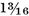
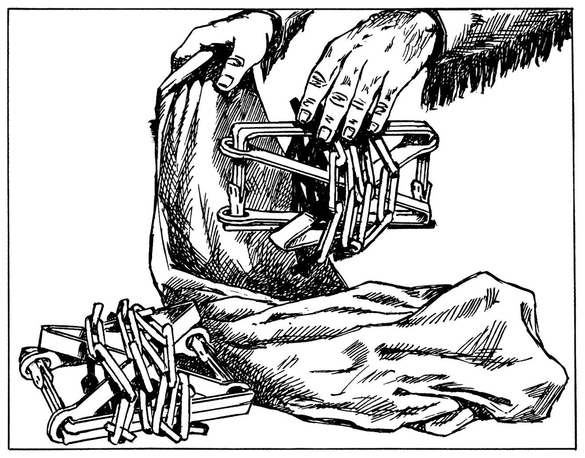
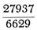

版权所有 © 2010 Skyhorse Publishing, Inc.
保留所有权利。未经出版商明确书面同意，不得以任何方式复制本书的任何部分，但在评论文章中引用简短摘录除外。所有咨询请联系：Skyhorse Publishing, 307 West 36th Street, 11th Floor, New York, NY 10018。
Skyhorse Publishing 的书籍可批量购买，享受促销、企业礼品、筹款或教育用途的特别折扣。也可根据需求定制特别版本。详情请联系特别销售部：Skyhorse Publishing, 307 West 36th Street, 11th Floor, New York, NY 10018 或 info@skyhorsepublishing.com。
Skyhorse® 和 Skyhorse Publishing® 是 Skyhorse Publishing, Inc.® 的注册商标，该公司在特拉华州注册。
10 9 8 7 6 5 4 3 2
美国国会图书馆编目出版数据存档备查。
加拿大印刷
献给贝蒂
她的贡献最为重要，从未间断
格伦·戴恩斯的所有绘图均为本书专门绘制。
未另行注明的绘图均由作者本人绘制。
具体插图的参考请见索引。
近年来出版的几部优秀著作大大改善了历史上海狸猎人的公众形象。这些著作准确详述了商人-捕猎者在塑造我们国家生活、使我国成为统一国家方面的巨大成就；它们提醒我们，在西部毛皮猎场上建立了持久的良好声誉；它们还相当有力地证明了荒野中捕猎者英雄主义的真实性。关于山地人(mountain men)：“他们的名字如今听起来就像号角的嘹亮和战鼓的擂动。”
山地人在我们西进扩张中扮演的角色是短暂的；他们的时代始于1803至1806年的刘易斯与克拉克远征，并在19世纪40年代初西进移民潮开始时戛然而止。这一幕再未重演。作为一种类型，山地人是独特的，但不能说他们的装备或方法是独一无二的。他们带入西部的一切，以及他们的大部分操作方式，都继承自印第安贸易中的前辈。19世纪初几十年间在黄石河或格林河发生的几乎所有事情，在很大程度上都是18世纪坎伯兰河、俄亥俄河上游或莫米河流域捕猎者-商人做法的延续。
西部海狸贸易最显著的特征可能与居住在西部领域的马背印第安人有关，也与这场戏剧上演的广袤、看似无边无际的荒野有关。在其活动范围的几乎每个地方，山地人都不断遭受印第安人的袭击。一旦失去马匹，他就注定完蛋，或者充其量沦为无效的存在，往往只能躲避敌人，同时寻找通往安全避难所和更多马匹的最直接路线。即使是最直接的路线通常也意味着漫长而痛苦的跋涉，徒步的捕猎者有时会选择找回自己的马匹或偷取他人的。无论如何，他都会采用印第安人的隐秘手段和策略。落基山区的那句老话”嗯，我还以为你是个印第安人呢”并非完全不恰当；成功的海狸捕猎者往往像印第安人一样思考、像印第安人一样打扮、也像印第安人一样行事。总的来说，他的装备与印第安人的并无太大差异；在山地人的时代，平原和山区部落已经获得并采用了白人的大部分装备作为自己的东西。他们尤其将商人-捕猎者的铁器据为己有。
本书涉及的正是这些铁器。由于平原和落基山区的铁器源自加拿大、易洛魁地区和旧西北地区的早期同类物品，因此也关注了这些先驱。本书最引人注目的发现或许是：17世纪的器物在远离圣劳伦斯河和哈德逊河的19世纪场景中依然延续存在。
恰如其分地说，我认为这个故事的核心是三维实物本身。在编选本书呈现的内容时，我参考了约两百个历史皮毛贸易文物收藏。除少数例外，每件标本都经过我亲自检查，并绘制了测量草图或拍摄了照片。在某些情况下，照片由博物馆馆长提供，所有博物馆官员或私人收藏家都积极配合，书面授权公开其收藏中的这些特定物品。本书收录的六十幅成品绘图由国家公园管理局的艺术家在圣路易斯杰斐逊国家扩张纪念馆按照我提供的规格绘制。这些图版大部分出自威廉·梅西之手，部分由詹姆斯·马尔卡希绘制。承蒙国家公园管理局局长和博物馆主任的许可，这些绘图得以在此使用。格伦·戴恩斯专门为本书创作了三十二幅绘图。这些插图对于本书的诠释至关重要，我在此感谢各位艺术家对本书的重要贡献。
众多图书馆员、历史学家、历史考古学家、博物馆馆长（包括国家公园管理局的全国工作人员）、私人收藏家、工具制造商以及历史学会和相关组织的官员，都参与了我的资料收集和研究成果的诠释工作。这项工作历时三十五年，足迹遍及美国大部分地区并延伸至加拿大。我在这方面受惠良多，在致谢部分我会更具体地表达感谢。脚注和参考文献也尽可能标注了我所引用的一些特殊文献来源。
阿尔弗雷德·A·克诺夫出版社多年来一直鼓励我追求目标，他们极具建设性的建议对本书的完成至关重要。我很幸运能得到克诺夫出版社编辑、“老海狸猎人”安格斯·卡梅伦的指导，他在处理我提交的问题时直接、敏锐、乐于助人且善解人意。克诺夫出版社的艾伦·费尔蒂格夫人和朱迪思·波默兰茨夫人也参与了最终版式的设计。波默兰茨夫人作为文字编辑，在梳理不一致之处和准备付印稿件方面做了大量工作。最后，我要感谢我的妻子贝蒂·韦斯特法尔·拉塞尔，她几乎一生都在给予我持续的帮助，承受着与博物馆事业相关的种种特殊压力。她给予了耐心的鼓励和专业的秘书支持，这对我的研究和写作的完成至关重要。
卡尔·P·拉塞尔
1966年8月
加利福尼亚州奥林达
本书的工作始于1930至1934年间，当时作者受命为黄石国家公园的博物馆整理山地人的故事。此后，西部皮毛贸易研究一直是作者的主要兴趣之一，无论是在公务工作中还是在纯粹的个人探索中。在研究的早期阶段，一些大平原和落基山脉的年迈先驱仍可接受访谈。这些老前辈不能被归类为山地人，但他们曾在山地人生涯的暮年时期与山地人有过交往。从这些见证者口中传来了一些有趣的证词，从他们最后的栖身之所也流出了一些有据可查的皮毛贸易”遗物”。我特别要感谢J·P·V·（“捕猎者”）埃文斯、H·库克船长、威尔·埃弗森、查尔斯·马布尔，以及令人敬佩的克罗族老酋长”数政变”（Plenty Coups）。
本次对贸易商-捕猎者铁制器物的调查，其范围和性质决定了需要众多合作者的帮助。正文、脚注和参考文献标明了大多数这些盟友，但某些个人和机构给予的帮助如此根本，有必要进一步致谢。
美国国家公园管理局、美国博物馆协会和奥伯兰德信托基金联合资助了我在二战前夕对二十个欧洲城市博物馆的考察之旅。在访问的多个收藏机构中，我得以研究大量具有重要意义的武器和其他铁器，这些物品构成了印第安贸易商品的祖先谱系。在美国，美国博物馆协会资助了我多次前往美国各地博物馆的行程，使我有机会研究本书所报告的许多文物。各地的博物馆馆长、私人收藏家和策展人都慷慨地分享了他们的知识、时间和设施；在我访问之后，他们中的许多人与我保持通信，提供所需文件的副本、博物馆记录的翻译、指定文物的照片，以及关于鉴定和物品历史的评论。在众多贡献者中，我特别感谢以下人士：道格拉斯·阿代尔，《威廉与玛丽季刊》；约翰·巴索蒂，俄亥俄州哥伦布市；A·T·鲍伊，密西西比州纳奇兹；乔治·R·布鲁克斯，密苏里历史学会馆长；已故的H·C·邦普斯博士，前美国博物馆协会成员；沃伦·W·考德威尔，密苏里盆地项目；已故的罗伯特·格拉斯·克莱兰博士，前亨廷顿图书馆成员；劳伦斯·韦尔·科尔曼博士，前美国博物馆协会馆长；西里尔·B·库尔维尔博士，卡哈尔神经病理学实验室；斯图尔特·卡斯伯森，洛杉矶；克莱尔·M·埃尔斯顿，柯林斯公司总裁；约翰·C·尤尔斯，美国国家博物馆；T·M·汉密尔顿，密苏里大学；查尔斯·E·汉森，毛皮贸易博物馆，内布拉斯加州查德龙；肯尼斯·E·基德博士，安大略省特伦特大学；W·C·劳伦斯，边疆博物馆，怀俄明州杰克逊；斯蒂芬·R·伦纳德，前奥奈达社区成员；哈里·E·利希特，俄勒冈历史学会；菲利普·K·伦德伯格博士，美国国家博物馆；R·S·尚克兰博士，凯斯理工学院；卡莱尔·S·史密斯博士，堪萨斯大学；西里尔·斯坦利·史密斯博士，麻省理工学院；R·F·G·斯皮尔博士，密苏里大学；特雷西·I·斯托勒博士，加州大学戴维斯分校；H·J·斯温尼博士，爱达荷历史学会；查尔斯·范·拉文斯韦，前密苏里历史学会馆长；托马斯·沃恩，俄勒冈历史学会馆长；瓦尔多·R·韦德尔博士，美国国家博物馆；阿瑟·伍德沃德，前洛杉矶博物馆成员；以及欧文·泽普，前俄亥俄州立博物馆馆长。
自项目启动以来，这一毛皮贸易历史研究项目一直得到美国国家公园管理局的支持。从霍勒斯·M·奥尔布赖特开始，五任局长都给予了鼓励。如今，国家公园系统内有十九个野外区域具有毛皮贸易的重要意义，这是因为在这些区域内或其周边发生过历史事件，或者因为它们纪念了猎人-贸易商(trapper-trader)及其活动。本茨旧堡(Bents Old Fort)、拉勒米堡(Fort Laramie)、温哥华堡(Fort Vancouver)、大波蒂奇(Grand Portage)、大提顿(Grand Teton)、斯科茨布拉夫(Scotts Bluff)和黄石(Yellowstone)是这些毛皮贸易遗址中特别著名的几处。国家公园管理局的工作人员在这些公园和纪念地，以及华盛顿特区、新墨西哥州圣菲、内布拉斯加州奥马哈、宾夕法尼亚州费城和加利福尼亚州旧金山的中央办公室，开展毛皮贸易主题的研究工作。这些工作中有很大一部分集中在密苏里州圣路易斯的杰斐逊国家扩张纪念馆，该单位一直是本书作者研究项目的重要”母港”。
要列出所有为这项铁制武器和工具研究做出贡献的国家公园管理局工作人员，几乎等于列出从事行政、历史、考古和博物馆工作的大部分管理局人员。然而，有几位在多年间给予了特别重要的帮助：罗伊·阿普尔曼、爱德华·比蒂、已故的内德·J·伯恩斯、路易斯·凯伍德、约翰·科特、威廉·C·埃弗哈特、约翰·C·尤尔斯、E·雷蒙德·格雷格、已故的安塞尔·F·霍尔、J·C·哈林顿博士、已故的阿尔弗雷德·F·霍普金斯博士、J·保罗·哈德森、约翰·赫西博士、已故的约翰·詹金斯、赫伯特·卡勒、罗纳德·F·李、拉尔夫·刘易斯、约翰·利特尔顿、威廉·梅西、梅里尔·E·马特斯、詹姆斯·马尔卡希、查尔斯·彼得森、哈罗德·彼得森、朱利安·斯波茨、罗伯特·斯塔雷特、希拉里·A·托尔森、多尔·G·耶格尔。毫不夸张地说，如果没有上述同仁的长期合作，这本书是不可能写成的。
在合作的图书馆、历史学会、政府机构和其他机构中，有几个在前文未提及但给予了非凡帮助的机构。密苏里历史学会拥有关于山地人(mountain man)及其在海狸贸易中的前辈的真正伟大的手稿收藏之一。该学会还拥有大量代表西部毛皮贸易的三维实物资料。这些资源已向本研究开放；档案管理员和策展人慷慨地提供帮助，他们的许多文物被用于本书的插图。还应感谢的是，《密苏里历史学会公报》发表了我的《毛皮贸易历史图册》，其重印本在我寻求学者、收藏家和其他历史学会合作时发挥了重要作用。
纽约历史学会的显著特色之一是拥有1831至1849年间美国毛皮公司文件的非凡收藏。在这些手稿被缩微胶卷化之前的多年里，我得益于该学会非常耐心的图书馆员的帮助，他们用手推车运出成堆的文件供我查阅。最近，我进一步大量使用了这些资料，如今这些资料已以缩微胶卷的形式存放在许多图书馆中。
在芝加哥地区居住的几年间，我有机会经常访问芝加哥历史学会的档案馆，那里最为热情的图书馆员们确保我对美国毛皮公司更多（及更早期）记录的需求得到满足。这涉及一些馆际互借服务，他们欣然提供了这些帮助，对此我深表感谢。
在加利福尼亚州伯克利，加州大学图书馆多年来一直是我的主要研究基地。那里乐于助人的图书馆员和丰富的馆藏，以及班克罗夫特图书馆的资源从未让人失望，而诸如影印服务等辅助支持对我的插图项目也至关重要。
由国家公园管理局开展的跨机构考古抢救项目中，有许多历史学家兼考古学家与我合作，帮助评估文物断代的一些问题，并就近期在西部河流流域印第安人遗址和贸易站点发现的毛皮贸易物品提供建议——这些地区在大坝建成后将被淹没。在此，或许值得一提的是，一个真正的研究者新群体已经形成。几年前，人们还相当准确地说，通常只有人物和事件的记录才会受到毛皮贸易史研究者的关注——“旧时海狸生意的实物是琐碎的、易逝的、大多难以触及的，充其量也是难以解读的。在现阶段，它们几乎不值得认真研究。”相对少数具有古物研究倾向的工作者对这种贬低提出了挑战，并在联邦、州或地方的支持下，在历史学家中创建了一门新学科。建立指导方针并证明基于出土历史文物设立基准点的可行性，引起了一些田野工作者的极大兴趣。由此，历史学与考古学之间产生了众多联姻。如今，发掘者和水下调查人员已经发展出一套可行的研究体系，他们为学术殿堂带来了一个重要的辅助学派。他们的一些原始材料构成了本书的实质内容。
ALSO BY CARL P. RUSSELL - Guns on the Early Frontiers 扉页版权页献词关于插图的说明前言致谢第一章 - 美国历史中的山地人第二章 - 海狸猎人的火器第三章 - 海狸陷阱与捕猎第四章 - 边疆人的刀具第五章 - 美国边疆的斧头第六章 - 进入西部的各种铁制工具和武器第七章 - 火中之铁附录A - 历史文物作为历史来源附录B - 约翰·雅各布·阿斯特在哥伦比亚河的工具和铁匠设备清单，1812-1813年附录C - 斧头和战斧上的标记附录D - 美国毛皮公司代表性毛皮收益，印第安纳，1839-1841年参考文献索引关于作者关于字体
当刘易斯和克拉克在1803至1804年间招募探险队员时，他们挑选并”签约”了九名来自肯塔基的年轻边疆人(backwoodsmen)，并从正规军中调来了十四名久经沙场的士兵。两名法国船夫和混血翻译乔治·德鲁亚尔组成了永久队伍。所有这些人都有荒野生活和与印第安人接触的经验。与两位领队一样，他们中的大多数人对肯塔基和旧西北地区反复发生的印第安战争的情况和原因了如指掌。其中一些人是经验丰富的猎人，精通捕猎海狸的技术；从本质上或直觉上说，他们已经是”山地人”(mountain men)了，尽管这个术语当时尚未出现。这一理论并非臆想；在1804至1806年的伟大远征中，它的有效性得到了上百次的实证验证。托马斯·杰斐逊关于远征目的的最初指令明确承认了国家对新的、更大的海狸产区的需求；他指示梅里韦瑟·刘易斯找到这样的地区，确定其海狸数量，并提交书面报告。
杰斐逊对西部毛皮贸易未来的关注，与他对解决困扰新生美国的一些印第安问题的焦虑相互呼应。某种英国敌意仍然弥漫并不利地影响着加拿大边境以南的各州和领地。对杰斐逊和所有有远见的当代美国政治家来说，毛皮贸易中的国际竞争、北方印第安人的威胁以及英国对美洲的野心构成了一个紧密相连的问题。亚历山大·麦肯齐向世界公布的英国向太平洋扩张计划于1801年出版。麦肯齐是备受尊敬的西北公司探险家，他将毛皮贸易视为英国获得一直延伸到哥伦比亚河口的商业控制权的工具。他写道：“通过开辟大西洋和太平洋之间的这种交流（毛皮贸易），并在内陆和两端建立定期据点……从北纬48度到极地的整个北美毛皮贸易的完全控制权都可能获得……这将是商业事业的广阔天地，其产出将不可估量。”
在他的书出版后，麦肯齐前往英国，在那里他倡导在哥伦比亚河口建立军事基地，以维护预期中英国在俄勒冈的主权。托马斯·杰斐逊和美国国会被麦肯齐的论战进一步激励。刘易斯和克拉克远征队被尽快地计划和启动了。
从行军一开始，刘易斯、克拉克和他们的追随者就实践着后来成为西部海狸猎人野外活动特征的旅行、贸易、手工艺和生存技术。这些并非新程序；它们与大多数人在肯塔基州和俄亥俄州以北度过青年时期时所使用的完全相同。远征队返回后，大批美国捕猎者和毛皮商人占据了密苏里河流域，其中许多人立即前往探险家们报告的更有前景的海狸水域。他们通过采用与其先辈在占领阿勒格尼山脉以西地区和密西西比河谷时所采用的大致相同的方法来完成对新领土的占领。他们的目的、与印第安人交往的程序——甚至他们的服装和个人装备——本质上都是相同的。我们对美国毛皮贸易的概念以这种贸易作为一种制度的连续性为标志。
在十八世纪末和十九世纪初的几十年里，无论是我们当时界定不清的边界以北的英国人，还是面向西部的美国人，都确定落基山脉的广袤地区盛产海狸。这些”毛茸茸的钞票”鼓励着越来越多的冒险者，无论是英国人还是美国人，勇敢地面对通往西部的漫长、荒野和未绘制地图的路线上的危险。财务回报足够诱人，促使越来越多的新贸易公司组建起来，以支持不断扩大的野外活动。
在刘易斯和克拉克之前的三百年里，文明世界的制帽匠们一直在呼唤海狸。在山地人的时代，每年有10万张海狸皮被用于生产男士帽子。林荫大道上的花花公子并不是”海狸帽”的唯一买家；许多国家的军队都想要他们自己特定款式的海狸帽，各地农村社区的壮汉们也需要它们作为周日礼拜的正装。
三角帽或翘边帽（a和b）在十八世纪和十九世纪初被欧洲和美国的军队广泛使用。刘易斯和克拉克带入西部的是美国炮兵版本的三角帽，每顶都装饰着一根羽毛。图c所示是1820年代和1830年代博·布鲁梅尔式花花公子们青睐的时尚款式。宽边款式（d）在乡村居民、一些神职人员以及少数军事单位、宗教派别和西南部商人中很受欢迎。长期使用后，帽檐往往会变软下垂。一些山地人并不鄙视它，正如当代艺术家们留给我们的现场素描中偶尔记录的那样。
还有许多其他款式和样式，都有相同的基本材料——用海狸毛制成的毡。从商人那里得到的海狸皮是一张粗糙、油腻的皮，上面覆盖着粗糙的棕色毛发，毛发下面是细密丰富的绒毛或羊毛。制帽的第一步是将毛发和绒毛从皮上剃掉。然后将光秃秃的皮卖给胶水制造商，绒毛和毛发通过吹风工艺分离。只有绒毛被用于制帽。柔软、松散的绒毛被少量地涂在一个穿孔的旋转铜锥上，锥内有一个吸力装置将绒毛吸附在锥上。喷洒在覆盖绒毛的锥上的热水，加上用手对绒毛的揉搓，开始了毡化过程。反复添加绒毛，继续揉搓，直到毡变得质地坚韧。然后将其作为帽罩从锥上取下，放入模具中加工成所需的形状。当它仍然柔软温热时，虫胶从内部被压入其中。
然后将细毛皮贴附在成型帽子的外表面。借助热水和精细的手工操作，使外表面呈现出毛皮生长的效果。制作礼帽的最后一步是赋予其高光泽度，并用帽带和内衬进行装饰。通过旋转模具以及刷子、熨斗、砂纸和天鹅绒的配合使用，可以获得如丝绸般光亮的表面效果。由于其长而柔软的”绒毛”或毛皮，“海狸帽”具有一种丝绸帽从未拥有的精致之美。
海狸帽制作如今已是一门失传的技艺。19世纪30年代丝绸的引入逐渐取代了制帽业中的海狸毛皮；今天，“海狸帽”除了在博物馆收藏中几乎难觅踪迹。
1800至1803年间路易斯安那从西班牙转让给法国，随后于1803年美国从法国购得，使美国领土面积翻了一番，但这对遏制英国人在密苏里河上游的印第安贸易几乎没有影响。刘易斯和克拉克于1804年观察到加拿大公司与美国印第安人之间的贸易往来，并对此进行了详细报告。自1787年联合成立的西北公司的蒙特利尔商人尤为活跃，因为他们视自己为密苏里河流域旧时法国利益的合法继承者。合伙人之一亚历山大·麦肯齐于1807至1809年间已在哥伦比亚河上游、庞多雷湖和平头族地区建立了贸易据点——后两处位于今美国境内。
美国远西毛皮贸易领域的先驱是曼努埃尔·利萨，他在西班牙统治的最后几年与密苏里河下游的部落打交道，积累了丰富的经验。1807年，他在黄石河与大角河交汇处建立了一个贸易站。他从这里派出约翰·科尔特进行了在黄石-大提顿地区的非凡探险之旅。利萨与克罗族的交易非常成功，吸引了其他经验丰富的商人参与，他们于1809年共同创立了”圣路易斯密苏里毛皮公司”。股东安德鲁·亨利率领一支强大的捕猎队从曼努埃尔堡前往密苏里河三叉口，于1810年在杰斐逊河和麦迪逊河交汇处附近建立了一个贸易站。黑脚族人破坏了这项业务，一年后亨利越过大陆分水岭，在斯内克河的亨利支流上建立了一个贸易站，这是美国人在太平洋斜坡上的第一个据点。敌对的黑脚印第安人和冬季食物采购的困难使亨利的冒险事业极为短命。这次失败反映了圣路易斯密苏里公司的整体困境。
可以理解，在遥远荒野中投资商业企业的投资者会要求政府为其野外人员提供保护。在圣路易斯，利益相关方明确表达了诉求，当时的路易斯安那政客们发现有必要表明立场，支持或反对联邦政府为荒野中的私人企业提供担保。此时，美国总统托马斯·杰斐逊是对西部开发最感兴趣的政治家。刘易斯和克拉克富有建设性的报告为杰斐逊及其西部扩张主义合作者提供了有力支持，但泽布伦·M·派克中尉于1810年发表的对大平原北部的评估报告，却为新英格兰联邦党人和其他担心建立新西部州政治影响的保守派提供了弹药。派克报告说：“我在各处看到绵延数里格的地带，风将沙子吹成海浪般的各种奇异形状，上面没有一点植被。……西部的农场将局限于密苏里河和密西西比河沿岸，而不适合耕种的草原必须留给流浪的、未开化的土著居民。”由此开始了”美国大沙漠”的神话，这个传说延缓了美国人经陆路抵达加利福尼亚和哥伦比亚河流域的进程。
1808年美国军事管辖权扩展到今堪萨斯城附近的新据点奥塞奇堡，这并未完全满足密苏里河上游商人的需求，但这一政府让步似乎表明战争部可能会进一步扩大其保护范围。约翰·雅各布·阿斯特在东部的成功已使他成为一位杰出的毛皮商人，此时他决定将业务扩展到远西地区。值得注意的是，托马斯·杰斐逊敦促并协助阿斯特做出了这一决定。1810年，阿斯特的美国毛皮公司成立了一个分支机构，名为太平洋毛皮公司，其明确目标是以哥伦比亚河口为基地开展美中贸易。阿斯特的船只”托恩昆号”载着人员和货物于1810年9月从纽约出发，由一艘美国海军舰艇护航一段距离，以防止英国炮艇的搜查和扣押。“托恩昆号”于1811年3月进入哥伦比亚河，名为阿斯托里亚的贸易站尽快建成。由威尔逊·普莱斯·亨特率领的阿斯特陆路队伍于1811年3月12日从圣路易斯出发，于1812年1月抵达阿斯托里亚。
无需详述阿斯托里亚人命运多舛的尝试，只需说明1812年战争彻底改变了一切。从一个有望促成俄勒冈定居的美国企业，它一夜之间变成了西北公司手中的英国生意。
说1812年战争给西部毛皮贸易带来了复杂局面，这种说法还算轻描淡写。1813年6月，面对英国印第安盟友的威胁，奥塞奇堡被迫放弃。此后，西北公司在密苏里河沿岸一直向南延伸到曼丹村落，开设了多个贸易站点。曼努埃尔·丽萨失去了密苏里河上游的贸易，但据说他成功说服了密苏里河流域的部落停止攻击下游的美国人。就战斗而言，与密西西比河上频繁的血腥事件形成鲜明对比的是，这里几乎没有发生什么冲突。但美国的贸易陷入停滞，直到1814年12月签署的《根特条约》恢复美国权益后才得以改变。这项协议在又过了一年后才对西部事务产生影响。
美国商人的请愿最终得到了国会的回应。战后通过了一项法律，将印第安贸易限制为仅限美国公民参与，并在西部部署了一千四百名士兵。起初，圣路易斯以西几乎没有什么军事活动，但至少奥塞奇堡在1815年10月重新被占领，美国人也逐渐返回密苏里河上游。军事推进中最引人注目的是1819-20年的所谓”黄石远征”，其目的是”扩大和保护我们的毛皮贸易，并为我们的西北边疆带来持久和平。“斯蒂芬·H·朗少校和亨利·W·阿特金森上校都担任指挥职务。大规模的军事活动激起了西进扩张反对者的不满；他们在国会中集结了足够的力量，阻止了这一军事计划的完成。朗被从密苏里河调往科罗拉多落基山脉，他随后的报告反而损害了扩张主义者的事业。派克1806年描述的”美国大沙漠”在1823年朗的描述读者看来似乎太过真实。反对政府为西部军事目的拨款的政治派系认为他们又取得了一个小胜利，因为正如他们所指出的，在一个只适合野蛮印第安人和狼群生存的地方促进公民利益毫无意义。尽管存在这些不利情况，1822年春天，美国毛皮公司的代理人拉姆齐·克鲁克斯在圣路易斯为公司的西部分部建立了总部。正是在这个时候，阿斯特和其他私人利益集团发起的针对政府已运行二十六年的印第安贸易工厂制度的政治攻势达到高潮，最终推翻了该制度。因此，1822年为美国毛皮公司走向垄断开辟了更宽广的道路。
然而，不应由此得出结论认为美国毛皮公司立即在西部毛皮贸易中取得了无可争议的主导地位。事实上，对该公司入侵的激烈抵抗导致了本章重点讨论的多次远西探险活动。在详细讨论太平洋斜坡地区的捕猎者事务之前，我们应该先了解一下更重要的竞争贸易公司。
在密苏里河下游地区，老牌商人对军事力量带来的稳定影响反应迅速，到1819年，丽萨的密苏里毛皮公司再次从康瑟尔布拉夫斯附近的丽萨堡与波尼族、奥托族、奥马哈族、艾奥瓦族以及部分苏族进行贸易。舒托家族服务于奥塞奇族和堪萨族。罗比杜和帕潘的业务与丽萨的领地有所重叠，普拉特和瓦斯克斯也是如此。奥塞奇堡和阿特金森堡等军事哨所提供了必要的保护。见证美国毛皮公司注入新血液的同一年（1822年），也迎来了另一家新公司——阿什利-亨利集团，这家公司注定要掀起一场比同时代任何公司都更为轰动、同时也更具深远意义的贸易活动热潮。
此时已经进入或即将进入这一领域的还有几个新墨西哥集团、哥伦比亚毛皮公司、斯通-博斯特威克公司、伯纳德·普拉特公司、法国毛皮公司、纳撒尼尔·J·怀斯、B·L·E·德·博纳维尔上尉、萨布莱特和坎贝尔、甘特和布莱克威尔，以及一些较小的商号。密苏里河已经容纳不下他们了。密苏里河和落基山脉的毛皮贸易进入了其历史上”山地人”(mountain man)崛起的阶段，他们逐渐盖过或取代了早期传统的voyageur（法裔独木舟夫）。
在哥伦比亚河流域，作为阿斯特先生事业继承者的英国西北公司，八年来未遇到任何竞争。它已将捕猎活动向南扩展到威拉米特河流域和斯内克河腹地。1818年后，西北人向东远征至格林河，向南到达贝尔河。总体而言，他们在俄勒冈地区的事务没有受到任何对手的挑战，但在加拿大，与哈德逊湾公司之间残酷的贸易战争使西北公司及其对手都元气大伤，可以说是两败俱伤，两家英国公司于1821年实现了合并。哈德逊湾公司的资深员工约翰·麦克劳林博士被任命负责哥伦比亚河流域的事务。1825年春，总部从阿斯托里亚（乔治堡）迁至哥伦比亚河北岸、威拉米特河口对面附近的新据点——温哥华堡。阿斯托里亚人开创、西北人发展起来的那些前哨站被新经营者保留下来，而向东深入斯内克河流域及其他靠近美国企业方向的遥远毛皮产地的捕猎远征则得到了加强。美国利益对英国在俄勒冈”私人领地”的预期冲击不久便到来了。这场美英在大盆地的竞争与加利福尼亚捕猎者的故事之间存在关联，但为了按时间顺序叙述，我们暂且回到密苏里河的毛皮贸易。
1823年阿什利-亨利与阿里卡拉印第安人的遭遇战，引发了密苏里河上第一场有相当规模美军参与的战斗。这也是威廉·阿什利彻底改变野外作业方式的原因之一。为了避免与敌对印第安人和密苏里河上众多竞争对手的进一步纠葛，阿什利放弃了传统的贸易站模式，于1823年秋天派遣一支由白人猎人组成的骑马队伍进入落基山脉。杰迪戴亚·史密斯率领这支远征队，开创了一套极为新颖且成功的做法，不仅为其推动者赢得了名望和财富，同时也为最终获得俄勒冈和加利福尼亚做出了重要贡献。史密斯的队伍在隆冬时节前往斯威特沃特河，并于1824年3月在后来被称为”三渡口”的地方埋藏了部分补给和装备。猎人们约定在六月一日左右在此地会合。随后他们穿越南隘口，成为已知最早使用该通道西行的白人。到达格林河后，队伍分散行动，收获颇丰。到6月15日，所有猎人都已穿过南隘口返回斯威特沃特河的约定地点。因此，1824年预示着一种新制度的诞生——山地人的”年度集会”(Annual Rendezvous)，这种做法取代了阿什利-亨利原先采用的固定贸易站模式。在接下来的十六年里，共举行了十五次年度集会：格林河八次，温德河三次，盐湖谷两次，熊河一次，蛇河一次。美国山外猎人所开拓的新区域大多是英国毛皮队的活动范围。通常，他们的猎获物从山区运到普拉特河，然后通过水路运往圣路易斯。山地人对英国公司的成功竞争得到了美国政府的适度赞扬；美国印第安事务局官员托马斯·福赛思于1831年10月24日写信给战争部长刘易斯·卡斯：“毫不夸张地说，现在每年有价值五十万美元的毛皮从密苏里河运下来，而这些毛皮以前都是运往哈德逊湾的，正是阿什利将军的进取精神促成了这一贸易渠道的改变。”
雷蒙德·达博尔绘图，《西部人品牌书》，1944年。芝加哥西部人协会提供。
远西地区商人、猎人和印第安人为贸易和狂欢而举行的盛大年度聚会始于1825年，一直持续到1840年。这些夏季集市由威廉·H·阿什利首创，为落基山脉以西的毛皮商人带来了显著的野外作业方式变革。贸易货物通常从圣路易斯运到指定的荒野集会地点，在那里与印第安人、哈德逊湾公司的逃兵、自由猎人和公司雇员交换海狸皮和海狸香。友好印第安人的大型村落——男女老少——通常是集会的一部分，有时人数多达数百人。需要数百匹马，因此集会地点的选择必须考虑牧草的供应。这种商业与狂欢相结合的活动中，酒类总是扮演重要角色，持续数天甚至数周。表面上看，将货物运到集会地点的商人获得了巨额利润，有时甚至高达投资的两千倍。但当企业成本包括众多人命损失时（这种情况时有发生），传统的金钱收益计算就变得不那么有意义了。无论如何，山地人的夏季集会是他们生活中的”大事”，年度集市的故事包含了毛皮贸易史上一些最戏剧性的篇章。参与者讲述的部分故事可见于卡尔·P·拉塞尔的《美国毛皮贸易的荒野集会时期》，载于《俄勒冈历史季刊》（1941年3月），第1-47页。
附图标示了十六年间举行的十五次年度集会的地点。1831年补给队未能到达，当年没有举行夏季集会。
1号是1825年在格林河亨利支流举行集市的地点。阿什利主持了这次集会，以及1826年在犹他州现今海勒姆附近的卡什谷地区举行的下一次集会（2号）。这两次贸易活动的收益使阿什利成为富人。3号地点位于熊湖南端，是1827年和1828年集会的举办地。1829年的集会在南隘口以东的波波阿吉河上游举行（4号）。学者们对1830年集会的模糊记录有各种解读，但史密斯、杰克逊和萨布莱特于1830年10月30日致战争部长的正式报告指出，集会在南隘口附近的温德河源头举行。这是首次使用马车运输贸易货物。书面报告强烈暗示，所指的源头是波波阿吉河上游，1830年的集会地点与1829年集会的地点大致相同。
1831年，补给车队直到秋天才抵达山区，夏季贸易未能进行。第5号标记的是1832年皮埃尔洞(Pierre’s Hole)集会地点。1833年，夏季集会在格林河马溪(Horse Creek)举行（第6号），这个地点后来成为著名的热门聚会场所。第7号标记的是哈姆斯福克(Ham’s Fork)的地点，1834年的集会在此举行。1835年、1836年、1837年、1839年和1840年的集会都在第6号地点的大致区域举行。1838年的集会在波波阿吉河(Popo Agie)河口的风河(Wind River)举行（第8号）。1840年之后再无年度集市。
金钱收益对于从事贸易的商业公司当然至关重要，但对某些政治家而言，其中涉及的”地缘政治”更为重要。毫无疑问，毛皮贸易不仅仅是美国在俄勒冈地区实现天命的一个插曲，它是一个时代。山地人不仅探索出了向美国人开放旧俄勒冈的小径和山口，他们的产业和贸易还为美国理念传播到哥伦比亚河流域提供了载体。美国猎人对加利福尼亚历史也有类似的影响。美国政府竟然让如此重要的国家扩张手段在早期自行发展，既无援助也无正式协议，这几乎令人难以置信；然而，直接支持的记录实例寥寥无几，人们也徒劳地寻找华盛顿正式表达兴趣的明确记载。不过，这种缺失更多是传言而非事实。多年来，许多历史教科书的作者都坚持这样一种观点：在1820年代和1830年代初期，冷漠、漠不关心或强烈反对是立法机构处理西进扩张问题的特点。这种观点是有原因的——1821年、1822年、1823年和1824年，建立俄勒冈领地的四项法案均遭否决。但在那个早期阶段，扩张的反对者通过描绘将纳税人的钱花在远西项目上是徒劳无功的画面，成功地阻止了对政府授权西进运动的支持；他们认为只能期待在”荒凉而不宜居住”的气候中建立一个独立的太平洋国家或殖民地。“拥有殖民地与我们政治制度的原则相悖，”他们说。在如此遥远的土地上建立真正的州的想法难以被接受。
然而，另一方面，弗吉尼亚州众议员约翰·弗洛伊德、密苏里州参议员托马斯·哈特·本顿、弗吉尼亚州参议员约翰·泰勒、新罕布什尔州参议员富兰克林·皮尔斯、宾夕法尼亚州众议员詹姆斯·布坎南和田纳西州众议员詹姆斯·K·波尔克等西进扩张倡导者的工作成果不断累积。他们的告诫”在公众心中扎下了根”，最终必然会产生一些影响。
迫使太平洋海岸问题得到解决的第一个实际步骤，是阿什利-亨利-史密斯猎人公司从1824年开始对旧俄勒冈地区的渗透。“暗示性的历史”不会为企业家赢得荣誉，我请求谅解，因为我相当武断地指出威廉·阿什利将军与参议员托马斯·哈特·本顿长期密切的交往，很可能是杰迪戴亚·史密斯太平洋海岸探险计划的起源。同样，我认为博纳维尔上尉的”冒险”以及1833年约瑟夫·雷德福德·沃克率领的相关加利福尼亚远征，即使不是由安德鲁·杰克逊及其部分内阁成员发起的，也是得到他们同意的。这最后一个观点在一定程度上得到了现存当代文献的支持。这两个命题都值得详细阐述，但就我们目前的目的而言，它们可以”照原样”作为山地人在太平洋沿岸故事的起点。
第一次向加利福尼亚方向的陆路推进是由圣菲商人完成的。1821年墨西哥从西班牙独立后，他们建立了密苏里河与新墨西哥之间依靠驮畜和货运马车的贸易。这种在西班牙领土上的活动与毛皮贸易并非完全不同；两种行业的人员相互重叠或交融，许多贸易物品相同，圣菲商人开发的部分地区也是毛皮贸易区域，海狸毛皮实际上构成了圣菲贸易的重要组成部分。但圣菲及其商人之所以进入加利福尼亚的故事，只是因为圣菲小道构成了通往加利福尼亚小道之一的支线，而且圣菲、陶斯及其周边地区是西班牙商人和山地人的避风港，其中一些人选择迁往加利福尼亚。
摘自R·G·克莱兰的《这群鲁莽的人》(This Reckless Breed of Men)（纽约：阿尔弗雷德·A·克诺夫出版社；1950年），第83页。
真正”突破”到太平洋的行动发生在1826年毛皮商人集会(rendezvous)之后。这次集会在熊河举行，距离该河流入大盐湖的地方约40至50英里。在这次集会上，威廉·阿什利将他在阿什利-史密斯公司的股份出售给了史密斯、杰克逊和萨布莱特。交易结束后，阿什利启程前往圣路易斯（约在1826年8月中旬），杰迪戴亚·史密斯带领14人进入了犹他湖西南方向的未知地带。可以说，他开辟的路线与今天的美国91号公路相吻合，从现在的犹他州奥格登出发，经过巴斯托和维克多维尔，然后翻越卡洪山口附近的山脉，进入圣贝纳迪诺山谷，最终到达圣加布里埃尔。史密斯、杰克逊和萨布莱特公司的这些雇员是第一批探索盐湖-科罗拉多河路线的白人，也是第一批从东部进入加利福尼亚的美国人。关于他们克服的艰难困苦、与印第安人和神父建立的友谊、美国船长为史密斯的证件和无害动机作担保所提供的帮助，以及威廉·H·坎宁安船长的合作（他用自己的波士顿船”信使号”(Courier)将史密斯从圣迭戈送到圣佩德罗），都有很多可以讲述的内容。然而，这支捕猎队只是我们所关注时期内来到加利福尼亚的二十五支队伍之一。由于篇幅限制，大部分戏剧性事件只能略过，以便在此呈现这次”入侵”的更宏观故事。不过，为了我的叙述目的，有必要继续简要介绍杰迪戴亚·史密斯的旅程。
加利福尼亚总督对这些美国人的到来感到不安，他清楚地意识到这预示着灾难。然而，由于来访者持有真实有效的许可证和通行证，他觉得不得不避免逮捕或其他强制措施。他下令让他们按原路离开他的领地。史密斯随后带领手下返回圣贝纳迪诺山谷，翻越圣贝纳迪诺山脉，然后他认为这样就算遵从命令了。他没有向东前往科罗拉多河，而是向北穿过羚羊谷，翻越特哈查皮山脉进入圣华金谷。在接下来的三个月里，捕猎者们在向北行进途中捕获了他们所经过的富饶河流中的海狸。当他们到达美洲河时，已经携带了1500磅海狸皮。
1827年5月初，史密斯试图沿美洲河上行，翻越内华达山脉，但积雪太深。在损失了一些驮畜(pack animals)后，队伍设法返回了山谷。然后他们向南返回斯坦尼斯劳斯河上一个他们熟悉的地方，在那里安顿下来，享受漫长的等待。5月20日，史密斯和两名同伴沿斯坦尼斯劳斯河出发，八天后到达山脉东侧。他们穿越内华达-犹他沙漠的路线大致与今天的美国6号公路相同。他们在约旦河流出犹他湖的地方渡河，然后沿大盐湖东岸向北行进，到达熊河和熊湖南端约定的集会地点(rendezvous)。杰迪戴亚在营地完成的首要任务之一，就是给圣路易斯印第安事务总监威廉·克拉克将军写一份关于加利福尼亚及其路线的报告。他在这封有趣的信中写道：“（加利福尼亚）总督不允许我沿海岸向博德加(Bodaga)方向进行贸易（那里是俄国人的贸易据点）。”
杰迪戴亚与联邦官员之间存在某种先期默契的暗示，偶尔会在他的通信中流露出来。在前面提到的例子中，人们会想起美国国会在1820年代正式承认太平洋沿岸存在”俄国威胁”。1821年1月25日，哥伦比亚河占领委员会主席约翰·弗洛伊德众议员曾详细论述俄国的决心：
……要让全球四方都向其臣服……她不仅在欧洲方面稳坐高位……她还趁机在太平洋美洲海岸占据了两个重要据点——一个在新阿尔汉格尔斯克(New Archangel)，另一个在博德加湾(Bodiga bay)……博德加的堡垒建造精良，配备大炮，拥有良好的港口。他们发现与印第安人的贸易相当可观……用于这种贸易的轻便货物从圣彼得堡用雪橇运输，三个月就能完成水路运输需要两个夏天才能完成的任务……一个能够为了开展贸易而承受如此艰苦旅程的国家，必定深知贸易的价值。为了确保她的目标不会被任何事件夺走，她认为有必要占领一个夏威夷群岛(Sandwich Islands)，这使她能够有效地维持自己的地位，并控制整个北太平洋。[5]
1822年，沙皇的敕令试图关闭北太平洋的航运，人们担心的”俄属加利福尼亚”威胁似乎确实存在。然而，当杰迪戴亚·史密斯于1826-27年启程探险时，沙皇最近已正式保证，在美洲西部的俄国人将遵守门罗主义——这一禁止性原则正是直接针对俄国制定的。杰迪戴亚是否知道俄国的这一声明尚不确定，但无论如何，博德加和罗斯堡的俄国人始终保持在原有范围内，继续从事平静的农业和毛皮贸易活动，前后持续了三十多年。国会某些成员所担心的扩张占领和政治侵略从未发生。1840年，加利福尼亚海岸的俄国财产和平地出售给了萨克拉门托的殖民者约翰·萨特，他是一位墨西哥公民。
杰迪戴亚曾向留在斯坦尼斯劳斯河的部下承诺，四个月内必定回来与他们会合。1827年7月13日，他告别了犹他地区的合伙人，带着十八名手下和足够两年使用的装备，再次出发前往加利福尼亚。他几乎沿着1826年的同一路线前进，但曾经友好的莫哈维人这次的态度却截然不同。当队伍全神贯注地渡过科罗拉多河时，印第安人发动了背信弃义的袭击。十人被杀，史密斯的所有货物和给养在几分钟内损失殆尽。幸存者穿过卡洪山口，但没有前往圣加布里埃尔。他们向北穿过特哈查皮山脉，走的正是1826年使用的同一条路线，于9月18日在斯坦尼斯劳斯河与史密斯的部下重新会合。史密斯写道：“我按约定时间到达了那里，但我带给部下们的不是承诺的补给，而是我遭遇不幸的消息。”
更多的不幸还在等待着史密斯。他先是在圣何塞传教站被扣押；随后何塞·埃切安迪亚总督又在蒙特雷拘留了他六周。居住在蒙特雷的美国商人约翰·罗杰斯·库珀为杰迪戴亚提供了担保，保证如果允许他带领捕猎队离开加利福尼亚，他将遵守规矩。于是总督签发了另一份护照，授权该队伍经由卡奎内斯海峡和博德加离境。1827年11月15日，史密斯和他的部下抵达旧金山，将1568磅海狸皮卖给了”富兰克林号”船长。在旧金山补充装备后，队伍返回圣何塞，这支由二十人和三百匹马组成的队伍向东北方向行进，于1828年1月2日抵达圣华金河。没有证据表明博德加此后出现在史密斯的计划中。尽管捕兽夹短缺，他们仍在河流下游及萨克拉门托河下游支流沿岸收获了大量海狸皮。到四月中旬，他们已到达萨克拉门托谷地的尽头，史密斯决定转向西北。队伍历经千辛万苦，损失了大量马匹，终于艰难地推进到今天雷夸附近的海岸。三周后，当大约一百名凯拉瓦特塞特印第安人袭击他们在昂普夸河的营地时，队伍几乎全军覆没。杰迪戴亚和两名同伴因当时外出侦察行进路线而逃过了这场屠杀。营地中只有一人幸免于难。
为了简短叙述杰迪戴亚在加利福尼亚-俄勒冈地区的最后一次灾难，我只提及四名幸存者设法到达了哈德逊湾公司在温哥华堡的据点，并在那里受到了首席代理人约翰·麦克劳林博士的热情款待和帮助。哈德逊湾公司派出了由亚历山大·罗德里克·麦克劳德率领的惩罚性队伍前往昂普夸河，尽可能追回被掠夺的史密斯财产。在接下来的两个月里，麦克劳德和三十六名手下，连同杰迪戴亚和他的三名幸存者，在昂普夸地区四处搜寻，追回了一些散落在各个印第安营地的马匹、海狸皮、装备和贸易货物。也许最重要的收获是公司的记录，包括罗杰斯和杰迪戴亚的日志。1828年12月底，史密斯从哈德逊湾公司收取了2369.60美元，作为麦克劳德追回的马匹和毛皮的报酬。作为客人，史密斯为麦克劳林绘制了一幅西部地图。他在温哥华堡一直待到1829年3月12日，然后与他的雇员阿瑟·布莱克一起沿哥伦比亚河上行至科尔维尔堡，再到平头族据点和平头河，在那里与他的合伙人大卫·E·杰克逊会合。这两人在哥伦比亚河上游进行了春季狩猎，穿过莱姆海山口翻越落基山脉，于1829年8月在提顿山脉附近与第三位合伙人威廉·L·萨布莱特会合。
史密斯两次加利福尼亚探险的记录充满了悲剧和克服巨大障碍的故事——无论是自然的还是政治的——这些都是戏剧的素材。然而，这个故事很少被剧作家搬上舞台，尽管具有爱国主义意义，也没有得到新闻工作者和历史学家应有的重视。让我们来看看杰迪戴亚旅行的一些相关情况。甚至在1827年探险开始之前，打算参加的丹尼尔·T·波茨就从熊河集结地给家人写信。“我们将进入西南方向从未有白人到访过的地区。我预计我的下一封信将注明日期为哥伦比亚河口。”显然，这暗示美国人从一开始就计划到达俄勒冈和加利福尼亚。1827-29年第二支队伍成员所承载的思想负担，进一步反映在麦克劳德关于昂普夸人屠杀史密斯部下一事与昂普夸酋长会谈的报告中：
这位老人对我们帮助那些对我们怀有恶意的人表示惊讶。袭击美国人的印第安人告诉他，那些美国人谈论领土主张，说他们很快就会占领这片土地……史密斯先生听到这些后说，他对此并不怀疑，但这些话是在他不知情的情况下说的，一定是他队伍中的那个奴隶男孩向印第安人透露的。这个男孩是威拉米特(Wullamette)本地人，能够与凯拉瓦特塞特(Kelawatset)印第安人自由交流。
在杰迪戴亚·史密斯向墨西哥和英国当局提交的所有书面或口头声明中，以及在加利福尼亚港口与美国公民的所有记录通信中，他都坚称来到太平洋的目的是：（1）获取海狸皮；（2）了解关于神秘河流布埃纳文图拉河(Buenaventura)的真相。另一方面，他在1826-27年探险后从熊湖集会地如此迅速地向美国官员报告，以及1829年12月24日从粉河再次报告1827-29年的经历，这些都与他的英勇事业仅出于私人商业目的的说法相矛盾。
1829年12月24日，他在向威廉·克拉克将军报告时，毫不含糊地指控加利福尼亚总督埃切安迪亚(Echeandía)指使莫哈维人屠杀他和他的手下。关于他在北方的接触，他直截了当地建议”将英国入侵者驱逐出我们的领土”。由于缺少一位华盛顿·欧文那样的作家，史密斯的日记和信件在1830年代和1840年代几乎没有得到什么宣传，但他为老朋友兼合伙人威廉·阿什利准备的地图，可以被视为对美国政府档案的重要贡献，并最终对商业和政治领域产生了影响。地图的接收者阿什利是1831-37年间的美国国会议员。他的向导和导师，被称为”参议院保罗·班扬”的托马斯·哈特·本顿，当时在公众视野中非常活跃。这两人在促进西部利益方面不遗余力。史密斯地图的笔记被提供给了阿尔伯特·加拉廷，后者于1836年出版了他的西部地图。众议院地理学家大卫·伯尔在准备1839年出版的”美国地图”时，也参考了史密斯的地图。这些地图，连同1837年出版的邦纳维尔地图，对于西部旅行者以及在加利福尼亚并入和俄勒冈边界问题解决的关键年代的政治家和地理学家来说，都具有极其重要的意义。几年前，在纽约美国地理学会的收藏中发现了一份接近史密斯原始手稿地图的副本。这是乔治·吉布斯复制的一份地图，是史密斯在安普夸(Umpqua)大屠杀后留在温哥华堡期间为哈德逊湾公司绘制的。加利福尼亚历史学会在该地图绘制约103年后出版了吉布斯的副本。史密斯原始地图的下落至今仍是个谜。
1827-28年远征期间，史密斯仍在加利福尼亚境内时，第三批美国捕猎者进入了该省南部地区。此后每年都有更多的队伍前来，最后一批于1838年抵达。哈德逊湾公司于1827年已经开发了该省的最东北端。在从杰迪戴亚·史密斯那里得知海狸资源丰富后，他们毫不迟疑地进入了加利福尼亚本土。第一支英国捕猎队于1829年到来，在随后的十四年里至少有十二支队伍前来。他们的特点是队伍庞大，通常多达两百人，包括妇女和儿童——人数之多，以至于约翰·萨特恳求墨西哥当局强迫哈德逊湾公司将这些流动村庄减少到三十人。需要说明的是，萨特自己也有一支海狸捕猎队。
篇幅所限，无法详细讨论众多的公司、品格高尚的个人、叛徒和不受欢迎的人，也无法详述捕猎者与美国船长以及已在加利福尼亚定居的美国牧场主和商人之间的接触。同样也无法更多地讲述与敌对印第安人、竞争对手英国人和心怀不满的墨西哥人之间的冲突。也许概述这个行业的时间跨度，并比较两国皮毛猎人的活动规模就足够了。为此，第24-25页的表格列出了相关数据。
总结美国人向西南推进的故事：在1840年之前来到加利福尼亚的十几支美国捕猎队中，约有一百名有远见的人选择在该省定居。这些定居者大多数并没有抛弃他们的远征队；他们随队返回美国，然后再次穿越整个国家，有时作为移民的向导，但更多时候是作为移民，与老伙伴们一起——那些从未到过加利福尼亚的山地人。他们几乎都是坚定的支持者，认为加利福尼亚必须成为美国的一部分。他们中的许多人久经战阵，在”枪战”来临时为这一事业而战。后来，他们中的一些人成为了杰出的公民。
| 领队 | 出发地 | 目的地 |
|---|---|---|
| Peter S. Ogden | 温哥华堡 | 沙斯塔山 |
| A. R. McLeod | 温哥华堡 | 圣华金谷 |
| Peter S. Ogden | 内兹珀斯堡（瓦拉瓦拉） | 萨克拉门托谷 |
| M. Laframboise | 温哥华堡 | 萨克拉门托谷 |
| John Work | 内兹珀斯堡 | 萨克拉门托谷 |
| M. Laframboise | 温哥华堡 | 中央谷地 |
| Tom McKay | 内兹珀斯堡 | 皮特河 |
| M. Laframboise | 温哥华堡 | 中央谷地 |
| M. Laframboise | 温哥华堡 | 中央谷地 |
| M. Laframboise | 温哥华堡 | 中央谷地 |
| M. Laframboise | 温哥华堡 | 中央谷地 |
| * 辛普森总督和A. R. McLeod | 温哥华堡 | 旧金山 |
| F. Ermatinger | 温哥华堡 | 中央谷地 |
| † William Rae | 温哥华堡 | 旧金山 |
| F. Ermatinger | 温哥华堡 | 中央谷地 |
| M. Laframboise | 温哥华堡 | 中央谷地 |
| F. Ermatinger | 温哥华堡 | 中央谷地 |
† William Rae于1841年8月乘船抵达，为公司商店运送货物。Rae于1845年自杀身亡，该据点随后被废弃。
这批猎人定居者的涌入对最终解决领土获取问题至关重要，但皮毛商人在界定问题和让美国人民意识到采取行动的紧迫性方面所发挥的作用更为重要。人们常说，美国皮毛队伍的普通成员大多是放荡的恶棍和流浪汉，他们看不到年度集会(rendezvous)上的狂欢作乐或在陶斯(Taos)过冬之外的任何未来。一些当代评论者只认为猎人队伍的领导者才是有责任感的人，能够展望一个从大西洋延伸到太平洋的伟大国家。只要阅读一些普通山地人(mountain men)的宣誓书、信件和日记，就会发现这种评价并不现实。猎人组织中弥漫的并非叛逆精神。在那些来到加利福尼亚并记录下自己目的的较有文化的人中（队伍领导者除外），有基特·卡森、詹姆斯·克莱曼、乔布·F·戴伊、托马斯·菲茨帕特里克、乔赛亚·格雷格、雅各布·P·利斯、泽纳斯·伦纳德、约翰·马什、乔治·尼德弗、西尔维斯特·帕蒂、丹尼尔·波茨、哈里森·G·罗杰斯、奥斯本·拉塞尔、萨布莱特兄弟、J·J·华纳、约翰·沃尔夫斯基尔和乔治·C·扬特。
可以看出，上述名单并不包括美国-加利福尼亚探险队的领导者。还可以加上这些更知名的名字：理查德·坎贝尔、大卫·E·杰克逊、詹姆斯·俄亥俄·帕蒂、杰迪戴亚·史密斯、约瑟夫·R·沃克、威廉·沃尔夫斯基尔、R·伍顿和尤因·扬。这些队长中有些人比其他人更多产，但只有神秘的戴维·杰克逊没有留下任何关于他存在的书面记录。总的来说，他们传达的信息要点是：“加利福尼亚是一片富饶的土地；墨西哥的主张者不知道它的价值，他们为自私的个人利益徒劳地争斗。他们缺乏民族精神。美国最好在外国政府抢先一步之前，将这个令人向往的省份纳入我们的国家。”
我并不认为加利福尼亚海岸的美国商人在塑造导致获取加利福尼亚的政治决策方面没有做出重要贡献，但正是那些见多识广的山地人(mountain men)遍布加利福尼亚内陆各个战略要地，对当地墨西哥人和图谋不轨的英国人产生了最大的影响——更不用说他们给美国移民提供的帮助和鼓励，这些有影响力的群体在征服之前就已经扎根于此。
也许我们可以相当合理地断言，当杰迪戴亚·史密斯从莫哈维村庄的屠杀中逃脱时，加利福尼亚事业就已经走上了成功之路；而当安普夸河(Umpqua)的印第安人未能杀死他时，这一事业就几乎已经胜利了。
在第一个事件中，试图消灭他是墨西哥官员的防御性举措；在第二个事件中，致命的打击是代表英国利益发起的，当然是间接的，但仍然是背信弃义的，由那些只承认哈德逊湾公司(Hudson’s Bay Company)为伟大父亲的单纯野蛮人所实施。
诚然，这个结论草率地处理了许多重要因素。它没有考虑海獭贸易(sea-otter trade)、新英格兰太平洋捕鲸业以及皮革和牛油贸易(hide and tallow trade)的长期影响，这三者都为一些美国人创造了财富，同时也让美国公民了解了加利福尼亚海岸线的吸引力。它忽略了加利福尼亚墨西哥人内部斗争的结果，如1836年的阿尔瓦拉多革命和1844年的米切尔托雷纳叛乱。萨克拉门托的封建领主约翰·奥古斯特·萨特所扮演的角色被省略了。1842年我们的琼斯准将不合时宜地占领蒙特雷一事也被略去。托马斯·O·拉金在报告英国动向和他的和平获取计划方面所做的重要工作没有被提及。墨西哥城的不稳定对我国国务院谈判尝试的影响没有暗示，熊旗起义(Bear Flag Revolt)的重大结果也被轻描淡写。
但我确实希望我的结论表明，史密斯及其在美国加利福尼亚海狸生意中的继任者们的行动开启了领土获取运动，并影响了安德鲁·杰克逊、约翰·泰勒、詹姆斯·K·波尔克及其内阁在追求加利福尼亚问题上一直坚持到战争的关键时刻。在这方面，值得一提的是，猎人们(trappers)施加的影响并非完全是长期和间接的；他们中的一些人与熊旗起义有很大关系，这构成了一个相当直接的行动。
然而，起义的政治影响在伴随对墨西哥宣战的兴奋漩涡中基本上消失了。这场期待已久的决裂发生在1846年7月4日索诺玛宣布独立之前约六周。当月晚些时候，熊旗起义者得知美国海军部队占领了蒙特雷和旧金山。约翰·C·弗里蒙特和150人在索诺玛集结，向旧金山的罗伯特·F·斯托克顿准将报到。后来他率领一支更大的熊旗起义者和猎人队伍前往南加利福尼亚。
因此，一些山地人得以参加加利福尼亚的几场光荣战斗，这些地方性胜利为墨西哥战争的全面胜利做出了贡献。对许多猎人来说，最辉煌的时刻可能是1846年12月那一天，斯蒂芬·沃茨·科尔尼率领的部队在圣迭戈附近的印第安小村庄圣帕斯夸尔与加利福尼亚军队交战。在短短几分钟的战斗中，十八名美国人阵亡，十五人受伤，但墨西哥人被赶出了战场。更多的猎人在1846年秋天获得了一次振奋人心的经历，当时他们跟随弗里蒙特进入洛杉矶，成为科尔尼和斯托克顿麾下征服”军队”的一部分。到1847年1月，加利福尼亚的战斗结束了，山地人很快被涌入黄金之州的人潮所吸收（并被遗忘）。
在俄勒冈，山地人的事务包括一些血腥的遭遇战，但这些战斗并不构成一场全面战争。通常这些都是与印第安人的零星冲突，除了惨烈的惠特曼大屠杀——猎人们只是在袭击发生后参与了善后清剿工作——这些冲突大多发生在美国西进运动的早期。然而，这并不是说山地人在旧俄勒冈从未面对过主要对手。英国在西部毛皮产区的扩张是派遣刘易斯和克拉克前往太平洋的主要原因，而同样的英国毛皮利益集团在整个山地人时期继续对美国远西部的部分地区施加压力。在交往中有时会爆发挑衅事件，而没有发生流血冲突这一事实，反映了英美双方白人当事者的文明本能。然而，这种礼貌并没有削弱双方的商业欲望，山地人历史的很大一部分都被来自边界以北的贸易商所带来的竞争所影响。
阿斯特先生在1812年战争期间失去了他的哥伦比亚河企业，这使加拿大人得以为俄勒冈的海狸贸易建立起一种独特的英国模式，这种模式持续了近三十年。我们的历史书往往相当轻率地只将这种模式的瓦解归功于美国移民及其政治支持者。实际上，山地人发挥了划时代的作用，但这一点有时没有得到足够的重视。1818年，阿斯托里亚通过条约归还给美国，但约翰·阿斯特认为西北公司在那里根基太深，不允许恢复阿斯托里亚的哥伦比亚贸易。将阿斯托里亚归还美国的同一协议也承认了英国人和美国人在该地区捕猎和贸易的权利。加拿大人开始从哥伦比亚河出发，派出前面提到的流动捕猎队。起初这些队伍被称为”斯内克河远征队”，但他们的活动范围并不限于斯内克河。在沃拉沃拉河口建造了内兹珀斯堡，捕猎队从那里向东和东南方向深入美国人捕猎的地区。西北人（1821年后为哈德逊湾公司）覆盖了从蒙大拿州大陆分水岭到怀俄明州西部、犹他州、爱达荷州、大盆地和加利福尼亚的整个西北地区。1827年，“共同占领”协议得到续签，但附加了任何一方可在提前一年通知后废除该协议的条款。
关于美国公民对1820年代初国会辩论中建立俄勒冈领地问题表现出浓厚兴趣的传闻，已经传到了哈德逊湾公司的辛普森总督耳中。1828年杰迪戴亚·史密斯访问温哥华堡时，总督询问他美国殖民者来威拉米特河谷的可能性。史密斯表示怀疑来自美国的家庭能否乘坐马车完成这段艰难的旅程，从而让他放下心来。然而，当史密斯在1830年向美国陆军部报告时，他对乘坐马车陆路前往哥伦比亚河的可行性一点也不悲观。他还对英美共同占领条约提出抗议，并报告说：“英国人不在北纬49度以北捕猎，而是将业务限制在美国领土上……如果不阻止他们捕猎，那个地区的海狸很快就会被捕光。”
最大的冲突区域：上斯内克河等地
他们并未被阻止，但越来越多的美国捕猎者翻越山脉与他们竞争，越来越多的美国公民开始亲身关注落基山脉以西正在发生的事情。霍尔·杰克逊·凯利是一位来自马萨诸塞州的热情扩张主义者，他在东部工作了数年，花费个人资金争取公民支持，并推动国会采取行动，为俄勒冈移民提供财政援助。政府支持未能实现，但1832年凯利前往圣迭戈，在那里他遇到了著名的山地人尤因·扬，并说服他一同前往俄勒冈。扬又说服了七八名久经考验的美国捕猎者随他们前往哥伦比亚河。扬和他的同伴们在威拉米特河谷定居，距离今天的波特兰不远。凯利多年来为建立”俄勒冈归美国”运动付出了艰辛努力，身心俱疲，又因加利福尼亚总督菲格罗亚对他提出的不实指控而进一步受到打击。菲格罗亚提前发送消息告诉哈德逊湾公司的官员，说凯利一行是墨西哥当局通缉的偷马贼。1836年，凯利离开前往夏威夷群岛，然后返回波士顿。他的体力和金钱一样耗尽了，从太平洋海岸之行返回后不久便去世了。扬和他的山地人们以俄勒冈牧场主的身份生活，在哥伦比亚河畔展示了美国人的生活方式——在这种生活中，海狸生意并不重要。这是对俄勒冈价值的”新认识”，不用说，扬并没有向仍在毛皮产区的同伴们隐瞒他对威拉米特的热情。扬于1841年去世，即使在死后，这位山地人仍然影响着俄勒冈的未来。他没有留下遗嘱，由于他的遗产相当可观（包括一群珍贵的牛），他的直接同伴们希望安排正式分配财产。当时没有法院，于是他们建立了一个法院，并任命了一名法官，按照纽约州管理遗产的法律来处理诉讼程序。这是美国人在哥伦比亚河地区的第一次政府行动，并导致成立了一个委员会来起草宪法——但这只是”昙花一现”。直到1843年，另一个委员会才成功起草了一部社区可接受的法典。在美国将其管辖权扩展到哥伦比亚河之前，尚普伊格通过了一个临时俄勒冈政府。今天那里有尚普伊格州立公园和历史博物馆，在俄勒冈州首府塞勒姆的众议院会议厅里，有巴里·福克纳创作的一幅美丽而栩栩如生的壁画，描绘了1843年5月2日在尚普伊格举行的历史性投票。众议院会议厅的墙壁上还刻有十七位捕猎者和毛皮商人的名字，其中有英国人也有美国人，他们在建立政府和实现俄勒冈建州方面发挥了先驱作用。参议院会议厅的墙壁上还有另外十位美国山地人的名字，他们”在俄勒冈的历史、背景和发展中占有重要地位”。这些捕猎者和商人的名字融入了这里所纪念的所有先驱者的总体记录中，正如这些人本身融入了他们为之付出巨大努力而创建的新州的生活中一样。
同样，几乎在整个美国西部，从密苏里河到太平洋，海狸猎人们为美国从东海岸扩展到西海岸的基础开拓工作做出了重大贡献。近年来，历史学家和记者们成功地定义并出版了关于海狸生意中涉及的人物、事件和具体地点的故事，而且就在最近，历史学家兼考古学家们开始致力于识别和解读那些物质器物——那些三维物品——毛皮商人们用它们完成日常工作，并借此促成了这场征服。
本书主要涉及铁器，在一定程度上也涉及使用它们的铁汉们。对毛皮商人所用铁器的调查将人们引入许多研究领域，因为这个故事有众多分支，而且西部毛皮贸易的根源必须追溯到美国殖民地贸易的历史，那比刘易斯和克拉克早了两百多年。
殖民地商人发明了许多自己的装备，并摸索出使用方法；他的装备、贸易商品和成功的工艺成为一种遗产，传给了继续前进、深入密西西比河以西荒野的后继者们。在接下来的章节中，我们将聚焦于西部毛皮贸易的器物，并对其起源或前身进行可辨识且相关的评述。这里简要概述的历史，为我串起这些古老珠子提供了一条线索。
托马斯·杰斐逊从未使用过”山地人”这个词，但有充分的文献证据表明，杰斐逊将刘易斯和克拉克远征视为美国启动西部毛皮贸易的首要举措，从而开启了我们所称的”山地人时代”。这是国家向太平洋进军的光辉黎明。
有人正确地指出，美国西部最早的山地人是刘易斯与克拉克探险队的成员。在1803年至1806年的探险过程中，刘易斯与克拉克探险队将许多野外实践方法引入了远西地区，这些方法如今被我们视为山地人的典型特征。已知的刘易斯与克拉克物品令人印象深刻，实际上与我们现在认定的山地人标志性装备和贸易物品属于同一类型。此外，刘易斯与克拉克探险队的几名成员在探险结束后立即返回西部荒野，成为山地人历史上的重要人物。
刘易斯与克拉克探险队长期远离文明社会的补给来源，只能”靠山吃山”。可以理解的是，野生动物的肉类是食物储备中的主要项目，猎人的技艺和枪支的可靠性远不止是饭后闲聊的话题。1804年至1805年冬季狩猎活动中记录的众多事件之一颇具启示性。在北达科他州刀河河口附近的冬季营地曼丹堡写下的一篇日志记载：1805年2月13日，克拉克上尉率领一队人在堡垒以南约四十英里处狩猎。刘易斯上尉则率领另一队人在距离基地较近的区域狩猎。为了运回猎物，他们使用了临时制作的雪橇。克拉克写道，1805年2月21日，刘易斯上尉带着他猎获的肉类返回营地（36头鹿和14头麋鹿），加上下游储存点（克拉克的）的猎物，总计约3000磅，用两架雪橇运回。其中一架由16人拉动，载重约2400磅。这些肉在猎杀时就已剔骨，以减轻运输重量。冷冻的储备当然不存在保存问题。在曼丹堡过冬期间，通常有四十七名男子和萨卡加维亚一起用餐。
曼丹堡附近猎物丰富，如上所述，获取猎物更多是对体力和耐力的考验，而非对枪支和猎人技艺的测试。后来，在探险队漫长的行军途中，有许多猎物稀少的时候，这时队伍中某些边疆猎人的狩猎技艺便显现出来。可以理解的是，这些情况也凸显了一个事实：队伍装备中的某些枪支优于其他枪支。
刘易斯与克拉克探险队本质上是一个军事组织。刘易斯上尉有丰富的野外服役经验，熟悉美国步兵的制式武器，并准备好具体说明他在火器及相关装备方面的需求。从探险计划开始之初，他就得到了哈珀斯费里兵工厂朋友们的帮助。这家新的政府枪械工厂在前两年已经生产了武器。它为刘易斯提供了重要服务，帮助挑选和调试探险队士兵将要携带的部分武器。
从根本上说，燧发滑膛枪是当时步兵的武器。刘易斯与克拉克的装备发放记录中没有提及美国滑膛枪；然而，《日志》显示一些士兵确实携带了这种武器。1803年的制式滑膛枪是美国燧发枪1795型（图2a）。它能够发射足以猎杀鹿或麋鹿的致命弹丸（重量略低于1盎司），或者装填散弹，无论是鹿弹还是鸟弹，用于猎取较小的猎物。实际上，由于在50或60码以外精度较差，装填弹丸的滑膛枪并非首选的猎肉工具。
探险队员手中的另一种散弹枪是轻型”fusee”（轻型燧发枪）（图2b）。与美国滑膛枪一样，这种枪可以发射单发弹丸，也可以装填细散弹。由于长期熟悉这类枪支，加上其重量轻便，它深受法裔加拿大船夫的喜爱，这些船夫是刘易斯与克拉克探险队的平民雇员。克拉克记录了翻译夏博诺也拥有一支”精美的”此类枪支。刘易斯与克拉克的大多数轻型燧发枪可能只是贸易枪，这在其他地方有所论述（第64-69页）。如果使用时注意其局限性，它是一支相当令人满意的枪支；但这种枪及其弹药的重量比美国滑膛枪轻得多。早在刘易斯与克拉克到来之前，密苏里河沿岸的印第安人和法裔加拿大人就已经喜爱上了轻型燧发枪；他们欣赏其耐用性和实用的猎物获取特性。就远西地区而言，这种类型当时主要是英国产品。
步枪在《日志》中频繁出现，这是有充分理由的；“在紧要关头”，它们是猎杀大型猎物的可靠武器。
图2. 刘易斯与克拉克的滑膛枪和步枪
a，美国燧发滑膛枪，1795型；枪管44英寸。旧金山德扬纪念博物馆藏。b，“精美燧发枪”；枪管34英寸。由伦敦P. Bond制造，1776-1800年。堪萨斯大学，劳伦斯。c，美国燧发”肯塔基”步枪，1790年代合同；枪管42英寸。类似的枪支由Welshams、Augstadt、Nicholson、Dickert、Ganter、Graff和Morrow制造——均在宾夕法尼亚州。d，美国燧发步枪，1803型；枪管34英寸。密尔沃基博物馆藏。绘图：Glen Dines。
在过去半个世纪中，众多艺术家致力于诠释刘易斯与克拉克的故事，他们在绑画和雕塑作品中几乎都会将长步枪（宾夕法尼亚-肯塔基步枪）置于显著位置。他们对这种装备的选择似乎是合理的。然而，关于刘易斯与克拉克探险队装备中存在长步枪的证据，更多是间接的而非直接的。例如，克拉克在日志中偶尔提到他的”小步枪”，以区别于他的”步枪”。当用”小步枪”瞄准小型猎物时所完成的那些惊人的远距离射击，强烈暗示他使用的是他在肯塔基故乡时常用的传统松鼠步枪。然而，1803年5月至6月的《刘易斯上尉所需物品》清单中并未列出长步枪，而且至今似乎也没有任何关于刘易斯与克拉克来源的长步枪存世的传闻。
与1795型美国滑膛枪的情况一样，被分配到刘易斯与克拉克探险队服役的正规军士兵中，完全有可能有人携带了原部队配发的长步枪。在这种情况下，这些武器不会出现在刘易斯的申请清单上，也不会出现在公共物资采购官的刘易斯与克拉克发票上。也许并非所有武器研究者都知道，美国政府在独立战争后的早期曾采购长步枪配发给某些部队。B·R·刘易斯提醒我们，1792年批准组建了一个步枪营，随后一些宾夕法尼亚步枪制造商根据合同为美国制造了长步枪。这些都是典型的”肯塔基”步枪，主要通过枪管或枪机板上印有的检验员标记和”U.S.”字样来区分（图2c）。可以想象，刘易斯与克拉克装备中的长步枪可能源自这种合同采购，也可能是两位上尉及其他队员提供的私人武器。刘易斯上尉似乎对长步枪作为个人武器情有独钟。
两支据称属于威廉·克拉克的肯塔基步枪现保存于圣路易斯密苏里历史学会的收藏中，显然是探险结束后的时期制造的。
在刘易斯与克拉克的枪械中，最值得注意的是全新的1803型美国步枪（图2d）。这次探险对这种武器的首批样品进行了实地测试。官方申请清单《刘易斯上尉所需物品，1803年5月至6月》列出了15套这种制式步枪，以及”15个火药角和弹药袋全套；15副子弹模具；15副通条或枪膛刷；15个退弹螺丝；备用枪机零件；以及修理武器的工具。“清单上引人注目的还有”200磅最优质步枪火药”和”400磅铅”。令人费解的是清单中还要求”15条枪背带”。后来配发给部队的标准1803型美国步枪并没有枪环或其他用于连接枪背带的装置。显然，在刘易斯与克拉克这样的长途跋涉中，“背挂”肩射武器有着非常实际的理由。人们推测，配发给探险队的1803型步枪在某些细节上可能与最终的标准配发型号并不完全相同。
前文提到的”15”这个数字，在申请政府配发服装时也重复出现。显然，1803年春天预计将有15名正规军士兵组成列兵和士官单位，但到1804年，永久队伍的入伍人员已达31人，另有7名士兵随行至曼丹堡——共38人需要美国陆军正规武装。至今无人知晓这一扩编是否影响了最初的申请和1803型美国步枪的最终配发。还应指出的是，目前没有任何已知记录表明现存收藏中有刘易斯与克拉克的1803型步枪。
《日志》显示，这种步枪在整个探险过程中表现出色。发生的任何损坏都能用深谋远虑的刘易斯所采购的备用零件和专用工具修复。在这方面，值得注意的是，约翰·希尔兹在荒野中的枪械修理工作堪称非凡，考虑到他所面对的种种困难。希尔兹应被视为西部海狸猎区美国枪匠中的第一人。甚至曼丹堡地区的印第安人也向我们留下了他们对他评价的生动记录。米尼塔里人（Minnetarees）的”独眼”酋长勒博涅向附近的英国商人朋友宣称：“如果我在上游平原遇到这些白人战士（刘易斯与克拉克探险队），我的年轻人很快就会像对付狼群一样对付他们，因为他们中只有两个明白人，一个是铁匠，一个是修枪匠。”
1803型美国步枪是探险过程中唯一一次枪击意外伤人事件的主角。刘易斯上尉是这次不幸的受害者。这个探险队卓越安全记录上的污点，是由会拉小提琴的船夫彼得·克鲁扎特造成的，当时探险队正在密苏里河上返程途中。
刘易斯写道，1806年8月11日，他率领的分队乘船行进，到达”密苏里河最北端”（就在小密苏里河以北），他看到”一群麋鹿在茂密的柳树沙洲上。我决定上岸。我只带着克鲁扎特一起出去。我们向麋鹿开枪。我打死了一头，他打伤了另一头。我们重新装弹，穿过茂密的柳树丛分头追击麋鹿。我正要再次开枪时，一颗子弹击中了我的左大腿，位置在髋关节下方约一英寸处，没有伤到骨头，穿过左大腿后又擦过右大腿后部，伤口宽度与子弹直径相当。这一击非常严重。我猜想是克鲁扎特把我误认为麋鹿而开枪，因为我穿着棕色皮衣，而他视力不太好。基于这个判断，我大喊：
‘该死的，你打中我了！’”
克鲁扎特突然变得沉默寡言，他当时就在四十码外的柳树丛中，一言不发。刘易斯艰难地走回岸边的独木舟(pirogue)，尽可能地检查了自己的伤口。他发现”子弹卡在了我的裤子里。我认出这是短步枪的子弹[美国M.1803型]，正是他用的那种……我确信是他打中了我。”
当克鲁扎特被带到船上时，他”显得非常惊慌，声称如果是他打中了我，那绝非他的本意。“刘易斯卧床不起约两周，白天黑夜都只能躺在船上。不过，他用”秘鲁树皮”制成的药膏起到了止痛和防止感染的作用。
也许最早被印第安人使用的M.1803型步枪，就是刘易斯和克拉克送给内兹珀斯族向导的那几支。1806年5月，东返的探险队取回了他们的马匹，这些马在冬天由友好的内兹珀斯人照料，地点在今天爱达荷州卡米亚附近。刘易斯和克拉克探险队在那里扎营一个月，等待高山积雪融化。1806年5月12日，克拉克记录了向扭发酋长赠送一支”枪”、火药和100发子弹的事。当时克拉克在书写时，凡是指步枪都会写”rifle”。六月下旬，内兹珀斯族向导以出发时获赠一支步枪、并承诺再给两支美国M.1803型步枪为条件，带领探险队进入山区，穿越洛洛小道上的积雪。刘易斯和克拉克都认为内兹珀斯人是所有部落中最慷慨、最可爱的。只有对这些印第安人，他们才有意愿主动赠送小型武器——这四支枪的赠送使两位队长成为了枪支边疆扩展的参与者。在此之前，内兹珀斯人并不拥有火器。
在洛洛小道东端的旅行者休息站进行最后一次赠礼时，希尔兹锯掉并锉平了一支破裂的M.1803型步枪枪管，虽然”非常短，但还能射得相当准”。这支枪和另一支于1806年7月2日送给了印第安向导。
尽管有损坏和故障，刘易斯和克拉克对美国M.1803型步枪没有任何抱怨。希尔兹使这些武器保持正常工作状态。他对这种短步枪有何看法没有记录；刘易斯和克拉克是否就使用这种新步枪的经验提交过正式报告，也不得而知。在十六年间（1803-1819年）生产的约两万支1803型步枪的最终去向历史模糊不清。可以理解的是，当美国M.1817型步枪问世后，陆军并没有立即淘汰这一型号；1836年，1803型仍在向正规部队发放。它在西部并不总是受到陆军青睐，这从伍利上校1826年关于阿特金森堡（内布拉斯加州）的报告中可见一斑：
该团[第六步兵团]的武器陈旧且型号各异，不适合该团使用，很可能是全军各团中最差的。步枪连的步枪尤其糟糕，虽然还能开火；它们是战争[1812年战争]初期仓促制造的旧货。仓库里还有几百支这种枪。[指1814年型，M.1803。]如果用心经营，这些枪可以在本哨所卖给印第安人或用于交易，换取其全部价值。
阿特金森堡的665支旧步枪是否按建议卖给了印第安人，不得而知，但一些枪支损坏的实物证据已经找到；1956年在阿特金森堡遗址的垃圾堆中挖掘出了美国M.1803型步枪的碎片以及其他枪支零件。负责挖掘工作的基维特确定，据信装备1803型步枪的步枪团于1821年并入第六步兵团，步枪被上缴，改发滑膛枪。这标志着步枪团的终结，但在1825年秋天，第六步兵团的轻装B连配备了步枪，该单位被指定为”步枪连”，即伍利上校在前面引用的1826年报告中提到的那个连。据推测，当阿特金森堡于1827年被废弃时，哨所军械师将1803型步枪的残损、破碎和多余零件丢进了垃圾堆。这些报废枪支残骸堆积的地方，正是1804年刘易斯和克拉克举行著名印第安人会议（议事崖）的所在地——那次会议上展示了第一批刚出厂的M.1803型步枪。
1803年至1819年的记录显示，约有20,000支1803型步枪被制造出来；其中约5,000支是1808年之前在哈珀斯费里生产的。为满足1813年新组建的三个步枪团的需求，1814年启动了第二阶段的生产。斯普林菲尔德兵工厂通过制造该武器的零部件参与了这项工作。现存收藏品中标有”弗吉尼亚州里士满，1821年”和”特赖恩，费城，1815年”的样本表明，私人承包商也参与了生产。作家们常将1813年后生产的批次称为”美国步枪，1814型”，但这种区分依据并不充分。
1820年代和1830年代驻扎在西部的陆军军官有时在报告中提到他们的步枪连装备的”半托步枪”(half-stocked rifle)，这明确指的就是1803型。通常，这些野战军官对这种步枪赞誉有加。他们喜欢它令人满意的平衡性，也偏爱它较短的枪管——这些特点正是战争部的亨利·迪尔伯恩下令采用1803型时所看重的。他写道：“我有充分的证据证明短步枪在实战中比长步枪（常用型）更具优势，因此毫不犹豫地选择口径更大的短步枪，而非通常使用的长步枪。这种步枪在装填时极为便利，加之射击时不易积垢，使得技术和灵活性相当的士兵在面对装备普通长步枪的对手时具有明显优势。”
无法证明1803型就是山地人最喜爱的武器——山地步枪或”平原”步枪(Plains rifle)的前身，但其半托设计、短而部分为圆形的枪管、较大的口径、从尾管延伸至枪口的铁条，以及整枪的”运动型”平衡感，都表明这种军用武器确实为山地人提供了一种独特武器的先导。
与军用滑膛枪一样，刘易斯和克拉克探险队的日志作者们很少提及队伍携带的手枪，但有证据表明手枪确实包含在武器装备中。在探险时期，陆军军官携带私人手枪是相当普遍的；因此，尽管我们有刘易斯关于1806年7月27日与皮根人(Piegans)战斗时使用枪套手枪的证词，但我们没有确凿证据证明该武器是军用型号。但如果它是美国军方制式武器，那只能是西蒙·诺斯制造的1799型。支持这一理论的是公共物资采购官以色列·惠伦记录的”从公共仓库发放给刘易斯上尉的武器”清单。惠伦的清单上列有”1对骑兵手枪”和”1对袖珍手枪”。骑兵手枪于1803年5月18日从费城兵工厂交付，而带有”隐藏式”扳机的袖珍手枪则以10美元从罗伯特·巴恩希尔处购得。梅里韦瑟·刘易斯于1803年6月7日接收了这些手枪。
令人惊讶的是，1805年11月4日的日志条目中提到了哥伦比亚河威拉米特河出口附近印第安人手中的手枪。这些手枪是在刘易斯和克拉克到达之前数十年间，由在哥伦比亚河口进行贸易的美国和英国船只交易给印第安人的。
尽管看起来不太协调，但一支气枪被证明是刘易斯和克拉克武器装备中最有价值的物品之一。刘易斯有意为之，于1803年在宾夕法尼亚州将其作为需求清单上的首批物品之一采购。他关于从匹兹堡出发早期阶段用这支枪意外射伤一名白人妇女的叙述，有力地证明了这种武器的威力。刘易斯上尉在匹兹堡附近的布鲁诺庄园拜访了他的朋友费利克斯·布鲁诺医生。在访问期间，一些当地人摆弄这支气枪，其中一人不小心扣动了扳机。子弹飞偏，擦过四十码外一名妇女的太阳穴。她当场倒地。伤口很浅，撞击只是使受害者昏迷，但这一惊人事件开启了气枪在刘易斯和克拉克传奇中一系列引人注目的事件。
这支新奇的枪作为猎物获取工具并不重要，但所有印第安人都认为它是”大魔法”(Big Medicine)。它是刘易斯在部落民众中开展”公共关系计划”的有力工具。日志记录了二十多次从密苏里河到太平洋沿途目瞪口呆的印第安人被其多发射击的神秘性所迷住的情景。显然，刘易斯在保持其正常工作方面毫无困难。1805年8月7日，在杰斐逊河分叉处，他写道：“我的气枪出了故障，瞄准器因某种意外被移除了。我修好了它并重新校准。她射击起来又和以前一样好了。”
这支备受赞赏的气枪在1806年春天仍在哥伦比亚河口的印第安人和内兹珀斯人(Nez Percé)中展示。毫无疑问，它随探险队完成了往返旅程。
1805年6月，探险队在密苏里河大瀑布下方的营地减轻负重，为漫长而艰难的陆路搬运做准备。6月26日，克拉克上尉选择了”2支大口径短枪(blunderbutts)“作为需要埋藏的物资之一。刘易斯上尉在同一天的笔记中将这些枪称为”2支大口径火枪(blunderbushes)“。刘易斯1805年5月29日的日志清楚表明，这些大型武器是旋转炮。在描述28日夜间一头发狂的野牛公牛冲进营地造成的破坏时，他写道：”一支步枪被严重弯曲。它还折断了一支大口径火枪的轴杆、枢轴，并打碎了枪托。”
这些散弹枪很可能是在探险队沿密苏里河上行时装载在两艘大独木舟(pirogue)上的，但当1804年9月25日与苏族人发生冲突时，它们在大平底船上。奥德韦中士提供的信息表明，它们”装满了鹿弹”，并对准那些试图恐吓探险者的敌对者。这是唯一一次记录在案的需要使用大口径火枪应对紧急危险的事件。在曼丹堡，它们的合理位置是在仓库屋顶哨兵”走道”的两端，一旦遭到攻击，可以沿着堡垒的长外墙进行纵射。
1806年8月，返程中的探险者在大瀑布挖出了大口径火枪，并再次将其作为防御武器的一部分，准备穿越提顿苏族人的封锁区。虽然没有发生需要击退攻击的情况，但在1806年9月21日，“我们到达圣查尔斯对面。我们用大口径火枪鸣放三轮向村庄致敬。”9月23日，这些枪被送回圣路易斯。
图3. 刘易斯和克拉克的旋转炮
a，旋转架式大口径火枪。枪管22½英寸；喇叭口直径2英寸。密尔沃基博物馆(N7013)。b，早期美国旋转炮。总长约30英寸；口径1⅞英寸；一磅炮。岩岛兵工厂。绘图作者：格伦·戴恩斯。
从1804年5月14日离开伊利诺伊州伍德河的那天起，到1805年6月26日在大瀑布埋藏物资为止，这门安装在大平底船旋转架上的小型火炮在日志记录中占有相当重要的位置。它被用于告别和致敬时鸣放。它最重要的用途是在1804年9月25日威慑敌对的提顿苏族人，当时那些印第安人威胁要破坏探险行动。奥德韦中士告诉我们，在那次事件中，火炮”立即装填了16发滑膛枪弹”。这表明它的口径略小于2英寸，属于一磅炮级别。
这种旋转炮并非创新之物。即使在密苏里河下游，西班牙人在刘易斯和克拉克到来之前的十多年里就已经使用过它们。在世界军事领域，它们已经是一种制度，存在了几个世纪。关于它们的更多内容见山地人旋转炮部分（第78-84页）。1806年8月初，刘易斯和克拉克从大瀑布的埋藏点取出他们的小型火炮，将其运送到曼丹村，并于8月16日将其赠送给酋长”独眼”——就是那个曾说过”我的年轻人会像对待狼群一样对待他们”的人（第40页）。关于这份礼物，克拉克上尉在1806年8月16日写道：“我们决定把它（火炮）送给米尼塔拉人的大酋长（独眼），以便更牢固地赢得他对我们的好感。”此后发生了什么，传说和历史都没有记载，但大平原历史的管理者和如今在密苏里河遗址挖掘火炮及火炮碎片的历史考古学家们，不会忘记1806年米尼塔里人获得的这件物品。
图4. 安装在大独木舟船头的旋转炮
大口径火枪或一磅炮都可以安装在探险者使用的大型小艇上，但一磅炮被认为更适合大平底船。绘图作者：格伦·戴恩斯。
刘易斯1803年的申请单仅涵盖部分装备和补给，其中一个证据体现在火药记录上。1803年，刘易斯申请了”200磅最优质步枪火药”。很明显他获得了更多。当探险队向西行进时，他们不时埋藏物资，期望在返程时取回；在玛丽亚斯河、密苏里河大瀑布、比弗黑德河肖肖尼营地以及克利尔沃特河独木舟营地（位于今爱达荷州）埋藏的火药量，如果总量只有200磅的话，消耗会过于巨大。
刘易斯1806年2月1日的日志进一步说明了火药供应情况，他列出了克拉特索普堡仍存有的物资：27罐最优质步枪火药、4罐普通步枪火药、3罐上光火药和1罐滑膛枪火药。这些罐子由重8磅的铅皮制成。每罐装4磅火药。“我们有充足的储备足够返程使用。”
刘易斯将火药密封在铅制容器中的”巧妙方法”被证明是他在后勤方面的一大成功——这些铅容器的重量恰好可以在装填火枪时与火药配合使用。独木舟在穿越湍急水域时，货物经常被浸湿。刘易斯在1805年8月6日西行途中记录了其中一次经历：“我们卸下所有独木舟的货物，打开并晾晒被浸湿的物品。每艘独木舟的部分货物包括装火药的铅罐，这些铅罐丝毫未损，尽管有些在水下浸泡了一个多小时。我们装在一个密封木桶里的约20磅火药——至少我们认为密封得够好——却被浸湿完全报废了。如果不是我想出的这个方法——用软木塞和蜡密封好的铅罐——其他火药也会遭遇同样的命运。在这个地区，空气非常纯净干燥，任何木制容器，无论木材处理得多好，如果不装满液体就会开裂或收缩。”
后来，在克拉特索普堡(Fort Clatsop)过冬时，刘易斯于1806年2月1日写道：“今天我们打开检查了所有存放在铅罐中的弹药。我们发现……火药状态良好，和刚装进罐子时一样干燥，尽管由于各种意外，所有火药都曾在水下浸泡数小时……如果不是那个巧妙的方法……我们现在连一发火药都不会有了……我们有充足的储备可以支撑返程，而且我们总是小心地在每艘独木舟里放一部分……在这条4000英里、完全由野蛮人居住的路线上，这是我们获取食物和自卫的唯一希望。”
可以推测，野外装备中包括了熔铅用的长柄勺，以及刘易斯1803年申请单中列出的铸弹模具。他还获得了”500块上等燧石、通条或枪膛刷(wipers or gun worms)、退弹螺丝(ball screws)、火药角(powder horns)、弹药袋和备用枪机零件”。《日志》中提到的”定装弹药”表明当时备有一些预制的纸壳弹药。发票显示，公共物资供应官向刘易斯发放了装这种纸壳弹药的”弹药盒”。
总结而言，关于这些最早的山地人所使用枪械的故事，应强调以下几个重要事实：
“有备无患”始终是领队们最重视的事项。对武器和弹药的正式检查频繁而彻底，几乎到了令人难以忍受的程度。
威廉·克拉克上尉、猎人乔治·德鲁亚尔以及许多队员的射击技术都非常出色。约翰·科尔特、约翰·希尔兹和菲尔兹兄弟在这方面受到特别表彰。
气枪作为狩猎工具作用不大，但在与印第安人打交道时却是”大魔法”。
当时的燧发枪在猎杀除灰熊以外的所有猎物时效果出奇地好。
1804年9月25日，当提顿苏族人在今南达科他州皮尔市对面、巴德河河口试图欺压北上的探险队时，三门旋转炮（一门常规小型火炮和两门安装在旋转架上的喇叭枪(blunderbusses)）的威慑可能”挽救了局面”。
刘易斯和克拉克向内兹珀斯人(Nez Percé)提供了几支枪，由此参与了美国西部枪械边界的扩展；1806年他们将旋转炮赠送给希达察人(Minnetarees)，使西部印第安人首次拥有了火炮。（值得一提的是，此后印第安人获得火炮的情况极为罕见。）
唯一一次因枪击导致印第安人死亡的事件发生在1806年7月27日，刘易斯上尉”在30步的距离上……射穿了”一名冒犯者皮根人(Piegan)的”腹部”。刘易斯只是简单地称他的武器为”我的枪”，从前后文来看，这似乎一直是一支长步枪。一些作者认为这名印第安人并未死亡，但1807年印第安人向加拿大人大卫·汤普森提供的证词，以及刘易斯1806年10月14日的”太平洋航行概述”都证实，这名印第安人以及在同一场战斗中被列兵鲁本·菲尔兹用刀刺伤的另一名印第安人，确实当场死亡。
现存收藏中没有公认的、无可争议的刘易斯和克拉克枪械遗物。有一支枪可能与刘易斯和克拉克探险队有关，那是一支.58口径的滑膛枪，由国家公园管理局拥有，保存在奇卡莫加-查塔努加国家军事公园的克劳德·E·富勒收藏中。富勒先生留下了一份文件，表达了他相信这支枪确实由探险队某位成员携带过的看法，但证词中没有提到具体是哪位成员。这支枪原来的燧发机构已被击发式系统取代，后来的枪机板上刻有”A. W. Spies”的名字。据记载，枪匠斯派斯最早活跃于1820年。这支枪的黄铜枪托底板似乎是原装的，上面刻有”T. Hill. Charlotte”。已知T·希尔在19世纪头十年于佛蒙特州卡洛塔制造枪械。因此，这支枪至少有一丝可能是刘易斯和克拉克的枪械。
美国猎人涌向刘易斯和克拉克探险队所发现的海狸栖息地，这一热潮甚至在探险队返回文明世界之前就已开始。刘易斯上尉遭受枪伤后不久，他的分队遇到了两位来自伊利诺伊的猎人——约瑟夫·迪克森和福雷斯特·汉考克，他们已经跟踪刘易斯和克拉克探险队两年了。刘易斯在1806年8月12日的日志中写道：“我向他们简要描述了密苏里河的情况，列出了上游最显眼的溪流和著名地点的距离，并向他们指出了海狸最多的地方。”此时，刘易斯和克拉克探险队发生了一次重要的人员分离：约翰·科尔特获准加入迪克森和汉考克。三人组向西进发，由此迈出了开启落基山皮毛贸易的第一步。随着归来的探险者们传播关于海狸资源丰富水域的消息，定居点的众多猎人和商人开始组织起来，准备采取更大的行动；一年之内，就有上百个人和公司获得了在密苏里河进行贸易的许可证，还有更多人在没有正式许可的情况下开始了贸易活动。
曼努埃尔·利萨在大角河口建造的曼努埃尔堡，为山区贸易提供了第一个美国据点。利萨是实力较强的公司之一的负责人，1807年春天带领约四十名猎人沿河而上来到此地。刘易斯和克拉克探险队的四名成员加入了这个野外组织，而威廉·克拉克此时已是准将兼圣路易斯美国印第安事务代理人，他是利萨公司的推动者，最终也成为股东之一。1807至1808年间，利萨的手下分散到落基山脉各部落中，山地人(Mountain Man)的事业就此起步。这些猎人兼商人当然全副武装，但遗憾的是，没有留存下来的申购单、发票或枪支清单。
1806年约翰·科尔特获得刘易斯和克拉克的许可离队时，他得到了”几件对他的探险有用的物品”。礼物中提到了火药和铅弹，但枪械本身却没有具体说明——这种遗漏与许多旧文献未能满足枪械研究者好奇心的常见情况完全一致。偶尔，枪械本身会实实在在地出现在研究者面前，等待人们对围绕它们的传说进行考证。至少在某些时候，那些被吹捧的枪械及其故事是无可辩驳的。对于研究者来说，失去像约翰·科尔特的武器这样下落不明的枪械，其失望程度可能不亚于发现一个珍贵故事中的错误或欺骗，从而实际上失去一件本已在手的藏品。
如果有人想推测约翰·科尔特1806年返回荒野时携带的是什么枪械，可以有理由认为他保留了他的美国M.1803型步枪。刘易斯上尉在目标问题上多次表明立场；他的著作清楚地表明，他认为西部皮毛贸易是”发现军团”的主要目的之一。为这一事业贡献一支政府所有的枪械，与刘易斯和克拉克向夏延人等部落赠送的”示好”礼物完全一致——夏延人希望学习如何加工和销售海狸皮。在科尔特的情况下，这支政府枪械可能与送给内兹珀斯人和曼丹人的礼物一样，被记录为”消耗品”而核销。
经过一年艰苦的独立生活后，约翰·科尔特在1807年决定放弃作为自由猎人的独立身份。当他还在密苏里荒野时，遇到了北上的利萨队伍，并签约成为一名雇工(engagé)。他的经验和影响力几乎立即为利萨发挥了重要作用。研究过他故事的几位学者一致认为，正是由于科尔特的建议，曼努埃尔·利萨才将他的堡垒建在黄石河而非密苏里河上。如前所述，除科尔特外，利萨队伍中还有三名刘易斯和克拉克探险队的前成员：乔治·德鲁亚尔、约翰·波茨和彼得·怀泽。据推测，科尔特仍然携带着他的美国M.1803型步枪。如果这种军用武器在利萨探险队中得到更广泛的使用，很可能就是在这些老兵手中。
图5. 上密苏里河第一个美国贸易站。
1807年秋，利萨的曼努埃尔堡在大角河与黄石河交汇处建造中。这个美国人建立的第一个贸易站所提供的贸易服务令克罗印第安人和平头族(Flatheads)非常满意，却引起了黑脚族(Blackfeet)的强烈仇恨。凭借利萨交易的枪支，平头族对黑脚族发动了成功的战争。黑脚族则反过来对白人商人发动战争——这种敌对状态贯穿了山地人时代的大部分时期。绘图：威廉·梅西，圣路易斯杰斐逊国家扩张纪念馆。
但没有证据。也没有关于丽莎使用长步枪的具体实例记录。然而，正如刘易斯和克拉克探险队成员的情况一样，丽莎的许多手下从小就熟练使用”肯塔基”步枪，因此可以断定，当时文献中提到丽莎手下携带的”步枪”通常指的就是长步枪。其中一处记载来自乔治·德鲁亚尔谋杀案审判中的宣誓证词。1807年，在密苏里河奥塞奇河段，丽莎命令德鲁亚尔”不论死活”把一名逃兵带回来，德鲁亚尔随即追击并射杀了正在逃跑的安托万·比索内特。1808年8月德鲁亚尔返回圣路易斯后，他因谋杀罪被拘留、受审，最终被判”无罪”。在诉讼过程中，一位名叫安特·杜布勒伊的人作证说：“曼努埃尔命令道，’乔治，去把这个巴赞找回来。’德鲁亚尔先生拿起他的步枪，和贝尼托一起离开了。他们离开后不久，我听到一声枪响，大约半小时后德鲁亚尔先生回来说他开枪打中了巴赞，但没打死。他要人把伤者抬回营地。”1808年10月12日的《密苏里公报》提供了更多细节：“子弹从他背部靠近肩胛骨的位置穿入……丽莎先生为他（比索内特）弄了一条独木舟……催促他赶往圣查尔斯……但他第二天就在独木舟上死了。”
曼努埃尔·丽莎是西部毛皮贸易的重要人物，直到1820年去世。此后，他的公司——密苏里毛皮公司在约书亚·皮尔彻的领导下，又在上游河段活跃了十年。公司拥有坚固的贸易站、众多的船只和庞大的队伍。在其鼎盛时期，公司向克罗族、平头族、波尼族、奥马哈族、奥托族、苏族和艾奥瓦族等部落交易了大量枪支。公司雇员在最活跃时期约有300人，如果能描述他们的武器装备，将为我们提供燧发枪时代山地人武器的良好横截面。遗憾的是，没有相关描述，而现今收藏品中能追溯到密苏里毛皮公司的古董枪支也寥寥无几。
丽莎同时代受雇于约翰·雅各布·阿斯特的人提供了一些弥补这一记录空白的信息。1813年秋天，阿斯特将阿斯托里亚据点输给西北公司的情况引起了美国国会的高度关注，最终导致了迟来的听证会。公开发表的记录包括阿斯特先生关于阿斯托里亚人武器的个人陈述（详细清单）。这份重要材料在我们的附录B（第402-407页）中有所分析。在太平洋毛皮公司转让给英国西北公司的全部武器装备中，价值约18,000美元，却没有一支步枪、步枪零件或步枪配件。人们可能会草率地得出结论，认为阿斯托里亚人对步枪有所排斥。这种推断是错误的。罗伯特·斯图尔特、加布里埃尔·弗朗谢尔、罗斯·考克斯、亚历山大·罗斯和威尔逊·普莱斯·亨特为我们留下了关于阿斯托里亚人事务的亲眼见证。他们在叙述中写到了”步枪”。他们没有具体说明所用步枪的类型，但显然不是指滑膛枪；从逻辑上讲，我们认为他们所说的就是长步枪。
支持阿斯托里亚人拥有长步枪这一理论的具体证据，来自于在蛇河河底打捞出的非常有趣的遗物，地点就在1811年11月初亨特遭遇灾难的附近。亨特的西行队伍在改用独木舟后遭遇了不幸；湍急的蛇河简直是一个死亡陷阱。拉姆齐·克鲁克斯——后来他的名字出现在大量手稿集《美国毛皮公司文件》上——首先遭遇了翻船。他的船在”大锅瀑布”(Caldron Linn)翻覆，一名船员溺亡，货物沉入河底。在下游数英里处，靠近今天爱达荷州默托的地方，又有四艘独木舟沉没。前面提到的遗物据信代表了其中一艘独木舟的部分行李。1938年水位异常低落期间打捞出的阿斯托里亚人物品中，有三支锈蚀的枪支残骸。其中两支燧发枪有八角形枪管，一支相当完整，长44英寸。另一支八角形枪管已锈穿，剩余部分长33英寸。第三支是一把轻型燧发枪，可能是西北贸易枪，枪管较短。
1938年，在爱达荷州默托附近的蛇河河底打捞出两支长步枪的残骸。正是在这一带，1811年11月亨特的几艘独木舟在汹涌的河水中翻覆。据信这些锈蚀的碎片是陆路阿斯托里亚人武器装备的一部分。它们现为爱达荷州历史学会（博伊西）所有。图中带有击发装置的遗物是一支贸易滑膛枪；发现时步枪的击发装置已不在枪身上。绘图作者：格伦·戴恩斯。
这些珍贵的枪支被爱达荷州历史学会博物馆（博伊西）收藏。其中一支步枪，编号1886，爱达荷历史博物馆藏品，借给了国家公园管理局，现陈列于怀俄明州大提顿国家公园穆斯的毛皮贸易博物馆（见图6）；其余藏品在博伊西。
阿斯托里亚人的继承者，北西公司的雇员告诉我们，1814年1月他们在哥伦比亚河沿岸的猎人使用步枪猎杀鹿和麋鹿。十多年来，某些英国军队一直使用他们的.70口径短管贝克步枪——由伦敦枪匠以西结·贝克制造——但这是一种军用武器，仅限于在相对较少的步枪连中使用；没有理由相信乔治堡和哥伦比亚河其他地方的加拿大人得到了这种枪，也没有理由假设他们拥有除”肯塔基”之外的任何步枪。
1812年战争期间，美国人与远西印第安人的贸易几乎停滞，但在1820年代初期，活动重新活跃起来。当时派遣队伍沿密苏里河进入落基山脉的几家毛皮公司仍在推广使用长步枪。西部人手中传统肯塔基步枪的第一个重大变化只是增加了口径，相应地增加了枪管重量。但是，正如其他一些捕猎装备（例如钢制陷阱）一样，长步枪很快在山地人手中经历了一些更剧烈的变化。长枪管、枪口沉重的”松鼠步枪”，即使加大到发射更重的弹丸，对于在西部荒野中骑马的捕猎商人来说也绝非完美武器。它装填困难，在马鞍上或崎岖小道上操作笨拙，而且原始设计的口径通常对大型猎物——或敌对印第安人——来说太小。对于一小部分先驱山地人兄弟会来说，半托、短管、.52口径的美国步枪M.1803（图2d）已经被认为是一种优越的武器。逐渐地，对类似民用短步枪的普遍而广泛的偏好传达给了枪械制造商，于是诞生了半托武器，最初被称为”山地步枪”。这种武器类型的诞生大约与击发系统开始取代燧发枪同时发生。典型的山地步枪与肯塔基燧发枪的不同之处在于：枪管更短、口径更大、半托、更重的”握把”，通常枪托下垂更少。枪托经常使用黑胡桃木或枫木以外的其他硬木。弹药盒（如果有的话）是椭圆形而非长方形。它始终保留了长步枪的贴肩枪托底板，早期武器的定位扳机也很常见。
如果认为短管步枪在美国”山地”步枪出现之前不存在，那就错了。1702年，圣雷米详细描述并图解了法国军队为每个骑兵团的一个卡宾枪连(carabiniers)装备的全托膛线卡宾枪。这种枪有32英寸的枪管，“从枪膛到枪口都有旋转膛线”。同时，中欧的运动步枪通常也缩短为相对较短的武器（30至36英寸的大口径枪管），始终全托至枪口。德国猎兵枪(Jager)，肯塔基步枪的直接祖先，就属于这一类。到1800年，英国为其步枪旅采用了短步枪——贝克步枪，全托，30英寸枪管。如我们所见，美国步枪M.1803也在本世纪头十年产生了影响。
所有这些短管步枪都是燧发枪，除了M.1803外都是全托。半托步枪在枪管下侧从尾管到枪口三英寸处焊有金属肋条。通条管固定在肋条上（图2d）。这一结构特征最终成为山地人最爱的”平原”步枪的恒定特征，这种步枪在M.1803仍被军方使用时就已作为可识别的民用类型出现。
约翰·巴索蒂在他的《山地人与山地步枪》中提出了一个与此相关的想法：“大约1807年，雅各布·霍肯来到圣路易斯村。当时人口稀少，二十多岁的枪匠霍肯到达时可能认识一些刘易斯和克拉克探险队的老兵，他可能听过关于哈珀斯费里步枪[美国M.1803]为他们提供良好服务的第一手描述。这是一个有趣的推测。”一些作家对这里的关联性提出异议，但我同意这是一个”有趣的推测”。
霍肯最早的圣路易斯步枪是按照传统”肯塔基”形象制造的燧发枪，只是有时结构庞大、口径大——强大的水牛枪。随着时间推移，他缩短了枪管长度并采用了半托特征，但燧发机构仍然保留。这一时期的许多其他步枪制造商也做了同样的事情，但他们通常坚持”肯塔基”的较小口径。图7展示了一支未标注日期的这种类型步枪。36英寸八角形枪管上用花体字标有”N. Kiles”。弹药盒延续了”肯塔基”步枪的传统。凯尔斯先生可能就是记录中在十九世纪早期几十年间在俄亥俄州杰克逊县浣熊溪制造步枪的内森·凯尔。无论如何，这支武器的制造者并非迎合水牛猎人；口径是.33，可以安全地假设潜在客户不是平原居民。
图7. 中西部版本的”平原”类型
36英寸枪管上刻有手写体”N. Kiles”字样。口径为.33，火药盒采用”肯塔基”风格。1820年代和1830年代，宾夕法尼亚州和中西部的许多制造商生产了这些平衡性更好的步枪。多年前，这件藏品曾在加利福尼亚州圣安娜的詹姆斯·E·塞文的库存中。绘图作者为格伦·戴恩斯。
图8展示了在海狸贸易大部分时期分发给山地人的”标准”击发式霍肯步枪。这件标本是著名的吉姆·布里杰（“老盖布”）的私人武器，几乎在每个细节上都与曾属于基特·卡森、马里亚诺·莫德纳、埃德温·T·德尼格和詹姆斯·克莱曼的霍肯步枪相似。这些与山地人有关的遗物被保存在美国各地相距甚远的公共和私人收藏中。除了这些遗物外，同款霍肯型号还收藏于洛杉矶县博物馆、北达科他州历史学会、圣路易斯密苏里历史学会、旧金山加利福尼亚先驱者协会、俄亥俄州哥伦布市的约翰·巴索蒂收藏、杰拉尔德·福克斯收藏以及众多其他收藏中。巴索蒂先生调查了约七十五支霍肯步枪。密苏里历史学会博物馆中的一支霍肯步枪因附有一位参与其制造的枪匠的亲笔证词而与众不同。1896年，霍勒斯·凯普哈特从圣路易斯的一位经销商处购买了一支全新的无标记平原步枪。凯普哈特认出了他发现的这支枪具有霍肯特征，但仍寻求确认。他拜访了年迈的查尔斯·西弗，这位老人曾是霍肯工坊的枪匠。西弗取下了枪机。
图7 中西部版本的”平原”型步枪。
图8 吉姆·布里杰的霍肯平原步枪。
当击发系统普遍受到青睐时，著名的圣路易斯霍肯工坊已经相当”标准化”了这里展示的型号。口径很大，枪管金属重量足以承受猎杀野牛的山地人使用的重装药。没有突出的凸起或刺会妨碍匆忙中的猎人，这支武器在各方面都很流畅，同时又足够坚固，能够在艰苦的环境中经受粗暴使用。它作为山地人的最爱而闻名。展示的标本收藏于蒙大拿历史学会博物馆。绘图作者为格伦·戴恩斯。
“是的，这是正宗的霍肯步枪。这个枪机是我亲手做的，天哪，四十多年前了。”
霍肯步枪枪管上可能刻有雅各布或塞缪尔·霍肯的名字，也可能完全没有可见标记。兄弟俩雅各布和塞缪尔从1822年开始合伙经营，直到1849年雅各布去世。此后，塞缪尔继续经营业务，直到1861年将其出售给霍肯工坊的一名工人约翰·P·盖默。盖默直到1915年才结束这项业务。
山地人时代晚期的典型霍肯平原步枪有一根沉重的34英寸八角形枪管，约.53口径（半盎司圆球，214格令），低矮瞄准具，定位扳机(set trigger)，击发式枪机带有一个特殊的钢制篮状结构（“蜗牛”）包围着火帽座(nipple)，半枪托(half stock)，通条(ramrod)固定在金属肋条下，坚固的枪托，新月形枪托底板(butt plate)，全枪重量为10½至12磅。由于其作为边疆人武器的特殊品质，它赢得了山地人枪械登峰造极之作的声誉。“从威廉·阿什利首次在密苏里河及落基山脉以外的探险，到基特·卡森在陶斯的最后岁月，霍肯这个名字刻在步枪上就是品质的保证。”
图9 基特·卡森和他的霍肯步枪。
华盛顿·欧文写道：“有了他的马和步枪，他独立于世界，蔑视一切束缚”（《博纳维尔上尉历险记》）。插图来自D·C·彼得斯《基特·卡森的一生》（1873年）中的版画。钢笔画改编作者为格伦·戴恩斯。
霍肯文献理所当然地相当丰富。幸运的是，圣路易斯枪械爱好者和文人霍勒斯·凯普哈特在一些当事人还在世时就对霍肯产生了浓厚兴趣。凯普哈特关于杰克和萨姆·霍肯及其作品的首篇公开报告发表于1896年10月1日的《射击与钓鱼》杂志。他采用学术方法，逐字记录了对塞缪尔和E·W·霍肯的采访，并将所得手稿存放在圣路易斯密苏里历史学会图书馆。随后，他于1920年2月21日在《星期六晚邮报》和1924年4月15日在《美国步枪手》杂志上发表了关于霍肯步枪的文章。J·P·H·盖默在凯普哈特工作的鼓励下，获得了塞缪尔·霍肯的手稿《回忆录》，并于1940年6月在《枪械交易商》杂志上发表了第一手资料《霍肯-盖默的故事》。这些原始资料为许多作家提供了关于霍肯企业的基础材料。这些著作已被广泛出版和传播。
在圣路易斯经营的头二十年里，霍肯兄弟几乎没有遇到本地竞争。从1830年代到1855年，克里斯蒂安·霍夫曼先是与胡伯先生合伙，后来又与特里斯特曼·坎贝尔合作，在圣路易斯制造精良的半托步枪。到1840年，J·F·迪特里希和弗雷德里克·海林豪斯已经建立了工厂。迪特里希因其重型野牛步枪而颇负盛名。大约在1849年雅各布·霍肯去世时，H·E·迪米克进入了圣路易斯市场，几年后F·科克斯罗泽公司和伊曼纽尔·克莱因亨也相继加入。这六人及其同事制造的步枪质量并不逊色，他们的总产量也相当可观——然而他们的作品并没有像霍肯那样在历史上留下如此深刻的印记。造成这种情况的原因之一是，在一个关键时期，霍肯步枪与无处不在的山地人(mountain man)结下了”姻缘”。另一个事实是，霍肯的生意持续了更长的时间——如果算上盖默尔时期，大约有一百年的不间断生产。在宾夕法尼亚州和纽约州，许多步枪制造商在西部海狸狩猎的年代生产了值得称道的短步枪。威廉·比林赫斯特，纽约州罗切斯特，1838年起；B·D·吉尔，宾夕法尼亚州兰开斯特，1830年起；戈尔彻与巴特勒，费城，1830年代；詹姆斯·戈尔彻，费城，1833年起；约翰·克里德，费城，1820年起；J·帕尔梅蒂尔，纽约州波基普西，1835年起；S·舒拉尔，宾夕法尼亚州利物浦，1820年起；帕特里克·史密斯，纽约州布法罗，1835年起；亚历山大·赖特，纽约州波基普西，1835年起；以及安德鲁·沃夫林，费城，1835年起，这些人因其典型的击发式半托运动步枪样品在当今收藏中而引人注目。从地理和用途的角度来看，并非所有这些都是”平原”步枪。
乔治·W·特赖恩，费城；亨利·E·莱曼，宾夕法尼亚州兰开斯特；以及J·亨利父子公司，费城和博尔顿，当时为西部贸易制造平原步枪，但他们产量中相当一部分是印第安人步枪（两者之间的区别往往很微妙），这些在第70-75页有所论述。1850年代、1860年代及以后还可以列举出十几家其他制造商。一些欧洲制造商也为美国人提供了平原型步枪，如基尔的C·斯文森；格恩罗德的摩根罗斯；居斯特罗的C·耶克尔；伦敦的詹姆斯·珀迪；以及哥本哈根的德尔科明。到1845年，半托前装步枪已成为公认的美国运动步枪，“一种适合任何人在任何地方使用的平原型步枪”。
枪械制造商们并不满足于仅限于生产简洁高效的单管步枪。并排圆管的双管步枪；带有旋转上下管和单击锤的双管步枪；旋转三管组合枪，步枪和霰弹枪结合；类似”胡椒瓶”(pepperbox)式的四管步枪；以及旋转弹仓步枪和卡宾枪，如科克伦和柯尔特，都在平原步枪时期争相获得青睐。许多推出创新产品的工厂位于纽约州：萨拉托加斯普林斯的B·W·阿姆斯登；波基普西的B·W·贝里（制造科克伦旋转武器）；特洛伊的纳尔逊·刘易斯；詹姆斯敦的H·V·佩里；丹维尔的W·罗伯茨；以及怀特霍尔的A·塞尔登。老牌可靠的费城约翰·H·克里德和宾夕法尼亚州利物浦的约翰·舒勒制造了一些最好的双管步枪，而帕特森（新泽西州）的柯尔特产品在这一时期预示着枪械发展的黄金时代，这是当时的猎人-贸易商们几乎没有意识到的。这些”特种产品”在山地人中并不流行，但在海狸贸易结束之前，确实有一些在远西地区得到了试用。
在印第安贸易和国际政治中，凡是殖民地美国人与土著分享枪支的地方，都引起了巨大的轰动。法国人早在1620年就开始小规模地向圣劳伦斯河流域的印第安人分发枪支；1623年马萨诸塞的英国人开始武装印第安人；而注定在早期贸易中成为领导者的荷兰人，在1640年代武装了易洛魁人。当时新成立的哈德逊湾公司从1670年代起在北方地区开展了相当规模的枪支贸易，到18世纪初，法国人和英国人都在向深南地区和密西西比河以西的地区运送枪支，其中一些地区后来成为山地人的活动区域。这些开端对19世纪的贸易产生了重大影响，但这个故事太长，无法在此详述。
然而，在这一点上，将我们的注意力集中在枪支贸易中那个至关重要的实体——西北枪(Northwest gun)上似乎很重要。这种有趣且真正具有重要意义的武器类型在过去二十年里受到了武器历史学家的大量关注。围绕它的许多谜团和误解已经被消除。
“西北枪”这个名称并非源自西北公司(North West Company)。早在1761年，哈德逊湾公司的内部通信中就有”西北枪”的记载。1777-1778年，在苏必利尔湖以北进行贸易的约翰·朗在他的日记中写道：“我给……队伍中的八位酋长每人一支西北枪。”（西北公司的持久组织直到1783-1784年才完成。）19世纪初真正的西北人继续使用这个术语；例如，1811年为西北公司进行贸易的大卫·汤普森，在清点他带到山脉以西进行贸易的枪支时，列出了”8支西北枪”，每支价值16张海狸皮。
此时，“哈德逊湾燧发枪”、“伦敦轻型火枪”和”麦基诺枪”这些名称都指同一种贸易枪，也开始出现在文献中，但”西北枪”这个名称通常更为流行。正如人们所预料的，英国制造商生产了最早的这类贸易枪，而且最早的产品在许多方面与最后的产品相似。值得注意的是，最后一批可以说是昨天才刚刚下线的。
S·詹姆斯·古丁对哈德逊湾公司档案的研究，使他得以调查该公司在1674年至1781年这107年间采购的英国贸易枪的记录——总计约46,000支枪，由79家制造商生产，全部是伦敦公司。1684年之后，这些枪中大多数配备48英寸枪管；40英寸枪管紧随其后，而36英寸枪管在1717年之后也有相当数量。1699年之后不再出现54英寸枪管。
关于蒙特利尔各商人和西北公司（1783-1821）贸易枪的类似统计数据尚未整理发表，但汉森关注了”加拿大小贩”枪支的大致历史，并提供了延续上述哈德逊湾公司记录的数据。在1821年哈德逊湾公司与西北公司合并之前，为蒙特利尔商人供货的枪支制造商主要是伯明翰公司，这是一批完全不同的枪匠，显然与服务于哈德逊湾公司的伦敦工业毫无关联。两家贸易公司合并后，一些伯明翰公司首次收到哈德逊湾公司的订单，但有趣的是，他们被要求在伯明翰生产的枪管上打上”伦敦”字样。到这时，贸易枪的枪管长度已基本稳定在42英寸、36英寸和30英寸，这一”标准”方案除少数例外，一直延续到西北枪时代。
西北枪历史中并非每个细节都已被研究清楚，但一些重要之处现已有充分记录：
1683年，枪机外表面呈凸形。这一特征是哈德逊湾公司1683年12月5日的订单所规定的：“普通”枪和精制枪都要有”三孔圆形枪机”——这种样式在贸易枪的两百年历史中一直延续。
1700-1715年，“龙”形装饰（侧板）。古丁指出，某位托马斯·格林是哈德逊湾公司的官方枪支检验员，也是1715年为服务该公司的制造商制作样枪的人，他本人也是制造商，曾在一些手枪上使用”龙”形侧板。古丁先生绘制的这种十八世纪早期”龙”形图案显示它有两个固定螺丝。它是扁平、细长、相对较薄的，没有鳞片，头部和颈部没有向后弯曲贴在身体上，但其整体线条和造型与后来西北枪上的”龙”形图案非常相似，不太可能只是巧合。汉森独立研究发现，一种薄而扁平的”龙”形装饰，与格林手枪侧板相似但有三个螺丝，是英国安妮女王时代轻型火枪尺寸的通用燧发枪的特征。大约1700年，相当数量的这类枪被运往美洲。这种1700年侧板的照片出现在汉森《西北枪》一书的图版1B中。这些扁平的”龙”形图案与十八世纪下半叶开始出现在各种品牌成熟西北枪上的带鳞片”龙”形图案之间，几乎可以肯定存在关联。
1740年，特大号扳机护圈。枪械古董研究者很快就认识到大扳机护圈是贸易枪的显著特征。这是一种便于猎人在戴手套或连指手套时使用扳机手指的改进设计。古丁先生报告说，哈德逊湾公司1740年12月24日的会议记录指示所有公司枪匠”将护圈做得比通常更大”——这是迈向标准化的又一步。由此产生的大扳机护圈不仅在哈德逊湾公司的领域内延续，而且遍及美洲各地，在接下来的一个半世纪里，贸易火枪在这些地方得到使用。
因此，通过当时的文献，我们追溯了哈德逊湾公司内部一些特征的起源。诸如约.60口径的部分八角形薄壁枪管、全木托、带扁平黄铜底板的方形枪托，以及带肋黄铜通条导环等其他普遍特征，也是许多早期哈德逊湾公司贸易枪的特点，但当时的文献并未显示它们被明确定义为”标准”。尽管如此，它们延续下来并成为贸易枪传统不可分割的一部分。
现在我们来谈谈标记问题，这是汉森进行过全面研究的课题。汉森结论的核心是，蒙特利尔商人为其贸易枪采用的一个识别标记是”一只面向右侧的坐姿狐狸状动物，包围在直径0.4英寸的圆圈内”。这个”坐狐”标记被打在枪机火药池下方，通常也打在枪管顶部靠近枪膛处。已知的样本表明，只有服务于西北公司（1783-1821）的制造商使用过这个标记。
哈德逊湾公司在1821年重组并与西北公司合并时，采用了另一种狐狸标志。这个标志通常被称为”墓碑狐狸”，因为它以浮雕形式出现在一个形似普通墓碑的凹陷矩形印记内。这只坐姿狐狸面朝左侧，尾巴竖立。标志下方是字母”E B”。通常的位置是在击锤前方的枪机上，在后期的枪支中也出现在枪管的一个平面上。从最早期开始，哈德逊湾公司就依靠指定的检验员来检查和批准所购买的武器。伦敦邦德家族的多位枪械制造商多年来一直是公司的官方检验员，在公司重组的大致时期，爱德华·邦德担任检验员。商标上的”E B”可能是检验员姓名的首字母缩写。狐狸的姿态与哈德逊湾公司纹章上的狐狸完全相同。“墓碑狐狸”以各种位置放置，在火帽击发枪时期一直是哈德逊湾公司的标志，直到有记录的最近一支公司贸易枪——1884年的巴内特枪。
1812年战争结束后，约翰·雅各布·阿斯特加倍努力，试图获得能与欧洲产品竞争的美国制造贸易枪，而我们迄今为止的叙述都与欧洲产品有关。没有人成功地确定阿斯特成功或失败的许多步骤，但迪林提到了阿斯特1816年与J·J·亨利签订的合同，纽约历史学会保存着一份”美国毛皮公司向宾夕法尼亚州拿撒勒附近博尔顿枪厂的J·约瑟夫·亨利先生订购枪支的备忘录”（1829年），其中提到了1828年4月28日亨利与公司之间的合同。这次订购了580支西北枪，“质量要完全等同于巴内特枪”。考夫曼展示了这份备忘录的影印件。博纳维尔上尉报告说，他在1830年代目睹了美国毛皮公司向黑脚族出售美国制造的贸易枪——可能就是这里提到的亨利产品。尚未收集到进一步的证据来确切证明美国西北枪在山地人的鼎盛时期一直在西部销售，但有记录表明，圣路易斯的舒托家族在1845年从亨利公司获得了西北枪，后来又从费城的爱德华·K·特赖恩处获得。
美国政府从美国印第安贸易办公室成立之初就开始从事贸易枪业务。在早期，几乎完全分发欧洲西北枪，但费城的德林格、费城的乔治·W·特赖恩和爱德华·K·特赖恩，以及宾夕法尼亚州兰开斯特的H·E·莱曼，多年来都签订合同为印第安事务办公室供应美国版本的贸易枪。由于与政府的长期合作关系以及其巨大的产量和优质的产品，H·E·莱曼可能是最知名的美国制造商。他成功地生产出了英国西北枪的可靠仿制品，由于他的贸易枪的基本结构和装饰模仿了哈德逊湾公司枪和西北公司武器的许多传统特征，他的一支燧发枪样品展示在图10中，作为贸易枪物理特性的一般代表。
图10 莱曼贸易枪
H·E·莱曼是证明英国贸易枪可以在美国工坊成功仿制的制造商之一。他的枪管大多为30英寸，但有些更长。大多数枪管上都有伯明翰验证标记，通常与真品有所不同，而且总是伴有”H. E. Leman”的名字。枪机上的”墓碑狐狸”类似于哈德逊湾公司纹章上的狐狸；它位于”PA”字母上方，取代了通常欧洲枪上的”E. B.”。早期伯明翰（西北公司）贸易枪标志性的”圆圈中的狐狸”（左中）在枪机和枪管上没有出现，但通常放置在哈德逊湾公司枪支枪托上的凹陷圆圈狐狸（左上）出现在莱曼枪托上。莱曼铸造的传统鳞片状”龙”侧板（底部）工艺精湛。简而言之，莱曼生产了哈德逊湾公司分发的英国贸易枪的高品质仿制品。这些图画由格伦·戴恩斯绘制。
武器历史学家在挖掘美国枪械复杂历史的各个方面确实做得很好，但至今还没有人充分关注印第安人手中的膛线枪械。印第安人对步枪的兴趣虽然在十八世纪并不普遍，但在某些已知地区确实存在。文献显示，关于易洛魁人和奇克索人在1750年之前使用步枪的未经证实的报告被反复提及。更确切的信息来自不知疲倦的美国商人威廉·伯内特，他在独立战争后立即通知他在米奇利马基纳克和蒙特利尔的供应商，说他在现今密歇根州的印第安人对西北贸易枪毫无兴趣；他们要求的是步枪。与伯内特的证词同时期的是美国印第安贸易办公室的记录，这些文件提供了关于早期印第安步枪确切性质的非常令人满意的信息，并确定了许多（如果不是全部的话）与政府签约的步枪制造商。在十九世纪的头十年，有十五位宾夕法尼亚枪匠从事这项业务，还有两位马里兰制造商和一家马萨诸塞州的作坊。这一时期美国印第安贸易站或”工厂”的一些账簿和信函得以保存；它们至少提供了一些关于这些最早的印第安步枪分布和使用情况的线索。尽管合同中记录了数千支步枪，但现存收藏中这些步枪本身的代表性非常稀少。
这些武器被用于贸易，以便准备签订条约的印第安人能够拥有”猎肉工具”。它们在部落间战争中得到一些使用似乎是确定无疑的，而且至少有一些记录表明它们被用于对抗白人，特别是在1813-14年的克里克战争、1817-18年杰克逊将军入侵塞米诺尔人，以及1814-20年索克-福克斯人在密苏里的袭击中。
1812年战争后，独立毛皮商人的数量大大增加，步枪成为一般贸易中的重要商品。约翰·雅各布·阿斯特是印第安步枪的大推动者之一，他从五大湖地区的据点向外扩展，于1817年在圣路易斯地区设立了代理商。几年之内，阿斯特的影响导致了政府工厂系统的废除，但政府继续购买步枪。这些步枪是履行条约义务所必需的，而随着旧西北地区和南方的部落放弃他们的土地，条约数量众多。
在1830年代，印第安人土地所有权的消灭步伐加快，印第安人迁移的事务被积极推进——而且是无情地推进。政府为减轻印第安人所受伤害而采取的措施之一是赠送步枪——有时是迁移部落中每位战士一支。同时，还向部落支付现金，而那些依附的商人，无论是独立商人还是美国毛皮公司的商人，都获得了丰厚的收益。步枪在条约签订地、贸易站以及流动商人提供的商品中占据重要地位。
小商人经营的枪械生意的细节尚未被整理出来，但美国毛皮公司精心保存的记录提供了该大公司在1840年代采购和分销印第安步枪程序的相当完整的图景。1830-31年，公司谨慎地开始向宾夕法尼亚州兰开斯特的四家制造商下小额订单。到1835年，宾夕法尼亚州拿撒勒附近博尔顿工厂的约翰·约瑟夫·亨利和他的儿子詹姆斯被选为公司印第安步枪的供应商。在接下来的八年里，已知该公司购买和分销了约2,300支亨利步枪。图11展示了这种武器的典型样本。许多亨利印第安步枪进入了山地人(mountain man)的领域，有些被白人猎人作为个人武器携带。
在政府圈子里，1837年是步枪的重要年份。与四家宾夕法尼亚制造商签订了大量印第安步枪合同。现存记录显示，此时费城的亨利·德林杰同意制造2,500支被指定为”印第安步枪”的步枪。随后（1840年）他签约制造
6,000支步枪，其中一些可能是印第安步枪。这些是已知记录中最大的订单，然而广泛的枪械收藏界报告说，在当今的收藏中很少有（如果有的话）这些德林杰步枪。总的来说，已知的合同表明，政府在这一时期从各制造商处采购了约11,000支印第安步枪。
J·亨利步枪（a）有一根沉重的35英寸枪管，口径0.52英寸，有八条膛线。它坚固但枪口沉重，操作起来很笨拙。从燧发枪(flintlock)的改装使用了（b）中所示的原始锁板；多余的螺丝孔没有填充和抛光。这件改装样品保存在大峡谷国家公园的光明天使小屋，原始的燧发枪（b）在汉森的《西北贸易枪》第81页有插图。
莱曼步枪（c）也是从燧发枪改装而来。它在各方面都与刚才描述的亨利步枪非常相似，表明其规格相同，尽管据信亨利是卖给美国毛皮公司的，而莱曼则供应美国印第安事务部。这支莱曼步枪为密尔沃基博物馆所有。插图由格伦·戴恩斯绘制。
H. E. Leman，兰开斯特人，据记载曾获得一份500支印第安步枪的政府订单。由于现今印第安步枪收藏中Leman制品占据压倒性多数，研究者们一致认为Leman获得了更多合同，是主要供应商之一。Leman步枪工厂的实物证据——一座三层楼的工厂——以及他雇用枪匠的记录都支持这一观点。Kauffman对此评论道：“大规模生产方式的采用产生了双重影响。它削减了独立枪匠的队伍，因为像Henry工厂和Leman步枪工厂这样的企业很容易迫使二十五到五十名枪匠歇业或进入工厂工作……第二个影响是步枪质量的统一化……工厂产品的大部分缺乏早期独立制造商的独创性。”无论如何，1877年投降的苏族和夏延族交出了124支后膛枪和160支前膛枪。在前膛枪中，94支是Leman步枪（全部为击发式），6支是J. Henry & Son步枪，6支是Hawken步枪，3支是J. Golcher步枪。1878年、1879年和1880年，又从苏族和夏延族部落缴获了其他未分类品牌的前膛步枪。这些遗物如今在全国各地的博物馆和私人收藏家手中十分显眼。
印第安步枪并非劣质武器。本质上，早期的印第安步枪（1800-1820年）是朴素坚固的肯塔基步枪，配有燧发机构，48英寸枪管，口径.38至.52，枪匠的售价约为每支12.50美元。到1830年代，枪管的常见长度为40英寸或更短，此后一直保持这一标准，只有少数半枪托型号的枪管更短。后期的印第安步枪同时生产燧发式和击发式两种。有些制造商配备弹药盒，有些则没有。每支步枪通常配有铸弹模具和擦枪棒，并用粗布或枪套包裹。支付给制造商的价格从1830年的11.00美元到1835年的11.50美元、12.50美元、13.50美元和14.00美元不等。各合同价格差异的原因尚不清楚。Henry和Leman的代表性作品见图11。
图12. 野外步枪修理
顶部未标记的样品现存于大峡谷国家公园光明天使旅馆，其历史不详。其他均为Leman制品，是1870年代美国陆军从苏族和夏延族缴获或接收投降的印第安步枪。底部样品现存于密苏里历史学会，上方五支曾作为美国弹药公司收藏品存放于国家博物馆，现为各收藏家所有。所有这些都展示了印第安武器使用后典型的生皮修补痕迹。远离枪店的战士们用土办法修理裂开的枪托甚至松动的击发板。湿生皮被缠绕、钉上或仔细缝合在破损部位周围。干燥后，它会紧紧收缩贴合枪身，变得像骨头一样坚硬。插图由Glen Dines绘制。
关于印第安人使用步枪对抗白人敌手的一些证词，见于塞米诺尔战争（始于1835年）参与者的著作中。Woodburne Potter是盖恩斯将军麾下美军的一名参谋军官，他讲述了1836年2月在Ouithlacooche河检查一名被击毙的敌对印第安人尸体的经过。这名印第安人的步枪已被逃跑的印第安人带走，但他身上仍有”50到60发步枪子弹”。“美国步枪的射程接近400码，但即使在优秀射手手中，120码外也很难命中目标。印第安人的步枪总体上似乎要精准得多。”Bosworth引用了盖恩斯将军向陆军部的报告，称掩体中的美军哨兵在400码外被塞米诺尔步枪的单发射击击伤甚至击毙。
山地人时代的平原印第安人非常渴望拥有步枪，他们也确实大量获得了步枪，但关于他们使用步枪的文献记录却极为匮乏。从老式步枪本身的形态来看，有大量证据表明他们对武器的不当使用。图12展示了其中一些，并展示了战士们在荒野中进行的临时”修理”。
山地人手中手枪的故事鲜为人知，但手枪始终存在。有记录表明，二战和朝鲜战争的战斗报告中关于手枪使用的描述少得惊人，但当时美国士兵手中有超过一百万支手枪。美国大兵很少书写或谈论他们对敌使用手枪的情况，然而回到和平的国土后，他们却投票支持配发手枪——“归国士兵几乎百分之百支持.45手枪……携带.45手枪的士兵对自己在最后关头战斗的能力充满信心，而信心正是坚守阵地与撤退之间的区别。”同样的论点也适用于十九世纪初美国荒野中商人兼猎人手中的手枪。手枪是毛皮贸易中不可或缺的常备配件，因此值得作为边疆制度加以研究。
哈德逊湾公司的记录显示，在十八世纪期间，小批量的手枪订单多次将手枪带到了北方荒野。由于记录表明这些手枪是”用于贸易”，因此可以推断印第安人在那个早期就对手枪产生了一些兴趣。如前所述，刘易斯和克拉克在1805年和1806年发现哥伦比亚河沿岸有少数印第安人配备了手枪。目前没有发现任何文献表明在山地人全盛时期曾大量向西部印第安人交易手枪，但汉森找到了舒托家族在1850年代下的订单，这证明至少有一些印第安人在火帽时代确实想要前装枪。显然这些枪没有延续到毁灭性的印第安战争时期；无论如何，在1870年代缴获和投降武器的记录中，它们几乎不存在。
山地人的个人手枪因个人喜好而异。有些是燧发枪，有些是火帽弹丸枪，但大多数是马枪（“龙骑兵”）类型的单管滑膛枪。后来有少数是胡椒盒枪(pepperbox)或柯尔特式转轮手枪。理想情况下，手枪的口径与枪主携带的步枪或滑膛枪相同，这样一个弹丸模具就可以同时为两支枪服务。即使是大口径的.69口径滑膛枪也常常配有.69口径手枪。更常见的组合是.52口径步枪和.52口径手枪。通过各种手段，猎人兼商人有时会获得过时的（或现役的）美国军用手枪。“肯塔基”式或决斗型手枪也相当流行，这些是膛线武器，通常枪管长七到十英寸。它们是枪套枪，但更多时候只是被塞进猎人的腰带里。短枪管、大口径的袖珍手枪在毛皮贸易区并非完全没有，但数量不多。
一些现存的毛皮公司记录包含订单和信函，揭示了某些商人兼猎人手枪的信息；偶尔有前往海狸产区的旅行者报告了他们对猎人手枪及其使用的观察；极少数山地人自己也写过关于他们手枪的内容。这些相当零散的信息广泛分布在文献和手稿收藏中，包括纽约、芝加哥、圣路易斯、圣马力诺、伯克利等地。其中一部分已被追踪到，可以在汉森和拉塞尔的插图文章中阅读。幸运的是，现有收藏中一些有已知历史的手枪使得物理特征与文献线索的对照成为可能。
关于山地人使用的回旋炮(swivel gun)，可以进行详尽的描述。从机动性角度来看，它们很实用，而且在震慑敌对印第安人方面也很有效。在十九世纪初的几十年里，美国和英国的队伍在毛皮贸易区普遍使用它们，当时的著作中有许多关于它们的报告和评论。
在密苏里河下游，西班牙当局在山地人到来之前已经使用它们多年。刘易斯和克拉克将美国回旋炮带到了曼丹堡和密苏里瀑布（见第46-48页）。曼努埃尔·利萨，这位转变为美国爱国者的西班牙人，于1807年将回旋炮带上密苏里河，并在他从事贸易的十三年间持续使用。几乎所有的商人——无论是大公司还是较小的独立团体——都将回旋炮带到密苏里河及其支流船只能够到达的任何地方。海上来的阿斯托里亚人将七门回旋炮带到了哥伦比亚河；这些炮连同其他英国产的回旋炮在海岸附近和内陆深处长期使用，先是由西北公司使用，后来由接替的哈德逊湾公司使用。在西南部，圣菲小道上的早期马车队通常将它们列入武器装备。甚至在1820年代和1830年代前往集会地点的驮运队也将它们经陆路带到格林河、斯内克河和熊河的海狸谷地。当在山外地区建立据点时（邦纳维尔堡、霍尔堡、尤因塔堡、布里杰堡等），回旋炮被运进来并安置在栅栏或胸墙上。
小型火炮和超大型轻武器都可以配备旋转支架。图13展示了一支1812年型33磅燧发枪，由威廉·摩尔制造，配有旋转支架。摩尔于1790年至1835年间在伦敦制造枪械。这支枪的圆形枪管口径为英寸，刻有十一条膛线，可发射每颗重8盎司的弹丸。该枪的拥有者梅纳德·P·比勒最近测定，使用28德拉姆(dram)的Fg火药可产生17,500英尺磅的枪口能量，而普通.525口径前装步枪的枪口能量仅为1,632英尺磅。其有效射程当然远超使用标准70格令步枪火药发射半盎司弹丸的普通步枪。彼得森报告称，早期美国旋转步枪的样品保存在斯普林菲尔德兵工厂、罗克岛兵工厂和西点军校博物馆。图13所示的英国样品收藏于加利福尼亚州奥林达的比勒收藏馆。彼得·F·科普兰绘制的一幅画作展示了一名独立战争士兵手持大型旋转步枪的场景。不言而喻，这名士兵不太可能将这支枪举到肩膀上进行射击。独立战争结束半个世纪后，美国陆军部制造了少量配有三脚架的重型旋转步枪，可由驮畜运输，但关于其使用的任何记录似乎都已失传。据说有两支这样的步枪保存在斯普林菲尔德兵工厂博物馆。
图13 旋转支架上的步枪和滑膛枪
这支巨大的步枪（上图）口径为英寸，重33磅。收藏于加利福尼亚州奥林达的梅纳德·P·比勒收藏馆。旋转滑膛枪的口径同样巨大。这可能是美国已知历史上唯一的旋转滑膛枪。它曾在哈德逊湾公司的尼斯夸利堡(Fort Nisqually)使用，现归华盛顿州历史学会所有，位于塔科马。插图由格伦·戴恩斯绘制。
旋转支架滑膛枪和喇叭枪(blunderbuss)在陆地和水上的使用比大型步枪更为广泛。它们几乎遍布英国管辖区和山地人(mountain man)的活动范围。因此，大量此类枪械得以保存，可在众多博物馆和私人收藏中见到。图13所示的这支枪独特之处在于，据笔者所知，它是唯一一支可追溯到皮毛贸易时代使用地点的旋转滑膛枪。它来自哈德逊湾公司位于今华盛顿州塔科马以南的尼斯夸利堡，现以精美修复的状态陈列在塔科马华盛顿州历史学会博物馆。本文图片得以刊载，有赖于馆长布鲁斯·勒罗伊和枪械管理员安德鲁·M·普劳蒂神父的合作，他们提供了绘图所依据的照片。
这类枪械可以装填大量鹿弹(buckshot)，在近距离对人体具有毁灭性杀伤力；如果目标较远，也可装填单颗大弹丸。尼斯夸利堡的这支枪口径略大于前面提到的威廉·摩尔步枪；与那支步枪一样，它使用每颗重8盎司的弹丸。枪膛直径为2.5英寸——足够厚实的金属可承受重装药——坚固的枪托和旋转机构能够承受大量黑火药产生的巨大后坐力。滑膛枪在射程和精度上无法与来复枪相比，但其射程远超普通滑膛枪。对于尼斯夸利堡西侧开阔的沼泽平地和水域来说，这是一件精心选择的武器，而且可以方便地用船只或驮畜运送到任何需要的地方。
值得注意的是，墨西哥人制造了一种一英寸口径的短枪，可旋转安装在驮鞍上，从骡背上射击。类似的枪械还以四支为一组安装在轮式炮架上。在这种情况下，炮架本身可在轮子上旋转。乔赛亚·格雷格于1847年春在奇瓦瓦观察到了这些武器。他在《日记与书信》（第二卷）中宣称：“它们全部被美国人缴获了。”不禁令人好奇：它们现在在哪里？
如前所述（第46页），刘易斯和克拉克的《探险日志》显示，他们的小型火炮是探险队装备中的重要物品。它被旋转安装在龙骨船(keelboat)上，为随后数十艘沿密苏里河而上的船载火炮开辟了道路。在接下来的三十年里，几乎每艘运送贸易货物的龙骨船和一些较大的小艇(skiff)都配备了旋转炮。在皮毛贸易的早期之后，小型火炮用于战争已成为例外而非常规，但其在信号传递和礼炮方面的功能却持续不断，被认为是必不可少的。
在贸易站中，旋转炮通常安装在栅栏上，或者安装在屋顶堡垒(bastion)上，从这个战略位置可以控制一面或多面外墙的全长。同一门用作旋转炮的炮管可以安装在临时制作的轮式炮架上，在碉堡内获得炮位的地位，也可以部署在”阅兵场”上，通常放置在旗杆附近。
现有收藏品中很少有小型火炮能够与特定地点或历史事件相关联。但也有一些例外。密苏里历史学会收藏了一门美国毛皮公司”船用火炮”的炮管，它很可能曾安装在回旋架上或轮式炮架上，用于贸易站或平底船上。这根青铜炮管上有三处刻有”A. FULTON PITTSBURGH”的标记。匹兹堡卡内基图书馆参考部告知，安德鲁·富尔顿在19世纪30年代至1864年退休期间，是匹兹堡的一位钟铃和黄铜铸造商。
图14. 平底船上的回旋炮。
贸易商船只上的小型火炮已成为传统。它们有时用于防御，并且在信号传递方面持续发挥作用。此图由格伦·戴恩斯绘制。
在最近对基普1826-1827年建造的北达科他州毛皮贸易站遗址进行发掘时，出土了一根与上述富尔顿火炮尺寸和形状相似的铁质炮管碎片。卡莱尔·S·史密斯博士根据炮管碎片绘制了复原图。他发现”口径约为2⅛英寸，适合发射一磅重的铸铁炮弹或一把滑膛枪弹丸。“按照传统，铁质炮管表明其制造时间比毛皮贸易商更常用的青铜炮管要早一些。无论如何，这件铸造品的工艺并不精良。图15（上）依据史密斯博士的图纸绘制。这些标本（碎片）保存在北达科他州俾斯麦的州历史学会。
图15. 山地人的小型火炮。
这根炮管是在北达科他州基普贸易站遗址以碎片形式出土的铁炮。插图取自卡莱尔·S·史密斯博士的复原图。这种一磅炮可以安装在回旋架上或放置在轮式炮架上。基普贸易站出土的标本由北达科他州俾斯麦的州历史学会保存。图由格伦·戴恩斯绘制。
在对同样位于北达科他州的伯特霍尔德堡一号遗址进行考古发掘时，又发现了另一根破裂的铁质炮管，其毛皮贸易来源确凿无疑。这次发现的是炮管的圆柱形炮尾部分。炮尾球(cascabel)上附有一段锻铁带的碎片，表明曾有一个手柄，如果火炮安装在回旋架上，这个手柄可以方便操作。同样，炮膛口径约为两英寸，属于一磅炮级别。卡莱尔·S·史密斯博士关于这门炮写道：“在药室右侧，一处多孔区域被一块锻铁补丁覆盖，这块补丁必定是在炽热状态下被敲入的，当时从炮口插入了一根芯棒。多孔性、补丁以及火炮必定发生过爆炸的事实，都表明铸造工艺并不精湛。”这件标本同样由北达科他州历史学会保存。
约翰·雅各布·阿斯特在建立哥伦比亚河贸易站时，通过海运运来了四门铁质四磅炮、两门黄铜四磅炮、两门”带炮架的”黄铜回旋炮，以及五门”不带炮架的”铁质回旋炮。这些火炮记录在1813年10月西北公司接管阿斯托里亚资产的清单中。阿斯特先生将回旋炮估价约为每门75美元。1814年，西北公司的人在哥伦比亚河上下运送这些回旋炮，为内陆贸易站提供服务。大部分行程通过船只完成，至少有一些火炮按照常规方式安装。然而，部分旅程需要陆路行进。有人可能会问：“回旋炮是如何保持随时可用状态的？”为了回答这个问题，我们可以参考北达科他州历史学会收藏的一件”木板炮”标本。这是一根14英寸长、4英寸直径的铁质炮管，没有炮耳(trunnions)，炮膛口径为1¾英寸。常见的炮尾球存在。炮管上在火门前方有一道深槽环绕，火门后方也有一道相同的深槽。这些凹槽可容纳½英寸的U形螺栓或粗绞线，可以绕过炮管顶部，将其固定在一块穿孔的平木板上。以这种方式安装的便携式火炮可以在地面上的临时阵地发射，或者如果情况允许进行更周密的准备，火炮及其木板可以安装在胸墙顶部，用绳索绕过炮尾球固定到位。
北达科他州历史学会的诺曼·保尔森先生表示：“除了这件木板炮是在迪尔茨堡遗址附近发现的之外，我们没有关于它的任何资料。炮上没有任何标记。”
4磅和6磅的轮式火炮在毛皮贸易商的领地中并非完全没有。通常它们安装在炮架上，仅限于贸易站使用，但阿什利火炮在1827年创造了历史，成为第一辆通过陆路进入山外地区的轮式车辆，而哈德逊湾公司在1824年将一门4磅轮式火炮向东运过落基山脉进入蒙大拿州。据推测这是一门来自阿斯托里亚的约翰·雅各布·阿斯特火炮。史密斯、萨布莱特和杰克逊在1831年将一门火炮伪装起来，安装在他们前往圣菲的一辆货车后轴上。可能补充毛皮贸易区轮式火炮故事的文献资料已被相当彻底地搜索过，博物馆的藏品现在也已相当公开。也许考古学方法最有希望扩展对贸易商-猎人火炮的认识。美国军队在十九世纪最初几十年向西推进，但其防御工事线仅勉强触及山地人领地的东部边缘。1820年代中期，西部军事堡垒共记录有五十六门火炮。这个数字在随后二十年间有所增加，军事远征将轮式火炮（主要是6磅炮）带入了部分海狸猎区。从1800年到1840年代，军队对印第安人世界和荒野贸易的影响，在本书作者的《早期边疆的火器》一书中有大量叙述。
显然，早期美国枪械的认真制造商不仅测试产品的安全性，也测试其射击性能。普遍安全测试的记录已被保存下来，关于步枪精度的报告也很多，但人们徒劳地寻找私人机构进行实验以确定速度、穿透力、冲击力及现在归类为”弹道学”的相关特性的当代记录。美国战争部在1820年代开始进行此类科学研究，重点关注制式步枪和标准美国滑膛枪。到1837年，美国军械局已设计出适当的设备，并开始对小型武器和火炮进行广泛调查。此后，印刷记录中包含了一些关于军用前装枪弹道学的详细信息。
私人枪匠为贸易商-猎人及其印第安客户生产的许多型号，在枪管、口径、膛线和重量方面与军用武器相似。这些相似的枪械，装填相似的装药时，可以预期有相似的性能表现。为了验证这一假设，全国各地许多现代前装枪爱好者进行了相当彻底的测试。这些测试和测试者在下表中列出。这些统计数据提供了相当确凿的证据，说明山地人的武装程度如何。
在其他条件相同的情况下，较小的圆形弹丸（重量较轻）以更高的初速发射。枪管长度的减少会导致初速略有降低，但只有当枪管长度小于20英寸时，速度才会急剧下降。测试编号11（见表）似乎是个例外，但在这种情况下，初速损失的一部分是由于这种早期军用后装枪的弹膛和枪管接合处的气体泄漏造成的。较大口径的较重弹丸离开枪口时的力量比较小的弹丸小，但它们在飞行中的速度损失明显小于较小的弹丸。换句话说，较重弹丸在较远距离上的效能要大得多。这就解释了大口径、慢缠距霍肯(Hawken)步枪优越性的部分原因，这些步枪与表中的5-8号相当。
编号1、2、4和12使用电子测速仪记录。当后坐力变得难以承受时，停止使用更大装药量的射击。查尔斯·哈夫纳：《前装步枪速度》，《美国步枪手》（1964年7月），第45页。另见P. P. 奎尔：《前装步枪的速度》，《陆军军械》（1930年5-6月），第60、405-15页。
编号3使用波特电子测速仪记录。缠距为48英寸一转。O. H. 麦卡根在马里兰州贝尔艾尔进行了测试；该数字代表十发射击的平均值。麦卡根致哈罗德·L·彼得森的手稿报告；彼得森致拉塞尔的信，1964年3月17日。
编号5、6、7和8使用现代设备记录。缠距为64英寸一转。卡尔·巴罗进行了测试。致约翰·巴索蒂的手稿报告；巴索蒂致拉塞尔的信，1964年3月17日。
编号9、10和11由A·莫迪凯少校于1843年在华盛顿兵工厂使用弹道摆记录。报告见莫迪凯：《军械手册……》（查尔斯顿，1861年），第367页；见B. R. 刘易斯：《小型武器》，第95页。滑膛枪火药（粗粒）被认为优于FFg火药。
第13号和第14号数据是1843年使用弹道摆测量记录的。关于第13号，参见Mordecai的《军械手册》第367页。在这次测试（1843年）时，美国滑膛枪的标准弹丸为每磅18发，即397.5格令，滑膛枪火药装药量为120格令。在完成试验后，Mordecai观察到：“通过使用较大的弹丸（411格令）减少游隙(windage)，我们用110格令装药获得的初速与较轻弹丸（397.5格令）配合120格令火药相当，而且后坐力没有增加……我建议在实战中采用这些[标准装药的]改变”（引自B. R. Lewis的《轻武器》第113页）。关于第14号测试的信息，参见同书第95页。
这里显示的最大火药装药量155格令，并非十到十五磅重的Hawken型步枪在实际限度内的最大值。Horace Kephart为他10.5磅重的.53口径Hawken步枪装填了226格令的圆球弹和205格令的黑火药。
这种装药提供了巨大的冲击力，但后坐力与使用70格令火药和500格令制式弹头的45-70后装枪大致相当。由于Hawken膛线的慢缠距，普通装药量（弹丸重量的一半，约108格令）产生的后坐力几乎可以忽略不计。在150码内弹道几乎平直，精度极佳。使用稍重的火药装药，这支步枪仍然射击精准，使用圆球弹在200至250码距离上具有杀伤力。使用糖塔形[锥形]弹头时，在500码距离上仍保持稳定的精度。
然而，这里应该指出，山地人对锥形弹头知之甚少，在海狸贸易的鼎盛时期，他们并未从步枪的全部性能中获益。
不过他们深知，他们的短管.50口径（及更大口径）慢缠距步枪在150码内射击几乎”平直”，即使在200码距离上，通过预先调整瞄准也能轻松补偿弹丸的下坠。精度良好，杀伤力强大，而且使用表中所示装药量时后坐力几乎感觉不到。他们还发现慢缠距和相对较浅的膛线槽积累的污垢很少。使用涂油亚麻布弹托(patch)时，整天射击都不需要清洁。偶尔在与印第安人作战或追踪远处的野牛时，会安全地使用”双倍装药”，约200格令黑火药——但精度会降低。Hawken步枪并非唯一具有这些特性的步枪，但它是最好的步枪之一，在山地人中绝对是最知名的。
山地人使用的贸易滑膛枪和其他猎枪在尺寸和质量上各有不同，但总体而言，它们制作精良，口径范围与表中第13号和第14号两种军用武器相当。大多数与学员滑膛枪的尺寸和重量相近，但许多制作精良的.69口径英国贸易滑膛枪也被海狸猎人使用。它们不如军用滑膛枪（9.14磅）那么重，但英国产品是认真负责的制造商生产的可靠产品。当按照Mordecai装填美国军用燧发滑膛枪（表中第13号）的方式装填时，可以预期获得完全相当的效果。同样，任何品牌的较轻贸易滑膛枪都可以可靠地使用学员滑膛枪（第14号）所示的装药量，并在弹道性能上产生类似的表现。
.69口径滑膛枪装药的初速（1,500英尺/秒）并不惊人，但这种大而软的铅球弹具有相当可观的枪口能量，而且当弹丸飞向近距离目标时，大部分强大的冲击力得以保持。山地人留下了许多关于滑膛枪弹丸对猎物和人体有效性的记录。这类证词的一个典型例子见于John Work对1831年黑脚族在蒙大拿西部袭击事件的描述，当时哈德逊湾公司的两名员工Cloutier和Letandre被杀。“Cloutier的双臂在肩膀以下被打断，弹丸穿透了他的胸膛；野蛮人距离如此之近，从伤口的外观来看，弹托和弹丸一起进入了他的身体。Letandre似乎没有那么快死去。他中了两发弹丸；一发穿过他左胸靠近心脏的位置，一发穿过他的背部和腹部。”
Sawyer在半个世纪前观察到：“现代步枪在人身上钻出一个小孔，如此迅速而干净，以至于有时在战斗的激烈中他几乎感觉不到，而老式滑膛枪的大圆球弹则粉碎他的骨头，撕裂他的肉体，让他血流如注，使他’丧失战斗力’。”
美国弹丸穿透力最早的有记录调查之一是1837年由陆军部在纽约西点进行的，当时那里是美国兵工厂。测试使用干燥的白橡木。每次试验发射10发以获得以下平均值：
装药量
1839年在华盛顿兵工厂使用”改进型”火药进行了类似测试：
装药量
上述实验记录于Mordecai的1861年《军械手册》第373页。如果当时对民用武器进行过类似的大规模测试，似乎没有留下任何记录，但上述数据可以说明山地人在使用相似装药量和弹丸的情况下，对其同类步枪和滑膛枪能有怎样的期望。众多海狸猎人关于子弹对人和野兽杀伤效果的证词证实了一个事实：如果装填得当且认真负责，他们的武器确实能够在当时弹药所限定的射程内可靠地发挥作用。即使是前装单管手枪，有时也能成功用于猎杀野牛。例如，1846年Francis Parkman在阿肯色河流域携带了一对线膛击发手枪。他描述手枪口径略小于其步枪的.52口径；据推测，这些手枪大约是.44口径。我们可以相信，它们的穿透力略高于上表所列的美国1836型滑膛手枪（在白橡木中穿透0.725英寸）。Parkman关于他在追逐野牛时使用手枪的记述如下：
我射中了一头。线膛手枪的小弹丸击中位置太靠后，没有立即生效。我开始重新装填空手枪，同时继续在公牛旁边疾驰。此时它已经变得疯狂……我开始逃跑……手枪很快装好了，回头一看，它的头距离我马尾只有五六码。朝它的头开枪毫无用处。我将身体向左倾斜，在速度允许的范围内尽可能急转马头。公牛转弯没那么快。当我回头看时，它的脖子和肩膀暴露在视野中；我在马鞍上转身，斜着射了一颗子弹穿过它们进入要害部位。它放弃了追逐，很快倒在地上。
长步枪备受推崇的精准度是真实的，至今仍被前装枪爱好者每天展示着。当然，这种精准度并非源于长枪管本身；主要优势在于前后准星之间的距离更大。山地人采用的较短大口径步枪同样精准，当今的前装步枪爱好者群体始终让公众关注这一事实。该群体中的一些枪械古董研究者现在正在制造仿照山地人武器样式的新步枪。
著名的山地人历史研究者John Barsotti写道：
我们收集了关于Hawken步枪的数据，并确定了Hawken型步枪的射击性能。“我们”指的是德克萨斯州斯托克顿堡的H. E. Resley法官和我。法官是一位非常成功的枪管制造者，他制作了许多J. & S.和S. Hawken步枪的复制品。我为他提供了一个样本——我的J. & S. Hawken圣路易斯全木托步枪。在今天要找到枪膛完好无损的原装Hawken步枪并不容易。而且Hawken的价格高得离谱；通常标价350美元、500美元甚至1000美元或更高。因此，法官忠实地复制了某些老式Hawken平原和山地步枪，并用于我们的测试。所有步枪都使用开放式瞄准具。口径有.53、.55、.57和其他几种。8条膛线：48英寸转一圈、50英寸转一圈、60英寸转一圈和64英寸转一圈。我们进行测试不是为了获得最佳射击组，而是为了展示Hawken型大口径步枪在100码和200码距离上，使用开放式瞄准具和大装药量黑火药推动的圆球能达到什么效果。Resley法官想知道山地人的武装程度如何。他对Hawken型步枪的测试持续了数年射击，给出了答案。部分射击是在德克萨斯前装步枪比赛中进行的；部分是在斯托克顿堡附近的靶场进行的。
我随函附上我们对Resley步枪代表性测试的数据，以及一些用原装S. Hawken步枪在中等距离上制作的靶纸。
Barsotti先生的宝贵报告已纳入下表。
美国陆军对制式军用前装滑膛枪精准度进行的任何正式实验，似乎都是为了测试对连队正面大小目标的火力集中效果。1830年代此类测试的一个例子在本书作者的《早期边疆的枪械》中有所描述。除了Hanson 1959年《印第安燧发枪》中引用的内容外，本文作者不知道有任何关于民用滑膛枪精准度测试的老记录。书中描述了Hampton W. Swaine最近用一支18世纪猎枪和一支贸易滑膛枪进行的试验。枪支装填150格令FFg火药和两颗弹丸，重量未提及。在45码距离，所有弹丸都击中12英寸圆圈内，并穿透松木板2.5英寸。使用单颗包布弹丸时，这些滑膛枪能打出6英寸的散布组。Swaine的现代演示与老前辈们经常将滑膛枪弹丸射入活体目标的第一手记述相当一致。经验丰富的英国陆军军官R. G. A. Levinge在山地人时代末期写道，他主张加拿大的白人猎人效仿印第安人选择滑膛枪，“它在60码内弹道准确。这是猎鹿的最佳武器，因为在树林中获得的大多数射击机会都在这个距离内……给弹丸包布；100次中有99次，包布弹丸在60码内的飞行精度几乎与最好的线膛枪一样。”Swaine的发现为这一论断提供了一定支持。
编号1、2、3、6、7和8涉及的是德克萨斯州斯托克顿堡H. E. Resley法官制作的霍肯(Hawken)击发式步枪精确复制品的射击测试。编号1的靶标是人体躯干轮廓，尺寸为38英寸×24英寸；20发中命中17发。编号7的情况是Resley法官在100码距离用1发子弹击杀了一头大型骡鹿，动物跑出30码后倒下。所示靶标均由Resley法官射击。报告人John Barsotti，俄亥俄州哥伦布市；Barsotti致Russell的私人信件，1964年3月17日（12页附靶标）。
编号4是Horace Kephart的演示。他将所有射击都控制在12英寸靶心内。Horace Kephart：《霍肯步枪》，《射击与钓鱼》（1896年10月1日）。另见Ned H. Roberts：《前装击发式步枪》（新罕布什尔州曼彻斯特：Clarke Press；1944年），第312-313页，引用Kephart。
编号5是1853-1855年美国军械测试。25发中有22发落在12英寸×15英寸的范围内。B. R. Lewis在《轻武器》第96页有描述。
编号9是佛蒙特州本宁顿的P. A. Matteson博士于1958年9月16日进行的测试。使用原装霍肯步枪；枪管未经重新切削。Matteson博士的靶标显示，10发中有6发可以用一枚50美分硬币覆盖。报告人John Barsotti；Barsotti致Russell的信件，1964年3月17日（附靶标）。
编号10是德克萨斯州Muleshoe的R. Wiedebush使用原装霍肯步枪进行的测试。R. Wiedebush的靶标显示，50码距离5发射击——全部5发弹着点密集到可以用一枚5美分硬币覆盖。报告人John Barsotti；Barsotti致Russell的信件，1964年3月17日（附靶标）。
上述统计数据至少表明，当今一些特别好奇的前装枪爱好者在性能研究中采用了科学方法。数据中未包含Walter M. Cline、John G. W. Dillin和Ned H. Roberts等知名美国研究者的早期著作。这些作者未被纳入并非因为其著作难以获取，而是因为与本文主题不够直接相关。我们表格中引用的资料直接针对我们面前的问题。总体而言，上述三位权威的研究发现与此处报告的实验大体一致。
本章所述内容的概要使几个要点清晰呈现：
最知名的猎人-贸易商前装枪、滑膛枪、步枪、手枪和小型火炮制造商生产的武器质量优良。记录在案的枪管爆裂、枪机损坏和枪托碎裂事件数以十计，如果能够统计那些未见诸文字的事故，这个数字无疑会更多，但在大多数枪管失效案例中，枪支爆炸是由于装填不当或枪口内有障碍物造成的。在整个19世纪，有缺陷的枪管很少能通过检验室进入枪械制造商的生产线。枪机和枪托的失效通常是由于野外的剧烈事故或明显的滥用造成的，而非粗心的枪匠工艺或劣质材料。
相对便宜的贸易枪类滑膛枪的分发数量大于同时期（1800年至1840年代）的步枪。印第安人和混血猎人(métis)偏爱它，因为它传统上具有双重用途——小号铅弹用于小型猎物，大号铅弹用于大型猎物和战斗；许多白人猎人也对它赞不绝口。它在追猎野牛时非常有用，而且大多数其他射击场合都涉及近距离目标。贸易枪相当精准，在50码内与大口径步枪同样有效。参见本章前面给出的”初速”和”穿透力”比较统计数据。相当多的猎人-贸易商以书面形式证明了滑膛枪在野外的令人满意的表现。
“平原”步枪的出现在山地人武器装备史上具有重大意义。这种武器使山地人达到了17和18世纪捕海狸前辈从未企及的射击完美境界。它的大口径、重装药和缓慢的膛线缠距带来了相对平直的弹道、巨大的杀伤力，以及在150码内始终如一的高精度，而且后坐力很小。通过使用”双倍装药”可以大大增强步枪的威力，而这种装填方式并不会带来不切实际的副作用。由于平原步枪的存在，敌对的印第安人对白人猎人远距离致命射击的能力产生了新的敬畏，其杀伤力使它成为猎取野牛时猎肉者的首选武器。
西部部落通过贸易获得的”印第安步枪”在许多机械方面模仿了”山地步枪”和”平原步枪”，但其红皮肤主人往往对它缺乏爱护。他对枪支表面处理、机械结构和装填细节的漠视，经常使武器沦为原貌的破损残骸，曾经的精密机械变得不再可靠和精准。
综合考虑，我们可以得出结论：山地人对自己的武器装备问题持较为乐观的态度。抱怨之声寥寥无几，然而他们的枪支实际上与两百年前在荒野中奋斗的前辈们所用的相差无几。火帽的发明带来了诸多优势，在山地人时代的后期被广泛采用，而平原步枪的发展带来了森林猎人(coureurs de bois)、皮毛商旅(voyageurs)以及早期英国和美国皮毛商人从未拥有的能力。然而，从防御印第安人突然背叛或受伤灰熊笨重冲击的角度来看，当时手中的单发前装枪显得相当薄弱。为了使这些枪支更能满足需求，使用者们发展出了特殊的技能、诀窍和智谋——这些特质决定了商人猎人是成功生存还是死亡。这种对抗的刺激感很可能是让”这群无畏之人”坚守荒野生活的因素之一。
当山地人退出西部荒野舞台时，枪械工业正处于对枪支和火药进行划时代改进的前夕。如果深受爱戴的杰迪戴亚·史密斯在锡马龙河那命运攸关的一天，能在单发步枪射击后用一对柯尔特左轮手枪连续射击，他或许能扳平那小群凶残科曼奇人对他造成的不利局面。史密斯死后几年，左轮手枪就出现在了西部。而那些凶猛的灰熊——在整个山地人时代造成大量猎人伤亡的野兽——如果子弹以沉重的长形”尖头弹”(pickets)或后来的空底圆锥形子弹的形式射向它们，就不会对铅弹如此免疫了。这些子弹的优越性在山地人时代结束前就已得到证明，但几乎没有证据表明山地人采用了它们。既然我们在讨论这些”假设”，值得一提的是，成功的运动型后装枪即将问世（1850年代初）。紧随其后的是连发后装枪和空尖膨胀弹。许多山地人活着见证了这些惊人的改进，也为他们旧日栖息地中的生灵因后继者更好的枪支而迅速遭到毁灭而哀叹。
在山地人登上历史舞台之前，为全球贸易而捕猎海狸已经是美洲荒野的一项事业，持续了两百年。当山地人到来时，钢制陷阱在捕获海狸的行业中已至关重要，但有充分证据表明，在十七和十八世纪，无论是印第安人还是白人猎手，都在没有金属陷阱的情况下在美洲获取了大量皮毛。
前哥伦布时代的海狸猎人没有与白人贸易的动机，但我们知道他们确实珍视海狸皮袍，海狸肉也是他们食谱上受欢迎的食物。在海狸广泛分布的范围内，接触前的印第安人的需求并未对海狸种群造成重大影响，但这种大型啮齿动物仍被追捕，并发展出了特殊的狩猎方法。这些原始方法最终被入侵的白人所了解，在贸易的早期阶段，白人猎手和印第安人都采用古老的捕获方式。在某些情况下，白人还向印第安人引入了欧洲血统的粗糙木制陷阱。
下文引用的关于原始海狸狩猎的当代具体记述涉及加拿大荒野和密西西比河以东地区，但最早的西部探险家的一些日志表明，平原和落基山脉的部落也遵循相同或类似的做法。这种”冬季狩猎”残酷而有效，在白人商人猎手的怂恿下，迅速使后来成为美国东部的许多地区的海狸群落数量锐减。
图16. 古代印第安人的冬季狩猎
这幅马尔卡希的画作收藏于密苏里州圣路易斯的杰斐逊国家扩张纪念馆。
印第安人冬季海狸狩猎的基本步骤如图16所示。约翰·史密斯船长报告了十七世纪初弗吉尼亚原住民所采用的方法，拉洪坦讲述了他在该世纪后期与威斯康星地区福克斯印第安人在一起时所目睹的情况。最好的记述之一是”1723年手稿备忘录”，保存在加拿大公共档案馆。这种古老方法甚至在山地人时代的某些北部地区仍在使用，这一点在1833年《便士杂志》的一篇文章中有所揭示。
冰凿和用筋腱或绳索制成的结实网具在冬季猎捕河狸中发挥着重要作用——这种狩猎需要几个男人或女人的合作。猎人的第一步是沿着河狸池塘的岸边找到河狸的洞穴。这可以通过用长柄冰凿敲击河岸来完成。当敲击正好在洞穴上方时会发出空洞的声音，以此引导猎人；然后他用斧头和冰凿凿开洞穴入口上方的冰层，开出一个足够让河狸身体通过的长形开口。网被推入这个洞中，铺在下面泥泞的底部，同时在冰面上开口的两侧留出拉绳或把手。负责看守的印第安人随即站在”准备”位置，一旦河狸游过网上方就立即向上猛拉网。附近所有其他河狸洞穴都接受同样的处理。
狩猎队的其他成员则关注池塘深水区的河狸窝。通常每个窝都有两个入口，都在冰层下方相当深的位置。猎人们的常见做法是在夏季或秋季冰层形成之前，就定位某些窝的至少一个”门口”，为了界定出一条通往窝的狭窄外部通道，他们会在泥底打入两排平行的木桩，在窝的入口处形成一条通道。冬季狩猎开始时，在通道外部开口上方的冰层上凿开一个如前所述的洞，并在通道入口处的池塘底部或附近放置一张网。一名看守者站在这里准备拉网。池塘中的其他窝也做同样的准备，猎人们始终在网旁守候。
最后一步是猎人对河狸窝冰冻墙壁的攻击。有组织的猎人们用斧头、手斧或冰凿同时砍入所有的窝。窝内的河狸居民被这种破坏惊扰后，通过它们通常的冰下出口逃离。每个窝至少有一只动物会经过门口等待的网。守在那里的猎人在关键时刻猛然向上拉网，把挣扎的动物拖到冰面上，然后用棍棒将其打死。立即给予致命一击非常重要，因为网的编织物无法长时间抵挡河狸凿子般的牙齿。同时，必须迅速重新布置网，因为随时可能有另一只猎物出现，这次是从外面的水域游向窝内。
在这样的攻击下，池塘中的整个河狸群体都会疯狂地冲向它们在以往警报中一直依赖的避难所。有些寻求邻近窝的庇护，有些游向附近岸边的洞穴。如果印第安人在定位洞穴方面做得很彻底，河狸就无处可逃，因为河狸在水下没有空气只能坚持几分钟。在困境中，河狸会试图进入洞穴或窝。如果印第安人决心杀死整个群落，这是完全可能的，但传统上，部落从不寻求赶尽杀绝。白人商人在这方面往往不那么有良心。无论如何，加拿大的法国人和英国人、哈德逊河和康涅狄格河流域的荷兰人，以及新英格兰和弗吉尼亚的殖民者在1600年代和1700年代前半期获取了约两百万张河狸皮。其中相当数量的毛皮是在上述那种冬季狩猎中获得的。
当然还有其他原住民猎杀河狸的方法。落木陷阱(Deadfalls)、水下围栏和溺毙装置在美洲印第安人(Amerinds)中使用了很长时间。正如人们所预料的，白人最早观察到这些原始陷阱是在北方。清教徒留下了他们在十七世纪初所见的记录，法国人在十八世纪初写下了他们在新法兰西的观察，英国毛皮商人和探险家大卫·汤普森在1784年至1812年期间详细报告了他在北方和西部的发现。在更近的时代，不少于四十位人类学家研究了北方部落现存的文化，从而更新了前哥伦布时期河狸陷阱类型的记载。约翰·M·库珀神父发表了一份有价值的汇编，收录了许多这些发现，并附有他自己广泛实地研究的详细图解报告。
库珀指出，河狸不是用套索捕获的，只有某些类型的落木陷阱被用于捕捉这种动物——带有踏板释放装置的”踢击式”落木陷阱(kicker deadfall)（一种传统类型），以及独特的”河狸矛落击装置”(beaver spear downfall)，这是一种类似于非洲和东印度”鱼叉落击装置”(harpoon downfall)的设备。值得注意的是，除了上述这一个例外，美洲印第安人的捕猎装置都被设计成以勒死、压死或溺死毛皮动物的方式，不会在皮毛上造成破损，也不会让毛皮被血液浸透。
在水中建造的围栏配备了垂直滑动门，当游入围栏的海狸触发时，门会落下关闭，或者由守在围栏附近的猎人手动操作关闭。第四种陷阱是一种溺毙装置，称为”漏斗”陷阱，被一些蒙塔格尼人和詹姆斯湾印第安人使用。漏斗由绑在圆环上的小木杆制成，放置在海狸坝的缺口处。漏斗较大的开口延伸到池塘水中，较小的一端向下游延伸，开口在水下。当海狸调查坝上的缺口时，可以从池塘进入漏斗，然后向下游移动到较小的一端，那里的开口刚好够动物的头部通过。一旦头部穿过小开口，就无法后退，因为柔韧的木杆末端会卡在头骨后面。动物就在那里溺亡。
这些以及类似的原始陷阱被一些白人捕猎者在美国拓荒时代出产可销售毛皮的地区采用。即使钢制陷阱的出现也没有使套索、压落陷阱等完全被淘汰。事实上，这些原始装置至今仍在有限地使用；出版的”捕猎指南”和当前军事人员的”生存手册”都用大量篇幅介绍其制作和使用方法，工厂生产的套索现在也已上市销售。
第一批钢制陷阱究竟何时被带到美洲并没有确切记录，但有理由相信，法国在十七世纪第一个十年于新斯科舍和圣劳伦斯河建立的最早殖民地就已经有了一些这种小型器械。它们不太可能是为了捕捉海狸而带来的，但在消灭害虫和捕获用作食物的小型哺乳动物和鸟类方面确实非常有用。同样，有理由认为十七世纪初沿大西洋海岸定居的英国人也有钢制陷阱。这些推测在十六世纪欧洲陷阱的出版记录中得到了一些支持。
图17. 钢制陷阱及其部件
图中所示的5磅重海狸陷阱是山地人的真正遗物。它是在怀俄明州现今丹尼尔附近的格林河发现的，现收藏于作者的收藏中——由华莱士·海厄特夫妇赠送。术语来源于早期陷阱制造商的出版记录。格伦·戴恩斯绘图。
图18展示了农学家L.马斯卡尔于1590年绘制的双弹簧陷阱。它在机械上相当先进，与其处于发展初期的想法相矛盾。当人们研究其各个部件时，不可避免地会产生这样的想法：在这个陷阱之前一定有许多陷阱存在。深入研究铁器时代早期历史的学者可能会发现铁制陷阱早在1500年代之前就已存在的证据。
关于他的”全铁制夹持陷阱”，马斯卡尔写道：
最下面的横杆有一个带两个卡扣的环或圈，这个环固定在横杆的两侧。
靠近它的是一个中间有圆形凸起的盘，中间有一个尖锐的铁钉，这个盘在边缘下方两侧各有一个小弹簧，它们不会在铰链上上下移动。
当两个闭合圈被打开并压下时，可以看到它被两个大弹簧绑住，弹簧平放在长横杆两侧，这些弹簧由优质钢制成。一旦压住它们的卡扣被触发，两个弹簧就会突然将它们合拢。两个闭合圈上有尖锐的铁钉，一个与另一个相对设置，并有孔让这些钉子穿过并紧密闭合，即使只是一根灯芯草或稻草也能夹住，它们闭合得如此紧密。两侧外部的两个圈向上越来越大，以便合拢时夹得更紧，正如你可以从弹簧内侧两边的圈看到的那样。然后在长横杆的两端有两个方孔，这些孔用于将长横杆牢固地钉在地上，你可以随意在任何地方设置或绑定它。它的卡扣可以这样制作，如果任何水獭、狐狸或其他动物踩上去，它很快就会被捕获。或者你必须在中间绑一块肉，把它放在尖钉上，然后绑紧。在拉扯诱饵时，卡扣会滑脱，弹簧会弹起，这样就能捕获它。关于这种陷阱，以上内容足以理解其操作原理。
图18a展示了马斯卡尔十六世纪陷阱设置时的俯视图。一个圆形底座位于长基杆下方，两个弹簧铆接在基杆上。带齿钳口的末端支撑在钳口柱中，每个柱子有一个销钉。当弹簧被压下时，钳口可以打开。一个柔韧的圆形踏盘有一个中央安装点，其边缘接收两个”卡扣”或狗，用于约束打开的钳口。肉或其他诱饵可以插在从踏盘中心向上突出的尖锐铁钉上。由于踏盘在其中央安装点上旋转，卡扣可以通过动物脚的踩踏或动物拉扯诱饵时造成的扰动而释放。踏盘相对于精细调整的卡扣的移动使钳口在释放的弹簧施加的力下猛然闭合。如果捕猎者运气好，钳口会夹住动物的脚或头部。
“这种夹紧式捕兽夹全部由铁制成，包括底部横杆、圆环或箍环（底座），以及两个卡扣（狗齿）。”
图18b展示了捕兽夹的侧视图，夹口处于闭合状态。“在长横杆的两端有两个方形孔，这些孔用于将长横杆牢固地固定在地面上，当你在任何地方设置或绑定它时都可以随意使用。”
这种带状弹簧”由优质钢材制成”，作为英国捕鼠夹的特征延续了四百年，其中许多单弹簧型号被带到了美洲。后续图片中展示了一些实例。
图18c是夹口的端视图，弹簧已移除。“两侧外部的两个箍环向上逐渐变大，以便在合拢时夹得更紧，正如你从弹簧内部的箍环可以看出的那样”（b）。这种夹口结构风格成为山地猎人海狸夹的特征，至今仍是大多数类型工厂制造捕兽夹的特点。
图19展示了”弹跳”式钢制捕兽夹。安装在底座上、位于包围夹口内部的钢制弹簧在”触发”时会产生突然的向下力量。由于力量撞击地面的冲击，这种相对较轻的捕兽夹往往会反弹或向上跳起。一些捕兽人确信，弹跳式捕兽夹比弓形弹簧捕兽夹能夹住毛皮动物腿部更高的位置。（关于钢制捕兽夹各部件的名称，请参见图17。）
奥地利萨尔茨堡自然历史博物馆的馆长们认为，图19a所示的标本是他们十七世纪的毛皮猎人同胞发明、制造和使用的。这是作者检查过的最古老的捕兽夹。二战前由”C. Steiner and Schider, Salsburg”公司制造的现代捕兽夹仍然遵循旧捕兽夹的总体设计，德国制造的现代弹跳式捕兽夹也是如此。该标本于1936年在萨尔茨堡自然历史博物馆展出。萨尔茨堡的H. V. Jedina博士于1952年写信给我说：“我们的自然历史博物馆在战争期间被炸弹完全摧毁了。”这个古董捕兽夹在废墟中消失了。
图19b是英国式圆形双弹簧弹跳捕兽夹。1847年它仍在俄勒冈州盖尔斯城附近的盖尔斯溪使用。踏板已丢失（在我们的图中已修复）。它由最后一位拥有者和使用者S. W. Iler先生捐赠给俄勒冈历史学会（编号235）。法国巴黎的捕兽夹制造商E. Aurouze曾主推这种型号的单弹簧捕兽夹。
图19c展示了美国动物捕兽夹公司制造的现代弹跳式捕兽夹，尺寸从用于捕捉谷仓老鼠的0号到”大到足以捕捉美洲狮”的4号不等。它从古老的奥地利捕兽夹（a）所代表的类型演变而来的证据是显而易见的。关于这种和其他现代捕兽夹的有趣描绘，请参阅目录《如何捕获更多毛皮》。
现代螺旋弹簧捕兽夹（图19d）带有双夹口，由美国动物捕兽夹公司制造，其起源可以从图19e所示的旧法国捕兽夹的机构中辨别出来，该图展示了十八世纪在法国制造和使用的螺旋弹簧捕兽夹。可拆卸的踏板显示在捕兽夹上方，其尺寸使得当捕兽夹设置好时，它占据了张开夹口之间的大部分空间。踏板在一根横杆上转动，横杆的两端可以安装在捕兽夹的框架上。踏板边缘安装有一个倒L形的小凸起，与夹口上安装的水平凸起或凸耳啮合，从而保持夹口张开。当小动物踩到踏板上时，它会倾斜（如果捕兽人幸运的话），凸起就会脱开，从而使夹口在释放的弹簧力作用下合拢。图20b和图21e、21f所示的捕兽夹采用了类似的设置和触发系统。毫无疑问，这种不完善的机构在操作中有很多失败，因此这种系统已经过时是完全可以理解的。
这幅Mulcahy绘图收藏于圣路易斯杰斐逊国家扩张纪念馆。
有一段时间，欧洲捕兽夹制造商的通常做法是为他们的产品提供充足的基础，给它们配备完整的圆形或椭圆形底部。后来这种风格在美洲也被采用。即使在以现代”Newhouse”（图26）为代表的高效类型已经确立之后，一些铁匠仍然坚持旧的底座模式，如1851年基诺沙捕兽夹（图22）所示。
图20a展示了一个来自俄罗斯南部的捕兽夹——“Karnton, Carinthia oder Krain”。它是乡村铁匠的产品，重两磅，展示了十八世纪整个欧洲制造的钢制捕兽夹的大部分特征。然而，这个标本很可能在十八世纪之前就已经在使用了。这个捕兽夹的设置和触发装置显然采用了传统的踏板和狗齿，但不幸的是踏板和踏板柱已经丢失。框架左侧的U形特征是一种安全装置，用于在设置捕兽夹时保持夹口张开。它现在收藏于奥地利维也纳民族学博物馆。
图20. 早期圆形或椭圆形底座钢制捕兽夹
这幅Mulcahy绘图来自圣路易斯杰斐逊国家扩张纪念馆收藏。
图20b展示了一个十八世纪的法国捕兽夹。狄德罗对其机械原理描述如下：
其工作原理如下：将两个带齿的弧形夹爪向下压，夹爪在穿孔处（夹爪柱上）转动，朝向圆形底带（构成捕兽夹的底部或底座）张开；这个动作必然会压下弹簧的上部。两个带齿的夹爪通过安装在夹爪内弧上的两个凸耳保持张开位置。L形横梁的突出端卡在这些凸耳上，横梁承托着踏板。横梁在底座的穿孔处转动。踏板牢固地固定在横梁上。当动物踩上去会发生什么？动物踩在踏板上，使横梁绕轴转动。L形柱因此从夹爪的凸耳上滑脱，释放夹爪；弹簧被释放，向上弹起时驱动两个夹爪相互合拢，因为它们被包围在弹簧活动部分末端的弓形开口中。动物就被夹在夹爪的齿间。
显然，踏板下方必须预先挖一个小坑，以便踩踏时能够下压——这是一个不确定的操作，增加了这种本就存疑的捕兽夹类型的整体不确定性。尽管如此，这种型号在1900年代初期仍在生产。
注意图20c中宾夕法尼亚州使用的手工捕兽夹中，卡钩(dog)与踏板柱的独特关系。该图于1935年7月检查后，根据作者对宾夕法尼亚州多伊尔斯敦巴克斯县历史学会第3887号捕兽夹的素描和照片绘制。
图21a中的老式熊夹夹爪张开宽度为16英寸；据称属于哈德逊湾公司。它是在俄勒冈州阿斯托里亚附近地下数英尺处发现的。很可能是当地制造的。这件标本是俄勒冈州达尔斯市旧达尔斯堡历史博物馆（1948年）的第379号藏品。
图21b展示了一个来源不明的非常古老的捕兽夹。它配有安装在横梁上的踏板，与下面的c类似，依靠安装在其中一个夹爪上的凸耳将其保持在待发位置。这个凸耳与踏板的突出部分啮合。当踏板在动物踩踏的重量下转动时，凸耳和突出部分脱开，弹簧向上弹起，夹爪猛然合拢。该标本现在缺少踏板，图片中没有显示这个部件；它是巴克斯县历史学会的第23863号藏品。狄德罗十八世纪的描述（《百科全书》）使学者们将这种风格的捕兽夹归类为法国式。尽管存在令人不满的特点，它至今仍在生产。

图21. 更多早期圆形或椭圆形底座钢制捕兽夹
圆形底座增强了框架强度和待发时的稳定性，但大大增加了重量，这一缺点很快就不被美洲捕兽人所容忍。
图b和c所示捕兽夹的设置和”触发”装置是一种从未被美国捕兽夹制造商广泛采用的机械结构的遗存。Mulcahy绘图，圣路易斯杰斐逊国家扩张纪念馆。
图21c展示了一个保留了上述b中描述的所有机械部件的椭圆形底座捕兽夹。注意转动踏板右边缘的突出部分和连接在右夹爪上的凸耳，这些特征可追溯到效率低下的法国捕兽夹（图20b）。这件标本收藏于纽约州提康德罗加堡博物馆。
美国铁匠的创造才能完善了欧洲设计的捕兽夹型号的外观并改进了其动作，但在基本设计和机械原理方面很少有创新。美国捕兽夹设计中罕见的原创例子之一是图22中展示的Crossett捕兽夹。
图22a展示了这个异常强力且制作精良的捕兽夹的整体外观，它具有独特的弹簧释放装置。顺便说一下，单弹簧的尺寸和张力足以承受200磅重的人的全部体重。这个捕兽夹只能借助杠杆或螺旋夹具才能设置。
图22b与上面的a是同一个捕兽夹，但处于待发位置。锤状卡钩已向后靠在张开的夹爪上，夹爪在弹簧的强大压力下被一根细硬木棒的楔形作用压住，木棒放置在相对的卡钩之间。
图22c是剖面图，显示了夹爪、卡钩和木棒之间的关系。注意与夹爪接触的卡钩弯曲的背面，以及卡钩安装在销钉上以使其自由活动的方式。卡钩背面的形状确保当木棒的楔形力被移除时，夹爪能够瞬间释放。当然，这种移除发生在动物踩踏的重量压断或移位木棒时。木棒的中央部分可能装有一个小踏板。
图22. 威斯康星州圆形底座熊夹
这幅Mulcahy绘图收藏于圣路易斯杰斐逊国家扩张纪念馆。
这种捕兽夹归功于威斯康星州基诺沙的先驱工匠D. Crossett先生，制作于19世纪40年代和50年代。现由基诺沙历史学会收藏（1946年）。
英国人的”普通夹子”在美国捕兽夹收藏中有很好的代表。通常保存下来的标本是用于捕捉农场害虫的小型单弹簧款式，但同样设计的大型捕兽夹也被制造出来供毛皮猎人使用。19世纪早期一幅描绘新不伦瑞克省米克马克印第安人营地的画作展现了当时对大型英式捕兽夹的写实描绘，该画作以双页彩色跨页形式刊登在《美国遗产》杂志上。这幅画中的”捕鼠夹”有两个弹簧，看起来大约是4号尺寸——足以捕捉海狸。与捕兽夹一起描绘的还有狐狸和河獭的拉伸干燥毛皮——暗示着捕兽线路的丰收。这份捕兽夹收藏家文献的原件由加拿大国家美术馆收藏。
图23a中带有条形弹簧的小型捕兽夹据说是1840年之前由哈德逊湾公司铁匠Thomas Moore在哥伦比亚河畔的温哥华堡制作的。制作者在每个细节上都遵循了英式设计。这个捕兽夹现为俄勒冈历史学会（波特兰）藏品第233号。
图23b展示了一个在”Vorderindien”（西印度）由奥地利人类学家收集的英式捕鼠夹。1936年，这件标本在维也纳民族学博物馆展出，在该机构的记录中编号为31057。
图23c是一个英式设计的小型捕兽夹，现藏于巴克斯县历史学会博物馆，编号9265。弹簧上的滑动铁环是一种常用的安全装置，用于防止捕兽夹在调整”设置”时意外弹合。
图23. 英式捕鼠夹。
小型英式捕鼠夹的历史年代只能推测，但它与1590年Mascall先生的捕兽夹的关系似乎相当明显（图18）。捕鼠夹在17世纪50年代的马萨诸塞州塞勒姆使用过，1709年在弗吉尼亚州约克县使用过，而且很可能在此之前的几个世纪里就已在不列颠群岛使用。这种风格的捕兽夹，即”普通夹子”，随英国殖民者传播到不断扩张的大英帝国各地，在欧洲也受到足够的青睐，促使法国制造商也开始生产（见deLesse:《狩猎养殖》，第316、535页）。偶尔这种类型的捕兽夹会被制作得足够大以捕捉海狸。魁北克省立博物馆有一个，张开的夹口尺寸为7×8英寸；单弹簧长13.5英寸。R. S. Shankland有一个弗吉尼亚标本，总长48英寸，夹口长13英寸——一个”狼夹”。Robert M. Ballantyne（在《哈德逊湾》中……）证实了他观察到加拿大印第安人用超大号英式捕鼠夹捕捉海狸的情况。Mulcahy绘图，杰斐逊国家扩张纪念馆，圣路易斯。
图23d展示了一个带链条的老式英式捕鼠夹。提康德罗加堡博物馆藏品。
图23e是一个严重生锈的英式钢制捕兽夹，据记载来自加利福尼亚州尤巴城十英里外John A. Sutter将军霍克农场的旧铁屋。在结构细节上，它与通常的小型英式捕兽夹相似，除了弹簧的反向弯曲和安装在夹口上的粗齿。这件标本是洛杉矶博物馆的第138号藏品。
在19世纪中叶，白人用钢制捕兽夹捕捉海狸的方法已被许多印第安人采用。整个墨西哥以北大陆对钢制捕兽夹的需求导致捕兽夹制造商数量急剧增加，到19世纪初，海狸捕兽夹的特征在加拿大和美国都已相当标准化。图24b和24c代表了贸易最终需要的典型海狸捕兽夹。
图24a中18世纪Chew家族在新泽西州伯灵顿县Atison Meadows使用的捕兽夹历史，由William Chew了解并报告，他在1920年作证时已94岁。注意夹口在夹口柱处的重叠以及两个夹口都在其上转动的单销——这一机械特征被一些海狸捕兽者认为是有问题的。然而，单销在整个山地人时期一直存在。这件标本是巴克斯县历史学会的第3886号藏品。
图24b展示了山地人海狸捕兽夹的前身；它刻有”A. G. 1755”的铭文。夹口柱没有分开。艺术家补充了标本上缺失的踏板。许多这种形式的捕兽夹，专门为海狸设计，在19世纪初的几十年里被带到远西地区。它来自1936年美国历史山谷锻造博物馆的藏品。
图24. “海狸”尺寸的各类捕兽夹。
这幅Mulcahy绘图藏于杰斐逊国家扩张纪念馆，圣路易斯。
十九世纪早期制作精良的海狸夹的典型代表是图24c中的标本。此时，这类夹子的设计和工艺在美国已相当标准化。一些加拿大领导人认识到来自南方邻国的海狸夹更为优越，要求进口这些产品。该标本编号为No. 4839，收藏于蒙特利尔拉梅泽城堡（1938年）。
与上述图24c类似，图24d中的标本也体现了熟练工匠遵循成熟设计的精心制作。注意链条固定在夹子底部。该标本收藏于印第安纳州春磨坊州立公园博物馆。
在前往平原地区、落基山脉和山外地区的漫长跋涉中，夹子和其他装备一样，通过船只、马车和大车运输，或驮在马匹和骡子背上。重要的是它们要尽可能轻便，但耐用性和有效性不能为了便携而牺牲。图25中的标本代表了跟随刘易斯和克拉克进入西部的美国夹子，在近半个世纪里，它们是开发定居点以外土地的主要工具。
图25a展示的是N.M.普赖尔的一个夹子，1828年他将其藏在科罗拉多河畔，后来带到了洛杉矶。它比带入远西地区的普通海狸夹要小得多、轻得多，但在其他方面是典型的。不带链条时重1¾磅。一个夹爪在爪柱处已锈穿，画家未能展示这一缺陷。该夹子保存在洛杉矶县博物馆历史部。
图25b展示的是一个不寻常的单弹簧海狸夹，曾属于吉姆·布里杰。1934年8月由F.M.弗里克塞尔博士购得，并由他赠送给怀俄明州大提顿国家公园珍妮湖博物馆。现在陈列于大提顿穆斯的毛皮贸易博物馆。该夹子的身份由1847年从”老盖布”（布里杰）处获得它的家族成员证实。这个夹子的设置和触发机构设计巧妙。取消了卡钩（dog）；踏板延伸部分的凹槽与夹爪咬合。这使得踏板调节非常灵敏，但设置夹子时较为困难。弹簧强劲有力，所有部件都制作坚固且精确。它今天仍然像一百年前一样好用。由于布里杰本人是一位能干的铁匠，这个夹子可能是他亲手制作的。
图25c展示的海狸夹标本是1820年代和1830年代毛皮贸易队带到落基山脉的手工夹子的典型代表。它长期由蒙大拿州利文斯顿的”猎人”（J.P.V.）埃文斯收藏，1934年由本文作者为黄石博物馆的历史收藏获得。现陈列于黄石国家公园猛犸温泉博物馆的历史室。几年前在爱达荷州旧霍尔堡遗址附近几英里处发现了一个看起来与此完全相同的夹子。斯坦利·P·扬发表了该标本的三张照片。
图25. 山地人使用的海狸夹。
这幅马尔卡希绘画收藏于圣路易斯杰斐逊国家扩张纪念馆。
图26a展示的夹子据报道具有早期俄勒冈历史意义；保存在旧达尔斯堡历史博物馆。注意没有卡钩（dog）。与吉姆·布里杰的夹子（图25c）一样，支撑踏板的柄部有凹槽以接合夹爪边缘。哈丁称这种类型为”短尾夹”（Bob Tail Trap），并指出它是工厂生产的。“没有卡钩被认为是一个有价值的特点，但经验表明踏板的支撑点太低，有时会因冻结在泥中而失效。”“无卡钩”特点无论作为工厂产品还是手工制作的型号都未获得广泛认可。
华莱士·E·海厄特写道：“1920年我在怀俄明州旧邦杜兰特邮局以东的山脊上发现了这个夹子（图26b），位于杰克逊霍尔的霍巴克盆地地区。在猎麋鹿时，我踢到了一段链条。这是一段两英尺长的手工链条，连接着埋在腐殖质中的夹子……这条山脊位于戴尔溪和杰克溪之间，这两条溪流在山地人时代都是重要的海狸栖息地……夹子底座上凿刻的首字母’W.H.’在我发现时就已经在那里了。”海厄特的信件日期为1958年1月13日，收信人是大提顿国家公园主管弗兰克·奥伯汉斯利。该夹子现陈列于大提顿穆斯的国家公园管理局毛皮贸易博物馆。
图26c所示的捕兽夹显然年代久远，是从俄勒冈州罗格河一处据信为印第安人的墓葬中冲刷出来的。它于1903年被发现，发现者将其赠送给波特兰的俄勒冈历史学会，编号为218。制作者奢侈地使用了两块底板。这个捕兽夹重2.5磅，除了踏板缺失外仍可正常使用。与图26b一样，链条连接在固定卡扣的立柱上。链条长六英尺，配有一个制作精良的转环(swivel)。最近，俄勒冈历史学会获得了两个手工锻造的海狸夹，是在俄勒冈州今弗洛伦斯附近的锡斯洛河发现的。这个地区是1820年代亚历山大·罗德里克·麦克劳德率领的哈德逊湾公司捕猎队曾经活动的区域。假设这些捕兽夹曾被麦克劳德的人使用过纯属推测，但说它们源自哈德逊湾公司并非无稽之谈。在尺寸和结构设计上，它们与罗格河标本（图26c）相似，并且与鲁珀特豪斯捕兽夹（图31）极为相像。还值得注意的是，凯伍德在温哥华堡挖掘出的一些捕兽夹碎片，与构成这些锡斯洛河捕兽夹的部件非常接近。
图26. 山地人使用的更多海狸夹
从大约1750年到1850年代，标准的手工海狸夹在设计上保持不变，其基本使用方法也未改变。只有其主要使用地点发生了变化。在此期间，加拿大和美国的毛皮利益集团都将活动向西转移，直到覆盖整个太平洋沿岸。到1850年，许多荒野毛皮产区的海狸已被捕尽。在那次资源枯竭之后，东部和西部的海狸捕猎都在受控和可持续的基础上继续进行。海狸夹仍有需求，现代机器制造的纽豪斯型（d）沿袭了其前身的模式。马尔卡希绘图，圣路易斯杰斐逊国家扩张纪念馆。
图26d展示的是现代奥奈达纽豪斯4号捕兽夹。一百多年来，纽豪斯捕兽夹延续了十九世纪初期完善的更成功海狸夹的基本特征。事实上，塞维尔·纽豪斯先生是完善钢制捕兽夹的先驱。1823年，十七岁的他开始在纽约州奥奈达县用当地丰富的旧贸易斧制作捕兽夹。他以每个六十二美分的价格卖给印第安人。在接下来的二十年里，他继续这项小产业，直到年产量达到两千个。1848年奥奈达社区成立，纽豪斯和他的家人成为成员。他使该组织对手工捕兽夹的生产产生了兴趣，这种兴趣逐渐扩大，直到找到了机械化生产的方法。从奥奈达，这项事业扩展到纽约州谢里尔、加拿大尼亚加拉瀑布城和宾夕法尼亚州利蒂茨。这几家工厂都大获成功并不断发展，自1925年以来合并为美国动物捕兽夹公司。今天以”纽豪斯”命名的机器制造捕兽夹在总体设计上仍然与一百年前的手工产品非常相似。然而，海狸尺寸（4号）重三磅，约为较重的老式海狸夹重量的一半。
被称为钢制捕兽夹的这种小机械装置在欧洲的发展，早在十八世纪美国使用捕兽夹之前就已开始。本文作者检查过的最早的捕兽夹是图19a所示的标本，一个十七世纪奥地利”弹跳”捕兽夹(jump trap)。1936年在萨尔茨堡自然历史博物馆展出该标本的博物馆馆长所提出的古老性声称无法核实，但没有充分理由怀疑。奥地利阿尔卑斯山在过去的年代是皇家毛皮的著名产地，至今仍出产优质皮毛。捕猎在那里长期以来一直是一种职业，萨尔茨堡的捕兽夹制造商继续生产钢制捕兽夹，其中一些与他们保存为文物的十七世纪标本极为相似。
图27. 来自爱达荷州的手工多弹簧捕兽夹
这个标本在科南特溪源头附近被发现，暂定归属于”海狸迪克”·利，他是大提顿-皮埃尔洞地区先驱时代广为人知的捕猎者。这个标本的所有部件都足够坚固和大，可用于捕捉狼、美洲狮和熊。夹口张开时可达10×11.5英寸。需要螺旋夹钳来压下弹簧。与这个爱达荷标本在所有细节上完全相同的六弹簧熊夹，是纽约的约翰·威克姆在山地人时代末期制造的（见尼克·德拉霍斯：《钢制捕兽夹的演变》，《国家人道评论》[1951年12月]，第19页）。W.C.劳伦斯收藏；标本现存于怀俄明州杰克逊霍尔博物馆。格伦·戴恩斯绘图。
在美国，有关钢制捕兽夹的已知文献记录始于17世纪50年代马萨诸塞州塞勒姆的托马斯·特鲁斯勒财产清单，以及丹尼尔·泰勒船长在17世纪末至18世纪初于弗吉尼亚使用的物品清单。这些清单保存在塞勒姆季度法庭记录中，以及弗吉尼亚威廉斯堡约克县1709-1716年第14册命令-遗嘱档案中。这些捕兽夹被列为”钢制捕兽夹”，以区别于同样列出的”捕鼠夹”。这些”钢制捕兽夹”很可能指的是图23所示的英式捕鼠夹。
约翰·G·W·迪林的《肯塔基步枪》中出现了一份1727年12月15-16日先驱射击比赛广告传单的”复制品”。广告宣布：“还将有更多奖品，如捕兽夹、皮袍、刀具和毛皮……出售铅弹、火药和燧石。出售熊夹和狼夹。”迪林未给出传单来源；可能是虚构的？
美国钢制捕兽夹历史年表中的下一项是图24b所示的有日期标记的捕兽夹。保存该捕兽夹的福吉谷博物馆记录将其称为”狼夹”。从各方面来看，它是一种重型海狸夹，类似于1800年后山地人所青睐的那种。据推测，捕兽夹上的”A. G.”指的是所有者，同样刻在夹子上的”1755”表示A. G.标记它的年份。
威廉·约翰逊爵士于1761年2月12日致信阿默斯特将军，随信附上”底特律贸易通常需要和购买的印第安货物清单”。“海狸夹和狐狸夹”包含在清单中。1761年5月7日，阿默斯特收到并批准了这份清单。
1762年，蒙特利尔军事总督托马斯·盖奇签发了一份通行证：“允许持证人卢卡斯·范·瓦赫滕及同伴——4名英国人、2名黑人、12名加拿大人乘3艘独木舟从此地前往多伦多或安大略湖其他地方，并与土著进行毛皮贸易，所携商品如本证背面所列，不得受到阻挠。托马斯·盖奇于蒙特利尔签署。”清单中包括”41个钢制捕兽夹”。
威廉·约翰逊爵士作为1764年北美印第安事务总监，在一份被认为最适合印第安贸易的物品清单中列入了5,000个海狸夹，每个10先令，总计1,458英镑6先令8便士。1765年，当部分捕兽夹供应到位后，它们以每个夹子”2张中等大小的海狸皮或2张鹿皮”的价格与印第安人交易。
18世纪中期海狸夹的分销并不限于北方地区。1766年4月11日的《弗吉尼亚公报》（珀迪和迪克森主编）刊登了广告：“威廉斯堡约翰·格林豪商店出售——害兽夹和海狸夹。”
1767年，费城或其附近有一位海狸夹制造商巴尔策·吉尔，他向贝恩顿、沃顿和摩根公司供应了100个捕兽夹，获得50英镑报酬。根据1768年8月贝恩顿、沃顿和摩根公司向三名准备沿密西西比河南下的白人猎人出售货物的清单，三个海狸夹的零售价为37先令6便士——约25%的合理利润。

左边的捕兽夹是在爱达荷州霍尔堡附近出土的（S·P·杨：《钢制狼夹的演变》，第11页）。不含链子重约2.5磅，属于”轻型”海狸夹，与N·M·普赖尔捕兽夹（图25a）和黄石捕兽夹（图25b）同类。1811年亨特沉船事件中的两个阿斯托里亚捕兽夹（爱达荷历史学会藏）也是”轻型”的。
右边的5磅重捕兽夹是在格林河与霍巴克河之间的分水岭上的一个藏匿处发现的。它是山地人使用的许多早期手工锻造捕兽夹的典型代表。杰斐逊国家扩张纪念馆国家公园管理局博物馆接受了华莱士·海厄特夫妇捐赠的这件标本。格伦·戴恩斯绘图。
大卫·汤普森证实，1797年红河下游（今马尼托巴省）的海狸猎人开始使用钢制捕兽夹和海狸香(castoreum)；他认为使用海狸香作为诱饵是东北部印第安人的发明。因尼斯将该地区海狸资源的快速枯竭部分归因于”钢制捕兽夹的使用和海狸香作为诱饵的发现……钢制捕兽夹很重，它们在西部的使用可能传播缓慢。1818年只有两批捕兽夹（180磅）被送往北部地区，尽管哈蒙注意到落基山脉东侧的大部分印第安人都在使用它们。”
亚历山大·亨利的队伍于1800年在红河下游地区进行了大量海狸狩猎。从亨利的叙述来看，他们并非完全依赖钢制捕兽夹，但他对钢制捕兽夹使用的明确提及表明，至少部分猎人配备了这种工具。1801年春天，亨利的一名猎人外出两天，带回了25只海狸。
刘易斯和克拉克一心想要采集他们探险队所经过的未知西部地区的自然资源样本，携带并使用了钢制捕兽夹。他们报告了他们的捕获情况

 “折叠式”海狸夹
“折叠式”海狸夹
当铁匠向毛皮公司大批量发运捕兽夹时，通常使用松木箱或木桶作为容器。当猎人个人通过马匹或独木舟将捕兽夹从一个营地运往另一个营地时，通常会将夹子”折叠”起来，并将链条缠绕在折叠处以节省空间。每套六到八个夹子（总重量50至60磅）装在一个皮袋中。从1811年亨特沉船事故中打捞出的阿斯托里亚捕兽夹就是折叠状态，链条缠绕其上（爱达荷州历史学会收藏）。其中一件标本现陈列于大提顿国家公园穆斯的国家公园管理局博物馆。格伦·戴恩斯绘图。
《日志》中记载了海狸的相关内容。1804年，其他白人也在曼丹地区忙于使用钢制捕兽夹，这一点从以下事实可以得到证实：1804年10月31日，一位曼丹酋长将两个钢制捕兽夹交给克拉克上尉，这些夹子是印第安人从一些法国人那里偷来的，而那些法国人曾向克拉克投诉过丢失物品的事情。
钢制捕兽夹并未出现在刘易斯上尉1803年的”需求清单”上，也没有关于刘易斯和克拉克所用捕兽夹来源和成本的已知记录。然而，我们知道1807年8月21日在圣路易斯，密苏里贸易的创始人之一奥古斯特·舒托心甘情愿地以每个7.50美元的价格从先驱批发商亨特和汉金森那里购买了七个海狸夹。舒托早期购买捕兽夹的部分手稿记录保存在密苏里历史学会收藏的奥古斯特·舒托文件中。
十九世纪初，海狸夹出现在美国政府发往中西部和密苏里河沿岸各贸易站的许多货物中。“约翰·约翰逊上校印第安事务局账簿，1803-11年”是印第安贸易办公室代表在边疆开展业务的典型记录。约翰逊上校的营业地点是韦恩堡，那是被称为印第安纳领地的印第安人地区的商业中心。1802年他开始贸易时，海狸夹的批发价为每个1.67美元。1806年涨到2.25美元，1807年又涨到每个3.00美元。然而，钢制捕兽夹在韦恩堡的贸易中只占很小的份额，海狸皮毛少到几乎可以忽略不计。在这个地区，浣熊的交易量惊人，鹿皮也是如此。当时捕捉浣熊通常不使用捕兽夹。
山姆大叔在乔治敦特区印第安贸易站总部开展业务的主要推动者们，从一开始就敏锐地意识到钢制捕兽夹在贸易中的潜在重要性，并积极筛选那些虽然工艺认真但可能从未亲自实际使用过捕兽夹的铁匠所生产的次品。以下这封1808年的信件很能说明问题：
乔治·C·西布利先生
马里兰州巴尔的摩
我收到了您14日的来信，并已查看和检验了那个海狸夹。它做工精良，显示出优秀工匠的手艺，但毫无疑问存在缺陷。您或制造者不可能通过唯一的测试方法——设置并触发它——来检验过。我尝试设置了三次，每次踏板落下时都没有触发。它不仅会滑动，而且会卡住。我认为缺陷在于夹爪端点固定在其转动的立柱上的方式。这些立柱是劈开的，夹爪端点平放插入其间，两侧各插入一个圆形销钉并铆接。这造成了过大的摩擦，一旦生锈情况会更糟。触发杆（dog）和踏板的悬挂方式也有同样的问题。如您所说，弹簧太硬，但这很容易补救。夹爪做得非常好，但不够高，因为当展开并设置好夹子时，它们没有给夹住动物留出足够的空间；同样的原因，踏板太窄，而且应该在上面打孔以便在需要时固定诱饵。毫无疑问，从样品来看，兰姆先生能够完美地制作捕兽夹，如果他愿意的话，我同意他以每个3.25美元（含链条）的价格立即制作五十个，在4月15日前交货。根据这些提示，他可以接受他要求的价格，比以前支付的和我现在在这里制作的价格高二十五美分，但由于他的产品做工精良，我愿意支付。我现在不能等他做超过五十个，但我毫不怀疑我会经常给他下订单。夹爪应该在连接到框架的立柱上这样转动，在一个枢轴上，末端稍微卡住。[这里梅森插入了一张图，描绘了类似图23所示英国捕兽夹的夹爪立柱。]这样摩擦力小得多，也不太担心生锈影响活动，但要警告他一件事：每当他完成一个捕兽夹时，都要通过多次设置和触发来测试它。我发现我在一个小问题上写了很长一段，匆匆此致，
敬上，
约翰·梅森
兰姆先生制作的其他试验捕兽夹也有缺陷，需要进一步的通信往来，并向这位铁匠提交一个在乔治敦制作的样板夹，费城的捕兽夹才令人满意。“告诉兰姆先生，海狸夹设置好后，夹爪应该张开并平放”这一告诫再次表明，这位捕兽夹制造者对其产品的实际使用并不熟悉。
阿斯托里亚人后来转投西北公司的亚历山大·罗斯在他的《远西毛皮猎人》中记载：“每位猎人的标准配额是六个陷阱，但为了应对损耗，通常会配备十个。”罗斯特别提到的是麦肯齐1819-20年在斯内克河地区的远征。当时加拿大人携带的海狸陷阱在基本设计上与美国人使用的传统海狸陷阱没有区别，如图25和图26所示。1938年，一套美国陷阱从斯内克河底被打捞出来，有充分理由相信这些陷阱是阿斯托里亚人在1811年使用过的。我们可以假设它们与麦肯齐的陷阱是同时代的产品，在重量和设计上也相似。这些陷阱现由爱达荷历史博物馆收藏，在我们的图28中有所介绍。其中两个阿斯托里亚陷阱与图25和图26中的五磅海狸陷阱非常相似；另外两个较轻，尺寸更接近N.M.普赖尔陷阱（图25a）。如果这些确实是阿斯托里亚陷阱，它们可能最初来自加拿大，因为当时约翰·雅各布·阿斯特的设备和贸易商品部分来源于加拿大，人力资源也是如此。这一事实在1818年1月18日拉姆齐·克鲁克斯写给蒙特利尔威廉·W·马修斯的信中得到证实，信中提到让-巴蒂斯特·马孔是阿斯特公司陷阱制造商的潜在人选。
根据现存于国家档案馆的1822-23年发票簿记载，美国印第安贸易办公室在1822年发现有必要向英国制造商采购部分钢制陷阱。著名枪械制造商亨利·德林格也在此时为陷阱供应做出了贡献。德林格和英国产品的价格都是每个3.00美元。这些陷阱装在木桶中运输——“蒂尔斯桶”（tierce，42加仑容器）每桶装28至36个陷阱，“霍格斯黑德桶”（hogshead，63加仑）每桶装85个陷阱。
关于印第安人使用和购买这些政府采购海狸陷阱的信息确实很少。然而值得注意的是，陷阱有时通过条约条款分配给部落成员。例如，1817年与切罗基人签订的条约在第6条中规定：“……对于所有迁移到密西西比河西岸的战士，每人发放一支步枪及弹药、一条毯子和一个黄铜水壶，或者用海狸陷阱代替黄铜水壶……”
麝鼠陷阱也在印第安贸易办公室早期活动期间制造，并运往政府在北部印第安地区的一些机构。同时，还为”工厂”或贸易站的铁匠购买了制造或修理钢制陷阱所需的原材料。
美国其他私人利益集团，特别是圣路易斯密苏里毛皮公司、约翰·阿斯特的组织以及加拿大西北公司，正在向山外地区推进，随身携带钢制陷阱。1812年战争严重削弱了美国公司的事业，但战争结束后，远西地区的捕猎活动立即变得更加广泛，对陷阱的需求促使东西部许多铁匠扩大了他们的制造厂。新的贸易公司进入该领域，贸易站在密苏里河及其主要支流的战略要地建立起来。其中一些贸易站设有产量可观的铁匠铺；然而，大部分钢制陷阱是从圣路易斯的铁匠铺沿密苏里河运来的，或者像过去一样，从东海岸的作坊经匹兹堡、俄亥俄河和密西西比-密苏里河路线运输而来。
美国毛皮公司在麦基诺（Michilimackinac）的贸易中心在1820年代向其在威斯康星、密歇根、明尼苏达、伊利诺伊和密西西比河下游地区的前哨站分发了大量海狸陷阱。这些贸易站大多通过苏必利尔湖和密歇根湖的船只以及从密西西比河及其支流的陆路联运到达。麦基诺总部从蒙特利尔和纽约获取物资。芝加哥历史学会图书馆保存的美国毛皮公司发票簿（麦基诺，1821-22年手稿）中有一份详尽的业务记录。该记录中的海狸陷阱价格从每个1.60美元到4.00美元不等。有些来自蒙特利尔，但许多是在麦基诺的作坊制造的。价格差异如此之大不能归因于多年来材料成本的差异，因为这些记录都属于1821-22年。最便宜和最昂贵的等级都可以追溯到蒙特利尔。那些被归类为”麦基纳”的陷阱价格始终为每个3.50美元，含链条。我们可以假设这些是五磅型陷阱，1830年后似乎受到大多数山地人（mountain men）的青睐。
到1835年，纽约市美国毛皮公司的”管理层”对麦基诺陷阱的成本提出了异议。拉姆齐·克鲁克斯于1835年2月19日写信给麦基诺代理人塞缪尔·阿博特：“你们的海狸陷阱成本太高了。我在这里[纽约]能以1.50美元的价格买到同样好甚至更好的，还有六个月的信用期。所以如果我们的铁匠不能比现在生产更多的产品，我们最好关闭麦基诺的作坊。”阿博特于1835年4月9日回复道：“当我记录我们铁匠制作的100个海狸陷阱的成本时，我担心我的数字会太低，所以我对作坊和工具的使用收取了较高的费用。将这项作坊费用降到合理水平后，每个陷阱的成本是1.58美元……我还要提醒的是，技工的工资是用商品支付的，公司从中获得50%的利润。”
细心的克鲁克斯先生还在公司底特律分部的账目中发现了一些陷阱交易浪费的迹象。1835年1月20日，克鲁克斯致信底特律代理人威廉·布鲁斯特：“不要再签订更多的陷阱、战斧(tomahawk)、斧头或开荒锄(grubbing hoe)等合同了。我们在这里能买到比内陆更好更便宜的海狸陷阱。把你明年需要的铁器清单给我。”布鲁斯特照办了；他订购纽约制造的”铁器”的订单日期是1835年2月14日。
各个从事陷阱制作的铁匠推广的个性化陷阱机械设计，逐渐让位于对经过验证有效的标准化海狸陷阱的压倒性需求。到1820年代初期，当进取的美国捕猎者和贸易商大批进入落基山脉及落基山脉以西的河流系统时，购买者可以相当有信心地通过书面订单获得指定重量的满意海狸陷阱。
然而，即使是标准化设计也允许在陷阱工作部件的比例和形状上有一些独创性。一些捕猎者偏好单销钳柱而非双销（每个钳口一个）就是一个例子。圣路易斯的普拉特、舒托公司于1834年希望美国毛皮公司纽约总部为其密苏里河贸易采购东部制造的陷阱，但为了确保完全理解所需陷阱结构的细节，他们随订单寄送了样品陷阱。
收到订单后，拉姆齐·克鲁克斯邀请他青睐的铁匠迈尔斯·斯坦迪什与他商议。随后以书面形式确认了这次面谈：
美国毛皮公司委托迈尔斯·斯坦迪什先生（地址：佩里街93号）制造的陷阱规格，需于1835年2月1日前备妥发货，边缘标记为PC & CO.
A
200个海狸陷阱 圣路易斯样式 @ 1.50美元
800个麝鼠陷阱 带双弹簧 @ 0.75美元
注：这些物品必须是您最好的工艺，质量完全等同于您制作过的任何产品。它们需要仔细、牢固地包装在坚固的松木箱中。海狸陷阱每箱25个，麝鼠陷阱每箱50个……您以前的包装箱不如应有的那么好，我希望在您包装货物之前先看一个。交货到自由街45号仓库后6个月内付款，或由公司选择以现金支付并扣除3.5%的折扣。
毛皮公司在订购陷阱时并不总是提供样品。1832年1月，纳撒尼尔·J·怀斯当时正着手进行他的西部毛皮贸易事业，他写信给他在纽约的兄弟们以及纽约的A·诺里斯公司，请他们”查明你们城市是否能买到海狸陷阱。所需的陷阱应重5磅[含链条]，有双弹簧，钳口无齿，链条长6英尺，带两个转环(swivel)。我需要40打。“1832年2月13日，怀斯向纽约市的达文波特和拜伦公司订购了”20打你们所说的那种陷阱，就是阿斯特先生使用的那种。“显然这批陷阱令人满意，为了确保下一批也一样，留下了一个陷阱作为样品。1834年2月4日，怀斯写信给马萨诸塞州波士顿的塔克和威廉姆斯公司：”它们[海狸陷阱]的做工应该与样品一样好，根据合同，要安装一周进行测试，如果弹簧不能正常弹起或断裂就退货。“商定的价格是100个经过质量验证的陷阱165.00美元。这种一般类型的陷阱如[图25]、[图26]和[图27]所示。正如预期的那样，当陷阱到达西部毛皮产区时，其价值大大增加。
图30. 迈尔斯·斯坦迪什制作的海狸陷阱，约1835年
我们可以合理地假设，这是普拉特、舒托公司从纽约陷阱制造商迈尔斯·斯坦迪什处采购的”圣路易斯样式”海狸陷阱之一。该标本由内布拉斯加州查德龙毛皮贸易博物馆收藏，素描基于查尔斯·E·汉森先生提供的照片。查德龙还有另一个”M·斯坦迪什”海狸陷阱（编号568），“是在一个波尼族村庄遗址发现的，据记载该村庄于1844年被特拉华人烧毁。”（汉森致拉塞尔的信，1964年11月11日。）
有时候，海狸猎人在获取可靠捕兽夹方面并不像怀斯那样顺利。即使是经验丰富的尤因·扬也曾在1831年为前往加利福尼亚的远征购买捕兽夹时疏忽大意。当时，扬已是一位有着十年成功捕猎经验的老手，他在陶斯或圣菲购买了新墨西哥产的捕兽夹，用于装备他的公司——杰克逊、沃尔多公司。显然，实际测试捕兽夹并不是扬检验程序的一部分。扬亲自率领三十六名捕猎者从陶斯出发，前往希拉河，再到科罗拉多河。途中，很明显新捕兽夹无法困住海狸，但直到远征队越过科罗拉多河后，失败的原因才被找到：许多捕兽夹弹簧的上眼圈或弓形部分太大，无法将夹口紧紧闭合。杰克逊、沃尔多公司的雇员J·J·华纳记录了这一事件。
美国毛皮公司保存在纽约历史学会手稿收藏中的通信揭示了一次类似的大规模捕兽夹故障。1841年6月28日，塞缪尔·阿博特从他的驻地（麦基诺）写信给纽约公司负责人拉姆齐·克鲁克斯：“今天，我的一些印第安猎人到达了，他们带回了去年在这里卖给他们的所有海狸捕兽夹。他们说这些捕兽夹太小了。弹簧很好，但夹口与弹簧不成比例。夹口对于弹簧来说太小，水獭和海狸都能从中逃脱。”阿博特还补充说，威斯康星州格林湾的代理人约翰·劳也因1840年捕兽夹的同样缺陷而遭受了相同的损失。
现有记录中关于捕兽夹机械装置实地使用经验的当代记述非常少。捕猎者们在传承使用捕兽夹捕捉海狸的笔记方面做得更好。关于捕兽夹制造缺陷、损坏、老化以及制造和修理捕兽夹的原材料的情况，大部分都被隐藏起来，只有通过当前的考古研究才能部分揭示。在这些调查研究中，最突出的是在路易斯·R·凯伍德、托马斯·R·加思、唐纳德·科利尔、阿尔弗雷德·E·哈德森、阿洛·福特等人的监督下，对哥伦比亚河流域历史毛皮贸易遗址进行的发掘工作。大部分较近期的工作是在国家公园管理局的主持下，与华盛顿大学、华盛顿州公园和娱乐委员会、各州县办公室以及华盛顿和俄勒冈的其他机构合作完成的。库利大坝地区、克拉索普堡、斯波坎堡、瓦拉瓦拉堡、奥卡诺根堡，以及最重要的温哥华堡，都进行了发掘并撰写了报告。
在这些历史中心，毛皮贸易商的”废弃物”被从地下挖掘出来。作坊地面、旧垃圾场、废物堆和厕所坑中出土了海狸猎人生活和工作中破损或磨损的遗物。毛皮贸易文献中很少描述贸易站工匠的手艺，但对于有准备进行解读的人来说，这些三维实物在这一主题的许多方面都能提供丰富的信息。
温哥华堡是重要的文化中心和向外围驻点分发物资的中央仓库；因此，重大发现自然是在那里取得的。在温哥华堡四年发掘中回收的数吨文物材料中，有95,846件铁器。钢制捕兽夹有很好的代表性；事实上，这里发现的捕兽夹碎片比北美大陆任何一个历史遗址出土的都多。凯伍德提供了这些独特捕兽夹材料的图纸和有趣的分析。
由于温哥华堡从1824年到1860年是哈德逊湾公司在整个远西地区的贸易中心，人们可能会认为出土的捕兽夹碎片无一例外都代表哈德逊湾公司的捕兽夹。然而，这一结论可能会受到质疑，因为来自奥卡诺根、斯波坎、瓦拉瓦拉和旧乔治堡（阿斯托里亚）地区的一些磨损或损坏的捕兽夹很可能被带到了温哥华堡基地，从而引入了西北公司和美国产的捕兽夹部件。然而，总体而言，在温哥华堡出土的捕兽夹（碎片）显示出一些相当稳定的特征，似乎可以将它们区分开来。例如，链条由光滑、均匀的链环组成，每个链环略长于一英寸。这些链条与许多美国产山地人(mountain-man)捕兽夹上手工锻造的长链环形成鲜明对比（见图29）。温哥华堡的小链环捕兽夹链条可能是哈德逊湾公司从英国进口的大量铁器货物中的一部分。
许多温哥华堡陷阱的夹爪呈现出柔和的弧线，类似于现代纽豪斯(Newhouse)夹爪的曲线；而大多数美国产的早期山地猎人海狸陷阱在轮廓上呈明显的矩形（图26和26）。然而，上述特征不能作为诊断依据。正如凯伍德所观察到的：“经过4个季节的发掘，仍然很难从破碎的部件中确定温哥华堡制造的陷阱的确切种类。成品陷阱可能被运往外围据点，随着时间推移而损坏、丢失、埋藏、被盗和丢弃，直到现在很难找到一个可追溯到毛皮贸易时期的完整陷阱……在西北部的博物馆中，我没有找到任何与温哥华堡发现的海狸陷阱部件相同的陷阱。现在博物馆中的一些陷阱被编目为哈德逊湾公司的陷阱，但这些标本与温哥华堡的标本并不十分相似……将已知在美国制造的旧陷阱中的铁与温哥华堡陷阱中的铁进行分析比较，可能会提供一个判定依据。”凯伍德估计，哥伦比亚地区所有哈德逊湾公司据点在任何时候的陷阱库存”一定有数千个”。负责生产和维护这些器具的高级铁匠威廉·坎农是肯塔基人，他随阿斯托里亚人来到哥伦比亚地区，一定非常熟悉美国人制造和使用的海狸陷阱的特点。然而，这并不意味着当他成为哈德逊湾公司的雇员后，没有采用细节上有所不同的陷阱。
无论温哥华堡陷阱小部件提供的大量详细证据带来多少困惑，可以正确地说，哈德逊湾公司哥伦比亚地区的毛皮捕猎队使用的是一种制作精良的中等重量海狸陷阱，其基本设计与自1750年代以来在费城、巴尔的摩、纽约和波士顿制造的陷阱相似。鲁珀特豪斯陷阱（图31）提供了哈德逊湾公司型号的绝佳范例。
在我们所关注的时期内，制造钢制陷阱的数十名铁匠中，只有极少数在毛皮贸易文献中有记载。作为收集更多这些工匠信息的一步，按时间顺序列出已知的陷阱制造者似乎是值得的，尽管这份清单可能并不完整。所有这些人之前都已提及。
1767年。费城的巴尔策·吉尔向批发商公司贝恩顿、沃顿和摩根供应海狸陷阱。
约1800年。据报道，新泽西州阿特西翁草地的威廉·丘的父亲为穆利卡河贸易制造了海狸大小的钢制陷阱。他的作品标本保存在宾夕法尼亚州多伊尔斯敦的巴克斯县历史学会博物馆中。

手工锻造，在踏板下方的十字架上标有”肯尼斯·麦克劳德”。陷阱重量3磅8盎司；加上链条，总重量为4磅7盎司。夹爪长7¾英寸，高出底座5½英寸。这个哈德逊湾公司陷阱在尺寸和整体风格上与早期手工制作的纽豪斯海狸陷阱相似，其许多部件与在历史悠久的哈德逊湾公司遗址温哥华堡发现的相应陷阱碎片相似——相似但不完全相同。鲁珀特豪斯标本再次证明了这一观点：在后来的个体手工制作时代，南北方都认可一种标准的海狸陷阱设计。这种标准设计在1850年代机器制造陷阱出现后仍然延续，并延续到今天的4号陷阱。这件标本收藏于R·S·尚克兰博士收藏中。草图基于尚克兰博士提供的照片和详细描述绘制。
1808年。巴尔的摩的兰姆先生为美国印第安贸易办公室（乔治敦特区）制造陷阱。
1809年。美国印第安办公室使用巴尔的摩铁匠卡尔霍恩先生制作的模型陷阱，来规定由一位同样来自巴尔的摩的不知名”德国铁匠”向美国供应的海狸陷阱。
1818年。蒙特利尔的”陷阱制造者”让·B·梅肯被调查，作为向美国毛皮公司纽约分部的拉姆齐·克鲁克斯和罗伯特·斯图尔特交付海狸陷阱的潜在来源。梅肯此前曾为阿斯特先生的西南公司制造陷阱。
1822年。费城著名的枪械制造商亨利·德林格向政府供应贸易枪支，同时也为美国印第安贸易办公室（乔治敦特区）制造海狸陷阱。
1823年。圣路易斯的铁匠希尔先生被美国毛皮公司西部分部认可为可靠的海狸陷阱修理者和新陷阱来源。希尔工作的记录可在密苏里历史学会的奥古斯特·舒托文件中找到。
1834-1835年。圣路易斯的舒托公司（美国毛皮公司的子公司）非常相信他们”圣路易斯样式”海狸陷阱的优点，以至于要求拉姆齐·克鲁克斯在东部为他们制造的任何陷阱都必须是他们提交的模型的精确复制品。当向斯坦迪什下达此类特殊订单时，纽约佩里街93号的陷阱制造商迈尔斯·斯坦迪什被请来与克鲁克斯会面。在某些方面，斯坦迪什陷阱与肯尼斯·麦克劳德制作的未标注日期的哈德逊湾公司陷阱非常相似（图31）。
1840年代。据报道，托马斯·摩尔是哈德逊湾公司在温哥华堡的铁匠，他制作了一些英式捕鼠夹风格的捕兽夹，现保存在俄勒冈州的收藏中。然而，哈德逊湾公司负责温哥华堡和整个哥伦比亚地区的首席铁匠是肯塔基人威廉·坎农，他于1811年随阿斯托利亚陆路探险队来到哥伦比亚地区。换句话说，在1824-1825年参与哈德逊湾公司建立温哥华堡之前，坎农已经为阿斯特先生和西北公司在乔治堡（阿斯托利亚）工作了十三年。三十多年来，他主持了温哥华堡多个锻造车间的大型铁器制造项目，当公司于1860年撤离时，他退休到法国草原定居。大约五年后他在那里去世。国家公园管理局考古学家路易斯·凯伍德对从坎农主要工作地点挖掘出的大量且极具研究价值的铁器文物深表赞赏，他评论道：“坎农先生一定是个非常忙碌的铁匠！应该研究并撰写一个关于他生平和作品的有趣故事。无论如何，可以为博物馆制作一个展示他在锻炉旁工作的教育性立体模型。”
1848年。在十九世纪早期的捕兽夹制造商中，只有一位在同时代人心中和行业历史上确立了如此稳固的地位，以至于他的名字在现代贸易中得以延续。1823年，塞维尔·纽豪斯还是纽约州的一个男孩时，就开始制作供自己使用和出售给印第安朋友的捕兽夹，其中一些印第安人后来被政府迁移到威斯康星州。这些捕兽夹随他们一同前往。在接下来的二十年里，纽豪斯扩大了他的产业，年产量达到两千个捕兽夹，他手工锻造产品的优良品质声名远播。1848年，纽豪斯家族成为奥奈达社区的成员，该社区与纽豪斯捕兽夹紧密相连。这个产业从手工阶段转变为机器化生产，但捕兽夹的设计没有改变，至今仍在市场上销售。纽豪斯这个名字继续是优质钢制捕兽夹的代名词。
奥奈达社区成立后，试图与奥奈达纽豪斯捕兽夹竞争的机制捕兽夹在极少数博物馆收藏中出现。这些捕兽夹晚于山地人时期，但值得一提。
科罗拉多历史学会（丹佛）收藏有一个双弹簧捕兽夹（目录编号OH 113），其踏板上印有”S & W Co. No. 3”或”PS & W Co. No. 3”。其结构似乎与纽豪斯捕兽夹完全相同。据说它在1860年代被J·B·多诺万在科罗拉多州使用过。密尔沃基公共博物馆收藏有一个标准河狸尺寸和设计的捕兽夹，编号为 。金属上印有”Bonner and Hedges”字样。据报道来自加拿大。怀俄明州杰克逊的W·C·劳伦斯收藏中有一个保存完好的捕兽夹，踏板上标有”Sargent & Co. No. 4”。该样品与纽豪斯4号在外观上没有任何区别。它于1915年在杰克逊湖北端附近被发现，那片地方现在已被水淹没。
S·R·伦纳德先生是奥奈达社区的长期官员，他确认了另外两个竞争对手：康涅狄格州尤宁维尔的哈特兄弟公司，以及另一家新英格兰公司佩克、斯托和威尔科克斯。哈特兄弟公司（早期的布莱克与兰姆）的捕兽夹似乎不在本作者检查过的任何收藏中。伦纳德先生还提到了奥奈达社区工厂生产的不同类型和等级捕兽夹所使用的除纽豪斯之外的五个品牌名称。从1874年开始，以奥奈达组织的阿尔弗雷德·霍利和约翰·诺顿命名的”霍利与诺顿”品牌生产了多年，数量巨大，直到1915年1月。在其时代，它的质量仅次于纽豪斯。从1886年开始生产的”胜利者”至今仍是最知名的捕兽夹。“全钢”型（无可锻铸铁）从1890年生产到1896年。“跳跃”型捕兽夹于1896年问世，至今仍在市场上销售。1905年及之后几年，“布莱克”型也曾试图赢得市场青睐。
以下销售记录显示了这几个奥奈达社区捕兽夹品牌在二十五年期间的相对受欢迎程度，具体年份作者不详。
| 类型 | 制造总数 |
|---|---|
| 胜利者 | 13,278,023 |
| 霍利与诺顿 | 5,696,719 |
| 纽豪斯 | 2,123,120 |
| 全钢 | 1,387,714 |
| 跳跃 | 687,328 |
| 布莱克 | 214,195 |
过去半个世纪的体育杂志和行业期刊揭示了许多其他钢制捕兽夹制造厂曾经存在：
W·A·吉布斯父子公司生产”吉布斯”和”凯旋”捕兽夹。该业务于1936年出售给美国动物捕兽夹公司。
莱斯特·A·比尔兹利生产”钻石”捕兽夹；1944年出售给美国动物捕兽夹公司。
普拉特制造公司，伊利诺伊州乔利埃特；1937年出售给美国动物捕兽夹公司。
查尔斯·D·伯德尔，马里兰州克里斯菲尔德；1939年出售给美国动物捕兽夹公司。
洛弗尔制造公司，宾夕法尼亚州伊利；1947年出售给美国动物捕兽夹公司。
目前，位于康涅狄格州南不列颠的霍金斯公司生产历史悠久的Blake和Lamb长弹簧捕兽夹和跳跃式捕兽夹。霍金斯公司的塞缪尔·S·哈特表示，早期系列的长弹簧捕兽夹生产曾一度中断，但在1929-1930年恢复生产，并延续至今。
带有”Eclipse”、“Kangaroo”和”Arros”品牌名称的捕兽夹（作者不清楚其来源）有时会出现在收藏品中。偶尔也能在美国博物馆中看到外国制造的钢制捕兽夹，如法国巴黎的Maison Moriceau、Bourdon & Benoit和E. Aurouze等品牌。一些技艺精湛的美国铁匠(blacksmith)制作的产品也被保存下来，他们并不打算参与商业竞争，只是乐于为朋友或自用手工打造少量捕兽夹。其中一件由马蒂亚斯·卢波尔德制作的粗犷标本，夹口宽11英寸，现由圣路易斯密苏里历史学会收藏并展出。另一个例子是基诺沙历史学会收藏的D·克罗塞特捕兽夹，见[图22]。卢波尔德和克罗塞特都活跃于19世纪50年代。
除了未编号的近代捕兽夹和无数捕兽夹碎片外，本研究共处理、绘制和拍摄了七十六件完整的古老手工钢制捕兽夹。这些标本保存在美国的二十四个收藏机构以及蒙特利尔、魁北克、萨尔茨堡和维也纳的四家博物馆中。
在美国的收藏中，有八个收藏因规模宏大或藏品具有特殊意义而尤为突出：
美国动物捕兽夹公司，宾夕法尼亚州利蒂茨
巴克斯县历史学会，宾夕法尼亚州多伊尔斯敦
温哥华堡博物馆，国家公园管理局，华盛顿州温哥华（考古发掘品）
边疆博物馆（W·C·劳伦斯），怀俄明州杰克逊
毛皮贸易博物馆，内布拉斯加州查德龙
大烟山历史博物馆，国家公园管理局，大烟山国家公园（手工熊夹）
R·S·尚克兰教授，俄亥俄州克利夫兰（私人收藏；约1000件捕兽夹）
当然，还有一些捕兽夹收藏尚未引起作者的注意。其中一些未被识别的藏品可能值得跻身”杰出”之列。迄今为止，收集历史钢制捕兽夹的事业（或爱好）在美国古董收藏家中尚未广泛流行。
在山地人时代，美国人在远西地区从事的毛皮贸易主要是海狸生意。但在密苏里河下游、整个密西西比河流域以及东部各地，情况并非如此。附录（第426页）中有一份美国毛皮公司1839-40年冬季印第安纳州毛皮收购详细报表的复印件。印第安纳州的七名代理商及其下属代理共收集了550,351张毛皮，价值452,450.51美元。在这批可观的”收获”中，有892张海狸皮，价值4,558.13美元，约占总量的百分之一。密西西比河流域的许多州都有类似的业务记录。
不应认为高原和落基山脉只有海狸。在密苏里河上游设有贸易站的美国公司的记录，以及哈德逊湾公司在远西地区各站点的业务记录显示，狐狸、猞猁(lynx)、貂(marten)、麝鼠(muskrat)、水獭(otter)等毛皮与海狸一样，都是从将毛皮带到贸易站的印第安人和白人猎人那里收购的。所有这些其他毛皮都以海狸为标准进行折算，猎人也按此标准获得报酬。例如，1821年哈德逊湾公司采用以下换算比例：
| 类型 | “标准海狸皮”(Made Beaver) |
|---|---|
| 海狸，成年 | 1 = 1 |
| 海狸，幼崽 | 1 = ½ |
| 水獭，上等，大 | 1 = 2 |
| 水獭，上等，小 | 1 = 1 |
| 狐狸，黑色，上等 | 1 = 2 |
| 狐狸，红色，上等 | 1 = ½ |
| 貂 | 1 = ⅓ |
商品销售——各种贸易货物——都以”标准海狸皮”定价。换句话说，海狸皮是远西地区结算借贷而无需实际转移货币的基础。
山地人在密苏里河上游、科罗拉多水系、斯内克河和哥伦比亚河流域的活动区域，主要在海狸栖息的水域作业，而非干旱的高地。海狸是他们的特定猎物，是他们全部的兴趣所在；他们的包裹里装满了海狸皮，而非各种毛皮的混合收藏。为此，他们的捕兽夹设置在海狸栖息地——柳树环绕的溪流和池塘，以及棉白杨(cottonwood)林区的沼泽草地。
山地人留下的文献记录中，充满了他们捕捉海狸方法的描述。各种描述之间存在细微差异，但总体而言，所有人都采用一种基本的钢夹放置方法。图33和图34展示了这种方法。对于毛皮贸易史的研究者来说，幸运的是，有一位技艺精湛的画家在海狸贸易的鼎盛时期深入山地人的领地，留下了珍贵的作品。阿尔弗雷德·雅各布·米勒是一位来自巴尔的摩的年轻画家，1837年他随普拉特-舒托公司的商队从独立城出发，前往格林河集会点，由汤姆·菲茨帕特里克率领。米勒在清醒的每一刻都在素描和绘画，在他的速写本上记录下商人和捕猎者在毛皮产区活动的各种细节。正是他为我们留下了两位山地人”布置陷阱”捕捉海狸的目击画作。米勒的原始素描多年来一直保存在巴尔的摩的皮尔博物馆。馆长麦吉尔·詹姆斯将其提供给国家公园管理局的画家穆尔卡希先生参考，后者为图33绘制了钢笔画。关于他的原作，米勒写道：“捕猎海狸时，通常两个或更多捕猎者结伴而行……尽管可怜的捕猎者们万分小心，却无法总是逃过印第安人锐利的目光。可怕的战吼声伴随着子弹或箭矢在耳边呼啸，这往往是他们察觉危险的第一个信号。他们就这样不时被杀害，’失踪’了，直到偶然间有人发现他们的白骨，散落在他们曾经狩猎的某条溪流边。”
图32. 海狸及其格林河栖息地
对于外行人来说，落基山脉以西大片的山艾树地区可能看起来不够潮湿，难以吸引喜水的海狸。然而实际上，这些布满山艾的盆地往往被众多小溪纵横交错，小溪汇聚成河流。沿着所有的”支流”和河流，柳树茂密生长，平坦的地形上也常常分布着三角叶杨林。柳树和三角叶杨都是海狸喜爱的食物。在山地人活动的早期，这些广袤的山谷中海狸数量如此之多，以至于猎人可以用棍棒击杀猎物。
这里展示的格林河地区，以及斯内克河流域、洪堡河、熊河、尤因塔河、维尔京河、塞维尔河和加利福尼亚中央谷地等数十个类似的盆地，都是远西地区山地人经常光顾的丰饶捕猎场。格伦·戴恩斯绘图。
图33. 布置陷阱
这幅穆尔卡希的画作现藏于圣路易斯的杰斐逊国家扩张纪念馆。
图34的示意图清楚地展示了如何放置和诱饵陷阱，以及如何淹死捕获的猎物。捕猎者发现海狸新近活动的”痕迹”后，会集中在动物”出没”的水域布置陷阱。为了避免惊扰动物，寻找合适的”布置”地点时，尽可能沿着溪流或池塘的岸边涉水进行。这样在布置点几乎不会留下人的气味。
图34. 海狸”陷阱布置”
此图由格伦·戴恩斯绘制。
找到合适的地点后，在水下为陷阱准备一个底座，确保陷阱的踏板和张开的夹子位于水面以下约四英寸处。这可能需要在泥沙中挖出一个凹槽，或者堆起一个小土堆。海狸夹的弹簧很容易被人踩压——只需双脚分别踩在两个弹簧上即可。这意味着陷阱的底座需要放在坚实的地面上，或者放在浅水区溪流或池塘的硬质河床上。当陷阱无法放置在坚实表面时，通常使用一种由两根约十八英寸长的结实木棍制成的”挤压器”来压下弹簧，捕猎者会随身携带这种专用工具。将两根木棍并排放置，用皮带、结实的绳索或带扣的皮条缠绕一端。然后将木棍的另一端分开，把一个钢弹簧的弓形端放在两根木棍之间。捕猎者双手握住木棍的自由端用力挤压，直到弹簧完全压下，然后用第二根皮带或绳索缠绕并固定木棍的自由端，使一个弹簧保持压下状态。再用另一对木棍和第三根皮带或绳索挤压另一个钢弹簧，张开夹子，将卡扣卡入踏板的凹槽中。这样夹子就被固定在张开的待触发位置，然后取下木棍。当布置好的陷阱调整到水下底座上后，将陷阱链条向深水方向完全展开，把一根陷阱桩或”浮木”穿过链条末端的铁环，深深插入水底。通常选择干燥坚硬的枯木杆作为陷阱桩，因为新砍的、带树皮的多汁木头可能会被海狸当作食物啃咬。通常还会用结实的绳索将链条环系在木桩上作为预防措施，这样即使被捕获的海狸将木桩从泥底拔起，木桩仍然会作为浮木连接在陷阱上。
最后一个重要步骤是放置”诱饵”。切一根柳树或其他柔韧木材的细枝，长度要能让细端从河岸伸出，正好悬在捕兽夹的踏板上方。刮去树枝的树皮，然后将捕兽人随身携带的诱饵瓶中的海狸香(castoreum)涂抹在细枝的末端。接着将诱饵棒插入河岸的泥土中，调整位置使带有气味的一端悬挂在捕兽夹上方六英寸或更高处。这样，陷阱就布置完成了。然后捕兽人从水中涉水离开，走到距离陷阱较远的地方。
海狸香的气味在海狸栖息地随风飘散，人类的嗅觉系统无法察觉，但海狸的鼻子能在远处就闻到。在繁殖季节，这种气味对海狸特别有吸引力，山地人的诱饵必定能吸引附近的任何海狸。大多数情况下，海狸从水中接近。游泳的海狸来到诱饵处，当它抬起鼻子嗅向悬挂的诱饵时，会将一只或两只前脚踩在捕兽夹的踏板上。释放的弹簧使夹子猛然合拢，夹住海狸的腿，受惊的动物会冲向深水区，带着捕兽夹一起。捕兽夹的重量将它压在水底，溺死的尸体就在那里等待捕兽人下次巡查时发现。许多山地人留下了关于他们常规使用这种陷阱设置方法的当代证词（见第145页）。当然，他们的陈述并不意味着没有其他设置方法在使用。
六个捕兽夹通常是一个捕兽人和他的助手的标准配置。通常需要一整天的时间来寻找合适的地点布置陷阱、巡查捕兽夹、剥取捕获动物的皮，以及刮净毛皮。在有利条件下，熟练的捕兽人可以确保每个陷阱都能捕获一只海狸。在某些情况下，某些捕兽夹一天可以巡查两次，从而提高每天六张毛皮的平均数量。如果捕兽人是在一个大型中央营地工作，与众多捕兽人、文员、厨师和杂工一起在公司体系下组织运作，他可以将刚剥下的毛皮交给营地员工进行撑展和干燥。如果队伍规模较小，撑展毛皮的工作就由捕获动物的同一批人完成。无论哪种情况，剥皮工作都在捕获动物的附近进行，除非肉类供应短缺，否则只有毛皮，也许还有海狸香腺和尾巴会被带回营地。烤海狸尾是捕兽人餐桌上的美味佳肴之一，如果需要的话，整个海狸尸体都是可以食用的。
印第安人在被展示需要什么之后，很快就”学会了”白人处理海狸毛皮的方法。来自圣路易斯的法国人，以及来自加拿大西北公司(North West Company)和哈德逊湾公司(Hudson’s Bay Company)驻地的英国和法国商人，早在1804年刘易斯和克拉克到达曼丹村之前，就已经指导过密苏里河沿岸的部落，如阿西尼博因人(Assiniboin)、米尼塔里人(Minnetaree)、曼丹人(Mandan)和阿里卡拉人(Arikara)。这些印第安人中有少数人通过贸易和偷窃获得了钢制捕兽夹，他们遵循传统方法处理海狸毛皮用于交易。刘易斯和克拉克到达曼丹人那里，促使西北公司的官员将他们的影响力和海狸贸易扩展到其他尚未接受白人捕猎和剥皮技术的部落。弗朗索瓦·安托万·拉罗克(François Antoine Larocque)是西北公司从阿西尼博因河英国驻地派出的队伍领导人，在那个冬天曾多次拜访驻扎在曼丹堡的刘易斯和克拉克。
图35. 1805年，西北公司人拉罗克在黄石河向克罗印第安人(Crow Indians)演示剥海狸皮和撑展毛皮的方法。
规定的程序是沿着动物腹部的长度切开皮肤，并沿每条腿内侧横向切开。脚被切掉；尾巴留在身体上，除非要取下来作为捕兽人晚餐的美味。当毛皮从尸体上剥下后，用锋利的刀或斧刃刮去脂肪和肉屑。为了快速均匀地干燥，将毛皮平整地撑在一个圆环上，这个圆环是用适当长度的柳条弯曲而成，两端绑在一起保持圆形。然后用筋腱或绳子将海狸毛皮的边缘缝在圆环上，这样就制成了一张扁平的圆形毛皮(plew)，干燥后能够抵御虫害。马尔卡希绘图，圣路易斯杰斐逊国家扩张纪念馆。
1804-1805年间，他请求获准陪同探险队西行，但遭到拒绝。1805年6月，在刘易斯和克拉克探险队沿密苏里河北上数周后，拉罗克和几位白人同伴与一队克罗族人一起离开曼丹村落。他们经陆路抵达大角河口附近的黄石河。这是白人首次进入克罗族领地，也是西北公司向远西地区扩张的开端。拉罗克鼓励克罗族人捕猎海狸，并如图35所示，教授他们为贸易准备海狸皮的方法。154 在十九世纪头十年间，白人猎人在高原和落基山脉向友好的印第安人传授类似技艺的场合必定不计其数，但这些教授者并未记录下他们的教学活动。我们确实有威廉·克拉克上尉的记述，记录了他与夏延族酋长们的会谈。1806年8月21-22日，返程中的探险队在”第二”阿里卡拉村落停留时，与这些酋长相遇。“当我正要离开时，夏延族酋长请求我派一些商人到他们那里去，说他们的领地遍布海狸，如果有商人来，他们就会有动力去猎杀海狸。但现在他们对海狸毫无用处，因为卖不出皮毛，而且也不太懂得如何捕捉海狸。如果白人能来到他们中间，他们就能学会捕猎海狸。我向该部落承诺，我会将此事禀报他们的伟大父亲——美利坚合众国总统，他会为他们提供所需物资。”155 曼努埃尔·利萨手下的一些山地人，特别是约翰·科尔特156和乔治·德鲁亚尔157，于1807-1808年间在大角河、舌河以及肖肖尼河、温德河和斯内克河上游的未知印第安人领地进行了长途跋涉，其明确目的是勘探毛皮资源，并在可行的情况下鼓励当地人捕捉、剥皮和交易海狸。利萨设在大角河口的贸易站自然是他们宣传的主要收购点。科尔特和德鲁亚尔都没有记录下他们的经历，但他们在圣路易斯向威廉·克拉克口头汇报时，对行程描述得足够详细，使克拉克得以绘制出他们的路线图。158 显然，他们接触的印第安人大多是分散的部落和克罗族、肖肖尼族的定居村落。肖肖尼族后来成为山地人通过集会贸易系统(rendezvous system)进行交易时的主要依靠。阿尔弗雷德·J·米勒1837年绘制的多幅素描，描绘的正是科尔特1807年结识的那些肖肖尼族朋友的第一代后裔。三十年间，他们中的许多人已成为使用海狸夹的行家里手。
图36展示了一支大型美国猎人队伍在上格林河湖畔之一扎营时的部分人员。隶属于大型队伍的猎人通常会将新剥下的海狸皮交给营地文书，由文书记入账目。“营地看守人”(Camp-keepers)随后将皮毛撑在柳条圈上晾干。干燥后的皮毛会仔细标上所属公司的识别标记。这一预防措施有时会在重要时刻发挥作用。1828年，杰迪戴亚·史密斯的队伍在安普夸河营地遭到安普夸河印第安人的血腥袭击，该地点现已被提议列为俄勒冈州历史纪念地。159 史密斯队伍中除四名白人外全部遇难，所有财物包括成包的毛皮都被印第安人抢走。史密斯辗转来到哈德逊湾公司的据点温哥华堡，首席代理人约翰·麦克劳林宣布将追回美国人的财物并惩罚有罪的印第安人。亚历山大·罗德里克·麦克劳德被派去率领一支惩罚性远征队。史密斯和其他三名大屠杀幸存者随队同行。160 在大部分罪犯所在的村落，588张海狸皮、43张陆獭皮和4张海獭皮，连同钢制捕兽夹和其他装备（包括26匹马和骡子）被交出。在沿海其他村落，更多装备（包括捕兽夹）和少量海狸皮也被追回。此次远征中担任麦克劳德副手的混血儿托马斯·麦凯据说曾表示，毛皮的辨认和追回之所以较为顺利，是因为”美国猎人会在所有皮毛上做标记”。161

图36。撑展、晾干和标记海狸皮。
美国毛皮公司文书沃伦·安格斯·费里斯对上图所示的营地场景提供了出色的目击描述。1832年5月15日，“在格雷斯溪峭壁下的狭窄河谷中（靠近爱达荷州黑脚河源头），我们发现了一队猎人，由落基山毛皮公司的合伙人之一布里杰率领。他们的营地装点着数百张海狸皮，正在阳光下晾晒。这些珍贵的皮毛总是撑在柳条圈上，直径从十八英寸到三英尺不等，视皮毛大小而定，朝向太阳的肉面呈红色。在天气晴好的捕猎季节，我们的营地总是点缀着这些红色圆圈。他们的营地周围还堆放着数百张折叠捆扎好的皮毛。”（《西部文学信使》，1843年6月28日，第406页。）马尔卡希绘图，杰斐逊国家扩张纪念馆藏。
另一个例子：1833年秋天，落基山毛皮公司的托马斯·菲茨帕特里克从格林河集会地运送了五十五包海狸皮。他的驮队翻越南山口到达大角河，落基山毛皮公司的其他管理人员在那里将海狸皮装上牛皮船，经黄石河和密苏里河运往圣路易斯。菲茨帕特里克带着他的随从将马群赶到汤格河谷，在那里寻找克罗族村落，打算获得在克罗族领地捕猎的许可。在寻找印第安人的同时，捕猎工作也在进行。在菲茨帕特里克按计划进行谈判之前，一群克罗族人”抢劫了我和我的手下的所有东西”。印第安人将掠夺的物品卖给了克罗族村落里美国毛皮公司的代理人。与菲茨帕特里克同行的威廉·德拉蒙德·斯图尔特爵士在给肯尼斯·麦肯齐的信中记录了这件事：“菲茨帕特里克被抢走了100匹马、所有商品、一些海狸皮和捕兽夹、他的斗篷(capote)，甚至他的手表。”负责联合堡的麦肯齐将这一消息转告给皮埃尔·舒托。菲茨帕特里克清楚地知道，这次抢劫是他在美国毛皮公司的竞争对手安排的。克罗族人承认他们受到了这些人的影响，公司的一名当地代理人也承认了这一事实。麦肯齐在1834年1月8日写给那位代理人的信中提议：“克罗族人交易的43张[被盗]海狸皮上标有’R. M. F. Co.’的标记，如果菲茨帕特里克先生想要回这些皮子，我愿意在这种情况下归还，只要他支付用于交换这些皮子的物品的价值。”这并不完全是美国毛皮公司的善意之举，但麦肯齐的信件记录了在毛皮上做标记的实际做法。
独立捕猎者奥斯本·拉塞尔提供了另一条关于标记的证据。1837年11月在大角河，一群克罗族人抢走了拉塞尔一行的马匹、大部分装备和他们捕获的海狸皮。与威廉堡（拉勒米堡）有关联的卢西恩·方特内尔遇到了克罗族人，迫使他们交出了马匹，但他得知海狸皮已经在粉河的葡萄牙人营地被交易了。方特内尔去了那个地方，命令商人安东尼奥·蒙塔罗”把仓库钥匙给我，他不情愿地照做了。然后我命令我的书记员进去，把所有能找到的标有你们名字[拉塞尔的名字]的海狸皮都拿出来，运到我的营地，这件事就这样办成了，没有再费周折。”
随着晾干的海狸皮在营地里越积越多，它们被压成紧凑的包裹以便于搬运。通常大小的干燥毛皮每张重约1.5磅。它们被对折一次，毛皮朝内，压成一包，外面用干鹿皮包裹。在野外，营地工人通常使用”链条、杆子和树苗压机”，如图37所示。然而，这些压机不如贸易站的大型压机高效，但仍能将毛皮压缩到足以用驮鞍或小船运输的”件”的程度。每包大约装六十张毛皮；因此一包重90到100磅，根据当时的市场价值在300到600美元之间。正常情况下，两包构成一头驮畜的负载。驮队将宝贵的货物运送到密苏里河支流沿岸的各个地点，那里有独木舟、牛皮船(bullboat)、平底船或其他可以顺流而下到达大船航行的河流的小型船只。如果这些毛皮属于在密苏里河上设有贸易站的大公司，磨损的包裹通常会在贸易站得到处理。例如，位于黄石河口的美国毛皮公司联合堡有时会接收公司从大角河和黄石河顺流而下的船只运来的货物。海狸皮包被打开；毛皮经过重新整理，必要时彻底晾干，然后重新打包。贸易站使用的毛皮压机比野外人员在偏远营地使用的简易杆链装置强大得多。图38展示了两种大型压机。
图37 野外毛皮压机
即使在远离贸易站的捕猎营地，人们也会设计简易压机来压缩大量积累的海狸皮，以便驮在马或骡子背上，或装入牛皮船、平底船或密苏里河支流上使用的其他小型船只。绘图：马尔卡希，杰斐逊国家扩张纪念馆，圣路易斯。
楔形压机可以用当地乡村可获得的原材料制作。组装这个装置，工人只需要锤子、锯子、手摇钻、刮刀和斧头——这些工具在任何贸易站都随手可得。
图38 贸易站中的毛皮压制
楔形压机（上图）可以用乡村可获得的原材料制作。工人只需要锤子、锯子、手摇钻、刮刀和斧头——这些工具在任何贸易站都随手可得。
螺旋压机（下图）是一种工厂制造的机器，非常强大且沉重。它采用的工作原理与欧洲古老的大型水果和葡萄酒压榨机相同；然而，它的螺杆、杠杆、框架和压板都是铁制的。威廉·梅西绘图，杰斐逊国家扩张纪念馆，圣路易斯。
压力施加在约六十张待压缩的毛皮堆上，方法很简单：在压机框架内毛皮上方的活动板条之间楔入木楔。皮带或短绳环绕着毛皮，穿过底座和毛皮正上方木块中的开放通道。当毛皮被充分压实后，将皮带两端拉紧并牢固打结。然后敲掉板条上方框架中的可拆卸挡块，从而释放压力，将捆扎好的毛皮包从压机中取出。干燥的鹿皮紧紧折叠在包裹周围，用绳子系紧或缝合，形成光滑的外皮。这样”毛皮包”就完成了。
沉重而强大的螺旋压机是圣路易斯、麦基诺（Michilimackinac）、底特律、苏圣玛丽和大波蒂奇（Grand Portage）等大型贸易中心仓库工人所追求的机械效率的极致，这些地方都位于可通航大型船只的水域。旧时的螺旋压机是机器制造的，非常沉重。通常需要花费巨资从制造它的工业城市运输到上述毛皮贸易中心。
1821年圣路易斯巡回法院的记录为我们提供了关于螺旋压机在圣路易斯使用情况的有趣资料。迈克尔·E·伊梅尔是密苏里毛皮公司的职员，曾任美国陆军军官，也是一位经验丰富的毛皮商人，他作证说：“据我所知，圣路易斯镇有三台铁制[螺旋]毛皮压机——一台在伯特霍尔德与舒托公司，一台在肯纳利先生那里（公共压机），还有一台在奥古斯特·舒托上校那里。[城外]有一台是密苏里毛皮公司的财产。”在这场毛皮商人诉讼案中，质询伊梅尔的律师们最终取得的成果是陪审团做出了有利于密苏里毛皮公司的裁决。伊梅尔关于他公司的螺旋压机在海狸皮上留下的印记，以及关于某批毛皮中可识别的个人所有权标记的证词，对陪审团的判决起了决定性作用。
这场审判源于一名警员根据搜查令在圣路易斯威廉·伊斯代尔仓库中查获的一批海狸皮。密苏里毛皮公司曾遭受500磅海狸皮被盗的损失，并有理由相信被盗的毛皮就在伊斯代尔的储藏室里。在执行搜查令后，伊梅尔先生检查了被查获的毛皮，确认它们就是被盗财产。随后，整批毛皮被密苏里毛皮公司的托马斯·亨普斯特德扣留，这一扣押行为导致伊斯代尔（“原告”）对亨普斯特德和公司（“被告”）提起诉讼，试图追回被扣押的毛皮。伊梅尔在审判过程中的证词将一些关于旧时标记和压制海狸皮程序的细节记录在案，这些细节在其他地方找不到。记录内容丰富且有趣，但篇幅太长，无法在此全文引用。然而，以下片段因其直接相关性而被摘录：
贝茨先生代表被告提问：“用铁制压机压制的毛皮包和用木制压机压制的有什么区别？”
伊梅尔回答：“我发现区别很大。我用铁制压机可以把毛皮包压到木制压机压制的一半大小……铁制压机在毛皮上留下的印记除非用水浸湿，否则无法消除。我在[从原告处查获的]那批毛皮中发现了很多带有[密苏里毛皮公司压机留下的]印记的毛皮。”
伊梅尔在这方面的不利证词在某种程度上被他后来的陈述所削弱，他说伯特霍尔德与舒托公司拥有的螺旋压机压制的毛皮包与密苏里毛皮公司的压机压制的相似——“这两台压机是同时购买的。”然而，伊梅尔关于许多被查获海狸皮上猎人或商人标记的明确而详尽的证词似乎说服了陪审团，这500磅毛皮确实是被盗的毛皮。“陪审团裁定被告[密苏里毛皮公司]胜诉。”
最后应该说明的是，许多山地人（Mountain Men）及其在圣路易斯和纽约贸易站和总部的同时代人为我们留下了相当令人满意的关于捕猎和毛皮处理程序与工艺的书面记录。相比之下，他们关于捕兽夹本身的记录则不那么详尽。然而，现存的三维实物（旧捕兽夹和旧捕兽夹的部件），加上零散的文献证据，使得重建钢制捕兽夹历史的部分内容成为可能。
这段历史的开端比古物研究者们通常认为的要早得多。正如我们在本章前面所述，英国人在16世纪就在本土使用了设计精巧的双弹簧钢制捕兽夹，而且这种小型机械很可能在那之前很久就已经出现了。我们可以相信，在欧洲其他地方，钢制捕兽夹在同一时期也得到了广泛使用，而且我们有确凿证据表明，一种与现代跳夹（Jump Trap）完全相当的跳夹在17世纪的奥地利就已经在使用了。
此后，人们发明了各种各样的捕兽装置。这些机械大多由铁制成，设计用于夹住动物的一条或多条腿，不过也有一些属于”致命型”——其构造能让大型夹口猛然合拢，夹住猎物的颈部或胸腔。最常见的是较小型的捕兽夹，用于消灭农舍周围的害兽，以及捕捉林地和森林中的毛皮动物。来到美洲的欧洲人有时会随身携带这些捕兽夹。保存在弗吉尼亚和马萨诸塞的十七世纪文献记录证明，英国殖民者曾使用钢制捕兽夹，而十八世纪早期的文献则显示，钢制捕兽夹当时已被南北各地的海狸猎人普遍使用。早期的海狸夹设计各异，但到十八世纪中叶，一种特定样式和重量的双弹簧捕兽夹已成为捕捉海狸的首选。它与如今仍用于捕捉海狸的4号捕兽夹几乎没有什么不同。
十九世纪初的头几年，巴尔的摩、费城、纽约和蒙特利尔的几位美国铁匠完善了这种捕兽夹的机械细节，并改进了生产这种”最佳”海狸夹的技术，同时坚持沿用那种经过半个世纪使用已证明其价值、并获得众多专业猎人明确青睐的样式。实际上，海狸夹已经”标准化”了，尽管仍是手工制作。除上述地点外，其他许多地方的铁匠也尽力满足市场对这种样式海狸夹日益增长的需求。美国的铁匠铺并不总能跟上需求；在最初几年，约翰·雅各布·阿斯特不得不求助于蒙特利尔的作坊来补充他的捕兽夹供应。
刘易斯和克拉克在横跨大陆的远征中携带并使用了海狸夹。在密苏里河上游，他们发现法国猎人和印第安人已经在使用钢制捕兽夹。这些捕兽夹有的来自圣路易斯，有的来自加拿大；其中的差异我们无从得知。紧随刘易斯和克拉克之后的是曼努埃尔·利萨的手下。他们把美国海狸夹带到了大角河(Big Horn)、密苏里河三岔口(Three Forks)，并越过大陆分水岭(Continental Divide)到达斯内克河(Snake)上游流域。几年后，阿斯特的陆路远征队(overland Astorians)将海狸夹一路带到了哥伦比亚河下游。这些阿斯特远征队捕兽夹的少数样本至今仍存；它们属于十八世纪晚期”标准化”捕兽夹的类型。1813年西北公司(North West Company)在哥伦比亚河的政变导致了阿斯特远征队的覆灭，也使加拿大捕兽夹与阿斯特远征队的捕兽夹混杂在一起。
到早期山地人(mountain men)首次在远西地区从事毛皮贸易时，他们中的美国人一致选择传统设计的海狸夹，即”标准化”捕兽夹。然而，其中一些人采用了更轻便的捕兽夹，重量只有五磅重型捕兽夹的一半左右，但在所有结构特征上与之相似。这两种重量的样本至今仍不时在老一代猎人活动过的地方被发现。
在旧俄勒冈地区以及沿太平洋沿岸向南延伸至加利福尼亚一带，与美国山地人竞争的英国臣民获取了大量海狸夹。哈德逊湾公司(Hudson’s Bay Company)远程作业的毛皮猎队(fur brigades)将这些捕兽夹带入了如今的华盛顿州、俄勒冈州、爱达荷州、蒙大拿州、怀俄明州、犹他州、内华达州和加利福尼亚州。当然，这家英国公司的一些捕兽夹被留给了印第安人或遗落在野外。如果能说哈德逊湾公司的捕兽夹无论何时何地被考古学家或当今其他搜寻者发现都能轻易辨认出来，那将令人欣慰，但事实上，英国或加拿大产的捕兽夹并不总能与美国产品区分开来。
研究美国境内英国和加拿大海狸夹的经典遗址是华盛顿州的温哥华堡(Fort Vancouver)，国家公园管理局的考古学家在那里系统地从地下发掘出大量捕兽夹零件，这些零件是铁匠们在三十五年间修理和补充公司捕兽夹库存时丢弃的。出土材料显示了一些特征性的细微之处，在某些情况下可能具有诊断价值，但哈德逊湾公司的海狸夹来源多样：有些是”哥伦比亚制造”，有些从英国进口，有些从加拿大运来，还有少数是美国产的——因此当只有大量锈蚀的碎片作为研究材料时，这种混杂很难理清。加拿大的某些遗址——如鲁珀特之家(Ruperts House)——出土了温哥华堡时期完整的哈德逊湾公司捕兽夹。这些功能完好的样本呈现出与哥伦比亚河下游出土的许多捕兽夹碎片相同的特征性结构。我们可以有把握地得出结论：总体而言，哈德逊湾公司的海狸夹在重量和设计上与自十八世纪中叶以来在整个海狸分布区广泛使用的4号双弹簧捕兽夹相当，这种捕兽夹至今仍以纽豪斯4号(Newhouse No. 4)的名称在市场上销售。
在十八世纪和十九世纪初生产手工海狸夹的众多铁匠中，只有极少数人的名字能在早期毛皮贸易的记录中找到。只有一个人如此出类拔萃，使他的捕兽夹成为当今的象征，他的名字成为永恒的纪念——塞维尔·纽豪斯(Sewell Newhouse)。
到目前为止，收藏和研究历史钢制捕兽夹在古董收藏家中还不是很流行，但预计会出现新一轮的大众兴趣。公众对现代海狸夹的关注不太可能消失，因为这种著名的毛皮动物仍然大量存在，并且在许多地区继续成为美国捕猎者的猎物。H·雷蒙德·格雷格就美国海狸的现状写道：
到第一次世界大战时，几乎所有地方都通过法律提供了严格或全面的保护。人们开始广泛努力在资源枯竭的地区重新放养，甚至扩大海狸的已知分布范围。随后的岁月带来了丰硕的成果。今天，相对较少的美国人居住在距离野生海狸群落超过一天车程的地方……（四分之一世纪前）对太平洋沿岸、落基山脉和大盆地十一个州（山地人的历史领域）的调查报告显示海狸数量为32.4万只。在一年内，这些州清除”有害”海狸产出了53,936张毛皮，价值1,096,659美元。
在采用便携刀具方面，山地人与文明边缘地带任何地方的前辈们几乎没有什么不同。令人惊讶的是，1800年猎人刀的设计往往与公元前一千年欧洲大部分地区使用的刀具风格非常接近。史前欧洲刀具所用的材料通常是青铜，与第一批美国边疆人使用的铁刀不同，但整体风格、比例和”平衡感”非常相似。这在”短剑”(dag)和匕首(dagger)类别中尤为明显。
当”早期铁器时代”那个不确定的日子到来时，欧洲的铁刀使用者紧密遵循了许多早期青铜刀具的首选设计。同样，刀具，尤其是匕首，复制了早期的形式，作为一种受欢迎的类型，匕首似乎在人类意识中扎根更深。在人类文化的连续发展阶段中，特别是在较高的古代文明中，“短剑”和匕首以其早期形式延续了一千多年。它们随着第一批白人冒险家来到新大陆，在本书所涉及的时期，仍然是美洲印第安人和白人贸易商-捕猎者武器装备的一个特征（图40-1、43-5）。
即使是美国边疆人的大刀和博伊刀（图48和49）也有令人印象深刻的血统，可追溯到中世纪甚至更早。斯堪的纳维亚的skramasax（scramasax，一种大型战刀），有时被归类为剑，但在民族大迁徙时期(Völkerwanderungzeit)绝对是一把大刀，似乎与马恩河战车墓葬中发现的大铁刀相差无几。这些墓葬被认为可追溯到公元前一两个世纪，其中的人和器物并非斯堪的纳维亚人。
传奇的美国博伊刀(Bowie knife)的一种风格在十四、十五和十六世纪制造的数百件现存欧洲标本中找到了对应物。瑞士国家博物馆（苏黎世）收藏了大量令人印象深刻的这些文艺复兴时期的”博伊刀”，其他地方也有许多较小的收藏。附图（图39）展示了这些美国刀具古老前身的一些尺寸和形状。
一系列幸运的情况使得美国最早专业制作的一些图片得以保存。法国胡格诺派教徒雅克·勒莫瓦纳·德·莫尔格是一位技艺精湛的艺术家，他于1564年随勒内·德·洛多尼埃尔的探险队前往佛罗里达。1565年西班牙军队屠杀了法国人，但勒莫瓦纳和他的素描及绑画逃脱了。勒莫瓦纳原本要前往法国，但却在英格兰登陆。在那里，西奥多·德布里根据原始插图制作了版画，并于1591年出版。勒莫瓦纳捕捉了他佛罗里达经历中的人文元素以及自然景观。在描绘法国军事人员时，他注意到了服装和装备，包括刀具。图40a基于勒莫瓦纳的绘画，展示了一名法国士兵，他的小型剑柄匕首水平挂在背后的腰带上。一把保存完好的
图39. 欧洲匕首和战斗刀，十四至十五世纪。
这些标本展示了美国边疆人在欧洲原型”入土为安”约五百年后使用的某些刀具类型的祖先。这种情况并没有什么非常确定的结论；完全可以准备另一张图表，展示从欧洲遗址中发现的非常相似的铁刀，其年代比这些瑞士发现早五百年。要说明的要点是：在美国使用的任何战斗刀都是从美洲被发现之前很久在旧大陆开发的类似刀具演变而来的。d是一把十六世纪的瑞士匕首；它保存完好，来自博物馆收藏。其他展示的是考古发掘的出土物。
展示的标本由瑞士国家博物馆收藏。素描来自盖斯勒《瑞士国家博物馆武器收藏》中的照片。
图40。十六世纪匕首。
图a展示的是勒莫因1564-1565年在佛罗里达现场绘制的一名法国士兵。一把带鞘的匕首水平佩戴在背后的腰带上。图b展示的是一把保存完好的十六世纪匕首，现藏于哈罗德·L·彼得森收藏。绘图作者为格伦·戴恩斯。
这种类型和大致时期的匕首在图40b中有详细展示。瑞士国家博物馆的锈蚀匕首收藏中有一把几乎相同的同时期刀具（图39）。这种细长易碎的匕首在新大陆并未广泛流行，但在十八世纪末和十九世纪初的美国陆军和海军人员的个人武器中，以及在整个毛皮贸易时期的印第安人（图41c）和印第安贸易商中，仍有少量存在。在第二次世界大战期间，它作为美国海军陆战队官方刺刀（stiletto，细刃匕首）重获新生（图41d）。
梅里韦瑟·刘易斯证实，他曾为刘易斯和克拉克远征队的个人使用采购了一把类似”海军短剑”（dirk，苏格兰短剑）的匕首（图41b），但在1803年7月他前往匹兹堡时不慎遗落。杰斐逊总统得知此事后，通知刘易斯上尉短剑将被转寄。刘易斯回复道：“短剑不便邮寄，对我来说也不重要，哈珀斯费里制造的刀具同样能满足我的需要，甚至可能更好；因此可以保管到我回来。”刘易斯提到的哈珀斯费里刀具被认为是美国步枪兵刀的前身，其第一个型号出现在刘易斯和克拉克远征后四分之一世纪（图49e）。目前没有发现1803年刘易斯和克拉克哈珀斯费里刀的实物标本。
在他们穿越未知印第安领地的划时代往返旅程中，刘易斯和克拉克队伍中的铁匠因其产品的实用性而在许多部落中赢得了高度赞誉。他们制作和交易的刀具可能有各种类型和样式，但除了一个已知的例外，这些刀具今天已无法见到。这个例外是一把鹿角柄匕首，多年来一直被内兹珀斯人（Nez Perce）获得并珍藏。直到最近，它才传到一位白人手中——爱达荷州斯波尔丁老传教中心的乔·埃文斯夫人。国家公园管理局调查了这件物品的历史，并将其获取用于俄勒冈州克拉特索普堡刘易斯和克拉克纪念馆的展览（图41a）。
图41。美国匕首。
a，刘易斯和克拉克队伍铁匠制作的匕首，赠予内兹珀斯人。现藏于俄勒冈州克拉特索普堡博物馆，国家公园管理局。b，斯蒂芬·迪凯特的短剑，现藏于安纳波利斯美国海军学院。绘图参考彼得森《美国刀具》第95页。c，从威斯康星州草原杜欣的印第安墓葬中取出的刺刀，1882-1883年美国民族学局收藏的一部分。由保罗·戈克赠送。该标本编号为美国国家博物馆第88092号。d，第二次世界大战时期的美国海军陆战队刺刀及刀鞘，现藏于纽约西点军校博物馆。绘图作者为格伦·戴恩斯。
草原杜欣匕首（图41c）的历史没有记载，但它是从威斯康星州西部的一个印第安墓葬中取出的，现为美国国家博物馆第88092号藏品。相对较长的刀茎（tang）曾被包裹在木头或鹿角制成的刀柄中。细长的刀刃已经失去了一两英寸的尖端。显然这件武器是乡村手工制作的。
关于折叠刀最早出现的时间，目前尚无定论，但在英国赛伦塞斯特的罗马遗址科里尼乌姆(Corinium)出土了一些标本，考古学家将其年代定为公元一世纪。在随后的几个世纪里，折叠刀在欧洲持续使用，并且显然在至少250年前就被引入了新大陆。关于折叠刀在美洲使用的早期文献证据之一，可以在1715年和1716年法国福克斯战争开支记录中找到——“牛角柄弹簧折刀(clasp knives)，每打6里弗尔”。塞茨勒和詹宁斯记述了一把来自北卡罗来纳州墨菲附近桃树土丘和村庄切罗基遗址的折刀。昆比指出，从密歇根州一座印第安人墓葬中出土的一把折刀，年代可能早至1781-1809年。在魁北克塔杜萨克的小型博物馆里，有一件保存”完好”的法国血统标本（图56e），麦克斯韦尔报告说，在米奇利马基纳克堡遗址出土了大量已腐蚀的标本，其中大多数”源自最早的法国特征”（18世纪初）。他还辨认出一些英国来源的折刀，是1761年及之后由胜利的英国军队带到该堡垒的。所有这些弹簧折刀都比同一发掘中出土的小折刀(jackknives)大得多。无论产地如何，它们都有一个共同特点：单折叠刀片由弹簧控制，但它们不是现代意义上的”弹簧刀”。这些刀片的刀柄上通常有突出的卡扣，与弹簧咬合，确保刀片在使用时保持打开状态。构成卡扣的突出旋钮或销钉也便于在收刀时释放”锁定”。
法国弹簧折刀几乎总是采用一体式牛角柄，没有内衬。它经常被称为”西班牙式”。甚至一些19世纪初的美国商人也喜欢用这个称呼。1832年2月28日，纳撒尼尔·怀斯致信纽约批发商达文波特和拜伦：“我现在需要的是3打最优质的西班牙刀作为个人武器，5½英寸刀片，带有防止打开后合拢的装置。”将这种弹簧折刀与地中海地区联系起来是有道理的，但它并非特别属于西班牙；它至今仍在法国、意大利、西西里、希腊、突尼斯、阿尔及利亚和摩洛哥使用，可能在欧洲和非洲其他地方也有使用。我有一把是1923年从法属摩洛哥的一位小贩那里购得的（图42a）。牛角柄长6½英寸，刀片长5¾英寸。弹簧上附有一个环，便于释放刀片上的锁定装置。刀片靠近刀柄处印有”VERITABLE DUMAS & CIE”字样。
图42 法国弹簧折刀刀片
a，近代——1923年来自法属摩洛哥。传统的一体式牛角柄和现代钢弹簧装置以虚线表示。b，在密歇根州奈尔斯圣约瑟夫堡遗址出土的刀片。法国标记。据认为使用年代约为1700-60年（昆比：《欧洲贸易物品》，第25-7页，图版II）。c，在堪萨斯州共和县堪萨斯纪念碑遗址出土。标有”B/F”，可能不早于1777年。d，在圣约瑟夫堡遗址出土。年代与上述b相同。
这种弹簧折刀的大量刀片已从美国多个遗址出土，这些遗址显然在1700年至1760年期间曾被法国商人占据或受其影响。关于密歇根州奈尔斯圣约瑟夫堡遗址出土的刀片，乔治·I·昆比写道：“这些可能是法国制造的弹簧折刀刀片。它们印有IEAN B. TIVET、IEAN PERRIOTT、PIERRE、I. ROVET、CLAUDI、IEAN ARCONE、HUGUE PALLE、I. C. DORON、ANTOINE和BARTELEMY PERRIN等名字。其他名字因腐蚀和结壳而模糊不清。”这些标本中有许多陈列在密歇根州奈尔斯圣约瑟夫堡历史学会博物馆。没有一件保留有传统牛角柄的残余。卡莱尔·S·史密斯博士非常友好地向我提供了堪萨斯纪念碑遗址出土的一些历史文物照片，该遗址曾是堪萨斯州共和县的一个共和波尼族村庄。出土文物中包括一把我们正在讨论的这种弹簧折刀刀片。关于它，史密斯指出：“刀片有一个穿孔（用于销钉）和一个加厚的凸钮（卡入弹簧锁），以保持刀片打开时的直立状态。”他暂定这些堪萨斯文物的年代不早于1777年，并认为它们可能来自圣路易斯的西班牙货源，但这并不排除其中一些物品的法国来源。这些18世纪刀片的特征与近代法属摩洛哥弹簧折刀的比较见图42a。

图43 匕首等
a，大型弹簧折刀，英国式，原属纽约菲利普·梅迪库斯收藏。b，在俄克拉荷马州发现的”西班牙”匕首。俄克拉荷马历史学会编号3396，JBT。c，牛角柄匕首，原属菲利普·梅迪库斯收藏。d，巴伐利亚骑兵墓(Reitergrab)遗物，约公元400年，现藏于维也纳自然历史博物馆。此图由威廉·梅西绘制，现存于圣路易斯杰斐逊国家扩张纪念馆。
英式折叠刀的代表是图43a，这是一件特别大的样品，原属纽约Philip Medicus收藏。10英寸的带护手柄在两对角质贴片之间有一个中央金属隔板。与法式折叠刀不同，它有内衬。Maxwell在1959年的发掘中，在米奇利马基纳克堡发现了这类刀具，与英国文物一同出土。其中一把刀刃上标有”ALLO FOLD”字样。Maxwell将这些刀具鉴定为英国制造，并得出结论认为它们是在1761年及之后来到密歇根的。188 米奇利马基纳克堡出土的其他十八世纪英式折叠刀在Petersen的著作中有图示。189 这些刀都没有一体式角质手柄。
美国制刀匠几乎没有遗漏任何欧洲刀型；这种角质手柄折叠刀很可能也在北美和南美某些地方生产。
另一种有时被不合理地称为”西班牙式”的匕首类型见图43b。这种金属握柄类型在十四、十五和十六世纪的中欧大部分地区非常普遍。从独立战争时期到内战时期，美国乡村也有制作，有时握柄、护手和刀刃都是一体锻造的。更常见的美国版本是只有刀茎与刀刃连为一体，握柄则是木质或骨质的，如图43c所示。一些山地人(mountain men)使用过这种刀，多年来它一直受到边疆居民的青睐。南方邦联士兵似乎特别喜欢它们。图43b的样品由俄克拉荷马历史学会收藏（编号3396，JBT），记录显示是在肯顿附近发现的。其7½英寸的刀刃是双刃的，有明显的中脊；宽大的护手使人倾向于将其归类为”鲍伊刀”。图43c的匕首来自Philip Medicus收藏。其铆接握柄是角质的。美国收藏中有相当数量的这种矛尖形类鲍伊刀。其中一些与毛皮贸易有关，比詹姆斯·鲍伊那一代人早了几十年。
大量古代矛尖形铁匕首样品可以证明，这种刀型在一千五百多年来一直受到战士们的青睐。图43d的例子是1906年从巴伐利亚的一座条顿骑兵墓(Teutonic Reitergrab)中出土的。研究那里出土的马匹和携带装备的人类遗骸的考古学家将这些样品断代为约公元400年。图43d的刀具连同马匹和骑手的骨骼，在二战前曾在维也纳自然历史博物馆展出。与这件巴伐利亚藏品几乎没有差异的类似匕首，可以在苏黎世瑞士国家博物馆收藏的大量十四、十五和十六世纪武器中看到。190
图44所示的宽刃”短剑”(dags)在美国毛皮贸易区的北部地区广泛分布。与前面的矛尖形匕首（图43）一样，短剑有着至少可追溯到罗马时期的悠久历史。191 据推测它们在旧大陆一直延续使用，因为早期来到美洲的欧洲冒险家将它们提供给印第安人，在那里它们获得了持久的流行，尤其是在从东海岸到西海岸的北部地带。也许它们最初被土著人接受，是因为其基本形态与燧石或黑曜石刀刃的原始刀具非常接近。
图44a的样品由纽约美洲印第安人博物馆海耶基金会收藏，从一个未具名的北部平原部落获得。其刀刃与大多数短剑刀刃一样，产自白人的作坊。这种贸易品有时也被印第安人用作矛头和战斧的尖刺。刀具图片旁边的刀刃轮廓图显示了横杆和凹槽的性质，这些设计使刀刃能够牢固地固定在刀柄或手柄中。通常这些刀刃是直接从铁匠那里交易来的原样。手柄由印第安人制作并安装。然而在本例中，使用了一个不寻常的手柄，由厚实的红褐色皮革制成，这也一定是从贸易商那里获得的。二十三颗黄铜钉——印第安人常用这种钉子装饰枪托——将构成刀柄的两层硬皮革边缘固定在一起。四颗较大的铆钉穿过皮革和刀茎末端的凹槽。人们推测这把短剑是相对较近的遗物，刀刃上印有制造商标记”Jukes Coulson & Co.”支持了这一推测，这是一家在十九世纪上半叶活跃的谢菲尔德刀具出口公司。192
在哥伦比亚河畔的玛丽希尔博物馆有一把古老的短剑（图44b），曾被西北海岸印第安人使用。手柄是印第安人制作的典型抛光骨片对，用于配合刀茎并提供良好的握持感。目前收藏中绝大多数短剑都有这种骨质手柄。许多携带短剑的印第安人会在刀柄上钻孔，以便系上腕绳。在本例中，腕绳是一条生皮带。可以看到六颗金属铆钉。刀柄末端的小孔排列是浅的装饰性刻坑，是刀主人对装饰的让步。
图44. 短剑(Dags)。
[a,] 北方平原匕首(dag)，美国印第安人博物馆，纽约。[b]，西北海岸匕首，玛丽希尔博物馆，华盛顿州。[c]，哥伦比亚河匕首，玛丽希尔博物馆，华盛顿州。[d]，黑脚族匕首配珠饰刀鞘，编号729，美国国家博物馆。格伦·戴恩斯绘图。
玛丽希尔收藏的另一把”刺杀型”刀具见图44[c]。它与前述匕首相似，但有一个黄铜凸缘或套环包裹刀柄根部，将骨质握柄与刀刃分开。一枚黄铜铆钉穿过套环固定在铁质部分。腕绳由扭绞的筋腱制成。匕首本质上是一种战斗刀具；北方印第安人传统上将其”随身携带”。早期航海者在两岸撰写的日志中经常提到，印第安人乘独木舟或在访问船只附近游泳时，会展示系在手腕上的裸露匕首。在内陆北方部落村庄的白人观察者指出，“刺杀刀”通常悬挂在战士的左手腕上，刀和手腕通常都隐藏在裹身的水牛皮袍或毯子下。1824年，哈德逊湾公司的辛普森总督沿哥伦比亚河而下时，对匕首（他的用词）印象深刻，“几乎每个男性的手腕上都用皮带系着一把”。这一观察是在上达尔斯地区做出的。
然而，一些匕首的主人也使用刀鞘。图44[d]所示的标本是国家博物馆的729号藏品。记录显示它来自黑脚族地区，于19世纪40年代收集。握柄由印第安人制作，用两块骨板以九枚铜铆钉固定在刀柄根部。珠饰装饰的皮革刀鞘设计成可以容纳整把刀，包括握柄。刀鞘上端连接的软皮带表明，这把刀可能悬挂在主人的脖子上，这在北方印第安人中并不罕见。弗雷德里克·惠姆珀在19世纪60年代于育空河地区创作的素描和水彩画中，有一幅塔纳纳印第安人的肖像，他脖子上悬挂着一把带鞘的匕首。另外还有一幅惠姆珀的画作，描绘了一个印第安人在独木舟上用”刺杀刀”击杀一头游泳的驼鹿。
现有证据似乎表明，英国贸易公司是匕首刀刃的唯一供应来源。从纽约州一直到普吉特海湾，几乎总是在北部各州的历史遗址中发现了各种氧化程度的匕首。在加拿大和阿拉斯加，它们分布广泛。收集到的匕首中，相对较少的仍然完整地保留在使其成为刀具而非矛头或战棍的握柄中。
匕首显然不是通用刀具。印第安人和白人贸易商-猎人都需要一把既能当屠夫砍刀又能当战争武器的大刀；著名的印第安酋长需要特殊的刀具作为其地位的象征。当然，几乎每个营地都有这样的刀具，一些可识别的标本见图45。图45[a]代表”特库姆塞的匕首”，现由蒙特利尔拉梅泽城堡博物馆收藏，目录编号为10。这把剑形刀的华丽程度与英国政府慷慨政策完全相符，该政策旨在确保那些注定要在1812年战争中与美国作战的部落的忠诚。特库姆塞的肖尼族人是这种慷慨的受益者，接受蒙特利尔记录的这把刀的据称历史可能是合理的。没有报道说特库姆塞在1813年10月5日泰晤士河致命战斗中携带了它。然而，它似乎与下一件标本（图45[b]）一样，既是等级和荣誉的象征，也是实用的武器或工具。
“阔剑”（图45[b]）是哈德逊湾公司总督乔治·辛普森赠送给他的风笛手科林·弗雷泽的，后者年轻时于1828年与他一起乘独木舟从约克工厂前往哥伦比亚。随后，科林·弗雷泽被派往贾斯珀屋负责（1835-49年）；阿西尼博因堡（1850-53年）；小奴湖（1854-62年）；然后在圣安妮湖担任最后五年的负责人。在他为毛皮贸易服务的一生中，这把大刀一直伴随着他，是他与总督友谊的徽章。如果它曾在象征性功能之外发挥过任何作用，我们没有发现任何相关记载。今天，这件装饰华丽的遗物收藏在阿尔伯塔省温特伯恩的弗雷泽博物馆，由罗伯特·弗雷泽夫妇拥有和经营。
在兰辛的密歇根历史委员会博物馆中，有一把大刀（图45[d]），锈蚀严重，曾经铆接在巨大铁质刀柄根部的木板或其他板材已经不见。这件粗犷的物品是埃丁格印第安遗物收藏的一部分，被称为”1901年8月14日由H.R.海耶斯在巴里县纳什维尔的荆棘苹果河发现的印第安刀”。该地区是早期印第安贸易相当持续的场所，先是法国人，然后是英国人，最后是美国人。这件遗物似乎与”特库姆塞匕首”（图45[a]）同时代或稍早，是18世纪80年代或至少在1812年战争之前英国赠送给渥太华族、奇佩瓦族或波塔瓦托米族的礼品。无论如何，它不是任何时期贸易刀的典型特征。
a，“特库姆塞的匕首”，10号，蒙特利尔拉姆齐城堡。b，科林·弗雷泽的阔剑，阿尔伯塔省温特本弗雷泽博物馆。c，格林维尔溪（俄亥俄州）匕首，俄亥俄州哥伦布市约翰·巴索蒂收藏。d，索纳普尔河（密歇根州）大匕首，密歇根历史委员会，兰辛。e，“哈德逊湾营地刀”，美国国家博物馆。f，特瓦纳印第安匕首，华盛顿州瓦拉瓦拉西北历史博物馆。格伦·戴恩斯绘制。
图45e所示的刀具虽然是近代产品，但仍代表了山地人时代西部地区所青睐的优质营地刀。它带有批发商标记”Jukes Coulson, Stokes & Co.”，这家公司在十九世纪上半叶从英国谢菲尔德的作坊出口了大量刀具。厚实的角质刀柄片通过超大铆钉配合黄铜垫圈固定在刀柄上，刀柄前端还有一个重型金属箍(ferrule)用铆钉固定。刀刃长约8.5英寸，但由于厚度和形状的关系，刀身相当坚硬。这是一把为猎人或厨师”量身定做”的刀，专门用于分解猎物尸体，为捕兽人准备食物。这种类型的刀在一段时间内足够稳定，在皮毛公司的库存清单中占有一席之地，通常被称为”哈德逊湾刀”。最终它出现在美国市场上。图示标本为美国国家博物馆所有。蒙大拿州布朗宁的平原印第安人博物馆有一把类似的刀，只是刀柄上的箍被第三个大铆钉取代。对全国几个刀具收藏的粗略调查显示，谢菲尔德的Unwin and Rodgers是这种重型刀具的制造商之一。罗伯特·阿贝尔斯收藏有一把标有”v (CROWN) R/UNWIN & RODGERS/CUTLERS, SHEFFIELD”的刀；卷轴中标有”SUPERLATIVE”。这件维多利亚时代的样品在尺寸、形状和材料上与图45e相同，只是刀柄上的大铆钉和末端的箍是镀镍的，箍上没有铆钉。美国印第安人博物馆和北达科他州历史学会也拥有其他标本。
较小的匕首（图45c和图45f）刀刃坚硬，可用于一般用途。图45c的标本是俄亥俄州古物学家弗雷德·克莱恩于1894年发现的，埋在历史悠久的格林维尔溪河岸，那里曾是血腥的战场，现在是俄亥俄州德雷克县。可以合理地认为这件物品是1790年代反复发生的激烈冲突的遗物，当时在英国人的鼓励下，印第安联盟抵抗美国定居者向英国皮毛利益集团所倡导的”印第安国”推进。这把刀现藏于俄亥俄州哥伦布市约翰·巴索蒂的收藏中。
特瓦纳印第安刀（图45f）是一把加长的短剑(dag)。从十九世纪初的目击者叙述和现场绘图中，我们了解到西北部印第安人经常在狩猎和战争中实际使用这种刀。黄铜环表明使用了腕绳，这是较短短剑的典型特征。文艺复兴时期的欧洲匕首有时也配有这种环，但它们是铁制刀茎(tang)的延伸。这个环是黄铜制的，通过两个将骨质刀柄片固定在刀茎上的铆钉连接到刀柄头(pommel)。该标本收藏于华盛顿州瓦拉瓦拉惠特曼学院西北历史博物馆。
从美国印第安贸易办公室的早期（十八世纪末）到美国皮毛公司的最后时期（1840年代），皮毛商人的出货订单、发票和其他商业记录中充满了对”剥头皮刀”(scalping knives)的提及。这个术语被随意使用的程度可能让人以为它有相当具体的含义。实际上，在贸易中，任何便宜的屠刀都可能是”剥头皮刀”。这在早期殖民地贸易中如此，在山地人时代也是如此。以下是美国皮毛公司文件的摘要，可以看出十九世纪商人购买剥头皮刀的批发成本：
1839年4月15日。[信件，皮埃尔·舒托二世，圣路易斯，致美国皮毛公司，纽约，关于之前下的剥头皮刀订单。]“我们需要一种外观好但便宜的商品，以便向美国印第安事务办公室报价[作为条约货物]。”
1840年2月19日。英国谢菲尔德希拉姆·卡特勒向纽约美国皮毛公司提供的杂货备忘录。60打有保证的剥头皮刀，每打10.75美元[约每把9美分]。
1840年8月13日。[订单，美国皮毛公司，纽约，致希拉姆·卡特勒，谢菲尔德。]请于1840年11月25日或更早的邮船发货，200打有保证的剥头皮刀，每打10.75美元；500打普通剥头皮刀，每打8.12美元[约每把7美分]。请将刀具装入每桶100打的桶中。
即使是批发交易，美国皮毛公司对剥头皮刀的利润要求也接近100%：
1835年4月24日。[拉姆齐·克鲁克斯，美国毛皮公司，纽约致华盛顿特区亨利·斯坦顿上校，提交其投标书，供应印第安物资，于1835年8月15日在芝加哥印第安条约场地交付] 根据您上月25日的广告。700把剥头皮刀(scalping knives)，如样品1号，每把18美分；700把剥头皮刀，如样品2号，每把15美分。如果我们无法获得全部700把1号剥头皮刀，差额将以较低价格的2号规格补足。
该公司于1835年5月21日获得此合同。
在野外，山地人购买屠刀的价格约为上述报价的十倍。1832年7月9日，自由猎人约翰逊·加德纳在美国毛皮公司的联合堡(Fort Union)购买屠刀，每把支付2.00美元。关于密苏里河上这些剥头皮刀的完整描述并未给出，但将它们归入该公司1835年分发的同类刀具是合理的。换句话说，售价超过成本约1000%。该公司还获得了进一步的收益，因为加德纳先生用海狸毛皮支付货款，而该公司转手出售这种商品时，价格远高于付给猎人的价格。如果有人试图确定在野外销售刀具或其他商品的净利润，当然需要考虑运输成本以及在荒野中维持一个或多个据点的各种”管理费用”。这样一来，收益就缩减到远低于1000%的毛利。
关于威廉·H·阿什利1825年在格林河集会点(rendezvous)分发的屠刀，有一些统计数据可供参考。在这次集会上，二十名自由猎人购买了几种不同类型和等级的刀具，每把支付40美分到2.75美元不等。卖给猎人的普通屠刀每把1.50到2.00美元。1826年，阿什利再次带着”装备”前往集会点，这次在熊河的卡什谷举行。他在这次聚会上剥头皮刀的零售价没有记录，但他在这次场合将全部货物卖给了他的朋友和合作伙伴史密斯、杰克逊和萨布莱特。在这样做的过程中，他书面承诺从圣路易斯为他的继任者带来商品，在1827年熊湖举行的集会点交付。他的正式协议约束他以指定的批发价格向新公司出售贸易商品，而且只向该公司出售。屠刀的指定价格是每把75美分。
将任何印第安人描绘成专门保留一把特定的刀用于剥头皮是不现实的。他的多用途屠刀通常装在腰带或腰绳上的刀鞘里，经常使用，但”取发”并不是其日常用途之一。当有机会取头皮时，用餐时从驼峰肋骨上削下美味肉块的同一把刀，也用来剥下注定要提供战利品的受害者的头皮。通常受害者在被剥头皮时已经死亡，但并非总是如此。剥头皮的可怕过程已被各种人类学家分析和描述，边疆人士也有大量已发表的目击记录。在少数情况下，山地人不甘落后于他们的红皮肤敌人，也进行了一些剥头皮行为，这是东部殖民地印第安战争期间常见做法的复兴。这些方面的记录观察相当全面且令人信服，但作者们几乎从未详细描述用于剥头皮的刀具。当时的艺术家提供了一些刀具的真实图片，一些刀具也被保存了下来。
图46中展示了六件标本，其中最早的可追溯到东北部易洛魁人(Iroquois)霸权时期，最近的则代表了落基山脉的山地人。11英寸的刀刃(图46a)是塔科马华盛顿州历史学会收藏的第116号物品。根据收购记录，这件无柄标本在威斯康星州一位印第安人的坟墓中腐烂生锈了多年。就其特征而言，它可能来自白人商人与美洲印第安人接触的任何地方。它完全代表了从独立战争到山地人时代整个美国贸易时期分发的数以千计的最便宜屠刀。至少一些18世纪早期法国和英国的贸易刀具也是如此的证据，可以从密歇根州米奇利马基纳克堡(Fort Michilimackinac)出土的刀刃中看到。
这种简单风格的廉价屠刀刀刃贯穿了整个西部毛皮贸易时代，一直延续到职业野牛猎人时期。图46b所示的标本是1895年由J·P·V·埃文斯在蒙大拿州格伦代夫附近发现的，位于皮革猎人留下的五十头野牛骨架中。它的刀柄是野牛角，可能是其前主人临时制作的。今天这把刀被编目为国家公园管理局黄石博物馆的第7169号物品。
图46。“剥头皮刀。”
a，华盛顿历史学会，塔科马，编号116。b，国家公园管理局，黄石博物馆，编号7169。c，艾伦县-韦恩堡历史学会，印第安纳州。d，国家公园管理局，大提顿博物馆，怀俄明州。e，来自纽约州弗卢瓦纳。根据博尚普《金属器具》第72页，图版35，图170绘制。f，怀俄明州立博物馆，编号C-1231/1。由威廉·梅西绘制，杰斐逊国家扩张纪念馆，圣路易斯。
图46c展示的是1812年与著名迈阿密酋长小乌龟一同下葬的剥头皮刀(scalping knife)残存部分。在所展示的几把刀中，这把最有可能是真正用于剥头皮的。现由艾伦县-韦恩堡历史学会收藏。
刀具收藏家们对一些英国刀具上标注的”G. R.”（代表Georgius Rex，即乔治国王）进行了大量讨论，这些刀具曾被引入美洲的印第安贸易中。如今收藏有此类刀具的藏品确实很少，但图46d就是这样一件遗物。它由吉姆·伊梅森在杰克逊霍尔南端的柯蒂斯溪发现，该溪流入霍巴克河。现陈列于大提顿国家公园博物馆。刀柄经美国农业部麦迪逊森林产品实验室鉴定为东印度紫檀木，这是谢菲尔德刀具制造商在其低价屠刀上常用的柄材。标记如下。
希姆斯沃思谈到弗尼斯（Furnis/Furness）时说：“就在60年前，斯坦宁顿的弗尼斯兄弟仍在将他们的刀具运到谢菲尔德，与其他制造商的货物一起包装，以极低的价格运往海外，通常是美国。”
图46e可能是这批刀具中最古老的一把。工人们在纽约州弗卢瓦纳附近一条道路的路权范围内移除一个大土丘时，发现它与一具人类骨骼埋在一起。博尚普认为它”是塞内卡人通过贸易或偷窃从加拿大法国人那里获得的，或者是与某位已故的法国猎人一同埋葬在这个土丘中的。“刀上的”Sabatier, Rue St. Honore, 84A, Paris”标记为判断其年代提供了可能的线索。无论如何，这是一把典型的法式切肉刀，这种设计至今仍以不同尺寸的”法式厨刀”形式存在，深受专业厨师和餐馆经营者的喜爱。它确实可以用作”剥头皮刀”，十七世纪的发票显示它曾在纽约大量交易；但在我们特别关注的那个时代的贸易中，它从未”流行起来”，可能是因为它质量高、价格贵，而且与十九世纪初期供应西部毛皮贸易的一般市场相当格格不入。
山地人(mountain man)吉姆·贝克在他的一些捕猎地一直逗留到近代。他在毛皮贸易区经历的个人纪念品保存在几家西部博物馆中。这把乡村自制刀及其刀鞘（图46f），怀俄明州立博物馆编号C-1231/1，记录为”由吉姆·贝克制作和使用。由加利福尼亚州帕洛阿尔托的弗兰克·G·怀特先生捐赠。“这些标本是边疆人巧妙工艺的良好范例，他们充分利用了荒野中能够获得的粗糙而有限的材料。另一把由锉刀制成的吉姆·贝克刀由科罗拉多州历史学会收藏（编号322F），见图51c。
图47b展示的是一把乡村自制刀刃，足够厚重可用于砧板切割，又足够小巧可用作剥头皮刀或通用刀。1924年，威廉·麦金内利在怀俄明州现杰克逊镇以北五英里处柯蒂斯峡谷口的一个捕猎者营地遗址发现了它，后将其转交给杰克逊霍尔遗物的罗伊·范弗利克收藏。
美国古物学先驱威廉·M·博尚普介绍了这把易洛魁刀（图47c），称其”比大多数其他刀更像是真正的剥头皮刀……1888年在东卡尤加发现。粗糙的刀柄由鹿角制成，可能是印第安主人制作的。“皇家安大略博物馆收藏有一把非常相似的剥头皮刀，刀柄为驯鹿角制成。该标本取自一座印第安人墓葬。
a，博伊刀(bowie knife)，原属菲利普·梅迪库斯收藏。b，手工剥头皮刀刃，范弗利克收藏，怀俄明州杰克逊霍尔。c，易洛魁剥头皮刀，纽约州东卡尤加；根据博尚普《金属器具》绘制。d，克里克族剥头皮刀，俄克拉荷马历史学会。e，奥农达加剥头皮刀；根据博尚普《金属器具》绘制。由威廉·梅西绘制，杰斐逊国家扩张纪念馆，圣路易斯。
俄克拉荷马历史学会收藏有图47d所示的粗制刀刃，登记为”克里克族剥头皮刀，1925年从俄克拉荷马州塔勒夸的亚历克斯·波西夫人处获得。目录编号1166 ccc。”
易洛魁人长期与白人打交道，一直居住在祖先的土地上，或许比其他任何印第安人都更加珍视和保存他们的古老财产，并坚守某些古老的传统。在世代相传的奥农达加印第安人财产中，有一把剥头皮刀，如图47所示。十九世纪末，一位奥农达加人将这把刀送给了印第安人阿尔伯特·库西克，并声称这把刀曾在战争中使用过。大约两百年来，这把刀在历代易洛魁人手中得到精心保管，始终存放在营地、小屋或主人身上。刀刃和木柄都保存完好。值得注意的是，在法印战争之前和期间，英国人也向其他印第安盟友提供了同类型的刀具，特别是切罗基人和奇克索人。
这些十八世纪的英国刀具在风格上与图50a所示的1700年代的”Hangiar”非常相似。
十九世纪二十年代末，一位杀人如麻的南方边疆人凭借他那把自制的大型”猎熊刀”赢得了赫赫声名，引起了友人和敌人对这把致命武器的关注。此人就是詹姆斯·博伊，他的致命武器很快在当地被称为”博伊刀”(bowie knife)。博伊刀的设计其实并无太多新意。类似的款式在欧洲武士中已流行了数百年（见图39，第166页）。但对于许多美国爱国者以及南部和西南部的大批好斗之徒来说，这是新鲜的——而且充满魔力。实际上，真正具有魔力的是詹姆斯·博伊的个性和武艺，但普通人都想效仿他。人们纷纷向阿肯色州铁匠詹姆斯·布莱克——詹姆斯·博伊刀具的制作者——以及其他可能打造出优质刀刃的乡村铁匠下订单。几年之内，各种尺寸的博伊刀就落入了南部和西南部众多常客手中。刀具使用者和铁匠们不断尝试改变刀的重量、平衡、刀刃、刀尖、护手和刀柄形状。最终出现了相当数量的双刃、矛尖、匕首式博伊刀，但大多数人还是偏爱削尖式刀尖和标志性的十字护手。
1836年2月至3月，德克萨斯州阿拉莫的悲剧事件见证了詹姆斯·博伊的死亡，也让戴维·克罗克特和他那些挥舞刀具的战友们名垂青史。被围困的美国人对进攻的墨西哥人造成的杀伤，至今仍被铭记为博伊刀历史上辉煌的一章。阿拉莫英雄们获得的全球关注也传播了博伊刀的名声。此后，乡村铁匠已无法满足对这种著名刀具的需求。1836年，英国谢菲尔德的几家刀具制造商收到了博伊刀订单，很快英国刀具行业的很大一部分都投入到为美国市场生产这种著名武器的行列中。彼得森列举并展示了代表谢菲尔德三十三家作坊的大量博伊刀系列。基纳在展示罗伯特·阿贝尔斯收藏的博伊刀时，又确认了另外三十二家谢菲尔德制造商。当然，还有一些两位作者未知的英国来源，可以添加到他们列出的六十五家公司名单中。成熟的判断或个人喜好使一些英国刀匠对博伊刀的设计进行了各种改动。到十九世纪四十年代，巴尔的摩、费城、谢尔本瀑布（马萨诸塞州）和巴吞鲁日的多家工厂开始供应美国版本的博伊刀。内战前夕和内战期间，美国工厂数量增加；在当今收藏品中有标记的样本中，至少有四十家美国制造商的产品。无数身份不明的个体铁匠也为总供应量做出了贡献。
内战后，对博伊格斗刀的需求下降，到十九世纪八十年代，生产它的制造商已寥寥无几。仿照博伊刀样式制作的小型猎刀仍有一定需求，在少数情况下，一些老牌公司，如约翰·罗素绿河工厂和柯林斯公司，至今仍保持着自博伊刀鼎盛时期以来的持续生产。该领域的一些新进入者也生产出与百年前同等甚至更好的博伊刀。
1836年秋天，在阿拉莫陷落之后，在博伊刀的早期订单到达英国之后，谢菲尔德的海勒姆·卡特勒向美国毛皮公司的拉姆齐·克鲁克斯寄去了一张”可能适合印第安人的德克萨斯刀”草图。克鲁克斯回复道：“我们收到了德克萨斯刀的图纸，谢谢您。我们地区目前还不需要这种物品。”几乎没有证据表明真正的博伊刀在山地人时代结束之前在北部平原和落基山脉地区受到青睐；但在十九世纪四十年代结束之前，它确实在西南部的猎人和商人以及北部的移民中得到了有限的使用。
[图47][a]中展示的这把来源不明的博伊刀(bowie knife)无法追溯到海狸猎区，但它拥有早期型号的10英寸重型刀刃，足以劈开人的头骨，也足够坚固，可以分解公麋鹿的关节——或者为倒下的战友挖掘坟墓。其粗壮的象牙刀柄以铜镶嵌。刀鞘为黑色皮革。该标本原属纽约市菲利普·梅迪库斯收藏，现下落不明。
在移民潮初期，陆路旅行者有时会携带博伊刀自卫，美国陆军部也采用了博伊式刀具，在1830年代末和1840年代被正规军和民兵部队使用。这些刀具有三种制式样式，由俄亥俄州克利夫兰的安德鲁·G·希克斯和马萨诸塞州卡博特维尔的艾姆斯制造公司根据政府合同生产。艾姆斯公司1849年生产的”步枪兵刀”尤其被带入远西地区（见[图49][d]）。在早期远西历史中出现的民用博伊刀样式和来源各异，绝非”制式”产品。
[图48]中展示的博伊刀均出自同一制造商——英国谢菲尔德的威廉·F·杰克逊。那把生锈的无柄刀刃（[图48][a]）现由俄勒冈历史学会收藏，编号为1349。它似乎经历过火灾，刀柄的贴片(scales)和护手(cross guard)均已缺失。刀刃上以大写字母印有”RIO GRANDE CAMP KNIFE”（里奥格兰德营刀）；在刀刃的刀茎(tang)端（刀根凹槽(choil)上方）印有制造商名称”WM. JACKSON & CO.”。这件破损不完整的标本展示了某些破旧铁器的欺骗性；乍一看它只是一把普通的屠刀，但其原始状态应如[图48][b]中所示的博伊刀。
带鹿角柄的里奥格兰德营刀（[图48][b]）得到了持续的保养。其矛尖形刀刃长10英寸，上缘约一半长度开有刃口。与前一件标本（[图48][a]）一样，刀刃上纵向印有”RIO GRANDE CAMP KNIFE”字样，护手前方横向印有：
WM JACKSON SHEAF ISLAND WORKS SHEFFIELD
华盛顿特区福特剧院的林肯博物馆收藏有约翰·威尔克斯·布斯的里奥格兰德营刀，他在刺杀林肯时挥舞此刀，并在开枪后用它刺伤了拉斯伯恩少校。布斯的刀与图示的相似，但没有饰板(escutcheon plate)，刀刃长8英寸，且”RIO GRANDE”拼写为”RIO GRAND”。林肯博物馆收藏的第二把里奥格兰德营刀也是刺杀之夜阴谋者使用的武器之一。它与[图48][b]几乎一模一样，只是没有饰板。[图48][b]中展示的刀具有银质护手。总长15英寸，鹿角贴片以五颗铆钉固定在刀茎上。皮革刀鞘为红色饰面，压印金色图案；鞘口(throat)为银质。这些标本原属菲利普·梅迪库斯收藏。
图48. 里奥格兰德营刀。
a, 威廉·F·杰克逊制作的谢菲尔德博伊刀的锈蚀刀刃；现藏于俄勒冈历史学会。b，与标本a同源的完整博伊刀；原属菲利普·梅迪库斯收藏。c，W·F·杰克逊制作的轻型博伊刀，谢菲尔德产。威廉·梅西绘制，圣路易斯杰斐逊国家扩张纪念馆。
威廉·杰克逊刀（[图48][c]）是曾在美国绅士中随处流行的小型博伊刀的典型代表。其8英寸刀刃上刻有猎人和狩猎图案，以及”我超群出众，试试我”的口号。皮革刀鞘以金银装饰。这些标本曾属于现已散佚的菲利普·梅迪库斯收藏。
博伊刀的传说不断积累，在我们的文献中占据重要地位。数十位作家为这个故事添砖加瓦；有些作者在撰写博伊刀”历史”时只需道听途说或自己丰富的想象力。值得称道的是，他们的故事往往精彩纷呈，由此改编的电影也扩大了公众对博伊刀的兴趣。这种刀的”发明”、发展、使用和商业化是可以写成专著的课题，确实也有一些这样的著作出版。许多收藏家追随自己的热情，收集了大量博伊刀系列，关于这些实物证据的出版报告现已成为更有价值的印刷文献。
在博伊刀研究者需要涉足的事实与虚构的混杂中，有一些”来自当事人”的陈述。著名的詹姆斯·博伊的兄弟雷津·P·博伊于1838年写道：
第一把博伊刀是我本人在本州[路易斯安那州]阿沃耶尔斯教区制作的，作为一把猎刀使用，多年来一直专门用于此目的……以下是詹姆斯·博伊上校最初获得这把刀的经过。他被一个与他有过节的人开枪射伤；由于我推测同一个人会再次试图取他性命，我把这把刀给了他，以便在需要时作为防身武器使用。一段时间后，詹姆斯·博伊上校在一场与当时敌对者的偶发混战中使用了这把刀……正是这把刀救了他的命。此后经验丰富的刀匠对其制作工艺的改进和完善，并非由我促成。
雷津·博伊写了更多内容，但他的大部分评论都与人物和事件有关，而非关于刀本身。雷蒙德·W·索普在他的著作《博伊刀》中权衡了博伊兄弟、各类历史学家以及传奇故事作者提供的大量证据。简要而不完整地说，事件顺序如下：
雷津·博伊的猎刀在詹姆斯·博伊手中首次引起了人们的兴趣。
阿肯色州的一位铁匠詹姆斯·布莱克为詹姆斯·博伊以及那些想要”像博伊那样的武器”的边疆人制作了多把刀。布莱克借机改进了原始设计，并成功实现了卓越的淬火工艺和表面处理。
凭借这些刀中的一把或几把，詹姆斯·博伊在1820年代末和1830年代初参与了几次血腥冲突，这些事件广为传播，使博伊刀声名大噪。全国各地对这种武器的需求纷至沓来，英国的刀具制造商接到了大部分订单。
1830年代初，詹姆斯·博伊成为德克萨斯州一位声名显赫的公民。他被任命为萨姆·休斯顿独立战争部队的上校，在关键时刻被派往指挥阿拉莫，并于1836年3月6日在墨西哥军队的进攻中阵亡。他的去世只是进一步提升了”博伊刀”的知名度，此时博伊刀已经有了各种形状和尺寸。
要现实地将某一种刀型定义为”正宗”博伊刀几乎是不可能的。但情况并非一直如此。1838年，一位仅署名”P. Q.”的观察者对他所知的博伊刀给出了清晰的描述：“刀刃长十二英寸……看看它的刃口——锋利光滑，如此完美，理发师都可以用它来工作。刀尖弯曲，刀背处有凹槽，像双刃剑一样两面开刃。刀跟处宽两英寸，厚度成比例。仅凭重量就足以使下劈一击产生效果。”
显然这就是图47a所示的刀型。同样明显的是，它不是图47b所示的类型；然而在”P. Q.”写信后几年，这两种刀都被广泛宣传并被接受为”博伊”刀。基纳指出：“随着博伊刀越来越受欢迎，形式变化也越来越多……谢菲尔德的刀匠们主要负责1840年后制造的刀具在刀刃、刀柄和护手设计上的广泛变化……标有神奇博伊名字的刀往往与大型格斗刀几乎没有相似之处，但它们同样畅销。”
H. V. 威尔金森公司（“美国博伊刀”）和昂温与罗杰斯公司（“铸钢博伊刀”）是谢菲尔德制造商中在其矛头形刀刃上标注博伊名字的厂家。到美墨战争时期，“博伊刀”一词几乎被用于任何大型格斗刀，而在内战期间，这种混乱更加严重。哈罗德·彼得森通过认可上文”P. Q.”所描述的、图47a所示的博伊型刀为”经典形式”，朝着澄清这一问题迈出了一步。
图49a所示的十八世纪土耳其刀不太可能与英国人供应给纽约易洛魁人的十八世纪剥头皮刀(scalping knives)有任何血缘关系，但其风格与那些”剥头皮刀”的形状、尺寸和结构惊人地相似（见图47e）。狄德罗在他的《百科全书》中介绍了这把土耳其刀，并说：“这是土耳其士兵在君士坦丁堡携带的一种短剑。”据推测，无论是它还是英国的剥头皮刀都没有足够值得称道的特点来保证这种型号的延续；它没有找到持续存在的位置。
图49b所示的破旧生锈的大型屠刀是从一个印第安人墓葬中取出的。它现藏于美国国家博物馆，馆藏记录仅将其称为”骨柄刀；J. H. 德弗罗”。刀柄长5英寸；刀刃长11英寸，宽1½英寸。断裂的刀尖已被磨圆。1822-3年，美国印第安贸易办公室（乔治城，哥伦比亚特区）开具了224打剥头皮刀的发票，每打价格从1.37美元到2.50美元不等。其中包括50打像这把一样的”白骨”刀。
在旧金山的富国银行博物馆中，收藏着一把精美的野营刀，如[图49]c所示。刀背沿伸出4英寸的假刃；真正的刀刃锋利如剃刀。刀茎根部(ricasso)长⅝英寸，粗壮的刀身长9¼英寸，从刀柄向前延伸数英寸处厚度为¼英寸。宽大的刀柄舌显而易见，刀柄上可见的金属部件（包括末端的圆环）均为白色金属制成。三颗较大的铆钉和四颗小钉穿透构成3¾英寸握柄的木质贴片。如此上等的刀具在普通贸易中很少流入印第安人手中。这把刀的主人是马丁·科尔曼，据报道他是1849年加利福尼亚州墨菲斯营地的淘金者。该标本在富国银行收藏中编号为220。
[图49]。各类大型刀具。
a，弯刀(hangiar)；10英寸刀身。绘图参考狄德罗：《百科全书》，图版第三卷，图版2A。b，出土于印第安人墓葬的屠刀；11英寸刀身。美国国家博物馆。c，精品野营刀；9¼英寸刀身。编号220，旧金山富国银行博物馆。d，“1849年艾姆斯步枪兵刀”；11¾英寸刀身。绘图参考B·R·刘易斯：《轻武器》，图版22d。e，美国陆军猎刀；8½英寸刀身。编号344-14，爱达荷州历史学会，博伊西。f，美国海军陆战队刀，1942-3年；7½英寸刀身。绘图参考《美国步枪手》（1944年5月），第26-27页。这些绘图由格伦·戴恩斯绘制。
根据1848年3月8日的政府合同，为美国骑马步枪团制造了一千把”1849年艾姆斯步枪兵刀”（[图49]d）；每把刀价格4.00美元。11¾英寸的刀身上刻有”艾姆斯制造公司 卡博特维尔 1849”字样，背面刻有”US”和”WD”标记。假刃从刀尖延伸4英寸。胡桃木刀柄上有穿孔用于系绑带，护手为黄铜制成。出厂时，刀具装在黑色皮革刀鞘中，刀鞘配有黄铜尖端和黄铜鞘口。这是一件坚固的器具，比1830年代之前的陆军刀——希克斯刀及其变体——更长更重。这些矛尖形美刀在收藏中很少见，偶尔出现时，被归类为博伊刀也不足为奇。
自铁器取代青铜器以来的几个世纪里，套筒式刀具确实非常罕见。在近代收藏家和研究者研究的数百把现代刀具中，只有两把——1880年型美国陆军猎刀和1887年型陆军医院兵团刀——采用套筒式刀柄。[图49]e所示的残破锈蚀标本是一把经过改形、断裂、修复后再次断裂的美国陆军猎刀的残骸。它由爱达荷州历史学会（博伊西）收藏，编目号为344-14。黄铜套筒开槽以容纳刀身底部。套筒上有两颗铆钉穿过，其中一颗可能是临时修补的。这把刀似乎曾经历过火烧；上方的指护（黄铜）似乎已经熔化。下方指护靠近刀身处的小缺口是该型号的固定特征。爱达荷博物馆的记录显示，一件相关文物”在阿拉斯加兰格尔旧俄罗斯堡垒的花园中出土”。据推测这把刀来自同一地点。美军是否曾驻扎过该地点尚未确定。
[图49]f所示的多用途海军陆战队刀是边疆人武器的又一后裔。它是一把改良型博伊刀，具有现代猎刀的某些特征。它是为1942-1943年在南太平洋的美国海军陆战队制造的，其坚固的构造使其归入大型刀具类别，尽管刀身只有7½英寸长。设计者为了赋予它坚固的品质，牺牲了一些优良战斗刀的特性；它被期望能够承受砍伐丛林植被和挖掘散兵坑的压力。刀身从刀尖向后2英寸处为双刃，可以深度弯曲而不会造成永久变形，并且凭借其经过良好回火的高碳钢，在相当程度的使用磨损下仍能保持锋利的刀刃。刀身或护手上印有”USMC”标记。1943年和1944年，美国政府为伞兵和突击队员采购了约250万把这种”Mark 3”刀具。这一型号在某些方面与海军陆战队刀相似，但重量更轻，刀身长6.7英寸。最终，所有这些型号的皮革握柄都必须用杀菌剂处理，以防止皮革垫圈腐烂，而Mark 3最初设计的全皮革刀鞘也被塑料刀鞘取代。这款现役陆军刀因其明确的血统而在我们的叙述中占有一席之地。
在山地人的所有物品中，可能没有什么比”绿河刀”更能代表捕猎者的生活和毛皮贸易领域中那些活跃人物的豪迈气概了。这个名字与科罗拉多河的支流绿河无关——尽管许多山地人都曾聚集在那里；它指的是马萨诸塞州的一条绿河，迪尔菲尔德的约翰·拉塞尔于1832至1834年间在河岸边建造了一座工厂。他最早的产品并非刀具，但到1836年，公司已建立在稳固的财务基础上，拉塞尔扩建后的工厂开始了美国最早的刀具制造企业之一。令人惊讶的是，J·拉塞尔公司成功地与历史悠久的英国刀具制造商展开了竞争。机械化生产在当时的谢菲尔德还鲜有人考虑，却成为了绿河工厂所在地格林菲尔德的座右铭。由水力驱动的落锤和大型冲压机加速了绿河刀片的锻造和成型过程。不久，J·拉塞尔公司生产的刀具质量可与谢菲尔德产品媲美，价格也具有竞争力。屠宰刀和厨刀是主要产品。在这些早期拉塞尔刀具的刀片上印有”J. RUSSELL & CO./GREEN RIVER WORKS”字样，如图50a所示。
a，1840年代J·拉塞尔公司的屠宰刀，密苏里历史学会，圣路易斯。b，英国仿制的绿河剥皮刀，国家公园管理局，大提顿国家公园。c，一把使用痕迹明显的绿河刀，密苏里历史学会，圣路易斯。
美国人支持本土工业的愿望，加上这款马萨诸塞产品已证明的优良品质，迅速使绿河工厂跃居前列。供应远西部贸易的批发商纷纷下达大量订单，很快，绿河边的山地人就将绿河屠宰刀视为自己的专属装备。最终，谢菲尔德的刀具业感受到了竞争压力，一些制造商开始仿制绿河刀。图50b展示了一把英国版绿河剥皮刀。它有一片谢菲尔德I·威尔逊制造的优质刀片，明亮光洁，上面印有”GREEN RIVER”字样。刀柄为浅色原木本色，刀茎贯穿整个刀柄。铆钉是抛光的黄铜，闪闪发亮。这件标本仿照J·拉塞尔的一款流行型号制作，保存完好（未使用过），很可能是近期才从谢菲尔德工厂生产的。它现陈列于大提顿国家公园穆斯的国家公园管理局历史博物馆。
I·威尔逊在这件近期仿制品上的”Green River”标记印在刀片靠近尖端的位置，这种位置安排削弱了老捕猎者们那句隐语”直到绿河”的含义。两位较为成功的作家——他们是山地人的同时代人，留下了关于捕猎者行为和语言的不朽记录——在边疆文学中确立了这一特殊的委婉说法。乔治·弗雷德里克·拉克斯顿在他的《远西生活》中描述了陶斯一场方丹戈舞会上的斗殴场面：
他们挥舞着断裂的椅子腿，这些沉重的武器在伍顿和拉邦特有力的臂膀挥动下，砸向墨西哥人，效果惊人——每一击都能打倒五六个进攻者。山地人们发出一声响亮的呐喊，以势不可挡的气势冲向动摇的敌人，敌人纷纷溃退，从门口逃窜，地上躺满了伤员，许多人伤势严重；可以想象，山地人有力的臂膀刺出的锋利剥头皮刀绝非儿戏，几乎每一刺都能命中要害——直到刀片上的”绿河”标记处。
刘易斯·H·加勒德在他的《瓦托亚与陶斯小道》中引用了路易·西蒙兹与长哈彻的回忆对话：
“还记得我们在普拉特河那边夺取波尼人头皮的事吗？”西蒙兹问道。哈彻回答说：“哇！我们当然干了，还发出了战吼，我可不是黑鬼。这孩子从不让印第安人在他的马群上记功。他们差点在西班牙峰那边把我干掉——天亮前醒来，那些魔鬼疯狂地嚎叫。我抓起刀，干掉一个，然后朝树林跑去，身上中了四支他们该死的箭。阿帕奇人抢走了我的海狸皮——五包山里最漂亮的皮子——还有两头骡子，但我的捕兽夹藏在溪里。我心想，如果他们留着我的枪，这浣熊就完蛋了，于是我跟踪他们的足迹，夜里爬进营地，第一下就把我的大刀捅进去，直到绿河标记处……我拿回了老公牛吼叫（被偷的步枪），对它施了法术，从此没有哪个该死的黑鬼能用它瞄准了。”
当然，“直到绿河”这个表达在拉克斯顿和加勒德将其推广之前，已经在山地人中间流行了好些年。它的意思是”干得漂亮”——一个表示完美的隐喻，既可用于赞美事物，也可用于称颂英勇的行为。
图50c中那把变形的刀片是一把绿河屠宰刀，因反复磨砺而变形。西部收藏中有相当数量的J·拉塞尔刀具都是这个样子。图50a和50c中的标本都收藏于圣路易斯的密苏里历史学会博物馆。
记录显示，多年来每年约有5000打罗素屠刀被运往西部。可以理解的是，老式绿河刀在私人和公共收藏中都有大量存世。现存的一些标本可以与特定的印第安部落相关联，少数还附有最后使用者手工制作的刀鞘。几乎所有这些刀都经历了多年的使用，被那些将平原和山区野生资源转化为人类食物的男人（和印第安女人）油腻的双手反复摩挲，或是将兽皮和毛皮加工成当地使用或用于毛皮贸易的物品；刀柄浸透了动物油脂，许多刀刃与原来的形状已大不相同。
伍德沃德分析了J.罗素公司绿河工厂历史的多个方面。哈罗德·L·彼得森在他的《美国刀具》一书中提供了全面的记述。
图51a所示的英国屠刀刀刃是落基山脉海狸贸易的遗物。“V(皇冠)R”的标记表明，这把刀刃的制造者活跃于维多利亚女王统治时期，她于1837年登基。如后文所述（第204页），在1830年代末和1840年代初，圣路易斯的舒托家族从英国进口了数千把这样的刀。大部分采购由美国毛皮公司纽约办事处安排，英国谢菲尔德的海勒姆·卡特勒提供这些刀具，按照舒托的订单，这些刀被装在每桶100打的木桶中运输。这种包装意味着每件货物重约300磅，对于由龙骨船或马车服务的运输路线来说，这并不构成太大困难。在圣路易斯或更便利的内陆分销中心，刀具从大容器中取出，重新包装后用小船或驮畜运往毛皮产区。一个90磅的包裹大约装30打大屠刀。图中所示的刀刃于1933年在科罗拉多州小汤普森河发现。该遗址曾是印第安人和商人的聚居地，位于洛夫兰大坝商店以南约八英里处。在我检查这件遗物时，它是大坝商店D.R.迪特里希收藏的一部分。
图51 屠刀和木制刀鞘
a，英国刀刃，科罗拉多州洛夫兰。b，绿河”达德利”刀；根据伍德沃德《那些绿河刀》第411-12页绘制。c，吉姆·贝克手工刀，科罗拉多历史学会，丹佛。d，温尼贝戈木制刀鞘，威斯康星州历史学会。e和f，普吉特湾木制刀鞘，华盛顿州历史学会，塔科马。g，怀俄明木制刀鞘，怀俄明州罗林斯国家银行。威廉·梅西绘制，圣路易斯杰斐逊国家扩张纪念馆。
图51b所示的绿河刀是约翰·罗素屠刀家族的成员，这种刀因山地人而闻名，前文图50已有描述。这个型号名为”达德利”(Dadley)，源自古老的谢菲尔德传统。（在英国叫”Dadly”。）据推测，这个名称是由罗素在绿河工厂雇用的谢菲尔德工匠之一应用到美国刀上的。这个型号深受西部边疆人的喜爱，被谢菲尔德制造商仿制，至今仍在生产。它直到1830年代才由罗素制造；因此绿河”达德利”刀不在1827年8月杰迪戴亚·史密斯用来临时制作长矛的刀具之列。然而，在科罗拉多河渡口那个炙热危机时刻，达德利型的矛尖刀被绑在杆子上。杰迪戴亚的队伍遭到数百名莫哈维印第安人的袭击，十人被杀，其他人受伤。史密斯和他幸存的八名同伴此时已渡过河，与死去的同伴隔河相望，发现他们只剩下五支枪和屠刀。杰迪戴亚写道：“我们用刀砍倒小树，清理出一块站立的地方。倒下的树杆形成了简易的胸墙，我们用绳子把屠刀绑在一些较轻的杆子末端，做成了还算像样的长矛。就这样简陋地准备着，我们等待着无情敌人的逼近。一侧有河流阻挡他们靠近，但在其他各个方向，印第安人正在包围过来。”两发远距离射击击倒了两名袭击者并打伤了另一人，印第安人随即放弃了进攻。
图51c所示的吉姆·贝克刀是山地人手工制作的另一个例子。这件标本编号为H322-F，收藏于丹佛的科罗拉多州历史学会，记录为”用普通锉刀锻造而成。吉姆·贝克使用多年。”
下文引用的一份十六世纪中期手稿提供了美洲刀具最早的文献记载之一；它涉及一把装在木套中的刀。一些十七和十八世纪的荷兰、法国和英国殖民地清单也记载了木制刀鞘；木制刀鞘至今仍出现在一些现代制造商的目录和广告中。因此，关于美洲使用木制刀鞘的文献证据在四百年间相当连续，刀鞘本身在收藏中也相当常见。它们所装的刀通常是轻型屠刀。本研究中遇到的木制刀鞘大多是”乡村制作”的。
如前所述，法国人雅克·勒莫因·德·莫尔格写下了一份珍贵的记录，讲述了他1564-1565年在佛罗里达与劳多尼埃尔率领的命运多舛的胡格诺派探险队的经历。关于西班牙军队对胡格诺派信徒的骇人屠杀，勒莫因写道，有一个人被捆绑、殴打，然后被扔在一堆尸体中：“那个水手在夜间苏醒过来，发现自己躺在死人堆里。他想起自己腰间别着一把装在木制刀鞘里的刀，于是他设法一点一点地扭动身体，直到能够拔出刀来割断绳索。然后他悄悄溜走，整夜步行逃离。”友善的印第安人救助了他。
印第安人通常自己制作刀鞘。他们偏爱皮革刀鞘，很少有报道说印第安人使用木制刀鞘。图51d所示的标本就是这种罕见的例子之一。据记载，这把刀及其木制刀鞘于1845年被一位温尼贝戈族印第安人在现今威斯康星州道奇县使用。刀鞘两端用切割精细的生皮革条紧紧缠绕。在精细的绑扎之间还有一层用细筋腱缠绕的包裹。这把木柄刀经过反复磨砺，刀刃已经磨得只剩下薄薄一片。捐赠者为艾玛·豪斯夫人；参见威斯康星州历史学会目录编号3821。
图51e所示刀具的刀刃和木柄紧密地嵌入木制刀鞘中（图51f），就像软木塞塞入瓶口一样。这些标本没有附带资料，但与目前从芬兰进口到美国的带有金属箍和木制刀鞘的芬兰猎刀极为相似。环绕刀鞘的大皮带可以将其系在使用者的腰带上或身体其他部位。亨利·西卡德被记录为该标本的捐赠者，现藏于塔科马华盛顿州历史学会。
图51g所示的刀和木制刀鞘据报道曾被一名奥地利劳工队成员使用，该劳工队于十九世纪末在怀俄明州罗林斯附近从事铁路建设工作。在这个例子中，刀鞘上的绑扎物是柔软的铁丝，紧紧扭绞在一起。在1930年代，该标本曾在罗林斯国家银行展出的地方历史展品中。蒙大拿州历史学会（编号2225）拥有一把刀和木制刀鞘，在各方面都与这些标本非常相似，以至于可以推测它们来源相同。
在博物馆的储藏室和私人收藏家的陈列柜中可以收集到的各种小刀几乎种类繁多，不胜枚举。图52所示的标本是一小部分临时制作的刀具样本，反映了其昔日制作者和拥有者的特殊需求、奇思妙想，以及在某些情况下的粗糙工艺。图中所示的大多数物品来自西部地区。
图52a所示的铁刀是在加利福尼亚州圣巴巴拉县的一个丘马什印第安人墓葬中发现的。严重锈蚀的刀刃是早期贸易品，可以推测木柄是很久以前由一位印第安人主人制作的。该标本是美国国家博物馆的第18330号藏品，记录显示来自”鲍尔斯和舒马赫”。
图52b所示的西班牙刀展现了精湛的工艺。削尖式刀尖的刀刃宽度超过两英寸，沿着刀脊中线蚀刻着轻微的分枝图案。深槽木柄没有金属箍。据推测，穿过刀柄的细长刀茎是螺纹式的，用于连接装饰性的刀柄头——一个怪兽头形状的金属饰物。克莱姆的著作中讨论了这种设计的古老刀具实例。洛杉矶博物馆的记录显示，该标本编号为L-580，记载道：“这类刀具可能是1769年随波托拉骑行的人所携带的。它们制作精良，能够承受艰苦使用，同时又有装饰。西班牙人喜欢装饰他们使用的一切物品。玛丽·帕克收藏。”在墨西哥，偏远地区的铁匠铺仍然按照十八世纪的样式制作刀具，与这把刀有些相似。即使是现今的墨西哥博伊刀(bowie knife)也延续了西班牙传统，具有这种刀刃和刀柄的一些独特特征。在刀刃上蚀刻简朴图案的做法在现代产品中也依然存在。
图52c所示的小型手工剥皮刀是在定居初期于爱达荷州南帕的一间旧木屋中发现的。发现者是一位早期定居者，他的家人将其作为荒野生活方式的珍贵遗物保存下来。这把刀现归爱达荷州历史学会（博伊西）所有。
图52d所示的这把来历不明的铁刀刃出土于阿拉斯加铜河畔的俄罗斯遗址塔拉尔。范斯通认为它是土著制作的，“因为它的整体外观与爱斯基摩人和阿萨巴斯卡人的端刃刀相似。”塔拉尔当地现今的印第安人被称为阿特纳人。十九世纪初那里曾有一个俄罗斯哨所，但1843年一队俄罗斯访客到达时，该哨所显然已无人居住。据说美国人直到1885年才来到这个地方。基于考古学方面的考量，包括有年代依据的出土背景，发现者认为这把刀刃早于美国时期，“可能是十九世纪早期俄罗斯来源的贸易铁器的一个例子。”就形状而言，这件器物与现代的鱼片刀相似，但也类似于一些投射器尖头。
a，印第安人制作的加利福尼亚刀，美国国家博物馆。b，西班牙刀，洛杉矶博物馆。c，爱达荷剥皮刀，博伊西爱达荷历史学会。d，来自阿拉斯加的存疑刀片；绘图参考Vanstone所著《探索铜河地区》第122页。e,波尼族刀片，带羊蹄尖(sheepfoot point)，堪萨斯大学自然历史博物馆，劳伦斯（C. S. Smith博士）。f，易洛魁刀，纽约；绘图参考Beauchamp所著《金属器具》第71页。g，燧发枪时期的步枪手刀，俄亥俄州哥伦布市John Barsotti收藏。h,Jaco Finlay的刀，斯波坎屋，华盛顿州立公园委员会。i，弗吉尼亚种植园刀片，带羊蹄尖(sheepfoot point)，Hume所著《罗斯韦尔发掘》第223页。绘图：Glen Dines。
[图52][e]所示的残缺刀片出土于堪萨斯州共和县堪萨斯纪念碑遗址，该地曾是波尼族的聚居地。249同一遗址还发现了大量”厨刀”尺寸的刀片，其中许多带有法国制造商的标记。这件标本原本具有羊蹄尖(sheepfoot point)，这种刀尖受到一些印第安工匠的青睐，用于刻划、穿孔、开榫(mortising)和雕刻木材及硬生皮(stiff rawhide)。在密歇根州的米奇利马基纳克和圣约瑟夫堡、德克萨斯州的斯坦斯伯里遗址、威斯康星州大湖莫尔特丘的贝尔遗址、路易斯安那州的安格洛亚农场遗址和巴约古拉村遗址、密西西比州的祖国种植园、堪萨斯州的堪萨斯纪念碑遗址以及作者一时难以列举的其他地点，都出土了数以百计的法国制小刀片。所有这些地点曾有法国人居住，或者法国商人或多或少直接向当地印第安居民供应商品。令人惊讶的是，许多锈蚀的刀片虽然在地下埋藏了两个世纪甚至更久，仍然显示出商标或制造商的名字。这些制造商及其工作时期往往记录在法国保存的商业文献中。总的来说，现存大量的法国贸易刀收藏为考古学家和档案学家的合作提供了机会，可以建立一套有用的年代学体系，作为考古历史学家使用的工具。
[图52][f]所示的鹿角柄铁刀出土于纽约州弗莱明的一处印第安遗址。从地理位置上看，它与[图52][a]的加利福尼亚刀相隔整个大陆，但制作它的原住民的原始需求与加利福尼亚印第安人大致相同。这两把刀（[图52][a]和52f）在结构上非常相似，正如纽约和加利福尼亚史前时期的燧石和黑曜石刀一样。从全国各地接触前遗址出土的大量石器标本可以证明，石刀片的尺寸和形状往往与这些手工锻造的铁刀片相同。这两件粗糙的铁器（[图52][a]和52f）是”手边”现存的实例，展示了白人毛皮贸易的电击般触动所带来的原住民制度变革。贸易铁器的优势很快使从事贸易的印第安人将铁视为迫切的必需品；几乎一夜之间，他们就被卷入了一场文化革命。从石刀到铁刀的突然转变，只是前哥伦布时代印第安世界迅速消失的几个可辨识证据之一。图52f标本来自Beauchamp。250
俄亥俄州阿卡纳姆的Fred Cline是一位专门研究燧发枪的火器专家。图52g的素描展示了一把步枪手刀，它来自Cline收藏中一支燧发枪配套的弹药袋。这幅素描由Cline先生绘制，承蒙John Barsotti先生惠允在此使用。这把刀完全是手工制作的。刀片由锉刀锻造而成，抛光的山核桃刀柄上镶嵌着制作精美的锡块或”白色金属”。这种镶嵌技术与在红陶石(catlinite)烟斗碗上开槽浇铸锡块的技术相同。一个抛光的钢护手将刀柄与刀片分开，刀柄末端有一个”起弹器”(bullet starter)。通常，携带前装枪的山地人也会在支撑弹药袋的背带上挂一个刀鞘，里面装着这种刀。一把锋利的刀对于切割弹丸垫片(patches)和在包裹垫片的弹丸压入枪口后修剪多余的垫片材料是必不可少的。
哈德逊湾公司的首席贸易员John Work留下了一份关于1828年埋葬Jaco Finlay的当代记录，Finlay是被废弃的斯波坎屋的看守人。1954年，国家公园管理局考古学家Louis Caywood251报告了据信是Finlay遗骸的发掘情况。骨骼旁边有一把刀片（[图52][h]），装在一个已经腐烂的轻金属刀鞘内。刀柄已完全消失。斯波坎屋由西北公司于1810年建立，1821年被哈德逊湾公司接管，1826年被该公司废弃。Jaco Finlay的雇佣关系可追溯到西北公司时期，他一直留在该据点直到去世并葬于此地。他那把不起眼的刀为捕猎者携带的一种刀具类型提供了可靠的证据，可以说是直接从他手中传下来的。有趣的是，Jaco的混血儿子Jacques被确认为1825年在格林河亨利支流集会上从William H. Ashley那里购买了两把刀。252
对于弗吉尼亚的铁匠来说，他锻造出的[图52][i]所示的小刀片，与波尼族人使用的[图52][e]中类似刀片的用途似乎相去甚远。然而实际上，最大的差异在于使用者和使用地点。身穿鹿皮衣的波尼族人需要这种鸟喙形刀尖的刀片来切割他们的”皮条”(whang)皮革，以及在坚硬如山核桃木的生皮parfleche(生皮容器)和其他装饰袋上刻划雕花。而弗吉尼亚人，无论黑人还是白人，都需要这种类型的刀来切割用于制作和修理马具及其他马匹装备的熟皮革。这两把刀大约在同一时期制造，都在十八世纪下半叶使用，都被丢弃成为废物，并且都在大约同一时期被考古学家发现。这把弗吉尼亚刀在1763年至1772年间被丢入格洛斯特县约克河畔罗斯韦尔的一个垃圾坑中。它的羊蹄形刀尖已经腐蚀但仍可辨认，刀柄舌部粗糙的包裹或折叠痕迹以及铁匠的锤印仍然清晰可见，三个用于穿铆钉固定木质或骨质握柄片的孔洞也依然存在。与内布拉斯加那把刀一样，氧化程度很严重，但残存部分足以表明这把坚固的刀片在使用中从未断裂。
可以肯定的是，山地人在剥取动物皮毛时并不讲究什么特定的规矩，也不会听从行业内可能存在的惯例；如果他缺少合适的剥皮刀，就会使用手边最方便的任何刀具。尽管如此，专用剥皮刀还是会被采购，而且通常负责剥皮的人都能获得这种刀。在大规模屠杀野牛开始之后，剥皮刀的制造成为英国谢菲尔德刀具厂以及美国刀具厂的主要业务。印第安人和白人都习惯将用于剥皮的刀重新打磨，使刀刃斜面只在一侧。这种刀刃的改变减少了划破兽皮的危险。许多适合专门剥皮任务的刀具已经在[图42]、[图44]、[图46]、[图47]、[图49]和[图52]中展示过，后面介绍的许多折叠刀也非常适合剥河狸皮等用途。
图53a所示的标本显然是某位老手专门为剥皮而手工锻造的。它由锉刀或类似的工具钢锻造而成。它可能曾经有木质、骨质或角质的握柄片铆接在刀柄舌部，但被发现时，铆钉孔中只有皮革手柄的残片。这把刀是罗伯特·尼迈耶在新墨西哥州卡尔斯巴德洞窟以北几英里处瓜达卢佩山脉东坡的暗峡谷收集到的。它被埋在四英尺深的沙砾之下，这些沙砾是山洪冲入一个凹地堆积而成的。侵蚀切开了这片沉积土，留下一个垂直的断面，刀柄就从这个土堤中露了出来。关于埋藏深度，尼迈耶先生说：“这当然说明不了什么，因为山洪会周期性地咆哮着冲下峡谷，移动和重新安置所有可移动的土壤和石块。一次洪水把这把刀从峡谷上游某处冲下来，深埋在砾石中，然后另一次洪水又冲走了部分沉积物，使这件遗物再次暴露出来。”这件标本现保存于新墨西哥州卡尔斯巴德历史学会博物馆。
[图53][b]中展示的剥皮刀是用圆锯片为一位野牛猎人制作的。据记载，它”制作于19世纪70年代初期”。在科罗拉多历史学会的收藏中，与它一同保存的还有一把14英寸的”开膛刀”(ripping knife)，这是专业野牛猎人刀具套装中的常见配件。这种尺寸的弯曲剥皮刀被山地人(mountain man)及其同时代的印第安人使用，主要用于海狸产区中野牛皮作为贸易商品的地方。然而，直到19世纪40年代有组织的皮革猎人出现后，这种刀才真正迎来大规模需求。在大规模屠杀时期，加拿大草原省份的猎人与南方邻居一样忙碌。有记录显示，1840年6月在彭拜恩集结的约六百名混血野牛猎人拥有1240把剥皮刀。从那时起的约三十五年间，无论是白人还是印第安人，真正的皮革猎人大军每年都会组织起来，南北夹击野牛群。数以千计的野牛猎人带到大平原的武器装备数量惊人。关于猎人总数的统计数据没有记录，但铁路运输野牛皮的年度数据有所统计。1872年至1874年间，即屠杀的高峰期，共运出超过510万张皮革。这个数字还不包括当地部落自用的皮革；据合理估计，每个平原印第安人——无论男女老幼——每年需要使用三张野牛皮来制作帐篷、衣物等。显然，完成如此大规模的剥皮工作需要大量刀具。当19世纪70年代和80年代初疯狂的最后大屠杀开始时，每个猎人为了避免反复磨刀的耽搁，都会随身携带多把备用的锋利刀具。每个猎人的平均刀具数量大大超过了早年的两把。难怪如今收藏中仍有大量剥皮刀存世。
图53. 剥皮刀和刮肉工具。
a, 手工锻造剥皮刀，新墨西哥州卡尔斯巴德历史学会藏。b, 手工锻造剥皮刀，科罗拉多历史学会，丹佛。c, 手工制作刮肉刀(fleshing knife)，巴特·林奇收藏，科罗拉多州大章克申。威廉·梅西绘制，杰斐逊国家扩张纪念馆，圣路易斯。
威廉·T·霍纳迪在19世纪70年代和80年代采访并与许多专业野牛猎人通信。他还在野牛灭绝之前亲赴野牛栖息地，雇用并与专业野牛猎人共事，他发表的狩猎程序记述具有权威性。关于专业的静猎猎人(still-hunter)，他写道：“每个人单独狩猎，并剥取自己步枪击倒的所有动物的皮……在他腰间，挂在腰带上的是他的’猎人伴侣’(hunters companion)，一个扁平的皮革刀鞘，里面装着一把开膛刀、一把剥皮刀和一根用于磨刀的屠夫磨刀棒。”255 艺术家J·H·莫泽于1888年绘制了一幅生动的画作《北部草原静猎野牛》，画中近景展示了斜躺猎人的刀鞘细节。“猎人伴侣”的实物似乎保存下来的很少。黄石国家公园博物馆收藏有一件。公园博物学家梅里尔·D·比尔写道：“这是一个三袋刀鞘，现在只装有一把刀，1884年在蒙大拿州东部一具野牛尸体旁被发现。另一把刀和磨刀棒从未归我们所有，我们也不知道它们是否被找到过。刀鞘尺寸为5英寸×11英寸，由鞣制皮革制成。三个袋子的尺寸分别为6½英寸×1⅞英寸、6½英寸×1英寸和6½英寸×2¼英寸。腰带孔长三英寸。刀长10英寸。6英寸的锈蚀钢刀刃延伸入4英寸的木柄中。没有任何识别标记。”256
霍纳迪对野牛剥皮程序有相当详尽的描述。他解释说，将尸体翻转仰卧后，使用尖头”开膛刀”在皮上做所有的开口切割。每条腿在蹄上方约8英寸处环切至骨，然后沿腿内侧从该点切开至身体中线（腹部）。接着沿胸腹中线从尾根到下巴做一条长直切口……开口切割完成后，使用宽阔的（弯曲）剥皮刀以最快速度将皮从身体上剥离。尾巴总是要剥皮并留在皮上。“先驱摄影师L·A·赫夫曼拍摄的著名照片《工作中的野牛剥皮工》与霍纳迪发表的描述一同刊出。257
清除兽皮上残留的肉屑这项工作，对于急于将产品晾干堆放的皮猎人来说并不重要。但在印第安营地，人们会精心制作精美的皮袍和帐篷覆盖物，兽皮需要经过彻底的刮削和揉搓处理。鹿皮、麋鹿皮和叉角羚皮如果要用于鞣制并制成鹿皮靴和服装，也需要同样的处理。许多猎人营地也有这种手工活动，通常由印第安妇女完成。图53c展示了一种刮肉工具。粗糙成型的钝刃铁刀片夹在两块抛光的大角羊角板之间，形成手柄。六个铁铆钉穿过手柄和刀片。这件遗物大约在1890年发现于科罗拉多州莫菲特隧道和红崖之间山脉中一个坍塌的地下掩体中。发现地点位于林木线处。与刮刀一起发现的还有一把小型贸易斧和一只开裂的木凉鞋，木凉鞋用方头钉固定的铁皮片连接在一起。这件标本收藏于大章克申的巴特·林奇收藏馆。
博伊刀常被称为新大陆的发明，是独特的美国产物——但正如我们所见，这种说法缺乏依据。还有另一种刀在许多收藏家看来似乎是美国独有的，那就是弯刀，或称mocotaugan。这种弯刀从未在整个大陆流行开来，但对于北方印第安人的某些群体来说，它过去是、现在仍然是极其重要的工具。必须立即指出的是，它和博伊刀一样，在白人到达美洲之前就已有历史。“它呈环北极分布；即新旧大陆的北方民族都使用它。”
在贸易中，它似乎一直只作为刀片出售；印第安人或爱斯基摩人根据个人喜好准备和安装手柄。据作者观察，西部皮毛贸易文献中关于弯刀的最早记录出现在1806年提交给奥古斯特·舒托的一份账单中。作者所知最古老的西部标本是在发掘1811年阿斯托里亚人的奥卡诺根堡遗址时发现的。它展示在图54b中。一些本地工匠自己锻造刀片，而尖端的弯曲程度并不固定。图54e展示了一个本地制造刀片的例子。这把更精致的弯曲工具是俄勒冈历史学会收藏的第5026号藏品，记录为”从西北海岸印第安人处获得”。一个长骨手柄固定住刀片的尾部，使用户在进行重型雕刻时可以双手握持。骨头沿刀背向刀尖方向延伸，为握持的手指提供进一步保护。手柄中部缠绕着生皮绳。这把刀大概用于在图腾柱上雕刻大胆的浮雕。其结构使它能够在强壮熟练的手中承受最剧烈的使用。
图54. 弯刀（Crooked Knife）。
a，来自魁北克北部的米斯塔西尼刀；绘图参考卢梭：《海狸》（1949年9月）。b，在阿斯托里亚人奥卡诺根遗址发现的弯刀；绘图参考格拉伯特：“中期报告”。c，南克里刀；绘图参考L.L.鲁：《海狸》（1961年秋季）。d，加拿大弯刀；绘图参考《加拿大钓鱼与狩猎》（1947年2月）。e，西北海岸型弯刀；俄勒冈历史学会，波特兰。格伦·戴恩斯绘图。
凭借弯刀和斧头，印第安人或爱斯基摩人可以完成各种木工奇迹。独木舟、船桨、斧柄和锛柄、木勺、木碗、饮水杯、雪鞋框架等，其制作技艺可与配备最先进现代工具的白人工匠相媲美。
在十九世纪二三十年代，英国探险家约翰·富兰克林爵士记述了他对远北地区人类事务的观察，讲述了印第安人使用手工锻造弯刀的情况：
我们的工作队员展示了出色的房屋木工技能，很快证明他们用同样的工具（斧头和弯刀）也是优秀的家具制造者，每天都为我们的营地增添一张桌子、椅子或床架。弯刀通常由旧锉刀弯曲并经热处理回火制成，对印第安人或加拿大旅行者来说可以当作刨子、凿子和钻头使用。用它可以制作雪鞋和独木舟的骨架，将雪橇的木板削薄并抛光，还可以挖空木碗和木勺。
哈德逊湾公司的《海狸》杂志多年来慷慨地刊登文章，使弯刀在美国文化体系中占有一席之地。图54a和54c的绘图是根据《海狸》杂志刊登的照片绘制的。图54a代表来自魁北克北部的米斯塔西尼刀（克里族系）；图54c所示的技术改编自L.L.鲁拍摄的巴里埃尔（南克里族）工匠的照片。图54d所示的刀刊登于《加拿大钓鱼与狩猎》杂志。
弯刀在北方民族中持续使用，像[图54][b]这样的刀片仍可在哈德逊湾公司商店买到。目前它们被称为”独木舟刀”，但其广泛用途与早期相同。当地人继续为贸易刀片制作自己的刀柄，一些有抱负的工匠仍然同时制作刀片和刀柄。换句话说，这里保留着一种两百多年来——可能更久——丝毫未变的器物和特征。
我们讨论过的折刀（第171-172页）应与下面的刀具归为一类。本节还包括其他小型折刀，主要涉及一般意义上的折叠刀。
小型折叠刀或某些谢菲尔德制造商所称的”合刀”，大约在两千年前出现。刀柄和枢轴刀片（或多刀片）的基本设计在几个世纪中保持惊人的一致。对于外行人来说，折刀的结构特征和组装问题很复杂；然而制造商的批发价格却很低。即使在毛皮商人中间，中间商的价格也只有每把折刀十到三十美分，这从约翰·约翰斯顿1802-11年的账目中可以看出。264 在所述年份中，约翰斯顿经手了17打折刀，而其他刀具有27打，主要是”剥头皮刀”(scalpers)。即使这个比例也反映出对折叠刀的兴趣比远西印第安人表现出的更大。西部印第安人没有口袋。
尽管如此，折刀在各地印第安遗址都有出土；每当考古学家调查军事哨所和贸易中心遗址时，也会发现大量标本。折叠刀对男人——以及男孩——几乎普遍重要。在山地人的后期岁月里，制造商开始在传统的单刃或双刃折刀类型上添加”小配件”。以下调查中处理的一个标本展示了一些创新。然而，总体而言，所展示的标本讲述了一个抵制变化的故事。西部毛皮商人的折叠刀与吸引革命战争士兵以及在旧西北地区解决国际贸易争端的人们的刀具本质上相同。
在俄亥俄州瑟克尔维尔附近曾经的肖尼村”老奇利科西”的一处印第安墓葬中，出土了图55a所示的折刀。1773年，明戈族酋长洛根就居住在这里。这把刀厚重的护手、骨质刀柄片和单钢刀片是18世纪（及更早）折刀的典型特征；它们保存得非常完好。该标本由克利夫兰西部保留地历史学会收藏。

图55. 折叠刀。
a, 来自肖尼村的折刀，克利夫兰西部保留地历史学会藏。b，英国士兵的刀，编号652，马萨诸塞州列克星敦博物馆藏。c，法国士兵的骨柄折刀，纽约提康德罗加堡博物馆藏。d, 英式折刀，提康德罗加堡博物馆藏。e, 英式折刀，熊山州立公园路边博物馆藏（原为纽约市博物馆编号L 500）。f，巴洛刀(Barlow)，编号1323，波特兰俄勒冈历史学会藏。g，膨头折刀(swell-end Jack)，威斯康星州草原杜欣维拉路易斯藏。h, 英式折刀，编号A 2680，明尼阿波利斯明尼苏达历史学会藏。i，革命战争期间携带的折刀，编号197，圣路易斯密苏里历史学会藏。威廉·梅西绘制，圣路易斯杰斐逊国家扩张纪念馆。
列克星敦博物馆（马萨诸塞州列克星敦）收藏有[图55][b]所示的刀。记录显示：“652号刀取自1775年4月19日在列克星敦俘获的第一名英国战俘。”这把木柄刀的构造与威廉·克拉克的刀（[图56][c]）大致相同。
佛蒙特州皇冠角附近的发掘出土了一具人类骨骼，随葬物品表明遗骸属于一名法国士兵。他的火枪被描述为”夏尔维尔1750”（1746型[?]）。图55c所示的骨柄折刀是他的装备之一。现藏于提康德罗加堡博物馆。
[图55][d]所示的英式折刀在提康德罗加堡发现并在那里展出。它与第170页描述的在米奇利马基纳克堡发现的18世纪中期英式折刀相似。另一把全金属刀柄的英式折刀见[图55][e]。它是在曼哈顿下城一座老房子的墙壁之间发现的。纽约熊山州立公园路边博物馆展出此刀。
图55所示的骨柄巴洛刀(Barlow knife)是俄勒冈历史学会的第1323号藏品。在爱达荷州韦泽附近的猎人营地发现了一把同样大小和形状但带有木柄的巴洛刀，现收藏于博伊西的爱达荷历史学会，编号为694–19。谢菲尔德附近的斯坦宁顿地区有多家公司生产了大量廉价的巴洛刀，产量之大以至于”斯坦宁顿巴洛”这个名称应运而生。巴洛刀是一种折叠刀，其历史可追溯到十七世纪。其显著特征是加长的护手(bolster)。传说巴洛兄弟设计这一特征是为了增强他们所能制造的最廉价折叠刀的强度。其他制造商也采用了加长护手的设计，他们的刀也被称为巴洛刀。这种类型至今仍在市场上销售，仍然叫做巴洛刀。图中所示的样品上刻有制造商的名字”盖茨”。
图55所示的”膨胀端折刀”(swell-end jack)是在克劳福德堡军事哨所发掘时出土的，现陈列于威斯康星州草原杜钦的历史建筑博物馆路易别墅。它有一个格纹骨柄和一个羊蹄尖(sheepfoot point)单刃。在新泽西州马纳斯宽湾附近沉没的一艘英国(?)货船腐烂的货物中，发现了一堆锈蚀的折叠刀，样式显然与这把相同。1957年研究这批打捞货物的古董专家估计沉船时间”大约在1830年”。这些历史遗物于1958年1月18日由新泽西州拍卖出售。
明尼苏达历史学会收藏有图55所示的小型折叠刀(clasp knife)。1853年，它从明尼阿波利斯以北埃尔克河一棵树的根部被挖出。其铁柄上镶嵌着一小块骨片，刀刃上刻有首字母”F I T”。刀柄和刀刃都与在米奇利马基纳克(Michilimackinac)发现的英国折叠刀非常相似，麦克斯韦尔将其年代定为1760年代至1770年代。
密苏里历史学会收藏有一把特大号骨柄折叠刀，如图55i所示。这把刀曾由威廉·德普携带，他是一名独立战争士兵，于1781年被英军杀害。当时每个士兵，无论英军还是美军，通常都随身携带折叠刀。纽约州和新罕布什尔州将其列为必备物品，但刀具由个人购买。德普的刀由H·G·德普借给密苏里历史学会。
图56所示的膨胀端折刀是在加利福尼亚州哥伦比亚这座淘金热时代小镇的一座建筑下发现的。其矛尖形主刀刃虽已生锈但完好无损；副刀刃已断裂。格纹骨柄制作精良，但相当典型地代表了1830年代和1840年代大量分销的廉价折叠刀。直到十九世纪中叶或更晚，合成材料才取代骨头成为廉价刀柄材料。该样品陈列于哥伦比亚州立公园博物馆。
a，典型的膨胀端折刀，1840年代；加利福尼亚州哥伦比亚州立公园博物馆。b，带象牙刮刀用于去肉的膨胀端折刀；华盛顿州瓦拉瓦拉惠特曼传教站。c，威廉·克拉克的折叠刀；华盛顿州哥伦比亚堡州立公园博物馆。d，罗素巴洛刀；洛杉矶博物馆。e，法国折叠刀；魁北克省塔杜萨克历史博物馆。格伦·戴恩斯绘图。
图56所示的另一把骨柄膨胀端折刀的特点是刀尾安装了一个不寻常的凿形象牙刮刀(spud)。从十九世纪中叶开始，各种特殊附件被添加到折叠刀上：尖锥、锥子、开瓶器、瓶盖起子、锉刀、石钩、蹄锉、放血用的柳叶刀(fleam)、阉割刀、鱼鳞刮刀、修枝刀、芽接和嫁接刀等等。这里展示的刮刀在作者的经验中是独一无二的。这种工具非常适合用于处理小型毛皮动物的精细皮毛。该样品是国家公园管理局考古学家在华盛顿州瓦拉瓦拉附近的惠特曼国家历史遗址发掘时出土的，现陈列于该处的国家公园管理局博物馆。地下水对刀具黄铜衬里的化学作用导致金属部件严重结垢。机械结构已模糊不清，但有证据表明象牙刮刀是在制造时安装的——而非事后添加。惠特曼的传教活动始于1836年，在1840年代，传教站是俄勒冈小道上的重要补给站。山地人(Mountain men)从传教站建立之初就经常光顾此地，并参与了援助1847年11月29日卡尤斯印第安人在此制造的大屠杀幸存者的行动。惠特曼遗址发掘出土的一些文物反映了毛皮商人和猎人的历史和影响。
图56所示的折叠刀据报道曾是威廉·克拉克在圣路易斯克拉克家中的财产之一。这把刀从威廉·克拉克·格雷肯里奇的一位侄女处获得，现由J.M.麦克莱兰借展于华盛顿州哥伦比亚堡州立公园博物馆。单片木柄没有衬里。单片大刀刃安装在金属护手下方，弹簧沿刀柄背部延伸一段距离。刀刃上刻有字母”M”。关于克拉克在刘易斯与克拉克远征期间使用这把刀的记录并不存在，但这件物品的年代很可能足够久远，曾经历过那次远征。其工作原理与第170页讨论的法式折叠刀机构有些相似。
洛杉矶博物馆收藏的约翰·罗素公司木柄巴洛刀（图56）晚于山地人时期，但类似的巴洛刀至少在美国独立战争时期就已在美国使用。19世纪初，印第安贸易商约翰·约翰斯顿在印第安纳州韦恩堡订购了”1打巴洛刀，每打10先令2便士”。1810年，约翰斯顿又订购了”2打巴洛刀，每打9先令9便士”。巴洛刀在西部毛皮贸易区域普遍使用。关于其在俄勒冈和爱达荷早期使用的情况，前文在图55（第221页）处已有提及。
在历史悠久的法国贸易商中心塔杜萨克，位于萨格奈河口，有一座小型毛皮贸易博物馆。这里展出的是图56所示的牛角柄折叠刀，它没有遭受埋藏地下的侵蚀。刀尖曾经断裂，某位前主人重新修整了刀尖；除此之外，这件标本保持原状。可以说，它是第170-171页讨论的传统法式折叠刀的”活标本”。
在山地人时期进入远西地区的正规医学博士确实寥寥无几；然而，医疗箱和药品库存还是随着较大的猎人-贸易商队伍进入了荒野。即使是单独行动的猎人有时也会携带一些药品，以及可能有助于包扎伤口和接骨的器具。刘易斯和克拉克在这种荒野实践中开创了先河。在19世纪初，放血仍然是治疗几乎任何不适的普遍手段，许多人都拥有放血用的柳叶刀（lancet），包括边疆居民。如今博物馆中已很难找到这些曾经常见的小器具。密苏里历史学会圣路易斯分会收藏有图57所示的一把。博物馆记录显示：“从丹尼尔·布恩的一位玄孙处获得；据报道，这把刀曾在布恩手中使用，那时大多数家庭都有自己的柳叶刀，几乎所有疾病都通过从病人身上放血来治疗。”小钢刀片折叠在玳瑁壳刀柄中。刀盒由类似硬纸浆的复合材料制成，由于经过大量使用，其外表面已具有皮革般的质感。
图57. 柳叶刀（Lancet）。
据记载这是丹尼尔·布恩的私人器具。密苏里历史学会，圣路易斯。格伦·戴恩斯绘图。
山地人偶尔进行的外科手术果断而通常令人毛骨悚然。外科刀并非标准装备。乔赛亚·格雷格提供了一份生动的目击记录，描述了1830年代圣达菲小道上一支马车队成员为挽救一名手臂坏疽男子生命所采取的行动。受害者从马车上拉出他的枪，枪口朝前，在此过程中击锤被拉开。由此造成的意外走火将子弹射入主人的手臂，将其打碎。伤势被忽视直到坏疽发作；然后受害者乞求帮助。格雷格写道：
唯一可用的器械包括一把手锯、一把屠刀和一根大铁栓。由于锯齿被认为太粗，他们（“外科医生们”）开始工作，很快在锯背上锉出了一排细齿。刀磨得锋利，铁栓放在火上烧，他们开始手术，不到讲述这件事所需的时间，手臂就被环切到骨头，骨头几乎瞬间被锯断；然后用滚烫的铁块将整个残端彻底烙烫，完全封闭了动脉。现在敷上绷带，队伍继续前进。手臂愈合迅速，几周后病人就痊愈了。也许他至今仍活着，可以证明热铁优于结扎线。
1835年，传教士中的典范马库斯·惠特曼医生与山地人一起出现在格林河集会（rendezvous）上。这位医生兼外科医生正在前往俄勒冈地区的途中，他当时的主要关注点是在西部印第安人中建立传教站，而非为海狸猎人提供医疗服务。然而，他随身携带了一些医疗专业设备，并应允了某些久经沙场的猎人的求助请求。塞缪尔·帕克牧师陪同惠特曼医生，以下记述来自他：
我们在这个地方（邦纳维尔堡附近）停留期间，惠特曼医生被请去进行一些非常重要的外科手术。他从布里杰船长的背部取出了一个三英寸长的箭头，这是三年前与黑脚印第安人的一次冲突中留下的。这是一次困难的手术，因为箭头在击中一块大骨头时形成了倒钩，周围还长出了软骨组织。医生以极大的镇定和毅力进行手术，他的病人也表现出同样的坚强。印第安人在一旁观看，脸上露出惊奇的表情，当箭头被取出时，他们以自己独特的方式表达了极大的惊讶。医生还从一位猎人的肩膀上取出了另一个箭头，那个箭头已经在那里两年半了。
图58. 惠特曼医生从吉姆·布里杰背部取出箭头
这幅威廉·梅西的画作现藏于圣路易斯杰斐逊国家扩张纪念馆。
威廉·梅西对惠特曼-布里杰事件的诠释呈现在图58的画作中。
惠特曼医生的手术刀后来的下落只能推测。惠特曼传教站建于1836年，位于今天沃拉沃拉以西六英里处，1847年被印第安人摧毁。包括惠特曼夫妇在内的十三名居民被杀害。早期军医拥有和使用的成套手术刀现藏于华盛顿特区美国陆军医学博物馆；其中一些与惠特曼医生的刀具属于同一时代。《西巴研讨会》刊登了一张清晰的照片，展示了装有这类早期手术刀的野战箱。
正如枪支一样，山地人最喜爱的刀具有着非常私人和亲密的意义。他习惯于赋予它人格，往往既有情感上的依恋，也有对其实用价值的欣赏。有相当多关于丢失或被盗心爱刀具的记录，通常刀主会非常坚决地努力找回这件珍贵的武器。有时这需要在模糊的小径上艰难地原路返回——甚至进行殊死搏斗。在远西地区，这类找回刀具的书面记录始于1803-1806年的刘易斯与克拉克《日志》，并在山地人撰写的日记和叙述中一再出现。简而言之，铁刀对白人猎人来说是必不可少的，对印第安人来说也同样珍贵。
细长而相当脆弱的匕首由最早的欧洲冒险家带到新大陆，在美国历史的各个时期都受到白人和印第安人的青睐。它在山地人的远西地区并非不为人知，但在那里也不是很重要。粗壮宽大的匕首和短刃刺刀（stabbers，刺杀刀）在印第安人中需求量更大，尤其是在山地人领地的北部地区。它们在山地人到来之前很久就已在西北地区使用。这些刀具基本上是英国产品，通常由西北公司和哈德逊湾公司分销。一些早期的英国产长宽矛尖匕首属于博伊刀类型，因为它们带有护手。实际上，它们代表了中世纪刀具形式的延续。它们在博伊刀鼎盛时期仍有限度地使用，通常它们的印第安主人完全不知道白人从1830年代到1840年代开始在南部和西南部热情采用这种类型的刀具。
无处不在的”剥头皮刀”（scalper）是海狸贸易中的主要刀具。普通的廉价屠刀被称为剥头皮刀，从英国的刀具工厂运来数十万把，1830年后又从美国刀具工厂运往西部贸易站和荒野贸易中心。海狸皮资源的枯竭并没有终结这种刀具贸易。猎杀野牛皮的时期见证了屠刀更大规模的使用，包括白人和印第安人都使用的粗壮弯曲剥皮刀。尽管单把价格便宜，屠刀构成了西部荒野生意的基础，其零售额每年高达数十万美元。商人的毛利润约为1000%，这个估计的收益几乎不切实际。进行这种贸易的成本有时包括重大的人员伤亡和贸易站的损失，甚至整个探险队连同毛皮收获、装备和现金都”随风而逝”。
有一个品牌的屠刀在任何关于西部海狸贸易的研究中都值得特别关注。它就是”绿河”刀，由马萨诸塞州的J·罗素公司从1834年开始生产。山地人在十年间将其视为自己的专属刀具，绿河工厂与西部毛皮贸易的联系比任何其他单一刀具公司都更为紧密。
在美国刀具的历史记载中，博伊刀(bowie knife)掀起了最大的”波澜”，其持久的涟漪至今仍在刀具界荡漾。博伊刀在马车队时代出现在圣菲商人中间，山地人在陶斯和西南部其他地方也见到过它们；因此可以确定，西部海狸猎人在1830年代和1840年代就已经知道这种刀。然而，在山地人时代，博伊刀在北部平原和落基山脉地区并未流行起来。在谢菲尔德和美国东部迅速”演变”出的各种博伊刀类型和样式中，有一种厚重、宽刃、削尖刀尖的款式——即詹姆斯·博伊上校亲自推广的那种——被公认为”经典”。现代美国陆军Mark 3刀的血统可追溯到博伊刀，市面上一些优质猎刀也是如此。
在多个毛皮贸易遗址、历史军事设施和早已消失的印第安村落中出土的文物中，有一个有趣的发现是折叠刀或弹簧刀(clasp knife)，有时数量相当可观。这些刀具来自欧洲；法国产的很容易与其他产地区分开来。许多刀具带有商标或制造商名称，从而为确定被遗忘民族的使用时期提供了潜在线索——当然，这种断代必须依赖于法国刀具工业的文献年表。迄今为止，还没有人研究过这些商业文献。
北方印第安部落特有的”弯刀”(crooked knife)就交易量而言只是贸易中的一个小项目，但从实用性角度来看，它对某些民族过去和现在都很重要。它进入了山地人的北方领域，出现在他们的发票上。在他们活动的某些遗址也有出土。由于它有特殊用途，因此与其他任何刀具都不同。它至今仍在使用，以”独木舟刀”(canoe knife)的名称销售，但在人类学圈子和北方原始营地之外鲜为人知。弯刀是代表古老特征和技术延续至今的独特”活文物”之一。
无数难以分类的大小刀具，以及各种折叠刀、刮皮刀(fleshing knife)、手术刀——甚至餐刀——都随海狸猎人进入了远西地区。在西部毛皮贸易遗址进行的几乎每一次考古发掘中，都会发现这些历史物品的遗迹。山地人的前辈们在南方和旧西北地区从事印第安贸易时，也曾使用并偶尔交易过类似的非常规刀具类型；实际上，山地人的刀具中”太阳底下没有新鲜事”。使远西地区某些刀具与众不同的一个显著标志是”绿河”(Green River)商标，以及它赋予这类武器普通拥有者的那种坚毅和自立的内涵。印第安人也获得过绿河刀，但使这些刀具声名远扬的主要是白人美国人——商人、海狸猎人和野牛猎人。他们共同书写了刀具历史上尚未得到充分宣传的一章。
铁斧在美洲的故事，部分是将铁器引入石器时代文化的记述，部分是白人亲自使用这种工具征服新大陆荒野的故事，部分也是一件古老欧洲传家宝在美国先驱铁匠和伐木工手中演变的记录。这三个方面都很重要；它们共同构成了一个国家形成过程中的某种传奇，因为在美洲，斧头及其所代表的进步属性已成为一种制度。
印第安贸易以一种让人联想到毛毛虫爬行的流动方式，在不到两个世纪的时间里从大西洋沿岸向内陆推进到五大湖、俄亥俄河谷和密西西比河流域。又过了一百年才到达落基山脉东麓，除了西班牙人在极西南地区的活动外，又过了五十年才延伸到太平洋沿岸。在这场欧洲商业和国际竞争对原始红种人的冲击中，斧头走在最前面。在最初的接触中，它激起了印第安人最强烈的渴望，并在商人的日志中留下了大量记载。只有枪支和朗姆酒最终在对印第安人的重要性上与之匹敌，而这些商品最初并未纳入贸易。
在各国竞争的历史背景下，美国最终在贸易和国家地位上取得主导地位，铁斧在新大陆的发展呈现出一幅复杂但清晰可辨的图景。如果妥善展开，这幅图景的意义和价值将超越其古物学层面的趣味，因为其中蕴含着解决地方史学家某些问题的关键。接下来的篇章将呈现这幅图景的一部分。然而，许多关于起源和贸易关系的细节尚未明确。本书中包含的一些线索，或者正是这幅图景的不完整性，可能会激发人们对那些意义尚未被发现的历史遗址的兴趣，或者鼓励人们对已在许多便利地点收集的铁器藏品进行进一步的系统研究。从历史斧头本身获得的数据可以被整理归纳，如果结合相关文献进行研究，便可加以解读。相关的文献和实物资料正在被有识之士汇集起来，他们致力于将两者结合。
目前，在许多历史皮毛贸易遗址上正在进行这方面的建设性工作，在这些发掘中出土的斧头和战斧(tomahawk)有时证明了它们对历史考古学家的重要性，这些学者负责解读复杂的证据，并据此确定年代以及得出关于早已消逝的相关族群之间关系的结论。
劣质贸易斧在使用中容易断裂，但即使作为被丢弃的破损器物，它们也抵御住了进一步的严重损坏；将这些碎片拼合起来，便能讲述一段可以补充到历史记录中的故事。在发掘中出土的优质斧头通常主体和形态完好，尽管表面已经氧化，出土时已是锈迹斑斑的遗物。研究者的技术有时能够克服这种表面的损坏，即使铁器锈蚀严重，铁匠的小印记也能重新显现出来。
本章涉及的约一百把斧头中，大约有一半出土于阿巴拉契亚山脉及其以东地区。在这一组中，可以看到美洲斧头早期发展的大部分历史。本书所选斧头中约四分之一来自五大湖-密西西比河流域，其余四分之一来自西部和远西地区。当然，后一组中包括山地人(mountain men)的斧头。
在此，一些特别关注西部贸易商-猎人工具和贸易品的读者可能会问：“如何区分精华与糟粕？”实际上，几乎没有糟粕。山地人的斧头只有在更广泛的斧头-战斧整体叙事所投射的光芒下才能得到清晰的界定。
本节余下的篇幅将简要介绍早期美国西部的斧头。广袤的领土、六个白人国家、二十多家主要贸易公司以及上百个印第安部落都进入了这个故事。即使是简述也必然复杂、曲折、充满迂回。剥离到最基本的框架，这段历史可以概述如下。
早期远西地区分发的铁斧来自：
从白人接触时期开始，西部印第安人在获取斧头时就表现出某些偏好。戟形战斧(spontoon-type tomahawk)和密苏里战斧(Missouri war hatchet)从使用效率的角度来看并无多少可取之处，但它们是某些西部印第安人的特别偏爱。然而，西部贸易的主要商品是传统的”法式”斧头。烟斗战斧(pipe tomahawk)——谈判中的标准配件和战斗中深受喜爱的武器——在十九世纪初也已出现。
西部贸易商采购斧头的成本在加拿大和美国的批发商那里相当统一，但零售价格各有不同。1790年代运送到远西地区的贸易斧，其成本约为蒙特利尔或费城批发价的十六倍。到1820年代，这一差价对西部贸易商变得更为有利——约为东部批发价的五倍。在1830年代以及山地人时期的剩余时间里，这一比率保持相当稳定；发生的变化往往对贸易商有利。
向西部猎人——无论是印第安人还是白人——收取的零售价格各有不同，但总是尽可能地高。百分之一千的加价是通常的潜在毛利，但由于许多债务人死亡或逃离、贸易商承担的高额管理费用，以及海狸皮和其他毛皮在运输途中的损失，净回报大幅减少。
从西部皮毛贸易的长远角度来看，斧头在账簿和商业资产负债表上并不是一个大项目，但它对边疆上每一个男人和女人——无论白人还是印第安人——的舒适、安全和整体士气都至关重要。它是不可或缺的。在铁匠到来之前，印第安人和白人都紧紧抓住自己的斧头不放，用缝制的湿生皮修补其裂缝和破损，珍视其残存部分，并促进其进一步的使用。
印第安人盗窃斧头的记录在山地人的传奇故事中屡见不鲜。由此可以推断，这些盗贼的动机往往不仅仅是他们一贯的恶作剧精神和炫耀战功的欲望；他们觊觎斧头，是因为斧头对他们具有内在的实用价值。
本研究尽可能直接地切入主题——通过斧头本身来展开。所调查的西部标本在历史上曾在阿拉斯加、科罗拉多、达科他、密苏里、蒙大拿、内布拉斯加、新墨西哥、俄勒冈、德克萨斯、华盛顿和怀俄明等地区使用。其中一些为私人收藏，但大多数保存在公共博物馆中，理想情况下由馆长进行研究和专业处理。入藏记录附有或多或少可靠的历史数据。那些通过考古发掘出土的斧头通常已经过年代评估，实际上成为了研究其他相关遗址的基准点。直到最近，历史考古学家才开始有计划地大规模发表配有详细插图的个别田野项目报告，从而传播在当地获得的信息。这些报告及其相关的出土文物，加上可从文献来源获得的历史信息，代表了一种远优于二十年前大多数已发表研究成果的诠释成就。事实上，早年的美国考古学家除少数例外，往往倾向于回避历史文物所带来的问题。1910年以前发表的关于美洲历史斧头的论文确实寥寥无几。
该标本是十七世纪晚期的英国殖民地制品，由宾夕法尼亚州巴克斯县历史学会收藏。它由斧头(HEAD)和斧柄(HELVE)组成。斧头有一个斧眼(eye)，斧柄前端插入其中。斧眼上方的金属部分称为斧锤(poll)，细长的斧刃(blade)有一个锋利的刃口(edge)。当加固突起从斧眼向后延伸时，如本例所示，它们被称为斧耳(ears)。威廉·梅西绘图，圣路易斯杰斐逊国家扩张纪念馆。
一些博物馆丰富的历史斧头藏品促使某些馆长对其部分馆藏进行分析、诠释和宣传。近期的研究大多特别涉及”战斧”(tomahawks)。伍德沃德的《金属战斧》、库尔维尔的《贸易战斧》以及彼得森的《美洲印第安战斧》都是典型例子。在地理范围上，这些研究涵盖全面；可以理解的是，山地人的斧头并未从总体中单独分离出来。
正如印第安贸易的早期记录所证实的那样，某些东部印第安人曾被大量运来的斧头所淹没。一些斧头和战斧是作为礼物免费赠送给部落成员的，这与接管美洲的欧洲竞争者所采取的印第安礼物政策有关；更多的则是由白人商人用来交换毛皮。与东部的情况相比，可以肯定地说，从未有大量斧头流入远西部的部落。
在本书中讨论和展示的斧头中，约有三分之一是为白人个人使用而制造的——而非用于贸易。这些工具通常很容易通过其结构特征来识别。当然，印第安人并不排斥这些工具，但如果印第安人得到它们，通常是通过盗窃或意外；它们不是常规贸易品，但在印第安人墓葬和村落遗址中偶有发现。
当山地人”加入这场角逐”时，他们将要打交道的一些印第安人此前已经获得了数量有限的斧头和战斧。这些大多来自北部和东部的法国和英国来源，来自南部和西南部的西班牙和法国分销商，以及数十年来为太平洋沿岸原住民服务的英国和美国贸易船只。1800年时，落基山脉的印第安人偶尔会拥有一把铁斧，尽管他可能从未见过白人。部落间贸易基于一个历史悠久的土著体系，为多种类型的白人商品分销到白人尚未涉足的地区提供了渠道。就斧头而言，这导致了远西部土著对某些类型的偏好；例如参见”矛头型”(spontoon)战斧（图72）和”密苏里战斧”(Missouri war hatchet)（图74）。一些最早进入远西部的白人商人迎合了印第安人的喜好，在一段时间内按需供应这些特殊武器。就密苏里战斧而言，这种需求和供应的尝试确实持续了相当长的时间；即使在山地人及其特有的海狸贸易方式退出历史舞台之后，这种独特的武器仍然有市场需求。
山地人的斧头贸易中还有其他一些奇特的款式，但贸易中的主要物品是无处不在的”法式”贸易斧（图67）和各种”民族”形式的烟斗战斧（图72和图73）。山地人的个人战斧通常是典型的猎人手斧（图64f、64h和64j），这种手斧自独立战争前就被边疆居民（包括平民和军人）使用。一些山地人中的白人捕猎者，特别是卡津人(Cajuns)和加拿大法裔，从未采用猎人手斧；他们坚持使用与印第安人交易的同款法式小斧（图60）。然而，大多数远西部捕猎者使用的武器，其基本特征与今天捕猎者和运动员喜爱的手斧相似（图64j）。
图60. 哈德逊湾公司员工佩戴腰斧，1847年。
上图是A.H.默里绘制的他的混血助手曼努埃尔行动中的现场素描。这幅素描是在豪猪-育空地区的贝尔河绘制的。用默里的话说，图中展示的是”一条腰带，他（曼努埃尔）在上面挂着一把小型哈德逊湾斧”（引自克利福德·威尔逊的《建立育空堡》，《海狸》杂志[1947年6月]，第39页）。显然，曼努埃尔的腰斧是法式贸易斧。
在新大陆探险者和边疆居民最早的术语中，供白人使用的小斧被称为”手斧”(hatchet)。这些工具在以下记载中都被如此命名：1535年卡蒂埃在圣查尔斯河（“hachotz”）；1608年约翰·史密斯船长提到携带到切萨皮克湾上游的装备；1608年尚普兰在圣劳伦斯河（“hatchette”）；1610年斯特雷奇关于弗吉尼亚武器的记载；1667年斯图伊弗桑特在纽约；以及18世纪初凯茨比在卡罗来纳的记载。卡蒂埃赠送的铁手斧，以及约翰·史密斯船长和尚普兰在北方印第安人手中惊讶地观察到的铁手斧，并不是最早到达红种人手中的欧洲斧头。卢卡斯·巴斯克斯·德·艾永于1525-26年向萨凡纳河下游（南卡罗来纳-佐治亚）的土著提供了比斯开手斧。1538年德索托的一些同伴观察到并报告了这些小斧的使用情况。
所有阿尔冈昆语族和易洛魁语族印第安人在获得铁手斧后，似乎立即以被取代的原始武器的名称将其命名为”战斧”(tomahawk)。约翰·史密斯船长于1607年或此后不久编写了一份简短的印第安语词汇表，其中将”tomahacks”列为斧头的同义词。最终，一些白人借用了印第安人的词汇，用这个术语来称呼他们自己的手斧。这个词很快在北美大陆北部地区普遍使用。1803年，梅里韦瑟·刘易斯将刘易斯和克拉克远征队的军械库制造的手斧和烟斗斧称为”战斧”。1809年他去世时，个人物品中有”一把战斧——装饰精美”。
刘易斯和克拉克的斧头很可能是最早介绍给远西部印第安人的美国战斧，但有确凿证据表明一些英国样品更早到达；无论如何，1754-55年哈德逊湾公司的安东尼·亨德里已经在加拿大大平原部分地区直至落基山脉分发了小斧和战棍。已有贸易经验的克里族和阿西尼博因族中间商为亨德里担任向导。亨德里在他的《日志》中证实：“我们这里几乎没有枪、水壶、手斧或刀，都与阿奇西纽土著交易掉了。”然而，可以得出结论，在亨德里探险后的半个世纪里，北部高原地区并没有充足、持续的贸易体系。尽管加拿大商人从18世纪最后十年开始向黑脚族地区带来了更多铁斧，但小亚历山大·亨利直到1811年还在写到皮根人（黑脚族的一个分支）时说：“许多家庭仍然既没有水壶也没有斧头。”刘易斯和克拉克于1805年8月与肖肖尼人在一起时报告说：“我们在他们那里没有发现斧头或手斧。”8月24日，刘易斯写道：“我现在拿出一些我在曼丹堡制作的战斧，他们非常喜欢。”
我们从刘易斯和克拉克的《日志》中获得了关于早期远西部英国斧头的零星信息，而且至今仍有极少数珍贵的斧头实物存世（见图72、73和74）。如前所述，刘易斯和克拉克带给平原和落基山脉部落的军械库制造战斧数量不多，但更多的斧头和战棍是由探险队成员在野外锻造的，特别是约翰·希尔兹和亚历克斯·威拉德。在他们的著作中，刘易斯和克拉克没有给这些斧头标注货币价值，但这些武器确实为探险队带来了至关重要的东西——印第安玉米。1804-05年曼丹堡的斧头主要流向了格罗斯文特人和曼丹人，但它们并没有”留在原地”；1806年4月，当返程的探险者经过波特拉奇河口（爱达荷州）时，约翰·奥德韦中士发现”帕赫马普”印第安人手中有一些这样的斧头。波特拉奇河口距曼丹村落直线距离约750英里。将刘易斯和克拉克的战斧置于山地人斧头年代表的首位，似乎是完全恰当的。
早在1806年刘易斯和克拉克返回圣路易斯出发点之前，美国商人和捕猎者就已经踏上了前往上密苏里河流域海狸产区的道路，那里正是探险家们曾经勘察过的地方。这些先驱商人随身携带着常规的贸易货物，其中包括斧头。虽然我们手头没有1807-1808年利萨-德鲁亚尔远征队或1809-1813年利萨-密苏里毛皮公司商队所携带商品的清单和价目表，但我们可以了解到这一时期斧头和战斧的价格。美国印第安贸易办公室在其1809年1月1日开始的E号日记账中记录：
以美元和美分计算的成本，50把烟斗战斧(pipe tomahawk)，按照提供给利物浦詹姆斯·莫里的样品制作，将于1810年10月由威廉与约翰号船进口——
| 项目 | 金额 |
|---|---|
| 利物浦斧头成本 | 100.56美元 |
| 英国运费 | 1.63美元 |
| 美国境内搬运费 | 0.53美元 |
| 关税和许可证 | 18.78美元 |
| 合计 | 121.50美元 |
因此，在这个例子中，1810年每把运抵巴尔的摩仓库的英国烟斗战斧成本为2.43美元。从成本角度看，美国铁匠能够与英国制造商竞争，但有一段时间美国产品的质量无法让印第安人满意。这一点将在第281页进一步讨论。在此或许只需指出，位于印第安纳州韦恩堡的美国印第安工厂在1802年以及1806年至1811年间，将美国烟斗战斧的库存价格定为每把1.50美元。这些战斧可能没有装饰，做工朴素，如图73h所示的样品。1812年，乔治敦印第安贸易办公室在年金礼品清单中列出”18把烟斗战斧，每把4.07美元；6把烟斗战斧，每把4.50美元”。几年之内，贸易办公室再次以销售方式分发更昂贵的英国产品，包括”黄铜烟斗战斧，每把2.50美元”（见第五章，第281-282页）。然而，这并不意味着所有美国制造商都只生产低成本、质量一般的烟斗战斧。一些美国工匠制作出了最精美的样品；威斯康星州格林贝的约瑟夫·茹尔丹就是其中之一。他的作品示例见图73e。
构成斧头贸易主要商品的斧头、半斧和手斧在加拿大和美国的商业记录中都有充分的记载。哈德逊湾公司的记录详细记载了该公司早在1671年就开展的斧头业务，而西北公司1783-1821年的记录同样具有参考价值。这两家加拿大巨头的业务范围早在山地人(mountain man)到来之前就已涵盖远西部分地区，而在山地人到来之后，英国经营者在加拿大边界以南的许多地方与他们产生了交集。因此，西部贸易斧的故事不能简单地归结为纯粹的”美国事务”。
十九世纪初期，费城和华盛顿特区乔治敦的铁匠制作5磅重的伐木斧每把收费1.00美元，2.5磅重的半斧每把收费62.5美分，1磅重的手斧战斧每把收费33.33美分。这些是美国政府和贸易公司总部支付的批发价格。这些斧头对于野外商人的成本当然会随着与供应基地距离的远近而变化。对于西北公司而言，基地是蒙特利尔，可以假设蒙特利尔铁匠的收费与上述费城的报价大致相同。如前所述，随着商品到达偏远的贸易中心，斧头的价值也随之增加。1795年，西北公司计算出相对于蒙特利尔价格的加价幅度如下：
底特律的价格是”原始成本”即蒙特利尔价格的三倍；麦基诺(Michilimackinac)是四倍；大波蒂奇(Grand Portage)是八倍；温尼伯湖是十六倍。
换句话说，一把在蒙特利尔成本为33.33美分的1磅重手斧战斧，在温尼伯湖贸易站的库存价格约为5.33美元（按1795年标准为21先令）。驻守边远地区的公司代理人可以自行决定是否进一步提高价格。
亚历山大·亨利作证说，1775年萨斯喀彻温的印第安人用三张海狸皮（在蒙特利尔价值6美元）购买一把1磅重的手斧(hatchet)。1811年，大卫·汤普森在落基山脉以西时报告说，他手中仍有”3把半斧(Half Axes)“，每把价值四张海狸皮。当时海狸皮在东部每张可卖2.50美元。约翰·雅各布·阿斯特向美国国会作证说，1813年10月，西北公司从他的阿斯托里亚人那里夺走了价值3.33美元的大型伐木斧(felling axes)、价值2美元的半斧(half axes)和价值1美元的手斧(hatchets)。这466把斧头是阿斯托里亚铁匠铺的产品，制作它们的铁是通过帆船从纽约运到哥伦比亚河的。加拿大人支付给阿斯特的价格比报价低三分之一。（见阿斯特先生的清单，第403页。）当然，当西北公司用这些斧头换取海狸皮时，回报远远超过了购买价格。值得注意的是，西北公司在接管阿斯托里亚后不久，就将一批哥伦比亚海狸皮运往中国广州，在那里每张皮获得了相当于3.85美元的价格。亚历山大·罗斯曾将一些阿斯托里亚斧头卖给奥卡诺根印第安人，他估计这些以3.85美元出售的海狸皮，他的公司”平均每张只花了5.5便士……这是我们与印第安人贸易的一个样本。“如果罗斯的说法可靠，我们可以得知在奥卡诺根，1把手斧可以换10张海狸皮。然而，在这个例子中，罗斯似乎过于乐观了；他对在奥卡诺根交易斧头利润的估计可能没有考虑到他雇主在其他地方遭受的长期损失。例如，哥伦比亚河印第安人夺走了”33把大斧、84把半斧、66把小斧和2把方形手斧(square hand axes)“，却分文未付。这次损失发生在1814年7月4日，据亚历山大·亨利报告，被盗的斧头似乎是上述阿斯托里亚财产的一部分。
1821年，哈德逊湾公司的尼古拉斯·加里在谈到他在哈德逊湾流域的贸易时说，“1把手斧值2张海狸皮。”加里1821年的贸易价值清单还显示，一支贸易枪可换11张海狸皮，一个3加仑的水壶值6张海狸皮。当时，一张普通海狸皮在麦基诺岛约值6美元；因此，理论上，加里用一把在蒙特利尔成本不超过50美分的小斧换取了约12美元。
1826年，威廉·阿什利在犹他州现今海勒姆附近的卡什谷将他的海狸生意卖给史密斯、杰克逊和萨布莱特时，他手中剩余的贸易货物转让给了新公司。销售清单上没有贸易斧，但列出了四把”方形”伐木斧，每把2.50美元。据推测，这些是类似于图61f所示美国斧的营地斧。在这次交易中，阿什利与史密斯、杰克逊和萨布莱特签订了正式协议，承诺向他们交付1827年计划在熊湖举行的集会(rendezvous)所需的某些商品。贸易斧（“印第安妇女斧(squaw axes)”）以每把2.50美元的价格列入规定的贸易物品清单。
1832年7月，在密苏里河的联合堡，美国毛皮公司向山地人约翰逊·加德纳收取3美元购买一把小斧（可能是手斧），6美元购买一把较大的斧（可能是”方形”斧）。加德纳在联合堡用海狸皮支付账单，按每磅4.125美元计算，即在联合堡交货的每张皮约5.50美元。因此，到1832年，密苏里河的山地人可以用一张海狸皮换两把手斧。大约在同一时期，如果在落基山脉以西、距联合堡西南约700英里的霍尔堡进行交易，同样的两把手斧可以换两张海狸皮。
以上引用的统计数据以表格形式呈现更便于比较和理解：
“主要成本”（第I栏）来源于无可争议的文件记录，而海狸皮的回报（第II栏）则引自从事交易者的文字记载。此处所列的美元和美分回报（第III栏）并不真实，因为大多数数字仅代表毛皮运抵蒙特利尔和纽约等市场后才能实现的价值。加工和运输成本未计入其中；此外，并非所有在野外收集和支付的毛皮都能运达市场。这些费用和运输途中的损失使平均货币回报低于第III栏所示数字。要确定向印第安人供应斧头的商人的总体费用几乎是不可能的。纳撒尼尔·J·怀斯估计，他的商品在落基山脉的价值将是原始成本的400%，因此他那把0.45美元的斧头（表中第8项）换取价值6.00美元的海狸皮似乎是一笔利润丰厚的买卖。但怀斯在毛皮贸易中失败了。要给出一个固定的利润百分比是不合理的。然而，可以肯定地说，山地人在其活动的头二十年（1804-1820年）从斧头生意中获得的收益比1820年至1840年期间更大。与这一前提相符的是，现有统计数据表明，后一时期西部贸易中的斧头数量要多得多。商人之间的竞争意味着贸易总量的增加，但并不一定意味着个体商人获得更大的利润。相当多的冒险者比怀斯经营得更好，但真正能带来财富的高度成功的贸易企业确实寥寥无几。在所有贸易中，斧头从金钱角度来说只是一个小项目，但对印第安人和白人商人兼猎人来说都是必不可少的装备。
贸易公司的实地记录包含了许多关于斧头在山地人日常活动中发挥重要作用的故事。自称友好的印第安人有时抵挡不住诱惑，在白人正在慷慨款待他们的时候偷走了商人的营地斧头。刘易斯和克拉克最早记录了关于愤怒的受害者为追回斧头可能采取的极端手段的故事。由营地斧头被盗引发的最悲惨事件可能是1828年杰迪戴亚·史密斯一行在昂普夸河遭遇的屠杀。
史密斯一行十八人和许多马匹经由加利福尼亚中央谷地、三一河以及北加利福尼亚和南俄勒冈海岸抵达昂普夸河。穿越三一河未开辟的山区，沿着紧邻岩石海岸森林悬崖的狭窄海滩行进，需要用斧头大量清理道路。当疲惫不堪的队伍和300匹马到达昂普夸河沿岸较为平坦的地形时，所有人都已精疲力竭，无疑比平时更加意识到斧头的重要性。在他们抵达史密斯河营地的前一天，一个偷窃成性的印第安人偷走了一把斧头。史密斯的副手哈里森·罗杰斯写道：
1828年7月12日星期六，我们一早开始渡（昂普夸）河，8点前已将货物和马匹运过河，然后打包出发，沿河向东北方向行进3英里后扎营。有几个印第安人跟随，其中一人偷了一把斧头，我们不得不抓住他并准备捆绑，才把他吓得交出斧头。史密斯队长和另一人抓住他，用绳子套住他的脖子，我们其余人持枪待命以防他们反抗。当时约有50名印第安人在场，但他们并未试图阻止我们捆绑那人。
这起盗窃和惩罚事件对这些凯拉瓦特塞特印第安人来说似乎只是无关紧要的经历。7月13日，白人队伍继续沿河上行至史密斯河营地，在那里与另一群五六十名印第安人平静地进行了交易。7月14日，杰迪戴亚·史密斯带着两名手下乘独木舟出发，为继续前往威拉米特河探路。在他们离开期间，约一百名凯拉瓦特塞特人以交易为名进入营地。他们突然用斧头袭击了分散且毫无防备的猎人，杀死了除阿瑟·布莱克以外的所有人。布莱克虽然受伤，但设法挣脱袭击者逃入森林。
史密斯和他的两个同伴在大屠杀发生后不久，乘独木舟返回营地附近。他们也遭到了凯拉瓦特塞特人的射击，但他们迅速转移到了隐藏的野蛮人对面的河岸。和布莱克一样，史密斯和他的手下逃到了海岸，经过艰苦的努力和一些好运——以印第安人的指引为形式——他们来到了温哥华堡，哈德逊湾公司的代理人约翰·麦克劳林给予了他们一切帮助，并下令组织一支远征队，追回被凯拉瓦特塞特人偷走的史密斯的财产。在搜寻那些被广泛分散的海狸皮、马匹和其他战利品的过程中，哈德逊湾公司的官员找回了哈里森和史密斯珍贵的日志，并获取和记录了参与大屠杀的印第安人提供的一些重要证词。他们基本上了解到，7月12日，“杰迪戴亚通过强迫归还被盗的斧头，羞辱了凯拉瓦特塞特人的一位酋长，这个人现在密谋复仇。这个印第安人怒气冲冲地回到凯拉瓦特塞特人的营地。他长时间地向同伴们慷慨陈词，敦促他们袭击这些白人陌生人，以洗刷加在他身上的耻辱。”这场”清洗”几乎完全是通过残忍地使用斧头来完成的。
这个特殊的恐怖故事在山地人的斧头传奇中并没有完全重复，但它从1811年的托恩昆号灾难开始，在山地人统治的大部分地区，以较轻的后果不断出现类似事件，一直持续到1847年的惠特曼大屠杀。
在公元前一两个世纪，特尼安文化的人们在西班牙北部海岸开采铁矿。他们重要的铁制品之一是地图上所示的”拉泰纳”(La Tène)斧（标本1号）。这种工具即使在那个早期时代也已经使用了很长时间，并且已经分布在地图上标注的几乎所有地区。几个世纪以来，它继续在文化进步中占据重要地位，西班牙铁矿等继续提供使其制造成为可能的原材料。
从简单的拉泰纳斧或凯尔特斧，在公元1200年之前衍生出各种工具和武器——罗马式、勃艮第式、法兰克式、俄罗斯式、斯拉夫式、维京式和波斯式的华丽形式，其中许多是不切实际的夸张设计。随后是中世纪生产的令人惊叹的各种战斧。欧洲的博物馆里充满了在美洲被发现之前制造的华丽铁斧。很少有奇特的形式持续使用，但最初的、基本的拉泰纳铁斧（1号）经历了所有世纪的实验和冲突而延续下来。当欧洲人踏上新大陆时，他们日常使用的斧头是标本2号所示的类型——这种样式在其基本部分上与古代凯尔特人的斧头（1号）没有太大区别。有趣的是，为一些拉泰纳斧提供原材料的比斯开湾铁矿也为许多十六世纪的斧头提供了材料，而有着千年历史的凯尔特锻造(forge)场地也为西班牙铁匠铺提供了场所。
由于法国商人鼓励大规模生产，而且十六世纪的法国船只将大量这种斧头带给美洲的土著居民，“法式斧”这个术语被法国人以外的民族广泛使用。实际上，这种斧头并非特别属于法国；整个欧洲都在制造和使用它。不管怎样，“法式斧”这个名称在美洲一直沿用至今。
出于显而易见的原因（见标本2号），“比斯开式”也是美洲贸易初期对同一种斧头的称呼，并在一百多年里相当普遍地使用。比斯开的铁匠铺为法国人经营的斧头进出口业务提供了相当大的份额，西班牙人也将同样的斧头运往他们的一些美洲殖民地。比斯开历史悠久的工业故事可能可以在当代文献中找到，但学者们尚未确定和研究这些文献。关于西班牙人在美洲分销比斯开斧的线索可以在一些报告中找到，这些报告是由十六世纪早期在现今美国东南部地区进行探险的指挥官撰写或为他们撰写的。在1520年代，卢卡斯·巴斯克斯·德·艾永领导了几次进入卡罗来纳和佛罗里达的突袭。1526年，他特别努力但徒劳地试图在萨凡纳河口附近殖民。艾永和他的许多追随者在那里居住几个月后生病并死亡。他们引进并遗弃给当地印第安人的财产中就包括比斯开斧。
“法式”斧与毛皮贸易。
标本1号是凯尔特斧，是普通欧洲斧的古老祖先。2号是美洲早期贸易中的”比斯开短柄斧”(Biscayan hatchet)。标本3号展示的是荷兰制造的贸易斧。标本4号是英式短柄斧(hatchet)。
1540年5月，在艾利翁之后十四年，埃尔南多·德·索托从内陆抵达萨凡纳河。他调查了现今乔治亚州奥古斯塔以南数英里处的印第安村镇。在伊拉皮（南卡罗来纳州银崖）和科菲塔切基的印第安墓葬屋中，他或他的手下发现了各种西班牙来源的物品，包括斧头。关于这些物品，德·索托远征队的财务官路易斯·埃尔南德斯·德·别德马写道：“他们还发现了比斯开铁斧(Biscayan axes)，由此认定他们正处于律师卢卡斯·巴斯克斯·德·艾利翁遭遇覆灭的领地或地区。”
在随后的岁月里，法国人和西班牙人一样将比斯开斧带到了佛罗里达。由于西班牙人的侵略，法国人的努力持续时间很短，即使是西班牙人在佛罗里达的进口量，与法国人从十六世纪后几十年开始在圣劳伦斯河开展的主要贸易相比也是微不足道的。从萨格奈河口到魁北克，法国贸易船只停泊在圣劳伦斯河沿岸的数量不断增加。到1615年，法国人的印第安贸易模式已经明确确立，随后比斯开斧大量且持续地流入新法兰西。蒙塔尼-阿尔冈昆-休伦印第安联盟确保法国贸易商品向西流入尚未见过白人的五大湖部落手中。因此，法国斧头在北方扎根并成为传统。
与此同时，英国人正在弗吉尼亚和马里兰的潮水区建立烟草殖民地。在从印第安人手中夺取土地的过程中，军事行动非常必要，当然，英国斧头在战争和开垦农场中发挥了作用。然而，农业是英国人的主要目标，潮水区边疆并没有像圣劳伦斯河那样涌入大量贸易斧头。英国人在十七世纪开辟的大部分新英格兰边疆也是如此，尽管毛皮贸易确实进入了这里，一度在康涅狄格河沿岸和马萨诸塞内陆地区对法国斧头有需求。英国人在选择贸易斧头时有多具体，从哈德逊湾公司的早期记录中可见一斑：
1671/2年2月8日委员会会议。请米林顿先生负责采购一千把比斯开斧(biscay hatchets)，一半三磅重，一半两磅重，务必确保是用于与印第安人贸易的，而不是供加拿大居民使用的那种。
1673年11月27日会议记录：
请拉迪森先生立即带着比斯开斧(biscay hatchets)的样品去见米林顿先生，以便为本地区采购，即通常从那里运往法国供加拿大及周边地区印第安人使用的那种，并请米林顿先生下令在第一时间从比斯开运来两千把斧头。
这些哈德逊湾公司的斧头迅速流入西部，这从绿湾法国商人的证词中可以看出，他们在1683年与来自”阿西尼博因河”的印第安人交谈时，发现这些人已经拥有了一些在纳尔逊堡交易的比斯开斧。值得注意的是，这些早期的比斯开斧比后来美国贸易中出现的贸易斧要重得多。
在十七世纪的最初几十年，荷兰人将他们的印第安贸易体系带到了哈德逊河、康涅狄格河和特拉华河流域。贸易斧一如既往地至关重要。荷兰斧在结构上与比斯开斧没有任何区别，但它是由荷兰人在尼德兰制造的（样本3号）。与现今纽约州印第安人的联系导致乌得勒支斧头集中在易洛魁人的领地。1638年，新瑞典公司进入特拉华河谷的毛皮贸易，但他们并没有交易瑞典斧头；荷兰人作为合伙人参与了这项事业，瑞典人的贸易斧头是乌得勒支作坊的产品。新阿姆斯特丹忍受了新瑞典的竞争十七年，但在1655年，彼得·斯图伊弗桑特率领一支荷兰军队进攻瑞典的克里斯蒂娜堡（威尔明顿），在一次不流血的进攻中终结了整个新瑞典。此后十年，特拉华河的贸易完全由荷兰人控制，但在1664年，特拉华河的发展以及整个新尼德兰都被英国人夺取。
这次夺取并没有立即终止荷兰商品的进口。许多荷兰商人在英国许可下继续经营。1667年在纽约，一些留下来的荷兰人向英国国王请愿，请求允许每年从荷兰运来三艘船的货物。斯图伊弗桑特向英国当局解释说，纽约的海狸皮毛一直是用从荷兰运来的商品从印第安人那里购买的——“斧头和其他在乌得勒支制造的铁器，深受当地人喜爱。可以担心的是，如果这些商品断供，贸易本身就会衰落，加拿大的法国人将会控制局面。”国王批准了这一请求，命令允许荷兰人贸易七年。
一些英国贸易斧早在1590年就被带到了美洲。关于谢菲尔德和伯明翰何时首次收到大量贸易斧订单，记录并不清楚。这两个城市自十七世纪初就以铁器制造闻名。在那个世纪结束之前，比斯开和乌得勒支从美洲贸易公司的记录中逐渐消失，英国斧（如样本4号所示）在毛皮贸易文献中出现得更加频繁。起初，这些英国锻造厂的产品每把重2到5磅，与大多数比斯开和乌得勒支贸易斧相当。并非所有英国斧都像样本4号那样侧面扁平；比斯开和乌得勒支的圆形斧眼仍占多数。随着十八世纪贸易的发展，各国的野外工作人员都意识到需要更轻便、更易携带的斧头，重量仅1磅的手斧开始受到青睐，用于旅途中使用。在十八世纪后半叶，在更便利的永久性据点建立锻造厂并雇用铁匠，成为哈德逊湾公司和西北公司的常规做法。斧头供应逐渐不再依赖英国的制造厂。独立战争期间及之后，波士顿、纽约、费城和巴尔的摩等城市成为铁匠铺的中心，同时大量乡村铁匠在大西洋沿岸各州忙碌工作。战争结束后，美国贸易斧的生产规模广泛且产量巨大。在样式上，它们与有300年历史的比斯开斧没有区别。令人惊讶的是，康涅狄格州科林斯维尔的柯林斯公司至今仍在大量生产这种斧头。近一个世纪以来，它们一直在科林斯维尔工厂生产，但近年来生产已转移到墨西哥城、哥伦比亚卡利和巴西圣保罗的子公司，以满足安的列斯群岛、墨西哥和南美洲的需求。在这些地方，老式样式仍然最受欢迎。柯林斯公司1919年的目录中展示了约五十五种法式斧的型号和尺寸。其中一种样式至今仍在科林斯维尔生产。
古代凯尔特人斧头的放大版本（图61a）被第一批殖民者带到了美洲。他们用它开辟森林，建造农场和家园。无论是来自英国、荷兰还是法国的锻造厂，大多数样本都紧密遵循古老的样式。今天，我们祖先的这种斧头被称为”法式”斧，但它并不比波兰斧更具法国特色。这是典型的全欧洲斧，自基督教诞生以来一直在”旧大陆”使用，至今仍以其原始形式在欧洲大部分地区制造和使用。在美国伐木工和铁匠手中，它经历了逐渐的改变（图61c和61d），最终演变成一种更高效的工具——美式斧（图61f）——这是两千年来铁斧的首次建设性改进。
这并不是说旧大陆不存在古代凯尔特样式以外的斧头类型，但这种有2000年历史的型号在整个中欧仍然是基本的和首选的。在美国，这种老式样式很少使用，但如前所述，柯林斯公司仍在其墨西哥和南美的子公司为拉丁美洲国家的客户生产这种斧头。在这些地区，它不是用于与原住民交易的；它是白人的通用工具，就像最早的北美殖民者手中的斧头（图61a）一样。
法国、荷兰、瑞典和英国的定居者从新大陆的森林中开辟出第一批农场和村庄，他们毫无疑问地依赖旧大陆遗产提供的两种主要辅助工具：枪和斧。荒野的冲击让先驱者们震惊地意识到，并非所有在欧洲环境中获得的遗产都能完全适用于野生森林环境。大型欧洲伐木斧（图61a）很好，但对于美洲巨大森林中伐木工人的非凡需求来说还不够好。为了开辟田地和牧场，似乎无尽的大片树木需要被砍倒；在空地上建造原木房屋和谷仓；制造简陋的家具和农具；简而言之，整个农民定居者群体的生计在很大程度上依赖于砍伐树木。经过几代坚定、聪明的新移民与美洲森林的斗争，“砍伐者”们明显意识到，沉重的斧锤(poll)能提高砍伐效率。在一个多世纪的试验和实验之后，旧的”法式”斧在很大程度上被美式斧取代，成为殖民地白人的日常工具。
图61a代表伐木工的斧头，现为威廉斯堡殖民地的25.0c号样本。这把大型伐木斧是在威廉斯堡修复工程之前的发掘过程中发现的。它是典型的欧洲砍伐斧（“法式”斧），与缅因州、纽约州或佐治亚州早期殖民者使用的斧头形状相同。图中的直柄(helve/haft)由画家补充。这种斧头和斧柄的对应物今天在欧洲任何砍伐树木的地方都能找到。
[图61][b]展示了一种”法式”专用斧，出土于弗吉尼亚州詹姆斯敦岛，位于草根以下9英寸处。詹姆斯敦岛上发现了许多这类斧头，但附近的威廉斯堡却没有出土过。这似乎是一种榫眼工具，或者可能是劈裂工具，但它保留了欧洲斧的轻型斧背和重型斧刃特征，除了斧眼的横向延伸（耳部）外，与”法式”斧相似。Beauchamp 302 绘制了一把来自纽约的斧头，原本与[图61][a]所示相似，但经过打磨后成为与这件詹姆斯敦标本比例相似的工具。
图61c展示了一把来自马萨诸塞州塞勒姆埃塞克斯研究所的英美式斧。这把由Mercer 303 绘制的斧头据推测制作于1750年左右。斧背已大幅加长并增重，以部分平衡斧刃，而斧刃比典型欧洲斧的斧刃略短。这可以被视为美式斧发展的中间阶段。蒙特利尔麦考德博物馆收藏有一把斧头（编号1678），据考证属于法印战争时期，与此处展示的标本相似。另一把在1776年沉没的炮艇费城号残骸中发现的斧头也显示出相同的特征。
[图61][d]展示了一把在弗吉尼亚州威廉斯堡罗利酒馆发现的伐木斧（编号2.2.17 B1，威廉斯堡修复公司）。请比较这把斧头斧眼顶部的金属重量与[图61][b]所示的相同部位。与图61c一样，这件标本显示出斧背的加长，这是朝着平衡斧刃方向发展的一步。
图61. 美式斧的发展。
William Macy的绘图收藏于圣路易斯杰斐逊国家扩张纪念馆。
图61c展示的是一把来自大烟山国家公园（田纳西州加特林堡山民博物馆）的美式斧。这里斧刃大幅缩短，方形斧背扩大并增重，从而形成了一种美洲以外完全未知的斧头类型。它大约在1740年出现于新英格兰和中部殖民地，并在独立战争前已牢固确立。304 最初斧柄是直的，如[图61][a]和图61c所示。这种类型后来以”肯塔基式”而流行。
[图61][f]展示了一件来自炮艇费城号的独立战争遗物。这是一把早期美式斧，从1776年到1935年一直沉睡在尚普兰湖底的费城号残骸中。它几乎呈方形，沉重的斧背比斧刃更重。使用这种工具挥砍时不会有”摇晃”，切入深且精准。它构成了一种全新的工具，完全能够胜任伟大的拓荒使命。这件有明确历史记录的标本是收藏中的珍品。它被妥善保存在美国国家博物馆，305 我们的插图经该机构许可使用。
制作美式斧的一种方法是将两块粗加工的铁板焊接在一起（图62a），围绕一个斧柄模具（图中未显示）以形成斧眼。斧头的切削刃配有钢制刀片（[图62][b]），焊接到斧刃的开口端（[图62][c]）。插图引自Mercer。这种给斧头镶钢的工艺并非普遍采用；参见曼哈顿标本（图62d）和威廉斯堡实例（图62）。
贸易斧通常由单块细长的扁铁板制成，其中一端在加热时锤打成型，并围绕模具弯曲形成斧眼（[图62][e]）。在温哥华堡发现了许多贸易斧，展示了哈德逊湾公司贸易斧制造的连续
图62. 斧头的制作。
William Macy绘图，圣路易斯杰斐逊国家扩张纪念馆。
步骤。306 在一些战斧（tomahawk）（[图62][f]）中，整个斧头在红热金属中成型，冷却后通过钻孔制作斧眼（[图62][f]）。这些斧头的淬火（tempering）工艺因制作者的认真程度和锻造条件而异。参见图69i和Woodward。307
图63. “嵌入式”和”外套式”镶钢的终结。
自1930年代以来，改进的制造方法淘汰了”两件式”斧头；现代斧头由一整块高碳钢制成。这里展示的是介于老式镶钢和现代一体式斧头之间的方法。左边的斧头重3.5磅；钢楔嵌入件重12盎司，焊接到斧刃中成为切削刃。嵌入件足够厚实，可以反复打磨和磨锐。右边是另一把3.5磅的斧头。焊接在斧刃边缘的钢帽重4盎司。这种镶钢方法被认为不如嵌入法。绘图引自柯林斯公司图解目录第6页。
在图62c所示的初次粗焊之后，斧头进行最终成型，钢制刀片被磨至锋利。308
[图62][d]是一件不完整的斧头，出土于纽约曼哈顿岛的一处印第安遗址。该标本现陈列于纽约美国自然历史博物馆。
[图62][e]展示了一把田纳西贸易斧，来自田纳西州孟菲斯市孟菲斯科学与工业艺术博物馆的藏品。铁匠焊接的斧眼已经断裂，揭示了他将热金属绕着模具包裹以形成斧眼的制作方法。
[图62][f]是一件毛皮贸易晚期的战斧头，发现于黄石国家公园猛犸温泉附近，现保存于黄石博物馆藏品中。注意斧眼是通过在实心金属上钻三个孔形成的。
图62g所示的美式斧是从弗吉尼亚州威廉斯堡十八世纪科克-加勒特住宅的后院挖掘出土的，现为殖民地威廉斯堡历史藏品的一部分（编号2-8-27A）。部件的氧化揭示了焊接接缝，显示斧尾通过在构成斧头的两块金属板之间插入并焊接一块相当大的铁块来增加重量。
在美式斧完善后的近一个世纪里，缺乏平衡精细设计的旧式斧型在美国和欧洲仍继续生产。这些介于典型欧式斧和独特美式产品之间的各种过渡形态，与它们所衍生出的更优良工具一同使用。考古学家和历史学家在同一遗址发现代表美式斧发展各阶段的标本并不罕见。这种重叠的一个很好例子见于从大陆军平底船”费城号”打捞船体中发现的斧头，该船于1776年沉没。“法式”斧（图69）、类似[图61][c]的过渡型斧，以及成熟的美式斧（[图61][f]）都曾被操纵”费城号”的大陆军战士使用。
[图64][a]展示了俄亥俄州普雷布尔县圣克莱尔堡的一件遗物。该堡垒是一座用于储存的栅栏工事，是1791-1792年间美军在华盛顿堡（辛辛那提）和伊利湖之间针对西北印第安人的决定性远征期间建立的一系列设施中较次要的一环。注意这把斧有短刃但轻斧尾，明显是欧式斧和美式工具之间的过渡形态。它很可能是建造这座旧堡垒时使用的斧头之一。该标本现藏于俄亥俄州立博物馆。
[图64][b]是一把早期美式比例的重型砍伐斧。它曾在俄勒冈州森林的拓荒时代使用，现为波特兰俄勒冈历史学会的第74号标本。
图64c展示了1832年黑鹰战争期间在今威斯康星州温内康附近从印第安人手中缴获的一把手斧，现藏于俄亥俄州克利夫兰西部保留地历史学会。
[图64][d]展示了一把介于英式伐木斧和美式斧之间的新英格兰过渡型斧，来自佛蒙特州蒙彼利埃的佛蒙特州立陈列馆。
图64c是一把重斧尾斧，出土于1783年美国民兵在俄亥俄州格纳登胡滕屠杀摩拉维亚印第安人的现场，现藏于俄亥俄州立博物馆。
[图64][f]展示了一把来自纽约提康德罗加堡的典型美式手斧，是提康德罗加堡藏品的一部分。
图64g展示了一把具有”法式”总体特征的哈德逊湾公司斧，其加长的斧尾显示出美式影响。据说它于1833年在华盛顿州尼斯夸利堡制造和使用。该标本是华盛顿州塔科马市华盛顿州历史学会的第1282号藏品。温哥华堡也出土了类似标本。温哥华堡的首席铁匠是一位美国人，阿斯托里亚人威廉·坎农，或称”钱宁”。
[图64][h]是一把”肯塔基式”拓荒手斧，来自大烟山国家公园北卡罗来纳州一侧，现为国家公园管理局大烟山国家公园历史藏品的一部分。
图64i展示了一把带加重斧尾和开槽刃口的小型宽刃斧（broadax）。记录显示它于1810年在北卡罗来纳州塞勒姆制造，现藏于北卡罗来纳州罗利市北卡罗来纳州立历史博物馆。
图64展示了白人早期在平原和落基山脉活动时期，猎人和野牛猎手系在腰带上携带的”扬基”手斧类型。该标本为新墨西哥州卡尔斯巴德历史学会所有。
图64. 美式斧及其过渡形态。
威廉·梅西绘制，圣路易斯杰斐逊国家扩张纪念馆。
柯林斯公司至今仍生产这种型号，称为”para cazadores”（猎人用）。
图64展示了一把十九世纪早期直柄”扬基”砍伐斧，现藏于俄勒冈历史学会。一些制造商仍供应直柄”Rectos”型号。
图64展示了一把现代”扬基”斧和斧柄。弯曲的美式斧柄约在十九世纪中叶开始普遍使用。它使操作更轻松、挥击更精准，是与其所承载的高效斧头相配的完美附件。
图65a展示了一把严重锈蚀的美国陆军腰带斧或战斧(tomahawk)，属于早期型号，标有”U.S.”字样。1959年在印第安纳州拉什县南部米尔罗伊镇附近被发现。该标本由俄亥俄州蒂芬市的Wm. Fingerhuth所有。
关于早期政府战斧，军需总监办公室的卡伦德·欧文于1815年1月3日从费城写信给康涅狄格州哈特福德的本杰明·摩尔：
摩尔先生
先生：
您21日的来信已收悉。我需要尽快制造三四千把战斧。如果您有意承接此项工作，最好来本市一趟，届时将向您展示样品……
您顺从的仆人
卡伦德·欧文
图65 美国政府手斧
图a所示的美国陆军腰带斧由约翰·巴索蒂于1959年9月30日根据实物绘制。印第安事务部腰带斧(图b)由约翰·C·尤尔斯于1946年10月1日根据实物绘制。
关于十八世纪形制略有不同的美国军用战斧，参见B.R.刘易斯的《轻武器》第22图版。
图65b展示了一把在老庞卡机构附近墓葬中发现的印第安事务部腰带斧。上面标有”USID”——这个标志至今仍被印第安事务局使用。该标本于1884年1月27日从陆军医学博物馆转入美国国家博物馆，编目号为73064。
早期武装部队中的美国陆军军官和士兵有时都会携带战斧。这把是”肯塔基”型，手柄长14英寸；斧刃约5英寸长，刃口宽1⅞英寸。收藏中有文献记录的标本十分罕见；这把有当时的手写记录作为证明。它由肯塔基州亨德森的奥杜邦博物馆收藏。
图66所示的肯塔基型在整个毛皮贸易时代一直受到青睐，至今仍以其原名在市场上销售。1834年，伯纳德·普拉特请求纽约的美国毛皮公司供应重3至4磅的肯塔基型斧。1834年2月11日，美国毛皮公司的拉姆齐·克鲁克斯回复道：“这里根本找不到这种东西。它们都重得多——大约5到6磅。大约所需重量的’扬基型’(Yankee pattern)可能可以买到，我请求您立即告知这种是否可用。这种斧在各方面都和另一种一样好；唯一的区别是形状。”“扬基型”见图64k和图64l。
图66 塞缪尔·霍普金斯将军的战斧，十八世纪晚期
这把肯塔基型斧由肯塔基州亨德森的奥杜邦博物馆收藏，经其许可在此复制。由圣路易斯杰斐逊国家扩张纪念馆的威廉·梅西绘制。
美国毛皮公司驻密尔沃基代理人所罗门·朱诺在1845年3月7日的信中向纽约公司订购了3打”猎人手斧”(hunters hatchett)。克鲁克斯先生要求朱诺具体说明。回复是：“这种手斧的制作方式与较重的美国[‘扬基’]斧完全相同，配有短手柄，重量大约一磅左右。”图64j代表了密尔沃基所需的斧型。
“黑卫士”(Black Watch)即使在1758年也被认为是美洲丛林战争中的老牌团队。它和十几个”游骑兵”团——包括士兵、士官和军官——在1760年代以及独立战争期间都配备了手斧。这些战斧通常是后来被称为”扬基型”的类型，但英国人不太可能这样称呼它们。
图67 第42团”黑卫士”英国士兵，十八世纪晚期
由国家公园管理局的威廉·梅西绘制。经纽约提康德罗加堡许可使用。
图68展示了圣雷米于1702年发表的法国掷弹兵(grenadier)手斧素描。他将这种小斧称为”带锤头的手斧”。这种带锤头的小斧在公元一世纪的法国就已使用。在佛罗里达发现了形制大致相同但没有锤头的西班牙斧(见图78d)。
图68 法国掷弹兵手斧，十八世纪初
此素描由圣雷米绘制，1702年发表，詹姆斯·R·希克斯在其1939年出版的《法国火器》第332页中重印。
内伊元帅在18世纪末至19世纪初服役于法国军队期间写道：“骑兵士兵……应在左侧枪套中携带一把小斧头，而非第二把手枪。这种斧头由锤头和半月形刀刃组成，由一整块金属锻造而成。手柄底部应有一个螺旋环，使骑手能够将马拴在树上等处。”
直到今天，斧头在法国军队中仍在常规使用。1914-18年的配发款式见图70h。
图69中的一些标本确实来自法国，由法国人交易给印第安人。其他则来自英国或由英国铁匠在美洲制造，通过英国的贸易体系到达印第安人手中。还有一些是在法国和英国势力撤出美国后，由美国人制造和交易的。无论产地如何，它们都被统称为”法式”贸易斧。这个名称指的是类型或风格，而非标本的国籍来源。
图69a展示了一把17世纪的正宗法式斧头，发现于纽约一个约1640年由奥农达加人(Onondagas)占据的栅栏城镇遗址。该标本编号为6416.1，现藏于加利福尼亚州洛杉矶西南博物馆。
图69b展示的是一把18世纪早期的贸易斧，1850年在密苏里州派克县盐河的一个早期贸易站遗址被犁出。它是密苏里历史学会圣路易斯分会的第8号藏品。
图69c是一把小型法式斧头，出土于密西西比州纳奇兹的祖国遗址(Fatherland site，1700-29年)。占据该遗址的纳奇兹部落与法国人有密切接触。该标本现藏于杰克逊的密西西比州立博物馆。
图69d是一把来自威斯康星州拉克库尔特奥雷耶斯保留地(Lac Courtes Oreilles Reservation)的营地斧。它是19世纪初由一位法国铁匠为奇佩瓦族(Chippewa)伊沙姆家族的一名成员制作的。斧柄是原装的。它是威斯康星历史学会麦迪逊分会的E-704号藏品。
图69e展示的是美国博物馆收藏的一把易洛魁人(Iroquois)斧头。
图69. “法式”类型贸易斧。
绘图者为威廉·梅西，杰斐逊国家扩张纪念馆，圣路易斯。
图69f是一件17世纪的卡尤加人(Cayuga)标本，“女斧”(Squaw Ax)。它是美国自然历史博物馆收藏的50.1号藏品。
图69g展示的是一把从迈阿密族(Miami)酋长小乌龟(Little Turtle)墓中取出的贸易斧，他于1812年去世；该标本现藏于印第安纳州韦恩堡的艾伦县-韦恩堡历史学会。
并非所有标本都展示出熟练的锻造工艺（见图69h）。这个例子由新罕布什尔历史学会收藏。
图69i展示的是库克收藏馆（内布拉斯加州阿盖特）中的一把近代贸易斧，约1890年由H·库克在他的阿盖特牧场犁地时发现。M·A·穆索先生当时在牧场，他作证说：“老约翰·博尔多用旧马车轮胎做的。用它跟印第安人换了十张海狸皮。软铁。不好用。”博尔多于1847年在拉勒米堡(Fort Laramie)担任渡船夫和铁匠，在更早的皮毛贸易年代曾是山外地区的捕猎者和商人。他这把没有淬火的劣质斧头被印第安人主人当作砧板使用，用冷凿从威士忌桶箍上切割铁箭头。另一把标有”J.B.”的相同斧头，但没有凿痕，收藏于波特兰的俄勒冈历史学会。
图69j展示的是一把在密西西比州图珀洛附近阿基亚战场(Ackia Battleground)出土的带标记法式斧头。1736年，比安维尔(Bienville)和切罗基人(Cherokees)在此作战。该标本现藏于孟菲斯科学与工业艺术博物馆。
图69k展示的是一把来自1776年沉没的平底炮艇”费城号”(Philadelphia)残骸的法式斧头。它曾在纽约提康德罗加堡(Fort Ticonderoga)的”费城号”上展出。
英美影响体现在图70a、70b、70c和70d中斧头眼孔两侧金属的横向延伸上。图70e、70f、70g和70h所示的法式斧头则显示出斧尾(poll)加长的趋势。图71描绘了这一加固特征的完整发展。
图70a是一把在缅因州奥本湖源头发现的小斧头。该标本是波特兰缅因历史学会佩尼收藏的111号藏品。
图70. 斧尾加固。
绘图者为威廉·梅西，杰斐逊国家扩张纪念馆，圣路易斯。
图70b展示的是一把据说被大陆军士兵用于在福吉谷(Valley Forge)建造冬季营房的斧头。该标本现藏于福吉谷博物馆。
图70c展示的是一把新英格兰斧头，藏于康科德的新罕布什尔历史学会。上面标有”WS J. Durant”。
图70d是一把来自佛蒙特州的非常小的斧头，标有”A. J. Stowe”。它陈列在蒙彼利埃的佛蒙特州立陈列馆。这里以及图70a、70b和70c所代表的类型在19世纪初被称为”肯塔基式样”(Kentucky pattern)。
图70[e]展示了一把十八世纪的法国斧头，发现于布雷顿角岛路易斯堡遗址。这是蒙特利尔拉梅泽城堡的7号标本。
图70[f]展示了一把加拿大法国统治时期的装饰船用斧。它被编目为蒙特利尔拉梅泽城堡的6号标本。
图70g展示了一把法国斧头，发现于伊利湖北岸黑溪一棵山毛榉树桩的主根下，多利埃·德·卡松和加利内曾在1669-70年冬天在此过冬。他们在这里以路易十四的名义宣布占领这片土地。这把斧头两面都刻有小型鸢尾花纹章(fleur-de-lis)。该文物是蒙特利尔麦考德博物馆的M-1672号藏品。
图70[h]展示了第一次世界大战期间作为常规装备发放给法国军队的手斧类型。与中欧许多现代斧头一样，它保留了旧式贸易斧的大部分特征。现藏于布鲁塞尔皇家军事博物馆。
如图70所示的标本所表明，一些”法式”斧头的制造者倾向于加长其产品的斧尾(poll)，大概是为了在斧眼区域保护斧柄，因为这里承受的压力最大。这种工程特征并非近几个世纪的工匠所首创，图71[a]和71[b]所示的古代标本可以证明这一点；这种设计为斧头使用者带来了实际优势，这一事实可以从加长斧尾在此处展示的系列所代表的各个时期一直盛行，并且至今仍是欧洲许多现代斧头的特征中得到印证。这些精心制作且相对昂贵的工具不太可能经常提供给印第安人。它们是白人的工具，而非贸易物品。
图71[a]展示了一把来自爱尔兰安特里姆郡土丘的史前斧头。类似的罗马、法兰克和维京起源的斧头，可追溯到公元最初几个世纪，在整个北欧都有发现。加长斧尾所带来的强度和对斧柄的保护优势，在斧头发展的早期就已被发现。
图71[c]展示了一件法兰克人的武器（公元500-800年），源自科利希(Kerlich)。它被编目为纽伦堡日耳曼博物馆的FG 694号。
图71[c]展示了一把奥地利斧头，可能是十五世纪的木匠工具，在萨尔茨堡附近的发掘中被发现。1936年，作者在萨尔茨堡五金店的柜台上检查过与这把旧斧头非常相似的木匠手斧，只是缺少刀刃上的穿孔。这件标本是萨尔茨堡城市博物馆的2296号。
图71[d]展示了一把十九世纪早期美国中西部拓荒者的斧头。斧尾的扶壁状延伸部分保护着斧柄。该文物是印第安纳州韦恩堡艾伦县-韦恩堡历史学会的14号藏品。
图71[e]展示了一件在威斯康星州马尼托沃克县科苏特镇发现的小型阔斧(broadax)类工具。通过在斧眼上下延伸金属部分，实现了斧尾的加固和斧柄的强化。该标本被编目为麦迪逊威斯康星历史学会的A-6085-2266号。
图71[f]展示了一件来自威斯康星州马尼托沃克县的拓荒者工具，也可能是贸易斧。斧尾的完全延伸既提供了强度，也平衡了刀刃的重量。它是威斯康星历史学会的A-6084号。
图71g中的标本被认为出自密苏里州圣路易斯县的一位早期铁匠之手。现藏于圣路易斯密苏里历史学会。
图71[h]“可能曾被1812年战争中英国的印第安盟友使用”；它来自俄亥俄州莱克县的吉奥加。心形凹陷处印有一个日期，看起来是1808年。该标本由俄亥俄州克利夫兰的西部保留地历史学会收藏。
图71. 带加长斧尾的斧头。
这幅威廉·梅西的画作由圣路易斯杰斐逊国家扩张纪念馆收藏。
图71[i]展示了一把可能是荷兰产的小型”阔”斧。纽约州立博物馆在荷兰和英国的调查未能确定该标本的身份。这把斧头是在纽约州阿姆斯特丹的一堵旧石墙中发现的，现为纽约州立博物馆的3547号藏品。
图71j展示了一把现代德国伐木斧，1880年在东普鲁士哈尔伯施塔特使用。1890年由其主人带到宾夕法尼亚州。注意略微加厚、扁平的斧尾，它被加长以充分保护厚重的斧柄。
图71k中展示的标本是第一次世界大战期间塞尔维亚军队作为常规装备携带的阔斧型手斧；现藏于布鲁塞尔皇家军事博物馆。
在东部、西部和深南地区，偶尔会发现一些匕首状的铁制刀刃，刀刃上带有一个用于安装手柄的孔眼。其中一些外形简朴；另一些则在靠近孔眼的上端装饰有卷曲的突起，形状类似鸢尾花纹。一些博物馆馆长认为这些武器是由旧法式半戟(spontoon)改制而成的。在美洲殖民早期，过时的军用矛头很可能在欧洲市场上供过于求。带翼矛头是六世纪和七世纪法兰克人在法国和意大利生产的加洛林式样，引领了法国、瑞士和意大利鸢尾花纹半戟的华丽发展历程，这些武器在欧洲军事使用了一千年。毫无疑问，它们曾大量供应给为美洲贸易制作战斧的工匠，但没有确凿证据表明它们被如此再利用。然而，根据密西西比州图尼卡墓地提供的证据（图72b），可以合理地认为半戟式战斧与法国有关。它很可能也由英国铁匠制作，梅里韦瑟·刘易斯曾证实他的铁匠为曼丹人制作过这种战斧。
梅里韦瑟·刘易斯在1804-1805年冬季驻扎的曼丹村庄写道，描述了当地印第安人向他的铁匠索要的那种笨拙的斧头（如图72a所示），并补充道：“更老的样式更加不便。它的形状有点像半戟的刀刃，但安装在前述尺寸的手柄上（长14英寸）。刀刃有时作为装饰会穿孔两个、三个或更多小圆孔。以下（图72a）是一般的样式。”这种”更老的样式”也许是所谓法式烟斗战斧（图72e）和”明尼沃肯”式烟斗战斧（图73c）的前身。麦圭尔记载，北达科他州魔鬼湖附近苏族保留地的一位老印第安人作证说，当他的部落还住在威斯康星州时，他父亲的族人从法国人那里获得了这种样式的斧头。
图72b展示了一把半戟或戟式战斧，出土于密西西比州红河河口对面的历史图尼卡墓地的一座坟墓中。这把战斧位于一具男性骨骼的腹部区域附近。法国人在十八世纪最初几十年与图尼卡人有往来，这件标本被合理地归属于法国人。
图72c被描述为”来自尚普兰湖印第安村落遗址的战斧。可能产自法国。“该标本由纽约州提康德罗加堡博物馆收藏。
图72d所示的标本不是半戟式。其描述见第283页（图73）。
图72e展示的是1847年卡尤斯印第安人托马哈斯在今华盛顿州瓦拉瓦拉附近杀害马库斯·惠特曼博士时使用的烟斗战斧。虽然它被归属于哈德逊湾公司，但它源自法式半戟型战斧（图72a、72b、72c和72f）是显而易见的。
图72 “半戟”式战斧
此图由圣路易斯杰斐逊国家扩张纪念馆的威廉·梅西绘制。
该标本在俄勒冈历史学会（波特兰）的编目号为1607。这把烟斗在此展示是因为它与”半戟”式的关系（另见图73a）。
图72f所示的战斧发现于威斯康星州阿普尔顿以北两英里的福克斯河。在尚普兰湖地区发现了与此几乎相同的标本（图72c）。纽约印第安人常到福克斯河一带活动，在十七世纪后期和十八世纪大部分时间里，许多代法国人也是如此。该文物编号为A-6081，收藏于麦迪逊威斯康星历史学会。
图72g所示的标本发现于蒙大拿州马耳他以南、密苏里河附近。它被归属于密苏里河上游贸易的极早期，早于刘易斯和克拉克探险队。根据刘易斯和克拉克《日志》中的信息（见图72a），这种断代似乎是合理的。这件标本是从密苏里河上游由法国或西班牙来源传入，还是从加拿大经陆路由法国或英国来源带来，尚不确定，但可以肯定的是，这种铁制战斧在十八世纪已在密苏里河上游部落中广泛使用。该战斧编号为2125，收藏于海伦娜蒙大拿历史学会。
图72h展示了一把基奥瓦战斧，1870年由埃塞克斯研究所在德克萨斯州获得。整个手柄长22英寸，曾经用一条窄铜带整齐地缠绕。1851年，画家库尔茨在贝尔维尤附近的奥马哈村庄素描了一位手持这种武器的奥马哈印第安人。这是一种在大平原地区发现的样式，偶尔也出现在西南部印第安人中，这种情况使一些学者怀疑它是西班牙起源，但这种认定似乎并不成立。该标本编号为E6694，收藏于马萨诸塞州塞勒姆皮博迪博物馆。
由于烟斗和战斧都是印第安人梦寐以求的物品，因此在遥远的过去，某位精明的商人想到将两者结合，制成一件特别受欢迎的礼品和贸易品，这并不令人意外。这项发明的确切日期已无从考证，但已知早在十八世纪初就有使用的实物。到独立战争时期，烟斗战斧(pipe tomahawk)已广泛流传。图73a所示的类型被认为是法式设计；图73e展示的是标准英式类型；图73i则代表所谓的西班牙式。烟斗战斧没有已知的原型，它是独特的美洲特产。大量记录证明，它在北美边疆大部分地区具有可怕的杀伤力，这表明它并非纯粹的仪式用品或烟斗时尚的一时风潮。
图73a展示的烟斗战斧是托马哈斯(To-ma-has)用来杀害马库斯·惠特曼博士的凶器，事发地点在怀伊拉特普(Waiilatpu)的惠特曼传教站（现为国家纪念地），位于今华盛顿州瓦拉瓦拉以西六英里处（另见图72e）。据说这件武器是哈德逊湾公司与托马哈斯交易所得。它是”法式”烟斗战斧的典型代表。俄勒冈历史学会拥有这把战斧（编号1607），同时还收藏有一张托马哈斯手持此战斧的银版照片复制品（编号2001）。
图73b展示的是一种夸张形式的”法式”烟斗战斧，据称属于黑脚族(Blackfeet)，在该部落中是一位名叫”生长的草”(Growing Grass)的巫医的财产。它的许多特征都显示出某位边疆铁匠的手艺。现为密尔沃基公共博物馆藏品，编号2104。
图73c所示的标本被一些学者称为”明尼沃肯”(Minnewauken)类型。由于这种形式可以比作1805年曼丹人(Mandans)向刘易斯和克拉克索要的矛头式战斧，而且许多标本来自阿西尼博因人(Assiniboins)和魔鬼湖地区，因此将其称为”明尼沃肯”类型可能有一定道理（见图72a和72g）。然而，博尚(Beauchamp)绘制了一把与此完全相似的烟斗战斧，它早期曾在纽约州的奥农达加人(Onondagas)中使用；这里展示的是纽约州博物馆（奥尔巴尼）收藏的纽约标本。
绘图者为威廉·梅西(William Macy)，杰斐逊国家扩张纪念馆，圣路易斯。
图73d是一把不寻常的烟斗战斧，由孔奇尼特(Kontschnitt)于1887年在新奥尔良收集。现藏于柏林民族学博物馆，编号IV-B-1697。
图73e展示的是一把威斯康星州的烟斗战斧，属于标准英式类型，由著名工匠约瑟夫·茹尔丹(Joseph Jourdain)制作，他于1798年在格林贝创办了自己的作坊。这把战斧于1883年从威斯康星州沃特敦的一位印第安酋长处获得。该标本现为密尔沃基公共博物馆藏品，编号13160。另有一把类似的烟斗战斧，原配手柄或烟管长24英寸，曾是肖尼族酋长特库姆塞(Tecumseh)的财产，他在十八世纪末和十九世纪初与英美代表进行的多次谈判中使用过它，现保存于俄亥俄州立博物馆（哥伦布市）。
图73f是一把来自尚普兰谷地的英式烟斗战斧。刃口已经断裂。该标本为佛蒙特州档案馆（蒙彼利埃）所有，编目号为153。
图73g展示的是一把烟斗战斧，烟斗部分已经断裂。1867年由J·巴蒂斯特·皮卡德(J. Baptiste Picard)在蒙特利尔附近的拉欣(Lachine)发现。与它一同出土的还有人体骨骼残骸和一把刀。它被认为属于易洛魁人(Iroquois)，据推测是1689年拉欣大屠杀的遗物。如果这一点能够得到证实，该标本将被列为已知最古老的烟斗战斧。它现保存于蒙特利尔麦科德博物馆。
关于早期将单独的烟斗碗固定在斧头本体上的做法，乔治敦特区美国印第安贸易办公室主管曾有所论述。1809年4月4日，他写信给他在费城的代表：
我的邻居查尔斯·洛夫先生即将前往贵市，届时会送去一把我费了不少心思和开销才弄到的烟斗战斧样品。这正是北方部落所需要的那种。它既可用作刃具，也可用作烟斗。我从各方面了解到，以前在费城制造的那些作为刃具毫无用处，只能送给老人们用来抽烟和在舞蹈中使用。它们太过花哨了。我请求您尽早联系一些最好的白人铁匠和刀匠，并告诉我他们立即制作一两百把需要多少费用，以后还会经常需要更多。请注意，这个样品绝不能有任何偏离。烟斗、斧眼、斧刃的形状必须完全相同，烟斗必须是整体制作，不能用螺丝、铜焊或锻焊连接。它们经不起经常需要承受的敲击。斧刃必须经过良好的淬火和渗碳处理，以保持锋利的刃口，厚度和重量要尽可能与样品相似，装饰部分也要完全一样。
图73h所示的标本是在威斯康星州哥伦比亚县温尼贝戈堡(Fort Winnebago)遗址发现的，现为密尔沃基公共博物馆藏品，编号A-14300。
图73i展示了一把在俄勒冈州尤马蒂拉县印第安人墓葬中发现的”西班牙”式烟斗战斧(pipe tomahawk)。该标本现为俄勒冈历史学会博物馆的第258号藏品。在华盛顿特区的国家博物馆中，也有类似的新月形刀刃标本；一件来自西弗吉尼亚州（目录编号1351），另一件来自俄亥俄州（编号7339）。关于西班牙烟斗战斧概念的权威人物可能是J.D.麦圭尔，他的《烟斗与吸烟习俗》首次提到了现已广为人知的国家博物馆”西班牙”标本1351号。西南博物馆和提康德罗加堡都有来源不明的标本，韦斯特报告在墨西哥科阿韦拉州也发现了一件。M.R.哈林顿和库尔维尔也提到了科阿韦拉标本，这些发表的文章为真正的西班牙制造烟斗战斧提供了有限的文献记录。一些研究人员得出结论，西班牙人从未生产过西班牙烟斗战斧，而是依靠法国供应商提供这类礼品和贸易商品。
西班牙人向法国和英国商行采购印第安贸易商品的证据很容易找到；关于西班牙利益集团在现今堪萨斯州地区分发的十八世纪商品，参见卡莱尔·S·史密斯的《欧洲贸易物资》；1783年，路易斯安那的西班牙当局安排在西班牙主持下向克里克联盟、乔克托族和奇卡索族分发英国商品；在十八世纪后几十年，新奥尔良的法国商人阿莱西斯·格拉普、杜潘和莫里埃向西班牙军官提供运往卡多族的法国商品。这并不是说西班牙工业能力不足，但事实是，在烟斗战斧流行的大部分时期，美洲的西班牙人依赖其他国家提供相当一部分印第安贸易商品。这种情况使西班牙或墨西哥制造烟斗战斧的问题变得模糊不清。根据目前已确立的事实，断言存在真正的西班牙烟斗战斧是不可靠的。事实上，没有证据表明西班牙人在十七世纪比斯开短柄斧(Biscay hatchets)之后制造过任何贸易斧，而比斯开短柄斧是新大陆早期贸易时期的标准产品。在本研究中，遇到的唯一真正的西班牙斧是一些新奇物品（可能是作为送给印第安人的礼物制造的），以及一些为白人使用而制造的真正西班牙战斧和工具。
图73中所有展示的标本都是回火钢制成的，显然既可用于致命的战斗，也可用于吸烟和仪式。当它们是新的或在使用中时，都是明亮、漂亮、令人印象深刻的装备，深受拥有它们的土著人喜爱。除了铁制烟斗战斧外，收藏品中还有黄铜和锡制的。图72d展示了一把来源不明的黄铜烟斗战斧，二战前保存在柏林民族学博物馆。它曾经有一个钢制刀刃，用燕尾榫和钎焊嵌入斧刃中。钢材未能经受住时间和环境的侵蚀，已严重氧化。博尚绘制了一件与此类似的加拿大标本，所有部件完好无损，他报告说1902年纽约保留地的印第安人仍然拥有这种烟斗战斧。韦斯特描述了来自印第安纳州、威斯康星州、纽约州和加利福尼亚州的其他标本。美国国家博物馆有一件来自纽约卡塔罗格斯的5952号标本，俄亥俄历史学会拥有一件来自肖尼族地区的标本。博伊尔提到加拿大多伦多省立（皇家安大略）博物馆的一件黄铜标本是”一件诚实的作品，既美观又实用”。
锡制烟斗战斧在战争中价值不大，但无疑可以满足仪式目的，被纽约部落使用。许多部落制作了形状类似金属标本的石制烟斗战斧。它们无法承受战斗的压力，但作为烟斗使用效果很好，其仪式意义与更具威慑力的前身相当。近年来，红陶石(catlinite)烟斗战斧已退化为一系列古玩。
由于烟斗战斧是如此独特的美洲制品，体现了大量的艺术性和机械创造力，它值得更新和更深入的研究。在撰写本文时，甚至无法推测其发明的相关情况。它最初是何时出现的？最初涉及哪些土著利益，开发它的白人是谁，在哪里？大量三维实物材料可供使用，但文献来源尚未被寻找和探索。烟斗战斧似乎是古物研究者和人类学家面临的更具挑战性的问题之一。
刘易斯和克拉克于1804-1805年在密苏里河发现了[图74]所示的斧头正在使用中。曼丹人拒绝向刘易斯和克拉克探险队提供玉米，直到白人铁匠为他们复制了若干把这种笨重的斧头，仿照曼丹人手中已有的样式。这种类型似乎是密苏里河大弯以下大多数印第安人的最爱，并一直流行到19世纪中叶。图74[a]展示了威廉·克拉克绘制的曼丹人指定的斧头图样。1805年1月28日，克拉克记录道，几位印第安人来到刘易斯和克拉克在曼丹人中的营地，“希望制作战斧”；当时克拉克画下了所示的图样。1月29日他写道斧头正在制作中，“这是我们获取玉米的唯一手段。”梅里韦瑟·刘易斯在1805年2月5日描述这种斧头时写道：
他们[曼丹人]特别钟爱一种在我看来非常不便的战斧。它完全由铁制成，斧刃极薄，长7至9英寸，刃口宽4¾至6英寸，两侧几乎呈直线延伸至斧眼，斧眼处宽度通常不超过1英寸。斧眼呈圆形，直径约1英寸，斧柄很少超过14英寸长，整体重约1磅。这种斧头刃部过长，加上斧柄过小，使得挥击不稳定且容易被躲避，而斧柄过短必然使得即使方向正确的一击也大为减弱，更不便的是他们在马背上作战时统一使用这种武器。
图74 密苏里战斧
此图由威廉·梅西绘制，现藏于圣路易斯杰斐逊国家扩张纪念馆。
图74[b]展示了一把奥塞奇斧，与刘易斯和克拉克之前曼丹人的斧头相似。伍德沃德确定这种型号，即他所称的”密苏里型”，受到艾奥瓦、索克、福克斯、堪萨斯、波尼、科曼奇、曼丹、达科他、奥塞奇和奥托部落的青睐，但显然从未在东部林地地区使用过。库尔茨1851年在贝尔维尤绘制的一幅奥马哈印第安人手持这种斧头的画作，刊登在《美国人类学家》杂志上。图79[b]来自芝加哥自然历史博物馆（菲尔德博物馆），编号为59130和59131。该标本与威廉·克拉克的描述相当吻合。美国国家博物馆藏有一把带原装斧柄的，与克拉克的草图更为相似。该斧在V·J·埃文斯收集时为科曼奇人所有。国家博物馆于1931年获得此物。
图74[c]来自达科他的奥格拉拉部落，编号1-4605。该标本现藏于纽约美国博物馆。
尖刺战斧或许是以中世纪欧洲战斧为原型设计的，许多在斧背顶部带有直形或弯曲突起的尖刺战斧，由各地为好战的印第安人服务的铁匠制作。标本分布西至落基山脉，从此处所示标本的相关记录可以推断，只要印第安人还在与白人及其红皮肤同胞作战，尖刺斧就一直在使用。
图75[a]来自纽约奥农达加，是美国博物馆第582号标本。博尚展示了一件奥农达加标本，在尺寸和设计上似乎与此完全相同。斧刃两侧都刻有字母”J. G.”。
图75[b]所示是一把带原装斧柄的战斧，发现于蒙大拿州哥伦布附近。现藏于怀俄明州黄石国家公园猛犸温泉的黄石博物馆。
图75[c]来自纽约提康德罗加堡博物馆的收藏。
图75[d]展示了一把佩诺布斯科特战斧。用柄脚和套圈代替斧眼安装的斧头并不常见。该标本编号为，现藏于纽约美国博物馆。
图75[e]展示了一把据称属于温尼贝戈人的尖刺战斧，从内布拉斯加州的他们那里获得。它原本装在一个战争包裹(war bundle)中。该标本在慕尼黑民族学博物馆的编号为14-40-1b。
图75[f]的标本来自宾夕法尼亚州卡莱尔；现藏于哈里斯堡的宾夕法尼亚州立博物馆。
图75g所示的标本发现于印第安纳州韦恩堡附近湖滨的一座墓葬中，据推测是印第安人的墓葬。它可能是一把被用于战争的英国木匠工具。现保存于艾伦县-韦恩堡历史学会，编号为12。爱达荷州一座印第安人墓葬中发现的类似标本，编号为爱达荷历史学会541-C。帕特里克·加斯中士，一名木匠，在刘易斯和克拉克探险中携带了一把这样的斧头。它现由加斯家族成员欧文·巴克斯顿所有。
图75[h]展示了一把从黑鹰战争期间佩卡托尼卡战役中阵亡的索克印第安人身上取得的战斧。斧柄上镶嵌着黄铜钉。现为麦迪逊威斯康星历史学会第E-149号藏品。
图75[i]的标本记录来自伊利诺伊州莱克县。它是华盛顿州历史学会收藏的第109号藏品。
图75 尖刺战斧
此图由威廉·梅西绘制，现藏于圣路易斯杰斐逊国家扩张纪念馆。
毫无疑问，早期冒险家确实将一些具有中世纪血统的欧洲原版战斧带到了美洲，但美洲战斧中与战斧相似的绝大部分，只是按照早期杀戮和破坏工具的样式制造的。其中许多展现出精湛的工艺和工匠们真正的成就感。在美洲原住民手中，这些战斧见证了四个世纪冲突中的血腥战斗和杀戮。记录清楚地表明，白人商人和边疆居民也将战斧据为己用。早期美国军队配备了这些武器（第262和263页），在独立战争结束前，英国士兵也定期获得这些武器的配发（第266页）。图76展示了九把典型的战斧——以及一把异形战斧。
图76a展示了一把来自密苏里州圣查尔斯的尖刺战斧，现藏于阿肯色历史委员会。
图76b中的标本是在伊利诺伊州卡霍基亚的一座印第安土丘上发现的，现保存于圣路易斯密苏里历史学会。
图76c展示了一把造型极为精美的战斧，是在缅因州希伯伦沼泽溪旁挖掘地窖时发现的。据推测为英国制造。该标本是缅因州历史学会I.W.彭尼收藏品中的第110号。最后一批法国木制战舰携带的小型登船斧(boarding hatchet)具有相同的样式和工艺。这些斧头是按照规定配发的，斧柄上装有铁制腰带钩。
图76d上印有”Seyfert, Philadelphia”字样。该标本为克兰布鲁克研究所所有，编号为938。
图76e展示的是一把”战斧”，但实际上并非战斧，来自阿肯色州蒙哥马利县的一处卡多印第安人遗址。关于该标本的说明见第294页（图78a）。该标本现藏于阿肯色州木兰城的多里斯·迪金森收藏馆。
图76f展示了一件纽约标本，现藏于奥尔巴尼纽约州立博物馆。
图76. 更多尖刺战斧。
本图由圣路易斯杰斐逊国家扩张纪念馆的威廉·梅西绘制。
图76g中的标本来自纽约特洛伊上方的格林岛，现为奥尔巴尼纽约州立博物馆第29889号藏品。
图76h展示的战斧与在纽约皇冠角及其附近发现的其他几件标本相似，现保存于奥尔巴尼纽约州立博物馆。
图76i中的标本是在缅因州坎顿角拆除和移除一座古老建筑时，在地表以下四英尺处发现的。坎顿角早在1698-1699年就是罗卡梅科印第安人的主要据点。据说该部落在1755年几乎被天花摧毁，村庄随之废弃。白人定居者于1790年占据了此地。
图76j中的标本可能是一把中世纪战斧或较近代的海军登船斧(naval boarding ax)；据记载曾为米克马克印第安人所持有。斧柄为原装。许多欧洲博物馆保存着十五、十六和十七世纪制造的、来源明确的类似斧头。这把斧头现保存于蒙特利尔麦科德博物馆，编号1079。
在易洛魁人的土地上，尖刺战斧的夸张形式尤为常见。这些型号上尖刺的反向弯曲使得这一附件在战斗中相当无效，从操控性角度来看也是个累赘；然而它们一定受到了某种青睐，因为它们分布于美洲东北部各地区。也许它们流畅的线条吸引了红皮肤的主人们。在这些带弯曲尖刺的斧头中，有一种相对罕见的形式，没有穿孔或斧眼。斧头和用于连接斧柄的加长柄脚是一体锻造的（图77f和77h）。当柄脚插入时，套在斧柄上的金属箍环确保了连接的牢固性（见图75d）。
对于印第安人选择这种平衡性差的斧头（图77a），配以不协调的弯曲尖刺和效率低下的轻型斧柄，没有充分的解释；然而这种型号偶尔会在加拿大东部、纽约和新英格兰的十八世纪早期遗址中出现。该标本为蒙特利尔拉梅泽城堡第4236号藏品。
图77. 斧背上方带弯曲突起的战斧。
本图由圣路易斯杰斐逊国家扩张纪念馆的威廉·梅西绘制。
图77b展示了一把易洛魁战斧，现为蒙特利尔拉梅泽城堡第4210号藏品。
图77c展示了一种在许多易洛魁遗址中发现的相当常见的战斧形式，现藏于纽约泰孔德罗加堡博物馆。
图77d中的标本是在佛蒙特州富兰克林发现的，现作为第154号藏品保存于蒙彼利埃佛蒙特州立陈列馆收藏中。
图77e来自纽约泰孔德罗加堡。法兰克人和维京人在这种型号出现在纽约之前一千年就已预见了这种设计。
[图77][f]展示的是一把战斧，带有与斧刃连为一体的金属柄（已断裂）。最初，铁柄被插入木柄的末端，并通过一个金属箍套固定在木头上。这把战斧发现于佛蒙特州斯旺顿，现为佛蒙特州文物馆第152号藏品。博尚描述了在纽约州罗马附近布尔堡发现的类似标本。
图77发现于纽约州乔治湖战场附近，现藏于纽约州提康德罗加堡博物馆。俄亥俄州哥伦布市的霍华德·D·罗迪收藏有一把类似的战斧，从顶部到底部长11.5英寸，重2磅。
图77[h]来自圣弗雷德里克堡（1731-59年）或阿默斯特堡（1759-81年），两座堡垒均位于纽约州皇冠角。现藏于纽约州皇冠角州立保护区博物馆。博尚描述了约翰斯敦历史学会博物馆收藏的一把斧头，其细长的柄约7英寸长，用于插入木柄。这把斧头是在纽约州约翰斯敦地下8英尺处发现的。
伍德沃德认为，西班牙商人并未分销西班牙斧头，而是从法国渠道获取贸易斧头和其他商品。本书作者的研究结果证实了这一观点。这里展示的西班牙斧头显然是西班牙工人的工具，而非贸易物品。来自俄罗斯地区的斧头（图78[b]和78[e]）显示出英国特征，如果它们确实被俄罗斯人在阿拉斯加使用或交易，很可能最初来自英国。约翰·雅各布·阿斯特曾是英国商品的进口商，一度为阿拉斯加的俄罗斯贸易供货，后来俄美毛皮公司从哈德逊湾公司获取商品。
图78[a]展示了一把不寻常的铁”斧”，带有可拆卸的钢刃，发现于阿肯色州蒙哥马利县卡多峡口东北约两英里半处、巴特米尔克泉对面科利尔溪附近的一处卡多遗址。该遗址由多里斯·迪金森于1927年发掘。出土的另一件疑似贸易品是一个陶制烟斗碗，制成人头戴头巾的形状。经迪金森先生许可，作者检查了这把”斧”和烟斗碗。
关于这把”西班牙式斧”及其螺丝固定钢刃的真实性，人们提出了合理的质疑。国家公园管理局的查理·斯蒂恩在1956年写给作者的信中提到，据说在1920年代于梅纳德土丘发现了另一把几乎完全相同的”斧”，该土丘也位于卡多峡口地区。美国烟草公司的官员在检查了梅纳德土丘标本的照片后推测，它曾是近几十年来为销售”战斧”嚼烟的零售商制造的板烟切割器的一部分。关于同一批物品，哈罗德·L·彼得森于1965年4月5日写道：“我见过大约十几把，包括一把仍装在框架和切割板上的。我将其作为’非战斧’的例子加以说明。”这种情况指出了历史学家-考古学家有时会遇到的公共关系解读难题之一。毫无疑问，美国烟草公司代表的说法是正确的，但发现这些奇怪”斧头”的卡多地区正是德索托的图拉省，他在1541-42年冬天曾在此度过一段时间，因此可以理解，拥有这些”斧头”的私人收藏家会希望它们是16世纪的西班牙遗物，或至少是18世纪的物品。据记载，18世纪时卡多峡口附近确实存在法国和西班牙的贸易据点。
图78 西班牙和俄罗斯遗址出土的各类斧头。
本图由杰斐逊国家扩展纪念馆（圣路易斯）的威廉·梅西绘制。
本章讨论的其他斧头中，没有一把在结构中使用螺栓或螺丝，但确实存在类似这把的带有尖端的长套眼。图80[d]展示的可能被视为卡多标本的近亲——直到比较材质为止——伦敦大英博物馆收藏有多把形状和尺寸相似的波斯斧头，只是缺少可更换钢刃的螺栓。它们仅被标注为”16-19世纪，波斯”（图81）。
此时唯一有说服力的评论仍然提出了一个问题：烟草切割器的制造商可能受到了近东文物设计的影响，但是谁把这些物品埋在了卡多遗址？
图78[a]经阿肯色州木兰城多里斯·迪金森收藏馆许可使用。
图78[b]是19世纪初阿拉斯加锡特卡巴拉诺夫城堡的遗物。它可能具有俄罗斯意义，但也可能源自英国。请注意它与威斯康星州标本（图71[e]）的相似性，后者可能是美国毛皮公司的物品。俄美毛皮公司最初与美国毛皮公司的约翰·雅各布·阿斯特签约，为阿拉斯加供应所需商品，后来又与哈德逊湾公司达成了类似协议。该标本现藏于华盛顿大学历史系、华盛顿州博物馆（西雅图）。
这件锡特卡标本与美国收藏中的阿拉斯加斧头有亲缘关系。Arthur Woodward慷慨同意使用他的素描（见图79），其中描绘了：民间资源保护队在旧锡特卡遗址发现的一把俄式斧头（1号），以及William Laughlin在阿留申群岛乌姆纳克岛发现的一把俄式斧头（2号）。1号斧头保存在费尔班克斯阿拉斯加大学博物馆；2号斧头在尤金俄勒冈大学博物馆。这些标本很可能是白人的工具——而非贸易品。1847年，哈德逊湾公司育空堡的Alexander Hunter Murray与俄国人在下育空河服务的部分印第安人进行贸易。他写道：“俄国人没有带来正规的斧头[用于贸易]，只有一块扁平的钢片，印第安人用树皮绳将其绑在弯曲的木棍上。”
图79 阿拉斯加俄国遗址出土的两把斧头
这些素描由Arthur Woodward提供。
图78c展示了一把设计精良、做工精细的斧头，出土于佛罗里达州彭萨科拉西班牙时期（十八世纪）的一座废弃建筑。该标本由佛罗里达州圣奥古斯丁历史学会收藏。
图78d是一把西班牙斧头（十六至十九世纪），在圣奥古斯丁历史修复工程的发掘中出土。现藏于圣奥古斯丁历史修复机构。
图78e所示的标本发现于阿拉斯加瓦尔迪兹，埋在地表以下十六英尺的砾石中。它是在砂矿开采活动中被发现的。与它一同出土的还有一颗抹香鲸牙齿。发现者Jack Tansey认为它是俄国人的贸易品，但就像图78b一样，它可能是英国制造的。在十八至十九世纪，英国和美国船只都将英国贸易品带到阿拉斯加海岸。图中的斧头现藏于怀俄明州杰克逊的Roy Van Vleck收藏。一把与此标本有些相似的斧头（华盛顿特区国家博物馆第62579号）是惠勒勘测队成员从加利福尼亚州圣巴巴拉县拉帕特拉的一座丘马什人墓葬中取出的。与它一同出土的还有俄国贸易珠和一个英国朗姆酒瓶。
图80a所示的折叠刀与短柄斧组合工具是猎人的伴侣和屠夫的好帮手；据说丛林厨师在需要将猎物分解成适合炖煮、烧烤或烤串的肉块时会使用它。这件特定标本可能晚于山地人时期，但在更早的年代就有类似的工具。一根与斧头连为一体的铁柄贯穿整个手柄，手柄由角质片制成，用四根坚固的销钉固定在金属上。从斧头向前延伸出一根尖刺，同样与斧头金属连为一体。厚重的刀刃折叠进斧柄中，通过类似于第170页所述法式折叠刀装置的弹簧机构来保持打开或闭合状态。带有顶部尖刺和末端尖刺的斧头让人联想到一千年前某些法国和西班牙的战斧，以及十五世纪的一些阿尔卑斯（瑞士）战斧。更重要的可能是它与美国和欧洲都能找到的较近代的戟(halberd)的相似性。一些学者在美国斧头的历史中认出了一种”戟式战斧”(halberd tomahawk)。在本例中，上部尖刺和前端尖刺最可能的主要用途是在野外烧烤时翻转和调整滋滋作响的肉块。该标本为新奥尔良卡比尔多博物馆第0540号（由H. Gibbs Morgan借出）。
Lull和Hefter在他们的《1802年佛罗里达的西班牙工兵部队》中提供了关于十九世纪初西班牙军队带到美国的某些工具的确切事实。皇家工兵和矿工携带了图80b所示的斧锛(ax-adz)组合工具。从侧面看，这件工具像是美洲印第安人长期广泛使用的尖刺战斧之一，但从端面看则显示出那个”尖刺”实际上是一把比例匀称的小锛(adz)。木柄长21英寸。
图80c所示的这件长柄工具，类似于中世纪的战斧或较近代的海军登船斧(boarding ax)，是由使用图80b所示斧锛的同一支西班牙工兵团带到美国的。这是一件专供白人使用的伐木和拆除工具，但如果它是在印第安人营地或墓葬中被发现的，无疑会被归类为战斧（见图76j）。关于这件器物的第一手资料由莫拉将军于1830年提供，Lull和Hefter此前曾引用过他的记述。
图80 西班牙式斧头
三把斧头（b、c和e）与西班牙有明确的关联；标本a和d可能不是西班牙人制造的，但它们显示出西班牙特征。西班牙并非”垄断”西班牙式斧头。
烟草切割器”斧”（[图78][a]）促使人们仔细审视美洲斧头的整体记录，以辨别这件富有想象力的器物可能的来源。1762年，三位切罗基人访问伦敦英国宫廷时，一位不知名的艺术家为切罗基酋长”杀人者”绘制了肖像，画中展示了一把类似的短柄尖刺战斧（[图78][d]）。这幅肖像和斧头的绘图收录于斯旺顿的《美国东南部印第安人》第9版。这把据称是切罗基人的斧头，表面上与[图75]所示的”卡多斧”极为相似，也与大英博物馆收藏的一件标注为”波斯，16至19世纪”的标本颇为相近。与”卡多”器物（[图78]）一样，这件波斯遗物有一个独立的钢制刀片，夹在构成斧背和斧眼的套筒状部件的开口钳口之间。然而，没有发现螺丝或铆钉。见[图81]。
图81. 带可拆卸刀片的波斯斧
这是大英博物馆收藏的几件波斯标本之一，馆方鉴定为”16至19世纪”。长套筒斧眼和可拆卸刀片表明，近东的样式可能是”烟草切割器”遗物（[图78][a]）设计者的灵感来源。
这把西班牙战斧（[图80][e]）保存在新墨西哥州圣达菲的总督府，博物馆记录称：“这些武器是每支早期西班牙远征队前往新墨西哥时的标准装备，并在殖民时期持续使用。”这种斧头样式在16和17世纪的西班牙很受欢迎，但并非西班牙独有；在伦敦塔、普鲁士博物馆、日耳曼博物馆、瑞士国家博物馆等地，都有形制大致相同的斧头，分别出土于丹麦、德国、东普鲁士和瑞士——都是16或17世纪的发现。然而，没有证据表明荷兰、瑞典、法国或英国将同类型的斧头带到美洲；似乎只有西班牙人将其作为远征装备的一部分。
值得注意的是，在美国收藏的大量小型战斧中，有许多标本展示了通常被认为是”西班牙式”斧头特征的尖刺和新月形刃口。我们的[图75]、[图76]和[图77]展示了十四件此类标本。其中四件可能源自西班牙；其余的则明确是英国、法国或美国制造的。当然，这种情况并不意味着”西班牙式”这一术语不适用于某些并非来自西班牙或西班牙人的斧头，但它表明，不少铁匠在制造”西班牙式”斧头时，根本没有想到西班牙或西班牙人。同时，这也强调了一个观点：除非物理、考古或文献等多重标准共同指向明确的鉴定结果，否则按国籍对任何斧头进行分类都是可疑的。有时研究者会觉得某把斧头的制造者”坑了他”；研究可能表明该标本是真正的西班牙斧，但它可能只展示了那些通常被认为是英国特征的物理特性。
图82. 贸易中的非凡斧头
上图（a）展示了一把真正的波斯战斧，镶嵌银饰，配有精心安装的24英寸斧柄。斧眼后方5英寸的斧柄覆盖着蛇皮，接着是8英寸紧密包裹的鹿皮，然后又是5英寸的蛇皮覆盖。斧柄末端3英寸是裸露的。这件古老的印度-波斯遗物被纳入西里尔·B·库尔维尔博士收购的一批印第安文物中。斧柄上的蛇皮-鹿皮覆盖物”据推测是印第安人后来加上的”。
这把赠礼斧（b）也为库尔维尔博士所有，记录显示为18世纪中期法国制造。长套筒斧眼、刀片和尖刺都镶嵌着丰富的黄色金属。26英寸的木质斧柄上环绕着两条半英寸宽的黄铜带。一簇用筋腱系着的10英寸鹰羽毛装饰物悬挂在斧柄末端，这大概是获得此物的印第安人对原住民装饰的一种迎合，是在法国人赠礼过程中添加的。值得注意的是，在1750年代新法兰西濒临灭亡之际，法国政府大量向印第安人赠送礼物。弗朗索瓦·比戈宣称，他的供应部门在此期间花费了四亿法郎，试图确保与某些印第安部落——无论是老朋友还是新朋友——建立积极的联盟（雅各布斯：《给印第安人的礼物》，第245-256页）。草图由库尔维尔博士绘制，经许可使用。
总而言之，按国籍对每一把斧头进行分类是轻率的。在18和19世纪，美国的乡村锻造厂生产着贸易所需的各种形式的斧头——法式样式、英式和西班牙式、“肯塔基”和”扬基”样式——以及各种非标准的款式。
当第一批铁斧传到美洲印第安人手中时，一种戏剧性的以物易物需求被唤醒了。这第一次获得的日期和情况已湮没在历史中，但有证据表明，它发生在那些有意进行正规定居或贸易的欧洲人有记录的登陆之前。
卡伯特紧随哥伦布之后，带来了英国的铁器。他发现巴斯克人已经先于他到达纽芬兰。葡萄牙的加斯帕·科特雷亚尔开启了十六世纪的贸易往来，带来了他祖国的商品。作为对当地人善意款待的回报，他将土著俘虏运回欧洲。十六世纪初，诺曼人、布列塔尼人、葡萄牙人、西班牙人和英国渔民频繁出没于纽芬兰的鳕鱼渔场，延续着巴斯克人零散的贸易方式。他们捕鱼，同时也用铁斧交换美洲毛皮。
1524年，韦拉扎诺代表法国国王弗朗索瓦一世，沿着从佛罗里达到缅因的整个海岸航行，至少分发了一些白人设计用来帮助野蛮人走出石器时代的商品样品。几年后，雅克·卡蒂埃带来了更多法国商品，并首次了解了美洲的事物。1534年他驶入圣劳伦斯湾时，已经熟悉了加拿大海岸。1535年他再次前来，在今天魁北克附近过冬。他向米克马克人和萨格奈人赠送”hachotz”（斧头）的事迹有据可查。十六世纪余下的时间里，法国渔民在纽芬兰渔场上记录不详的活动，使法国商人萌生了在美洲开展正式毛皮贸易可获利润的想法。许多冒险家被这门生意所吸引，到世纪末，第一个官方认可的美洲贸易站在萨格奈河口的塔杜萨克建立起来。
十七世纪初的头几年，塞缪尔·尚普兰船长和德蒙茨领主在塔杜萨克以及圣劳伦斯和芬迪湾（阿卡迪亚）地区的其他地方认真开展贸易和殖民活动。他们的事业是在法国国王亨利四世的支持下进行的。尚普兰的《航海记》中有多处记载印第安人欣然接受铁斧的情形。
到1608年，约翰·史密斯船长发现法国人的斧头已经从加拿大经陆路传到了切萨皮克湾上游。拥有这些斧头的托克沃格部落证实，他们是从萨斯奎哈诺克人那里获得这些工具的。史密斯也拜访了这个部落，他们告诉他，他们的铁制工具和武器来自易洛魁人中的阿特夸纳胡克人和马萨沃梅克人，这些人与”加拿大河”上的法国商人有直接接触。
1609年的尚普兰湖战役向法国人揭示，当地的莫霍克人已经装备了铁斧，然而在那一年之前，白人商人还没有沿哈德逊河运来贸易商品。莫霍克人早期的铁制武器很可能来自圣劳伦斯河上的同一批法国货源，正如约翰·史密斯船长所观察到的，这些货源也间接供应了弗吉尼亚和马里兰的印第安人。
十七世纪中叶，休伦人尽管与圣劳伦斯河上的易洛魁人为敌，仍定期前往易洛魁人地区的法国商人那里购买斧头和其他贸易商品。1663年后，当休伦人和渥太华人的部落被驱赶向西时，他们去了密歇根湖畔的格林湾，然后经福克斯河和威斯康星河穿越密西西比河。铁斧随他们进入了苏族人的土地。这些西部印第安人当时还没有获得铁制工具。他们恳求这些陌生人与他们分享铁器。“当他们得到一些小物件时，他们仰望天空，感谢上天引导这些带来铁器的人来到他们的国度。”大约在同一时期，渥太华人的代表将法国商人的货物带到了苏必利尔湖以北的克里人那里。克里人心甘情愿地用他们所有的海狸皮袍换取铁斧，并赠送丰厚的礼物，以诱使这些印第安中间商每年都带着贸易商品回来。
在这种直接贸易和通过中间商分销的早期体系中，法国人的铁斧传遍了圣劳伦斯河沿岸的五大湖地区、今天的新英格兰各州和纽约州，南至切萨皮克湾，甚至西至密西西比河——所有这一切都发生在英国人在北方建立永久贸易之前。法国商人的早期统治并非与印第安人相安无事，自1609年尚普兰在尚普兰湖与易洛魁人发生冲突后，与敌对国家的冲突也未能避免。易洛魁人多次袭击法国人，1628年一支英国战舰舰队入侵了新法兰西。此后三年，一支英国驻军占领了魁北克。然而，英法之间的这场战争于1632年结束，根据和约条款，新法兰西和阿卡迪亚暂时归还给法国。只要法国人还在这片大陆上，与易洛魁人的斗争就一直持续着。
1668年，英国哈德逊湾公司开始了其非凡的商业活动，并首次为推动美洲铁斧贸易做出了贡献。一位日记作者的著作保存在《耶稣会关系》中，他在1671年9月记录道：“17日，五艘独木舟载着阿蒂卡梅格人和米斯塔西里宁人到来，带来消息说有两艘船只停泊在哈德逊湾，与土著人进行了大规模贸易……他们给我们展示了一把斧头和一些烟草，这些是他们从一个帕皮纳乔伊人那里得到的，那人就在那年夏天去北海进行了一次贸易之旅。”哈德逊湾公司官员在选择贸易商品时受到法国人货物的影响，这一点从公司1671年的会议记录中可以得到证明，其中包含了采购比斯开斧头的指示。这里提到的比斯开斧头是西班牙北部三个比斯开省几乎每个村庄都活跃着的众多小型铁器作坊的产品。法国人，包括巴斯克人，多年来一直从这个来源获取货物。委员会规定的斧头重量”每把两到三磅”，清楚地表明当时的贸易工具是中等重量的伐木斧，而不是后来流行的较轻的战斧(tomahawk)。图69a和69f以及图70e和70g展示了这种类型的典型样本。1673年11月27日的会议记录进一步说明了比斯开斧的情况，即它们应该是”通常从那里运往法国，用于服务加拿大及其周边地区印第安人的那种”。
因此可以推断，所谓的”法式”斧头在英国商人的心目中和贸易术语中占有一席之地。荷兰人、瑞典人和西班牙人也将斧头带到了美洲东部，但几乎没有证据表明这些商人有特色的类型。贸易斧在西班牙、法国、荷兰、斯堪的纳维亚国家、不列颠群岛以及后来的美洲的许多地方制造，但虽然许多不同铁匠的产品轮廓可能略有不同，总体模型保持相当恒定。交易的斧头很少是铸造的；每件样品都是铁砧和锻炉(forge)的单独产品。许多制造商在他们的斧头上打上独特的标记或”铁匠印记”，从而为这个行业和贸易的历史提供了一把可能的钥匙，但这把钥匙尚未被破译（见第409-411页）。现有的库存清单证明了大量的进口，十七世纪纽约易洛魁人遗址出土的大量早期斧头进一步证实了这一点。关于这一点，博尚写道：“在伊利县的卡泽诺维亚溪发现了数百把。在卡塔罗格斯溪发现的大量斧头为早期铁匠提供了优质材料，奥贝德·埃德森先生记录了在伊利县和肖托夸县的大量发现。在距东奥罗拉2英里的M.B.克鲁克斯农场发现了几百磅这样的斧头。迈尔斯·布里斯托尔用他在利马村发现的斧头支付了两年果园地的耕作费用。”拉尔夫·刘易斯先生在报告布法罗博物馆的斧头收藏时说：“在纽约州维克多的博顿山遗址，贸易斧非常多，以至于附近的铁匠收集了’整车’来制作铁器工具，因为这些铁的质量异常好。这些斧头似乎足够多，可以作为一段时间的供应来源。”除了本章插图说明中提到的早期法式斧头收藏外，重要的收藏还保存在纽约州巴达维亚的荷兰土地办公室博物馆、布法罗博物馆和宾夕法尼亚州兰开斯特附近的兰迪斯谷博物馆。
最初供应给印第安人的伐木斧很可能也是装在短柄上的。在当时英国人和法国人的著作中，它们几乎总是被称为短柄斧(hatchets)，意味着它们是单手挥舞的。范德东克在提到1650年左右新尼德兰的印第安人时，将”战斧”(tomahawk)一词用于当时土著人手中的铁斧。三十八年前，约翰·史密斯船长在他的《弗吉尼亚地图》中记录道，弗吉尼亚的印第安人用”tomahacks”一词来指代本土战棍和铁斧。此后不久，英国殖民者将这个名称自由地应用于原住民的石斧(Celt hatchet)、带槽石斧、弯刀棍(falchion club)、尖刺棍、球头棍和铁制贸易斧。霍姆斯得出结论，无法确定印第安人是否将其限于单一形式的武器，但关于这个术语的来源没有疑问；它来自弗吉尼亚的印第安人，最早由约翰·史密斯船长在1607-1609年间编写的印第安术语简短词汇表中记录。此后，这个术语的使用传播到美洲所有定居点和宗主国。四百年来，这个词在整个北美洲都是血腥战争和突袭的同义词。
十七世纪末，专门设计的戟形战斧和尖刺战斧开始在各国利益主导的贸易中与传统手斧展开竞争。伍德沃德认为，这些华丽的武器”父系来自伐木斧；母系则是中世纪欧洲和亚洲更为华丽的战斧”，这是一个恰当的比喻。在十八世纪，本章[图72]、[图75]、[图76]和[图77]所展示的多种样式在所有印第安部落中广泛流传，并在白人边疆居民中也颇受欢迎，但尖刺斧或戟形战斧从未在印第安营地或边疆定居点完全取代”法式”斧。相反，向实用、轻便的”法式”腰斧发展的趋势持续存在，而战斧中的奇特款式似乎在十八世纪之后逐渐失去了人气。
战斧是印第安人处决被部落正式判处死刑的成员时常用的武器。它在部落演说和条约签订中的象征意义众所周知。“战斧演说”和”埋葬战斧”这些表达源自印第安寓言家富有想象力的头脑，法国人和英国人在圣劳伦斯河和俄亥俄河沿岸冲突的早期几十年中都与他们打过交道。烟斗战斧(pipe tomahawk)是纯粹的美洲产物，在世界任何地方都没有先例或原型，它使印第安人能够将神秘的烟草仪式与战斧的象征用途结合起来。最先构想出这种令人垂涎之物的组合并将其引入贸易的商人确实是个精明人。
英国军队在法印战争期间将战斧作为标准装备。法国士兵此前在美洲战役中就已携带它。1759年，沃尔夫在阿默斯特的批准下，规定战斧作为其指挥的轻步兵装备的一部分，而在独立战争期间，某些步兵团也携带它。康沃利斯在约克镇投降时交出的军事物资中就有手斧和战斧。独立战争后在边疆地区服役的美国陆军部队配备了战斧，1793年美国各兵工厂的记录显示库存有战斧。1803年，刘易斯和克拉克远征队从哈珀斯费里兵工厂领取了战斧。大量证据可以证明，白人猎人和商人在整个毛皮贸易时期都携带战斧，并用它对付人和野兽。战斧对边疆居民征服荒野的重要性丝毫不亚于对土著的重要性。即使在1840年代的圣菲贸易时期，马车队的领队也建议队伍中的每个人自备一把战斧，而后来的职业野牛猎人也像珍视刀和步枪一样珍视战斧。
简而言之，各种形式的战斧在美洲征服和定居的整个时代中，一直是最重要的实用物品、贸易商品和象征符号。如果它在美国传说和传统中占有重要地位，那只是在边疆历史中占据了它应有的位置。彼得森的《美洲印第安战斧》是对这一主题的全新详尽论述。
大约在烟斗战斧出现在美洲的同时，美洲森林中的铁匠开始对伐木斧进行改良实验。自从凯尔特人在公元前五百年发明铁斧以来，欧洲的斧头就没有经历过重大的变化或改进（见第249页地图）。从各方面来看，1671年米林顿先生被要求为”英格兰哈德逊湾贸易冒险绅士公司”提供的”比斯开手斧”(biscay hatchet)，与拉坦诺时期(La Tène)制造的武器是一样的。事实上，比斯开手斧的产地和所用铁矿石与拉坦诺时期的一些凯尔特斧完全相同。还可以进一步说，当今中欧的斧头几乎到处都保持着拉坦诺产品的形象。只有在美洲才演化出了更好的砍伐工具。在这里，自十八世纪末以来，一种平衡、高效的伐木斧逐渐取代了古老设计的笨拙工具。在美洲，只有印第安贸易在整个十九世纪仍坚持使用”法式”斧。美洲斧的故事在随附的[图61]、[图62]和[图64]中有所概述。
铁斧在白人向西扩张之前就已先行传播。如前所述，十七世纪初，渥太华中间商将法式斧从圣劳伦斯河和麦基诺(Michilimackinac)带到密西西比河以西的苏族领地。十八世纪初几十年，法国和西班牙商人将它从墨西哥湾沿密苏里河向上游传播，而在该世纪结束之前，英国利益集团通过加拿大将它推向西部，直至密苏里河上游和落基山脉。1804-05年，刘易斯和克拉克发现他们在太平洋之旅中接触到的大多数部落手中都有铁斧。它出现在太平洋沿岸，归因于西班牙、英国、俄国和美国商船的沿海贸易活动，这些商船在刘易斯和克拉克探险之前的几十年里就已频繁出入旧俄勒冈地区的海岸。
圣路易斯的商人，包括西班牙人和法国人，自1764年起就在密苏里河下游盆地进行贸易活动。1803年路易斯安那购地案将土地所有权转让给美国后，一些原有的贸易公司仍在继续经营。总部设在圣路易斯的密苏里毛皮公司紧随刘易斯和克拉克的脚步，深入密苏里河源头地区。约翰·雅各布·阿斯特前往哥伦比亚河口的探险队与密苏里毛皮公司在落基山脉的早期活动时间重叠，而英国西北公司则从北方对两者都形成了竞争压力。在西部的商业竞争和国际主权争端尚未解决之际，英美之间爆发了实际战争（1812年战争），印第安人和商人都被卷入战斗，影响了从五大湖到太平洋的整个贸易区域。战争结束并未终结美英商人在山外地区的竞争；相反，最激烈的对抗和最广泛的竞争在1814年平安夜签署《根特条约》后很长时间内仍在持续。此后，大批捕猎者和商人从圣路易斯向北、向西、向西南推进，将不断增长的贸易货物运往既有的贸易站或荒野中的大型季节性集市。从英国人在哥伦比亚河的贸易中心，大量货物向东和向南流入美国领土。另一个供应来源是新墨西哥的老西班牙城镇，其中圣菲和陶斯最为重要。只有法国人的利益在这场西部贸易中缺席，但即便如此，来自蒙特利尔和新奥尔良、带有波旁王朝传统标记的商品仍以幽灵般的方式提醒着人们法国曾经的存在。
斧头当然是贸易物品中的重要品类，而且一如既往，“法式”斧头占据主导地位。在这片与东部阿尔冈昆人、易洛魁人和马斯科吉人部落所在地区在动物、植物和地形特征上截然不同的广袤山地和平原上，人们可能会合理地期望发现铁斧的差异化发展。然而，实际存在的差异几乎不值一提。“矛头”型战斧（图72）和”明尼沃肯”型烟斗战斧（图73）被一些学者认为是特殊的西部形式，但如前所述，两者都有其东部的前身。只有”密苏里战斧”（图74）似乎是一种独特的西部形式，进一步研究可能会揭示它也起源于密西西比河谷或东南部地区。
铁匠在西部贸易中与在东部一样重要。他们的手艺是既有贸易站运作的重要组成部分，而且不少铁匠都擅长携带锻炉、铁砧和工具随着他们服务的游牧民族的营地一起迁移。他们的工作记录出现在运往西部荒野的原材料清单中，在少数情况下，他们的身份在英国公司合伙人和职员的报告中、美国贸易站管理者和指挥官的日志中，以及那些在整个西部河流流域搜寻猎物的山地人中少数文人的著作中得到确认。他们贸易的持久产品继续在他们工作的地点以及印第安人和白人捕猎者追捕海狸的广袤荒野中被发现。通常不会像在易洛魁人遗址上发现的那样有遗物集中出现，但他们作品的相当数量的代表性样本确实存在，一些有价值的斧头和其他具有毛皮贸易意义的铁器收藏已在西部各州的博物馆中积累起来。这些材料通常表明十七和十八世纪贸易物品类型从东部的移植。即使是西班牙人和印第安铁匠在加利福尼亚传教站生产的斧头也没有显示出独特的特征。洛杉矶博物馆的传教站斧头在纽约或加拿大沿海省份十七世纪遗址的收藏中都能找到对应物。
关于边疆人使用的器具和工具的现有材料数量之大，实际上足以让从事其鉴定、分类、解释和出版工作的学者感到为难。三维实物正在众多收藏中不断积累，文献资料丰富且充满了关于这些物品的来源、售价和分布的证据；但关于它们在边疆工匠手中实际使用情况的记录较少。梅里韦瑟·刘易斯为我们的研究提供了一个很好的起点；他1803年为刘易斯和克拉克探险队申请的装备和物资清单保存在国家档案馆中，而刘易斯和克拉克的《日志》包含了许多关于野外工具使用的证词。这些非凡信息足以编写一本关于刘易斯和克拉克来源历史物品的书籍；以下几页将介绍其中一些物品。
关于早期远西地区铁制工具的第二个重要信息来源，是约翰·雅各布·阿斯特在1813年10月被英国西北公司在哥伦比亚河阿斯托里亚没收的财产清单。令人惊讶的是，近年来研究早期西部贸易和商业史的学者们并未重新发表这份重要资料。该清单篇幅过长（以八号字体印刷达四十三页），无法在此完整呈现，但与本章主题最直接相关的部分已收录于附录D（第402-407页）。清单中标注的价格代表西北公司买家的估价。在极少数商品类别中，总成本加价100%；但更多情况下，估价被扣减75%。阿斯托里亚的全部库存（不含现有毛皮）总计13,256.00美元。阿斯特先生向美国国会作证称，这仅为实际价值的五分之一（部分阿斯特清单见附录）。
阿斯特先生在阿斯托里亚以东各前哨站的商品也以类似但较小的批量移交给了西北公司。奥库纳坎（Okanogan）的清单为2,333.5825美元；斯波坎商站为1,715.1725美元；约翰·里德的队伍及随行的”自由人”在斯内克河地区获准1,907.57美元，但随即被扣减50%。最后清点的剩余商品使总额增加了853.805美元，阿斯托里亚本部的最终清单总计13,256.0075美元。在阿斯托里亚出售给西北公司的毛皮价值39,173.665美元，因此各商站和毛皮的总购买价格为58,291.0175美元。
据称阿斯特先生当时在阿斯托里亚的部分代表承担的债务，使销售净收入降至42,281.50美元。销售契约（但不包括清单）已发表于B.C.佩耶特的《俄勒冈地区》一书中。从纽约向太平洋沿岸运送货物既昂贵又充满灾难，托恩昆号的惨剧便是明证。阿斯特先生声称西北公司掠夺了他在哥伦比亚河财产真实价值的80%（他宣称总价值为200,000美元），这一说法从哥伦比亚河的清单和销售契约来看似乎相当可信。
早期西部毛皮贸易的现存商业记录内容详尽。与上述阿斯托里亚业务同时期的，还有约翰·约翰斯顿上校在韦恩堡的美国印第安事务局账目。这些账目代表了政府的印第安工厂贸易体系。账簿中的发票、清单和备忘录清晰展现了所经手商品的种类和数量，并揭示了当时的通行价格。总体而言，这些政府价格低于同期商业公司的收费。关于1801年至1822年间政府分发的印第安贸易商品的较完整信息，可在代表费城和乔治敦特区印第安贸易总部业务的账簿中找到——包括日记账、库存账、备忘录和信函簿。最西端的印第安工厂是密苏里河上的奥塞奇堡。阿尔弗雷德·F·霍普金斯博士于1941-1942年就这些重要的毛皮贸易文件编写了一份摘要报告，现存于华盛顿特区国家公园管理局局长办公室图书馆。
关于1823年威廉·克拉克的圣路易斯印第安事务办公室向西部印第安人分发礼品商品的资料，可在威斯康星历史学会收藏的福赛思文件中找到。这里的价格与商业公司的收费大致相当。
阿斯特先生的代理人在哥伦比亚河的失败之后，从事了极为成功的毛皮贸易。直到1818年，阿斯特的人员专注于五大湖贸易，并向俄亥俄-密西西比地区扩展。然而在1818年，阿斯特公司的拉塞尔·法纳姆被派往密苏里地区进行贸易，到1821年秋，阿斯特的得力代理人塞缪尔·阿博特已在圣路易斯建立了美国毛皮公司西部分部。此后，该公司与普拉特家族和舒托家族联合，稳步而坚定地向西部垄断地位迈进。美国毛皮公司的许多信函和商业记录可供研究。该公司早期密苏里业务的账簿尚未被检索，但芝加哥历史学会收藏的手稿《发票簿第1号》提供了约300页的详细账目，包括1821年和1822年该公司从麦基诺岛向密歇根、威斯康星、伊利诺伊和印第安纳二十多个前哨站运送的各类商品及其价格。对这些清单中工具和铁器的调查显示，其品目与阿斯特先生运往哥伦比亚河的大致相同，但1821-1822年麦基诺岛的价格通常比1813年西北公司在哥伦比亚河支付给阿斯托里亚人的价格高出100%至500%。
在加拿大公共档案馆、底特律公共图书馆、密苏里历史学会、威斯康星州历史学会、明尼苏达历史学会、芝加哥历史学会和纽约历史学会中，还保存着几批重要的美国毛皮公司手稿收藏。这些资料都揭示了毛皮贸易商使用的工具，但纽约历史学会收藏的1831-49年美国毛皮公司文件中的”外发订单”、“收到订单”、“账簿”、“发票”和”库存清单”与我们目前关于西部工具的叙述尤为相关。此外，由于有两卷本的《目录》以及37卷缩微胶片副本在全国范围内的广泛分布（几乎涵盖所有手稿），这些文件非常便于研究使用。拉姆齐·克鲁克斯曾是阿斯托里亚人，在阿斯特于1834年退出后被任命为公司总裁。因此，这批文件的主体内容反映了克鲁克斯及其代理人的活动，非常全面地展现了他们的生活方式。在密西西比河以西，普拉特-舒托公司（1838年后改为小皮埃尔·舒托公司）是一家关联企业。其前哨站和代理机构分布从加拿大边境到德克萨斯，向西延伸至落基山脉。普拉特-舒托公司的商业记录保存在圣路易斯和纽约，为本文作者研究西部”工具”的故事提供了重要线索。这些工具本身，如后续插图所示，保存在约四十家博物馆和私人收藏中。
图83a展示了灯芯草编织针，这种简单工具很快取代了原住民使用的骨制和木制版本，对原始编织者来说不可或缺。这种扁平的”针”或梭子用于将水平的扁平灯芯草条（纬线）与垂直的同类材料（经线）交织在一起，制成相当柔韧、坚固的织物——草席。编织完全是手工操作，不需要织布机。哥伦比亚河和太平洋沿岸部分地区的印第安人尤其以草席闻名，这些草席用作他们长方形住所的地板覆盖物、侧墙、门、遮阳棚、挡风屏、食物堆的覆盖物、床和寝具、座椅，甚至用作盛放食物的托盘。灯芯草编织并不仅限于远西地区的印第安人；在原材料丰富的地方，这种工艺相当普遍。关于在福克斯印第安人遗址（1680-1730年）发现的原住民编织针，参见威特里的论文。图83a所示的编织针是明尼苏达历史学会收藏的A-80号藏品，据考证属于H.M.赖斯，他是19世纪40年代和50年代在索克拉皮兹、湖草原、密西西比河中上游地区活动的贸易商。
某些小型铁制工具价格低廉，但在印第安人的日常工作中极为重要。白人提供的各种针和锥子就属于此类。商人通常会携带大量这些易于运输的物品，以便通过赠送这些简单而珍贵的礼物来赢得好感——这些礼物除了打包的麻烦外几乎不花什么成本。绘图：威廉·梅西，杰斐逊国家扩张纪念馆，圣路易斯。
图83b展示了一把带手柄的铁制”鹿皮靴”锥子(moccasin awl)。这件标本编号为美国博物馆D48号，归属于易洛魁人。由于生皮、鞣制皮革、肠线、树皮——甚至薄木板——都被用于印第安人日常制作和修补的众多工序中，他不得不持续不断地用筋腱或生皮条进行缝合、穿系和捆绑。为了便于将针穿过极其坚韧的材料，锥子被用来开路。最初的锥子是经过打磨、削尖的骨头、鹿角或木头碎片。白人带到美洲的铁锥子与自铁器时代初期以来服务于欧洲的锥子相同。印第安人立即采用了这种更好的工具。铁锥子似乎出现在代表印第安贸易的任何发票和清单上，无论东部还是西部，贯穿所有年代。麦克斯韦尔发表的证据表明，米奇利马基纳克最早的锥子是两端尖锐的锥形圆柱铁钉。查尔斯·E·布朗展示了威斯康星州卡卡茹遗址出土的类似锥子，并讲述了探险家尼古拉斯·佩罗于1665-66年在威斯康星州分发锥子的情况。在米奇利马基纳克堡出土的五十二把锥子中，有九把在中部有一个弯折，正如图83b所示的标本。“这些弯折锥子的出土位置表明这种形式较晚才到达该堡垒。所有九把都发现于暂定为1760年代早期的地层之上。”米奇利马基纳克堡的英国统治始于1761年9月英军的到来，可以推断此后英国利益集团引入了弯折样式。法国商人是否曾在任何地方供应过弯折锥子，本研究尚未确定，但所有证据都表明，十八世纪晚期之后任何有组织的贸易公司通常都以弯折样式为主。虽有例外，但属罕见。刘易斯和克拉克在1806年春天返程途中，在乔普尼什营地与内兹珀斯人停留。内兹珀斯人恳求获得铁锥子，但探险队此时携带的微薄商品库存中已没有剩余。刘易斯写道：“我们队伍中有四人过河拜访了断臂酋长的营地，目的是用他们用一个钢制捕兽夹小链环节制成的锥子换取一些根茎。他们傍晚返回，收获颇丰，获得了充足的根茎和母牛面包。”这次临时制作的锥子不太可能是弯折式的。返程的探险队没有携带锻炉。在简易铁砧上用锤子、钳子和锉刀对冷铁链环进行弯曲、矫直和磨尖，可能只能产出相当直的尖钉。
图83c展示了一把”鹿皮靴”锥子，编号为明尼苏达历史学会E-193号。该标本来自明尼苏达州索克拉皮兹地区。锥子由制造商发货，商人分发时不带手柄。印第安人通常会自己安装一段成型光滑的鹿角。英国供应商向美洲贸易提供了大量锥子。美国毛皮公司档案中包含许多寄给谢菲尔德希拉姆·卡特勒的订单副本。“我们的印第安锥子要以每包50个的方式包装。它们可以与火镰和针一起打包。”五十罗(gross)是通常的配额，而且年复一年，支付给卡特勒的价格始终约为每罗四十美分。在美国，账面价值为每罗一美元五十美分，即每个一美分；在野外，“印第安”锥子如果出售可卖到每个两到五美分，但通常作为友好礼物免费赠送。这在整个山地人时期对所有公司都普遍适用。较大的锥子称为”独木舟锥子”(canoe awl)，库存价值为每个二十五美分，在野外销售时加价幅度视情况而定。
图83d被描述为”雪鞋针”(snowshoe needle)；编号为明尼苏达历史学会E-191号。大多数北方印第安部落都精通古老的技艺——将生皮条（通常是鹿皮）穿系在他们特有的白蜡木框架上，制作出非常必要的雪鞋(raquette)。通常，穿系和间隔皮条的工作借助一小段鹿角或驯鹿角来完成。白人热情地采用了雪鞋，并引入铁制雪鞋针作为供原住民制造者使用的”改进”，但印第安工匠并不总是这样认为。雪鞋制作工艺在某些地区作为印第安村庄产业延续至今，各种细节做法仍保持原样，包括依赖原始的鹿角”针”。图83d所示的铁制标本来自一位曾于1840年代活跃于明尼苏达州索克拉皮兹地区的商人。
图84所示的标本中，包括六个水牛狩猎印第安人喜爱的矛头、四个白人和印第安人都用于叉鱼和麝鼠的倒刺鱼叉，以及各种大小不一的铁箭头代表性样品。这七个箭头是在北部和东北部地区发现的，但就其尺寸和形状而言，它们可能是在墨西哥边境以北的任何地方收集的。图84n、84o、84p和84s所示的样式是供应贸易的工厂生产的常见箭头。其他如图84q、84r、84t则是偏远地区锻造铺的代表性产品，在那里，红人和白人都会偶尔操作铁匠铺。
图84a展示了一个苏族矛头及其原始矛杆，现由密苏里历史学会收藏。该标本由苏族红腿酋长赠送给R·法里博，他将其描述为”一支战士的矛，非常古老。我的族人曾用它与奇佩瓦人作战。“矛杆长3.5英尺。
图84b展示了一个来自黄石河谷的铁矛头或刀刃。该标本是黄石国家公园博物馆的第7266号藏品。关于类似刀刃在北方”短剑”(dags)中的使用，请参见第333页。这些器物偶尔会在从纽约到太平洋沿岸的任何北方印第安人遗址上出现。
图84c是一个超大刀刃，现为南达科他州皮埃尔州历史学会的第2064号藏品。不规则的刀柄表明该标本可能曾用作砍刀型刀刃，但它同样适合作为矛头使用。
图84d所示的乡村制造矛头，是塔科马华盛顿州历史学会的第116号藏品，记录显示发现于威斯康星州的一个印第安人墓葬中。类似的叶形短柄铁矛头在整个易洛魁地区都有发现。
图84e是一个10英寸的铁矛头，编目为塔科马华盛顿州历史学会第117号。该学会的W·P·邦尼报告说，该标本来自伊利诺伊州开罗。其不寻常的锯齿状底部便于将矛头绑入劈开的矛杆末端。
图84f展示了新墨西哥州卡尔斯巴德马文·利文斯顿收藏中的一个长柄矛头。它是在瓜达卢佩山脉东北部的暗峡谷发现的。注意铁匠标记”A B 85”。一个相当类似且做工精良的矛头在阿肯色州卡多遗址被发现，现保存在阿肯色州木兰城的多里斯·迪金森收藏中。
图84g是哈奇拉山脉矛头，为新墨西哥州圣菲人类学实验室的M-232号藏品。与图84f一样，刀刃横截面呈菱形，刀柄横截面呈方形。一些人类学家认为这些细长的矛头源自西班牙，这些特定标本很可能确实是西班牙的；然而，在纽约市第183街和松林大道的华盛顿堡也出土了完全相似的刺刀头。这些现藏于纽约历史学会的英美独立战争遗物，相当程度上否定了该样式是典型西班牙风格的观点。
图84. 铁制投射武器头。
箭头和矛头，无论是石制还是金属制，几乎普遍存在于印第安人器物收藏中。铁制箭头呈现出令人眼花缭乱的各种尺寸和形状。印第安人和可能的白人贸易商都没有意识到这一事实，但美洲的铁制箭头样式没有一种是独特的；每一种在旧世界的早期都有其对应物。绘图：威廉·梅西，圣路易斯杰斐逊国家扩张纪念馆。
图84h展示了一个来自莫尔特丘(Butte des Morts)的三刃矛头；它被编目为威斯康星历史学会第396号藏品。这件扭曲的标本曾是奥古斯丁·格里尼翁的私人财产，他是威斯康星印第安贸易中的历史人物，也是美国毛皮公司的早期成员。1835年，该公司向著名的海狸夹制造商迈尔斯·斯坦迪什订购了矛。这些矛头是由圣路易斯的皮埃尔·舒托公司通过纽约美国毛皮公司的拉姆齐·克鲁克斯订购的。克鲁克斯写信给斯坦迪什：
120支阿西尼博因矛，按样品制作。刀柄长2英寸，方形部分等距打3个铆钉孔，即圆形部分附近1个孔，末端附近1个孔，中间1个孔。价格每支1.00美元。必须是你们最好的工艺，仔细牢固地包装在坚固的松木箱中——一箱或两箱，由你决定。交货至自由街45号仓库后六个月付款，或由公司选择以现金减3.5%折扣支付。
边注标记35 PC公司 A.
1836年4月26日，A·P·舒托——弗迪格里斯河和加拿大河附近霍姆斯营地的西部克里克族、科曼奇族和威奇塔族贸易商——向纽约美国毛皮公司订购：“一百支印第安矛，18英寸长，柄部1.5英寸，以及100个半英寸宽的铁环，用于将矛头固定在矛杆上。这两种物品都要做工精良。”
图84i展示了1910年W·C·劳伦斯在怀俄明州伯恩特牧场甜水河发现的乡村制造矛头。它现在是怀俄明州杰克逊劳伦斯收藏的一部分。
图84是一支鱼叉（或麝鼠叉），出土于威斯康星州草原杜钦的克劳福德堡遗址维拉路易斯。这种小型鱼叉的典型特征是末端有一个”叉跟”，可以牢固地安装在木柄上。用这种短柄叉刺麝鼠只能在开阔水面或透明薄冰上进行。只有长柄叉才能穿透麝鼠窝的墙壁刺到里面的麝鼠。
图84展示了一支双倒刺鱼叉或麝鼠叉，出土于雅克·维奥贸易站附近。该标本以编号28012保存于密尔沃基公共博物馆。这些叉头安装在手柄上有三种方式：1. 在木柄末端外表面纵向开槽，并为铁叉的”叉跟”挖一个凹槽。将叉头放入槽中，叉跟敲紧，然后用湿生皮条或铁丝紧紧缠绑，使铁叉牢固地固定在木头上。2. 叉跟可以做得足够小，以便将铁叉插入木柄末端钻好的孔中。这种方法需要将铁环、铁箍或套圈套在木柄末端，使木头紧紧夹住铁叉。3. 一些十八世纪的标本带有承口，手柄插入其中。这种形式没有叉跟。
铁制”鱼叉”早在1643年就出现在毛皮贸易文献中，当年记载蒙塔涅人用它们猎杀海狸。394 尼古拉斯·德尼斯在1670年代的《描述》中谈到米克马克人：“他们仍然沿用所有古老的狩猎方法，不同的是，过去他们用削尖磨利的动物骨头装备箭和矛，现在则用铁来装备，这些铁器是专门为卖给他们而制造的……至于冬季猎捕海狸，他们的做法与从前相同，只是现在用铁装备的箭和鱼叉让他们更具优势。”395 威特里在一处1680-1730年的福克斯遗址中发掘出完整的原住民骨制鱼叉，396 最近凯伍德在新不伦瑞克省的梅杜克蒂克堡发现了早期铁制标本。397 1799年，密歇根州圣约瑟夫河的独立贸易商威廉·伯内特向蒙特利尔的供应商订购麝鼠叉，“带承口的那种，法国人称之为endouille。”398 1803年，梅里韦瑟·刘易斯在哈珀斯费里定制了四十支这种带倒刺的单尖”鱼叉”（gigg）。这些是按他的要求制作的，被他加入刘易斯和克拉克探险队携带的商品中，用于赠送给印第安人。1808年乔治敦特区美国印第安事务局的备忘录列出了用于麝鼠和鱼的铁叉；美国毛皮公司发票簿”伊利诺伊1821”记载了从麦基诺发出的一批贸易货物中有”25支麝鼠叉，每支0.625美分……共15.62美元”；1839年，萨斯喀彻温河坎伯兰堡的哈德逊湾公司首席代理向约克工厂订购：“60支长麝鼠叉，3.5英尺长……我手头的旧短叉将进行修理，它们加上现在订购的60支，足够下个冬天使用；399 弗朗西斯·X·德诺弗1844年的威斯康星账簿记录了以1美元售出两支”麝鼠”叉。400 由此可见，鱼叉-麝鼠叉有长达两百年的文献记录，其中大部分与北方地区有关。
图84展示了一支双倒刺鱼叉或麝鼠叉，出土于威斯康星州鳟鱼湖的哈德逊湾公司贸易站遗址。该标本以编号H-3814–19保存于威斯康星历史学会。在鳟鱼湖发现了多支这样的叉，其他的则在以下地点收集到：拉什湖的格里尼翁-帕利尔贸易站遗址；密尔沃基的雅克·维奥贸易站；格林贝；草原杜钦；克劳菲什河、福尔河；以及科什科农湖的卡卡茹遗址——全部位于威斯康星州。
[图84][m]展示了一支单倒刺长柄鱼叉，专门用于猎捕麝鼠。据记载曾被温尼贝戈印第安人使用。该标本编号为E-198-199，保存于威斯康星历史学会。1840年代，亨利·撒克是奥奈达社区的成员，当时住在芝加哥，他写下了亲身经历的麝鼠叉猎记录。他将手稿交给社区，后来收录在纽豪斯的《捕猎者指南》中。401 在一个寒冷刺骨的冬日，撒克先生沿芝加哥河北支滑冰十二英里，来到今天斯科基附近的沼泽地。在那里，无数麝鼠窝突出于沼泽冰面之上，他通过窝顶小气孔周围的白霜来辨别哪些窝有麝鼠居住。他依次靠近有麝鼠的窝，将叉刺穿气孔所显示的窝壁最软处，用长柄叉刺中猎物。偶尔一叉能刺中两只麝鼠。刺中麝鼠后，不会立即拔出叉，而是先在窝壁上凿一个洞，露出猎物，然后将其杀死取出，再修补破损的窝壁。撒克先生说他几小时内捕获了十五到二十只麝鼠，这是他在尸体冻硬之前能剥皮处理的最大数量。他还提到，有几只麝鼠是在他脚下游过时，透过2英寸厚的透明冰刺中的。他的叉是一根直径⅜英寸、长3英尺的铁杆，安装在一个带套圈的木柄上，木柄也是3英尺长。
W·汉密尔顿·吉布森的《捕猎技巧》也描述了叉猎麝鼠的方法：
用矛刺穿小屋的方法既不确定也不可靠，因为小屋的墙壁常常冻得非常坚硬，难以刺穿。这种矛是一根约十八英寸长、半英寸直径的钢制单杆，尖端带有倒刺，装在一根五英尺长的实心手柄上。用矛刺穿小屋时，通常选择南侧，因为那里更多地暴露在阳光下。接近小屋时必须非常小心，因为最轻微的声响都会惊走里面的动物。矛应该以倾斜的角度刺入冰面上方几英寸处。刺入后必须留在原位，直到用斧头在墙上砍出一个洞来取出猎物。
不用说，用矛刺麝鼠或海狸作为获取毛皮的方式已经过时了。在作者童年时代，即二十世纪初，这种方式就已经过时了，但当时他的威斯康星家乡仍有许多在世的居民曾从当地的毛皮场获取过收益，他们的麝鼠矛连同矛杆完好无损地保存在农村地区的谷仓、工具棚和牲口棚里。作者工具房里的那把并不是因为任何人类学兴趣而保存的；它是一件家族财产——是内战前一代人在道奇县失落湖周围务农时实际”刺猎”的遗物。这些扬基农民仅比温尼贝戈印第安人和法裔加拿大人晚了不到十年，后者在同一片沼泽地上收获毛皮已有两百年之久。
图84n展示了一个带有锯齿状柄脚的大型”野牛”箭头。该标本是密苏里历史学会的第157号藏品，记录显示来自南达科他州的苏族；于1905年收集。铁上印有”…J & Co.”的标记，这个标记可能是不完整的”P. C. J. & Co.”，即皮埃尔·舒托公司(Pierre Chouteau, Jr. and Company)的商标，这是一家在山地人时代从圣路易斯经营的西部大型贸易公司。现存的收藏品中有许多完整保留”P. C. J. & Co.”标记的相同箭头。
图84o是一个带有斜边的铁箭头。该标本作为威斯康星历史学会的H-391号藏品保存。锯齿状的柄脚插入箭杆的劈开端，箭杆足够细，使得一些铁齿略微突出于圆形木材之外。细腱绑紧包裹住齿和木材。用蹄子制成的稀薄胶水涂在绑扎处。这种胶水硬化后形成牢固持久的绑定。
图84p展示的是一个”野牛”铁箭头，现藏于南达科他州历史学会。这个标本是多年前在达科他草原上发现的一具白化野牛骨架中取出的。它嵌在一块脊椎骨中。在红人接受枪支很久之后，他们仍然坚持使用弓箭作为”追猎”野牛的最佳武器。奥斯本·拉塞尔是一位可靠的观察者，也是猎人兄弟会中有文化的成员，他提供了一份用矛和弓箭屠杀野牛的目击记录。地点是蛇河地区，在现今黄石国家公园以西约四十英里处；印第安人是友好的班诺克人(Bannock)，时间是1835年10月。拉塞尔写道：
我在日出时起床，向西南方望去，看到大约五英里外穿过山脉的一条峡道中扬起了尘土。野牛在峡道前的整个平原上觅食。我观察了几分钟尘土的动向，然后看到一群骑马的人从峡道中涌出，冲入野牛群中。尘土直冲云霄。整群野牛开始骚动，发出类似远处雷声的声音。终于，一个印第安人追着一头母牛跑到我附近。他骑马跑到她身边，射出一箭，她倒下了。我立刻认出他是一个我认识的班诺克人。他用肖肖尼语(Snake)向我打招呼，我用同样的语言回应……他说他已经杀了三头肥母牛，还要再杀一头就停下。说完他调转他那匹喘着白沫的战马，下一刻就消失在尘云中。大约半小时后，他带着整个村子的人回来，邀请我和他一起停留。当妇女们搭建和撑起帐篷时，我和他走到一个小丘上观看屠宰场，尘云已经散去。草原上遍布着被杀死的野牛。超过一千头母牛被杀死，却没有燃烧一粒火药。
[图84][q]展示了一个小型乡村制作的铁箭头。它是宾夕法尼亚州巴克斯县历史学会的第1482号藏品。这件标本于1882年被一名伐木工人发现。它嵌入在一棵树中，树木围绕它生长，直到将其完全包裹在树干中心。无论东部还是西部，部落民众都在寻找铁来制作箭头。印第安人擅长自己制作铁箭头，使用铁皮、桶箍和白人机械的碎片。在一些地区有许多印第安铁匠(blacksmiths)，但几乎任何印第安人只要能接触到锉刀、冷凿或钢锯，即使没有锻炉(forge)也能制作铁箭头。将机器改造成印第安武器最广为人知的例子，可能是1805年曼丹人(Mandans)拆毁刘易斯和克拉克玉米磨坊的事件。这台钢制磨坊记录在刘易斯船长1803年的物资申请单中，1804年10月26日，当一群曼丹人参观克拉克船长的龙骨船时看到了它的运作。它是”最让他们惊讶的物品……它轻松地将谷物磨成粉末，令他们欣喜不已。“1804年10月29日，探险队与曼丹人举行了会议。”分发了各种礼物，但似乎没有什么比我们送给曼丹人的铁制玉米磨坊更让他们满意的了。“克拉克船长对曼丹人”满意”的评估似乎是错误的。1806年，加拿大人亚历山大·亨利访问了曼丹人并写道：
我看到了一台优质大型玉米磨坊的残骸，这些愚蠢的家伙故意将其拆毁，用来制作箭头倒钩(barb)和其他类似用途，他们无法打碎或加工成任何武器的最大碎片，现在被固定在木柄上，用来捣碎骨髓骨以提取油脂。
图84r展示了一个小型印第安人制作的铁箭头。它收藏于纽约市美国博物馆。印第安人在制作实用箭矢方面很务实，同时也以使其独特风格或样式符合部落传统为荣。然而，如果铁箭头是在野外制作的，会因原材料和合适工具对部落民众可用的不同情况而有所变化。铁尖箭矢被大量制作，因为即使在最佳条件下，丢失和损坏也是预料之中的。大型猎物带走本应杀死它们的箭矢并不罕见。关于这一点的一个证词出现在道奇龙骑兵远征队一名骑兵的日记中，地点在今天的俄克拉荷马州境内：
1834年7月10日。当我们尽可能靠近这头被围困的野牛，在我们的马能接近的范围内，一枪精准地将其击倒后，我们立即开始屠宰它。在它的左肩，被肉包裹着，我们发现了一个印第安箭的钢制箭头，毫无疑问已经在那里很长时间了，因为周围的肉已经完全形成了老茧。
图84s展示了内布拉斯加苏族使用的一种致命箭头；它现在收藏于奥马哈联合太平洋历史博物馆。这件标本被用于谋杀的悲惨故事发生在山地人(mountain man)时代之后，但它代表了早期对捕兽人的许多攻击。这件标本是从T·托宾的尸体上取出的，他是内布拉斯加州奥弗顿一个铁路养护班组的工头。
“超过1000头母牛被杀死[用长矛和弓箭]，没有消耗一粒火药。”（来自山地人奥斯本·拉塞尔的目击者叙述。）詹姆斯·马尔卡希绘图，圣路易斯杰斐逊国家扩张纪念馆。
1867年5月12日，苏族印第安人在一次袭击中杀死了托宾和与他在一起的除一人外的所有人。理查德·科斯廷被记录为取出箭头并处理遇难者遗体的人。要观看苏族战争用箭和弓，应该参观卡斯特战场博物馆。这些武器的照片和简要介绍出现在哈里·B·罗宾逊的《卡斯特战场博物馆指南》中。
图84t是一个带有长柄脚(tang)的铁箭头。它是明尼苏达历史学会的第E-194号藏品，记录显示是从北达科他州的捐赠者处获得的。十六世纪的记录表明，一些东南部印第安人制作的箭”有箭尾槽(nocks)和羽毛……因此他们射得很稳；有些箭头是毒蛇牙齿、鱼骨、燧石、[铁]刀的尖端，他们从法国人那里得到这些刀后将其折断，把尖端放在箭头上。”
早在1671年，哈德逊湾公司就订购了两罗（288个）工厂制造的铁箭头。很明显，美洲原住民普遍渴望铁箭头，并在与白人接触后几乎立即通过各种方式获得了它们。然而，铁并不总是足以满足需求。山地人留下的许多证词表明，在1830年代和1840年代，不少远西部印第安人仍然依赖燧石和黑曜石(obsidian)制作箭头。然而，图84所示标本来源的地区很少出现这种情况。从刘易斯和克拉克时代起，平原部落就一直受到美国和加拿大白人商人和铁匠的服务。即使在十九世纪初的几十年里，密苏里河沿岸的几个贸易站都设有铁匠铺(smithies)，一些印第安人自己也了解铁匠工艺的基本知识，并以某种方式从事这项手艺。
图86a展示了一把在纽约市华盛顿堡（第183街与松赫斯特大道交汇处）发现的美国长矛，现由纽约历史学会收藏。这种带状套筒式矛头是华盛顿部队根据将军1777年在福吉谷发布的命令所采用的几种样式之一。每位步行执勤的军官都被要求配备这种长柄武器。提康德罗加堡博物馆也收藏有类似的军用标本。所有这些似乎都是由当地铁匠制作的。带状套筒使安装牢固高效，但制造成本相对较高。这些军用器具可能启发了一些印第安事务代理人；无论如何，十九世纪初美国印第安事务部确实为部落成员采购了少量这种设计的矛头。目前没有确凿证据表明贸易公司曾向印第安人分发过带状套筒式矛头。
图86b所示的这个凹磨矛头是美国陆军乔治·E·阿尔比上尉从利潘阿帕奇人处获得的，现为威斯康星历史学会第E-85号藏品。由于没有金属箍，湿润的生皮条缠绕在矛杆末端，使矛头安装牢固。这种矛头不仅受到阿帕奇人的青睐，纳瓦霍人和科曼奇人也同样喜爱。其凹磨特征与分发给大多数部落的普通矛头不同。据推测，这些凹磨矛头源自墨西哥或西班牙，可能可以追溯到十六或十七世纪的制造。有些显然是用西班牙剑改制的，带有托莱多兵器匠的标记，并刻有西班牙文字的格言或问候语。圣菲人类学实验室第111.333号藏品就是这样一件，被归类为”猎牛矛”。其刀身连同刀柄共14英寸，刻有”国王万岁”字样，至今仍安装在62英寸的木杆上。
图86c是一把带有原装矛杆的”猎牛矛”，采集自里奥格兰德河畔一个未具名的普韦布洛村落，现保存于纽约美国博物馆。5英尺木柄的轻微弯曲符合西南地区许多印第安长矛的典型风格。这种带箍安装的有柄刀身并无特别之处，这种样式几乎在所有美洲印第安人中都能见到。在威斯康星州的欧克莱尔和草原杜钦（威斯康星历史学会）、密歇根州的梅诺米尼地区（美国博物馆）、得克萨斯州大弯地区（阿尔派恩纪念博物馆）、怀俄明州的肖肖尼地区（里弗顿提顿酒店收藏）、爱达荷州的班诺克地区（爱达荷历史学会）、俄亥俄州联合县（巴索蒂收藏）以及加利福尼亚州（洛杉矶博物馆）都发现了几乎完全相同的标本。
在加利福尼亚，这种类型的长矛一直被白人使用到美国时期。1846年，为了让墨西哥军队能够武装起来抵御入侵的美国军队，许多”自制”矛头在众多牧场和传教站的铁匠铺中被锻造出来。矛杆由花楸木或月桂木制成，通常在矛头下方系上临时制作的三角旗。米切尔托雷纳的部队就是这样武装的。洛杉矶博物馆收藏有来自洛杉矶附近巴托洛隘口战场的这类长矛标本。关于卡尼在圣帕斯夸尔袭击皮科的官方报告记载，在那场肉搏战中，被杀的十六到十八名美国人中只有两人死于子弹；其余都是被墨西哥长矛所杀。同一时期在墨西哥，美国军队也遭遇了非常依赖长矛的部队。H·K·克雷格少校于1846年5月24日报告，在帕洛阿尔托和雷萨卡战役中从墨西哥人手中缴获了十八支长矛；1846年9月24日在蒙特雷又缴获了四十三支长矛。
图86 长矛、矛和骑枪
西班牙人的骑枪成为他们占领美洲的标志，并延续了三个世纪。即使在美墨战争中，西班牙式骑枪仍被有效地用于对抗美国军队。印第安人采用了各种国家样式的长矛，铁制矛头成为重要的贸易物品。威廉·梅西绘图，圣路易斯杰斐逊国家扩张纪念馆。
图86d被归类为”美国戟矛”（spontoon）。该标本在提康德罗加堡出土，现在那里展出。在革命时期军需总监的术语中，“戟矛”、“长矛”、“半矛”和”矛”是同义词。高层指挥部试图进行的标准化主要涉及矛杆长度，正规军规定为”六英尺”。这里展示的矛头与第320页讨论的短剑刀身非常相似，除了刀柄较长外，它与第175页描述的战斧尖刺所用刀身也很接近。如图84a和84b所示，这种类型的矛头并非仅限于军事用途。已知平原和落基山脉地区的印第安部落也使用过它。目前没有发现明确证据表明存在美国供应来源；与短剑刀身的情况一样，英国来源似乎更有可能。
[图86][e]是一支纳瓦霍长矛，保留着原始矛杆，现作为第M-222号标本保存于圣塔菲人类学实验室。1927年，厄尔·莫里斯从谢伊峡谷的纳瓦霍人处获得此物。由于没有金属箍，在矛杆末端安装矛刃的位置缝上了一圈湿生皮带。与[图86][c]中的标本一样，这根17.75英尺长的矛杆在细端略微弯曲。莫里斯收藏的一张1882年照片显示，一名纳瓦霍人手持这支长矛，旁边是一头被该武器杀死的熊。
[图86][f]展示的是一个西班牙矛头，上面刻有”Santa Fe an. 1783”（刻在箍上）。该标本以B-96/55号保存于圣塔菲总督府。矛头为钢制，饰有银质卷纹装饰。图中不完整的金属箍在矛头下方延伸6英寸。“据信曾由18世纪驻扎在总督府的一名士兵携带。”科罗纳多和奥尼亚特412在16世纪都将同类型的长矛带入美国西南部；该地区的印第安人在三百年的接触中有充分机会熟悉这种武器。当山地人在19世纪初几十年间进入这些民族的领地时，发现这是红人战士使用的主要长矛类型。印第安人的长矛没有银质装饰。
图86g展示的是在圣塔菲峡谷发现的一个空心研磨矛头。现保存于新墨西哥州圣塔菲总督府。与图86b所示标本一样，这个矛头带有特殊工艺的痕迹；它不是普通的贸易品。在本次长矛头调查中，这种样式的器物仅来自西南部地区。
工匠工具在贸易站和印第安人遗址的历史地层发掘中相当常见。铁凿和锄头在红人的工具中具有实用价值，它们取代了早期的石器和骨器；而出土的宽斧(broadax)和木工斧在发掘印第安人遗址的研究者眼中可能不那么具有说服力。实际上，白人猎人和印第安人都常常将这些工具用于工具制造者未曾设想的用途。木工斧尤其受印第安人珍视，因为它完美地充当了战斧的功能，而大型宽斧有时被楔入印第安人营地的树桩中，用作临时铁砧。在其平坦的锤击面上，人们用冷凿切割黄铜板或薄片来制作箭头，或制作舞者服饰所需的吊坠和”叮当饰物”(jinglers)。
图87a展示的是一把乡村自制宽斧，作为第223号藏品保存于纽约州巴达维亚的荷兰土地办公室博物馆。413轻型锤击面和圆形斧眼使这件标本属于欧洲类型。宽斧通常有凿形刃口，使刀刃一侧完全平整。平整的一面有助于在原木或横梁上塑造平坦、相当光滑的表面，因为像凿子一样，这种凿形刃口、平面斧刃”沿线砍削”。为确保砍削时的良好控制，宽斧制造者总是配备短柄，而且为了让砍伐者的指关节能够避开原木或横梁，斧柄是弯曲的，斧眼偏心设置，或者两种设计同时采用。印第安人偶尔通过盗窃获得宽斧。最早记录的此类盗窃事件之一出现在泽布伦·派克的阿肯色日志；1806年，阿肯色河上的波尼族人偷走了一把宽斧。414
图87。宽斧、锛和其他工具。
猎人-商人队伍进入荒野时通常装备齐全。这一事实最令人印象深刻的证据可能是阿斯托里亚清单（见附录），但还存在其他真实的清单，揭示了营地和贸易站使用的各种令人惊讶的设备。可以理解的是，较大的清单涉及由水路运输服务的中心，如密苏里河沿岸的贸易站。威廉·梅西绘图，圣路易斯杰斐逊国家扩张纪念馆。
图88。宽斧类型。
宽斧的设计使用户能够完成伐木斧无法方便完成的工作——在地梁(sills)、横梁、地板垫木(puncheons)和类似木材上形成平面。由于宽斧又大又重，配有短柄；双手握住斧柄可确保精确控制。为了让工人的指关节在挥动时能够避开木材，斧头的斧眼通常偏心锻造，并通过使用弯曲的斧柄获得更多间隙。存在多种斧柄类型。这里展示了三种形式：a，斧柄经过蒸汽处理，在靠近斧眼处形成急剧弯折。这种类型被称为”摇摆式”斧柄(swayed handle)。b，斧柄经过蒸汽处理并弯曲。c，斧柄是直的，但安装在一个偏心锻造的圆形斧眼中，斧眼倾斜地偏离刀刃的长轴（见[图87][a]）。
[图87][b]展示的是来自北达科他州联合堡遗址的一把毛皮商人宽斧，现由海伦娜的蒙大拿历史学会收藏。这是M.B.米利根于1919年在这座曾经是美国西部最大、最重要贸易站的铁匠铺废墟中发现的两把宽斧之一。
图89. 联合堡，1828-67年
这座西部皮毛贸易中心（位于今北达科他州布福德附近）占据着黄石河与密苏里河交汇处的战略要地。它是在性格坚毅的肯尼斯·麦肯齐的监督下建造的，他被称为美国皮毛公司上密苏里分部的”国王”，可以说是密苏里河上最具雄心的贸易商建筑项目的功臣。在他的雇佣下，聚集了从事建筑行业的工匠或山地人——木匠、石匠、铁匠、箍桶匠(coopers)、造船工、马具匠(harnessmakers)、鞍具匠(saddlers)，以及后来的马车制造工。工匠们带来了他们的工具。由于这座荒野中的贸易站通过河运与圣路易斯保持着良好的联系，它获得了大量工具，以及各种原材料和作坊所需的重型设备。该遗址现为州政府所有。关于联合堡的简明历史，请参阅雷·H·马蒂森的《上密苏里皮毛贸易》。绘图：威廉·梅西，杰斐逊国家扩张纪念馆，圣路易斯。
图87c是1919年在联合堡遗址发现的第二把宽刃斧(broadax)，现保存于蒙大拿历史学会收藏中。可能没有其他贸易站比精心建造的联合堡建筑群展示了更多房屋木匠技艺的实例，或更多宽刃斧使用的证据。尽管如此，较小的西部贸易站也开发和维护了众多小屋、仓库、作坊、碉楼、栅栏和其他木结构建筑，所有这些都需要配备宽刃斧的工人来处理。
图87d展示了一把来自坎伯兰谷锻造博物馆（现为华盛顿纪念博物馆）的小型锤斧(hammer-hatchet)。这可能是一把早期的板条斧(lathing hatchet)，这种工具因其体积小、重量轻和多用途的特点，常被纳入猎人-贸易商的装备中，尽管它在那里并非用于钉板条。
图90. 斯内克河畔的霍尔堡内景，1834-55年
波士顿人纳撒尼尔·J·怀斯受到落基山皮毛公司的恶劣对待，他对该公司的菲茨帕特里克和威廉·萨布莱特宣称：“我将在你们的花园里滚进一块你们永远无法移走的石头。”带着他的41人队伍和126匹驮着被拒收贸易货物的驮畜——这些货物是他根据与米尔顿·萨布莱特的合同从东部运来的——愤怒的怀斯离开了格林河集会地，前往斯内克河河谷。1834年7月16日，他开始在今爱达荷州波卡特洛以北数英里处建造一座贸易站。三周后，这座名为霍尔堡的建筑已用紧密排列的棉白杨木材围成15英尺高的围墙；碉楼、原木仓库和小屋正在围墙内建造中。费城科学家、怀斯队伍成员约翰·汤森德在此时观察到：“考虑到合适建筑工具的稀缺，这项工程做得非常出色。”
霍尔堡可以被视为山地人在偏远地区用最少工具建造的小型堡垒的典型例子。怀斯的装备是在东部组装的，表面上是为了将一批商品通过陆路运送给落基山皮毛公司的野外队伍。建造堡垒并不在怀斯对这支驮队的计划之中，建筑工具在货包中很少或根本没有。即使在霍尔堡运营三年后，当怀斯将其卖给哈德逊湾公司时，转手的木匠工具和农具估价也不超过45美元。值得特别注意的是，在哈德逊湾公司的管理下，农业成为霍尔堡的重要事业。在1846年边界争端解决后，这家英国公司继续在那里经营了九年。霍尔堡种植的农产品和那里提供的铁匠服务对前往俄勒冈的移民变得至关重要；可以肯定的是，那时该地已配备了齐全的相应工具。
关于纳特·怀斯时期（1834-37年）霍尔堡历史的全面记述，可参阅贝德尔曼的《纳撒尼尔·怀斯的霍尔堡》。该论文包含1837年怀斯贸易货物和其他财产的清单。插图基于第31届国会第2次会议参议院执行文件第1号中的当代图片。绘图：威廉·梅西，杰斐逊国家扩张纪念馆，圣路易斯。
图91. 猎人在友好的平头族领地的冬季小屋，1833-34年
山地人通常在最寒冷的冬季”躲藏起来”。某些有树木遮蔽、远离敌对部落常规路线的地方，成为捕猎者传统的越冬地点。这些受欢迎的地方包括：蒙大拿州的汤普森河；犹他州现今奥格登附近地区；马瑟尔谢尔河口；格林河上的布朗洞；黄石河，即现今蒙大拿州的利文斯顿；犹他州的怀特河；犹他州的卡什谷；蛇河，靠近现今爱达荷州的梅南；新墨西哥州的陶斯和圣路易斯山谷，以及数十个类似的地方——这些地方可以为马匹提供饲料，为人们提供肉食。通常，印第安人的皮革帐篷就是捕猎者冬天的”房子”，但也有人建造了一些木屋。这里所描绘的木屋由其建造者W·A·费里斯描述，他是一位有文学素养的山地人，留下了关于1830年代捕猎者-贸易商事务最具启发性的记述。1834年1月1日，他写道：“我们的房子现在已经进展到铺设屋顶的阶段，为此我们砍了足够数量的木杆，打算在适当放置后覆盖上草，最后再铺上一层足以阻挡雨水或春季融雪的泥土。”几天后：“搬进了我们的房子，通过用粘土填充缝隙，用木棍和泥巴建造烟囱和壁炉，用薄而透明的未加工兽皮覆盖窗户——既能透入足够的光线又能阻挡雨雪，以及用劈开的木板铺设地板，房子变得非常温暖舒适。”（费里斯：《落基山脉的生活》，第三卷，第156、164页。）
理想情况下，木屋建造者应该配备铁锹或铲子、镰刀、锯子、宽刃斧（broadax）、榫眼斧（mortise ax）、锛子（adz）、凿子、手钻、螺旋钻、锤子和钉子、填缝工具和抹刀。缺少这些工具时，费里斯先生和他的混血助手们很可能仅用伐木斧、手斧、刀子和冲子就完成了所有工作。木钉和生皮条可以代替道钉和铁钉，木桨可以代替铲子或铁锹。用木槌或斧头敲打硬木楔子，可以很好地劈出铺地板所需的厚木板（puncheons）。
埃里克·斯隆（在《早期美国工具博物馆》第24-25页）图文并茂地概述了五种用于木屋墙壁的原木开槽和拼接系统。威廉·梅西绘图，圣路易斯杰斐逊国家扩张纪念馆。
图87e是一把来自哈德逊湾公司尼斯夸利堡的重型大锤，该堡建于1833年。现保存于塔科马华盛顿州历史学会。早在1619年，弗吉尼亚的英国殖民者就进口了这种类型的大锤，此后，这种大型铁匠锤被运往东西部各地建有铁匠铺的英国定居点和据点。它们重6到16磅，相对不易损坏，但似乎很少有历史记录明确的大锤被博物馆保存下来。这可能是因为大锤很少被遗弃、损坏或丢失；它们通常从衰落的机构转移到新的使用场所，继续发挥作用。
图87f展示了一把木匠锛子（adz），据记载由纽约的D·F·巴顿于1832年制造。现保存于塔科马华盛顿州历史学会。这件工具于1834年由D·J·塞特尔在印第安纳州使用，并于1849年被他带到俄勒冈州。它代表了锤头锛子或”脚锛”（foot adzes），从梅里韦瑟·刘易斯1803年的采购清单开始，这种工具出现在所有西部探险队的记录中，以及许多皮毛公司的库存清单中。阿斯托里亚人特别配备了三种为特殊用途设计的锛子（见第402-407页）。原木的平整和成型，以及房屋木材（框架、横梁、地板厚木板、门槛、门等）的加工，用锛子最为方便，这种工具在制作独木舟以及建造小艇和平底船时尤为必要。
美国荒野中的捕猎者生活涉及大量内陆水域活动。海狸猎人最重要的依靠之一就是独木舟(log canoe)；无论东部还是西部，它都是一种真正的制度性存在。由于棉白杨原木在西部大部分海狸栖息地都能找到，山地人制作的许多独木舟都是用棉白杨制成的。松树更为理想，而在太平洋沿岸，印第安人制作的雪松独木舟堪称独木舟工艺的巅峰。如果锛(adz)出现在偏远地区捕猎者的装备中，通常是因为它在制作独木舟方面特别有用。用伐木斧和手锛，选定的树木可以被砍伐、塑形和挖空，无需投入太多时间。在与白人接触之前，印第安人结合火和石制或重型贝壳刮刀，缓慢地挖空独木舟。挖空的外壳通常会进一步塑形，方法是在其中注入水，然后放入烧热的石头。由此产生的热水软化木材，印第安人就可以通过在船舷之间强行插入横向木材来撑开和塑造船壁。白人省略了这种塑形工序。通常他们用伐木斧和阔斧（如果有的话）以及钢锛砍削就能获得满意的结果。托马斯·詹姆斯讲述了1810年在密苏里河三岔口，四个人在三天内制作了两艘独木舟。1805年10月，西行的刘易斯和克拉克探险队在甜水河用松树在九天内制作了四艘大型独木舟和一艘较小的。现存的捕猎者-贸易商独木舟标本相当多。在这幅插图中，左侧的轮廓图代表一艘15英尺长的柏木独木舟，保存在新奥尔良的卡比尔多博物馆。人物下方的17英尺船只是从路易斯安那州纳塔尔巴尼河底的淤泥深处打捞出来的；它也归卡比尔多博物馆所有。下方的草图展示了吉姆·贝克的17英尺棉白杨独木舟，他在山地人时代曾在蛇河上使用。它归怀俄明州历史学会（夏延）所有。威廉·梅西绘图，杰斐逊国家扩张纪念馆，圣路易斯。
在美国西南部，偶尔会在西班牙来源的历史遗址上发现一种相当独特的锛形式（图95）。这种类型锛的用途与前面描述的相同。西北海岸的印第安人在木雕技术方面一直很出色，他们通过设计自己的锛来解决传统锛短缺的问题，如图96所示。
图87g是一把早期贸易风格的重型锄头。现为密尔沃基公共博物馆第28657号藏品，该标本是从梅诺米尼印第安人遗址出土的。昆比在密歇根州圣约瑟夫堡遗址和密西西比州纳奇兹附近的祖国种植园出土了类似的标本，可能是法国制造的，这两个地方在1700-60年间都有印第安人和白人居住。在1716年法国人对福克斯印第安人发动战争的费用清单中，锄头的价格为”每把10里弗尔10索尔”——约合2.60美元。1808年，美国印第安事务局为费城制造的最大（9英寸）锄头支付了每把70美分；美国毛皮公司在1821年为”加拿大锄头”支付了每把1.25美元。有趣的是，柯林斯公司至今仍在为拉丁美洲生产”灌木锄头”，其重量和样式与这件梅诺米尼藏品相同。
在密苏里河、普拉特河、黄石河及其他一些重要支流沿岸的众多据点，毛皮公司通常会建造大型驳船或平底船(flatboat)，每艘可以将两三吨毛皮运送到圣路易斯。成包的野牛皮被认为是特别合适的货物。到达目的地后，平底船通常会被拆解，其粗糙的木板和木材被当作木材出售。由于制造平底船是有计划的，“造船厂”总是配备项目所需的适当工具。使用的工具包括伐木斧、阔斧、锛、凿子、宽凿(slick)、螺旋钻、锤子、钉子、道钉、螺栓、角铁、填缝铁，以及特别重要的坑锯(pit saw)、横切锯和手锯。在密苏里河流域，平底船的木材通常来自棉白杨和硬木。在落基山脉以西，哈德逊湾公司制造平底船用于哥伦比亚河水系的货运。这里的木材取自松树，船只既能顺流而下也能逆流而上；在哥伦比亚河上游没有故意拆毁平底船的做法。费里斯（在《落基山脉的生活》第156、180页）讲述了1833年12月从科尔维尔堡向深入平头族地区的哈德逊湾公司员工运送新鲜蔬菜的情况，那里距离哥伦比亚河”7到8天的路程”。运送蔬菜的两艘平底船返程时装满了毛皮。1834年4月，费里斯乘坐一艘平底船从哥伦比亚河克拉克支流的平头族据点出发，“装载了约一吨运往马平原的商品，由四名健壮的加拿大人操纵，在浅水处用撑杆推进，但当水深不允许时，就改用桨。”这里暗示了雄心勃勃的航行情况，这幅画面有助于人们理解在瓦拉瓦拉、奥卡纳根、斯波坎和平头族等偏远贸易站遗址出土的大量文物。威廉·梅西绘图，杰斐逊国家扩张纪念馆，圣路易斯。
图87[h]可能是一把盖木瓦斧(shingling hatchet)。它以编号B-130/51保存在怀俄明州夏延的怀俄明历史学会。这类工具中最著名的现存西部标本，可能是帕特·加斯中士带到哥伦比亚河的那把斧头，他是刘易斯与克拉克探险队的木匠。这件标本连同相关文件，由加斯家族成员所有。猎人的盖木瓦斧当然不仅限于盖木瓦使用。大多数”永久性”西部贸易站确实有木瓦屋顶，内墙有时也用木瓦装饰；因此盖木瓦斧有一定的常规用途，但在猎人手中，它们真正的用途是作为优质战斧(tomahawk)。各地的印第安人都把它们视为多用途工具，很乐意获得它们。东部和西部的许多印第安人墓葬都出土了这类标本，现保存在博物馆中。
图94. 制作”麦基诺”船(Mackinaw Boat)。
图87[i]展示了在明尼苏达州蒙特维多附近的里格斯-威廉森传教站遗址发现的一把老式锄头。编号507。
皮毛贸易的文献和印刷资料中有大量关于麦基诺船的记载，因为它在大湖区、俄亥俄河、密西西比河以及密苏里河流域广泛使用了一百多年。这种船两端尖，无龙骨，平底，船宽10至12英尺，长约40英尺，深3至4英尺（货舱），载货约12吨时吃水18至20英寸。与平底船一样，它在密苏里河沿岸的众多贸易站附近制造；但与平底船不同的是，它有时会艰难地逆流返回出发地。在大湖区，它靠桨和风力驱动，可以航行到任何地方，但在密苏里河上，它主要因能快速安全地将大量货物运往下游而受到重视。19世纪初的几十年里，美国皮毛公司在麦基诺岛从蒙特利尔进口了大量”麦基诺”船及其帆具和其他配件。一套完整装备的最高价格是130美元。在密苏里河上，美国皮毛公司和其他所有公司一样，自己制造麦基诺船。1832年皮埃尔堡的每日日志中有一份关于船只生产的有趣连续记录（奇滕登：《美国皮毛贸易》[1954年版] 第二卷，第975-83页）。被公司命名为”海军造船厂”的船坞是伐木、锯木和建造的场所。原材料和工具与图93所示的平底船相同——重点是坑锯(pit saw)。威廉·梅西绘图，圣路易斯杰斐逊国家扩张纪念馆。
它收藏在明尼苏达历史学会。上述传教站活跃于1840-50年，但该地区此前曾有贸易站。18世纪，皮特堡的作坊是英式锄头的供应来源。1761年9月，底特律的休伦印第安人请求威廉·约翰逊爵士”为我们弄一些种玉米用的锄头，这是我们最需要的东西之一。“约翰逊指示他的副手克罗根：”我已答应住在底特律附近的各部落提供一批锄头用于除草。你立即[在皮特堡]订做两百把中等规格的，尽快运来。“在西部，印第安事务局采购的商品清单中有数量适中的锄头，作为礼物分发给印第安人。西部贸易公司的货物清单中有时也出现数量较少的锄头。这些锄头大概是发给贸易商在贸易站当地使用的——而非用于与印第安人交易。尽管美国皮毛公司的采购量相对较小，但在以合适价格获得合适锄头方面还是做了一些”货比三家”的工作。
图95. 早期西班牙锛(Adz)（配有手柄）。
这把锛是在新墨西哥州加莱斯特奥的西班牙传教站建筑遗址中发现的。编号99，丹佛科罗拉多历史学会。这种无锤头、圆孔形式可追溯到17世纪（斯隆：《早期美国工具》，第27页）。柯林斯公司（康涅狄格州）至今仍在为拉丁美洲市场生产这种”西班牙式样”（柯林斯公司：《图解目录》，第25、26页，“447号式样”和”520号式样”）。
图96. 西北海岸印第安人锛(Adz)。
太平洋沿岸的印第安部落创造了世界上最有趣的木雕作品，如房屋木板墙上的装饰、墓碑和”图腾柱”上的符号，以及独木舟上的雕像和其他装饰。独木舟本身就是手工雕刻的杰作。这些大型雕刻品在碗、大盘、盘子、木桶、水桶、勺子和工具手柄等小型器物上也有精美的对应作品。大部分精细雕刻是用前面描述过的弯刀完成的（第216页），但斧头和锛通常用于前期准备工作。小型手锛特别适合这类工作。在原始时代，沿海印第安人将燧石或黑曜石制成的石斧状刀片安装在短木柄上。白人带来铁斧后，这些印第安人很快就将贸易斧头改造成这种特殊用途。印第安人一如既往地将木柄做得既美观又实用。这种可拆卸铁刀片的手锛可能是印第安人的原创，但”太阳底下无新事”。类似的工具（c）早已被白人使用，至今仍可买到。标本a来自努特卡湾，现藏于波特兰艺术博物馆。b所示的锛是根据波特兰艺术博物馆的照片绘制的。标本c是柯林斯公司制造的手锛。d是一把制桶匠用的锛，现藏于宾夕法尼亚州多伊尔斯敦的巴克斯县历史学会。
图87是一把带柄冰凿，现藏于艾伦县-韦恩堡历史学会。“冬季破冰用的镐”被列入1626年运往塔杜萨克的法国贸易货物中。从那时起，在整个十八和十九世纪，冰凿在北方贸易中占有重要地位。安弗雷维尔在1790年将冰凿列为维持印第安人及其家庭生计所需物品中第三重要的物品。422[图16]“旧时印第安人的冬季狩猎”（第98页）展示了冰凿的使用实例。博尚普描绘并描述了1887年在纽约州弗莱明发现的一件带柄标本，与韦恩堡的那件相似。423阿斯托里亚人带了六十把这种冰凿到哥伦比亚河，他们称之为”宽冰凿”，以区别于他们拥有的二十五把”窄冰凿”（第404页）。这种”宽”型矩形冰凿至今仍在市场上销售，但它们是承窝式的。424近年来，在明尼苏达历史学会和安大略省进行的”水下搜索”中，从渥太华河与上五大湖之间历史独木舟航线沿途的河床中发现了许多有趣的细长棒状冰凿，长10至16英寸。425据推测，这些冰凿装在运往内陆的杂货桶或包裹中。运载它们的独木舟在急流中翻覆或以其他方式失事，这些货物在水底沉睡了两百多年。
图87展示了一把来自1832年猎人集会地点——爱达荷州皮埃尔洞的冷凿。该标本保存在大提顿国家公园的国家公园管理局毛皮贸易博物馆。1900年，斯旺纳法官在爱达荷州特托尼亚利河岸边挖掘栅栏柱洞时发现了这把凿子。这件文物位于地表以下18英寸处，该地点已知曾是1832年一些猎人营地的所在地。从刘易斯和克拉克的采购清单开始，冷凿虽然数量不多，但从未在西部毛皮商人的库存和发票中缺席过。
尽管价格低廉，商人的打火燧石和火镰在与部落民众的交往中却至关重要。从贸易最早期开始直到接近尾声，情况一直如此。在十八世纪末和十九世纪初，流行的轻便火镰零售价只有一两美分，而且通常会免费赠送给商人想要结交的印第安人。更精致的火绒盒和打火器只是偶尔被印第安人使用，但在贸易站和白人猎人的野外营地中更为常见。关于这些取火工具最重要的一点是，在它们的时代几乎是不可或缺的，即使对白人来说，它们也是其对火的认知和珍视的核心。对印第安人来说，它们成为使火神圣化的神秘力量的一部分。
图97a展示了一把来自密歇根州圣约瑟夫堡遗址的椭圆形火镰；该标本现藏于圣约瑟夫堡博物馆。这种类型出现在十七世纪末和十八世纪初的法国文物中，在旧西北地区的许多地方都有发现，426并且至少持续出现在其他国家进行的贸易中，直到
图97. 火镰和火绒盒。
白人猎人和印第安人都使用装在”杂物袋”(possibles bag)中的燧石和火镰生火。用形状趁手的火镰斜向击打一小块燧石，就能迸出火花。向下飞溅的火花被接在事先准备好的一小撮”火绒”(punk)上，一些易燃的细纤维在火花的热量下开始阴燃。腐烂干燥的枫木是制作火绒的首选材料，但其他腐木和麻絮也可以使用。小心控制呼吸，轻轻吹气，将火绒中的微弱火星引燃成火焰。然后用更实在的材料——干木屑、细木片、干树叶和草、小树枝——来点燃更大的火。这种方法虽然原始且麻烦，但比印第安人使用了数千年的钻木取火法和摩擦取火法已经有所改进。詹姆斯·马尔卡希绘图，圣路易斯杰斐逊国家扩张纪念馆。
19世纪40年代。1961年在尼皮辛湖外法国河双急流处进行的水下搜索中，发现了原包装的椭圆形火镰，中间的空隙里还插着配套的燧石。在一些西北公司代理人的日志中，有几处记载表明加拿大火镰有时会作为礼物送给印第安人。1800年在红河，亚历山大·亨利送给一位印第安仆人一块火镰。1806年，当他在密苏里河畔与曼丹人在一起时，亨利送给他的曼丹主人”一块火镰和五块燧石”。1805年，在曼丹人上游的密苏里河，弗朗索瓦·拉罗克送给一群克罗族和肖肖尼族印第安人”8块火镰和燧石”。梅里韦瑟·刘易斯1803年准备的”送给印第安人的礼物”清单中包括”288块打火用的火镰”。计划在穿越整个国家的途中自由分发这些物品。在同一场合，刘易斯在”营地装备”项下申请了”30块打火或生火用的火镰，以及100块燧石”。这些是供刘易斯和克拉克探险队成员个人使用的。1808年2月29日，费城的美国印第安事务局向威廉·戈布赖特订购了”6罗火镰，由蒂克尔进口，以及2打锡制火绒盒，每打3.75美元，配有灭火盖、火镰和2块燧石”。1805-06年，约翰·约翰斯顿在韦恩堡印第安贸易站的支出账目中记录了”2罗火镰……7.20美元”。印第安事务局一笔更有趣的交易是由一位不知名的”酋长夫人”在1822年底特律印第安贸易站进行的，她用”16张上等海狸皮”（价值约80美元）购买了数量不详的火镰。如果这些火镰的价格与当时五大湖地区的通行价格相当，那么这位”酋长夫人”需要两匹驮马才能运走她的火镰。
1838年、1839年和1840年的美国毛皮公司信函显示，皮埃尔·舒托二世公司经常将椭圆形火镰运往山地人活动的地区。这些”保证光亮椭圆形”火镰由谢菲尔德的海勒姆·卡特勒供应，每打30美分，从批发商那里发货时每包装一打。1826年，史密斯、杰克逊和萨布莱特在野外（犹他州卡什谷）购买威廉·阿什利的商品时，火镰按每磅2美元的价格支付。椭圆形火镰长约3英寸，中间的开口足够大，可以插入三根手指握住击打。金属是扁平的，厚3/16英寸；重量约为每磅四到五块。
图97b展示了一块公元700-900年的欧洲火镰；该标本保存在维也纳自然历史博物馆。它是在奥地利南部的一座墓葬中发现的。同样的形式出现在现代法国大部分地区的法兰克人墓葬中，并且在中南欧大部分地区一直延续到不再需要火镰为止。关于传入美洲的标本，见图97e。
图97c展示的是城市居民使用的一种更精致的火镰。它是圣路易斯杰斐逊国家扩张纪念馆莫顿收藏的一部分。
图97d是一块奥农达加族火镰，在19世纪晚期被收集时仍在印第安人手中。布朗描述并展示了一件类似的物品，发现于马萨诸塞州列克星敦的一个殖民时期火绒盒中，其中一面刻有”哈里斯”的名字。在密歇根州圣约瑟夫堡也发现了大致相同的形式。这些都是单独锻造的——不像”光亮椭圆形”（图97a）那样批量生产。
图97e展示了一个大型的古代法兰克形式（图97b）的例子，装在一个梅诺米尼族印第安人的药袋中。该文物编号为A-7051，收藏于威斯康星州格林贝的内维尔公共博物馆。在与白人接触的最初几年，一些部落的常见做法是让镇上的酋长负责保管公认的神圣取火工具，用于点燃年度仪式之火。在一些部落中，这一习俗一直保留到20世纪。斯佩克谈到俄克拉荷马州的尤奇族（原为南方部落）时说：“火镰更常被用作打火工具，因为它比古代仪式中使用的两块燧石更有效。”
图97[f]所示的打火钢是白人和印第安人都喜爱的一种样式。该标本编号为1986号，收藏于密歇根州三橡树镇的张伯伦纪念博物馆。“哈德逊湾”式打火钢与此类似，但弯曲的两端延伸至相互接触。
图97g展示了一个带有燧石和亚麻丝束的火绒盒，现为密歇根州三橡树镇张伯伦纪念博物馆的藏品。这个小型黄铜盒有一个带锁扣的铰链式钢盖。如图所示，当盖子打开时，边缘提供了可以用小燧石敲击的钢面。产生的火花落在盒中的火绒上，引起微小的阴燃，当放在适当的引火材料下时，可以被引燃成火焰。
图97[h]展示的是一个全钢制火绒盒，内有火绒和燧石。它是威斯康星州格林贝内维尔公共博物馆的第169号标本。未纺的亚麻纤维和亚麻布的刮屑常常是”定居点”生火者使用的火绒。在野外，总能从枯死的松树或山核桃、枫树、橡树的干燥腐烂部分获得相当合适的火绒(punk)。斯旺顿引用了十几篇17和18世纪观察者撰写的关于印第安人生火的记述。通过敲击钢铁产生火花点火的原理始终相同，但器具的效率随着岁月不断改进。最终，硫磺头木条使生火者更容易将火焰从火绒中的炽热煤炭转移到正式的引火材料上。图97g和97[h]所示的这种便携式小火绒盒一定很受欢迎；在许多收藏中都能看到标本。还有许多用于家庭的较大类型标本，其中传统的打火钢、燧石和火绒松散地装在有盖的金属盒中——圆形、长方形和圆柱形都有。
捕猎者-贸易商很少写关于生火的事，但乔治·拉克斯顿总是能详细描述山地人的日常细节，他这样描述勒邦特准备晚餐的情景：
对山地人来说，生火是一个简单的过程。他们的弹袋里总是装着燧石和打火钢，以及几块”火绒”——一种在枯松树中发现的髓状物质——或引火物；他们抓一把干草，搓成鸟巢状，把点燃的火绒放进去，然后把草合拢盖住，在空中挥动，很快就会点燃，并轻易引燃作为火堆基础的干树枝。
所提到的场合是1847年春天拉克斯顿在科罗拉多州南公园——尤特人的领地——与捕猎者勒邦特和基尔巴克相遇的情景。
图97[i]是一把燧发式”打火器”或点火器。该标本以N-4937号保存在密尔沃基公共博物馆。手枪式打火器的工作原理与燧发枪相同，但火药池通常不装火药。丝束或”棉绒”装在击砧下方的盒子里。装有手枪燧石的击锤被拉回，当扣动扳机释放时，击锤落在击砧上，击砧在撞击下抬起，从而使火绒暴露在火花雨中。在潮湿或暴风雨等恶劣条件下，有时会在火绒中加入几粒火药，从而提高在盒中获得炽热煤炭的机会。有时会在打火器侧面建造一个长方形的有盖容器，作为储存备用火绒的空间。图示标本就有这个容器。在可追溯到19世纪的易洛魁人墓葬中发现过打火器。它们在早期远西部分布的证据尚未引起本文作者的注意，但毫无疑问，它们确实被西部印第安人以及贸易商和捕猎者使用过。使用燧发手枪和长枪生火在山地人中一定是相当普遍的做法，就像在早期东部边疆居民中一样。要使燧发枪作为打火器使用，只需在火门孔中塞一个临时塞子——如果枪已装弹——将击锤拉到全待发位置，抬起击砧，在火药池中放入火绒代替火药，将击砧恢复到关闭位置，然后扣动扳机。火花雨落入火药池点燃火绒，从而产生点燃等待中的引火材料所需的炽热煤炭。
在晴朗的天气里，“聚光镜”提供了生火的手段。这种镜片在毛皮公司的发票中相当常见，梅里韦瑟·刘易斯上尉在1803年的申请单中写下了”100个聚光镜”。根据刘易斯的请求，补给官以色列·惠伦向费城的C. and Th. Denkla公司订购了”8打聚光镜，1.5美元……共12.00美元”。这些透镜在刘易斯和克拉克采购清单汇总中显示重量为11.25磅。从西行探险一开始，探险队员们就特意向每一群与他们举行会议的印第安人赠送一两个”太阳镜”。《日志》记录了许多这样的赠礼事例，而且看起来当他们在1806年春天开始返程时，手头仍有一些这种镜片。1806年4月2日，当时正沿哥伦比亚河东行的刘易斯上尉写道：“克拉克上尉雇了一个卡什胡克人（印第安人），用一个聚光镜作为报酬，让他引导前往马尔特诺马河（威拉米特河）入口，并让他上了船。”当时及后来的美国陆军认识到聚光镜的实用性，并向部队提供了相关指导和说明：“如果没有其他生火手段，可以取出望远镜的物镜（如果有的话），用它作为聚光镜来获取火星。高度抛光的怀表内壳也可能有用。”
从上述记述所提供的证据中可以得出一些结论。其中有一点特别值得最后提及。毫无疑问，西进的美国人经常在进入荒野时做好了充分准备，以建立其文明的诸多标志。几乎立刻，他们的贸易站就成为了对原住民来说大部分是全新文化的小岛。野蛮人欢迎以某些工具形式获得的便利，他们也急切地抓取更好的武器，但总体而言，他们对白人生活方式中的精致之处毫不在意。然而，他们的女人顺从了猎人的需求，而猎人们也采纳了一些印第安人的特征。一个新的混血种族很快使白人更容易在狂野西部保持”主导地位”，铁器时代和石器时代的实践出现了显著的融合。这种文化融合所产生的器物构成了一些有力的证据，证明了”荒野征服入侵者”这一观念的谬误；入侵者的铁器带来了它自身的征服。在这里，入侵的白人”随机应变”。他所遭受的一些打击在局部和暂时是毁灭性的，但在广阔的战线上，他克服了自然的力量和人类的敌意。白人手中的铁制工具直接而潜移默化地促成了这一胜利，因为它削弱了印第安人旧时的自给自足能力。在惊人短暂的时间内，印第安人变成了依赖者；他将商人的商品视为必需品，并在一定程度上改变了他的传统技术以利用铁制工具。他渴望白人铁匠的帮助，最终他自己也尝试进行初级的铁器加工。他们中的少数人变得熟练，除了最与世隔绝的群体外，几乎所有人都将铁器视为福音。在第402-407页所列举的那类工具运抵荒野之后，美国西部的石器时代确实很快就结束了。
在内燃机、橡胶轮胎、随处可见的五金店、杂货店和廉价商店盛行的今天，人们很难感受到铁匠铺曾经在城镇和乡村中无处不在的重要地位。1796年，费城人口达到55,000人；当年的城市名录中列出了133家铁匠铺。这并不罕见；所有城市都需要并获得了铁匠类似比例的服务。在整个乡村地区，传统的村庄铁匠铺也蓬勃发展。正如人们所预料的那样，向西推进边疆的开拓先驱们将铁匠置于他们前进队伍的先锋位置。哈德逊湾公司在荒野贸易发展的早期——甚至在十七世纪末之前——就派遣铁匠前往湾区的贸易站。那个时代的铁匠年薪为十五到二十五英镑。擅长修理枪械的铁匠尤其受欢迎。贸易站的簿记员薪水只有铁匠的一半到三分之二。簿记员也很重要，但铁匠的服务具有某种直接的关键性。法国人在1742年或更早就在麦基诺雇用了两名铁匠，并希望增加人数以满足当地印第安人的需求。1761-62年驻扎在格林湾的英国军队被当地印第安人恳求带一名铁匠或枪匠到该站。詹姆斯·戈雷尔中尉答应了这一请求。到十八世纪下半叶，哈德逊湾周围的主要据点（例如约克工厂）已经开展了真正的制造业务，大量生产斧头和其他铁器。这意味着重型设备，如锻炉(forge)和铁砧(anvil)，被运到了这些贸易站，而原材料——条铁、圆铁、板铁等——在荒野中可供铁匠使用。建立这些作坊并不涉及难以克服的运输问题；上述所有贸易站都由在深水中航行的大船提供服务。在所述时期，使用的大部分铁都是从欧洲进口的。
当刘易斯和克拉克组建他们的探险队（1803-04年）时，他们确保将一些已在正规军中服役的能干技工调入他们的指挥下。最终，刘易斯和克拉克探险队的士兵中代表了多种手工艺类别，正如这次非凡远征过程中所展示的那样，不止两人能够从事铁匠工作。然而，有两人被特别认定为铁匠：来自肯塔基州的应征入伍者约翰·希尔兹，以及从美国炮兵部队调来的亚历山大·威拉德。希尔兹在为探险队服务方面表现出色，因为他在修理枪械方面拥有非凡的技能（第41页）。1807年1月，刘易斯上尉向陆军部长提交探险队员名册时，“附有关于他们各自功绩和服务的一些评语”，他这样评价希尔兹：“约翰·希尔兹。列兵。只领取列兵薪俸。在各种情况下，没有什么比这个人作为技工在修理我们的枪械、装备等方面的技能和才智对我们更有用了；如果认为应该给予他一些技工补贴，他完全当之无愧。”
威拉德是一位年轻的新英格兰人，在这次伟大的远征中，他在其专业技艺方面表现出色，以至于梅里韦瑟·刘易斯作为路易斯安那领地总督，于1808年任命他为政府雇员，负责在后来的麦迪逊堡附近的索克族和福克斯族村庄为他们提供铁匠服务。1809年，在威廉·克拉克的支持下，威拉德被调往肖尼-特拉华代理处担任铁匠工作。关于印第安代理处的铁匠，后文还会详述。
刘易斯和克拉克带到曼丹堡的锻炉、风箱(bellows)、铁砧、重型铁匠工具和铁料并未出现在刘易斯1803年的物资申请单上，也没有已知的相关发票。然而，《日志》中包含大量条目，清楚地表明该堡拥有一个设备齐全的铁匠铺，铁匠们一直忙于工作。也许这些设备是从卡斯卡斯基亚的美国军事据点或圣路易斯的政府仓库获得的。无论如何，当探险队于1804年5月离开伍德河时，铁匠设备和物资就在刘易斯和克拉克的龙骨船上。1804年11月3日，“驳船”停靠在未来曼丹堡的地点前，约翰·希尔兹和亚历山大·威拉德很快就”开张营业”了，至少是以临时的方式。两周后龙骨船卸货完毕，11月20日堡垒正式启用。此后希尔兹和威拉德真正开始了他们的业务。整个冬天，“印第安人带来玉米、豆子和南瓜，他们非常乐意用这些来换取修理斧头和水壶的服务……印第安人大批前来修理器具……印第安人继续用各种谷物换取修理服务……”
铁匠炉火的燃料是”煤木”（木炭）。克拉克写道：“我们现在正在烧制一大窑木炭，用来修理印第安人的斧头和制作他们的战斧（正文第276页），这是我们从他们那里获取玉米的唯一方法……”
1805年春天，克拉克表达了他的欣慰之情：“铁匠们在我们目前的处境中证明是一项幸运的资源，因为我相信很难想出其他方法从当地人那里获取玉米。”
没有人确切知道曼丹堡锻炉的具体构造。可以肯定的是它很小，但绝非微型装置。它的炉膛（图98a）连接着风箱的进气管，由野外石块砌成的基座支撑在合适的高度。风箱很可能采用传统方式操作，通过一根枢轴连接的悬臂杆，在铁匠手力作用下，抬起手风琴式气泵的铰接平底板（图98b）。底板或底座的抬起会折叠下气室的皮革壁（图98c）。这种折叠压缩下气室中的空气，迫使空气冲向风箱中央的固定隔板（图98d），隔板上装有释放阀。在压力作用下，下气室的空气通过此阀涌入同样由皮革壁（图98e）包围的上气室。空气受压后会顶起风箱的顶板（图98f），从而扩大上气室，如图所示。当压力足够时，通向进气管的阀门打开，空气便冲入燃烧室底部。这当然会产生一股火焰喷射。当铁匠松开悬臂杆时，风箱底板会在自身重量作用下落回”打开”位置。进气阀允许新鲜空气进入下气室，如此反复泵气和加热，直到火中的铁达到铁匠认为”准备就绪”的理想亮红色。
图98. 刘易斯与克拉克的铁匠锻炉，曼丹堡，1804-1805年。
克拉克报告说：“这里的印第安人对风箱和我们制作各种铁器的方法感到非常惊讶。他们认为这是一种非常强大的魔法。”曼丹人和米尼塔里人不断向这个小铁匠铺提出修理和更换的要求，但希尔兹和威拉德还是设法制造了一些新斧头，供探险队向西携带。1805年春天，当刘易斯与克拉克一行沿密苏里河上行时，铁匠设备也随行携带；然而，列兵约瑟夫·怀特豪斯在1805年6月11日的日记中记载，探险队在玛丽亚斯河建立的储藏点存放了”风箱和工具”。刘易斯上尉在6月9日玛丽亚斯河的日记中详细说明：“我们决定把铁匠的风箱和工具留在这里，在储藏之前用它们对一些武器进行了必要的修理，特别是我的气枪，它的主弹簧断了。”《日志》中有许多后来的记录表明，希尔兹一路上继续修理枪支。有些工作涉及重大项目，如更换枪托、切割枪管、打造新弹簧和制作新枪机零件。显然，一些工具如手锯、钢锯、锉刀、粗锉、手虎钳、轻锤、刮刀、凿子和螺丝刀并没有留下。日记的内容也证实，备用枪支零件和一些少量原材料，如黄铜片、铁丝和黄铜丝、锡块、铁棒和铁片，继续在行李中占有一席之地。
1806年返程时，探险队访问了玛丽亚斯储藏点。刘易斯记载，7月28日取出了储藏物资，一行人带着回收的物品顺流而下前往曼丹人领地。帕特里克·加斯中士讲述，1806年8月17日，“刘易斯和克拉克把我们的铁匠工具送给了夏博诺，认为这些工具可能对曼丹人有用。”克拉克上尉记录，夏博诺于8月17日被解雇并结清了工资。这位翻译，萨卡加维亚的丈夫，“被提议可以搭便船去伊利诺伊。他拒绝了……说他在下游没有熟人，也没有谋生的前景，必须继续以原来的方式生活。”于是，夏博诺和他的”铁匠铺”留在了曼丹人那里，从而建立了密苏里河上游已知最早的”永久性”铁匠铺。
如前所述（第7页），美国商人和猎人紧随刘易斯与克拉克之后进入了密苏里河上游地区。曼努埃尔·利萨是早期贸易活动的核心人物，他负责将铁匠业务进一步扩展到密苏里河流域。他的副手约书亚·皮尔彻作证说：“我所属的公司一直在密苏里河沿岸经营着几家铁匠铺，制造上述物品（刀、短斧、斧头、锄头、长矛、战斧和捕海狸夹）。在最近敌对行动（1812年战争）开始时，我们在曼丹人那里有一家，在密苏里河大弯处（利萨堡或’利萨的堡垒’）有一家，在布拉夫斯议会附近有两座锻炉。”利萨的文员约翰·C·卢蒂格在1812-1813年间在利萨堡和利萨的船上工作，他引用利萨的话说：“我的铁匠们不停地为他们（米尼塔里人、曼丹人和阿西尼博因人）工作，分文不取。”这些都是刘易斯与克拉克在1804年至1806年间的老相识。
图99. 曼努埃尔·利萨（1772-1820）。
“我的铁匠们不停地为他们工作，分文不取”（根据密苏里历史学会圣路易斯分会收藏的肖像）。詹姆斯·马尔卡希绘制，杰斐逊国家扩张纪念馆，圣路易斯。
图100. 杰迪戴亚·史密斯的铁匠为桑切斯神父制作了一个捕熊夹。
1812年战争结束后，印第安贸易浪潮兴起，在长达三十年的海狸皮毛贸易中，一百多个贸易站点遍布远西地区。其中一些繁荣一时后便衰落了，但许多其他站点持续经营，如今这些地点已发展成繁华的城市，或被认定为值得州政府或联邦政府保护的历史遗址。所有重要的贸易站都提供铁匠服务。哈德逊湾公司在加拿大边境以南设有多个贸易站，其中一些因铁匠业务而尤为著名。最重要的是温哥华堡，这里出土了迄今为止西部发现的最大规模（即使不是最重要）的皮毛贸易时期铁匠遗物。后文将对温哥华堡的文物作更具体的介绍。
有时，那些深入西部荒野、既无固定堡垒计划也无传统铁匠铺的美国捕猎队伍，仍然会雇用铁匠。杰迪戴亚·史密斯1826年的加利福尼亚远征就是如此。两名铁匠詹姆斯·里德和赛拉斯·戈贝尔是史密斯队伍的成员。1826年11月，当美国人抵达加利福尼亚的圣加布里埃尔传教站时，他们发现各种新皈依者从事的手工业正在蓬勃发展，其中包括铁匠业。铁匠铺设备相当齐全。桑切斯神父需要一个重型捕熊夹”用于他的果园”，但据说他和当地铁匠对钢制捕兽夹的机械结构并不熟悉。毫无疑问，杰迪戴亚的海狸夹启发了神父的请求，而美国人回报善意的愿望促使他们主动提供服务。无论如何，在史密斯的命令下，铁匠里德和戈贝尔合作锻造了一个带有粗重链条的大型捕熊夹（图100），并将其赠送给桑切斯神父。这无疑是美国人在加利福尼亚制造的第一个钢制捕兽夹。
从1790年开始，在大约半个世纪的时间里，美国陆续颁布立法，旨在规范贸易并维护边疆和平。正如威廉·克拉克和曼努埃尔·利萨在19世纪初发现的那样，许多其他政府官员也发现铁匠通常掌握着打开印第安人心扉的钥匙。在条约中，铁匠、他们的工具以及贸易原材料常被明确列为向部落提供的让步条款的一部分。铁匠们通常是诚实的仆人，他们安于相信自己所属的体制能够实现上级所描述的目标。另一方面，总监和地方印第安事务代理人对国会划定的”永久”印第安边界的持久性表示怀疑，他们中的大多数人一定从墙上的字迹中读出了警告：面对白人公民的爆发性迁移、对指定印第安土地的大规模侵占，以及国会一再的背信弃义，持久的和平不可能维持。
19世纪30年代初，威廉·克拉克将军——“红发酋长”——仍然是负责上路易斯安那各部落的印第安事务总监，总部设在圣路易斯。1838年克拉克去世后，伊桑·艾伦·希契科克接替了他的职位。F·W·阿姆斯特朗是”西部领地”的总监，管辖圣路易斯以南的地区。“威斯康星领地”和”艾奥瓦领地”是另外两个相邻的同期总监辖区。在这些总监辖区之下设有”印第安事务局”和”分局”，铁匠就在这些机构中受雇。到19世纪30年代末，约有40,000名印第安人从密西西比河以东的家园被迁移到西部边疆。到1842年，迁移过程已将超过80,000名印第安人带入西部。在某些情况下，已在岗的指定铁匠随部落一同迁移，但更常见的是他们放弃政府工作，在西部雇用新的任命者。人们徒劳地寻找这些人的公开身份记录；在此呈现19世纪30年代上述总监辖区铁匠的有限信息似乎是值得的。
由W·B·刘易斯于1832年3月5日从财政部第二审计官办公室向战争部长刘易斯·卡斯报告。
值得注意的是，约瑟夫·茹尔丹——这些工匠中唯一后来在其专业领域成为著名艺术家的人——在19世纪30年代初并不在较高的薪资等级中。茹尔丹是加拿大人，少年时来到威斯康星州的格林贝。商人雅各布·弗兰克斯在世纪之交雇用了他，此后不久茹尔丹建立了自己的铁匠铺。他创造了一个商标，出现在他精美制作的许多烟斗战斧(pipe tomahawk)上——一个镶嵌铜的新月形图案。格林贝的内维尔公共博物馆收藏了一批茹尔丹的作品；每一件都在各个细节上展现出精湛的工艺。作为印第安事务局的铁匠，茹尔丹当然不能专门制作烟斗战斧。他在格林贝从事一般铁匠工作，直到上述报告撰写后一两年，然后搬到温尼贝戈急流城，于1866年在那里去世。
威廉·克拉克去世后，圣路易斯管辖区保留了利文沃斯堡、康瑟尔布拉夫斯和上密苏里的代理机构，并在大尼马哈河和奥塞奇河设立了分代理机构。在圣路易斯，希契科克上尉的任期很短；山地人约书亚·皮尔彻在1839-41年间负责管理。之后由D·D·米切尔接任，一直服务到1843年。托马斯·H·哈维于1844年接管。著名山地人托马斯·菲茨帕特里克在哈维任期内担任上普拉特河和阿肯色河的印第安代理人。
1838年后，“西部领地”管辖区管理着被迁移的乔克托人、克里克人和切罗基人的代理机构。为奥塞奇人和塞内卡人设立了分代理机构。当时密西西比河以西的印第安人总人口，包括最近迁入的部落，估计约为25万人。到1840年，印第安领地及其边缘地区的白人定居者已超过90万人。边境敌对、部落间冲突以及印第安人对白人的公开战争的舞台已经搭好。印第安事务局和军方都启动了旨在推迟这场灾难性冲突的计划。美国政府的准备工作包括扩大农业事业、开发野牛群和毛皮动物资源、修建马车道路以及发展更好的河运交通。所有这些和平事业都需要增加技工人员并建立新的更大的作坊。部分工业发展集中在印第安代理机构。由于西部代理机构和分代理机构数量众多且人口稠密，华盛顿的印第安事务局发现有必要授权招募更多铁匠，并采购”开设作坊”所需的适当工具和重型设备。同时，还购买了必要的铁料并运往西部。并非所有采购都由华盛顿处理，也并非所有供印第安人使用的铁器都由政府铁匠制造。威廉·克拉克的账目显示，他至少从圣路易斯的经销商和制造商那里获得了部分印第安物资。莱伯·帕潘和他的兄弟西尔维斯特在圣路易斯经营私人五金生意，并开展自己的制造业务。多年来，帕潘工具既供应给当地的印第安事务管理局，也供应给毛皮贸易公司。印第安事务局铁匠使用的工具和铁料与当时其他工具和原材料并无不同。
在美国独立战争前几十年，英国曾提议禁止在美洲”建造任何用于切割或轧制铁的工厂或其他机器；或任何使用倾斜锤工作的镀层锻造厂；或任何炼钢炉”。1785年，英国王室发布了严格禁令，禁止出口制造钢铁的机械，“对技工本身的出口限制更为严格……引诱任何从事钢铁制造业的人前往外国，将被判处一年监禁，并对每个被引诱者处以500英镑罚款。”
然而，美国东部许多地方都有铁矿、冶炼厂和轧钢厂。一些冶炼厂甚至在英国殖民早期就已存在，如马萨诸塞州的索格斯和弗吉尼亚州的福林克里克（里士满），整个殖民时期不断开发新铁矿并改进生产工艺。铸铁制品的制造主要涉及熔炉作业和铸模。贸易商-猎人使用的铁锅是铸造的，但毛皮贸易中的大部分铁器需要铸造以外的工艺。熟铁(wrought iron)是通过在”搅炼炉”(puddling furnace)中提纯熔化的生铁获得的，直到其只保留少量碳，变得坚韧且可锻。钢最初是通过在密闭炉中用木炭或骨炭加热两根熟铁棒足够长的时间，使铁的表面获得高碳含量，然后将铁棒熔合或锻接成所需的形状和尺寸以便在作坊中加工。由于焊接处明显的杂质和缺陷，这种产品被称为泡钢(blister steel)。1742年在谢菲尔德发明的改进型”坩埚”法持续作为主要方法使用了一百多年，至今仍是现代工艺的基础。平炉炼钢法直到山地人时代之后才完善。
到1811年，匹兹堡的钢铁工业已发展出轧钢厂，将炽热的坩埚钢锭依次通过各种形状的轧辊。很快，其他锻造厂（没有轧钢厂）在宾夕法尼亚州、康涅狄格州、马萨诸塞州以及五大湖周围的一些城市相继出现。五大湖地区的工业从东部进口生铁。五大湖中心城市有许多铁器店，到1830年代，西部铁匠通常在采购行业材料方面没有太大困难。
在现存较早的印第安代理机构铁匠采购铁料的记录中，有约翰·约翰斯顿于1810年在印第安纳州韦恩堡向印第安事务局提交的订单：
1810年账目…
1793年西北公司铁器业务的零散记录显示，当年从伊利堡向底特律运送了210件条铁和一个铁砧。在当年秋季航运结束前，部分条铁从底特律转运至麦基诺。这个据点很快在约翰·雅各布·阿斯特的经营下，成为美国重要的锻造中心和分销点。美国毛皮公司的文件提供了大量关于其前哨站铁器库存分配的记录，以及驻地代理人支付的价格。1821-1822年间，约十吨铁器从麦基诺运往密歇根、威斯康星、印第安纳和伊利诺伊州多个公司铁匠铺的记录尤为详尽。
以下是1821-1822年美国毛皮公司麦基诺站完成订单的汇总。货物在这两年间分批运往各地。
美国毛皮公司1830至1840年代的通信中包含大量与铁器库存和锻造相关的重要信件、订单和清单。以下是几个例子。
1836年1月11日，威斯康星州拉波因特的公司代理L.M.沃伦致信拉姆齐·克鲁克斯：“牛顿先生（铁匠）一直抱怨渗碳钢的问题。他说由于钢材质量太差，他无法为半斧(halfaxe)和战斧(tomahawk)提供质量保证。艾特肯斯先生（邻近据点丰迪拉克的公司代理）写信告诉我，他那里所有的半斧和战斧都断裂了。因此，用铸钢(cast steel)代替渗碳钢是否更好？……请给我们发100磅¾英寸见方（横截面）的铸钢和100磅½英寸见方的铸钢，另外再加10磅双重精炼硼�ite。”
如前所述，渗碳钢因含有碳和其他杂质而存在缺陷；但它比制作它的铁硬得多。即使在其发源地，一些英国铁匠起初也对它有所抵触，直到他们逐渐适应并改进了旧技术来处理它。关于牛顿先生对美国毛皮公司提供的”渗碳”钢的批评，可能存在一些疑问。拉波因特偏好的”铸钢”至少在1770年代就已上市，最初用于制作剃刀刀片，后来用于一般刀具和工具。实际上，它与渗碳钢密切相关，但它是坩埚产品，比渗碳钢更硬、质地更细腻。它被铸成锭，然后轧制成贸易所需的各种形状和尺寸。这是最适合大多数用途的钢材。偶尔在毛皮贸易遗址发现的某些斧头、刀具和其他工具上标有”保证铸钢”字样。其中大多数是工具工厂的产品，在山地人时代结束前，美国已有少数这类工厂。从毛皮贸易文献提供的证据来看，我们知道贸易站的个体铁匠也使用铸钢，但通常这些器物本身并不容易揭示这段历史。
在所有贸易公司和印第安事务局的铁器采购文献记录中，偶尔会特别指定”剪切钢(shear steel)“。莫迪凯对这种材料的性质作了清楚说明，他写作的时间与克鲁克斯1840年准备订单的时间相同。克鲁克斯1840年6月29日的备忘录表明，他认为剪切钢比该订单中包含的其他铁器库存更有价值。（无收件人。）
美国毛皮公司铁和钢备忘录
……
6条双重精炼剪切钢，1 x 1½英寸注——剪切钢需装箱包装。
……
拉姆齐·克鲁克斯
1839年7月22日，麦基诺站负责人塞缪尔·阿博特致信纽约的克鲁克斯，订购”制作战斧用的沥青铁(pitch iron)“。”沥青铁”一词并未出现在贸易的常规清单和库存中，但由于阿博特是大湖区贸易的资深老手，可以断定他使用这个名称源于当地传统的既定术语。当时的熟铁在加热到焊接所需的红热状态时，会呈现出类似”沥青”的粘性。这种铁通常用于制作贸易斧的所有部件，除了刀刃部分是钢制嵌件（第257页）；阿博特先生所说的”沥青铁”很可能就是普通的熟铁。
1841年4月5日，詹姆斯·麦凯从拉波因特写信给纽约的克鲁克斯，要求提供”箍铁”(hoop iron)，这是另一类在早期毛皮贸易的常规发票和货单上未曾出现的物品。在西部，印第安人长期以来一直寻求箍铁来制作箭头，但他们获得的箍铁通常来自印第安事务局、军事设施、贸易站或马车队中损坏、丢弃或被盗的桶和木桶。在拉波因特，与美国毛皮公司在苏必利尔湖的其他贸易站一样，箍铁是公司在1830年代和1840年代开展渔业活动所需的物资。当地制造了数千个用于腌鱼的木桶，苏必利尔湖毛皮贸易站的整体工具格局受到了捕鱼船队运营、大量湖鳟鱼和白鲑鱼加工（腌制）以及公司从事的大规模制桶业务的显著影响。
图101. 阿斯托里亚，1811年。
这是哥伦比亚河上第一座锻造炉的所在地；威廉·坎农是铁匠。由阿斯特的船”托恩昆号”于1811年春天抵达哥伦比亚河口的阿斯特手下人员建造。在战争压力下（1812年战争），阿斯托里亚人于1813年秋将该贸易站及阿斯特先生的所有财产出售给西北公司——由此开始了英国人在哥伦比亚河的统治时期。威廉·梅西绘制，参照圣路易斯杰斐逊国家扩张纪念馆的插图。
从1813年阿斯托里亚库存清单（第407页）开始，铁丝在毛皮商人的清单上出现得相当频繁。毫无疑问，研究会表明这类材料（从真正意义上说是”铁料”）至少在阿斯托里亚记录之前一个世纪就已经出现在商人的库存清单上了。用粗铁丝制作贸易手镯几乎不需要在锻造炉上进行加工。在纳奇兹的祖国遗址（1700-1729年间使用）、安哥拉农场（1700-1760年间使用）以及密歇根州圣约瑟夫堡的发掘中都发现了铁手镯。1701年至1709年间，劳森在塔斯卡罗拉人中看到有人佩戴铁丝手镯。作为贸易品，这些简单的装饰品明亮闪亮，在整个毛皮贸易时期一直受到各地印第安人的欢迎。在山地人时代，西部地区也需要这些物品，威廉·阿什利同意在1827年小湖（熊湖）集会(rendezvous)上向史密斯、杰克逊和萨布莱特交付”钢手镯，每对1.50美元”。
图102. 贸易站铁匠铺内部。
这样的铁匠铺于1811年在阿斯托里亚建造。阿斯托里亚铁匠使用的一些设备和铁料列在阿斯特先生的库存清单中（见第402-407页）。从十九世纪第一个十年开始（第362页），并持续整个西部毛皮贸易时期，密苏里河流域和山外地区的大多数贸易站都配备了类似的铁匠铺——这是山地人活动的整个范围。格伦·戴恩斯绘制。
在每个活跃的铁匠铺内外，都会堆积成堆的废铁。在过去，废弃物包括破损的工具、马蹄铁和骡蹄铁、马车零件、房屋五金、挽具零件以及各种器具的碎片。此外，铁匠工作时作为废料丢弃的铁棒和铁条的切割端通常也构成废料堆的重要部分。通常，一些废料会被用于某些修理工作——甚至用于生产斧头等新物品。在毛皮贸易站研究的最大废铁收藏是1947年至1952年间在温哥华堡遗址的几个锻造炉处发现的，温哥华堡是哈德逊湾公司在哥伦比亚河的总部。在这里，由于航运设施良好，从英国进口的新鲜铁料供应充足，铁匠们在生产新产品时似乎完全不需要使用废料。在四年的发掘中，共收集了95,846件铁器。
1813年阿斯托里亚库存清单（第407页）记录了相当数量的铁料，两座铁匠锻造炉也有记录，但列出的铁匠工具很少。为什么没有列出这些工具，原因不明；因为两年来，阿斯特先生的铁匠和他的助手们一直在生产”哥伦比亚制造”的铁器。除了已经与印第安人交易的未记录物品外，当西北公司接管时，仍有库存约366把斧头、80打刀具、11罗锥子、8打铁箍、300个铁狗钉(iron dogs)以及数十件杂项铁器——全部记录为阿斯托里亚铁匠铺的产品。用于完成如此多工作的工具当然没有消失，但它们处置的记录却不见了。
关于1840年便携式锻造炉及其配套铁匠工具的便捷信息来源，可以在美国军械部关于野战锻造炉装备的规格说明中找到：
锻造炉A的弹药箱内容物，A2、A4和A5箱；以及锻造炉本体。（两辆车）
| 物品 | 数量 | 重量 |
|---|---|---|
| 底錾(Hardie) | 1 | 0.75磅 |
| 锉刀，各式 | 12 | 10磅 |
| 手冲(Hand punches) | 2 | 2磅 |
| 手虎钳(Hand vice) | 1 | 1磅 |
| 铁匠卡尺 | 1副 | 0.40磅 |
| 丝锥和板牙(Taps and dies) | 8 | 3.33磅 |
板牙（Die stock）1件，6.25磅
火铲（Fire shovel）1件，3.05磅
拨火棍（Poker）1件，1.90磅
削蹄刀（Shoeing Knife）1件，0.33磅
手锤（Hand hammer）1件，3.50磅
钉蹄锤（Shoeing hammer）1件，0.82磅
铆钉锤（Riveting hammer）1件，1.80磅
大锤（Sledge hammer）1件，10.50磅
热铁凿（Chisels for hot iron）2件，3.00磅
手用冷凿（Hand cold chisels）2件，2.00磅
冷铁凿（Chisels for cold iron）2件，3.00磅
铁匠钳（Smiths tongs）3件，15.00磅
钉冲（Nail punch）1件，0.80磅
前冲（Fore punch）1件，1.00磅
圆冲（Round punch）1件，2.10磅
压槽器（Creaser）1件，1.00磅
圆模（Fuller）1件，2.40磅
蹄钉冲（Pritchel）1件，0.85磅
弯钉铁（Clinching iron）1件，1.00磅
油石（Oil stone）1件，1.50磅
皮围裙（Leather aprons）2件，3.00磅
一夸脱鲸油（Quart can sperm oil）1罐，2.70磅
锻炉本体。风箱是锻炉本体的一部分。煤箱内装有250磅烟煤和煤铲。“铁料室”内存放120磅铁料。固定在炉台上的铁砧重100.00磅；固定在车架上的台钳重29.00磅。
关于老式铁匠工具及其使用方法，早期美国工业协会的《编年史》刊载了一系列内容翔实的文章。一百多幅插图有助于理解这些内容，并引用了当时的信息来源。M·G·钱德勒的《铁匠铺》详细介绍了老一辈铁匠制作烟斗战斧（pipe tomahawks）的技术。五十幅说明图和插图增添了阅读趣味，使内容清晰易懂。埃里克·斯隆的《早期美国工具博物馆》收录了大量钢笔画，展示了我们前述清单中的许多铁匠工具。这些工具本身几乎总是以碎片形式出土，是在多个西部遗址的考古发掘中发现的。最大的收藏可能来自温哥华堡。凯伍德讲述了这些发现，并用两张照片展示了其中一些。温哥华堡出土的物品包括型模（swages）、圆模（fullers）、扩孔器（drifts）、冲子、凿子、多种类型的钳子和尖嘴钳。大锤和较轻的铁匠锤则没有发现，目前调查过的大多数毛皮贸易遗址似乎都是如此。
铁砧和劣质大炮一样，有时在贸易站废弃时被留下，但通常在考古历史学家到来之前很久就被过路人拿走了。在全国范围内，铁砧的尺寸从大型的——用于承受索格斯等早期工厂巨型水力锤击打的——到小型的”桩式”铁砧——用于铁匠的轻型工作——不等。目前可查的文献中没有报告真正的毛皮商人铁砧的下落。偶尔，山地人时期的铁砧确实出现在文献记录中。我们从《军械手册》中得知，十九世纪初期陆军野战锻炉携带的便携式铁砧重一百磅。可以肯定地说，运往西部毛皮贸易站的许多铁砧都是这个尺寸。1822年，在五大湖地区，“1个大铁砧”的价值是27.00美元。可以理解的是，同样的铁砧运到密苏里河畔的贸易站则要90.00美元或更多。1822年在麦基诺，一个重型台钳值5.00美元；对于大规模、高级铁匠作业非常重要的大型立式台钳（post vise）定价25.00美元。似乎只有大型作坊才安装立式台钳。
图103. 温哥华堡出土的铁匠钳残片
在哈德逊湾公司温哥华堡的发掘过程中，发现了大量钳子部件；这里展示的四件标本具有代表性。该遗址没有出土完整的钳子。铁匠通常自己制作钳子。中间的图展示的是正在制作中的圆嘴钳钳口。烧红的钳口放在插入铁砧方孔的底模上。将顶部圆模抵住钳口，用锤子敲击，就能快速将扁平金属压成所需圆嘴钳的一半形状。钳子标本来自凯伍德的《最终报告》，图版16 B；圆模和型模参照早期美国工业协会《编年史》（1965年6月），第28页。格伦·戴恩斯绘图。
铁匠铺中另一件常见的重型设备是砂轮，重200磅或更多。1822年，美国毛皮公司在其麦基诺配送中心的售价是每磅2美分。通常，旋转砂轮的安装是在进行磨削作业的野外站点完成的。
风箱在毛皮商人的财产清单中鲜有提及，由于其薄木板和柔软皮革的构造既脆弱又易腐，很少有实物能经受住时间的侵蚀。在偏远的小型铁匠铺中，风箱可能是小型手动装置、放置在地板上的脚踏风箱，或者是第360页所示的传统锻炉风箱。大型西部据点中的手动风箱主要用于起居室、小屋和作坊的壁炉；在铁匠炉（锻炉）上使用只是临时凑合。脚踏风箱是殖民时代的遗产，同样，这种装置在十九世纪的铁匠铺中也只是权宜之计。为”永久性”锻炉获得稳定气流的可靠方法是安装传统的铁匠风箱，通过架设在支点上的顶杆来操作。
锻炉的燃料是当地制备的木炭。从刘易斯和克拉克的记述（第359页）开始，贯穿整个山地人时期的记录中，有大量关于在边疆为锻炉制备木炭的描述。人们尽可能寻找硬木树种来”烧制”，但软木也可以使用。烧炭工(collier)的”窑”是覆土的木堆——而非地上的坑洞——可容纳五六十考德(cord，木材计量单位)的木材，切成四英尺长。在圆丘状木堆表面覆盖四英寸厚的草皮，只在底部附近留有开口。中央的小”烟囱”使空气能够在木堆中流通。在搭建木堆时放置在内部的易燃材料从开口处点燃，缓慢燃烧的火焰在窑中蔓延。当火焰从烟囱冒出时，就封闭那个孔以减少通风。封闭的木材”出汗”，烟雾从草皮覆盖层的小缝隙中从木堆各处冒出。此时，再覆盖一层更厚的土，使火势减缓。为使燃烧均匀，依次在土层的不同部位开孔，当冒出的黑烟变成灰蓝色烟雾时，就认为炭化接近完成，封住孔洞，再给木堆覆盖一层土。几天后，从一侧打开木堆，检查炭化效果如何。平均而言，这样烧制的木材可产出其重量16%至17%的木炭。显然，烧制过程中的这几个步骤需要持续关注。烧炭工在工作期间住在附近的临时棚屋里。
城市作坊和边疆的铁匠通常都坚持使用木炭作为燃料。塞缪尔·柯林斯记录了一个例外，他从1826年到1871年一直记日记。他1830年的一则备忘录写道：“今年用利哈伊[无烟煤]火锻造了一些洋基斧头，并在上面打上标记，每箱装了几把。没有发现它们的失败比例比完全用木炭制造的斧头更高。”
铁匠的作坊工作涉及大量的铁和钢的手工锻造。当他站在锻炉旁时，手边就是铁砧、锤子和钳子。在铁砧的钢面上，铁匠施展他的技艺。他的大部分工作依赖于训练有素的眼力；只有经验才能让他学会”趁热打铁”。白热煤炭中的工件在加热时会改变色调，其颜色就是指引。如果钢加热过度，就会失去所需的初始回火(temper)。如果工作涉及将一块钢焊接到铁器上，两种金属必须同时在火中，两者都必须在焊接的那一刻达到恰当的状态，两者都必须从火中取出，以正确的位置关系放置在铁砧上，并用合适的锤子在正确的位置快速敲击。不能浪费任何时刻或动作；铁匠必须了解他的材料，必须精准地抓取工具并使用它们。新手不可能在一个周末的练习中就变得熟练。
在整个毛皮贸易文件——订单、发票和库存清单——中都有关于硼砂和”双重精炼硼砂”的条目。硼砂是铁匠用来清洁待焊接金属表面并保护火中金属免受过度氧化的材料之一。砂子中的石英和萤石起着类似的作用；如果没有硼砂，铁匠有时会用砂子作为所需的助焊剂(flux)。从野外人员坚持订购的情况来看，可以得出结论：硼砂是边远地区铁匠的首选。
手工锻造是制作刀具、斧头、陷阱、工具的第一道通用工序——事实上，本书所涉及的几乎所有铁器制品都是如此。即使在大型工业中心，从古老的手工锻造向机械化转变的过程也相当缓慢。毛皮贸易时代的一些铁匠在传统铁匠铺向机械工业转型的过渡时期，以各种方式脱颖而出。有三位杰出人物值得特别提及。
第一位是威廉·坎农，这位阿斯托里亚人留在了英国人那边，先是在乔治堡工作，1825年后转到温哥华堡，在那里担任首席工匠长达三十五年之久。他的声誉部分建立在大量铁器生产的记录上，以及作为哥伦比亚河地区工业先驱的名望上。温哥华堡运营着五座锻炉，一直活跃到机械工业时代。温哥华堡的一些技术和许多进口设备都采用了新式方法，但总体而言，坎农先生的基础工作仍遵循他在1811-13年于阿斯托里亚建立的模式。
图104. 温哥华堡
温哥华堡是英国人在哥伦比亚河的总部，位于今俄勒冈州波特兰市对面。与西北公司合并后，哈德逊湾公司放弃了乔治堡（阿斯托里亚），于1825年迁至此地，这里可以从事农业生产。在这里及附近地区运营着五座锻炉。威廉·梅西根据圣路易斯杰斐逊国家扩张纪念馆的插图绘制。
第二位是塞维尔·纽豪斯先生，他于1823年在纽约州奥奈达县开始制作钢制陷阱。他手工锻造的产品品质卓越；在纽豪斯从事铁匠工作的二十五年间，这些产品为他赢得了良好声誉，并引发了广泛需求。1840年代，纽豪斯先生加入了奥奈达社区，在那里他和几名助手继续手工锻造陷阱。几年之内，奥奈达发明了巧妙的机器，接管了以前一直由手工完成的部分工作。纽豪斯到来后不到十年，奥奈达的陷阱制造大部分由机器完成，产量巨大。奥奈达社区生产的最高等级陷阱保留了”纽豪斯”这一商标名称。一百多年来，这个名字一直代表着钢制陷阱的最高品质——这是对一位乡村铁匠的制度性纪念。
第三位杰出人物是吉姆·布里杰，山地人中的”老盖布”，在成为捕猎者之前就是一名铁匠。“他剥海狸皮和黑脚族人的头皮同样得心应手、技艺精湛”，在此过程中为自己建立了几乎无人能及的传奇声誉。四十年间，布里杰设法走遍西部海狸产区的每一个角落，做尽了一切事情。1830年他是落基山毛皮公司的创始人之一，后来成为普拉特-舒托公司的雇员。随着海狸生意在1840年代跌入低谷，布里杰预见到了移民潮的到来。1843年，他在格林河的布莱克斯福克建立了布里杰堡，在那里他的铁匠手艺、综合供应服务，以及最终对旅行者的热情款待和为政府探险队担任向导，都为他增添了声望。也许”老盖布”的一些神奇事迹无法得到证实，但他的许多作为是真实的，他的许多”幸运时刻”都有据可查，足以证明他大部分是生皮般坚韧，狡猾如狐狸，而且在他那个时代颇有智慧。
图105. 吉姆·布里杰，山地人（1804-81）
威廉·梅西根据圣路易斯杰斐逊国家扩张纪念馆的肖像绘制。
吉姆·布里杰足以代表”这群不顾一切的人”中的优秀分子，因此我们将他放在结语部分。他的人生故事雄辩地讲述了我们历史上一个重要时期，这个时期在当时的文献和同时代人的心目中短暂而辉煌地闪耀过。“老盖布”和他的堡垒至今仍出现在许多书籍和杂志的页面上。随着岁月越来越远，山地人的事迹渐渐远去，传说和民间故事有时会从历史手中夺过火炬；更糟糕的是，戏剧化的演绎有时会扭曲和歪曲事实。在关于边疆事务的通俗记述中，铁匠工人很少被认可为他实际上所扮演的关键角色。他的白人同时代人称赞他很重要，印第安人也接受他为”大人物”。在这里，在这个较晚的时期，应该肯定的是：边疆的铁匠和枪匠为国家提供了独特而重要的服务。部分由于他们的工作，西进扩张势不可挡且如期进行。边疆铁器工匠终将得到适当的纪念。
图106. 布里杰堡
在这里，山地人在将荒野交通从驮队运输方式转变为马车运输方面提供了重要帮助。威廉·梅西根据圣路易斯杰斐逊国家扩张纪念馆的插图绘制。
有远见的政府机构，无论是联邦、州还是地方层面，都及时采取行动保护和诠释历史遗址，并收集、研究和诠释历史文物。这些遗址、博物馆以及与之相关的出版项目，如今为公众更好地认识这份珍贵遗产带来了希望。愿本书关于海狸贸易前沿的铁器与铁匠的记述，能为这一努力做出贡献。
为方便起见，我将美国历史学家-考古学家项目的发展划分为三个阶段：
威斯康星学派时期，20世纪初。
阿瑟·C·帕克、克拉克·威斯勒时期，以及同期的”新政”活动，1930年代至1940年代。
战后时期，我认为这一时期延续至今。
我相信有些学者会认为上述年表划分不够恰当，但或许对于当前目的而言已经足够。
在我看来，卡尔·拉塞尔·菲什（与本书作者无亲属关系）是最早呼吁历史学家将三维实物作为历史记录中的”文献”来对待的学者之一。他的论文《考古学与历史学的关系》于1910年7月29日在麦迪逊的威斯康星考古学会上首次宣读。在谈到当时被忽视的历史文物时，菲什博士说：
考古学家的首要职责是发现这些材料并加以验证；其次是确保它们得到保存……然后是研究、分类、整理这些材料，使其可供使用。到这一步，考古学家的职能就结束了，历史学家的职责开始了——即诠释这些材料，并将其与公认的历史知识体系相协调。不同的人不必在每种情况下都做这些不同的事情……几乎每位历史学家都应该懂一些考古学，每位考古学家也应该懂一些历史学……当考古学家完成材料的整理工作，开始重建过去时，他就开始以历史学家的身份行事，必须调动一套新的装备和一系列新的资质（斜体为本书作者所加）。
由此可见，敏锐的菲什博士早在半个多世纪前就预见了历史学家-考古学家的学科要求，但他的大多数同行仍然无动于衷。无论是大学还是博物馆，都没有采取有效措施建立这”一套新的装备”，也没有认识到需要”一系列新的资质”。在历史文物领域所做的研究和鉴定工作，都是由具有古物收藏爱好的人士承担的。他们的发现很少被学术界认真对待。我认为有充分证据证明这一论断：许多有能力的研究者发表的论文都聚焦于发掘出的史前或原住民器物，却将遇到的”接触期杂物”弃置一旁或避而不谈。有时这些考古学家会在发表论文的图版中收入一些历史文物，但在正文中对这些历史文物的意义只字不提。总体印象是，人类学家普遍回避历史文物。一些不感兴趣的考古学家发掘出的贸易物品最终进入了博物馆收藏，至今仍可见到，但随附的资料往往十分有限，对深入理解帮助不大。然而必须指出，这些”孤儿”文物受到某些当代学者的重视，他们有主动研究的精神和”举一反三”的能力。T·M·汉密尔顿的《印第安贸易枪》就是利用长期被忽视的西部藏品进行建设性研究的光辉典范。这部著作真正激励历史学家-考古学家开始研究前辈们积累却从未鉴定的文物。
回到承认历史文物作为历史资料来源这一运动的年表上来。1938年，我们敬爱的美洲印第安人学者阿瑟·C·帕克博士呼吁更好地利用三维”文献”来通过博物馆展览呈现历史。他写道：
历史可以通过拼凑人类思想的证据——即其手工制品——来书写。但这种历史不能用随意的方法来重建。在博物馆展柜中随意堆放杂物不是历史，而是混乱。秩序和序列是必要的……为了达到这种秩序，研究者必须能够对物质文化器物进行分类，并将其归入适当的位置。（立体模型和真人大小的场景组合是好的）但如果我们无法做到这样的展示，我们仍然可以通过展示我们历史发展各阶段的代表性器具、工具等，来呈现我们文化的水平分层，从而”书写”一部可与优秀民族学展览相媲美的文化进步记录……当我们的工作者能够理解白人的民族学时……历史博物馆将呈现出新的、更重要的意义。
我不知道帕克是否意识到菲什博士三十年前提出的那些告诫，但他的思路已经进入了同样的轨道。菲什曾说过：“我们的木匠、石匠、铁匠、伐木工、矿工、造船工、磨坊主和枪械制造商都来自哪里？他们各自贡献了什么行业技艺？对这些事物的研究揭示了人民灵魂的某些方面。”
在帕克博士于纽约州罗切斯特完善其历史展览的同时，国家公园管理局获得了资金，用于在全国多个最重要的历史遗址开发博物馆。在几乎没有事先通知的情况下，该局发现有必要寻找并雇用一批馆长、博物馆规划师和标本制作员，让他们能够立即开始工作，而无需为手头的特殊工作接受专门培训。在早期的十三名馆长中，大多数是刚从大学毕业、受过训练的人类学家。他们被派往各个实地区域工作，如弗吉尼亚州的殖民地国家历史公园、新泽西州的莫里斯敦、马里兰州的麦克亨利堡国家纪念碑、佐治亚州的奥克马尔吉、佐治亚州和田纳西州的奇卡莫加和查塔努加国家军事公园、北卡罗来纳州的吉尔福德法院、田纳西州的夏洛和密西西比州的维克斯堡。所有这些地区都已经拥有大量历史文物收藏，在某些情况下，博物馆项目启动后通过发掘又获得了显著的藏品补充。馆长们在制定展览计划以利用手中丰富的文化材料时尽了最大努力，但除了四人之外，其他人都承认在辨别这些他们此前从未接触过的”遗物”的意义时遇到了巨大困难。公园历史学家作为馆长在实地工作中的同事，在大多数情况下也无法在处理这些三维实物方面提供太多帮助。
我提及这些情况并无意贬低任何个人。在过去三十多年里，我一直与这些先驱馆长保持联系。除了两位已故者外，这些人都在国家公园管理局或知名大学和博物馆中享有成功的职业生涯，其中几位现已成为历史文物领域的专家。但我想说明的是，在1935至1936年间，大学的历史系和人类学系都没有提供处理具有三维特征的历史材料的培训。
为了宣传这一不利状况，美国博物馆协会在1940年底特律年会的历史博物馆分会上安排了一篇题为”历史文物作为历史资料来源的使用”的论文。这篇论文主张协会采取措施在大学层面建立试验课程，以培训历史学家、考古学家和馆长将文物用作历史研究和阐释材料。与当时关于博物馆工作学生培养的观点一致，演讲者建议教育阶段的培训在大学进行，而技能培训阶段则在选定的博物馆进行。
该组织对这篇论文没有直接回应，但官员中有人活跃于美国学术团体理事会，该团体当时由沃尔多·利兰博士领导，总部设在华盛顿。不久，利兰博士请求国家公园管理局派人在其理事会的例会上讨论历史考古问题。管理局照办了，向这个由哲学家和教育家组成的小组陈述了这个问题，内容与向博物馆界人士所讲的大致相同。这个话题得到了相当充分的讨论，但共识是历史文物属于博物馆领域而非大学课程；“况且，到哪里去找一位有能力教授这门课程的教授呢？”
显然，学术团体理事会中只有利兰博士看到了将历史文物纳入大学历史系教学材料的可行性。他建议可以说服某个基金会提供资金，在威廉与玛丽学院设立一个教席，作为启动所需培训课程的开端。他表示有意将此事提交其他学术会议，但建议首先向国家公园管理局中已受雇的一些历史学家和考古学家”推销”这种课程扩展的想法可能更为明智。由于国家公园管理局历史遗址分部的领导们已经”接受”了这一理念，安排相关的员工会议并不成问题。
在如此多不同的公园和纪念地有专门工作要做，却几乎没有能够胜任的员工可用，这一事实激发了某种决心。1940年3月，在华盛顿的国家公园管理局局长办公室举行了几次跨部门会议，以便历史学家、考古学家和博物馆工作人员能够就这一僵局发表意见。共举行了四次两小时的会议。会议的详细记录至今仍可供参考。与会者在实地阐释工作的各个方面都有经验；时至今日，在讨论记录中看到他们对一门当时甚至还没有名称的学科所采取的成熟而直接的方法，仍然令人感兴趣。
实际上，这些人承认自己在处理文化物品方面存在不足，但他们清楚地认识到，由于基本价值观——“历史物品与文字资料一样具有表达意义”——必须有人来掌握这些三维材料。用他们自己的话说：
国家公园管理局目前拥有或将来获得的历史物品，今后应在现有知识和经验限制下，得到最好的保管、研究和诠释利用。……要尽一切努力在高等院校开设培训课程，培养历史学家、人类学家和博物馆馆长处理历史物品的能力。在能够从大学招募到专门培训的员工之前，国家公园管理局必须利用现有的管理人员开展在职培训，以提高现有野外工作人员处理历史物品的能力。
第二次世界大战给国家公园管理局的许多计划带来了破坏和近乎灾难性的后果；由于人员和拨款的大幅削减，诠释人员的在职培训计划落空了。但在打击到来之前取得了一项显著成就：内德·J·伯恩斯的《博物馆野外手册》于1941年由政府印刷局出版。这本书成为推进公园博物馆项目的重要工具。国家公园管理局对历史物品领域责任的看法见该书第22-23页和第105-107页。
战争造成国家公园管理局项目正常进展中断五年，带来了严重挫折，但幸运的是，大多数从事历史遗址和历史物品工作的管理局人员都回到了岗位。利兰博士作为顾问委员会成员，记得他早期在培训历史考古专家方面的探索。1946年5月，在弗吉尼亚州殖民地国家历史公园召开了一次重要会议，参加者包括管理局官员以及来自美国东部大学和博物馆的众多教育家、历史学家和人类学家。利兰博士的美国学术委员会承担了非政府雇员的差旅费用。
国家公园管理局的J·C·哈林顿博士主持了会议；国家公园管理局历史处处长R·F·李发表了主旨演讲：“如何最好地利用国家公园管理局辖区内现有的实物历史资料来书写美国历史？如何培训学生将实物资料作为学业的一部分来研究？”
这可能是一次高水平的会议。参与讨论的有来自约翰斯·霍普金斯大学、哈佛大学、杜克大学、威廉与玛丽学院、弗吉尼亚大学、北卡罗来纳大学、路易斯安那州立大学、威廉斯堡修复公司、费城艺术博物馆和美国国家博物馆的知名人类学家、历史学家和教育家。培训学生熟练使用历史物品的想法似乎让一些大学教授感到意外。他们中的一些人对”历史学家与历史遗址和文物之间的巨大鸿沟”表示遗憾，但普遍对让学生离开校园长期参与考古发掘的可行性表示怀疑。
大学在这类学生培训方面几乎没有作为，因为在现有教学计划进行的同时，他们无力在此投入资金和时间。无论如何，普通研究生即使在实验室里也很难掌握文化材料鉴定的复杂性，更不用说在发掘现场鉴定出土文物的额外困难了。换句话说，选择历史专业的学生并没有计划成为考古学家。如今，历史专业的研究生很少接受足够的手稿处理培训。拟议中增加的三维物品处理培训将使大学历史系及其普通学生不堪重负。
没有哪位教授说出了所有这些评论，但几位简短发言的含义加起来就是上述悲观的看法。
哈佛大学的J·O·布鲁发出了更乐观的声音，他呼吁与会者认识到对历史考古学家的迫切需求。他引用哈林顿博士的说法，国家公园管理局急需一百名这一领域的专家。他提到，在自己于康科德的野外工作中发现了许多无法确定年代的陶片。“发现的五金器具也存在类似问题。在亚利桑那州的发掘中出土了17世纪的西班牙物品，但无法获得完整信息。”他建议建立一个历史物品鉴定信息交换中心，即使在某些情况下可能无法给出确切描述。他还建议将发现成果的发表作为常规程序，尽管诠释可能不够完善。
国家博物馆的弗兰克·塞茨勒博士呼吁建立历史物品鉴定标准。
在博物馆中，工作人员经常面临文物鉴定的问题。这个专家组不应将思考局限于殖民时期；我们面对的是广阔的历史文物领域，应当认识到需要提升传授给所有历史学生的知识水平。国家博物馆目前急需有能力的人才进入文化文物领域。博物馆工作人员没有时间进行教学，而目前大学也没有能够胜任这项任务的教授。这次会议有机会为公众提供广泛的服务，同时也为国家公园管理局服务。
费城艺术博物馆的菲斯克·金博尔观察到：
大学可能不如拥有大量藏品的大型博物馆那样能够应对所描述的问题。能够教授文化材料这一学科任何部分的人才都被博物馆抢走了。即使是博物馆也没有能够处理所有鉴定问题的训练有素的人员。我赞同J.O.布鲁关于出版的呼吁。田野报告不应保密；国家公园管理局应该发布其报告；威廉斯堡应该公开其发现，即使解读可能不够完美。如果能够研究已发表的报告，全国博物馆的工作人员将有可能为理解三维文物做出贡献。如果报告得到传播，每个人都能受益。
威廉斯堡的肯德罗表示有意在出版方面取得更好的进展，但他解释说，主要精力仍然集中在需要阐释的实物遗存研究上，而且他所在机构的编辑们持谨慎态度。对此，金博尔博士说：“过去的错误源于追求完美。以原始状态发表，但要毫不拖延地发表。即使只是实物材料的图片，如果能够传播，也将发挥重要作用。”
在这里，哈林顿提到了在詹姆斯敦发现的兰贝斯代尔夫特陶器(Lambeth Delft)的例子：“美国馆正准备发表一篇关于代尔夫特陶器(delftware)的权威论文，却不知道詹姆斯敦有一批重要的收藏。”国家公园管理局的R.F.李概述了该局管理下的历史遗址范围，并主张建立一个切实可行的方案来形成和维护文化材料的累积记录，“从现在开始”。同样来自国家公园管理局的查尔斯·波特博士提议”组建一个古物研究者协会，不是旧意义上的古物研究，而是为了交流知识和共同研究文物。“马歇尔热烈支持这一提议。”在英国，成为古物研究者是一件体面的事。美国也应该培养一些。“（值得注意的是，威廉斯堡最终从英国引进了一位古物研究者担任首席考古学家。）
利兰博士在讨论结束时告诫国家公园管理局，要建立并公开一份关于其所拥有的实物遗存（文化文物）的实用指南。
自利兰博士的詹姆斯敦会议以来的二十年间，历史考古学家的队伍已经大大壮大。原因不难找到。
联邦的许多州以及众多历史学会、博物馆、大学和其他有组织的团体，已在历史事件发生的地点建立了州立公园、纪念地和类似的保护区。为了保护、管理和诠释这些遗址，往往需要实践最好的历史遗址考古学。相关的州立和私人机构寻找、培养并雇用历史考古学家（或潜在的历史考古学家）。目前他们继续从事这项工作。
国家公园管理局的职责自1946年以来并未减少；相反，又获得了更多的历史遗址，一些早期保护区的调查工作也得到了加强。根据1935年《历史遗址法》、1936年《公园、林荫道和休闲区研究法》以及1944年《防洪法》的授权，国家公园管理局与联邦（特别是史密森学会）和州立机构合作，并获得其协助，在众多遗址进行考古调查和抢救工作，其中一些遗址正受到目前在全国大部分地区进行的大规模水坝和水库建设项目的威胁。在这项广泛的抢救工作中，历史遗址和史前遗址都被精确定位和发掘，以便保存历史数据和历史文物。这里，目前是历史考古学家更大的工作领域。
在需要历史考古学家关注的各种项目中，有相对较新的水下考古学。这一领域提供了将某些历史遗址联系起来的机会，从而阐明一些国际关系的历史；同时，通过文物的回收和比较，为长期以来期望的鉴定标准化做出重要贡献。显然，这种探索和发现前沿的扩展开辟了一个全新的领域。事实上，水下考古学很可能构成历史考古学家学科的一个新维度，这是完善该专业和实现1946年设想的组织方案所需要的。
如果能说二十年前在殖民地国家历史公园举行的利兰-哈林顿论坛上提出的目标即将实现，那将令人欣慰，但没有这样的好消息可以报告。用一位持续从事历史遗址考古学工作的领导者的话说：
回顾詹姆斯敦会议[1946年]，我遗憾地说，当时我们讨论的几乎每一个问题和关切至今仍然存在——历史学家的认可、这类考古学的培训、专业数据的获取、成果发表等。每个方面都有进展，但进展缓慢……较为令人鼓舞的进步之一是像斯坦利·索斯组织的这类持续会议所带来的贡献。现在有许多人进入或处于这一新领域的边缘。有些人正在做出真正的贡献，但我们的基本问题与25年前一样——我们仍然不得不求助于”印第安”考古学家来发掘历史遗址……关于该领域已发表报告的例子，名单正在变得很长，但我们仍然面临同样的老问题——寻找发表渠道；报告最终出现在奇怪的地方。
1949年迈出了重要一步，当时历史学家-考古学家中具有军事思维的群体在华盛顿特区建立了自己的学会——军事收藏家和历史学家协会。他们创办了《军事收藏家与历史学家》期刊，从而为一类历史物品的大量原始材料提供了季刊发表渠道。这种经过四分之一世纪创建、汇集和整合的分类文献，其趣味性和价值超过了美国其他古物研究者创建和发布的任何东西。该协会坚守其路线，从不夸耀其独特成就，但我认为，它的成功为建立急需的、包罗万象的历史学家-考古学家学会提供了鼓励。
学术历史学家未能大力支持”古物研究”的原因有很多种说法。在我看来这些理由似乎站不住脚，但事实是真正的联合尚未实现。也许值得回顾一下过去十年为实现这一至关重要的联合所采取的步骤。
在1950年的《美国遗产》中，威廉·S·鲍威尔采用了J·C·哈林顿博士的称谓”历史遗址考古学”，并总结了当时正在进行的项目。其中包括一项佛罗里达水下作业，但没有将其称为”水下考古学”。总体而言，这篇文章是对一门新学科和美国对历史的新兴趣成功诞生的赞扬。可以理解的是，鲍威尔先生认为主要目标主要是”重建”，因此他提出了”修复考古学”这一描述性术语。同样在1950年，纽约历史学会出版了卡尔弗和博尔顿的重要著作《用镐和铲书写的历史》，旨在鼓励和指导日益壮大的军事专家和其他田野工作者群体。海泽的《田野方法手册》也于1950年出版。
在1950年代，弗吉尼亚的田野工作继续进行，亚利桑那、加利福尼亚、加拿大、佛罗里达、密歇根、宾夕法尼亚、罗德岛和华盛顿的众多历史遗址被发掘。至少有一份由此产生的报告——哈林顿1957年发表的《华盛顿必需堡的新发现》——堪称经典。到1957年，专业人士对历史遗址考古学的关注促使美国州和地方历史协会在俄亥俄州哥伦布市的年会上安排了一场”历史中的文物”专题讨论。这是首次根据大量实践经验数据，正反两方面讨论历史物品的有用性。最具建设性的贡献可能来自哈林顿，他在列举完例子后说服了听众：
文物可以被历史学家用作非文献来源；它们不仅填补了缺失的细节，甚至可能提供极其关键的信息……它们对历史学家的价值与在特定历史情境中对其文化背景了解的程度成正比。在詹姆斯敦发现的一块生锈的火绳枪击发装置碎片，如果有相关的考古数据供学者使用，就构成了独特而有价值的历史原始材料。根据所研究的特定历史问题，这件文物可能比从收藏家那里购买的[用于展览目的的]同时期完整枪支更有价值。
尽管这一推理显而易见，但听到（或读到）它的专业历史学家数量微乎其微。1946年表达的历史学家的疑虑仍然存在——“大学无法在历史物品上花费金钱和时间，同时还要开展目前规定的课程。”更大且更令人遗憾的情况是，学术历史学家似乎仍然坚持霍加斯很久以前表达的信念：“文物无法真正重建人类过去的图景；为此，文献资料在现在和将来都是必不可少的。”两位历史学家布洛赫（1953年）和霍克特（1955年）的著作让人看到希望，即该专业最终将更深入地审视三维原始材料。
在此似乎有必要提及美国州和地方历史协会出版的《公报》和新的”技术传单”系列。编辑立场对历史学家-考古学家的事业持同情态度，有时印刷的主题内容构成了实验室与历史学家课堂联姻的论据。美国州和地方历史协会有可能提供这种联络。
1958年，在华盛顿举行的美国人类学学会年会上，举办了一场重要的”考古学在历史研究中的作用研讨会”。五位业内权威人士分别就发掘技术、专家协作、发掘成果的”理论化”以及文化重建和发现公布等议题进行了报告，另有五位同样杰出的学者对这些论文进行了讨论。这次会议的记录是现存关于历史考古学家哲学思想最精辟的表述。我很喜欢闭幕发言者的这段话：“历史考古学家必须同时精通历史研究和考古学。他必须具备建筑学的基础知识。最后，他还必须是一名人类学家，因为正是对文化和人类自身物质实体的研究，赋予了他洞察人类视角的能力。”
在1958年这次会议的发言者中，只有J·O·布鲁提到了培训问题：“各大学仍未向学生提供这一新兴领域的概念，更不用说培训了。”
1958年以来，哈佛大学制定了一套培训课程，宾夕法尼亚大学的安东尼·加文教授也开设了一门关于物质文化的课程。同样在宾夕法尼亚大学，约翰·L·科特博士于1963年夏季开办了一所历史遗址考古学野外学校。
1964年2月，在亚利桑那大学，阿瑟·伍德沃德在人类学系和历史系的联合支持下，开设了一门规定的大学课程”历史考古学”。然而，这门课程后来停办了。
值得一提的是，在纽约州库珀斯敦，纽约州历史协会开设了非大学级别的教学课程，内容包括”小型博物馆藏品管理”，涵盖历史文物。这是面向业余爱好者和专业人士的年度美国文化研讨班的一部分。自1947年以来，已举办了二十期研讨班。
华盛顿国家公园管理局博物馆部每年举办博物馆方法培训课程。“历史文物在培训中受到关注，对历史文物的保管责任已写入地区馆长的职位描述中。我们强调对历史藏品进行研究的必要性，并努力为此类研究铺平道路。”
总结一下，我想说1946年詹姆斯敦会议与会者确定的两三个目标尚未实现：
没有建立历史文物鉴定的中央信息交换中心；没有建立用于鉴定和比较历史文物的标准；也没有采取任何措施来创建和维护美国文化材料的累积记录。
每当历史考古学家聚会时，总有一位或多位发言者倡议建立”古物学会”，但直到最近才有实际行动。就在本书即将付印之际，我们收到了一个好消息：历史考古学会已在约翰·L·科特的主持下成立。该学会计划出版年度期刊《历史考古学》和《年度报告》，报道野外活动情况。
为了以较为积极的方式结束本书，我要说的是，在哈林顿的开创性努力以及后来萨斯、诺埃尔·休姆、戈金、科特等人的贡献下，历史考古学家这一学科的定义已经取得了非常建设性的进展。至少在建立旨在培养未来历史考古学家的大学课程方面已经起步。一门课程设在历史系，一门设在考古系，第三门则同时得到人类学系和历史系的支持。现在还不能断言这一专业课程的未来发展是否会普遍归属于美国历史学（我认为应该如此），但可以预见的是，这种培训很快将在众多院校的某个系科中开设，最终将出现成熟的历史遗址考古学”学院”。
出土武器和某些印第安贸易品的戏剧性特质几乎能引起每位公民的好奇心；公众兴趣良好。就专注的收藏家而言，兴趣十分浓厚，他们所表现出的专业关注通常对历史考古学家及其广泛的研究计划有所帮助。本书面向普通读者和收藏家，也面向专业的历史馆长。愿本书证明这样一个事实：即使在今天，满身泥土的发掘者与文献研究者之间的努力也保持着某种连续性和至关重要的合作关系。
令人惊讶的是，美国商人和猎人在远西地区使用的最早一批大量铁制工具，也是我们了解最为详尽的一批。之所以能获得这些独特的信息，是因为约翰·雅各布·阿斯特希望将其记录在美国国会的档案中。阿斯特先生的职员们准备了一份详细的阿斯特在哥伦比亚河流域财产清单，这与1813年10月阿斯托里亚”出售”给西北公司一事有关。这份设备和贸易货物的分析报告在战争及战后恢复的动荡岁月中未能出版，但在1823年，阿斯特先生向国会作证，陈述了他因阿斯托里亚事件失败而遭受的损失。约八十页的印刷文件记载了他的陈述。以下是阿斯托里亚清单中的铁制品项目。
摘自”美国总统[詹姆斯·门罗]关于……哥伦比亚河口建立据点相关文件的咨文”。众议院文件45号，第17届国会，第2次会议。1823年1月27日，第1-80页。宣读并存档。
（少数物品是新的；如所示，大多数由”房屋木匠”和其他阿斯托里亚野外工作队使用中。）
并非所有历史斧头都有标记，但相当多的斧头上刻有名称、符号和记号，以及各种装饰。有时很难在各种装饰性锉刻线条、尖角和凹槽中辨认出铁匠的”印记”(touch marks)或贸易符号；这些装饰混合了刮刻纹、卷轴纹和花卉雕刻；冲压的菱形、心形、新月形、十字形、星形和人字形；以及各种镶嵌物——银、黄铜、白镴和铜——呈现为圆形或椭圆形圆盘、新月形、带状、圆环、三角形、菱形和心形。极少数情况下镶嵌物是金质的。偶尔这些装饰的工艺显示出大师级工匠的技艺；但更多时候它们相当粗糙，表明这些铁匠虽然锻造能力出色，但缺乏雕刻经验。然而，许多铁匠使用的模具和冲头能产生相当统一的效果，一些制斧匠通过在产品上简单冲压图案获得了令人满意的效果。这些工匠中有少数人采用了固定的装饰图案，并在一把又一把斧头上重复使用，从而建立起某种商标；但大多数人似乎将每把斧头视为独立个体，他们的装饰没有什么规律可循。另一方面，“印记”是铁匠用钢制模具冲压在斧头上的，有点像个人签名。至今没有人设计出一套方法来识别制作这些印记的铁匠。这些未经识别的印记种类繁多
图107. 贸易斧上的一些铁匠印记
a，四瓣单冲压印记，出自明尼苏达州大马雷收集的一把斧头。编号6768，明尼苏达历史学会，圣保罗。
b，五指形印记，出自密西西比州阿基亚战场(Ackia Battleground)附近出土的一把斧头。在十七世纪末和十八世纪初，这里的印第安人同时与英国和法国商人有接触。田纳西州孟菲斯科学与艺术博物馆。
c，苏族来源的斧头，发现于内布拉斯加州阿盖特的库克牧场。库克船长收藏，阿盖特。
d，超大号圆圈内十字标记，出自纽约州利文斯顿县柯克帕特里克农场出土的一把斧头。该标本为易洛魁族来源。编号23885，纽约州立博物馆，奥尔巴尼。
e，“齿轮形”符号，出自纽约州布法罗地区出土的斧头。编号c 4569，布法罗博物馆（拉尔夫·刘易斯）。
f，在俄亥俄州蒂芬附近一座先驱者谷仓内的木材上发现的斧头。威廉·芬格胡特收藏，俄亥俄州（约翰·巴尔索蒂）。
g，圆圈内十字标记，与d所示的纽约标本相似，但较小且为多次冲压。在威斯康星州福克斯河和沃尔夫河沿岸已知十七世纪末和十八世纪初福克斯印第安人居住的遗址上，出土了大量带有这些标记的贸易斧。P.V.劳森断言这种圆圈内十字是乌得勒支出口货物的标记——但这一说法没有已知文献来源的支持（G.A.韦斯特：《原住民烟斗》，第54-55页）。
h，安大略省汉密尔顿附近安大略湖顶端出土的贸易斧上的印记。约翰·C·邦汉姆收藏，安大略省沃克维尔。
i，新罕布什尔历史学会（康科德）收藏的贸易斧上的四瓣印记。这是较常见的符号之一；它出现在缅因州穆斯黑德附近切桑库克湖岸边犁出的一把斧头上（阿卡迪亚国家公园阿比博物馆）；出现在纽约州麦迪逊县尼尔森平地发现的一把大斧上（博尚：《金属器具》，图版23）；出现在纽约州利文斯顿县的一把小型贸易斧上（纽约州立博物馆）；以及安大略省汉密尔顿的多把斧头上（J.C.邦汉姆）。
j，双十字圆圈标记在新罕布什尔州标本上多次出现，现藏于康科德新罕布什尔州历史学会，以及在纽约州尼尔森出土的几把斧头上也有发现（Beauchamp：《金属器具》，第65页）。
k，十字圆圈。一个单独的印记出现在一把小型”法式”贸易斧上，另一把较大的贸易斧刀片两侧各有三个印记；两者均来自布法罗地区（布法罗博物馆）。馆方称：“此符号表明比利时产地。”但已知记录中并无证实。同样的标记出现在乔治亚湾瓦巴希墓葬出土的一把大型”法式”斧上，以及安大略省科因斯维尔出土的另一把斧上（Ralph Lewis）。纽约州多个遗址的若干标本上也有此标记。
l，一把典型的”法式”贸易斧，标有圆圈内八条放射线的图案。这是在纽约州尼尔森镇出土的多件同类标记标本之一（Beauchamp：《金属器具》，第65页）。
[m]，出自纽约州维克多鲍顿山的墓葬。刀片每面各有一个印记。编号c 6111，布法罗博物馆（Ralph Lewis）。
n，来自安大略湖源头贝弗利沼泽的蒂纳瓦塔瓦。现藏于安大略省沃克维尔John C. Bonham收藏。
o，带有圆圈鸢尾花纹的法式斧。出土于伊利湖北岸德卡松1669-70年冬季营地遗址。德卡松和加利内在此以路易十四的名义宣布占领该地区。标本编号M-1672，蒙特利尔麦考德博物馆。一把带有相同多重印记的类似斧头出土于纽约州芬纳尼科尔斯农场的奥奈达堡垒遗址，“1615年法国人在此围攻易洛魁人。这是美洲最古老的铁斧之一”（Beauchamp：《金属器具》，图版20）。
p，来自萨格奈的尖刺战斧(spiked tomahawk)。魁北克塔杜萨克博物馆。
[q]，“六瓣花”印在威斯康星州马尼托沃克县出土的一把小型阔斧(broadax)刀片上。威斯康星州双河市H. P. Hamilton收藏（C. E. Brown：《印第安贸易器具》，图版5）。
r，一把大型战斧(tomahawk)于1870年代在缅因州南尤宁与人类骨骼一同发现，“上面印有象征性的马耳他十字，这是法国耶稣会士的贸易标志。[有图示。]这种十字形式是法国人在这片土地上最早使用的。”但无文献记载。缅因州历史学会报告称，这把有标记的斧头由缅因州尤宁的Judson Alden先生收藏（来自缅因州波特兰历史学会Penney收藏的记录）。
s，塞内卡首府加纳加罗（1670-87年）附近的堡垒山，位于纽约州维克多，出土了大量据信为法国来源的十七世纪遗物。附近的鲍顿山早在1655年就是圣雅克传教站所在地。1669年拉萨尔访问了堡垒山地区，1687年德农维尔在此攻击塞内卡人。一把典型的法式贸易斧记录为”1861年在堡垒山犁地时出土”，现藏于罗切斯特博物馆。这件十七世纪器物的刀片上印有此处所示的铁匠标记（Barber：《纽约州维克多的堡垒山》，第61页）。
t，这个圆圈双十字出现在边境湖区出土的一把大型贸易斧上，现保存于安大略省斯莱特河谷派蓬奇博物馆，位于大波蒂奇(Grand Portage)以北（国家公园管理局Elt Davis）。
u，不寻常的标记，由两对太阳纹组成，每对由凹槽弧线连接，位于一把传统圆眼腰带斧(belt ax)的刀片上，据称属于奥格拉拉苏族，据信可追溯到山地人(mountain-man)时期。美国印第安人博物馆，编号HF 2/3178（Peterson：《美洲印第安战斧》，第90页，照片43）。
此处展示的符号或许能激发某位具有侦探头脑的研究者的兴趣。值得注意的是，有标记或装饰的斧头属于少数；现存收藏中的大多数古斧都没有可辨识的标记或任何装饰。
众多铁匠制作斧头；有些服务于需要工具自用的白人，但许多铁匠从事的是满足印第安人需求的生意。这些工匠中的绝大多数在文献中鲜有记载，相对较少的人在其产品上”签名”。在此值得关注那些确实以传统印章名字或首字母形式在斧头上”留下印记”的工匠，或在当时贸易文献记录中占有一席之地的工匠。
研究者可以查阅一些制斧者名单。哈德逊湾公司的伦敦和加拿大办事处一直配合整理1821年及之前向公司供应各类贸易商品的制造商名称和日期。伍德沃德对各时期众多铁匠给予了充分关注，彼得森列出了106位在十八和十九世纪在美洲制造或销售斧头的铁匠和经销商。我们下面的名单是原创的，不与其他名单重复，但我们独立研究中遇到的某些铁匠也被彼得森和伍德沃德认可并列入名单。此外，我们的名单不重复第365-6页所列的1830年代美国印第安事务局铁匠名单，除非1830年代名单上的某些铁匠被发现在1830年代之前就已活跃，或以美国政府雇员以外的其他身份被识别。
“A. A. & T. Co. / Glassport / Pat Apl—。”这是印在内布拉斯加州阿盖特库克收藏馆一把近代野营手斧上的标记。这件标本是北夏延族的钝刀酋长(Dull Knife)赠送给库克上尉的，他在二十世纪初期经常带领一群追随者来到库克牧场房屋附近的印第安人祖先村落遗址。
弗朗索瓦·阿尔伯特(François Albert)，蒙特利尔铁匠，1818-19年迁至麦基诺(Mackinac)，美国毛皮公司每年支付他300美元（《威斯康星历史文集》，第XII卷，第122页）。
约瑟夫·阿尔博(Joseph Albot)，1755-63年在纽约的英国政府铁匠（《威廉·约翰逊爵士文件》，第II卷，第636页）。
J. B. 阿莱尔(J. B. Allere)，美国印第安事务部，1820年在芝加哥的兼职铁匠。他的工资是每月40美元（《美国国务文件·印第安事务》，第II卷，第403-4页）。
让-巴蒂斯特·阿米奥-万斯洛(Jean-Baptiste Amyot-Vincelot)，1742年在米奇利马基纳克(Michilimackinac)的法国政府铁匠。记录显示他自1727年起就在那里服务——是本名单中最早可确认身份的个人（《威斯康星历史文集》，第XVII卷，第372页）。
约翰·安德鲁斯(John Andrus)”签名”了那把广为人知的赠送给塞内卡族酋长玉米种植者(Cornplanter)的战斧(tomahawk)。这件标本保存在纽约州立博物馆，奥尔巴尼。一幅肖像画中展示了一把类似的战斧（麦肯尼和霍尔：《北美印第安部落史》，第I卷，第85页，以及拉法奇：《美洲印第安人》，第57页）。
艾蒂安·巴拉德(Étienne Ballard)，1778年在底特律的英国政府铁匠（《密歇根先驱文集》，第IX卷，第470-71页）。
J. B.，代表约翰·博尔多(John Bordeau)，山地人转行做铁匠。他在1840年代甚至更早在拉勒米堡(Fort Laramie)有一个锻造炉。1890年在内布拉斯加州阿盖特的库克牧场发现了一件有标记的标本（图69i，第270页）。
P. E. B. & Co.出现在一把”密苏里战斧”(Missouri war hatchet)风格的黄铜烟斗战斧刀片的一侧。它于1879年从明尼苏达州白土地的奇佩瓦族(Chippewa)处收集而来，即使在当时也被部落成员视为部落传家宝。马萨诸塞州北安普顿的W·桑顿·帕克博士收集并保留了这件物品；描述资料和照片存于美国国家博物馆（尤尔斯致拉塞尔的信，1946年10月1日）。
赖尔·鲍恩(Ryer Bowen)，1755-63年在纽约的英国印第安事务部铁匠（《威廉·约翰逊爵士文件》，第III卷，第163页）。
吉姆·布里杰(Jim Bridger)，著名的山地人，从1820年到1840年代既是铁匠也是毛皮商人（正文第382-4页）。
R·布罗德里克(R. Broderick)，1820年代在俄亥俄州皮夸(Piqua)的美国印第安事务部铁匠。他的年薪是470美元（《美国国务文件·印第安事务》，第II卷，第366、403-4页）。
J. M. 布朗(J. M. Brown)，美国印第安事务部，1820年在威斯康星州格林贝的兼职铁匠（《美国国务文件·印第安事务》，第II卷，第403-4页）。
威廉·伯内特(William Burnett)，美国印第安事务部，1820年在威斯康星州格林贝的兼职铁匠（《美国国务文件·印第安事务》，第II卷，第403-4页）。
约翰·坎贝尔(John Cambell)，1822年在米奇利马基纳克的美国印第安事务部铁匠。他的年薪是671美元（《美国国务文件·印第安事务》，第II卷，第366页）。
威廉·坎农(William Cannon)，阿斯托里亚(Astorian)铁匠；后来他成为哈德逊湾公司在温哥华堡(Fort Vancouver)的重要人物（赫西：《温哥华堡初步调查》，第48-9、187、196、199、200、203页；凯伍德：《探索性发掘》，第14页，《最终报告》，第18页，以及本卷第140-381页）。
勒费弗尔·夏帕罗(Lefèvre Chaparo)，1778年的英国政府流动铁匠（《密歇根先驱文集》，第IX卷，第470-1页）。
——肖万(Chauvin)，1796年在底特律的英国政府铁匠（《密歇根历史文集》，第XII卷，第191页）。
柯林斯公司(Collins & Co.)，康涅狄格州哈特福德（科林斯维尔），成立于1826年；铁匠——塞缪尔·W·柯林斯、丹尼尔·C·柯林斯、威廉·韦尔斯。这里列出的有标记标本是一把传统的铸钢”扬基”式方头腰带斧(belt ax)，是柯林斯产品线中的第179号。它来自苏族来源，现为美国国家博物馆第154021号藏品。它的印第安人制作的斧柄长28英寸，而原装柯林斯斧柄为14英寸。1919年，这把手斧以及另外约五十种旧时毛皮贸易设计的斧头型号仍由柯林斯公司提供。如今，大量的”法式”斧头不再在科林斯维尔生产，但一些型号仍在柯林斯公司位于墨西哥城、哥伦比亚卡利和巴西圣保罗的工厂生产——可以说是曾经占主导地位的毛皮商人主要商品的活的美国遗物。当然，目前的需求不是来自毛皮商人，而是来自贴近土地生活的拉丁美洲人民。（柯林斯公司：《图解目录》，第14页；C. M. 埃尔斯顿致C. P. 拉塞尔的信，1965年6月24日）。
彼得·科宁(Piter Conin)，1755-63年在纽约的英国政府铁匠（《威廉·约翰逊爵士文件》，第II卷，第578页）。
菲利普·克里默(Philip Creamer)，1822年在圣路易斯的美国印第安事务部铁匠。他的年薪是780美元（《美国国务文件·印第安事务》，第II卷，第366页）。
彼得·克雷马(Peter Cremar)，1755-63年在纽约的英国印第安服务部铁匠（《威廉·约翰逊爵士文件》，第II卷，第639页）。
亨利·德林格(Henry Deringer)，费城著名的枪械制造商。尽管关于德林格在1814年美国步枪合同中违约一事存在激烈争议，但他在随后几年获得了许多可观的政府合同。1816年，德林格与印第安贸易办公室签订合同制造黄铜烟斗战斧。其中五十一把交付给政府，他每把收到2.50美元（国家档案馆，美国印第安事务办公室手稿，1816年）。
H. E. Dimick，圣路易斯枪匠，活跃于1840年代及以后。在其事业鼎盛时期，Horace Dimick雇用了二十多名工匠。他的一些雇员很可能精通制作烟斗战斧(pipe tomahawk)。事实上，Dimick还大量批发采购柯尔特左轮手枪和其他非本厂生产的铁器制品，并在上面打上Dimick的名字。烟斗战斧可能也包含在这项业务中。无论如何，美国印第安人博物馆收藏了一把来自内兹珀斯族(Nez Percé)的烟斗战斧，其刀刃上刻有”H. E. Dimick / St. Louis”字样。Peterson在其著作《美国印第安战斧》第153号照片中展示了这件标本。
Benjamin Doyle，1796年在大河(Grand River)担任英国印第安事务局铁匠。年薪为63英镑17先令6便士（《密歇根先驱文集》第25卷，第108页）。
Dufrene，1796年在蒙特利尔的英国枪匠（《密歇根历史文集》第XVII卷，第218页）。
Louis Duplesis，1778年在印第安纳州Ouiatanon担任英国印第安事务局铁匠。这里的法国人锻造作坊可追溯到十八世纪早期（《密歇根先驱文集》第IX卷，第470-471页）。
W. S. / J. Durant的名字出现在一把带耳的英式方头营斧(camp ax)上（在1800年代早期的毛皮贸易中最常被称为”肯塔基”式样）；该标本采集于新罕布什尔州。背面刻有首字母”A. E.”。现保存于康科德的新罕布什尔历史学会（图70c，第272页）。
François Dyelle，1778年在莫米河畔迈阿密担任英国印第安事务局铁匠（《密歇根先驱文集》第IX卷，第470-471页）。
Augustine Feltcan，1779年在米奇利马基纳克(Michilimackinac)担任英国政府铁匠（《威斯康星历史文集》第XII卷）。
G.是刻在一把黄铜烟斗战斧刀刃上的首字母，该战斧采集于俄亥俄州老奇利科西和老皮夸之间的肖尼族领地。这是带有”燕尾榫”(dovetailed)钢刃的黄铜标本之一（Richard G. Morgan：《一把雕刻烟斗战斧》，第15-16页）。
J. G.是刻在一把尖刺战斧(spiked tomahawk)细长刀刃两侧的首字母，据报道（十九世纪末），该战斧为奥农达加保留地的Wilson Johnson所有（Beauchamp：《金属器具》，第66页，图版23）。
M. G.是刻在一把10×10英寸阔斧(broad ax)斧背两侧的首字母，据记载该斧”曾用于砍削萨克茨港木屋堡垒的木材（1812年战争期间的安大略湖海军基地）“。该标本现存于纽约州巴达维亚的荷兰土地办公室博物馆（Ralph Lewis手稿[1938年]）。
Gallarno，1790年代在威斯康星州格林贝的Grignon贸易站担任铁匠。后来他在草原杜欣(Prairie du Chien)工作（C. E. Brown：《印第安贸易器具》，第63-64页）。
Silas Gobel是1826年随杰迪戴亚·史密斯加利福尼亚探险队的两名铁匠之一（Dale：《阿什利-史密斯探险》，第196、200、206页；本卷第363和364页）。
C. Gove.美国印第安人博物馆收藏的两把波塔瓦托米族烟斗战斧上带有Carlos Gove的这个标记。Gove是一名美国骑兵，在塞米诺尔战争后进入印第安事务局，1840年代在密歇根州圣约瑟夫的机构担任枪匠。后来他在圣路易斯、康瑟尔布拉夫斯、夏延和丹佛制造步枪。Peterson在《美国印第安战斧》中认为，上述烟斗战斧的年代属于Gove在圣约瑟夫的时期（Gluckman和Satterlee：《美国枪械制造商》，第79页）。
H. Hackman，1790年代在多伦多的英国铁匠。年薪为85英镑5先令4便士（《密歇根历史文集》第XXIV卷）。
William A. Hall，1820年在芝加哥担任美国印第安事务局兼职铁匠（《美国国务文书·印第安事务》第II卷，第403-404页）。
F. Hoff，宾夕法尼亚州兰开斯特，制作了一把镶嵌银金的烟斗战斧，现藏于Clem Caldwell收藏。这是十九世纪早期的一件赠礼品。Peterson称其为”所见最精美的”（《美国印第安战斧》，第139页，照片第303号）。
Holtzappfel：参见关于英国”宽箭头”的章节（第422-423页）。
Jacob Irvin，1822年在路易斯安那州纳基托什担任美国印第安事务局铁匠。年薪800美元（《美国国务文书·印第安事务》第II卷，第366页）。
Ronaldo Johnson，马里兰州阿夸斯科。为完成美国印第安贸易办公室（哥伦比亚特区乔治敦）于1808年8月12日下达的600把斧头订单，Johnson先生于1808年10月交付了176把斧头。收货确认函写道：“称量这些斧头时——每把应重五磅——我惊讶地发现它们轻了半磅到一磅半不等。我没有退货，但今后肯定不会再接收这种重量的产品”（印第安事务局账簿，费城，包含1808年8月12日订单副本；信函簿，哥伦比亚特区乔治敦，始于1808年10月，包含对Johnson斧头的批评意见副本。手稿现[1965年]存于国家档案馆）。
Samuel Johnson，1822年在芝加哥担任美国印第安事务局铁匠。年薪540美元（《美国国务文书·印第安事务》第II卷，第366页）。
Joseph Jourdain，1820至1830年代在威斯康星州格林贝担任美国印第安事务局铁匠。他制作的烟斗战斧极为精良，常以镶嵌铜质新月为标记，因此广受赞誉（参见正文第281、366页；G. A. West：《烟草与烟斗》，第59-60页；《威斯康星考古学家》第IV卷第3-4期[1905年]；《威斯康星历史文集》第XX卷，第100、339页）。
G. K.是刻在一把8英寸方头伐木斧上的首字母，斧刃呈喇叭形。该标本是工人在科罗拉多州尤里进行道路开挖时，从15英尺深的砾石层中发现的。编号为OH-185，现藏于科罗拉多历史学会。
Rudolph Koch，1768年在米奇利马基纳克的独立铁匠（《威廉·约翰逊爵士文书》第VII卷，第341页）。
Augustin Lefoi，1778年在底特律担任英国印第安事务部铁匠（《密歇根先驱者文集》第九卷，470-1页）。1820年，Lefoi——或称Lafoy——仍在底特律担任美国印第安事务局雇员。
John Lewis，1820至1830年代在底特律和上桑达斯基印第安事务代理处担任美国印第安事务局铁匠。年薪470美元（《美国国务文件·印第安事务》第二卷，366页）。
F. Lusignant，1820年在韦恩堡担任美国印第安事务局兼职铁匠（《美国国务文件·印第安事务》第二卷，403-4页）。
George Meldrum，1780年代在麦基诺为英国印第安事务部制作战斧（tomahawk）（《密歇根先驱者文集》第八卷，473-4页）。
S. Miguel。密苏里历史学会收藏有一把方形锤头、7英寸刃部外展的战斧，刃部垂直刻有”- - - - Norte S. Miguel”字样。
Benjamine Moore，马萨诸塞州萨顿人，是美国战争部雇员，1810至1815年间在斯普林菲尔德和哈特福德检验军用武器。他被列为同时期军用战斧的制造商（希克斯：《美国军械札记》第二卷，61页）。
Newton，1830年代在威斯康星州拉波因特担任美国毛皮公司铁匠（正文371页）。
J. O是一把战斧刃部花饰框内的首字母缩写，该战斧在怀俄明州杰克逊附近的沼泽中发现。这把小斧的锤头异常长，斧眼很大。标本保存于怀俄明州杰克逊的边疆博物馆（W. C. Lawrence，1965年3月25日）。
William Opy，1755至1763年在纽约担任英国印第安事务部铁匠（《威廉·约翰逊爵士文件》第二卷，617页）。
Leber和Sylvestre Papin于1830年代在圣路易斯制造斧头（见正文368页）。
Parke：见英国”宽箭头”章节（421页）。
George Platt，1797年在圣约瑟夫（加拿大）担任英国印第安事务部铁匠（《密歇根历史文集》第二十卷，638页）。
William Printup，1755至1763年在纽约担任英国印第安事务部铁匠（《威廉·约翰逊爵士文件》第二卷，611页）。
Pierre Provinsalle，1820年在密歇根州萨吉诺担任美国印第安事务局兼职铁匠（《美国国务文件·印第安事务》第二卷，403-4页）。
C. R是在威斯康星州马尼托沃克急流处发现的一把5英寸阔斧（broadax）上的首字母缩写。首字母旁边有用圆形冲头打出的十字轮廓（C. E. Brown：《印第安贸易工具》，68页）。
T. R.是贸易斧刃部花饰框内的首字母缩写，大小规格均有，发现于缅因州佩诺布斯科特河西支流的塞布穆克湖。标本收藏于缅因州罗克伍德的西斯科收藏馆（John S. Sisco）。
James Reed是1826年杰迪戴亚·史密斯加利福尼亚探险队的两名铁匠之一（正文363-4页）。
Seyfert / Philad.水平刻印在一把圆眼带尖刺战斧的刃部，现为克兰布鲁克研究所藏品第938号（本书图76d，290页）。
William Shaw，哥伦比亚特区乔治城人，1811年为美国印第安事务局制造斧头（美国印第安事务局账簿，费城[手稿]，国家档案馆）。
John Shields是刘易斯与克拉克探险队的铁匠，1803至1806年（正文358页）。
O. B. Sprague是垂直刻印在一把十九世纪上半叶奇佩瓦烟斗战斧（pipe tomahawk）刃部的名字。现为纽约市美洲印第安人博物馆藏品第18/4928号（彼得森：《美洲印第安战斧》，116页）。
A. J. Stowe出现在两把带有明显耳状突起的佛蒙特小型战斧刃部。它们是蒙彼利埃佛蒙特州立陈列馆藏品第615号和616号。
W. Swain，1822年美国印第安事务局铁匠。年薪780美元（《美国国务文件·印第安事务》第二卷，366页）。
James Terry，1822年奇卡索地区美国印第安事务局铁匠。年薪504美元（《美国国务文件·印第安事务》第二卷，366页）。
I. V.是一把”法式”斧刃部花饰框内的首字母缩写，该斧嵌在安大略省苏必利尔湖岸边一个名为Pays Plat的小型印第安定居点的树桩中被发现，那里曾是哈德逊湾公司的一个贸易站。标本保存于明尼苏达州大波蒂奇正北方石板河谷的派蓬奇博物馆（Elt Davis，1962年5月3日）。
Vassueur，1796年英国机构移交给美国人时在麦基诺担任英国印第安事务部铁匠。当他的老雇主迁往安大略省圣约瑟夫岛时，他没有随行（《密歇根历史文集》第十二卷，191、239、249页）。
J. Walker，美国印第安事务局铁匠。年薪780美元（《美国国务文件·印第安事务》第二卷，366页）。
Richard Whitehouse，1822年在印第安纳州韦恩堡担任美国印第安事务局铁匠。年薪684美元（《美国国务文件·印第安事务》第二卷，366页）。
Alexander Willard，1803至1806年刘易斯与克拉克探险队铁匠。后来受雇为索克族和福克斯族的铁匠，再后来在肖尼-特拉华代理处工作（正文358页）。
W. A. Woodruff是一把装饰精美的银质赠礼烟斗战斧上的制造商名字，该战斧铭刻赠予因弗里蒙特-加利福尼亚而闻名的特拉华人Tom Hill。标本为美国国家博物馆藏品第362064号。
在前述73位个人和公司名单中，大多数是独立铁匠（22人）、美国印第安事务局雇员（22人）或英国政府雇员（19人）。这些统计数据并不能得出确切结论，因为所引用的信息来源并不能代表整个领域。例如，美国毛皮贸易公司几乎在所有”永久性”贸易站都雇用了铁匠，但这类雇用记录分散、零碎，甚至根本不存在。然而，当欧洲和美洲的合作研究者建立起一个综合性研究项目时，可能会获得比现有名单更令人满意的成果。迄今为止，还没有人研究和报告过在三百多年的荒野贸易中为美洲毛皮贸易提供印第安商品的数百家欧洲制造商和出口商。由于收藏品中已保存或在历史遗址地下可发现的大量且种类繁多的遗物，铁器非常适合进行此类调查。我们有理由推测，带有标记的斧头比目前报告的数量更多；许多小型博物馆和各地私人收藏家手中都存放着未被注意到的小型收藏品；所有这些都应该公之于众。通过更好地识别和解读所有古老斧头（包括欧洲进口品），可以促进揭示美国铁匠在印第安贸易中的故事。
大不列颠国王陛下赠品商品上的”宽箭”（Broad Arrow）标记至少出现在现存收藏的一些斧头上。鉴于在一百年间赠送给纽约和旧西北地区印第安部落的英国斧头数量巨大，现存的赠品系统遗物如此稀少令人惊讶。享受英国慷慨馈赠的美国印第安人包括奇佩瓦人（Chippewa）、特拉华人（Delaware）、休伦人（Huron）、易洛魁人（Iroquois）、芒西人（Munsee）、渥太华人（Ottawa）、波塔瓦托米人（Potawatomi）、索克人和福克斯人（Sauk and Fox）、肖尼人（Shawnee）和温尼贝戈人（Winnebago）。1812年战争并未终结对美国部落的赠礼活动。即使在1828年，仍有数千名美国印第安人前往底特律地区对面的安大略省安赫斯特堡（Amherstburg），以及麦基诺海峡附近的圣约瑟夫岛（St. Joseph Island），领取他们的年度馈赠。据负责分发礼品的英国官员估计，每年用于这些赠礼的支出约为10万美元。赠品商品的需求估算和库存清单，特别是底特律、圣约瑟夫岛和德拉蒙德岛（Drummond Island）的记录，每年都会编制并留有档案。斧头和战斧（tomahawk）是货物中的重要组成部分。虽然不确定所有赠品斧头是否都标有宽箭标记，但一位亲眼目睹印第安人前往马尔登（Malden，即安赫斯特堡）朝圣的人证实：“英国人在战争（1812年）后继续在每年六月赠送礼品……所有的枪支、战斧、刀具和一种特制锄头都带有英国王室的标记。”
当宽箭标记被印在斧柄木材或赠品枪托上时，其长度为半英寸或更长，足够醒目。在一支来自疯河（Mad River）肖尼印第安人城镇的十九世纪初期贸易枪的握把上，标记是”I ↑ D”（英国印第安事务部，British Indian Department）。有时赠品上只出现”I D”字样。另一种印在木材上的标记版本是”B ↑ O”（英国军械部，British Ordnance）。彼得森（Peterson）在美国印第安人博物馆收藏的一把帕克（Parke）制造的莫霍克烟斗战斧刀片上发现了小而清晰的宽箭标记”↓“，没有附带字母缩写；另一把来自西塞顿苏族（Sisseton Sioux）、由霍尔茨阿普费尔（Holtzapfel）制造的战斧刀片上则有英国军械部标记”B ↑ O”。这两件标本都收藏在美国印第安人博物馆。
美国政府虽然从事非营利性的工厂贸易体系，但在一定程度上延续了法国人和英国人确立的赠礼传统。在与几乎所有部落签订的众多条约中，商品往往被纳入和解条款。这些支付物品上没有专门与赠礼相关的规定标记。然而，政府确实在一些斧头上做了标记，其中一些带标记的物品通过各种方式流入了印第安人手中。
1792年，“疯狂安东尼”韦恩组织部队准备对抗英国支持的旧西北地区印第安人时，他为步枪连队配备了战斧(tomahawk)和剥头皮刀。他向军需总监提出的一份相关命令发表在密歇根先驱与历史学会的《历史文集》中，本书第263页展示的可能就是韦恩战斧之一。彼得森报告了另一件同样标记的标本，也是在俄亥俄州发现的，据信与前者属于同一时期。彼得森还展示了另一把”U.S.”战斧，但来源不明。后两件都有锤头斧背，都有一个印章框，里面曾印有制造商名称，现已无法辨认。美国印第安事务局分发的斧头标有”U.S.I.D.”。美国国家博物馆收藏了一件来自大平原地区的此类标本，展示在第263页。美国士兵手中的战斧以及美国印第安事务部财产中的战斧，其完整故事非常值得讲述；然而，如果要收集这些鲜为人知的事实，需要进行一些协调研究。
这批收藏中的892张海狸皮价值4,558.13美元，约占全部收益的10%。最大宗的是254,994张浣熊皮，价值246,069.21美元。其次是重达430,620磅的鹿皮，价值122,807.96美元。
除了威廉·布鲁斯特的密歇根收藏和B.F.霍利斯特的部分俄亥俄收藏外，这些毛皮主要是印第安纳州一年的捕获量。当时还有其他毛皮公司和一些独立买家在印第安纳州与美国毛皮公司的代理商竞争；因此，这里显示的总数并不代表1839-40年印第安纳州捕获的全部毛皮。
这份文件之所以有趣，是因为它与落基山脉以西山地人的收益形成了鲜明对比，那里的货物几乎总是清一色的海狸皮。在密苏里河沿岸的贸易站和哈德逊湾公司在太平洋西北地区的机构中，较小种类的毛皮动物出现在收益记录中，与本印第安纳州的例子类似——但比例各异。例如，浣熊皮和鹿皮在密苏里河或太平洋西北地区从来不是主要项目。这份表格是美国毛皮公司文件中的第16551号项目，经纽约历史学会许可在此转载。
阿克，罗伯特：“陷阱及其制作方法”。转载于《斯特兰德杂志》（日期不详）。4页。
阿代尔，道格拉斯：“美国的斧头”与特纳边疆理论的对比。1946年9月25日致C.P.拉塞尔的私人信函。3页打字稿。
亚历山大，托尼：《实用猎人与捕猎者指南》。纽约：H.L.皮尔斯；1889年。121页。
艾伦，艾里斯：“科林·弗雷泽永存”。《海狸》（1959年冬），第38-43页。
艾伦，保罗编：《刘易斯和克拉克上尉指挥下的探险史》。2卷。费城，1814年。
奥尔特，J.塞西尔：《詹姆斯·布里杰：捕猎者、边疆人、侦察兵和向导》。盐湖城：谢泼德图书公司；1925年。1963年俄克拉荷马大学出版社出版修订版。
《美国人类学家》，第X卷（1908年），第10页。
美国毛皮公司：信函簿，1816-30年，第1、2、3卷（手稿），影印本，威斯康星州历史学会，麦迪逊。（芝加哥历史学会有一批，1816年12月18日至1817年5月30日。1918年从当时在麦基诺岛的原始手稿复制。）
——：账簿和分类账，蒙特利尔和麦基诺岛，1817-34年（手稿），加拿大公共档案馆，渥太华。
第1册——1817年4月至1822年11月，引言部分在蒙特利尔；其余在麦基诺岛。包含延续至1834年的片段。
第2册——1817年4月1日至1819年8月11日；1817年4月1日至5月13日在蒙特利尔；其余在麦基诺岛。
第3册——1827年4月19日至1832年9月15日；在麦基诺岛。
——：草稿簿、分类账和出货发票，麦基诺岛，1819-34年（手稿），加拿大公共档案馆，渥太华。
草稿簿，1819年8月12日至1819年10月6日。
分类账至1834年9月。
分类账，1827年6月至1834年10月。
出货发票，1830年8月至1834年5月。
美国毛皮公司：美国毛皮公司文件，1831-49年（手稿），纽约历史学会。超过18,000件，包括信函、订单簿、分类账等。这些已被复制到37卷缩微胶卷上；许多大型图书馆都有馆藏。另见努特：《美国毛皮公司文件目录》。
安德施兄弟：《猎人与捕猎者指南》。明尼阿波利斯，1903年。431页，附插图。
《怀俄明年鉴》：“1824年密苏里河以西印第安人敌对行动调查”，第XV卷第3期（1943年7月），第198-220页。
当代文件和信函。
贝利-格罗曼，威廉·A.：《落基山营地》。纽约，1910年，第1-438页。原版1882年。
贝尔德，P.D.：“北极探险”。《海狸》（1949年6月），第41-47页。
巴兰坦，罗伯特·迈克尔：《哈德逊湾，或北美荒野的日常生活》。伦敦，1859年。（早期版本1848年；另一版本1857年。）
巴伯，丹尼尔·M.：“纽约维克多的堡垒山”。[十七世纪贸易斧]。罗切斯特艺术与科学博物馆《博物馆服务》（1964年4月），第58-61页。
Barsotti, John：《山地人与山地步枪》，第一部分，载于《枪械年鉴》第8版（芝加哥，1954年），第153-156页。
————：关于六把烟斗战斧、一把尖刺战斧、一把美国腰带斧（早期）和一把7英寸重型”印第安妇女”斧的详细报告，出土于克拉克堡印第安墓葬。手稿信件及九幅测量图。
Batty, Joseph H.：《狩猎与设陷阱指南》。纽约：A. Cogswell出版社；1878年。220页。
Beauchamp, William M.：《纽约印第安人的金属器具》。纽约州立博物馆，第55号公报，奥尔巴尼，1902年，第1-86页。38幅图版。
————：《纽约印第安人的金属饰品》。纽约州立博物馆公报，奥尔巴尼，1903年。
Beers, Henry Putney：《西部军事边疆，1815-1846年》。费城，1935年，第vi-227页。
Beidleman, Richard G.：《纳撒尼尔·怀斯的霍尔堡》。《俄勒冈历史季刊》（1957年9月），第196-250页。
Benet, Stephen V.准将：《军械部年度报告及其他重要文件汇编》。华盛顿特区：政府印刷局；1880年，第二卷（1845-60年），第1-725页。
Benton, J. G.名誉上校：《军械与火炮学教程》。纽约：Van Nostrand出版社；1883年，第1-585页。
Berry, Don：《恶棍当道》。纽约：Harper & Row出版社；1961年。432页。
Biggar, H. P.编：《萨缪尔·德·尚普兰著作集》。多伦多：尚普兰学会；1922-36年，第一至六卷。
Biggar, H. P.编：《雅克·卡蒂埃航海记》。渥太华，1924年，第xiv-330页。
Bloch, Marc：《历史学家的技艺》。纽约：Alfred A. Knopf出版社；1953年。
Blumenthal, Walter Hart：《乔治·华盛顿与边境战争：默许剥头皮》。《纽约西部人品牌书》，XII:1（1965年），第5-6、16-20页。
Bolton, Herbert E.编：《阿塔纳斯·德·梅济耶尔与路易斯安那-德克萨斯边疆，1768-1780年》。2卷。克利夫兰：Arthur H. Clark公司；1914年。
Bosworth, N.：《步枪、滑膛枪、手枪与猎枪论》。纽约：J. S. Redfield出版社；1946年。Standard Publications影印版，亨廷顿，西弗吉尼亚州。
Bourne, Edward Gaylord编：《埃尔瓦斯骑士与远征军财务官路易斯·埃尔南德斯·德·别德马所述埃尔南多·德·索托生涯纪事》。2卷。开拓者丛书。纽约，1904年；及2卷。美国探险家丛书。纽约：Allerton Book公司；1922年（第二卷第100页，关于比斯开手斧）。
Boyle, David：《安大略原始人类札记》，载于考古年度报告附录，《教育部长第十次年度报告》（安大略，1895年）。
Brew, J. O.：《考古学家、建筑师、工程师与历史学家的研究合作》。美国人类学协会研讨会报告，华盛顿特区。6页。油印本。
Brown, Charles E.：《印第安贸易器具与饰品》。《威斯康星考古学家》，XVII:3（1918年），第61-97页。
《打火钢》。《威斯康星考古学家》（1931年1月），第65-68页。
Brown, Dick：1965年11月1日致C. P. Russell的私人信件，关于链锯与双刃斧的比较。
Brown, Mark H.与Felton, W. R.：《边疆岁月》。纽约，1955年，第1-272页，L. A. Huffman摄影。
Buck, Al：《刀具知识》。加利福尼亚州圣迭戈，1964年，第1-12页及增补。
Buehler, Maynard P.：《世界十大最强力步枪》。加利福尼亚州奥林达，无日期，第1-20页。
Buffinton, A. H.：《新英格兰与西部毛皮贸易，1629-1675年》。《马萨诸塞殖民地学会出版物》，第十八卷（1917年），第165页。
Bulliard, Pierre（C. Kresz）：《法国捕鸟术》。【网、套索、隐蔽处、活捕陷阱。】巴黎：Corbet出版社；1830年。372页，附插图。
Burns, Ned J.：《博物馆野外手册》。华盛顿特区：政府印刷局，1941年，第xii-426页。
Burpee, L. J.编：《拉罗克从阿西尼博因到黄石的日志》，1805年。加拿大档案馆出版物，第3号，渥太华，1910年，第1-82页。
Bushnell, D. J.：《特拉德斯坎特收藏，1656年》。《美国人类学家》，第3期（1908年），第494页。
Byrne, Oliver：《实用金属工人助手》。费城，1851年。
Camp, Charles L.编：《詹姆斯·克莱曼，1792-1881年》。俄勒冈州波特兰：Champoeg出版社；1960年。原版于1928年在旧金山出版，第1-247页。
Caesar, Gene：《山地人之王》。【吉姆·布里杰。】纽约：E. P. Dutton出版社；1961年。317页。
Campion, J. S.：《在边疆》。伦敦，1878年，第xiv-372页。附插图。
Carnegie, William：《设陷阱与套索指南》。伦敦：Shooting Times出版社；1910年。227页。
Caywood, Louis R.：《温哥华堡探索性发掘，1947年》。旧金山：国家公园管理局；1947年，第1-21页。30幅图版。油印本。
———：《发掘温哥华堡》。《海狸》（1948年3月），第4-7页。
———：《斯波坎堡探索性发掘》。华盛顿州温哥华：国家公园管理局；1950年（1951年分发）。油印本。
————：《斯波坎堡考古发掘，1951、1952及1953年》。国家公园管理局，第四区，1954年，第xii-85页。6幅图，11幅图版，2幅地图。油印本。
————：《两处奥卡诺根遗址发掘》，1952年。国家公园管理局，第四区，1954年，第ix-44页。7幅图版，3幅地图。油印本。
————：《温哥华堡发掘最终报告》。国家公园管理局，第四区，1955年，第xv-75页。16幅图，24幅图版，3幅地图。油印本。
Chittenden, Hiram M.：《远西美国毛皮贸易》。3卷。纽约：Harper Bros.出版社；1902年。
————：《远西美国毛皮贸易》，Stallo Vinton编。2卷。纽约：Press of the Pioneers出版社；1935年。
————：《远西美国毛皮贸易》，G. L. Nute编。2卷。加利福尼亚州斯坦福：斯坦福大学出版社；1954年。
Clark, S. A.：《俄勒冈历史的拓荒时代》。2卷。俄勒冈州波特兰，1905年。
Cleland, Robert Glass：《早期吞并加利福尼亚的情绪》。德克萨斯州奥斯汀，1915年。
————: A History of California: American Period. New York: The Macmillan Co.; 1923, pp. xvi-512.
————: This Reckless Breed of Men. New York: Alfred A. Knopf; 1950, pp. xv-361.
Cline, Walter M.: The Muzzle-Loading Rifle— Then and Now. Huntington, W. Va.: Standard Printing and Publishing Co.; 1942, pp. 1-162. 95 photos.
Clyman, James: see Charles L. Camp, ed.: James Clyman, 1792-1881.
Coghlan, H. H.: “The Evolution of the Axe from Prehistoric to Roman Times.”（斧头从史前到罗马时代的演变）Journal of the Royal Anthropological Institute, Great Britain and Ireland, Vol. LXXIII (1943), pp. 27-56.
Cole, Fay Cooper: The Long Road from Savagery to Civilization（从野蛮到文明的漫长道路）. Baltimore, 1933, pp. xi-100. Illus.
Collier, Donald; Hudson, Alfred E.; and Ford, Arlo: “Archeology of the Upper Columbia Region.”（哥伦比亚河上游地区考古学）University of Washington Publications in Anthropology, in cooperation with the Eastern Washington State Historical Society and the State College of Washington, Seattle, IX:1 (1942), pp. 1-178. 22 pls., 16 figs, map.
Collins Company: Catalogo Illustrado de Herramientas . . . Hartford, Conn., 1919, pp. 1-76.
Collins Company: Catalogo M. Facoes . . . Collinsville, Conn., 1958, pp. 1-40. Illus.
Cooper, John M.: Snares, Deadfalls, and Other Traps of the Northern Algonquins and Northern Athapaskans.（北方阿尔冈昆人和北方阿萨巴斯卡人的套索(Snares)、落木陷阱(Deadfalls)及其他捕猎器具）Washington, D.C.: Catholic Univ. of America; 1938, pp. 1-150. 82 figs., 14 photos.
Copeland, Peter F., and Zlatich, Marke: “Hero Galley. Virginia State Navy, 1776-1778.”（英雄号桨帆船。弗吉尼亚州海军，1776-1778）Military Collector and Historian, XVI:4 (1964), pp. 114-16.
Cotter, John L.: summary of discussions on “Role of Archeology in Historical Research.”（关于”考古学在历史研究中的作用”讨论摘要）Symposium of the American Anthropological Association, Washington, D.C. 3 pp. Mimeographed.
Coues, Elliott, ed.: The Expeditions of Zebulon Montgomery Pike（泽布伦·蒙哥马利·派克探险记）. 3 vols. New York: F. P. Harper; 1895.
————: New Light on the Early History of the Greater Northwest: The Manuscript Journals of Alexander Henry . . . and of David Thompson, 1799-1814.（大西北早期历史新探：亚历山大·亨利和大卫·汤普森手稿日志，1799-1814）3 vols. New York: F. P. Harper; 1897, I, xxviii-446.
Courville, Cyril B.: Trade Tomahawks（贸易战斧(Tomahawks)）. Southwest Museum Leaflets, No. 30, Los Angeles, 1963, pp. 1-14.
Cowie, Isaac: The Company of Adventurers（冒险家公司）. Toronto: W. Briggs; 1913.
Cox, Ross: The Columbia River（哥伦比亚河）, ed. E. I. and Jane R. Stewart. Norman, Okla.: Univ. of Oklahoma Press; 1957. 398 pp., illus. Orig. publ. in London, 1831.
Craighead, Frank, and Craighead, John: How to Survive on Land and Sea.（陆地与海上生存指南）Annapolis: U. S. Naval Institute; n.d., pp. xiii—264. Illus.
Cran, J.: Blacksmith Shop Practice（铁匠铺实践）. 2nd edn. Machinerys Reference Series, No. 61. New York: The Industrial Press; 1910. 40 pp., illus.
Creuxiux, Francisco: Historiae Canadensis sen Novae Franciae,（加拿大或新法兰西史）Paris, 1664.
Dale, Harrison Clifford: The Ashley-Smith Explorations ... 1822-29.（阿什利-史密斯探险……1822-29）Cleveland: Arthur H. Clark Co.; 1918, pp. xii-352. Illus., maps. Also a 1941 edn., Cleveland: A. H. Clark Co. 360 pp.
Davis, Theodore: “The Buffalo Range.”（野牛牧场）Harper’s Monthly Magazine (January 1869).
Dee, Henry, ed.: The Journal of John Work, 1835.（约翰·沃克日志，1835）Memoir 10, Archives of British Columbia, 1945. Appeared orig. in British Columbia Historical Quarterly (April and July 1944).
DeLesse, Andre: Chasse Elevage et Piegeage（狩猎、饲养与诱捕(Piegeage)）. Paris: J. B. Baillière & Fils; 1905, pp. xii-535.
书中配有多幅法国和英国捕猎器具的插图。
Denys, Nicolas: see Ganong, ed.: The Description and Natural History
. . .
De Voto, Bernard: Across the Wide Missouri（横跨辽阔的密苏里）. Boston: Houghton Mifflin; 1947, pp. xxvii-483.
————, ed.: The Journals of Lewis and Clark（刘易斯与克拉克日志）. Boston: Houghton Mifflin; 1953, pp. lii-504.
Diderot, Denis, and d’Alembert, Jean: Encyclopédie au Dictionnaire Raisonné des Sciences（百科全书或科学、艺术与工艺详解词典）. 3rd edn. 45 vols. Geneva, 1778–81. Pls. in Vol. XXXIX.
Digby, Lt. William: The British Invasion from the North（英军北方入侵记）, ed. J. P. Baxter. Albany: Joel Munsell’s Sons, 1887.
Dillin, John G. W.: The Kentucky Rifle（肯塔基步枪）. Washington, D.C.: National Rifle Association; 1924, pp. viii-133. 126 pls. Later edns. 1944, 1946.
Dobie, J. Frank: Tales of Old-Time Texas（老德克萨斯传奇）. Boston: Little, Brown; 1955, chap. on Bowie knife（博伊刀(Bowie knife)章节）. 336 pp., illus.
————: “Jim Bowie’s Knife.”（吉姆·博伊的刀）Saga Magazine (May 1956), pp. 12-15, 85-8.
Dodge, Gen. Grenville M.: Biographical Sketch of James Bridger（詹姆斯·布里杰传略）. . . New York, 1905, pp. 1-27. Portrait; folding view, Fort Bridger.
Douglas, Walter B., ed.: Thomas James, Three Years among the Indians and Mexicans（托马斯·詹姆斯：在印第安人和墨西哥人中的三年）. St. Louis: Missouri Historical Society; 1916, pp. 1-316. Illus.
Downey, Fairfax: Indian Wars of the U. S. Army, 1776-1865.（美国陆军印第安战争，1776-1865）New York: Doubleday; 1963, pp. xii-248.
Drahos, Nick: “Evolution of Steel Traps.”（钢制捕兽夹的演变）The National Humane Review (December 1951), pp. 18-19, 21.
Drumm, Stella M., ed.: John C. Luttig’s Journal of a Fur-Trading Expedition on the Upper Missouri, 1812-1813.（约翰·C·卢蒂格密苏里河上游毛皮贸易远征日志，1812-1813）St. Louis: Missouri Historical Society; 1920, pp. 1-192.
Eaton, W. Clement: “Nathaniel Wyeth’s Oregon Expedition.”（纳撒尼尔·怀斯的俄勒冈远征）Pacific Historical Review, IV:2 (June 1935), pp. 101-13.
Ellison, Robert S.: Fort Bridger, Wyoming. Brief History（怀俄明州布里杰堡简史）. Casper, Wyo.: Historical Landmark Commission; 1931, pp. 1–58.
Elston, C. M. (Collins Company): Personal letter to C. P. Russell, September 4, 1958, re early-day Collins axes.（致C. P. Russell的私人信函，1958年9月4日，关于早期柯林斯斧头）
Everhart, William C.: “The Fur Trade, Theme XV, Westward Expansion. National Survey of Historic Sites and Buildings.”（毛皮贸易，主题XV，西进运动。全国历史遗址和建筑调查）Washington, D.C.: National Park Service; 1960, pp. iv-143. Multilithed.
Ewers, John C.: The Role of the Indian in National Expansion（印第安人在国家扩张中的作用）, Part II. Washington, D.C.: National Park Service; 1938, pp. ii-190. Mimeographed.
————: 《黑脚族的故事》。小册子6，印第安人生活与习俗，美国印第安事务局，堪萨斯州劳伦斯，1944年，第1-66页。插图。
————: 致C. P. Russell的信，1946年10月7日。详细描述了美国国家博物馆的四把烟斗战斧(pipe tomahawks)。手稿及大幅照片。
————: 致C. P. Russell的私人信函，9月18日、19日。打字稿2页。关于贸易斧和烟斗战斧的笔记，早期远西地区。
————: 致C. P. Russell的信，1946年10月1日。详细描述了美国国家博物馆的17把烟斗战斧。手稿及测量草图。
————: “刘易斯与克拉克之前密苏里河上游的印第安贸易”。密苏里历史学会《公报》，第X卷（1954年7月），第429-46页。
————: “远西地区的易洛魁印第安人”。《蒙大拿：西部历史杂志》，第XIII卷第2期（1963年），第2-10页。9幅图版。1962年10月在纽约州奥尔巴尼美国印第安民族史学会议上发表的论文。
Fairbanks, Charles H.: 打字备忘录，1947年11月10日，评论在奥克马尔吉国家纪念地奥克马尔吉田野遗址出土的25件贸易物品。3张照片，8 x 10½英寸。
Farrow, Edward S.（西点军校教官）：《山地侦察：边疆军官与士兵手册》。纽约：私人出版；1881年，第1-284页。
Ferris, Warren Angus: “落基山脉的生活”，第14期。《西部文学信使》，第II卷第40期（1843年4月12日），第318页。（Ferris的完整日志已出版成书，Paul C. Phillips编辑[丹佛：老西部出版公司；1940年]。）
Fish, Carl Russell: “考古学与历史学的关系”。《威斯康星考古学家》，第IX卷第4期（1910年12月-1911年2月），第93-100页。（该文章亦载于威斯康星州历史学会《会议录》，第LVIII卷[1910年]，第146-52页。）
Folmer, Bob: “圣帕斯夸尔战役”。《新闻与观点》，加利福尼亚州公园与休闲部，1965年10月6-9日。
Forbes, Jack D.: “1846年前尤马路线的发展”。加利福尼亚历史学会《季刊》（1964年6月），第99-118页。资料来源丰富。
Ford, James A.: “路易斯安那和密西西比印第安村落遗址藏品分析”。路易斯安那地质调查局，《人类学研究第2号》（1936年11月）。
Forsyth文件，1812-33年，第II卷，Draper收藏，第2项（手稿）。威斯康星历史学会，麦迪逊。
Foster, Stephen C.: “洛杉矶最早的肯塔基先驱者略述”。《南加州历史学会出版物》（1887年），洛杉矶。
Franchere, Gabriel: 《1811、1812、1813和1814年西北海岸航行记》。纽约：J. C. Redfield；1854年。
Franklin, [约翰爵士]: 《1819-1822年极地海岸之旅记》。2卷。伦敦，1824年。
Friederici, G.: “剥头皮的行当”，载于《当民族相遇》。纽约和费城，1949年。
Ganong, William F.，翻译与编辑：《尼古拉斯·德尼斯所著北美海岸的描述与自然史》。多伦多：尚普兰学会；1908年。
Garrard, Lewis H.: 《瓦托亚与陶斯小径》。俄克拉荷马州诺曼：俄克拉荷马大学出版社；1955年，第xvi-298页。地图。
Garry, Nicholas: 《尼古拉斯·加里日记……1822-1835》。加拿大皇家学会会议录，第2辑（1900年），第VII卷，第II部分，第3-204页。
Garth, Thomas R.: “怀伊拉特普传教站的考古发掘”。《俄勒冈历史季刊》（1948年6月），第117-36页。
————: “怀伊拉特普第二季发掘报告”。《太平洋西北季刊》，第XL卷第4期（1949年10月），第295-315页。
Garth, Thomas R.: “瓦拉瓦拉堡的考古发掘”。《太平洋西北季刊》，第XLIII卷第1期（1952年1月），第27-50页。
————: 《惠特曼传教站的宅邸、磨坊和铁匠铺(blacksmith shop)：最终报告》。华盛顿州温哥华：国家公园管理局；1952年。
Gebhard, Elizabeth L.: 《约翰·雅各布·阿斯特原传的生平与事业》。纽约州哈德逊，1915年，第xix-321页。插图。
Gerard, William R.: “战斧一词的由来”。《美国人类学家》，第2期（1908年），第277-80页。
Gessler, E. A.: 《瑞士国家博物馆武器收藏》。苏黎世，1928年，第1-148页。48幅图版。
Gibson, W. Hamilton: 《营地生活与诱捕技巧》。纽约：哈珀兄弟出版社；1881年，第1-300页。
Girouard, Désiré: 《圣路易斯湖的今昔》（法文译本）。蒙特利尔：Poirier, Bassette & Co.；1893年，第viii-298页。
Gluckman, Arcadi 和 Satterlee, L. D.: 《美国枪械制造商》。宾夕法尼亚州哈里斯堡：Stackpole出版社；1953年。243页。
Gooding, S. James: “哈德逊湾公司销售的贸易枪初步研究”，载于Hamilton的《印第安贸易枪》（1960年），第81-95页。
Grabert, G. F.: 中期报告，第一部分，威尔斯水电项目，1963年，旧奥卡诺根堡。华盛顿大学人类学系，西雅图。打字手稿，第1-29页。10幅图版，4幅地图。
Grant, W. L.，编辑：《萨缪尔·德·尚普兰航海记，1604-1618》。纽约，1907年。
Gregg, H. Raymond: “了不起的啮齿动物”。《科学月刊》，第LXVII卷第2期（1948年8月），第73-82页。
Gregg, Josiah: 《草原贸易》。2卷。纽约：H. G. Langley；1844年。重印于R. G. Thwaites编辑的《早期西部游记》第XIX和XX卷（克利夫兰，1905年）。
Griffen, John W.: “历史遗址考古学的最终成果”。《考古学在历史研究中的作用研讨会》，美国人类学协会年会。华盛顿特区，1958年。油印本。
《要点》: “论制作木炭”。公园实践《要点》，第X卷第4期（1966年7-8月），第26页。
《要点》由国家公园管理局、全国州立公园会议和全国休闲与公园协会在华盛顿特区双月出版。
Griswold, Bert J. 编：《韦恩堡：西部门户，1802-1813》。印第安纳波利斯：印第安纳图书馆与历史部；1927年，第xi-690页。
Guinness, Ralph B.：“刘易斯与克拉克探险队的目的”。《密西西比河谷历史评论》，XX（1933年6月）。
Hagglund, Lorenzo F.：《往昔一页：大陆平底船”费城号”的故事》。纽约州怀特霍尔，1936年，第1-24页。
Hamilton, T. M. 编：《印第安贸易枪支：密苏里考古学家》（1960年12月），第vii-226页。
————：“18世纪枪支窖藏出土”。《枪支文摘》（1965年），第138-9页。附图。
Hanson, Charles E., Jr.：《西北枪》。内布拉斯加州历史学会人类学出版物，第2号（1955年），第xii-85页。
————：《平原步枪》。宾夕法尼亚州哈里斯堡：Stackpole出版社；1960年，第xi-171页。
Harding, A. R.：《落木陷阱与套索》（Deadfalls and Snares）。俄亥俄州哥伦布，1907年。232页。
————：《钢制陷阱》（Steel Traps）。俄亥俄州哥伦布，1907年。333页。
Harding, Stanley：《业余捕猎者与陷阱制作指南》。纽约：Dick & Fitzgerald出版社；1875年。134页。
Harrington, J. C.：“美国的历史遗址考古学”，载于J. B. Griffin编：《美国东部考古学》（芝加哥，1952年），第335-44页。
————：“考古学与地方史”。《美国州立与地方历史协会公报》，II:6（1953年），转载自《印第安纳历史杂志》，XLIX:1，第157-67页。
————：“考古学作为美国历史的辅助科学”。《美国人类学家》，LVII:6（1955年），第1121-30页。
————：“历史中的文物：考古学的启示”。论文，州立与地方历史协会年会，俄亥俄州哥伦布，1957年10月4-5日。打字稿，9页。
————：《华盛顿必需堡的新发现》。弗吉尼亚州里士满：东部国家公园与纪念碑协会；1957年，第1-139页。
————：“寻找罗利城”。国家公园管理局考古研究系列，第6号（1962年），华盛顿特区，第vii-63页。
————：1963年12月3日致C. P. Russell的私人信函，关于美国东南部历史遗址考古学。3页。
————：《考古学与历史学会》。纳什维尔：美国州立与地方历史协会，1965年，第1-55页。附图。
Harrington, M. R.：“一把古老的斧头”。《万能钥匙》，XXIII:6（1949年），第176页。
————：“墨西哥仍在使用的古老斧头”。《万能钥匙》，XXIV:3（1950年），第88页。
Harris, Burton：《约翰·科尔特》。纽约：Scribner’s出版社；1952年，第1-177页。
Hart, S. H. 与 Hulbert, A. B. 编：《泽布伦·派克的阿肯色日志》。第一卷，太平洋陆路系列。丹佛公共图书馆，1932年，第lxii-200页。
Hart, Samuel S.：1964年11月3日和11月20日致C. P. Russell的私人信函，关于Blake和Lamb钢制陷阱的制造。
Hawkins公司：《Blake, Lamb & Co.动物陷阱产品价目表》。【弹簧陷阱（Jump Traps）。】康涅狄格州南不列颠，1925年（沃特伯里印刷），第1-14页。
Hawks, Edward A.：“印第安野牛枪”。《枪支报告》（俄亥俄州阿克伦），I:5（1940年），第1-2页。
Held, Robert：“肯塔基步枪的事实与虚构”。《枪支文摘》（1962年），第193-9页。
Hendry, Anthony：《安东尼·亨德里日志，1754-1755》。（L. J. Burpee编）渥太华。加拿大皇家学会。会刊，第3辑，V. 1，第2部分，307-364。
Henry, Alexander 与 Thompson, David：见Elliott Coues编：《大西北历史新探》。
Hicks,（少校）James E.：《法国火器》，1702年，译自Pierre Surirey de Saint Remy。【《战争武器的图形与比例》。】纽约州弗农山，1939年。
————：《美国军械札记》。2卷。纽约州弗农山，1940年。
Himsworth, J. B.：《刀具的故事》。伦敦：Ernest Benn出版社；1953年，第10-208页。附图。
Hockett, Homer Carey：《历史研究与写作的批判方法》。纽约：麦克米伦公司；1955年。
Hodge, Frederick Webb 编：《墨西哥以北美洲印第安人手册》。2卷。美国民族学局，第30号公报（1907年），华盛顿特区。
Hodgkinson, Ralph：“木工工具：斧头、锛（Adzes）与手斧”。《历史新闻》（1965年5月）。美国州立与地方历史协会，纳什维尔，技术手册28。8页，31图。
Holbrook, Stewart H.：《美国梦的追梦人》。纽约：Doubleday出版社；1957年，第ix-369页。
Pierrepont Noyes关于奥奈达社区制造纽豪斯钢制陷阱（Newhouse steel traps）的一些回忆见第17-30页。
Holmes, William H.：“战斧（Tomahawk）”。《美国人类学家》，第2号（1908年），第264-76页。
Holmquist, June D. 与 Wheeler, Ardis H. 编：《潜入过去》。圣保罗：明尼苏达历史学会；1964年，第x-111页。
Honig, Louis O.：《詹姆斯·布里杰》。堪萨斯城：Brown-White-Lowell出版社；1951年。
Hopkins, Alfred F.：“关于美国政府通过其在宾夕法尼亚州费城和哥伦比亚特区乔治城的各印第安贸易监督官于1801-22年间购买的印第安贸易物品报告”。华盛顿：国家公园管理局；1942年。打字稿，56页。
————：1946年8月20日致C. P. Russell的私人信函。
————：1946年8月20日致C. P. Russell的私人信函，关于早期海军装备中的斧头。
Hornaday, William T.：《美洲野牛的灭绝》。华盛顿特区：国家博物馆报告；1887年，第369-548页。22幅插图，2幅地图（装订为单独一卷）。
Howard, Robert West：“工业摇篮：美国”。《美国遗产》，11:4（1951年），第26-31页。
Hudson, J. Paul：“韦克菲尔德出土的历史文物”。《铁匠》（1951年春季），第8-10页。
————：“弗吉尼亚詹姆斯敦的铁器故事”。《铁匠》，XX:3（1956年夏季），第1-14页。
————: “Augustine Washington and the Iron Furnaces, 1725-1743.”（奥古斯丁·华盛顿与铁熔炉，1725-1743年）The Iron Worker，XXV:3 (1961)，第1-18页。
Hunt, Wilson Price: The Wilson Price Hunt Papers, 1810（威尔逊·普莱斯·亨特文献，1810年）（手稿），密苏里历史学会图书馆，圣路易斯。
Hurlbut, Henry H.: Chicago Antiquities（芝加哥古物）。芝加哥：Eastman & Bartlett；1881年。
Hussey, John A.: The Wolfskill Party in California（沃尔夫斯基尔探险队在加利福尼亚）。未出版硕士论文，加利福尼亚大学，1935年5月。210页打字稿。
————: Preliminary Survey of the History and Physical Structure of Fort Vancouver（温哥华堡历史与建筑结构初步调查）。国家公园管理局，第四区，1949年，第xii-241页。29幅图版。油印本。
————: The History of Fort Vancouver（温哥华堡历史）。塔科马：华盛顿州历史学会；1957年，第xx-256页。54幅图版。
Hutchings, J. M.: “Sketches from the Life of Peg-Leg Smith.”（木腿史密斯生平素描）Hutchings California Magazine（1860年10月-1861年3月）。
Innis, Harold A.: The Fur Trade in Canada.（加拿大毛皮贸易）。纽黑文：耶鲁大学出版社；1930年。444页，插图。后续版本1956年和1962年。
Irving, Washington: Astoria.（阿斯托里亚）。费城，1836年。
————: The Adventures of Captain Bonneville, U.S.A.（博纳维尔上尉历险记）。纽约，1849年，第xii-428页。地图。原版1837年。
Jackson, Donald编: Letters of the Lewis and Clark Expedition, 1783-1854.（刘易斯与克拉克探险队书信集，1783-1854年）。厄巴纳：伊利诺伊大学出版社；1962年，第xxi-728页。
Jacobs, Wilbur R.: “Presents to Indians along the French Frontiers . . . 1748-1763.”（法国边境沿线赠送印第安人的礼物……1748-1763年）Indiana Magazine of History, 第XLIV卷（1948年9月），第245-56页。
James, Thomas: Three Years Among the Indians and Mexicans,（在印第安人和墨西哥人中的三年）Walter B. Douglas编。圣路易斯：密苏里历史学会；1916年，第1-316页。1965年由芝加哥Rio Grande出版社重印。
Jefferys, C. W.: The Picture Gallery of Canadian History（加拿大历史画廊）。3卷。多伦多，1945年。
Jesuit Relations: see（耶稣会关系：见）R. G. Thwaites编。
Johnson, Sir William: The Papers of Sir William Johnson,（威廉·约翰逊爵士文集）James Sullivan和A. C. Flick编。3卷。奥尔巴尼：考古与历史部；1921-62年。
Josephy, Alvin M.: The Nez Percé Indians and the Opening of the Northwest.（内兹珀斯印第安人与西北地区的开拓）。纽黑文：耶鲁大学出版社；1965年。
Kappler, Charles J.编: Indian Affairs, Laws and Treaties, II.（印第安事务、法律与条约，第二卷）。华盛顿特区：政府印刷局；1904年。
Kauffman, Henry J.: The Pennsylvania-Kentucky Rifle.（宾夕法尼亚-肯塔基步枪）。哈里斯堡，宾夕法尼亚州：Stackpole；1960年，第1-376页。
Keener, William G.: Bowie Knives from the Collection of Robert Abels.（罗伯特·阿贝尔斯收藏的博伊刀）。克利夫兰：俄亥俄历史学会；1962年。120页，139幅插图。
Kemper, Jackson: “American Charcoal Making in the Era of the Cold-blast Furnace.”（冷风炉时代的美国木炭制造）The Regional Review，V:1 (1940)，第1-14页。
Kendrick, T. D.: The Axe Age（斧头时代）。伦敦，1925年，第xii-177页。插图。
Kephart, Horace: “The Hawken Rifle.”（霍肯步枪）Saturday Evening Post（1920年2月21日），第62页。
Kidd, Kenneth E.: The Excavation of Ste. Marie I.（圣玛丽一号遗址发掘）。多伦多：多伦多大学出版社；1949年。
————: “Trade Goods Research Techniques.”（贸易商品研究技术）American Antiquity，XX (1954)，第1-8页。
————: “Ethnohistorical Aspect of Archeology of the Canadian Frontier.”（加拿大边境考古的民族历史方面）Symposium, Role of Archeology in Historical Research（考古学在历史研究中的作用研讨会），美国人类学协会年会，华盛顿特区。9页油印稿。
Kivett, Marvin F.: “Excavations at Fort Atkinson, Nebraska. Preliminary Report.”（内布拉斯加州阿特金森堡发掘初步报告）Nebraska History（1959年3月）。
Klemm, Gustav F.: Das Alte Vorchristliche Europa.（古代基督教前的欧洲）。莱比锡，1850年，第x-645页。插图。
————: Allgemeine Kulturwissenshaft.（普通文化学）。莱比锡，1854-5年，第一、二卷。
Kreps, Elmer H.: Science of Trapping（诱捕科学）。圣路易斯，1909年。245页。
Kurz, Rudolph Friederich: Journal of Rudolph Friederich Kurz; an Account of His Experiences . . . 1846-1852,（鲁道夫·弗里德里希·库尔茨日记；其经历记述……1846-1852年）J. N. B. Hewitt编。美国民族学局，第115号公报（1937年），华盛顿特区。382页，48幅图版。
Lahontan, Baron de: New Voyages to North-America.（北美新航行记）。2卷合1册。伦敦：H. Bonwicke, T. Goodwin等印刷；1703年。
La Rochefoucauld-Liancour, F. A. F.公爵: Travels in Canada, 1795.（1795年加拿大游记）W. R. Riddell编。多伦多，1917年。安大略省档案局第13次报告，1916年。
Lavender, David: Westward Vision.（西进愿景）。纽约：McGraw-Hill；1963年。
————: The Fist in the Wilderness（荒野中的拳头）。纽约：Doubleday；1964年。
————: The Great West（伟大的西部）。纽约：American Heritage；1965年，第1-416页。
Lee, Ronald F.和Russell, Carl P.编: “Historic Objects; their place in research and interpretation.”（历史文物：其在研究与诠释中的地位）会议纪要，部门间会议，1940年2月29日、3月8日、3月14日和3月21日。华盛顿特区：国家公园管理局，历史遗址分部和研究信息分部。56页。油印本。
Lee, Ronald F.: “Recommendations for Office of Archeology and Historic Preservation”（考古与历史保护办公室建议）（14页），以及”Organization of Service Professional Staff”（服务专业人员组织）（7页）。华盛顿特区：国家公园管理局；1966年。多版印刷相关报告。
Leitch, Adelaide: “Land of the Wendats.”（温达特人的土地）The Beaver（1963年冬季），第14-19页。
Leonard, Stephen R.编: “Reminiscences,”（回忆录）附有原始手稿汇编及从事纽豪斯及其他钢制捕兽夹制造的技术人员所写手稿摘要，奥奈达社区，1850年代和1860年代（手稿）。
实际上，这是一部关于钢制捕兽夹制造从手工锻造（hand forging）向机械加工过渡的专著。可辨认的参与撰写的先驱铁匠包括：Sewell Newhouse、Leonard F. Dunn、Joel Higgins、Homer Barron、John Hutchins、William R. Inslee、George W. Hamilton和John F. Sears。手稿由Leonard先生保存。部分副本由国家公园管理局西部博物馆实验室收藏。
Lesse, Andre: Chasse.（狩猎）。巴黎：J. B. Baillière et Fils；1905年。532页。
Levinge, Capt. R. G. A.: Echoes from the Backwoods; or Sketches of Transatlantic Life（边远林区回声；或大西洋彼岸生活素描）。2卷。伦敦：H. Colkurn；1846年。
Lewis, B. R.: 《美国军用轻武器与弹药，1776-1865》(Small Arms and Ammunition in the U. S. Service, 1776-1865)。华盛顿特区：史密森学会；1960年，第viii-338页。附插图。
Lewis, Ralph: 关于13把法式贸易斧的详细报告。手稿及原始测量草图存于布法罗博物馆。15页。
————: 致C. P. Russell的私人信函，1937年10月22日。
————: 关于荷兰土地办公室博物馆三把贸易斧和四把历史阔斧的详细报告，手稿，1938年2月6日。6页打字稿，7幅图纸。
————: 对拟议手稿《美洲铁斧》的批判性分析。致C. P. Russell的私人信函，1946年9月4日。
Lewis, William S.与Phillips, Paul C.编：《约翰·沃克日志》(The Journal of John Work)。克利夫兰：A. H. Clark出版社；1923年，第1-209页。附插图。
Lorant, Stefan: 《新世界：美洲最早的图像》(The New World: The First Pictures of America)。纽约：Duell, Sloan & Pearce出版社；1946年，第1-292页。43幅1564年佛罗里达图像。
Low, A. M.: 《从火枪到机枪》(Musket to Machine Gun)。伦敦：Hutchinson & Co.出版社；1942年。
Lull, Francisco Ferrer与Hefter, J.: “1802年佛罗里达的西班牙工兵部队”。《军事收藏家与历史学家》(Military Collector and Historian)，XVI:4（1964年冬），第112页，图版250。
Lundeberg, Philip K.: 致C. P. Russell的私人信函，1964年5月1日。手稿，1页打字稿；12张来自”费城号”(Philadelphia)的四把斧头照片。
Macfie, John: “短河揭示悠久历史的证据”。《海狸》(Beaver)（1962年冬），第48-51页。
Mackenzie, Alexander: 《从蒙特利尔穿越北美大陆的航行》(Voyages from Montreal Through the Continent of North America)。2卷。纽约，1904年。
MacPherson, David: 《商业年鉴》(Annals of Commerce)。4卷。爱丁堡，1805年。
Malcolmson, Wilson: “贸易商品”。《海狸》(The Beaver)（1940年12月），第38-39页。
Mascall, L.: 《钩线钓鱼之书……另附捕捉臭鼬、秃鹰、老鼠的各种机关与陷阱》(A Booke of Fishing with Hook and Line . . . Another of Sundrie Engines and Trappes to take Polecats, Buzards, Rats)。1卷。伦敦：John Wolfe出版社；1590年。
Mason, O. T.: “美洲印第安人的陷阱”。《美国人类学家》(American Anthropologist)，第II卷（1900年），第657-675页。
Masson, L. R.: 《西北公司的商人们》(Les Bourgeois de la Compagnie du Nord-Ouest)。2卷。魁北克，1889年。
Mattes, Merrill J.: “杰克逊霍尔，西部毛皮贸易的十字路口”。《太平洋西北季刊》(Pacific Northwest Quarterly)（1946年4月），第87-108页。
————: “科尔特地狱传说背后的真相”。《密西西比河谷历史评论》(Mississippi Valley Historical Review)（1949年9月），第251-282页。
————: “抢救太平洋西北地区的历史”。论文发表于美国州与地方历史协会第十届年会，俄勒冈州波特兰，1950年8月28-31日（手稿）。
————: “抢救密苏里河谷历史”，载于《西部人烙印书》(Westerners Brand Book)。芝加哥西部人协会，1952年。
————: 《密苏里河上游的历史遗址考古》(Historic Sites Archeology on the Upper Missouri)。美国民族学局公报176号（1960年），华盛顿特区，第1-23页。
Mattison, Ray H.: “密苏里河上游毛皮贸易”。《内布拉斯加历史》(Nebraska History)，XLII:1（1961年）（重印本），第1-28页。
————: “联合堡：其在密苏里河上游毛皮贸易中的作用”。《北达科他历史》(North Dakota History)，XXIX:1和2（1962年）（重印本）。30页。
Maxwell, Moreau S.: 《米奇利马基纳克堡发掘，1959年季》(Excavations at Fort Michilimackinac, 1959 Season)。东兰辛：密歇根州立大学；1961年，第1-130页。14幅图版和19幅插图。
McCracken, Harold: 《如何捕获更多毛皮》(How to Catch More Fur)。宾夕法尼亚州利蒂茨：美国动物陷阱公司；1945年，第1-48页。
McFarland, Earl中校编：《军械博物馆目录》(Catalogue of the Ordnance Museum)，美国西点军校。美国军事学院印刷所，1929年，第1-268页。
McGuire, J. D.: “美洲原住民的烟斗与吸烟习俗”。《美国国家博物馆报告》(Report, U. S. National Museum)，第1部分（1897年），第251-645页。
McKenney, Thomas Lorraine与Hall, James: 《北美印第安部落史》(History of the Indian Tribes of North America)，F. W. Hodge编。3卷。爱丁堡：John Grant出版社；1933-1934年。
Mercer, Henry C.: “古代木匠工具，第1部分”。《旧时新英格兰》(Old Time New England)，XV:4（1925年4月），第164-197页。
————: 《古代木匠工具》(Ancient Carpenter Tools)。宾夕法尼亚州多伊尔斯敦：巴克斯县历史学会；1929年，第1-328页。1950年第2版，339页。
Merk, Frederick编：《毛皮贸易与帝国》(Fur Trade and Empire)。马萨诸塞州剑桥：哈佛大学出版社；1931年，第xxxvi-370页。
密歇根先驱与历史学会：《历史文集》(Historical Collections)（第I-XI卷原名《先驱文集》(Pioneer Collections)）。第1-40卷（1827-1929年）。（1916-1928年停刊。）
Miller, Alfred J.: “印第安素描笔记草稿”。华盛顿特区：国家公园管理局；无日期。手稿，66页打字稿。
Mora, Ignacio将军：《筑城学原理》(Elementos de Fortificación)。2卷。墨西哥，1830年。
Mordecai, A.少校编：《美国陆军军官军械手册》(The Ordnance Manual for the Use of Officers of the United States Army)。邦联版。南卡罗来纳州查尔斯顿，1861年，第xx-475页。19幅图版。（大量重印1841年美国《军械手册》(Ordnance Manual)的内容。）
Morgan, Dale L.: 《杰迪戴亚·史密斯与西部的开拓》(Jedediah Smith and the Opening of the West)。印第安纳波利斯和纽约：Bobbs-Merrill出版社；1953年，第1-458页。
Morgan, Dale L.编：《威廉·H·阿什利的西部》(The West of William H. Ashley)。丹佛：老西部出版公司；1964年，第xlix-341页。15幅插图，3幅地图。
Morgan, Richard G.: “一把雕刻战斧烟斗(Tomahawk Pipe)”。《博物馆回声》(Museum Echoes)（1947年2月），俄亥俄州哥伦布，第15-16页。
Mumey, Nolie: 《吉姆·贝克的一生，1818-1898》(The Life of Jim Baker, 1818-1898)。丹佛，1931年，第1-234页。附插图、地图。
《毛皮贸易博物馆季刊》(Museum of the Fur Trade Quarterly)，内布拉斯加州查德龙毛皮贸易博物馆出版物。I:1（1965年）为春季号。
Nadeau, Gabriel: “不同部落的印第安剥头皮技术”。《西巴研讨会》(Ciba Symposia)（1944年1月），第1676-1681页。
国家公园管理局：《美国公园》(Parks for America)。华盛顿特区：政府印刷局；1964年，第xiv-485页。附插图、地图。
美国步枪协会技术人员：“测定枪口初速”。《美国步枪手》(American Rifleman)（1964年5月），第41-44页。
新罕布什尔历史学会：《新罕布什尔历史文集》(New Hampshire Historical Collections)，第I-XV卷（1927-1939年）。（1916-1927年停刊。）
Newhouse, S.: 《捕猎者指南》(The Trapper’s Guide)。康涅狄格州沃林福德：奥奈达社区；1867年，第1-215页。初版1865年。
————: 《捕猎者指南》(The Trapper’s Guide)。纽约州社区：奥奈达社区有限公司；1887年，第1-224页。
————: 《纽豪斯捕猎者指南》(Newhouse Trapper’s Guide)。纽约州奥奈达，1914年。171页。G·W·诺伊斯在附录中介绍了捕猎器历史。
Ney, Marshal: 《为军官编写的军事研究》(Military Studies Written for Use of Officers)，法文译本。伦敦：Bull and Churton；1833年，第1-116页。
Noel Hume, Ivor: 《罗斯韦尔发掘报告，弗吉尼亚州格洛斯特县，1957-1959》(Excavations at Rosewell, Gloucester County, Virginia, 1957-1959)。美国国家博物馆，公报225。华盛顿特区：政府印刷局；1962年，第154-228页。38图版。
————: 《殖民地生活与历史的考古学视角》(An Archeological View of Colonial Life and History)。纽约：阿尔弗雷德·A·克诺夫出版社；1963年。316页。
Noyes, George Wallingford: 《约翰·汉弗莱·诺伊斯：普特尼社区》(John Humphrey Noyes; the Putney Community)。纽约州奥奈达，1931年。393页。
Noyes, Pierrepont Burt: 《我父亲的房子：奥奈达童年》(My Father’s House: An Oneida Boyhood)。纽约和多伦多：法勒与莱因哈特出版社；1937年。312页。
Nusbaum, Deric: 《德里克在梅萨维德》(Deric in Mesa Verde)。纽约，1929年。
Nute, Grace Lee: 《皮毛商人》(The Voyageur)。纽约和伦敦，1931年，第viii-289页。
————，编：《美国皮毛公司文件目录，1831-49》(Calendar of the American Fur Company Papers, 1831-49)。2卷。美国历史协会，1944年年度报告。华盛顿特区：政府印刷局；1945年。
————: “美国皮毛公司在苏必利尔湖的渔业企业”。《密西西比河谷历史评论》(Mississippi Valley Historical Review)，第XII卷（1945年），第483-503页。
Nymeyer, Robert: 1949年1月1日致C·P·拉塞尔的私人信函，关于剥皮刀。
O’Callaghan, E. B.; Brodhead, J. R.等，编：《纽约州殖民地历史相关文献》(Documents Relative to the Colonial History of the State of New York)。15卷。奥尔巴尼：Weed, Parsons；1853-87年。
Oglesby, R. E.: 《曼努埃尔·利萨与密苏里皮毛贸易的开拓》(Manuel Lisa and the Opening of the Missouri Fur Trade)。俄克拉荷马州诺曼：俄克拉荷马大学出版社；1963年。
Oliver, Edmund H.，编：《加拿大西北部》(The Canadian Northwest)。2卷。渥太华，加拿大档案馆出版物，第9号（1914年）。
Olson, Sigurd F.: “急流中的遗物”。《国家地理杂志》(National Geographic Magazine)（1963年9月），第412-35页。彩色照片、地图。
Ommundsen, H.和Robinson, E. H.: 《步枪与弹药》(Rifles and Ammunition)。纽约：Funk and Wagnalls；1915年，伦敦：Cassell & Co. Ltd.；1915年。
Palmer, E. Lawrence: 《捕猎器》(Traps)。康奈尔农村学校传单计划，1943-4（1943年9月）。37页。
Parker, Arthur C.: “历史写在器物上”。罗切斯特博物馆，《博物馆服务》(Museum Service)（1938年）。
Parker, Samuel: 《落基山脉以外探险之旅日志》(Journal of an Exploring Tour Beyond the Rocky Mountains)。纽约州伊萨卡，1838年，第xii-371页。
Parkman, Francis: 《俄勒冈小道：草原与落基山脉生活速写》(The Oregon Trail: Sketches of Prairie and Rocky Mountain Life)。纽约：麦克米伦公司；1920年，第1-362页。
Parsons, John E.: “美国皮毛公司的枪械制造商”。纽约历史学会《季刊》(Quarterly)（1952年4月），第180-93页。
与du Mont, John S.合著：《卡斯特战役中的火器》(Firearms in the Custer Battle)。宾夕法尼亚州哈里斯堡：Stackpole；1953年，第1-59页。
Pattie, James Ohio: 见R·G·斯韦茨编：《詹姆斯·俄亥俄·帕蒂个人叙述》(The Personal Narrative of James Ohio Pattie)。
Payette, B. C.，编：《英国国旗下的俄勒冈地区：亚历山大·亨利的阿斯托里亚日志》(The Oregon Country under the Union Jack: Alexander Henry’s Astoria Journal)。蒙特利尔，1961年，第xiv-197页。
Peet, Creighton: “森林工具史：斧与锛”(The Ax and the Adz)。《美国森林》(American Forests)（1953年3月），第19和50页。
Petersen, Eugene T.: 《边疆绅士》(Gentlemen on the Frontier)。密歇根州麦基诺岛，1964年，第1-66页。插图。
Peterson, Harold L.: 《殖民地美国的武器与盔甲，1526-1783》(Arms and Armor in Colonial America, 1526-1783)。宾夕法尼亚州哈里斯堡：Stackpole；1956年，第1-350页。
————: 《美国刀具》(American Knives)。纽约：查尔斯·斯克里布纳之子出版社；1958年，第1-178页。186幅插图。
————: 《美洲印第安战斧》(American Indian Tomahawks)。纽约：美洲印第安人博物馆；1965年，第viii-142页。18图版，310张照片。
Petrides, George A.: “套索与落石陷阱”(Snares and Deadfalls)。《野生动物管理杂志》(The Journal of Wildlife Management)，第X卷第3期（1946年），第234-8页。4图版。
Pettus, Terry: “俄属美洲探险”。《海狸》(The Beaver)（1962年冬），第8-19页。
Phillips, Paul Chrisler: 《皮毛贸易》(The Fur Trade)。2卷。俄克拉荷马州诺曼：俄克拉荷马大学出版社；1961年。
Pike, Zebulon Montgomery: 见埃利奥特·库斯编：《泽布伦·蒙哥马利·派克探险记》(The Expeditions of Zebulon Montgomery Pike)。
Pomeroy, Earl: 《太平洋斜坡：一部历史》(The Pacific Slope: A History)。纽约：阿尔弗雷德·A·克诺夫出版社；1965年，第xiii-397页。
Potter, Woodburne: 《佛罗里达战争》(The War in Florida)。巴尔的摩，1836年。
Probst, Mary M.: 1965年11月10日致C·P·拉塞尔的私人信函，关于宾夕法尼亚州米尔霍尔曼恩斧头工厂的历史。手稿，5页打字稿。
Quaife, Milo M.，编：《梅里韦瑟·刘易斯上尉与约翰·奥德韦中士日志，1803-1806》(The Journals of Captain Meriwether Lewis and Sergeant John Ordway, 1803-1806)。麦迪逊：威斯康星历史学会；1916年，第1-444页。
Quimby, George I.: “密歇根州有年代的印第安墓葬”。密歇根科学、艺术与文学学会《论文集》(Papers)，第XXIII卷（1937年），第63-72页。2图版。
————: “欧洲贸易物品作为年代指标……”。密歇根科学、艺术与文学学会论文集，第XXIV卷，第4部分（1938年—1939年出版），第25-31页。2图版。
————: “密歇根和路易斯安那的印第安贸易物品”。密歇根科学、艺术与文学学会《论文集》(Papers)，第XXVII卷（1941年），第543-51页。
————: 《印第安文化与欧洲贸易商品》(Indian Culture and European Trade Goods)。麦迪逊：威斯康星大学出版社；1966年，第xiv-217页。
Rich, E. E.，编：《约翰·麦克劳林从温哥华堡致总督与委员会的信函，第二辑，1839-44》(The Letters of John McLoughlin from Fort Vancouver to the Governor and Committee, Second Series, 1839-44)。哈德逊湾公司系列，第VI卷。多伦多：尚普兰学会；1943年。
Roberts, Frank H. H., Jr.: “河流流域调查：最初五年……”。《史密森学会1951年年度报告》(Annual Report of the Smithsonian Institution for 1951)（1952年），第351-83页。
Roberts, Ned H.: 《前装火帽式步枪》(The Muzzle-loading Cap-Lock Rifle)。新罕布什尔州曼彻斯特：克拉克出版社；1944年，第xvi-528页。1952年版由宾夕法尼亚州哈里斯堡Stackpole出版。
Robinson, Harry B.: “卡斯特战场博物馆指南”。《蒙大拿历史杂志》(Montana Magazine of History)（1952年7月）。由海伦娜Naegete印刷公司重印为单行本。48页，插图。
Rodee, Howard D.：关于Rodee收藏中的尖头斧和贸易斧的详细报告，1960年2月22日致C. P. Russell的信函。手稿，打字1页，7幅草图。
Rollins, Philip Ashton编：《俄勒冈小道的发现》。纽约：Charles Scribner’s Sons出版社。第cxxxvii-391页。
Ross, Alexander：《俄勒冈或哥伦比亚河第一批定居者的冒险》，Milo M. Quaife编辑。芝加哥：Lakeside Press；1923年，第xxvii-388页。
Ross, Marvin编：《阿尔弗雷德·雅各布·米勒笔下的西部》。俄克拉荷马州诺曼：俄克拉荷马大学出版社；1951年，第1-400页。
Rousseau, Jacques：“米斯塔西尼历法”。《海狸》（1949年9月），第36页。
Rue, Leonard L.：“巴里埃尔印第安人”。《海狸》（1961年秋季），第31-51页。
Russell, Carl P.：“历史物品作为历史资料的使用”。1940年5月21日在底特律斯塔特勒酒店美国博物馆协会年会历史博物馆分会上发表。手稿，国家公园管理局博物馆图书馆，华盛顿特区。
一篇倡导建立培训历史考古学家大学课程的论文。
Russell, Carl P.：“美国毛皮贸易的荒野集会时期”。《俄勒冈历史季刊》（1941年3月），第1-47页。
————：“通往锡斯克迪河的捕猎者小道”。芝加哥西部人《1944年品牌手册》（1946年），第57-79页。
————：“历史与历史物品”。手稿，国家公园管理局博物馆图书馆，华盛顿特区（1946年）。20页。
一份关于1946年5月6日和7日在弗吉尼亚州殖民地国家历史公园举行的会议讨论的报告，由国家公园管理局和美国学术团体理事会主办，二十位学者和技术人员参与讨论。
————：《早期边疆的枪械》。伯克利：加利福尼亚大学出版社；1957年，第xv-395页。
————：“刘易斯和克拉克纪念馆初步展览计划”。国家公园管理局，俄勒冈州克拉索普堡，1959年。144页打字稿，附插图。包括”刘易斯和克拉克来源的历史物品”章节。
————：“穿鹿皮衣的蓝眼睛男人”。西部人波托马克分会，《分会通讯》（1960年12月、1961年3月和1961年5月）。
————：“山地人的一些手枪”。丹佛西部人《品牌手册》（1962年），第149-159页。
Russell, Isaac K.和Driggs, Howard R.：《隐藏的英雄》。[众多山地人。]纽约州扬克斯：World Book Company；1923年，第xi-295页。
Russell, Osborne：《捕猎者日志；或落基山脉九年，1834-1843》。爱达荷州博伊西：Syms Fork Co.；1921年，第1-149页。1955年由俄勒冈历史学会出版的版本已由内布拉斯加大学出版社发行平装本。
Ruxton, George Frederick：《远西生活》（Hafen版）。俄克拉荷马州诺曼：俄克拉荷马大学出版社；1951年，第xviii-252页。最初发表于《布莱克伍德爱丁堡杂志》（1848年6月至11月）。
Sage, Rufus B.：《落基山脉和大草原的荒野景象》。费城，1855年，第1-303页。
Saint Remy, Pierre S. de：《炮兵回忆录》……2卷。阿姆斯特丹，1702年。
另见James E. Hicks：《法国火器，1702》。
Sandoz, Mari：《海狸猎人：帝国的先锋》。纽约：Hastings House；1964年，第xv-335页。
Sarles, F. B.和Shedd, C. E.编：《殖民者与爱国者》。华盛顿特区：政府印刷局；1964年，第xvii-286页。
Saum, Lewis O.：“法国人、英国人与印第安人”。《美国西部，I:4》（1964年），第4-11、87-89页。
Sawyer, Charles Winthrop：《美国历史上的火器，1600-1800》。波士顿：作者自费出版；1910年。237页，附插图。
————：《我们的步枪》。波士顿：Cornhill；1920年。409页，附插图。1941年和1946年版由波士顿Williams Book Store出版。
Schuchhardt, Carl：《德国史前史和早期历史图集》。慕尼黑和柏林，1936年，第v-xi页。80幅图版。
Schwerdt, C. F. G. R.：《狩猎、驯鹰、射击》。4卷。伦敦：Waterlow and Sons, Ltd.；1928年。
Scrivenor, Harry：《钢铁贸易史》。伦敦，1854年。
Sedergren, Oscar：与C. P. Russell关于双刃斧在伐木中实际使用的个人访谈（1958年）。（手稿笔记。）
Setzler, Frank M.和Jennings, Jesse D.：“桃树土丘和村落遗址”。华盛顿特区，美国民族学局，第131号公报（1941年），第viii-99页。附插图。
Severn, James E.：“霍肯步枪(Hawken Rifle)”。《美国步枪手》（1951年4月）。
————：“霍肯步枪(Hawken Rifle)”。《美国步枪手》（1963年12月）。
Seymour, Flora Warren：《旧边疆的印第安事务代理人》。纽约：D. Appleton-Century Co.；1941年。
Shankland, R. S.：关于Shankland收藏中13个品牌的工厂制钢制捕兽夹和各种手工捕兽夹的非正式报告，俄亥俄州克利夫兰。手稿，1964年11月2日。6页。
Shirk, George H.编：“平原上的和平”。《俄克拉荷马纪事》，XXVIII:1（1950年），第2-41页。
Skarsten, M. O.：《乔治·德鲁亚尔，刘易斯和克拉克的猎人和翻译》。加利福尼亚州格伦代尔：Arthur H. Clark Co.；1964年，第1-356页。附地图。
Sloane, Eric：《早期美国工具博物馆》。纽约：Wilfred Funk, Inc.；1964年，第ix-108页。插图丰富。
Smith, Carlyle S.：“堪萨斯纪念碑遗址的欧洲贸易物品”。平原考古会议《通讯》，III:2（1950年），第2-9页。
————：“伯特霍尔德堡I号遗址火器分析”。《平原人类学家》（1955年7月），第3-12页。
Smith, Cyril S.和Sisco, A.：“1627年的钢铁”。《技术与文化》，II:2（1961年），第131-145页。
Mathurin Jousse 1627年关于钢材淬火和回火章节的翻译。
Smith, G. Hubert：“考古证据的解释价值”。美国人类学协会研讨会。华盛顿特区，1958年。4页。油印本。
Smith, John船长：《弗吉尼亚地图及该地区描述》。牛津：Joseph Barnes印刷；1612年。
Smith, Reginald A. 编：《青铜时代文物，大英博物馆》。英国牛津，1920年，第xii-187页。
————：《早期铁器时代文物，大英博物馆》。英国牛津，1925年，第xii-175页。
Specht, F. U.：《武器史》。3卷本。卡塞尔和莱比锡，1870-7年，第II卷，674页。24幅图版。（此处有美洲斧头。）
Speck, Frank G.：“尤奇印第安人民族志”。宾夕法尼亚大学《人类学出版物》，I: 1 (1909)。
Stevenson, Isobel：“美国军事医学的起源”。《汽巴研讨会》（1940年2月），第344-59页。
Sullivan, James 编：《威廉·约翰逊爵士文集》。奥尔巴尼：纽约大学；1921-33年。
Sullivan, Maurice S. 编：《杰迪戴亚·史密斯游记：伟大的美国探路者日志》。加利福尼亚州圣安娜，1934年。
————：《杰迪戴亚·史密斯，商人与开拓者》。纽约：先驱者出版社；1936年，第xiii-233页。
Sunder, John E.：《比尔·萨布莱特，山地人》。诺曼：俄克拉荷马大学出版社；1959年，第xv-279页。插图、地图。
————：《上密苏里河的毛皮贸易，1840-65年》。诺曼：俄克拉荷马大学出版社；1965年。295页，插图。
Swanton, John R.：《美国东南部的印第安人》。美国民族学局，第137号公报（1946年），第1-943页。107幅图版，5幅正文插图。
Sweeney, Elizabeth：“用对的刀切得更好”。《麦考尔杂志》（1947年12月），第88-9页。
Swing, William：“链锯取代斧头和手锯来伐树”。《俄勒冈人报》周日版（波特兰），1965年3月21日，第RE 14页。插图。
Thomas, Earl A.：“霍普韦尔铁矿种植园”。《公路杂志》（阿姆科）（1949年8月），第172-5页。
Thompson, David：《大卫·汤普森1784-1812年西部美洲探险记》，J. B. Tyrrell编。多伦多：尚普兰学会出版物；1916年，第XII卷。
Thorp, Raymond W.：《鲍伊刀》。阿尔伯克基：新墨西哥大学出版社；1948年，第xv-167页。
Thrasher, Halsey：《猎人与捕兽者》。纽约：Orange Judd & Co.；1868年，第1-91页。插图。
Thwaites, Reuben Gold 编：《耶稣会关系及相关文献——1610-1791年》。74卷本。克利夫兰，1896-1901年。
———— 编：《刘易斯与克拉克远征原始日志，1804-1806年》。8卷本。纽约：Dodd, Mead & Co.；1904-5年。
———— 编：《詹姆斯·俄亥俄·帕蒂个人叙述》，载于《早期西部游记》，第XVIII卷。克利夫兰，1905年。
Tose, Frank：《捕兽、鞣革与动物标本制作》。俄亥俄州哥伦布，1928年。
美国国会：阿斯托里亚听证会。第17届国会，第2次会议，众议院文件45号。华盛顿特区：Gales and Seton；1823年，第1-80页。（阿斯特财产清单，第20-63页。）
————：财政部第二审计官致战争部长刘易斯·卡斯报告，1832年3月5日。第22届国会，第1次会议，参议院文件101号，华盛顿特区：Gales and Seton；1832年，第I卷，第13-15页。
————：《美国国家文件》。美国国会立法和行政文件。华盛顿特区：Gales and Seton；1832-61年。【内容日期从1789年至1838年。】
第I类：外交关系，6卷；第II类：印第安事务，2卷；第III类：财政，5卷；第IV类：商业与航运，2卷；第V类：军事事务，7卷；第VI类：海军事务，4卷；第VII类：邮政部门，1卷；第VIII类：公共土地，8卷；第IX类：索赔，1卷；第X类：杂项，2卷。
美国国会：印第安事务专员报告，1837年。第25届国会，第2次会议，参议院文件1号。华盛顿特区：Gales and Seton；1837年，第525-8页。
————：印第安事务专员报告，1838年。第25届国会，第3次会议，参议院文件1号。华盛顿：Gales and Seton；1839年，第480-527页。
————：军械官委员会报告，1840年。【在索林根锻造剑】第26届国会，第2次会议，参议院文件229号，1841年3月2日。华盛顿特区：Gales and Seton；1841年，第84-91页。
美国国家公园管理局：《殖民者与爱国者》。华盛顿特区：政府印刷局；1964年，第xvii-286页。
美国印第安事务局：信函簿，1808年。手稿，国家档案馆，第198页。
Van Laer, A. J. F. 编译：《新尼德兰相关文献，1624-1626年》。加利福尼亚州圣马力诺：亨廷顿图书馆；1924年，第xxvi-276页。
Vanstone, James W.：“探索铜河地区”。《太平洋西北季刊》XLVI:4 (1955)，第115-23页。
Vestal, Stanley：《山地人》。波士顿，Houghton Mifflin；1937年。
Victor, Frances Fuller：《西部之河》。康涅狄格州哈特福德，1870年，第1-602页。插图。
Warner, J. J.：“1831至1846年早期加利福尼亚回忆录”。南加州历史学会，《年度出版物》，第VII卷，（1907-8年），第176-93页。
Watson, Douglas S.：《西风》。【约瑟夫·R·沃克】洛杉矶：Percy H. Booth私人印刷；1934年，第1-110页。
Wellman, Paul I.：“密苏里作为美国理念的传教士”。《密苏里历史评论》，XLIX:3（1955年4月），第217-29页。
Wendorf, Fred：《抢救性考古指南》。圣菲：新墨西哥博物馆出版社；1962年，第1-128页。
包含J. O. Brew撰写的25页论文，论述联邦、州和私人利益在考古遗存抢救中的合作。
West, George A.：“威斯康星州的原住民烟斗”。《威斯康星考古学家》（1905年4月）。
————：“美洲印第安人的烟斗与吸烟习俗”。2卷本。《密尔沃基公共博物馆公报》，第XVII卷（1934年）。
West, Helen B.：《梅里韦瑟·刘易斯在黑脚族领地》。蒙大拿州布朗宁：黑脚族事务局；1964年。28页。
Wilcox, Richard：“科林斯维尔的长刀”。《钢铁之路》（1948年1月），第8-11页。
Will, George F. 和 Hyde, George E.：《上密苏里河印第安人的玉米》。内布拉斯加州林肯：内布拉斯加大学出版社；1965年。323页。
Wilson, Clifford：“建立育空堡”。《海狸》（1947年6月），第38-43页。
Winsor, Justin 编：《美洲叙事与批评史》。剑桥，1884年。第四卷（1884年），第350-51页。
威斯康星考古学会：《威斯康星考古学家》，麦迪逊，第I-XXX卷（1901-49年）。
威斯康星州历史学会：威斯康星州历史学会《文集》，麦迪逊，第I-XXXI卷（1854-1931年）（1859-67年停刊）。
Wittry, Warren L.：“贝尔遗址：早期历史时期的福克斯村落。”《威斯康星考古学家》。XLIV: 1（1963年3月），第1-57页。
Wodward, Arthur：“关于斧头、战斧、贸易价值和锻造的笔记。”手稿，无日期。29页打字稿；附草图。
————：“那些格林河刀。”美洲印第安人博物馆，《印第安笔记》，IV:4（1927年10月），第403-18页。
————：“考古学——历史的剪贴簿。”《区域评论》，国家公园管理局，第一区，I:1（1938年8月），第8-10页。
————：“金属战斧。”《提康德罗加堡博物馆公报》，第七卷（1946年1月），第2-42页。
————：“直到格林河。”洛杉矶西部人《品牌书》（1948年），第141-6页。
————：“格林河刀。”《西部民俗》（1950年1月），第56-9页。
————：“边疆上的刀。”纽约西部人《品牌书》，II: 1（1955年），第10-14页。
————：关于先驱历史学家-考古学家的讨论，1963年3月26日致C. P. Russell的私人信件。手稿，4页打字稿。
Woolworth, Alan R.和Wood, Raymond W.：“加里森水库一个小型贸易站[基普贸易站]的考古学，北达科他州。”华盛顿特区，美国民族学局，第176号公报（1960年）。
Woosley, Walter J.：关于吉姆·布里杰钢制捕兽夹的宣誓书，1934年。手稿，国家公园管理局，毛皮贸易收藏，大提顿国家公园，怀俄明州。
Young, F. G. 编：《纳撒尼尔·J·怀斯船长的通信与日志，1831-1836年》。俄勒冈州尤金：大学出版社；1899年，第xix-262页。2幅地图。
Young, Stanley P.：“北美钢制狼夹的演变。”《西部运动员》（1941年2月），第10-11、30-1页。
Zepp, E. C.：关于八把战斧的详细报告，俄亥俄州历史学会，1938年。手稿及8幅测量草图。
文化适应
锛（adz）
贸易站的农业
气枪
美国博物馆协会与历史文物
美国斧头 另见战斧
美国毛皮公司：在圣路易斯 在纽约 与斧头 造船厂 铁料库存 渔业 毛皮收益复制件（1840年）
美洲原住民
美国动物捕兽夹公司
阿帕奇印第安人
阿里卡拉印第安人
箭头
Ashley, William H.
阿什利-史密斯公司：见Ashley, William H.；Smith, Jedediah
阿西尼博因印第安人
阿斯特，约翰·雅各布：见阿斯托里亚；太平洋毛皮公司；美国毛皮公司
阿斯托里亚工具清单
阿特金森上校，Henry W.
锥子
斧头 上面的标记 另见各种斧头类型名称
Ayllón, Lucas Vásquez de
Baker, Ezekiel
Baker, Jim
弹道学
铅弹
班诺克印第安人
巴洛刀（Barlow knife）
Barsotti, John
熊旗起义
熊湖
捕熊夹
海狸：帽子 用火器猎取 原住民狩猎 捕兽夹 “布置”
腰带斧：见战斧
本顿，托马斯·哈特
比斯开斧（Biscayan ax）另见”法式”斧
Black, James
黑脚印第安人
铁匠与锻造
铁匠与锻造工具 标记
喇叭枪（blunderbuss）
造船工具
博德加：见罗斯堡
Bonham, John C.
邦纳维尔上尉，B. L. E.
博尔顿枪械厂
鲍伊，詹姆斯
鲍伊，雷津·P.
鲍伊刀（bowie knife）
Brew, J. O.，引述
布鲁斯特，威廉
布里杰，吉姆（“老盖布”）
英国刀具
英国贸易斧
英国贸易枪
英国捕兽夹 捕鼠夹
“宽箭”标记，英国
阔斧（broadax）
布鲁诺特博士，费利克斯
布坎南，詹姆斯
野牛
弹丸模具
伯内特，威廉
取火镜
伯恩斯，内德·J.
伯尔，大卫
屠刀
木屋，原木
加利福尼亚的获取
坎贝尔，理查德
小型火炮
坎农，威廉
卡森，基特
卡蒂埃，雅克
纸壳弹药
卡斯，刘易斯
海狸香（castoreum）
卡尤斯印第安人
Caywood, Louis
尚普兰船长，塞缪尔
夏博诺，图桑
木炭
切罗基印第安人
夏延印第安人
奇克索印第安人
奇佩瓦印第安人
冷凿
冰凿
舒托，奥古斯特
舒托，皮埃尔，小公司
克拉克将军，威廉 关于斧头 另见刘易斯与克拉克
折叠刀
克莱兰，R. G.
克莱曼，詹姆斯
科克伦转轮武器
柯林斯公司
柯尔特火器
科尔特，约翰
哥伦比亚毛皮公司
科曼奇印第安人
库珀，约翰·罗杰斯
制桶工具
科特，约翰·L.
库尔维尔博士，C. B.
考克斯，罗斯
克里印第安人
弯刀（crooked knife）
克鲁克斯，拉姆齐
克罗塞特捕兽夹
克罗印第安人
坎宁安，威廉·H.
卡特勒，海勒姆
匕首
德索托，埃尔南多
落木陷阱（deadfall）
迪尔伯恩，亨利
德尼格，埃德温·T.
德林杰，亨利：步枪 捕兽夹 战斧烟斗
狄德罗，让
德鲁亚尔，乔治
独木舟
荷兰斧头
戴伊，乔布·F.
埃切安迪亚，何塞
移民服务
英国刀具等：见英国刀具等
厄马廷格，F.
爱斯基摩人
埃文斯，J. P. V.（“捕兽人”）
尤尔斯，约翰·C.
工厂制度，美国印第安贸易 达到顶峰
法里斯，E. M.
菲尔兹兄弟
菲格罗亚总督
火镰（fire steel）
菲什，卡尔·拉塞尔
菲茨帕特里克，托马斯
平底船
平头印第安人
燧发枪
弗洛伊德，约翰 引述
锻炉
福赛斯，托马斯
阿特金森堡
邦纳维尔堡
布里杰堡
克拉索普堡
科尔维尔堡
迪尔茨堡
乔治堡（阿斯托里亚）
霍尔堡
亨利堡
拉勒米堡
丽莎堡
曼丹堡
曼努埃尔堡
米奇利马基纳克堡
内兹珀塞堡（瓦拉瓦拉）
尼斯夸利堡
奥卡诺根堡
奥塞奇堡
皮特堡
罗斯堡
圣克莱尔堡
圣约瑟夫堡
斯波坎堡
斯托克顿堡
提康德罗加堡
尤因塔堡
联合堡
温哥华堡
福克斯印第安人
弗朗谢尔，加布里埃尔
弗里蒙特，约翰·C.
法国与印第安人战争
“法式”斧
法国刀具
法国捕兽夹
富尔顿，安德鲁
毛皮压榨机
加勒廷，阿尔伯特
Gemmer, John P.
《根特条约》(1814)
Gibbs, George（制图师）
Golcher, James
Goodings, S. James
刀具上的”G. R.”代表Georgius Rex（乔治国王）
Green, Thomas
格林河
格林河刀具
Gregg, H. Raymond
Gregg, Josiah（引用）
格罗斯文特印第安人（Minnetaree）
火药
枪械制造
大锤
手枪 另见 pistols
Hanson, Charles E.
哈珀斯费里兵工厂
鱼叉
Harrington, J. C.博士
战斧 另见 斧头
Hawken, Jacob
Hawken, Samuel
霍肯步枪：见 rifles, Hawken
Henry, Alexander
Henry, Andrew（早期贸易商）
Henry, John J.，印第安步枪
Henry, James
Hiatt夫妇
Hills, T.
历史遗址考古学
锄头
Hopkins, Alfred F.博士
哈德逊湾公司，斧头，铁匠
Hunt, Wilson Price
休伦印第安人
印第安人袭击
印第安人迁移
艾奥瓦印第安人
铁料
易洛魁印第安人：“剥头皮者”
折叠刀
Jackson, Andrew
Jackson, David E.
Jackson, William F.
詹姆斯湾印第安人
Jefferson, Thomas：下令探险，与阿斯托里亚
俄勒冈共同占领
Jourdain, Joseph
堪萨斯印第安人
Kearny, Stephen Watts
凯拉瓦特塞特印第安人
Kelley, Hall Jackson
基诺沙捕兽夹：见 traps
肯塔基式斧头：见 美式斧头
Kile, Nathan
Kimball, Fiske（引用）
基奥瓦印第安人
Kivett, Marvin F.
刀鞘
刀具 另见各类刀具名称
Krider, John
拉泰纳（凯尔特）斧
圣达菲人类学实验室
Laframboise, M.
Larkin, Thomas O.
Larocque, François Antoine
Laudonnière, René de
Lawrence, W. C.
Lee, R. F.
Leese, Jacob P.
Leland, Waldo博士
Leman, Henry E.，贸易枪，印第安步枪
LeMoyne de Morgues, Jacques
Leonard, S. R.
Leonard, Zenas
Lewis, B. R.
Lewis, Ralph
刘易斯与克拉克：早期山地人，枪支，捕兽夹，刀具、斧头、各类铁制工具，放大镜取火，铁匠
Lisa, Manuel（早期贸易商）
Long, John
Long, Stephen H.少校
Mackenzie, Alexander（皮毛贸易商）
麦基诺船
曼丹印第安人
捕猎者绘制的地图
射击技术
Marsh, John
Mascall, L.
Matthews, William W.
McKenzie, Kenneth
McLeod, Alexander Roderic
McLoughlin, John博士
肉类获取
美墨战争
米克马克印第安人
美国军方：见 U. S. military
Miller, Alfred Jacob
明尼塔里印第安人
密苏里皮毛公司：见 圣路易斯密苏里皮毛公司；另见 Lisa, Manuel
莫霍克印第安人
莫哈维印第安人
门罗主义
Moore, William
山地人特征描述
滑膛枪，弹速
麝鼠：捕兽夹，叉刺
纳瓦霍印第安人
针
Newhouse, Sewell，其捕兽夹
纽约印第安人
内兹珀斯印第安人
Nidever, George
Noel Hume, Ivor
North, Simeon
西北公司
西北贸易枪：见 trade gun
Ogden, Peter S.
奥马哈印第安人
奥奈达社区；其捕兽夹插图
奥农达加印第安人，刀具与斧头
俄勒冈的获取
奥塞奇印第安人
奥托印第安人
渥太华印第安人
太平洋皮毛公司
圣达菲总督府
Parker, A. C.（引用）
Pattie, James Ohio
Pattie, Sylvester
波尼印第安人
山地人枪支性能
Peterson, Harold L.
费城号（美国炮艇）
费城兵工厂
皮根印第安人
Pierce, Franklin
皮埃尔洞
Pike, Zebulon M.，对西部的评估
烟斗战斧 另见 战斧
手枪
“平原”步枪：见 rifles, “Plains”
Polk, James K.
Porter, Charles博士（引用）
波塔瓦托米印第安人
Potts, Daniel T.
Potts, John
Pratte, Chouteau & Co.
Pryor, N. M.，其捕兽夹
Purdey, James
Rae, William
山地人年度集会
步枪：宾夕法尼亚-肯塔基式，“肯塔基”式，“平原”式，长管式，霍肯式，双管式，印第安式，弹速，精度
Robidoux, Antoine
岩岛兵工厂
落基山皮毛公司
Rogers, Harrison G.
Ross, Alexander：论钢制捕兽夹，论斧头
俄国贸易：罗斯堡，商品
俄国捕兽夹
Russell, Carl P
Russell, John, & Company：见 格林河刀具
Russell, Osborne（引用）
圣路易斯密苏里皮毛公司
圣帕斯夸尔战役
圣达菲贸易
剥头皮刀
霰弹枪
塞米诺尔印第安人
Setzler, Frank博士（引用）
Shankland, R. S.博士
肖尼印第安人
Shields, John
肖肖尼印第安人
Shuler, John
Simpson, George爵士总督
苏族印第安人
Sisco, John
剥皮刀与刮肉工具
Smith, Carlyle S.
Smith, Jedediah
Smith, John船长
Smith, Jackson, and Sublette
蛇河
套索 另见 捕兽夹
历史考古学会
西班牙铁器：斧头、长矛、锛
西班牙刀具
矛
Spies, A. W.
斯普林菲尔德兵工厂
Standish, Miles（捕兽夹制造商）
Steen, Charlie
Stockton, Robert F.
Stuart, Robert
Sublette, William L.
远西地区的外科手术
Sutter, Johann (John) August
Swanner, S. W.
Swinney, J. J.
回旋炮
陶斯
“特库姆塞匕首”
Thompson, David，论钢制捕兽夹
火绒盒
战斧
汤昆号（船）
贸易枪
捕猎者小径
钢制捕兽夹
Tryon, Edward K.
Tryon, George W.
特瓦纳印第安匕首
Tyler, John
水下考古学
美国政府印第安贸易，赠送印第安人的礼物
美国军方：在西部，与刘易斯和克拉克探险队，枪支，刀具，斧头，长矛
Walker, Joseph Reddeford
瓦拉瓦拉：见 内兹珀斯堡
Warner, J. J.
华盛顿兵工厂
1812年战争
西进扩张主义者
Whelen, Israel
Whitman, Marcus博士
惠特曼传教站
Willard, Alexander
山地人冬季营地
Wiser, Peter
Wolfskill, John
Wolfskill, William
Woodward, Arthur
Woolley上校
Wooten, Richens
Work, John
意外枪伤
Wyeth, Nathaniel J.
Young, Ewing
Yount, George C.
卡尔·P·拉塞尔于1894年出生于威斯康星州福尔里弗，毕业于里彭学院，并在密歇根大学获得硕士和博士学位。在1967年6月不幸去世之前，拉塞尔先生一直从事自然保护工作，于1923年加入国家公园管理局，先后在野外和中央办公室担任各种职务，这些职务或多或少都与博物馆规划、运营或管理直接相关。他参与了西部早期公园博物馆的建设工作，并在华盛顿特区组建了最初的国家公园管理局博物馆部门。作为管理局东部地区的区域主管，拉塞尔先生参与发起了历史学家-考古学家项目。1947年至1952年间，他担任约塞米蒂国家公园的负责人。1957年从国家公园管理局退休。他的出版著作包括《约塞米蒂百年》和《早期边疆的枪械》。
本书正文采用蒙蒂塞洛字体排版，这是Linotype公司复刻的原版Binny & Ronaldson罗马1号字体，由阿奇博尔德·宾尼设计，1796年由费城的那家铸字厂铸造。该字体以蒙蒂塞洛命名，以纪念其在普林斯顿大学出版社出版的五十卷本《托马斯·杰斐逊文集》中的使用。蒙蒂塞洛是一种过渡型字体设计，融合了布尔默和巴斯克维尔字体的某些特点，但它本身也是一款独具特色的字体。
排版和装订：金斯波特出版公司，田纳西州金斯波特印刷：环球平版印刷公司，马里兰州蒂莫尼厄姆设计：盖伊·弗莱明
亚历山大·麦肯齐：《从蒙特利尔穿越北美大陆的旅行》（纽约，1904年），第二卷，第358-359页。
埃利奥特·库斯编：《泽布伦·蒙哥马利·派克探险记》（纽约：F. P. 哈珀出版社；1895年），第二卷，第525页。
手稿，福赛斯文件，威斯康星州历史学会，引自希拉姆·M·奇滕登：《远西美国毛皮贸易》（两卷本；斯坦福：斯坦福大学出版社；1954年），第二卷，第933页。
卡尔·P·拉塞尔：《早期边疆的枪械》（加利福尼亚州伯克利：加州大学出版社；1957年），第149页。
《俄勒冈历史季刊》（1907年3月）。
罗伯特·格拉斯·克莱兰：《加利福尼亚史：美国时期》（纽约：麦克米伦公司；1923年），第22-34页；厄尔·波默罗伊：《太平洋沿岸：一部历史》（纽约：阿尔弗雷德·A·克诺夫出版社；1965年），第55-61页。
波茨1826年7月16日写给他兄弟的信，引自戴尔·L·摩根：《杰迪戴亚·史密斯与西部的开拓》（印第安纳波利斯：博布斯-梅里尔出版社；1953年），第193页。
引自同上，第277页。
史密斯、杰克逊和萨布莱特于1830年10月29日从圣路易斯寄给陆军部长的报告，发表于D. L. 摩根：《杰迪戴亚·史密斯》，第343-348页。
卡尔·P·拉塞尔：“通往锡斯克迪河的猎人小径”，芝加哥西部人协会1944年《烙印书》（1946年）以及”穿鹿皮衣的蓝眼睛人”，《马厩尘土》（1960年12月、1961年3月和5月）。
尤因·扬的墓地位于俄勒冈州纽伯格附近的切哈勒姆谷，现由俄勒冈历史学会管理，作为这位山地人(mountain man)的纪念地。
“积极进取的西北公司的活动使杰斐逊确信，美国必须迅速进入该领域，以防止英国最终占有毛皮资源，并基于先期探索和最终定居而永久占有这片土地。在他向国会请求拨款发起这次探险的咨文中，杰斐逊指出主要目的是’调查一个对美国非常重要的商业机会。’”（威廉·C·埃弗哈特：“毛皮贸易，主题XV，西进扩张”，《国家历史遗址和建筑调查》[华盛顿特区：国家公园管理局；1960年][油印版]，第12页；拉尔夫·B·吉尼斯：“刘易斯和克拉克探险的目的”，《密西西比河谷历史评论》，第XX卷[1933年6月]。）
保罗·艾伦编：《刘易斯和克拉克上尉指挥的探险史……至太平洋，1804-5-6年》，两卷本（费城，1814年），第一卷，第164、254页。鲁本·G·斯韦茨编：《刘易斯和克拉克探险原始日志，1804-1806年》，八卷本（纽约：多德、米德公司；1905-1906年）（以下简称《日志》）；参见1805年2月10日至1805年2月21日的条目。
刘易斯上尉在1806年7月15日记录道，休·麦克尼尔携带一支滑膛枪(musket)；当他用枪托击打一头冲过来的灰熊时，枪被打成两截。美国燧发滑膛枪1795型在卡尔·P·拉塞尔的《早期边疆的枪械》（伯克利：加州大学出版社；1957年）第150-157页有相当详细的描述。
早期美国试验的结果没有记录，但1820年代和1830年代进行的美国陆军测试表明，使用标准装药的制式燧发枪(flintlock musket)在100码距离能将弹丸射入白橡木1英寸深。在更近的距离，穿透力相应更大。从以狩猎为生的探险者角度来看，这种穿透力基本够用，但滑膛枪的精度却不尽如人意。“士兵的滑膛枪在80码能击中人形靶；在100码也许可以，但如果一个士兵在150码被普通滑膛枪击伤，那他真是太倒霉了。”对士兵说的话同样适用于鹿。引自Hanger，B. R. Lewis引用：《美国军用轻武器与弹药，1776-1865》（华盛顿特区：史密森学会；1960年），第90页。
Bernard De Voto编：《刘易斯与克拉克日志》（波士顿：霍顿·米夫林公司；1953年），第151-152页。
Paul Allen编：《远征史》，第二卷，第93页。
B. R. Lewis：《轻武器》，第49页。
Carl P. Russell：“刘易斯与克拉克远征的枪械”，载于《刘易斯与克拉克来源的历史文物》（手稿藏于国家公园管理局收藏，俄勒冈州克拉特索普堡，1959年），第43页。配图的枪械部分发表于《北达科他历史》，第XXVII卷第1期（1960年冬），第25-34页。
刘易斯的”需求清单”及许多相关凭证，见Donald Jackson编：《刘易斯与克拉克远征书信集》（厄巴纳：伊利诺伊大学出版社；1962年），第69-99页。
关于人员的注释见De Voto编：《日志》，第489-491页。
刘易斯关于荒野枪械修理的一些证词见De Voto编：《日志》，1806年3月20日条目，以及克拉克1806年4月8日的证词，第335、344页。勒博涅对西北公司Charles Mackenzie所述的评价发表于L. R. Masson：《西北公司的商人》，2卷（魁北克，1889年），第一卷，第330页。
刘易斯1806年8月11日条目，见De Voto编：《日志》，第444-446页。
《日志》，克拉克1806年6月18日和7月2日条目。另见P. Allen编：《远征史》，第二卷，第317、332页。
C. P. Russell：《枪械》，第182页。
斜体为本文作者所加。Marvin F. Kivett：“内布拉斯加州阿特金森堡发掘初步报告”，《内布拉斯加历史》（1959年3月），第56页。
Kivett在其图版1A中展示了这些枪械碎片，同上。
C. P. Russell：《枪械》，第178页。关于Tryon和Richmond样本，见J. G. W. Dillin：《肯塔基步枪》（华盛顿特区：美国步枪协会；1924年），图版24。
James E. Hicks：《美国军械笔记》，2卷（纽约州弗农山，1940年），第一卷，第25-26页。
C. P. Russell：《枪械》，第199-200页及图37a。Donald Jackson编：《刘易斯与克拉克远征书信集》（厄巴纳：伊利诺伊大学出版社；1962年），第91、98页。值得注意的是，刘易斯”在30步距离”射杀了他的皮根族(Piegan)受害者，用的不是手枪而是他的”枪”，大概是长步枪——《日志》，1806年7月27日。
Milo M. Quaife编：《梅里韦瑟·刘易斯上尉与约翰·奥德韦中士日志，1803-1806》（麦迪逊：威斯康星历史学会；1916年），第31页。
De Voto编：《日志》，第180-181页。
P. Allen编：《远征史》，第二卷，第136页。
De Voto编：《日志》，第37页。
同上。
C. P. Russell：《枪械》，第251-257页。
De Voto编：《日志》，第134、150、210、243页。
当时的纸弹壳和弹药盒在B. R. Lewis：《轻武器》第69-71、172-174页有描述和图示。
J. B. Tyrrell编：《大卫·汤普森1784-1812年北美西部探险记》（多伦多：尚普兰学会；1916年），第375页。D. Jackson编：《书信集》，第342页。
C. P. Russell：“刘易斯与克拉克远征的枪械”，《北达科他历史》，第XXVII卷第1期（1960年冬），第25-34页。
Hiram M. Chittenden：《远西美国毛皮贸易》，3卷（纽约，1902年），第一卷，第119页；Burton Harris：《约翰·科尔特》（纽约：斯克里布纳出版社；1952年），第69-70页；M. O. Skarsten：《乔治·德鲁亚尔，刘易斯与克拉克的猎人和翻译》（格伦代尔：阿瑟·H·克拉克公司；1964年），第256-257页。
这起杀人事件和德鲁亚尔审判的细节在Skarsten：《乔治·德鲁亚尔》第271-279页有详细记载。
约翰·雅各布·阿斯特关于1813年10月在阿斯托里亚交付给西北公司财产的证词，见总统（詹姆斯·门罗）致国会咨文……关于哥伦比亚河口建立据点的相关文件。1823年1月27日。第17届国会第2次会议，众议院文件45号（华盛顿特区：盖尔斯和西顿；1823年），第1-80页（阿斯特财产清单，第20-63页）。
罗伯特·斯图尔特关于1812-13年从阿斯托里亚向东陆路旅行的叙述，以及威尔逊·普莱斯·亨特1811-12年向西前往阿斯托里亚的陆路旅行日记，收录于菲利普·阿什顿·罗林斯编辑的《俄勒冈小道的发现》（纽约：斯克里布纳出版社；1935年）。弗朗谢尔的《叙事》英文版于1854年首次出版；罗斯·考克斯的《哥伦比亚河上的冒险》于1831-32年在伦敦和纽约出版；亚历山大·罗斯的《首批定居者的冒险》于1849年在伦敦首次出版。
亨利的阿斯托里亚日志，1813年11月15日至1814年5月21日，收录于B·C·帕耶特编：《英国国旗下的俄勒冈地区》（蒙特利尔，1961年），第1-163页。
皮埃尔·苏里雷·德·圣雷米：《炮兵回忆录，论述……火枪、步枪等》（阿姆斯特丹，1702年）。（十七页文字和14幅图版由詹姆斯·E·希克斯翻译、重印并解释，收录于《法国火器》，1702年[纽约弗农山，1939年]。膛线卡宾枪出现在原版第95图版。）
亨利·J·考夫曼：《宾夕法尼亚-肯塔基步枪》（宾夕法尼亚州哈里斯堡：斯塔克波尔出版社；1960年），第一章，第1-7页。关于短管步枪及其与长步枪关系的简明但令人满意的研究，见罗伯特·赫尔德的”肯塔基步枪的事实与虚构”，《枪械文摘》（1962年），第193-199页。
H·奥蒙森和E·H·罗宾逊：《步枪与弹药》（伦敦：卡塞尔公司；1915年），第20页及图版7。A·M·洛：《从火枪到机枪》（伦敦：哈钦森公司；1942年），第29页。
约翰·巴索蒂：“山地人与山地步枪”，第一部分，《枪械文摘》，第8版（芝加哥，1954年），第153-156页。小查尔斯·E·汉森：《平原步枪》（宾夕法尼亚州哈里斯堡：斯塔克波尔出版社；1960年），第11-19页，认为霍肯全托步枪反映了南方步枪制造商的影响。
关于塞缪尔·霍肯就其在1820年代供应给猎人-贸易商的大口径步枪（.66口径）的书面证词，见C·P·拉塞尔：《枪械》，第307页，注33。
1820年代和1830年代制造的短管燧发步枪已知来自以下作坊：宾夕法尼亚州兰开斯特的B·D·吉尔；费城的约翰·克里德；宾夕法尼亚州利物浦的S·舒勒；以及俄亥俄州浣熊溪的N·凯尔斯（？）。
布里杰的霍肯步枪现藏于蒙大拿州海伦娜的蒙大拿历史学会博物馆；新墨西哥州圣菲的蒙特祖玛共济会分会拥有一支基特·卡森的霍肯步枪；另一支由布恩和克罗克特俱乐部所有。莫德纳的霍肯步枪现藏于丹佛的科罗拉多州立博物馆；詹姆斯·克莱曼的那支由克莱曼在加利福尼亚州纳帕的后人所有。德尼格的霍肯步枪由画家库尔茨于1851年9月14日在联合堡绘制。该画作出现在《鲁道夫·弗里德里希·库尔茨日志》（华盛顿特区，1937年）的图版19中。
霍勒斯·凯普哈特：“霍肯步枪”，《星期六晚邮报》（1920年2月21日），第62页。
关于性能的一些统计数据见第86-93页。
凯普哈特：“霍肯步枪”，第62页。
关于霍肯步枪的重要文献——内德·H·罗伯茨：《前装火帽步枪》（新罕布什尔州曼彻斯特：克拉克出版社；1944年），第309-314页；汉森：《平原步枪》，第30-48页（肖像第24页）；詹姆斯·E·塞文，载于《美国步枪手》（1951年4月和1963年12月）；以及巴索蒂：“山地人与山地步枪”，第153-156页。
关于吉姆·布里杰由舒勒制造的叠管双管步枪，见迪林：《肯塔基步枪》，图版11，第5页对面；以及考夫曼：《宾夕法尼亚-肯塔基步枪》，1960年，第334-336页及图版269。乔赛亚·格雷格使用科克伦转轮步枪和柯尔特连发步枪的野外经历引用于C·P·拉塞尔：《枪械》，第76、78和95页。
见C·P·拉塞尔：《枪械》，第一章，第1-61页；T·M·汉密尔顿编：《印第安贸易枪》中的”结论”（密苏里州哥伦比亚：密苏里大学；1960年），第207-209页。
最早认识到贸易枪值得研究的收藏家之一是爱德华·A·霍克斯，他在论文”印第安野牛枪”中有所论述，《枪械报告》，1:5（1940年），第1-2页。前装步枪协会（E·M·法里斯编辑）于1944年与本书作者合作，获得了众多贸易枪所有者的帮助，使各种制造商的大量贸易枪标本得以整理有序。这些材料发表于C·P·拉塞尔：《枪械》，第三章，第103-130页。内布拉斯加州历史学会于1955年出版了小查尔斯·E·汉森的分析性著作《西北枪》，提供了重要服务；密苏里大学于1960年以T·M·汉密尔顿编的《印第安贸易枪》为这一总体项目画上了圆满句号。最后这卷书包含S·詹姆斯·古丁的一项深刻研究”哈德逊湾公司销售的贸易枪”，为几个重要问题提供了明确答案。
J·霍利斯父子公司（伦敦）制造的一支火帽击发枪标本标注日期为”1886年”。C·P·拉塞尔：《枪械》，第121-122页，图26。
汉森：《西北枪》，第15-20页。
古丁：“贸易枪……”，载于T·M·汉密尔顿编：《印第安贸易枪》以及汉森：《西北枪》提供了主要证据和解释。
迪林：《肯塔基步枪》。
考夫曼：《宾夕法尼亚-肯塔基步枪》，第259页。
关于印第安步枪故事的研究方法可参见汉森的《西北枪》第45-53页，以及C.P.拉塞尔的《枪械》第130-41页和第317-22页。
伯内特的”荒野书信与账目”，收录于亨利·H·赫尔伯特的《芝加哥古物》（芝加哥：伊斯特曼与巴特利特出版社，1881年）。
N.博斯沃思：《步枪论》……（纽约：J.S.雷德菲尔德出版社，1846年），第98页；以及路易斯·比苏内特关于1820年5月21日袭击事件的证词：第19届国会第1次会议，参议院文件55号（华盛顿特区：盖尔斯与西顿出版社，1826年），第80-81页。
1817年8月20日，拉姆齐·克鲁克斯和罗伯特·斯图尔特在米奇利马基纳克写给拉塞尔·法纳姆的书面指示，美国毛皮公司通信，1817年5月30日至8月28日，第48、49和50号文件。芝加哥历史学会收藏的影印本。
印第安事务专员C.A.哈里斯于1837年12月1日致战争部长乔尔·R·波因塞特阁下的报告。第25届国会第2次会议，参议院文件1号，第525-528页。
约翰·E·帕森斯：“美国毛皮公司的枪械制造商”，《纽约历史学会季刊》（1952年4月），第180-93页。
阿卡迪·格鲁克曼和L.D.萨特利：《美国枪械制造商》（宾夕法尼亚州哈里斯堡：斯塔克波尔出版社，1953年），第48-49页。
考夫曼：《宾夕法尼亚-肯塔基步枪》，第25-26页和第159页。
约翰·E·帕森斯和约翰·S·杜蒙特：《卡斯特战役中的火器》（宾夕法尼亚州哈里斯堡：斯塔克波尔出版社，1953年），第33-39页。
伍德伯恩·波特：《佛罗里达战争》（巴尔的摩，1836年），第147页注释。
博斯沃思：《步枪论》，第21页。
詹姆斯·W·坎贝尔少校：《美国步枪手》（1953年12月），引自C.P.拉塞尔：“山地人的一些手枪”，丹佛西部人《烙印书》（1962年），第149-59页。
汉森：《平原步枪》（Plains Rifle），第153-65页；C.P.拉塞尔：《枪械》，第82-96页，以及”山地人的一些手枪”，丹佛西部人《烙印书》。
“1776年2月4日，弗雷德里克斯堡制造厂（弗吉尼亚州）专员菲尔丁·刘易斯写信给他的姐夫乔治·华盛顿说：‘……我计划下周制造一支能发射四分之一磅弹丸的步枪。如果它符合我的预期，几支这样的枪就能阻止船只进入我们狭窄的河流，并在陆地交战开始时发挥作用。’”弗吉尼亚州可通航的”狭窄河流”通常宽度在一英里或更宽。（哈罗德·L·彼得森：《殖民地美国的武器与盔甲》[宾夕法尼亚州哈里斯堡：斯塔克波尔出版社，1956年]，第207页。）
同上，第224页。
梅纳德·P·比勒：“世界上最强大的10支步枪”（加利福尼亚州奥林达，无日期），第1-20页。
《军事收藏家与历史学家》（1963年冬季），第124页。
亨利·J·帕尔米耶里夫人（宾夕法尼亚分部）于1964年6月23日致C.P.拉塞尔的私人信函。
艾伦·R·伍尔沃思和W·雷蒙德·伍德：“加里森水库（北达科他州）一个小型贸易站（基普贸易站）的考古学”。美国民族学局《公报》第176号（1960年），第267页。
卡莱尔·S·史密斯：“伯特霍尔德堡I号遗址火器分析”，《平原人类学家》（1955年7月），第3-12页。
约翰·雅各布·阿斯特：关于阿斯托里亚投降的信函。第17届国会第2次会议，众议院文件45号（华盛顿特区，1823年），第1-80页。
诺曼·保尔森于1964年4月15日和5月26日致C.P.拉塞尔的私人信函。感谢保尔森先生提供的”木板炮”照片和全尺寸图纸。
第251-82页。
菲尔·夏普：“枪管长度与速度”，《美国步枪手》（1950年3月），第27页。
将黑火药枪与现代大威力步枪进行比较几乎不切实际，但值得注意的是，.35口径雷明顿步枪发射200格令软尖弹头时，初速为2,210英尺/秒。在弹头飞行的前100码内，约损失17.2%的能量。.22口径大黄蜂步枪（Hornet）使用45格令软尖弹头时，枪口初速为2,690英尺/秒，在100码处损失24.5%的能量。（美国步枪协会技术人员：“测定枪口初速”，《美国步枪手》[1964年5月]，第41-44页。）
霍勒斯·凯普哈特：“霍肯步枪”（Hawken Rifle），《星期六晚邮报》（1920年2月21日），第62页。
威廉·S·刘易斯和保罗·C·菲利普斯编：《约翰·沃克日志》（克利夫兰，1923年），第97页。
查尔斯·W·索耶：《美国火器史，1680-1800》（波士顿，1910年），第103页。
弗朗西斯·帕克曼：《俄勒冈小道》（纽约：麦克米伦公司，1920年），第320-321页。
第163页。
收录于T.M.汉密尔顿：《印第安贸易枪》，第209页。
R.G.A.莱文奇上尉：《林间回声；或大西洋彼岸生活速写》，2卷本（伦敦：H.科尔本出版社，1846年），第二卷，第236页。
一个值得注意的例外是内德·H·罗伯茨，他指出：“霍肯步枪（Hawken rifles）[.50口径及以上]……使用164、180、200和210格令的火药，在200至250码距离上几乎可以’平射瞄准’。”（《火帽式前装步枪》，第313-14页。）我们表格中引用的实验者发现，在200码射程上需要瞄准靶心上方17至30英寸的位置。
约翰·史密斯船长：《弗吉尼亚地图及国土描述》（牛津：约瑟夫·巴恩斯印刷；1612年），第59-60页。
该记述载于拉洪坦男爵：《北美新航行记》，鲁本·戈尔德·斯韦茨编（2卷；芝加哥：麦克卢格出版社；1905年），第二卷，第482-5页。
哈罗德·A·英尼斯：《加拿大毛皮贸易》（纽黑文：耶鲁大学出版社；1930年），第411-12页，引用了该记述。
“海狸”，《传播有用知识便士杂志》（1833年4月6日），第129-31页。路易斯·R·凯伍德于1964年发掘梅杜克蒂克堡时，在出土文物中发现了海狸鱼叉。他报告说，文献资料呈现了马莱西特人和米克马克印第安人使用这些鱼叉猎捕海狸的画面。凯伍德致C·P·拉塞尔的信，1965年2月16日。
约翰·M·库珀：《北方阿尔冈昆人和北方阿萨巴斯卡人的套索、陷阱及其他捕兽器》（华盛顿特区：美国天主教大学；1938年），第1-150页。关于海狸陷阱的信息见第94、109-21页。
参见参考文献：安德施兄弟（1903年）；克雷格黑德和克雷格黑德（无日期）；W·H·吉布森（1881年）；A·R·哈丁（1907年）；S·哈丁（1875年）；W·B·洛德和T·贝恩斯（1871年）；O·T·梅森（1900年）；E·L·帕尔默（1943年）；G·A·彼得里德斯（1946年）；H·思拉舍（1868年）；F·托斯（1928年）。
L·马斯卡尔：《钩线钓鱼之书……另附捕捉臭鼬、秃鹰、老鼠的各种机关和陷阱》（伦敦：约翰·沃尔夫；1590年），第52-93页。
参见安德烈·德莱塞：《狩猎、饲养与诱捕》（巴黎：J·B·巴伊埃尔父子出版社；1905年），第535页。
哈罗德·麦克拉肯：《如何捕获更多毛皮》（宾夕法尼亚州利蒂茨：动物陷阱公司；1945年），第1-48页。
让·狄德罗和德尼·达朗贝尔：《百科全书或科学理性词典……》（日内瓦，1778-81年），第三十九卷，图版XX，图5和图6。
同上，图版16，图5-图7。
参见德莱塞：《狩猎、饲养与诱捕》，第535页。
参见德莱塞：《狩猎、饲养与诱捕》，第314、335页。
1965年12月刊，第16-17页。
“由于美国钢制陷阱远优于我们能制造的任何产品，如果您能为本地采购一箱海狸陷阱，我将不胜感激。”（1859年12月20日信函，W·辛克莱尔从挪威屋致W·麦克塔维什，引自英尼斯：《加拿大毛皮贸易》[1930年版]，第297页。）
“我向贵学会赠送一个旧海狸陷阱[图25a]，它属于N·M·普赖尔，1827-1828年冬天他在希拉河和科罗拉多河流域诱捕时使用过，并由他带到洛杉矶。1848年普赖尔将它送给我，此后一直在我手中。”（斯蒂芬·C·福斯特：“洛杉矶最早的肯塔基先驱者略述”，《南加州历史学会出版物》[1887年]，第30-5页。）
[宣誓书] 蒙大拿州威尔索尔的沃尔特·J·伍斯利，经正式宣誓后，陈述如下：
大约1847年，吉姆·布里杰将一个大型海狸陷阱送给了詹姆斯·H·卡罗尔。
此后不久，这个陷阱被送给了我的祖父塞缪尔·马多克斯。
祖父去世后，陷阱归我父亲所有，他的名字是约书亚·Y·伍斯利。
父亲去世后，陷阱归我所有，然后我将其转让给蒙大拿州利文斯顿的J·P·V·埃文斯先生，他正将其转交给捐赠给提顿国家公园博物馆的人士。
沃尔特·J·伍斯利
蒙大拿州帕克县
1934年9月22日，沃尔特·J·伍斯利在蒙大拿州威尔索尔我的办公室内当面宣誓签署。
F·L·基斯特纳
斯坦利·P·扬：“北美钢制狼陷阱的演变”，《西部运动员》（1941年2月），第10-11、30页。
A·R·哈丁：《钢制陷阱》，第33页。
麦克拉肯：《如何捕获更多毛皮》，第27、29页。
S·纽豪斯：《诱捕者指南》（康涅狄格州沃林福德：奥奈达社区；1867年），第208-12页。
A·R·哈丁在其《钢制陷阱》第38页中展示了一种”德国狐狸陷阱”，它几乎在各方面都与现代奥地利制造的弹跳陷阱（jump traps）相似。
詹姆斯·沙利文编：《威廉·约翰逊爵士文件集》（奥尔巴尼，1921-33年），第三卷，第335、388页。
同上，第755页。
《伊利诺伊历史文献集》第X卷，第339、403页。当时纽约的印第安人很可能已经有了相当充足的钢制捕兽夹(steel traps)供应，但考古学家在探索易洛魁人和其他部落占据的许多遗址时，几乎没有发现捕兽夹的证据。W·M·博尚在其著作《纽约印第安人的金属饰品》（纽约州立博物馆《公报》，奥尔巴尼，1903年）第74页中，引用了S·L·弗雷关于莫霍克河谷的记述：“我从未听说在印第安人遗址中发现过一个钢制捕兽夹。”博尚补充道：“钢制捕兽夹通常在远离村镇的地方使用，不太可能在家附近丢失。笔者在印第安人遗址中只发现过一个小型捕兽夹。”
阿瑟·伍德沃德致卡尔·P·拉塞尔的私人信件，1937年9月13日，引自贝恩顿、沃顿和摩根账簿（1760年代），第200页。1937年，这份手稿材料保存在宾夕法尼亚州哈里斯堡历史委员会档案馆中。
贝恩顿、沃顿和摩根文件（手稿），哈里斯堡。
J·B·泰瑞尔编：《大卫·汤普森1784-1812年西部美洲探险记》，尚普兰学会出版物第12号（多伦多，1916年），第204-205页。另见约翰·C·尤尔斯的《远西地区的易洛魁印第安人》，《蒙大拿：西部历史杂志》第XIII卷第2期（1962年10月），第5页。
英尼斯：《加拿大毛皮贸易》，第266页。英尼斯此处提及的哈蒙条目是丹尼尔·W·哈蒙：《北美内陆航行与旅行日志》（多伦多，1904年）。该书最初由D·哈斯克尔编辑，弗拉格和古尔德印刷（安多弗，1820年）。另见爱德华·阿姆弗雷维尔：《哈德逊湾现状》（伦敦，1790年），第56页及以下。“印第安人及其家庭生存所需的主要物品，也是他们通常用于交易的物品，包括：一支枪、一把斧头、一把冰凿(ice chisel)、巴西烟草、刀具、锉刀、燧石、火药和铅弹、火药角、一把刺刀、一口锅、布料、珠子等类似物品。”钢制捕兽夹明显缺席。
埃利奥特·库斯编：《大西北历史新探》，收录于《亚历山大·亨利和大卫·汤普森手稿日志……1799-1814》（3卷；纽约：F·P·哈珀出版社；1897年），第I卷，第175页。
鲁本·G·斯韦茨编：《刘易斯与克拉克探险队原始日志，1804-1806》（8卷；纽约：多德、米德公司；1904-1905年），第I卷，第97页及各处。
同上，第I卷，第214页；B·德沃托：《刘易斯与克拉克日志》（波士顿：霍顿·米夫林出版社；1953年），第61页。
伯特·J·格里斯沃尔德编：《韦恩堡：西部门户，1802-1813》（印第安纳波利斯：印第安纳图书馆和历史部；1927年），第xi-690页。
同上，第418、470、483页。
这封信出现在《备忘录簿，印第安工厂办公室，乔治城，1808年》（手稿）中。这本簿册和其他与印第安工厂制度相关的文件保存在华盛顿特区国家档案馆。阿尔弗雷德·F·霍普金斯博士于1941-1942年对这些原始文件的内容进行了摘要整理，并摘录了特别重要的条目，现存于华盛顿国家公园管理局自然历史分部图书馆，题为《关于美国政府通过其驻宾夕法尼亚州费城和哥伦比亚特区乔治城的印第安贸易监督官于1801年至1822年间购买的印第安贸易物品的报告》（手稿），第1-56页。
1924年版，第219页。
查尔斯·J·卡普勒编：《印第安事务、法律与条约》（华盛顿特区：政府印刷局；1904年），第II卷，第143页。
在账簿中，首条记录日期为1805年4月13日，哥伦比亚特区乔治城印第安贸易办公室，记载了一份订单：“100磅最优质德国钢材，用于制作捕兽夹弹簧”，于1808年12月17日向费城的J·戈茨购买。（霍普金斯：《印第安贸易物品报告》，第7页。）
美国毛皮公司文件，1831-1849年，纽约历史学会手稿收藏，信函簿1，第245号和第373号条目。
同上，第162号和第230号条目。
该订单（手稿）见于”备忘录，第1卷，1834-1840年”档案，美国毛皮公司文件。该文件的缩微胶卷副本在第20卷。
F·G·扬编：《纳撒尼尔·J·怀斯船长通信与日志，1831-1836》（俄勒冈州尤金：大学出版社；1899年），第28、33、39、107页。
1809年，约翰·科尔特在密苏里河的米纳塔里村落将一”套”捕兽夹（据推测为六个）以120美元的价格卖给了托马斯·詹姆斯。参见沃尔特·B·道格拉斯编：《托马斯·詹姆斯：在印第安人和墨西哥人中的三年》（圣路易斯：密苏里历史学会；1916年），第35页。1832年7月9日，联合堡（美国毛皮公司）向约翰逊·加德纳开具了16个捕兽夹的账单，每个12美元。1833年，加德纳在皮埃尔堡交还了16个海狸夹，美国毛皮公司为此记入192美元的贷方。参见希拉姆·M·奇滕登：《远西美国毛皮贸易》（两卷本；加利福尼亚州斯坦福：斯坦福大学出版社；1954年），第二卷，第943、945页。海狸夹被列入威廉·H·阿什利在1826年犹他州卡什谷集会后卖给史密斯、杰克逊和萨布莱特的剩余商品中，清单价格为每个9美元。奇滕登：《美国毛皮贸易》（三卷本；纽约，1902年），第一卷，第5页；莫里斯·S·沙利文编：《杰迪戴亚·史密斯游记》（加利福尼亚州圣安娜，1934年），第26页，确定了集会地点。
沃纳在杨西行期间并未同行，但杨一到达洛杉矶，两人便在该镇建立了联系。杨仍在表达不满。J·J·沃纳：“早期加利福尼亚回忆录，1831-46年”，《南加州历史学会年刊》，第七卷（1907-8年），第186页。另见班克罗夫特图书馆收藏的沃纳手稿”回忆录”。
路易斯·R·凯伍德：“温哥华堡发掘”，《海狸》（1948年3月）；《斯波坎堡探索性发掘》（华盛顿州温哥华：国家公园管理局；1950年）；《斯波坎堡考古发掘，1951、1952和1953年》（国家公园管理局，第四区；1954年）；《1952年两处奥卡诺根遗址发掘》（国家公园管理局，第四区；1954年）；《温哥华堡发掘最终报告》（国家公园管理局，第四区；1955年）；约翰·A·赫西：《温哥华堡历史与物理结构初步调查》（国家公园管理局，第四区；1949年）；《温哥华堡历史》（塔科马：华盛顿州历史学会；1957年）；托马斯·R·加思：“瓦拉瓦拉堡考古发掘”，《太平洋西北季刊》，第43卷第1期（1952年1月），第27-50页；唐纳德·科利尔、阿尔弗雷德·E·哈德森和阿洛·福特：“哥伦比亚河上游地区考古”，《华盛顿大学人类学出版物》，第九卷第1期（1942年），第1-178页。
凯伍德：《最终报告》，第42-44页及图11。
凯伍德：《最终报告》，第42-43页。值得注意的是，凯伍德先生并未见过现藏于俄勒冈历史学会的来自休斯洛河的捕兽夹（第120、122页）。
同上，第42页。
威廉·坎农在第140页有进一步介绍。
A·R·哈丁：《钢制捕兽夹》，第26页。另见纽豪斯：《捕兽人指南》（1867年版），第208-212页；S·P·杨：“钢制狼夹的演变”，第10-11、30页；以及麦克拉肯：《如何捕获更多毛皮》，第27、29页。
私人信件，S·R·伦纳德致C·P·拉塞尔，1960年1月29日、2月29日和3月14日。纽约州奥奈达的斯蒂芬·R·伦纳德先生在奥奈达社区有限公司度过了他的职业生涯。1895年他从康奈尔大学毕业，随即在纽约州谢里尔的奥奈达工厂工作。他一直在奥奈达公司工作直至退休。八十七岁时，他向国家公园管理局和本书作者提供了关于纽豪斯和奥奈达社区发展的捕兽夹产业的珍贵未发表笔记。伦纳德先生从捕兽夹产业先驱前辈那里获得了早期制夹工艺的记述。本文中的生产统计数据由伦纳德先生整理，经许可使用。
摘自尼古拉斯·加里1821年的日记，引自英尼斯：《加拿大毛皮贸易》（1962年版），第319页。
弗朗西斯·富勒·维克托：《西部之河》（哈特福德，1870年），第64-65页（约瑟夫·米克的经历）；华盛顿·欧文：《博纳维尔上尉历险记》（纽约，1849年），第226-277页；J·S·坎皮恩：《在边疆》（伦敦，1878年），第156-165页；威廉·贝利-格罗曼：《落基山营地》（1882年），第249-254页（基于对老前辈访谈的描述）。近代作家发表了对当时捕兽记述的诠释：奇滕登：《美国毛皮贸易》（1954年版），第二卷，第820-821页；伯纳德·德沃托：《穿越辽阔的密苏里》，第156-160页。
米勒制作并带回了两百多幅野外速写，大部分为水彩画。1933年后，其中163幅由米勒家族借给巴尔的摩皮尔博物馆。1936年，堪萨斯城的克莱德·波特夫人购买了这批原作的大部分。她在东西部多个城市公开展出。该收藏现归奥马哈乔斯林纪念馆所有。除了米勒根据这些野外速写创作的众多大型油画外，他还在巴尔的摩画室制作了几套现场小幅画作的复制品。其中一套归巴尔的摩沃尔特斯艺术馆所有，它为马文·罗斯编辑的珍贵著作《阿尔弗雷德·雅各布·米勒笔下的西部》（俄克拉荷马州诺曼，1951年）提供了主要素材。
阿尔弗雷德·J·米勒：“印第安速写笔记草稿”（无日期）（手稿）中的第140号，66页打字稿，1935年根据米勒为166幅画作所写的手写笔记复制（华盛顿特区：国家公园管理局）。
Paul Allen 编：《刘易斯和克拉克上尉指挥下的探险史》（2卷；费城，1814年），第一卷，第123页。
L. J. Burpee 编：《拉罗克从阿西尼博因到黄石的日志》，1805年，加拿大档案馆出版物，第3号（渥太华，1910年）。
Allen 编：《探险史》，第二卷，第413页；刘易斯和克拉克《日志》，引自 De Voto：《日志》，第463页。
Burton Harris：《约翰·科尔特》（纽约：查尔斯·斯克里布纳之子出版社；1952年）。
M. O. Skarsten：《乔治·德鲁亚尔……》（加利福尼亚州格伦代尔：亚瑟·H·克拉克公司；1964年）。
科尔特的路线出现在克拉克1810年的地图上。该地图的最终版本于1810年12月10日从克拉克送交刘易斯和克拉克《日志》的编辑尼古拉斯·比德尔。比德尔将其雕版印刷，既作为单独发行，也作为1814年《探险史》（Allen版）部分套装的一部分。Donald Jackson 编：《刘易斯和克拉克探险书信集，1783-1854》（厄巴纳：伊利诺伊大学出版社；1962年），第564页，得出结论认为克拉克地图的原始草稿保存在耶鲁大学图书馆。Merrill J. Mattes：《杰克逊霍尔，西部毛皮贸易的十字路口》，《太平洋西北季刊》（1946年4月），第91-93页，分析了科尔特路线所带来的地理问题。另见 Merrill J. Mattes：《科尔特地狱传说背后》，《密西西比河谷历史评论》（1949年9月），第258-259页。1808年8月和9月，威廉·克拉克在圣路易斯与乔治·德鲁亚尔会面时，绘制了一幅德鲁亚尔1807-1808年旅行的地图。这份手稿地图成为密苏里历史学会的财产。M. O. Skarsten 在其《乔治·德鲁亚尔》一书中将其作为第338页后的大幅折叠插页复制。参见 Skarsten 在同书第259-270页对德鲁亚尔路线的分析。
国家公园管理局：《美国公园》（1964年），第445页。
Dale L. Morgan：《杰迪戴亚·史密斯与西部的开拓》（印第安纳波利斯：博布斯-梅里尔出版社；1953年），第274-279页。
Harrison Clifford Dale：《阿什利-史密斯探险……1822-29》（克利夫兰：A. H. 克拉克公司；1918年），第275页。
Chittenden：《美国毛皮贸易》（1954年版），第一卷，第301-302页。
托马斯·菲茨帕特里克致 W. L. 萨布莱特的信，1833年11月13日。萨布莱特手稿，密苏里历史学会。引自 Sunder：《比尔·萨布莱特，山地人》（诺曼：俄克拉荷马大学出版社；1959年），第132页。
Chittenden：《美国毛皮贸易》，第一卷，第302页。
Osborne Russell：《猎人日志》（爱达荷州博伊西：Syms Fork 公司；1921年），第83页。
这是后来被野牛皮猎人使用的压机的小型版本。参见 Theodore Davis：《野牛牧场》，《哈珀斯月刊》（1869年1月）。
关于1805年螺旋压机的插图，参见 Elizabeth L. Gebhard：《原版约翰·雅各布·阿斯特的生平与冒险》（纽约州哈德逊，1915年），第74页。关于毛皮压制的当代记述见于：Henry Dee 编：《约翰·沃克日志，1835》，不列颠哥伦比亚档案馆，回忆录10（1945年）；E. H. Oliver 编：《加拿大西北部》，加拿大档案馆出版物，第9号（2卷；1914年），第二卷，第812页；E. Coues 编：《泽布伦·蒙哥马利·派克探险记》（3卷；纽约：F. P. 哈珀出版社；1895年），第一卷，第284-285页；Isaac Cowie：《冒险家公司》（多伦多：W. 布里格斯出版社；1915年），第105页。当代生毛皮压制程序的描述和插图见于《海狸杂志》（1937年12月），第18页；（1938年9月），第66页；（1945年12月），第39页；（1948年12月），第28-29页。
“威廉·伊斯代尔（原告）诉托马斯·亨普斯特德（被告）案审判”，圣路易斯巡回法院档案，1821年4月开庭期，第71号。该案证词副本由查尔斯·E·彼得森获得。杰斐逊国家扩张纪念馆将其提供给我。
引自 H. Raymond Gregg：《壮丽的啮齿动物》，《科学月刊》（1948年8月），第73-82页。
Reginald A. Smith 编：《青铜时代文物，大英博物馆》（英国牛津，1920年），第30、41、48、89、121、128、129、134、161、162、179页。
R. A. Smith 编：《早期铁器时代文物，大英博物馆》（英国牛津，1925年），第33、34、54-57、59、67、74、89、109-110页。
R. A. Smith：《铁器时代文物》，第55页；J. B. Himsworth：《刀具的故事》（伦敦：欧内斯特·本恩出版社；1953年），第41-42页。
E. A. Gessler：《武器收藏，瑞士国家博物馆》（苏黎世，1928年），第19-20、32-35、143、144页，图版3、9、10；Carl Schuchhardt：《德国史前史和早期历史图集》（慕尼黑和柏林，1936年），第xi页，图版67。
Stefan Lorant：《新世界：美洲最早的图像》（纽约：杜埃尔、斯隆与皮尔斯出版社；1946年）。
同上，第105页。
该标本由 Harold L. Peterson 所有，此处图片经所有者许可刊载。参见 Peterson：《美国刀具》（纽约：斯克里布纳出版社；1958年），第11页。
大量的”塞柄刺刀”(plug bayonets)由这种匕首类型的特殊形式组成，在17世纪下半叶的美洲得到使用。Peterson：《美国刀具》，第17-19页，第118页。
Reuben G. Thwaites编：《刘易斯与克拉克远征原始日志，1804-1806》（8卷；纽约：Dodd, Mead & Co.；1904-5），第VII卷，第260页；Donald Jackson编：《刘易斯与克拉克远征书信集，1783-1854》（厄巴纳：伊利诺伊大学出版社；1962），第107、111页。
刘易斯与克拉克在前往和返回哥伦比亚河途中都曾与内兹珀斯人(Nez Percé)停留，与这些友好的原住民共度了六周时间。西行时，探险队于9月下旬和10月初在清水河(Clearwater)分叉处（“独木舟营地”）与他们在一起，在那里建造了用于顺哥伦比亚河而下的独木舟。三十八匹马被留给三名内兹珀斯人保管。1805年10月5日，克拉克写道：“我给这三个印第安人每人一把刀，其中一人是酋长的儿子。”（Bernard De Voto编：《刘易斯与克拉克日志》（波士顿：Houghton Mifflin；1953），第242页。
Himsworth：《刀具》，第127页。
Charles E. Brown：“印第安贸易工具和装饰品”，《威斯康星考古学家》，XVII: 3（1918），第77-78页。
Frank M. Setzler和Jesse D. Jennings：“桃树土丘和村落遗址”，美国民族学局公报，第131号（1941），图版12。
George I. Quimby：“密歇根有年代记录的印第安墓葬”，《密歇根科学、艺术和文学学会论文集》，第XXIII卷（1937），第67页。
Moreau S. Maxwell：《麦基诺堡发掘，1959年季》（东兰辛：密歇根州立大学；1961），第105-106页。
F. G. Young编：《纳撒尼尔·J·怀斯上尉通信与日志，1831-1836》（俄勒冈州尤金：大学出版社；1899），第42页。
George I. Quimby：“欧洲贸易物品作为年代指标……”，《密歇根科学、艺术和文学学会论文集》，第XXIV卷，第IV部分（1939），第27页，图版2。
Carlyle S. Smith：“堪萨斯纪念碑遗址的欧洲贸易材料”，平原考古学会议《通讯》，III:2（1950），第3页。
Maxwell：《发掘》，第126页，图版X。
Eugene T. Petersen：《边疆绅士》（密歇根州麦基诺岛，1964），第58页。
Gessler：《武器收藏》，图版3、9和10。
Gustav F. Klemm：《古代基督教前的欧洲》（莱比锡，1850），图版VI，图1。
Himsworth：《刀具》，第197-198页；Arthur Woodward：“边疆上的刀”，纽约西部人协会《品牌书》，II: 1（1955），第11页。
《森林与溪流》（1899年5月6日），Woodward引用：“刀”，第11页。关于辛普森的评论，见Frederick Merk编：《毛皮贸易与帝国》（马萨诸塞州剑桥：哈佛大学出版社；1931），第61-62页。
Terry Pettus：“俄属美洲远征”，《海狸》（1962年冬），第8-19页。这里除了其他惠姆珀的图片外，还有惠姆珀《阿拉斯加领地旅行与冒险》中几幅版画的复制品，包括塔纳纳印第安人的素描。
同上，第18页。
Iris Allan：“科林·弗雷泽永存”，《海狸》（1959年冬），第38-43页。
Woodward：“刀”，第10-11页；Himsworth：《刀具》，第197-198页。
Woodward：“刀”，引用Emerson Hough在《森林与溪流》（1899年2月4日）上的文章，第89页。
John C. Ewers：“黑脚人的故事”，《印第安生活与习俗》，美国印第安事务局，小册子6，第17页。
P. D. Baird：“北极探险”，《海狸》（1949年6月），第41-47页。文中复制了版画”富兰克林第二次远征遭西部北极爱斯基摩人袭击[1826]“，画中显示数十名原住民手持那些匕首。
Gessler：《武器收藏》，第144页，图版9。另见本章开头的图39。
纽约历史学会保存的美国毛皮公司文件现已制成缩微胶片副本，为许多大型图书馆所收藏。上述引用的条目见于第1卷和第12卷。
Hiram M. Chittenden：《远西美国毛皮贸易》（斯坦福：斯坦福大学出版社；1954），第II卷，第944页。
Dale L. Morgan编：《威廉·H·阿什利的西部》（丹佛：Old West Pub. Co.；1964），第118-129页，第150-152页。1841年，当马车队为商人运输商品提供了极大便利时，在堪萨斯河交易的普通屠刀零售价仍为每把1至2美元，这是Rufus B. Sage的观察：《落基山脉和大草原的荒野景象》（费城，1855），第29页。
Gabriel Nadeau：“不同部落的印第安剥头皮技术”，《Ciba研讨会》（1944年1月），第1676-1681页；插图见G. Friederici：“剥头皮的行当”，载于《当民族相遇》（纽约和费城，1949）。
George F. Ruxton：《远西生活》(Life in the Far West)（诺曼：俄克拉荷马大学出版社；1951年），第21-2、26、102、126页；Robert Glass Cleland：《这群鲁莽的人》(This Reckless Breed of Men)（纽约：Alfred A. Knopf；1950年），第35-6页。
John C. Ewers：《印第安人在国家扩张中的角色》(The Role of the Indian in National Expansion)（华盛顿特区：国家公园管理局；1938年），第183-4页。Ruxton：《远西》(Far West)，第21、31、65、83、88、120、124、140页。Fairfax Downey：《美国陆军的印第安战争》(Indian Wars of the U.S. Army)，1776-1865（纽约：Doubleday；1963年），第1-10页。
Maxwell：《发掘》(Excavations)，第42页及图版X；Petersen：《边疆绅士》(Gentlemen on the Frontier)，第58页。
然而值得注意的是，英国刀具工厂大量进口美洲野牛角。Himsworth：《刀具》(Cutlery)，第73-4页：“看到满载黑色野牛角的卡车穿过谢菲尔德街道是常见的景象，这在我的记忆中仍然清晰，这些野牛角来自美国。”
关于迈阿密人剥头皮倾向的生动描述见Downey：《印第安战争》(Indian Wars)，第55-69页。
William Digby中尉的《来自北方的英国入侵》(The British Invasion from the North)（奥尔巴尼，1887年）提供了当时的参考资料，记载了1777年在纽约肆虐的怀恩多特印第安人中发现的标有”G.R.代表乔治国王”的英国贸易刀。
Himsworth：《刀具》(Cutlery)，第54-5页。
Beauchamp：《金属器具》(Metallic Implements)，第72页，图版35。
Elizabeth Sweeney：“用对的刀切得更好”，《麦考尔杂志》(McCalls Magazine)（1947年12月），第88-9页。
A. J. F. Van Laer编译：《新尼德兰相关文献》(Documents Relating to New Netherland)，1624-1626（圣马力诺：亨廷顿图书馆；1924年），第220页。
Nolie Mumey：《吉姆·贝克的一生》(The Life of Jim Baker)，1818-1898（丹佛，1931年）。
Beauchamp：《金属器具》(Metallic Implements)，第71页，图105，图版25。
Himsworth：《刀具》(Cutlery)，第196-7页，图65，转载了Arthur Woodward夫人拍摄的安大略刀照片。
Beauchamp：《金属器具》(Metallic Implements)，第71页，图11，图版27；John R. Swanton：《美国东南部的印第安人》(The Indians of the Southeastern United States)，美国民族学局公报137（1946年），图版10，第2号，及各处。
Raymond W. Thorp：《博伊刀》(Bowie Knife)（阿尔伯克基：新墨西哥大学出版社；1948年），第136-41页。这是对”博伊”——家族和刀具——的详尽论述；背景真实可靠，索引完善。J. Frank Dobie：“吉姆·博伊的刀”，《传奇》(Saga)杂志（1956年5月），第12-15、85-8页。另见Dobie的《老德克萨斯故事》(Tales of Old-Time Texas)（波士顿：Little, Brown；1955年）。Himsworth：《刀具》(Cutlery)，第54页：“谢菲尔德最早的大笔财富来自美国贸易。”
Peterson：《美国刀具》(American Knives)，第25-70页。这是关于博伊刀最令人满意的叙述。
William G. Keener：《罗伯特·阿贝尔斯收藏的博伊刀》(Bowie Knives from the Collection of Robert Abels)（克利夫兰：俄亥俄历史学会；1962年）。阿贝尔斯收藏（纽约）中93把博伊刀的精美插图。
Collins公司：《工具图解目录》(Catalogo Illustrado de Herramientas)……（康涅狄格州哈特福德，1919年），第31、34、35、37、49页；《M目录·大砍刀》(Catalogo M. Facões)……（康涅狄格州科林斯维尔，1958年），第6、8、9、12、14、15页。Richard Wilcox：“科林斯维尔的长刀”，《钢铁之路》(Steelways)（1948年1月），第8-11页。
Peterson：《美国刀具》(American Knives)，第149-54页；Al Buck：《刀具知识》(Knife Know-How)（圣地亚哥，1964年），第1-12页及增补。
美国毛皮公司档案，Cutler致Crooks的信，1836年9月24日；Crooks致Cutler的信，1836年11月23日。《信函簿》(Letter Book) 4，第106页；缩微胶卷第2卷。
J. G. W. Dillin：《肯塔基步枪》(The Kentucky Rifle)（华盛顿特区：国家步枪协会；1924年），图版99。
B. R. Lewis：《美国军用轻武器和弹药》(Small Arms and Ammunition in the U.S. Service)（华盛顿特区：史密森学会；1960年），第84页，图版22；Peterson：《美国刀具》(American Knives)，第73-4页。
感谢国家公园管理局提供机会检查标本，并提供林肯博物馆中”阴谋者之刀”的照片。
Rezin P. Bowie，路易斯安那州伊伯维尔，1838年8月24日致《种植园主倡导者报》(The Planters Advocate)编辑的信；引自Raymond W. Thorp的《博伊刀》(Bowie Knife)（阿尔伯克基：新墨西哥大学出版社；1948年），第99-102页。
Peterson：《美国刀具》(American Knives)，第28页，展示了一把为Rezin Bowie制作并由他赠送给朋友H. W. Fowler的早期博伊刀。
Thorp：《博伊刀》(Bowie Knife)，第95页，引用”P. Q.”发表在《巴尔的摩商业抄本报》(Baltimore Commercial Transcript)上的信，1838年6月9日和11日。
Keener：《博伊刀》(Bowie Knives)，第3页。
Peterson：《美国刀具》(American Knives)，第34页。
Keener：《博伊刀》(Bowie Knives)，第134号；B. R. Lewis：《轻武器》(Small Arms)，第84页，图版22d；Peterson：《美国刀具》(American Knives)，第74页，图98。
Peterson：《美国刀具》(American Knives)，第74页，图99，及第77页，图101。承蒙爱达荷历史学会馆长H. J. Swinney的合作，我获得了爱达荷刀的全尺寸照片和详细描述。
Mark 1和Mark 2刀具在二战期间配发给美国海军人员。Mark 2与Mark 3非常相似，但刀身有一个短而宽的血槽(fuller)，并刻有”USN. MARK 2”字样。
《美国步枪手》(1944年5月)，第26-7页；Peterson：《美国刀具》，第87-9、110-11页，图139。
Ruxton：《远西生活》，Hafen版(诺曼：俄克拉荷马大学出版社；1951年)，第189页。
Garrad：《Wah-to-yah与陶斯小径》(诺曼：俄克拉荷马大学出版社；1955年)，第163页。(原版出版于1850年。)
Woodward：“那些绿河刀”，《印第安笔记》，第IV卷第4期(1927年10月)，第403-18页；“直到绿河”，洛杉矶西部人《烙印书》(1948年)，第141-6页；“绿河刀”，《西部民俗》(1950年1月)，第56-9页。
Woodward：“那些绿河刀”，第411-12页；Peterson：《美国刀具》，第69页。
Dale L. Morgan：《杰迪戴亚·史密斯》，第239-41页。
Jim Baker制作的第二把刀见图46f。
Lorant：《新世界》，第84页。
芬兰之家，俄勒冈州波特兰。这种带有塞子式配件的刀具和木制刀鞘在加利福尼亚淘金者中使用。唐纳队的Patrick Breen就有一把，现在由加利福尼亚州在蒙特雷老海关大楼展出。
Gustav F. Klemm：《普通文化科学》(莱比锡，1854-5年)，第二卷。
“进口”，《美国步枪手》(1960年5月)，第94页。
James W. Vanstone：“探索铜河地区”，《太平洋西北季刊》，第XLVI卷第4期(1955年)，第122页。
Carlyle S. Smith：“欧洲贸易物品”，第2页。我通过Smith博士的合作获得了用于准备草图(图52e)的照片。
Beauchamp：《金属器具》，第71页。
Louis R. Caywood：《斯波坎堡考古发掘，1951、1952、1953年》，第23页及图版VII。
D. L. Morgan编：《威廉·H·阿什利》，第118-29页，指出Jacques是1825年5月在韦伯河从Ogden的哈德逊湾公司队伍中逃跑的人之一。然而，据说Jacques后来重新加入了英国人。
Ivor Noël Hume：“弗吉尼亚州格洛斯特县罗斯韦尔发掘，1957-59年”，美国国家博物馆，公报225(1962年)，第223页，图36，项目4。
信件，Nymeyer致Russell，1949年1月1日。
William T. Hornaday：《美洲野牛的灭绝》(华盛顿特区，1887年)，第467-8页，图版XIV。Hornaday的雇员之一James McNaney作证说，他和一个伙伴在1881年蒙大拿州的野牛狩猎中携带了60把Wilson剥皮刀。
信件，Beal致Russell，1959年10月30日。
Hornaday：《美洲野牛》，第442页，图版IX。另见M. H. Brown和W. R. Felton：《边疆岁月》(纽约，1955年)，第70-6页，关于L. A. Huffman拍摄的皮革狩猎和其他野牛剥皮照片。
Auguste Chouteau文件，密苏里历史学会，圣路易斯。批发商Hunt和Hankinson于1806年8月29日向Chouteau开具”弯刀”账单，每把25美分。Wilson Malcolmson：“贸易商品——1941年”，《海狸》(1940年12月)，第38-9页，引用了1748年哈德逊湾公司的一份清单，其中出现了mocotaugans(弯刀)——“与历史一样古老的弯曲独木舟刀”。
G. F Grabert：“威尔斯水库抢救考古项目中期报告。第1部分，1963年”，手稿，华盛顿大学(1964年)，第13页。
波特兰(俄勒冈州)艺术博物馆拥有一把长柄手工锻造弯刀，与图54e有些相似，是从爱斯基摩人那里收集的。
John Franklin：《叙述，前往极地海岸，1819-1822年》(2卷；伦敦，1824年)，第二卷，第3-4页，引自Grace Lee Nute的《航海者》(纽约和伦敦，1931年)，第245页。
Jacques Rousseau：“米斯塔西尼日历”，《海狸》(1949年9月)，第36页；Leonard L. Rue，“巴里埃印第安人”，《海狸》(1961年秋)，第30-1页。另见《海狸》(1940年12月)，第38-9页；(1941年3月)，第27页；(1948年12月)，第6页。
《加拿大钓竿与枪》(1947年2月)，第27页。
Bert J. Griswold编：《韦恩堡，西部门户，1802-1813年》(印第安纳波利斯：印第安纳图书馆和历史部；1927年)，第426-536页(“约翰·约翰斯顿上校印第安事务局账簿，1802-1811年”)。
照片和新闻稿由新泽西州特伦顿保护和经济发展部公共信息办公室提供，1958年。
Maxwell：《发掘》，第106页及图版Xb。
Griswold编：《韦恩堡》，第426、622页。
私人信件，主任George R. Books致C. P. Russell，1965年2月23日。
Josiah Gregg：《草原商业》(2卷；纽约：H. Langley；1844年)，第一卷，第59-60页。
Samuel Parker: Journal of an Exploring Tour Beyond the Rocky Mountains（纽约州伊萨卡，1838年），第76页，引自C. P. Russell：“Wilderness Rendezvous Period of the American Fur Trade”，Oregon Historical Quarterly（1941年3月），第32页。这是第一份使Marcus Whitman在西部声名鹊起的文献。
“The Army Surgeon”，Ciba Symposia（1940年）。Isobel Stevenson：“Beginnings of American Military Medicine”，Ciba Symposia（1940年2月），第352页。
参见John C. Ewers：“The Indian Trade of the Upper Missouri before Lewis and Clark”，引自Carl P. Russell：Guns on the Early Frontier（伯克利：加利福尼亚大学出版社；1957年），第34-37页。
L. J. Burpee编：The Journal of Anthony Hendry, 1754-1755（渥太华：加拿大皇家学会；1907年），第351页。
Alexander Henry和David Thompson：New Light on the History of the Greater North-West，Elliott Coues编（纽约：F. P. Harper；1897年），第724页。
Bernard De Voto编：The Journals of Lewis and Clark（波士顿：Houghton Mifflin；1953年），第218、222、226页。
Milo M. Quaife编：The Journals of Captain Meriwether Lewis and Sergeant John Ordway, 1803-1806（麦迪逊：威斯康星历史学会；1916年），第353页。
Bert J. Griswold编：Fort Wayne, Gateway of the West, 1802-1813（印第安纳波利斯：印第安纳图书馆和历史部；1927年），第418、472页及各处。
美国印第安贸易办公室，日记账E，始于1809年1月1日。
美国印第安贸易办公室，发票簿（华盛顿特区乔治城，822-3）。
美国印第安事务办公室，账簿（费城，1808年）。
La Rochefaucauld-Liancour：Travels in Canada，1795年（多伦多，1917年），第115页。
Paul C. Phillips：The Fur Trade（2卷；诺曼：俄克拉荷马大学出版社；1961年），第二卷，第337页。
Alexander Ross：Adventures of the First Settlers on the Oregon or Columbia River，Milo M. Quaife编（芝加哥：Lakeside Press；1923年），第163页。
B. C. Payette编：The Oregon Country under the Union Jack? Henry’s Astoria Journal（蒙特利尔，1961年），第63页。
引自Harold A. Innis：The Fur Trade in Canada（纽黑文：耶鲁大学出版社；1962年），第319页。
Chittenden：American Fur Trade（1954年版），第一卷，第4页。
John E. Sunder：Bill Sublette, Mountain Man（诺曼：俄克拉荷马大学出版社；1959年），第245页。
Chittenden：American Fur Trade（1954年版），第二卷，第943-945页。
W. Clement Eaton：“Nathaniel Wyeth’s Oregon Expedition”，Pacific Historical Review，第四卷第2期（1935年6月），第111-112页。
Paul Allen编：History of the Expedition under the Command of Captains Lewis and Clark（2卷；费城，1814年），第二卷，第305-306页；Quaife编：Journals，第308、338页。
Dale L. Morgan：Jedediah Smith and the Opening of the West（印第安纳波利斯：Bobbs-Merrill；1953年），第267-269、274-279页。
Maurice S. Sullivan编：Jedediah Smith, Trader and Trail Breaker（纽约：Press of the Pioneers；1936年），第174页。
John R. Swanton：The Indians of the Southeastern United States，美国民族学局公报137（华盛顿特区，1946年），第36-37页。
E. G. Bourne编：Narrative of the Career of Hernando de Soto…（2卷；纽约：Allerton Book Co.；1922年），第二卷，第100页；Swanton：Indians，第45-46页。
哈德逊湾公司会议记录簿，始于1671年10月24日，第28、72页，引自Innis：The Fur Trade，第123页。
Innis：The Fur Trade，第48页。
E. B. O’Callaghan、J. R. Brodhead等编：Documents Relative to the Colonial History of the State of New York（15卷；奥尔巴尼：Weed, Parsons；1853-87年），第三卷，第164-167页。
William H. Holmes：“The Tomahawk”（战斧），American Anthropologist，第2期（1908年），第268页。
Innis：The Fur Trade，第156页。
Collins Company，1919年，第18-24页。
私人信件，C. M. Elston致C. P. Russell，1958年9月4日。
William M. Beauchamp：Metallic Implements of the New York Indians，纽约州立博物馆公报55（1902年），第65页。
Henry C. Mercer：“Ancient Carpenter’s Tools, Part 1”（古代木匠工具，第一部分），Old Time New England，第十五卷第4期（1925年4月），第173-174页。同样的内容出现在Henry C. Mercer的Ancient Carpenter Tools（宾夕法尼亚州多伊尔斯敦：巴克斯县历史学会；1929年），第1-328页。
Mercer：“Ancient Carpenter’s Tools”，第172页。
Lorenzo F. Hagglund：《往昔一页：大陆平底船”费城号”的故事》（纽约州怀特霍尔，1936年），第1-24页。另见《每日新闻》[佛蒙特州伯灵顿]历史特刊（1935年）。国家博物馆馆长Philip K. Lundeberg告知，一份描述平底船打捞过程的专著正在编写中。（Lundeberg致Russell的信函，1964年5月1日，及手稿[1964年]。）
Louis R. Caywood：《温哥华堡发掘最终报告》（国家公园管理局，第四区，1955年），第34页，图8。
Arthur Woodward：“金属战斧”，《提康德罗加堡博物馆公报》，第VII卷（1946年1月），第2-42页。
图62a、62b和62c出自Mercer：“古代木匠工具”；另见Woodward：“金属战斧”，第8页。
Caywood：《温哥华堡发掘最终报告》，第18、34页。
柯林斯公司：1919年《图解目录》，第68页。
James E. Hicks：《美国军械札记》（2卷；纽约州弗农山，1940年），第II卷，第61页。
柯林斯公司：《图解目录》，第11、12页；《M. Facoes目录》，第31页。
美国毛皮公司档案，信函簿1，第156页（缩微胶卷第1卷）。
另见柯林斯公司：《图解目录》。
美国毛皮公司档案，信函簿，编号14828（缩微胶卷第36卷）。
James E. Hicks：《法国火器，1702》（纽约州弗农山，1939年），第332页，图版100。
内伊元帅：《为军官编写的军事研究》（伦敦：Bull and Churton出版社，1833年），第73页。
Mercer：“古代木匠工具”，第167页。
同上，第167-168页。
Reuben G. Thwaites编：《刘易斯与克拉克远征原始日志，1804-1806》（克利夫兰，1904年），第I卷，第255页。
George A. West：“威斯康星州的原住民烟斗”，引用McGuire，载于《威斯康星考古学家》（1905年4月），第62-63页。
James A. Ford：“路易斯安那和密西西比印第安村落遗址藏品分析”，路易斯安那地质调查局《人类学研究第2号》（1936年11月1日），第139页。
《美国人类学家》，第X卷（1908年），第10页。
Frances Fuller Victor：《西部之河》（哈特福德，1870年），第410-418页。
George A. West：“美洲印第安人的烟草、烟斗和吸烟习俗”，《密尔沃基公共博物馆公报》，第XVII卷（1934年），第323-324页及图版244，图6。另见George A. West：“威斯康星州的原住民烟斗”，《威斯康星考古学家》（1905年4月），第61页。
West：“原住民烟斗”，第62-63页；“烟草、烟斗和吸烟习俗”，第323-324页及图版244，图6。
Thwaites编：《日志》，第I卷，第255页。
Beauchamp：《金属器具》，第67页。
West：“原住民烟斗”，第59-60页。威斯康星州历史学会《藏品》，第XX卷，第100页（肖像）。
Justin Winsor编：《美洲叙事与批评史》（马萨诸塞州剑桥，1884年），第IV卷，第350-351页。另见Girovard：《圣路易斯湖历史》，第127页。
美国印第安贸易办公室，信函簿，始于1807年10月31日。
J. D. McGuire：“美洲原住民的烟斗和吸烟习俗”，《美国国家博物馆报告》（1897年），第一部分，第464-467页。
George A. West：“烟斗和吸烟习俗”，第321页。
M. R. Harrington：“一把古老的斧头”，《万能钥匙》，第XXIII卷第6期（1949年），第176页，以及”墨西哥仍在使用的古老斧头”，《万能钥匙》，第XXIV卷第3期（1950年），第88页。
Cyril B. Courville：《贸易战斧》，西南博物馆小册子，第30号（1963年），第8页。
Woodward：“金属战斧”。
C. P. Russell：《枪械》，第39页。
Herbert E. Bolton编：《阿塔纳斯·德·梅济耶尔与路易斯安那-德克萨斯边境，1768-1780》（2卷；克利夫兰：Arthur H. Clark公司，1914年），第I卷，第143-145页。
Beauchamp：《金属器具》，图版20，图88。
George A. West：“烟草、烟斗和吸烟习俗”，第318-319页。
见R. G. Morgan：“一把雕刻的战斧烟斗”，《博物馆回声》（1947年）。
David Boyle：“安大略省原始人札记”，年度考古报告，附录，《教育部长第十次年度报告》（安大略省，1895年），第31页。“黄铜吸烟战斧”（brass smoaking tomahawk），每把价值4至10先令，在法印战争（1755-1763年）期间以及独立战争期间和之后，频繁出现在西北边境英国据点的国王仓库清单中，每批多达100把。见《伊利诺伊历史文献集》第XI卷，以及《密歇根先驱历史文献集》第X卷，第497页。
Beauchamp: Metallic Implements, 图版22, 图94和95。
Thwaites编: Journals, I, 251-2。
同上, 第255页。
Woodward: “The Metal Tomahawk,” 第33页。
American Anthropologist, 第X卷 (1908), 第11页。
信件, John C. Ewers致C. P. Russell, 1946年10月1日。
Metallic Implements, 图版23, 图91。
C. W. Lenders, 载于Zeitschrift für Ethnologie (柏林, 1914), XLVI, 404-20。
私人信件, Alfred F. Hopkins致C. P. Russell, 1946年8月20日。
Maine Historical Society Collections, Baxter手稿, V, 517。
参见Woodward: “The Metal Tomahawk,” 图6; 另见Beauchamp: Metallic Implements, 第66页及图版24, 图101中的类似斧头。
Beauchamp: Metallic Implements, 第66页及图版21, 图89。
Rodee致C. P. Russell, 1960年2月22日 (7幅草图; 1页手稿)。
Beauchamp: Metallic Implements, 第66页及图版27, 图116。
Woodward: “The Metal Tomahawk,” 第33页。另见H. E. Bolton: Athanase de Mezières, I, 143-5, 148。十八世纪的法规禁止在密西西比河下游地区进口和分销英国商品。1770年的一项法令规定”不得将任何英国商品引入印第安人中，违者按走私商人处罚……““鹤嘴锄”、“短柄斧”和”战斧(tomahawk)“被Mezieres列为这一时期与Grand Cadaux和Petit Cados进行贸易所需的物品。
Clifford Wilson: “Founding Fort Yukon,” The Beaver (1947年6月), 第42页。
Harold L. Peterson: American Indian Tomahawks, 第94页。
Francisco Ferrer Lull和J. Hefter: “The Spanish Corps of Engineers in Florida, 1802,” Military Collector and Historian, XVI: 4 (1964年冬), 第112页及图版250。斧头数据来自Ignacio Mora将军的Elementos de Fortificacion (2卷; 墨西哥, 1830), II, 图版42。
H. P. Biggar编: The Voyages of Jacques Cartier (渥太华, 1924), 第53、60、121、125、233页。
W. L. Grant编: Voyages of Samuel de Champlain, 1604-1618 (纽约, 1907)。另见H. P. Biggar编: The Works of Samuel de Champlain (多伦多, 1922-36), I-V。在Francisco Creuxiux的Historiae Canadensis sen Novae Franciae (巴黎, 1664)中复制的一幅描绘1649年易洛魁人屠杀耶稣会士Brébeuf和Lalemant的画作中，展示了典型的法国斧头在明火中被加热的场景。一串烧红的斧头挂在一位注定殉难的神父脖子上。这一场景的诠释见于C. W. Jefferys: The Picture Gallery of Canadian History (3卷; 多伦多, 1945), I, 106。
Beauchamp: Metallic Implements, 第16-17页, 引用John Smith船长的记述。
Harold A. Innis: The Fur Trade in Canada (纽黑文: 耶鲁大学出版社; 1930), 第41-2页, 引用Perrot Nicholas: Memoire sur les Moeurs des… Sauvages de l’Amerique Septentrionale (巴黎, 1864)。
Innis: Fur Trade (1930年版), 第44-5页, 引用Jesuit Relations, LVI, 第157、177页。
同上, 第127页, 引用加拿大档案馆, 哈德逊湾公司会议记录 (1671), 第15页。
Harry Scrivenor: History of the Iron Trade (伦敦, 1854), 第142-5页。在第18页, Scrivenor引用老普林尼Natural History (公元一世纪)的记述: “但让我们回到铁的话题: 在所有矿藏中，这种金属的矿脉最为广阔，向各个方向延伸最远，正如我们在比斯开沿海地区和大西洋沿岸所见，那里有一座陡峭高耸的岩石山，整座山都是铁矿脉。”
Innis: Fur Trade (1930年版), 第128页, 引用加拿大档案馆, 哈德逊湾公司会议记录 (1673), 第72页。
Beauchamp: Metallic Implements, 第60-5页。
信件, Ralph Lewis致Carl P. Russell, 1937年10月22日。另见James Sullivan编: The Papers of Sir William Johnson (奥尔巴尼, 1921-33), IV, 559。在William Johnson爵士于1764年10月8日提交的印第安贸易所需商品清单中，估计每年可向印第安猎人及其妇女出售10,000把斧头。斧头标价每把3先令。
A Map of Virginia with Description of the Country (牛津: Joseph Barnes印刷; 1612), 第一部分, 第23页。
William H. Holmes: “The Tomahawk,” American Anthropologist, X: 2 (1908), 第264-76页。另见William R. Gerard: “The Term Tomahawk,” American Anthropologist, X: 2 (1908), 第277-80页; 以及D. J. Bushnell: “The Tradescant Collection, 1656,” American Anthropologist, X: 3 (1908), 第494页。
John Knox: Historical Journal of the Campaigns in North America, 1757-60, I, 352-3。
Woodward：《金属战斧》，第32页。
一个因斧头被盗而引发白人商人与印第安人之间战争的重要案例，见1828年杰迪戴亚·史密斯一行在俄勒冈州安普夸河遭遇的屠杀事件，参见第246-247页。另见S. A. Clark：《俄勒冈历史的拓荒时代》（波特兰，1905年），第一卷，第216-217页。
Rufus B. Sage：《堪萨斯和内布拉斯加、落基山脉、俄勒冈、加利福尼亚、新墨西哥、德克萨斯和大草原的荒野景象》（费城，1855年），第227页。
温哥华堡曾经堆积了大量历史铁器以及条铁、带铁和棒铁的残余物，这是”无遗物集中”这一普遍规律的例外。在这个位于哥伦比亚河畔的哈德逊湾公司总部遗址进行的四年考古工作中，共发掘并编目了95,846件铁器。关于这些文物和碎片的优秀调查报告见Caywood：《最终报告》，第32-45页。
原始申请单保存在国家档案馆，收录于R. G. Thwaites编：《刘易斯与克拉克远征原始日志》（8卷；纽约：Dodd, Mead & Co.；1904-1905年），第七卷，第231-246页。Donald Jackson编：《刘易斯与克拉克远征书信集》（厄巴纳：伊利诺伊大学出版社；1962年），第69-99页重印了这些文件及相关文献，并附有他本人有价值的注释。关于刘易斯与克拉克三维实物的图文记述见C. P. Russell的手稿报告：《刘易斯与克拉克纪念馆初步展览计划》（国家公园管理局，俄勒冈州克拉特索普堡，1959年），第67-127页。
Payette编：《英国国旗下的俄勒冈地区：亚历山大·亨利的阿斯托里亚日志》（蒙特利尔，1961年），第xiv-xix页。
Bert J. Griswold编：《韦恩堡，西部门户，1802-1823》（印第安纳波利斯：印第安纳图书馆与历史部；1927年）。
Alfred F. Hopkins博士编：《关于美国政府通过其在宾夕法尼亚州费城和华盛顿特区乔治城的印第安贸易监督官于1801-1822年间购买的印第安贸易物品报告》（手稿），56页打字稿。
“1823年为印第安人购买和接收的礼品商品清单……1823年4月28日。从威廉·克拉克将军处接收的印第安人礼品杂项”，见Forsyth文件，第2卷，Draper收藏，第2项，威斯康星历史学会。另见第17届国会第1次会议，参议院文件60号，1822年2月11日，第1-62页，其中详细说明了贸易商品及向美国印第安事务局供货的公司。
参见参考文献中的美国毛皮公司资料来源。
《美国毛皮公司文件目录（1831-1849）》，Grace Lee Nute编：（美国历史协会1944年年度报告）（华盛顿特区：美国政府印刷局；1945年）。
W. L. Wittry：《贝尔遗址：早期历史时期的福克斯村落》，《威斯康星考古学家》，第XLIV卷第1期（1963年3月），第15页。
Moreau S. Maxwell：《米奇利马基纳克堡发掘，1959年季》（东兰辛：密歇根州立大学；1961年），第88、124页。
C. E. Brown：《印第安贸易工具和装饰品》，《威斯康星考古学家》，第XVII卷第3期（1918年），第62页。
Maxwell：《发掘》，第88和124页，图版VIII。
《日志》，刘易斯1806年5月24日条目；Allen编：《远征史》，第二卷，第299页。
美国毛皮公司文件，1821-1822年，（发票簿）“伊利诺伊1821”。
Adelaide Leitch：《温达特人的土地》，《海狸》（1963年秋季），第14-19页[附精美照片]。
美国毛皮公司文件，备忘录，1834-1840年，第1卷（缩微胶卷第20卷）。
美国毛皮公司文件，收到订单，第1卷，第251页。
Thwaites编：《耶稣会关系》，第五卷，第143页，及第六卷，第309-311页。
W. F. Ganong编译：《尼古拉斯·德尼斯的北美海岸描述与自然史》（多伦多：尚普兰学会；1908年），第442-443页。
Wittry：《贝尔遗址》，第15页，图7G。
私人信件，Louis R. Caywood致C. P. Russell，1965年6月24日。
Burnett致Parker, Gerard and Ogilvy，蒙特利尔，引自H. H. Hurlbut：《芝加哥古物》（芝加哥：Eastman Bartlett；1881年），第68页。Charles E. Brown：《印第安贸易工具和装饰品》，《威斯康星考古学家》，第XVII卷第3期（1918年），第74-75页，报告了在威斯康星州发现的一件带銎鱼-麝鼠-海狸鱼叉（socketed fish-muskrat-beaver harpoon）：“从麦迪逊福克斯崖附近的门多塔湖底打捞出水。长18⅛英寸，截面呈方形，带有锥形銎口，銎口上有铆钉孔。銎口连接处的柄部约一英寸见方[并逐渐变细]。两个倒刺中的第一个位于尖端以下4½英寸处。”
首席代理人约翰·李·刘易斯致詹姆斯·哈格雷夫，约克工厂，1839年2月5日，引自Stanley P. Young：《北美钢制捕狼夹的演变》，《西部运动员》（1941年2月），第11页。
C. E. Brown：《印第安贸易工具》，第74-75页。
S. Newhouse所著《捕猎者指南》(The Trapper’s Guide)（康涅狄格州沃林福德，1867年）。1887年纽约出版的版本也收录了Thacker的文章，第146页。
W. Hamilton Gibson：《营地生活与捕猎技巧》(Camp Life and the Tricks of Trapping)（纽约：Harper & Bros.出版社；1881年），第183-184页。
C. E. Brown：“印第安贸易工具”，第67页。
Osborne Russell：《捕猎者日志》(Journal of a Trapper)（爱达荷州博伊西：Syms Fork公司；1921年），第40-41页。
Allen编：《远征史》(History of the Expedition)，第一卷，第117、120页。
Elliott Coues编：《亚历山大·亨利与大卫·汤普森手稿日志》(The Manuscript Journals of Alexander Henry and of David Thompson)（三卷本；纽约：F. P. Harper出版社；1895年），第一卷，第329页。
I连日志，波尼皮克特远征，引自G. H. Shirk编：“平原上的和平”，《俄克拉荷马纪事》(The Chronicle of Oklahoma)，第28卷第1期（1950年），第16页。
John Spark，引自J. R. Swanton：《美国东南部印第安人》(The Indians of Southeastern United States)，美国民族学局第137号公报（1946年），第572页。
加拿大档案馆，哈德逊湾公司1671年会议记录，第72页，引自Innis：《毛皮贸易》(The Fur Trade)，第27页。
Josiah Gregg：《草原商业》(Commerce of the Prairies)，R. G. Thwaites编（两卷本；克利夫兰，1905年），第二卷，第324页。
S. V. Benet：《军械部年度报告及其他重要文件汇编》(A Collection of Annual Reports and Other Important Papers Relating to the Ordnance Department)（华盛顿特区：政府印刷局；1880年），第260-261页。
Harold L. Peterson：《殖民地时期美国的武器与盔甲，1526-1783》(Arms and Armor in Colonial America, 1526–1783)（宾夕法尼亚州哈里斯堡：Stackpole出版社；1956年），第318、319页。H. Charles McBarron绘制的奥尼亚特远征队西班牙长矛骑兵图见第130页。
关于这把阔斧(broadax)的资料承蒙Ralph Lewis提供。Lewis：6页手稿（1938年2月6日）。
S. H. Hart与A. B. Hulbert编：《泽布伦·派克的阿肯色日志》(Zebulon Pike’s Arkansas Journal)（丹佛：丹佛公共图书馆；1932年），第123页。
J. Hudson：“弗吉尼亚詹姆斯敦的铁器”，《铁匠》(The Iron Worker)第20卷第3期（1956年），第9页。
G. I. Quimby：“密歇根与路易斯安那的印第安贸易物品”，密歇根科学、艺术与文学学会《论文集》(Papers)，第27卷（1941年），第548页。
引自C. E. Brown：“印第安贸易工具”，第73-74页。
Collins & Company：《图解目录》(Catalogo Illustrado)，第69页。
威廉·约翰逊爵士：《威廉·约翰逊爵士文件集》(The Papers of Sir William Johnson)（十三卷本；奥尔巴尼，1921-1962年），第三卷，第501页。
1808年向费城N. Lloyd订购1000把锄头的订单详见”信函簿，宾夕法尼亚，198”，美国印第安事务局，费城（手稿），国家档案馆。另见1823年从威廉·克拉克将军处收到的赠送印第安人商品发票，载于Forsyth文件，第2卷，第2项（手稿），威斯康星历史学会。
纽约的Edward H. Jacot是与Ramsay Crooks洽谈锄头合同的批发商之一。美国毛皮公司文件，1841年12月21日信函，编号11915。
《哈德逊湾现状》(The Present State of Hudson’s Bay)，引自Innis：《毛皮贸易》(The Fur Trade)，第134页。
Beauchamp：《金属工具》(Metallic Implements)，第75页，图76。
Collins Company：《图解目录》(Catalogo Illustrado)，第58页，编号523。
John Macfie载于《海狸》(Beaver)（1962年冬季刊），第48-57页；Sigurd F. Olson载于《国家地理》(National Geographic)（1963年9月），第412-435页；《潜入过去》(Diving into the Past)，Holmquist与Wheeler编（1964年），第72-77页。
Wittry：“贝尔遗址”；Petersen：《边疆绅士》(Gentlemen on the Frontier)（密歇根州麦基诺岛，1964年）；Maxwell：《米奇利马基纳克堡发掘》(Excavations at Fort Michilimackinac)；以及Brown：“火镰(Fire Steels)”，《威斯康星考古学家》(The Wisconsin Archeologist)（1931年1月）。
John Macfie：“短河揭示悠久历史的证据”，《海狸》(Beaver)（1962年冬季刊），第52页（照片）。
Coues编：《手稿日志》(Manuscript Journals)，第一卷，第97、330页。
L. J. Burpee编：《拉罗克从阿西尼博因到黄石的日志》(Journal of Larocque from the Assiniboine to the Yellowstone)，1805年（渥太华：加拿大档案馆出版物；1910年），第23页。
Jackson编：《信函集》(Letters)，第72-73页。
原始订单（手稿副本）存于华盛顿特区国家档案馆。
Griswold：《韦恩堡》(Fort Wayne)，第479页。
美国印第安事务部，日记账，1822年4月至8月（国家档案馆手稿）。
美国毛皮公司文件，编号5106、5232、7745（缩微胶卷第5卷）；发货订单，第一卷，第334、383页，第12卷。
Dale L. Morgan编：《威廉·H·阿什利的西部》(The West of William H. Ashley)（丹佛：Old West出版公司；1964年），第158-159页。
Beauchamp：《金属工具》(Metallic Implements)，第76页。
Brown：“火镰(Fire Steels)”，《威斯康星考古学家》(The Wisconsin Archeologist)，1931年1月，第65-68页。
Frank G. Speck：“尤奇印第安人民族志”，宾夕法尼亚大学《人类学出版物》(Anthropology Publications)，第一卷第1期（1909年），第42页。
Charles E. Hanson在其位于内布拉斯加州卢米斯的毛皮贸易博物馆收藏有一件，该藏品来自北部平原印第安艺术与工艺协会。
John R. Swanton：《美国东南部的印第安人》，美国民族学局，第137号公报（1946年），第422-427页。
Ruxton：《远西生活》（Hafen版）（俄克拉荷马州诺曼：俄克拉荷马大学出版社；1951年），第44页。
T. M. Hamilton编：《印第安贸易枪支》，《密苏里考古学家》（1960年12月），第100、112页。
John Dillin：《肯塔基步枪》（华盛顿特区：美国步枪协会；1924年），第57-58页。
Jackson编：《书信集》，第72、86、93页。
Bernard De Voto编：《刘易斯与克拉克日志》（波士顿：霍顿·米夫林出版社；1953年），第339页。
Edward S. Farrow：《山地侦察：边疆军官与士兵手册》（纽约，1881年），第75页。
Donald Jackson编：《刘易斯与克拉克远征书信集，1783-1854》（伊利诺伊州厄巴纳：伊利诺伊大学出版社；1962年），第367、372页。
美国国会，《美国国务文件》（1908年），参议院文件，“1824年密苏里河以西印第安敌对行动调查”，第451-457页。（重印于《怀俄明年鉴》，第XV卷第3期（1943年），第198-220页。）
Stella M. Drumm编：《1812-1813年密苏里河上游毛皮贸易远征日志》（圣路易斯：密苏里历史学会；1920年），第22页。
Harrison C. Dale：《阿什利-史密斯探险……》（克利夫兰：Arthur H. Clarke公司；1941年），第196、200、206页，引用史密斯的书记员Harrison Rogers撰写的第一手记述。
1796年、1802年、1804年、1822年、1832年和1834年相继颁布了相关立法。1832年法案在西部建立了一套广泛的印第安事务管理体系。参见H. P. Beers：《西部军事边疆，1815-1846》（费城，1935年），第107页；F. W. Seymour：《旧边疆的印第安事务代理人》（纽约：D. Appleton-Century公司；1941年），第9-11页。
第22届国会，第1次会议，参议院文件101（1832年），第I卷，第13-15页。
参见本卷第281页；Brown：“印第安贸易工具”，第63-64页；West：“烟斗”，第59-60页；H. L. Peterson：《美洲印第安战斧》，第49页。Peterson列出了66家斧头和战斧（tomahawk）制造商（同上，第46-52页）。上述印第安事务局铁匠中的两位——John Lewis和Joseph Jourdain——被列入该名单。
印第安事务代理人的重要证词收录于”1838年印第安事务专员报告”。第25届国会，第3次会议，参议院文件1（1839年），第480-527页。
Beers的《西部军事边疆》为军队的备战工作提供了宝贵的概述。该时期的美国军用武器和印第安人枪支在C. P. Russell的《早期边疆的枪支》（伯克利：加利福尼亚大学出版社；1957年）第142-218页中有所论述。印第安事务局采取了武装”迁移”印第安人的政策，以便他们在狩猎和应对敌对平原部落时能够更加自给自足。在南部平原，科曼奇人、基奥瓦人、波尼人以及部分奥塞奇人偶尔会出击袭击移民。阿肯色河以北，其他波尼部落、阿拉帕霍人、苏族各部以及夏延人经常派出战斗队伍。这些”敌对者”有时会与商人-猎人队伍以及移民印第安人发生冲突，这些战斗影响了军事哨所的规划和美军的调动——此时美军已开始服务于边疆地区。总体而言，“敌对者”很少能接触到铁匠铺。
Drumm：《毛皮贸易远征日志》，第53页。
该法案的原始印刷本收藏于布朗大学约翰·卡特·布朗图书馆。该法案在议会被否决，但辩论引发了人们对美洲铁矿的兴趣。
David MacPherson：《商业年鉴》（4卷；爱丁堡，1805年），第IV卷，第75页。
J. P. Hudson：“弗吉尼亚詹姆斯敦的铁”，《铁匠》，第XX卷第3期（1956年），第2-14页。
J. B. Himsworth：《刀具的故事》（伦敦：Ernest Benn出版社；1953年），第72页。
1820年代的情况并非如此。1822年4月3日，圣路易斯的Thomas Hempstead写信给Joseph Pilcher（两人均属密苏里毛皮公司）：“Carson制作了150个捕兽夹（trap），但弹簧除外，因为整个冬天这里都没有钢材。”（D. L. Morgan编：《威廉·H·阿什利的西部》[丹佛：Old West出版公司；1964年]，第3页。）
Bert J. Griswold编：《韦恩堡：西部门户，1802-1813》（印第安纳波利斯：印第安纳图书馆与历史部；1927年），第599、624页。
Harold A. Innis：《加拿大的毛皮贸易》（纽黑文：耶鲁大学出版社；1962年），第224-225页。
美国毛皮公司文件，1821-1822年（手稿）发票簿第1号——“伊利诺伊，1821年”。
1840年，美国毛皮公司仍在采购瑞典铁。规定的尺寸为截面1¾英寸×⅜英寸和1½英寸×⅜英寸。这些尺寸常用于手工锻造的海狸夹（beaver trap）。美国毛皮公司文件，Crooks，外发订单，1840年6月29日，第I卷，第369页（缩微胶卷第12卷）。
美国毛皮公司文件，1831-1849年，通信（1836年）。
剪切钢(Shear steel)由起泡钢或天然钢精炼而成，将薄条堆叠成束，在反射炉中加热至焊接温度，然后锤打或轧制成条；这一操作重复多次以生产最优质的剪切钢，根据堆叠次数的不同，分别称为半剪切钢、单剪切钢和双剪切钢。（A. Mordecai：《军械手册》……[南卡罗来纳州查尔斯顿，1861年] 第388页 [初版于1841年出版]。）
美国毛皮公司文件，1831-49年，外发订单，第一卷，第369页（缩微胶卷第12卷）。
Grace Nute：《美国毛皮公司的渔业企业……》，《密西西比河谷历史评论》，第XII卷（1945年），第483-503页。
George I. Quimby：《密歇根和路易斯安那的印第安贸易物品》，密歇根科学、艺术和文学学院论文集，第XXVII卷（1941年），第548页；John R. Swanton：《美国东南部的印第安人》，美国民族学局，第137号公报（1946年），第521页。
D. L. Morgan编：《威廉·H·阿什利》，第152页。
Louis R. Caywood：《温哥华堡探索性发掘》（旧金山：国家公园管理局；1947年），第14-16页，以及《温哥华堡发掘最终报告》（国家公园管理局，第四区，1955年），第32-44页。“看来铁是从英国以标准尺寸运来的，包括扁铁（扁平）、圆铁（圆形）、方铁（方形）、薄板和厚板。[英国工厂的]加工似乎已经相当成熟，以十六分之一和八分之一英寸为单位的尺寸都很精确……至少有49种不同尺寸的扁铁和7种尺寸的方铁。还有7种厚度的薄板或厚板，从英寸到½英寸不等。圆铁有十种不同的直径，从¼英寸到1½英寸。”（《最终报告》，第33页。）
Mordecai：《军械手册》，第309-310页。
同上。
第XVII卷（1964年）和第XVIII卷（1965年）。
引自Peterson：《美洲印第安战斧》（纽约：美洲印第安博物馆；1965年）。
（纽约：Wilfrid Funk公司；1964年）。
《探索性发掘》和《最终报告》。
《探索性发掘》，图版17，以及《最终报告》，图版16 B。
Robert W. Howard：《工业摇篮：美国》，《美国遗产》，II:4（1951年），第27页。
Sloane：《早期美国工具博物馆》，第90页。
Jackson Kemper：《冷风炉时代的美国木炭制造》，《区域评论》，V:1（1940年），第1-14页，对霍普韦尔炉(Hopewell Furnace)制造木炭的经历进行了令人满意的描述。这项工作是在最后一批老式烧炭工(colliers)的指导下为解说目的而进行的，并对整个过程的所有步骤进行了拍照。乔治·华盛顿国家森林历史悠久的伊丽莎白炉(Elizabeth Furnace)的一系列十幅揭示性图画和图表《木炭是如何制造的》刊登在《Grist》，X:4（1966年），第26页。Mordecai：《军械手册》，第395-396页，为美国陆军技术人员提供了简明的木炭制造说明。
引自塞缪尔·柯林斯手稿日记的内容由柯林斯公司总裁E. M. Elston提供，康涅狄格州科林斯维尔，1958年9月4日。
H. L. Peterson对铁匠在锻造、焊接、淬火(tempering)和磨削钢刀片时遇到的问题进行了出色的分析（《美国刀具》[纽约：Scribner’s；1958年]，第144-146页）。
动力驱动的锻锤(trip hammers)在1800年之前的几十年里就已用于原料铁的制造，但用于精细车间工作的动力锤直到1830年代或1840年代几乎不存在。德国车间的锻造刀片工艺引起了全世界的兴趣。1840年，美国军械官员委员会访问了普鲁士的索林根(Solingen)，观察剑和军刀的锻造（美国国会[1841年]，第84-91页）。在美国，马萨诸塞州的约翰·罗素制造公司安装了水力驱动的锻锤用于锻造刀片，这是美国首创（见第199页）。
John A. Hussey：《温哥华堡历史》（塔科马：华盛顿州历史学会；1957年），第48-49、187、196、199、200、203页；Caywood：《探索性发掘》，第14页，以及《最终报告》，第18页。
年轻时他曾在圣路易斯铁匠菲尔·克里默(Phil Creamer)那里当学徒（见第365页）。
Robert S. Ellison：《怀俄明州布里杰堡》（怀俄明州卡斯珀：历史地标委员会；1931年），第1-58页。
第118页报告的布里杰钢制捕兽夹(steel trap)就是这一时期的产品。
布里杰在1905年由G. M. Dodge将军、1925年由J. Cecil Alter（1963年再版）、1951年由Louis O. Honig以及1961年由Gene Caesar分别进行了专著研究。
远西地区现有约三十个州立和国家公园及纪念地保护着毛皮贸易遗址。东部有更多的保护区展示毛皮贸易遗迹。
Arthur Woodward：“考古学——历史的剪贴簿”，《区域评论》，国家公园管理局，弗吉尼亚州里士满，1:2（1938年8月），第8-10页。Woodward先生是当代考古学家-历史学家中的资深成员。由于他在1920年代曾与Reginald P. Bolton共事，他在某种程度上构成了与早期一代人的联系。在那个先驱群体中，除了Bolton和Fish之外，还有William M. Beauchamp、W. L. Calver、Charles E. Brown、Henry C. Mercer、David L. Bushnell、W. Holmes和George A. West等学者。这些人每一位都发表过在历史遗址考古学领域具有里程碑意义的著作。
载于《密苏里考古学家》（1960年12月），第vii-226页。
C. P. Russell著。手稿藏于华盛顿特区国家公园管理局博物馆图书馆。
R. F. Lee和C. P. Russell编：《历史文物：它们在研究与阐释中的地位》（华盛顿特区：国家公园管理局；1940年），56页（油印本）。
管道和公路的考古工作为国家公园管理局考古项目增添了两项重要的抢救性活动。
关于此事，Ivor Noel Hume指出：“即使在今天，受过发掘和研究西南印第安人文化训练的优秀考古学家仍被派往弗吉尼亚州的殖民地遗址工作”（《弗吉尼亚长眠于此》：殖民地生活与历史的考古学视角。[纽约：Alfred A. Knopf出版社，1963年]，第97页）。Noël Hume先生未能指出可以为殖民地发掘招募的受过训练的历史学家-考古学家的来源。
1963年，Harper & Row出版社出版了《士兵与勇士》，“一部在我们历史文献中无与伦比的印第安人相关遗址记录”。这是国家公园管理局历史遗址和建筑全国调查的首部重要出版物。1964年，同一系列的《殖民者与爱国者》由政府印刷局出版。这些书籍为两类历史遗址所做的工作，也应该为历史文物所做。
“1821年前向哈德逊湾公司供应贸易商品的公司名录”（手稿），8页。该手稿名录的副本可在许多美国图书馆找到，包括旧金山国家公园管理局西部博物馆实验室。
“金属战斧(Tomahawk)”，《提康德罗加堡博物馆公报》，第VII卷（1946年1月）。
《美洲印第安战斧(Tomahawk)》（纽约：美洲印第安人博物馆；1965年），第46-52页。
[密歇根]《历史文献集》，XXIII，159-60，171，174。
[密歇根]《先驱文献集》，IX，X；《历史文献集》，XVI，XIX，XX。所引记录涉及1778-1815年期间。礼品商品从拉欣和蒙特利尔的中央仓库运往所示的西部哨所。
[密歇根]《历史文献集》，XXXVIII，665。
C. P. Russell：《早期边疆的枪械》（伯克利：加利福尼亚大学出版社；1957年），第119-120页。
C. E. Hanson, Jr.：《西北枪(Northwest Gun)》（林肯：内布拉斯加州历史学会；1955年），第84页。
Woodward：“金属战斧(Tomahawk)”，第23页。另见S. J. Gooding的”高帽火帽(Top Hat Cap)“，《加拿大武器收藏杂志》，IV:1，第26-27页。
Peterson：《美洲印第安战斧(Tomahawk)》，第103、106页，照片编号113和126。
XXXIV，349-50。
《美洲印第安战斧(Tomahawk)》，第100页，照片编号98。
同上，照片编号302。